Lời Tựa, Lời Cảm Ơn & Mục Lục
Học Vận Động & Kiểm Soát Vận Động Dành Cho Huấn Luyện Viên
Với một loạt các đặc điểm sư phạm thiết thực và lôi cuốn, ấn bản thứ năm của Học Vận Động & Kiểm Soát Vận Động Dành Cho Huấn Luyện Viên mang đến cách tiếp cận giới thiệu thực tiễn tốt nhất hiện có về học vận động. Cuốn sách dễ đọc này tiếp cận học vận động bằng những thuật ngữ dễ hiểu và đơn giản, đồng thời đặt nền tảng lý thuyết cho việc đánh giá hiệu suất, cung cấp hướng dẫn hiệu quả, và thiết kế các trải nghiệm luyện tập, phục hồi chức năng và huấn luyện nhằm thúc đẩy tiếp thu kỹ năng.
Các đặc điểm như Hoạt động Khám phá (Exploration Activities) và Thử thách Não bộ (Cerebral Challenges) lôi kéo sinh viên ở mọi giai đoạn, trong khi nhiều ví dụ đa dạng giúp người đọc đưa lý thuyết vào thực tiễn. Cuốn sách cũng cung cấp quyền truy cập vào một trang web đồng hành được cập nhật đầy đủ, bao gồm các bài tập trong phòng thí nghiệm, sổ tay hướng dẫn dành cho giảng viên, ngân hàng câu hỏi thi và các trang trình bày bài giảng.
Là một nguồn tài liệu đầy đủ để giảng dạy cách tiếp cận dựa trên bằng chứng trong học vận động thực tiễn, đây là văn bản thiết yếu cho sinh viên đại học và cao học, các nhà nghiên cứu, cũng như những người thực hành đang dự định làm việc trong các lĩnh vực học vận động, kiểm soát vận động, giáo dục thể chất, động tác học, khoa học tập luyện, huấn luyện, vật lý trị liệu hoặc múa.
Cheryl A. Coker là chuyên gia về học vận động, người rút kinh nghiệm từ chính công việc của bà với vai trò giáo viên, huấn luyện viên và vận động viên để giúp người thực hành đưa lý thuyết vào thực tiễn. Ngoài Học Vận Động & Kiểm Soát Vận Động Dành Cho Huấn Luyện Viên, bà đã viết nhiều bài báo trên tạp chí và chương sách, đồng thời có hơn 100 bài thuyết trình tại Hoa Kỳ và quốc tế. Bà là Hội viên của Hiệp hội Nghiên cứu thuộc Hội Giáo dục Sức khỏe và Thể chất, và của Hội các Chuyên gia Giáo dục Sức khỏe, Thể chất, Giải trí, Thể thao và Múa Bắc Mỹ. Coker sinh sống tại New Hampshire, nơi bà giảng dạy trong Chương trình Vật lý Trị liệu tại Đại học Bang Plymouth, và yêu thích các hoạt động ngoài trời cũng như dành thời gian cho gia đình, bạn bè và chú chó Bernese Mountain Dog của bà, Tucker.
“Tôi thấy cuốn sách này rất hữu ích trong việc lôi kéo sinh viên của tôi và tạo ra một môi trường học tập mang tính tương tác. Nhờ đó, tôi đã có những trao đổi tích cực giữa giảng viên và sinh viên.”
— Charla Bouranis, Trường Đại học Bang Salem, Hoa Kỳ.
“Trong suốt 17 năm giảng dạy ở bậc đại học, tôi chưa từng sử dụng cuốn giáo trình nào khác để dạy học vận động, bởi cuốn sách này rất đầy đủ.”
— George Walker, Trường Đại học Cumberland, Hoa Kỳ.
Học Vận Động & Kiểm Soát Vận Động Dành Cho Huấn Luyện Viên
Ấn bản thứ năm.
Tác giả: Cheryl A. Coker.
Ấn bản thứ năm xuất bản năm 2022 bởi Routledge, 605 Third Avenue, New York, NY 10158, và bởi Routledge, 2 Park Square, Milton Park, Abingdon, Oxon, OX14 4RN.
Routledge là một đơn vị xuất bản của Tập đoàn Taylor & Francis, một doanh nghiệp thuộc informa.
© 2022 Taylor & Francis. Quyền được xác nhận là tác giả của công trình này đã được Cheryl A. Coker khẳng định theo các mục 77 và 78 của Đạo luật Bản quyền, Thiết kế và Bằng sáng chế năm 1988.
Bảo lưu mọi quyền. Không phần nào của cuốn sách này được in lại hoặc sao chép dưới bất kỳ hình thức hay bằng bất kỳ phương tiện điện tử, cơ khí hoặc khác nào, hiện đã biết hoặc sẽ được phát minh trong tương lai, bao gồm chụp ảnh và ghi âm, hoặc trong bất kỳ hệ thống lưu trữ hay truy xuất thông tin nào, nếu không có sự cho phép bằng văn bản từ nhà xuất bản.
Lưu ý về nhãn hiệu: Tên sản phẩm hoặc tên doanh nghiệp có thể là nhãn hiệu hoặc nhãn hiệu đã đăng ký, và chỉ được sử dụng để nhận dạng và giải thích, không nhằm mục đích vi phạm.
Ấn bản đầu tiên do McGraw-Hill xuất bản năm 2003.
Ấn bản thứ ba do Holcomb Hathaway xuất bản năm 2013.
Dữ liệu biên mục xuất bản của Thư viện Quốc hội Hoa Kỳ (Library of Congress Cataloging-in-Publication Data).
Một hồ sơ biên mục cho cuốn sách này đã được yêu cầu.
ISBN: 978-0-367-48402-6 (hbk – bìa cứng).
ISBN: 978-0-367-48053-0 (pbk – bìa mềm).
ISBN: 978-1-003-03971-6 (ebk – sách điện tử).
Mã DOI: 10.4324/9781003039716.
Được sắp chữ bằng Sabon và Helvetica bởi Apex CoVantage, LLC.
Truy cập trang web đồng hành: www.routledge.com/cw/coker
Mục Lục
- Lời Tựa — xii
- Lời Cảm Ơn — xvi
- Bài Kiểm Tra Đầu Vào — xvii
- Chương 1: Giới thiệu về Học Vận Động và Kiểm Soát Vận Động — 1
- Thiết kế Trải nghiệm Học tập Hiệu quả: Một Mô hình Tích hợp — 2
- Học Vận Động, Kiểm Soát và Hiệu suất — 4
- Học là gì? — 4
- Bản chất của Kỹ năng Vận động — 5
- Phân loại Kỹ năng — 6
- Khác biệt Cá nhân — 17
- Năng lực Vận động — 17
- Phân loại Năng lực Vận động — 19
- Ý nghĩa Thực tiễn — 19
- Đưa vào Thực tiễn — 24
- Tình huống Học tập: Phục hồi chức năng Chấn thương mắt cá chân — 24
- Nhìn về Phía Trước — 25
- Các Điểm Trọng Tâm — 25
- Câu hỏi Ôn tập — 26
- Chương 2: Hiểu về Sự Chuẩn bị Vận Động — 27
- Các Cách Tiếp cận Lý thuyết về Chuẩn bị Vận Động — 28
- Mô hình Xử lý Thông tin — 28
- Cách Tiếp cận Sinh thái — 30
- Chuẩn bị một Phản ứng — 31
- Các Yếu tố Ảnh hưởng đến Thời gian Phản ứng — 33
- Độ trễ Thời gian Phản ứng: Ra quyết định so với Thực hiện Vận động — 44
- Đưa vào Thực tiễn — 46
- Tình huống Học tập: Học đường chuyền gián tiếp trong Khúc côn cầu — 46
- Nhìn về Phía Trước — 47
- Các Điểm Trọng Tâm — 47
- Câu hỏi Ôn tập — 48
- Chương 3: Vai trò của Chú ý, Mức độ Hưng phấn và Tìm kiếm Thị giác trong Chuẩn bị Vận Động — 49
- Dung lượng Chú ý — 50
- Các Yếu tố Ảnh hưởng đến Nhu cầu Chú ý — 51
- Mức độ Hưng phấn — 54
- Mối quan hệ giữa Mức độ Hưng phấn và Hiệu suất — 55
- Mức độ Hưng phấn và Chuẩn bị Vận Động — 55
- Chú ý Chọn lọc — 58
- Định hướng Tiêu điểm Chú ý: Các Phong cách Chú ý — 58
- Định hướng Tiêu điểm Chú ý: Tìm kiếm Thị giác — 62
- Đưa vào Thực tiễn — 68
- Tình huống Học tập: Học đường chuyền gián tiếp trong Khúc côn cầu — 68
- Nhìn về Phía Trước — 69
- Các Điểm Trọng Tâm — 69
- Câu hỏi Ôn tập — 70
- Chương 4: Các Lý thuyết Hành vi về Kiểm Soát Vận Động — 73
- Phối hợp và Kiểm Soát — 74
- Vận động Lành nghề: Trung tâm Điều khiển hay Tương tác Động lực? — 75
- Các Lý thuyết Chương trình Vận Động — 75
- Các Lý thuyết Ban đầu — 75
- Chương trình Vận động Tổng quát — 75
- Bằng chứng Ủng hộ Sự kiểm soát bằng Chương trình Vận Động — 85
- Tóm tắt Lý thuyết Chương trình Vận động Tổng quát — 86
- Các Lý thuyết Tương tác Động lực — 88
- Lý thuyết Hệ thống Động lực — 88
- Sư phạm Phi tuyến và Cách Tiếp cận Dựa trên Rào cản — 96
- Tóm tắt Lý thuyết Hệ thống Động lực, Sư phạm Phi tuyến và Cách Tiếp cận Dựa trên Rào cản — 100
- Đưa vào Thực tiễn — 100
- Tình huống Học tập: Phục hồi chức năng Chấn thương mắt cá chân — 100
- Nhìn về Phía Trước — 101
- Các Điểm Trọng Tâm — 101
- Câu hỏi Ôn tập — 102
- Chương 5: Cơ chế Thần kinh: Đóng góp và Kiểm Soát — 103
- Hệ Thần kinh — 104
- Thụ thể Cảm giác — 104
- Đóng góp Cảm giác vào Vận Động — 105
- Thị giác — 105
- Thị giác Tiêu so với Thị giác Ngoại vi — 108
- Thị giác và Hiệu suất — 109
- Cảm giác Tự thân — 113
- Cảm giác Tự thân và Hiệu suất — 115
- Thăng bằng và Kiểm Soát Tư thế — 116
- Phục hồi chức năng và Huấn luyện Cảm giác Tự thân — 117
- Truyền dẫn Thông tin: Tủy Sống — 118
- Đường dẫn Cảm giác và Vận Động — 118
- Phản xạ Tủy — 119
- Tổn thương Tủy Sống — 122
- Bộ Não — 122
- Đại não — 122
- Tiểu não — 126
- Chấn thương Não và Chấn động — 127
- Tính dẻo Thần kinh — 127
- Trí nhớ — 129
- Mô hình Trí nhớ — 130
- Quên — 133
- Ý nghĩa Thực tiễn — 134
- Đưa vào Thực tiễn — 135
- Tình huống Học tập: Phục hồi chức năng Chấn thương mắt cá chân — 135
- Nhìn về Phía Trước — 135
- Các Điểm Trọng Tâm — 135
- Câu hỏi Ôn tập — 136
- Chương 6: Các Giai đoạn Học — 139
- Các Mô hình về Giai đoạn Học — 140
- Mô hình Ba Giai đoạn của Fitts và Posner — 140
- Mô hình Hai Giai đoạn của Gentile — 143
- Sự Thay đổi ở Người học và Hiệu suất — 146
- Khuôn mẫu Vận Động — 146
- Chú ý — 151
- Tri thức và Trí nhớ — 153
- Phát hiện và Sửa lỗi — 154
- Sự Tự tin — 155
- Đo lường Tiến bộ — 155
- Đường cong Hiệu suất — 156
- Kiểm tra Duy trì và Chuyển giao — 159
- Sự trì trệ Hiệu suất — 160
- Đưa vào Thực tiễn — 161
- Tình huống Học tập: Học đường chuyền gián tiếp trong Khúc côn cầu — 161
- Nhìn về Phía Trước — 161
- Các Điểm Trọng Tâm — 162
- Câu hỏi Ôn tập — 163
- Chương 7: Người Học: Những Xem Xét Trước Khi Huấn Luyện — 165
- Nhận thức — 167
- Chuyển giao Việc học — 169
- Các Loại Chuyển giao — 169
- Các Lý thuyết về Chuyển giao — 170
- Chuyển giao và Thiết kế Giảng dạy — 171
- Động lực — 180
- Động lực Muốn học — 180
- Vai trò của Động lực trong Quá trình Học — 181
- Đưa vào Thực tiễn — 184
- Tình huống Học tập: Phục hồi chức năng Chấn thương mắt cá chân — 184
- Nhìn về Phía Trước — 184
- Các Điểm Trọng Tâm — 185
- Câu hỏi Ôn tập — 186
- Chương 8: Trình Bày Kỹ Năng — 187
- Hướng dẫn Trực tiếp so với Hướng dẫn Gián tiếp — 188
- Hướng dẫn Trực tiếp hoặc Chỉ dẫn Trực tiếp — 188
- Hướng dẫn Bằng lời nói — 189
- Trình diễn mẫu — 198
- Hướng dẫn Gián tiếp — 211
- Quy định Nhiệm vụ, Không phải Giải pháp — 212
- Điều chỉnh Ràng buộc Nhiệm vụ và/hoặc Luyện tập — 212
- Đưa vào Thực tiễn — 217
- Tình huống Học tập: Học đường chuyền gián tiếp trong Khúc côn cầu — 217
- Nhìn về Phía Trước — 217
- Các Điểm Trọng Tâm — 218
- Câu hỏi Ôn tập — 219
- Chương 9: Nguyên tắc Thiết kế Luyện Tập — 221
- Chia nhỏ Kỹ năng: Tiến trình và Trình tự — 222
- Luyện tập Toàn phần so với Luyện tập Từng phần — 222
- Dẫn dắt Thủ công — 232
- Sự đánh đổi giữa Tốc độ và Độ chính xác — 234
- Chuyển giao Hai bên — 236
- Các Chiến lược Tâm lý — 238
- Đặt Mục tiêu — 238
- Luyện tập Tinh thần — 241
- Đưa vào Thực tiễn — 246
- Tình huống Học tập: Học đường chuyền gián tiếp trong Khúc côn cầu — 246
- Nhìn về Phía Trước — 247
- Các Điểm Trọng Tâm — 247
- Câu hỏi Ôn tập — 248
- Chương 10: Lịch Luyện Tập — 249
- Bối cảnh Luyện tập — 250
- Bằng chứng Ủng hộ Luyện tập Biến đổi — 250
- Nguyên tắc Luyện tập Biến đổi — 252
- Tổ chức Buổi luyện tập: Nhiễu Bối cảnh — 254
- Hoạt động Cô lập so với Hoạt động dựa trên Trò chơi — 260
- Phân bổ Luyện tập — 262
- Luyện tập Dồn so với Luyện tập Phân bổ — 262
- Tự kiểm soát các Biến số Luyện tập — 265
- Tối đa hóa Thời gian Thực hiện Nhiệm vụ — 265
- Khoảng nghỉ — 266
- Thay thế Thiết bị — 266
- Thiết kế Bài tập — 268
- Đưa vào Thực tiễn — 269
- Tình huống Học tập: Phục hồi chức năng Chấn thương mắt cá chân — 269
- Nhìn về Phía Trước — 269
- Các Điểm Trọng Tâm — 269
- Câu hỏi Ôn tập — 270
- Chương 11: Chẩn Đoán Lỗi — 273
- Phân tích Kỹ năng — 274
- Lập kế hoạch Quan sát — 275
- Xác định Mục đích và các Yếu tố Chính của Kỹ năng — 275
- Xác định Góc nhìn Quan sát — 276
- Quyết định Số lần Quan sát — 277
- Cân nhắc Sử dụng Video — 277
- Xác định Nguyên nhân của Lỗi và Cách Giải quyết — 277
- Lỗi do Ràng buộc Cá nhân, Nhiệm vụ hoặc Môi trường — 279
- Lỗi Hiểu — 280
- Lỗi Chọn đáp án — 281
- Lỗi Thực hiện — 284
- Lỗi Cảm giác — 285
- Có nên Sửa Lỗi không? — 286
- Người học Có đủ Năng lực không? — 287
- Cần Bao nhiêu Thời gian? — 287
- Người học Có Động lực Sửa Lỗi không? — 288
- Đưa vào Thực tiễn — 289
- Tình huống Học tập: Học đường chuyền gián tiếp trong Khúc côn cầu — 289
- Nhìn về Phía Trước — 289
- Các Điểm Trọng Tâm — 289
- Câu hỏi Ôn tập — 290
- Chương 12: Sửa Lỗi — 291
- Các Loại Phản hồi — 292
- Chức năng của Phản hồi Bổ sung — 293
- Sửa Lỗi — 294
- Động lực — 294
- Củng cố — 295
- Nguồn của Phản hồi Bổ sung — 296
- Nguồn Thính giác — 296
- Phản hồi Sinh học — 296
- Màn hình Thị giác và Can thiệp Quan sát — 298
- Thiết bị và Bài tập — 302
- Nội dung của Phản hồi Bổ sung — 303
- Phản hồi về Lỗi so với Phản hồi Đúng — 303
- Phản hồi Mô tả so với Phản hồi Quy định — 305
- Độ Chính xác của Phản hồi Bổ sung — 305
- Tần suất Phản hồi Bổ sung — 306
- Giả thuyết Dẫn dắt — 307
- Chiến lược Giảm Tần suất Phản hồi — 307
- Thời điểm Phản hồi Bổ sung — 311
- Khoảng cách Trễ Phản hồi — 312
- Khoảng cách Sau Phản hồi — 313
- Điều chỉnh Ràng buộc Nhiệm vụ — 313
- Đưa vào Thực tiễn — 314
- Tình huống Học tập: Phục hồi chức năng Chấn thương mắt cá chân — 314
- Nhìn về Phía Trước — 314
- Các Điểm Trọng Tâm — 314
- Câu hỏi Ôn tập — 315
- Kết luận: Các Tình huống Giảng dạy — 317
- Các Tình huống — 318
- Giáo dục Thể chất — 318
- Phục hồi chức năng — 320
- Đáp án — 321
- Tình huống Giáo dục Thể chất — 321
- Tình huống Phục hồi chức năng — 323
- Bảng thuật ngữ — 325
- Tài liệu Tham khảo — 337
- Chỉ mục — 367
Lời Tựa
Chuyển động của con người là một hiện tượng phức tạp. Đối với những người thực hành quan tâm đến việc nâng cao chất lượng vận động, sự phức tạp đó luôn đặt ra thách thức. Chìa khóa để giải quyết thách thức này nằm ở việc hiểu con người học như thế nào. Học Vận Động & Kiểm Soát Vận Động Dành Cho Huấn Luyện Viên, Ấn bản thứ năm, giới thiệu với người thực hành các quá trình làm nền tảng cho việc học vận động ở con người. Bằng cách nối liền khoảng cách giữa nghiên cứu và thực tiễn, cuốn sách này cung cấp cho người thực hành những công cụ cần thiết để xây dựng nền tảng vững chắc cho việc đánh giá hiệu suất, cung cấp hướng dẫn hiệu quả, và thiết kế các trải nghiệm luyện tập, phục hồi chức năng và huấn luyện nhằm tối ưu hóa tiếp thu kỹ năng và hiệu suất.
CÁCH TIẾP CẬN
Mục đích của cuốn giáo trình này vượt xa việc chỉ trình bày các khái niệm và nguyên lý của học vận động và kiểm soát vận động. Trong mỗi ấn bản, một mục tiêu quan trọng của Học Vận Động & Kiểm Soát Vận Động Dành Cho Huấn Luyện Viên là chủ động lôi kéo người đọc vào nội dung thông qua cách tiếp cận dựa trên ứng dụng. Tuy nhiên, trước khi được thử thách áp dụng các cấu trúc lý thuyết, người đọc trước hết phải hiểu được chúng. Để tạo điều kiện cho sự hiểu biết này, tài liệu được trình bày theo phong cách dễ đọc, kết hợp nhiều ví dụ đa dạng từ cuộc sống hàng ngày, giảng dạy, huấn luyện và phục hồi chức năng. Người đọc có nhiều cơ hội tương tác với các khái niệm chính, nguyên lý và thuật ngữ cơ bản của cuốn sách, rồi áp dụng những thông tin đó vào các tình huống thực tế.
ĐỐI TƯỢNG ĐỘC GIẢ
Cuốn sách này được thiết kế cho những người thực hành tương lai trong giáo dục thể chất, động tác học, khoa học tập luyện, vật lý trị liệu và trị liệu nghề nghiệp, múa, và huấn luyện. Đã có sự chú ý đặc biệt nhằm đáp ứng nhu cầu đa dạng của đối tượng độc giả đa diện này, thể hiện qua nhiều loại ví dụ, tình huống và hoạt động được cung cấp xuyên suốt cuốn sách. Người đọc trong từng lĩnh vực nội dung cụ thể sẽ có nhiều cơ hội áp dụng các nguyên lý và khái niệm vào chuyên ngành của mình, và phát triển kiến thức thực hành về học vận động và kiểm soát vận động như áp dụng vào nghề nghiệp đã chọn.
CẤU TRÚC CUỐN SÁCH
Trọng tâm của các chương từ 1 đến 5 là các quá trình hành vi và thần kinh ảnh hưởng đến hiệu suất. Cuốn sách bắt đầu bằng việc giới thiệu với người đọc khái niệm nền tảng rằng vận động của con người là một hiện tượng phức tạp, là kết quả của sự tương tác giữa người học, nhiệm vụ và môi trường mà nhiệm vụ được thực hiện (Chương 1). Kiến thức thực hành của người đọc về sự tương tác này được phát triển thêm ở Chương 2, nơi giới thiệu các quá trình nền tảng chi phối việc thực hiện và kiểm soát vận động. Chương 3 mở rộng cuộc thảo luận này, xem xét vai trò của chú ý trong quá trình ra quyết định. Trong khi các chương 2 và 3 tập trung vào các yếu tố ảnh hưởng đến chuẩn bị vận động, Chương 4 khám phá các cấu trúc lý thuyết làm nền tảng cho sự phối hợp và kiểm soát vận động của con người. Sau đó, vận động được xem xét dưới góc độ thần kinh trong Chương 5.
Các chương từ 6 đến 12 xây dựng trên nền tảng kiến thức này về cách các vận động lành nghề được tạo ra, xem xét các yếu tố liên quan đến việc tiếp thu và hoàn thiện chúng. Chương 6 mở đầu cuộc thảo luận này, giới thiệu những đặc điểm thay đổi của người học khi họ tiến từ người mới học đến chuyên gia, và vai trò của những đặc điểm này trong việc định hướng quá trình ra quyết định của người thực hành suốt tiến trình giảng dạy. Bắt đầu từ Chương 7, trình tự giới thiệu các khái niệm song song với trình tự thường được người thực hành sử dụng trong quá trình giảng dạy. Chương 7 thảo luận các xem xét trước khi giảng dạy nhằm tạo điều kiện cho việc học, bao gồm giao tiếp, nhận thức, chuyển giao và động lực học tập và luyện tập. Các phương pháp trình bày kỹ năng—thông qua chỉ dẫn trực tiếp lẫn cách tiếp cận không can thiệp trực tiếp—sau đó được xem xét trong Chương 8. Tiếp theo, để cung cấp cho người học nhiều cơ hội luyện tập các kỹ năng đã được trình bày, Chương 9 xem xét một số biến số luyện tập, bao gồm trình tự và các chiến lược tâm lý mà người thực hành có thể điều chỉnh để tối ưu hóa sự tiến bộ về trình độ kỹ năng. Sự tập trung vào thiết kế luyện tập này tiếp tục trong Chương 10, nhấn mạnh việc tổ chức và lên lịch luyện tập. Khi người học bắt đầu luyện tập một kỹ năng, vai trò của người thực hành trở thành phát hiện và sửa lỗi. Chương 11, đặc biệt của cuốn sách này, xem xét vai trò của học vận động và kiểm soát vận động trong chẩn đoán lỗi, trong khi Chương 12 đề cập các nguyên lý và hướng dẫn về việc cung cấp phản hồi như một chiến lược can thiệp và việc điều chỉnh các biến số luyện tập và nhiệm vụ để định hình các khuôn mẫu vận động. Cuối cùng, một phần kết luận gồm hai tình huống thực tế để kiểm tra khả năng áp dụng những gì đã học của người đọc.
MỚI TRONG ẤN BẢN NÀY
Cuốn sách tiếp tục duy trì sự cân bằng giữa tài liệu khái niệm và thực tiễn, và mỗi chương đã được cập nhật để phản ánh các nghiên cứu gần đây và thực hành tốt nhất. Lý thuyết OPTIMAL về học vận động, học tường minh so với học tiềm ẩn, tiêu điểm chú ý, và học qua quan sát hỗn hợp chỉ là một số chủ đề đã được mở rộng. Cũng có thêm nhiều tham chiếu đến cách tiếp cận dựa trên rào cản được đề cập xuyên suốt cuốn sách, bao gồm khái niệm thiết kế đại diện. Ấn bản này còn cung cấp cho sinh viên 18 trải nghiệm thí nghiệm trực tuyến tại www.rouledge.com/cw/coker, tạo nên một liên kết đáng kể giữa lý thuyết và thực tiễn. Mỗi chương đều có ít nhất một bài thí nghiệm, và nhiều bài có kèm video minh họa các khía cạnh thủ tục. Các Thử thách Não bộ, ví dụ và Ghi chú Nghiên cứu mới sẽ giúp sinh viên hiểu bài và cập nhật các diễn biến trong lĩnh vực. Tính năng website ở lề trang gồm các ví dụ mới hấp dẫn cả sinh viên lẫn giảng viên, hướng dẫn người đọc đến các nguồn trực tuyến, gồm video, hoạt động trên web, ứng dụng và các nguồn thông tin bổ sung. Cuối cùng, tài liệu dành cho giảng viên gồm các ý chính cần trao đổi, câu trả lời mẫu cho một số Thử thách Não bộ, cũng như gợi ý về các Hoạt động Khám phá có thể chuyển thành trải nghiệm thí nghiệm bổ sung hoặc thay thế.
ĐẶC ĐIỂM
- Dễ tiếp cận với mọi sinh viên: Tính dễ đọc cùng các ứng dụng và ví dụ đa dạng của cuốn sách khiến nó hấp dẫn đối với sinh viên đang theo đuổi sự nghiệp làm người thực hành.
- Phạm vi lý thuyết: Cung cấp sự trình bày cân bằng về các lý thuyết chuẩn bị vận động, các lý thuyết chương trình vận động và tương tác động lực, cùng cách tiếp cận dựa trên rào cản.
- Phạm vi ví dụ rộng: Các ví dụ từ thể thao, giáo dục thể chất, múa, khoa học tập luyện, huấn luyện thể thao, phục hồi chức năng và “cuộc sống hàng ngày” sẽ đáp ứng sự đa dạng lớn về chuyên ngành và nghề nghiệp tương lai của sinh viên trong khóa học này.
- Bài kiểm tra đầu vào: Cuốn sách mở đầu bằng một bài kiểm tra đầu vào nhằm xác định mức độ kiến thức hiện tại của sinh viên về học vận động và kiểm soát vận động. Bài kiểm tra dựa trên các Huyền thoại Phổ biến (Common Myths) mà người đọc sẽ bắt gặp ở lề trang xuyên suốt cuốn sách, giới thiệu và thảo luận các hiểu lầm thường gặp trong lĩnh vực.
- Phần kết luận: Cuốn sách kết thúc bằng hai tình huống thực tế, một về giáo dục thể chất và một về phục hồi chức năng, kèm câu hỏi và đáp án, cho phép sinh viên đưa các khái niệm vào làm việc trong bối cảnh ứng dụng.
- Chẩn đoán và sửa lỗi: Phần trình bày đặc biệt của Chương 11 khám phá các lỗi dựa trên các vấn đề về học vận động và kiểm soát vận động cùng việc chẩn đoán chúng. Chương này nêu các yếu tố then chốt để tiến hành quan sát, đưa ra mô hình phân loại nhằm xác định một lỗi và cách giải quyết, đồng thời thảo luận các yếu tố tình huống cần cân nhắc trước khi sửa lỗi.
ĐẶC ĐIỂM SƯ PHẠM
- Các phòng thí nghiệm trực tuyến sử dụng những vật dụng thường gặp trong lớp học và trong cuộc sống hàng ngày, giúp sinh viên khám phá các khái niệm chính về học vận động và chuyển nội dung chương thành thực hành.
- Các Hoạt động Khám phá là những phòng thí nghiệm thu nhỏ mang tính trải nghiệm, có thể làm điểm khởi đầu do giảng viên dẫn dắt cho thảo luận trên lớp, được chuyển thành trải nghiệm phòng thí nghiệm, hoặc do sinh viên thực hiện ngoài lớp học.
- Các bài tập tư duy phản biện, gọi là Thử thách Não bộ, được xen kẽ xuyên suốt cuốn sách, yêu cầu người đọc tham gia vào các hoạt động giải quyết vấn đề bậc cao. Đặc điểm này cũng có thể làm điểm khởi đầu do giảng viên dẫn dắt cho các cuộc thảo luận trên lớp.
- Đưa vào Thực tiễn mang đến cơ hội áp dụng các khái niệm chính của chương vào một tình huống học tập trong cả huấn luyện lẫn phục hồi chức năng. Người đọc có thể so sánh câu trả lời của mình với câu trả lời mẫu được cung cấp trực tuyến tại www.routledge.com/cw/coker.
- Các liên kết web (ở lề trang, trong Hoạt động Khám phá và Thử thách Não bộ) hướng người đọc đến các video liên quan, hoạt động trên web và nguồn thông tin bổ sung.
- Các Ghi chú Nghiên cứu dạng ô cung cấp ví dụ về các nghiên cứu được tiến hành trên các chủ đề thảo luận trong chương.
- Các thuật ngữ chính được in đậm trong văn bản và được đưa vào Bảng thuật ngữ toàn diện ở cuối sách.
CÁC ĐẶC ĐIỂM CUỐI CHƯƠNG GỒM:
- Nhìn về Phía Trước, giới thiệu sơ lược chương tiếp theo.
- Các Điểm Trọng Tâm, cung cấp tóm tắt ngắn gọn dạng danh mục các khái niệm chính.
- Câu hỏi Ôn tập, cho phép sinh viên kiểm tra mức độ hiểu nội dung.
TÀI LIỆU DÀNH CHO GIẢNG VIÊN
- Một Sổ tay Giảng viên dành cho những người sử dụng cuốn sách, gồm các ý chính cần trao đổi cho một số Thử thách Não bộ, danh sách các liên kết web và phòng thí nghiệm có sẵn, cũng như gợi ý về các Hoạt động Khám phá có thể chuyển thành trải nghiệm thí nghiệm bổ sung hoặc thay thế.
- Ngân hàng câu hỏi thi gồm các câu trắc nghiệm nhiều lựa chọn và câu đúng/sai.
- Một bài trình bày PowerPoint tập trung vào nội dung chính và hình minh họa cũng được cung cấp.
Lời Cảm Ơn
Hơn 20 năm trước, tôi đã ký hợp đồng đầu tiên cho cuốn Học Vận Động & Kiểm Soát Vận Động Dành Cho Huấn Luyện Viên. Nhiều thứ đã thay đổi từ đó, nhưng điều không đổi là lòng biết ơn của tôi đối với rất nhiều người đã giúp tôi trên chặng đường ấy. Xin chân thành cảm ơn các sinh viên, đồng nghiệp và người cố vấn đã giảng dạy, định hình và truyền cảm hứng cho tôi. Gửi đến tất cả những người đã chạm vào cuốn sách này bằng một cách nào đó qua các năm—người phản biện, biên tập viên, trợ lý biên tập, người đọc soát bản thảo, họa sĩ và nhà thiết kế, đội ngũ sản xuất, đội ngũ tiếp thị, và nhiều người khác—lời nói không thể diễn tả hết sự trân quý của tôi. Tôi đặc biệt biết ơn David Varley và Megan Smith tại Routledge vì sự hỗ trợ vô giá của họ đối với ấn bản này—cả hai thật sự rất vui khi được làm việc cùng! Gửi bạn bè và gia đình, cảm ơn các bạn đã góp phần vào hành trình của tôi. Cuối cùng, tôi muốn cảm ơn Kim vì tình yêu và sự ủng hộ của bạn—bạn thật sự tuyệt vời ☺.
Bài Kiểm Tra Đầu Vào
Với tư cách là sinh viên nghiên cứu vận động con người, bạn mang đến khóa học này kiến thức phong phú từ những trải nghiệm trong quá khứ. Để xác định mức độ kiến thức hiện tại của bạn về học vận động và kiểm soát vận động, hãy hoàn thành bài kiểm tra đầu vào sau.
ĐÚNG HAY SAI?
- Thành công trong tương lai ở một kỹ năng cụ thể có thể được dự đoán dễ dàng.
- Mức độ hưng phấn càng cao thì hiệu suất càng tốt.
- Mọi thông điệp cảm giác đều phải đi đến não để được tích hợp.
- Nếu người học không thể hiện những thay đổi rõ rệt về hiệu suất, thì người đó không còn đang học nữa.
- Mọi người học đều có động lực học các kỹ năng được trình bày cho họ.
- Chuyên gia luôn là những người hướng dẫn hiệu quả nhất.
- Để người quan sát học được một vận động, buổi trình diễn mẫu phải được thực hiện đúng cách.
- Luyện tập tạo nên sự hoàn hảo.
- Duy trì lâu dài một kỹ năng vận động đạt hiệu quả tốt nhất bằng cách luyện tập kỹ năng đó lặp đi lặp lại trước khi chuyển sang một phiên bản khác của nhiệm vụ hoặc một nhiệm vụ hoàn toàn khác.
- Khi dạy một em nhỏ cách bắt bóng, bạn nên ném bóng với quỹ đạo cao để em có đủ thời gian theo dõi và di chuyển xuống bên dưới quả bóng nhằm bắt thành công.
- Người thực hành cung cấp phản hồi cho người học càng thường xuyên thì sự tiến bộ trong học tập càng lớn.
- Người thực hành nên cung cấp phản hồi cho người học ngay sau một lần thực hiện vận động/hiệu suất.
Đáp án: Câu trả lời cho tất cả các mục trên đều là Sai. Bạn có thể đã chọn Đúng trong một số trường hợp, vì những phát biểu này đại diện cho các huyền thoại phổ biến (Common Myths) về học vận động và kiểm soát vận động. Xuyên suốt cuốn giáo trình, mỗi phát biểu trong số này xuất hiện dưới dạng “Huyền thoại Phổ biến” ở lề trang, cho biết vị trí thảo luận chi tiết về khái niệm đó. Hãy tìm chúng khi bạn bắt đầu hành trình của mình trong lĩnh vực học vận động và kiểm soát vận động.
Chương 1 — Giới thiệu về Học Vận Động và Kiểm Soát Vận Động
Mã DOI: 10.4324/9781003039716-1.
Chương 1 — Giới Thiệu Về Học Vận Động Và Kiểm Soát Vận Động
Tôi đã đi đến một kết luận đáng sợ. Tôi là yếu tố mang tính quyết định trong lớp học. Chính cách tiếp cận cá nhân của tôi tạo nên bầu không khí. Chính tâm trạng hằng ngày của tôi tạo nên thời tiết. Với tư cách là một giáo viên, tôi sở hữu sức mạnh to lớn khiến cuộc đời của một đứa trẻ trở nên khổ sở hoặc vui tươi. Tôi có thể là công cụ của sự tra tấn hoặc là phương tiện của sự truyền cảm hứng. Tôi có thể làm nhục hoặc làm vui, làm tổn thương hoặc chữa lành. Trong mọi tình huống, chính phản ứng của tôi quyết định liệu một cuộc khủng hoảng sẽ leo thang hay được hạ nhiệt, và một đứa trẻ được nhân hóa hay bị phi nhân hóa.
Haim Ginott, nhà giáo dục
Thông điệp của câu trích dẫn này rất rõ ràng: vai trò của người hướng dẫn—dù trong lớp học, sân chơi, phòng tập thể dục, phòng khám hay bối cảnh khác—là một vai trò rất quyền lực. Bầu không khí bạn tạo ra sẽ quyết định mức độ thành công mà học sinh, bệnh nhân, khách hàng hoặc vận động viên của bạn đạt được. Nền tảng của việc tạo ra một bầu không khí hiệu quả là sự hiểu biết về cách con người học. Motor Learning and Control for Practitioners (Học Vận Động Và Kiểm Soát Vận Động Dành Cho Huấn Luyện Viên) tập trung vào các quá trình chi phối việc tiếp thu và kiểm soát vận động, đồng thời cung cấp nền tảng để phát triển các chiến lược hướng dẫn hiệu quả nhằm thúc đẩy học tập và thực hiện.
THIẾT KẾ TRẢI NGHIỆM HỌC TẬP HIỆU QUẢ: MÔ HÌNH TÍCH HỢP
Thách thức liên tục mà người thực hành phải đối mặt là làm thế nào để hỗ trợ tốt nhất cho người học khi họ được giới thiệu, học lại, hoặc tinh chỉnh một kỹ năng vận động; cho dù đó là vượt qua thành công động tác chuyển từ ngồi sang đứng, chặn bóng đúng thời điểm và vị trí, hay cải thiện cơ chế tiếp đất để giảm nguy cơ chấn thương và tối ưu hóa thực hiện. Điều tối quan trọng trong thiết kế và triển khai các trải nghiệm học tập hiệu quả là tạo ra một kế hoạch hành động có cơ sở, dựa trên sự hiểu biết về quá trình học tập, tình huống học tập hiện tại, và các chiến lược hướng dẫn, luyện tập, can thiệp tiềm năng sẵn có để lựa chọn. Một mô hình tích hợp mô tả các thành phần của kế hoạch hành động này được minh họa trong Hình 1.1.

Hình 1.1: Mô hình tích hợp nhằm thúc đẩy học tập và thực hiện kỹ năng vận động.
Các thành phần trong hình: Quan sát; Đánh giá và Chẩn đoán; Triển khai Chiến lược Can thiệp; Thiết kế và Triển khai Trải nghiệm Học tập Phù hợp; Hồ sơ Tình huống; Người học; Nhiệm vụ; Môi trường; Mục tiêu.
Nửa đầu của mô hình rút từ cách tiếp cận học tập dựa trên tình huống của Schmidt và Wrisberg (2008) và bắt đầu bằng việc xác định kết quả dự kiến. Tiếp theo, phải lập một hồ sơ tình huống xem xét ba yếu tố: người học, nhiệm vụ, và môi trường hay bối cảnh mà nhiệm vụ được thực hiện—những yếu tố quyết định tương tác then chốt của vận động tại bất kỳ thời điểm nào (xem Hình 1.2). Sau khi hồ sơ tình huống học tập đã được lập, người thực hành có thể đưa ra quyết định sáng suốt về cách thiết kế và triển khai trải nghiệm học tập, bước tiếp theo trong quy trình. Nửa sau của mô hình kết hợp quan điểm toàn diện của Knudson (2013) về chẩn đoán vận động định tính (QMD). Tại thời điểm này, người thực hành bước vào một quy trình mang tính chu kỳ bắt đầu bằng việc quan sát các nỗ lực thực hiện của người học. Thông qua quan sát cả các khía cạnh cụ thể của việc thực hiện kỹ năng (đánh giá quá trình) lẫn kết quả của thực hiện (đánh giá sản phẩm), sự tiến bộ của người học hướng tới đạt được mục tiêu được đánh giá, và các lỗi then chốt được xác định cùng với mức độ ưu tiên. Sau đó, các chiến lược can thiệp nhằm tinh chỉnh kỹ năng được lựa chọn và triển khai, lại xem xét người học, nhiệm vụ và môi trường vì mỗi yếu tố và sự tương tác qua lại của nó với hai yếu tố kia luôn thay đổi. Thực hiện tiếp tục được quan sát và hiệu quả của can thiệp được đánh giá. Theo đó, các chiến lược can thiệp đã chọn được tiếp tục hoặc điều chỉnh khi người học nỗ lực đạt được kết quả dự kiến.

Hình 1.2: Sự tương tác của người học, nhiệm vụ và môi trường mà nhiệm vụ được thực hiện là nền tảng để hiểu và thúc đẩy tiếp thu kỹ năng vận động và thực hiện.
Người học: Người học có sở hữu các năng lực nền tảng để thực hiện nhiệm vụ không? Người học đã sẵn sàng về mặt phát triển để học nhiệm vụ này chưa? Anh ấy hoặc cô ấy đã có kinh nghiệm quá khứ nào liên quan đến nhiệm vụ không? Anh ấy hoặc cô ấy có động lực học nhiệm vụ này không? Những khác biệt cá nhân nào có thể ảnh hưởng đến việc tiếp thu nhiệm vụ này? Môi trường: Nhiệm vụ sẽ được thực hiện trong bối cảnh nào? Bối cảnh đó có thể đoán trước hay không thể đoán trước? Có giới hạn thời gian không? Nhiệm vụ: Nhiệm vụ có thành phần nhận thức cao không? Có yêu cầu thao tác với vật thể không? Cần những động tác cơ thể nào? Nhiệm vụ có phải được thực hiện trong nhiều điều kiện khác nhau, hay người học phải có khả năng tái tạo mô hình vận động một cách nhất quán và chính xác?
Khi bạn tiến triển qua các chương sắp tới, hãy ghi nhớ mô hình này. Chi tiết và các lưu ý cho từng bước sẽ được trình bày. Bạn có thể kết nối chúng với Mô hình Tích hợp không?
HỌC VẬN ĐỘNG, KIỂM SOÁT VÀ THỰC HIỆN
Như đã nêu trong phần trước, sự hiểu biết về quá trình học tập cung cấp cho người thực hành vận động con người kiến thức nền tảng làm cơ sở cho việc đánh giá thực hiện; cung cấp hướng dẫn hiệu quả; và thiết kế các trải nghiệm luyện tập, phục hồi chức năng và huấn luyện tối ưu. Vậy chính xác thì con người tiếp thu kỹ năng vận động như thế nào? Những quá trình nào cho phép hệ thống cơ–xương–khớp tạo ra các động tác dự kiến? Những biến số nào thúc đẩy hoặc cản trở việc tiếp thu kỹ năng? Những câu hỏi như vậy đã dẫn đến sự hình thành của một lĩnh vực nghiên cứu được gọi là học vận động. Học vận động là nghiên cứu về các quá trình liên quan đến việc tiếp thu và tinh chỉnh kỹ năng vận động cũng như các biến số thúc đẩy hoặc ức chế việc tiếp thu đó. Những câu hỏi khác mà các nhà nghiên cứu học vận động quan tâm bao gồm: Luyện tập nên được tổ chức như thế nào? Hướng dẫn nên tập trung sự chú ý của người học vào đâu khi luyện tập một kỹ năng mới? Loại phản hồi nào và lượng phản hồi bao nhiêu sẽ thúc đẩy tiếp thu kỹ năng? Một lĩnh vực liên quan, kiểm soát vận động, tập trung vào các khía cạnh thần kinh, thể chất và hành vi làm nền tảng cho vận động con người. Ví dụ về các câu hỏi mà một nhà nghiên cứu kiểm soát vận động có thể đặt ra là: Những yếu tố nào ảnh hưởng đến độ ổn định tư thế? Thông tin cảm giác đóng góp như thế nào vào việc tạo ra vận động và độ chính xác của các vận động đó? Các hành động cơ bắp được phối hợp như thế nào để tạo ra vận động thành thạo? Hiểu cả học vận động lẫn kiểm soát vận động là cần thiết để phát triển sự hiểu biết đầy đủ về tiếp thu kỹ năng vận động.
Học Là Gì?
Câu hỏi đầu tiên chúng ta nên đặt ra khi xem xét cách con người học là “Học là gì?” Trước khi tiếp tục, hãy hoàn thành Hoạt động Khám Phá 1.1.
Khi được dùng trong tham chiếu đến học vận động và kiểm soát vận động, học tập được định nghĩa là một thay đổi tương đối bền vững trong khả năng thực hiện một kỹ năng vận động của một người, như kết quả của luyện tập hoặc kinh nghiệm. Để biết liệu bạn đã học cách tung bóng hay chưa nhờ tham gia Hoạt động Khám Phá 1.1, bạn phải xác định xem đã có một thay đổi bền bỉ trong hành vi tung bóng của bạn hay chưa. Một phần của vấn đề chúng ta gặp phải khi cố xác định liệu một kỹ năng vận động đã được học hay không là chúng ta thực sự không thể nhìn thấy sự học tập, bởi các quá trình nền tảng hoặc bên trong dẫn đến một thay đổi tương đối bền vững không thể được quan sát trực tiếp. Tuy nhiên, điều chúng ta có thể thấy là thực hiện. Thực hiện là hành động thực thi một kỹ năng. Thông qua quan sát lặp đi lặp lại thực hiện của một cá nhân, chúng ta suy luận liệu cá nhân đó đã học một kỹ năng hay chưa. Những suy luận này dựa trên những thay đổi mà chúng ta quan sát được trong thực hiện của cá nhân theo thời gian, chẳng hạn như sự cải thiện về độ thành thạo và tính nhất quán của vận động. Cần thận trọng,
Hoạt Động Khám Phá 1.1
Thiết bị cần có:
- 2 quả bóng tennis
- Một chút không gian để di chuyển!
Mục tiêu: Mục tiêu của bài tập này là tung và bắt thành công hai quả bóng tennis bằng tay không thuận của bạn.
Quy trình: Để bắt đầu, đặt cả hai quả bóng tennis vào tay không thuận của bạn. Tung một quả bóng lên cao. Khi quả bóng đó đạt đến độ cao cực đại, tung quả thứ hai lên, để tay rảnh để bắt quả thứ nhất. Tiếp tục mô hình này, cố gắng đạt được số lần bắt liên tiếp nhiều nhất có thể. Lặp lại trong 10 phút, ghi lại số lần bắt thành công bạn đạt được trong mỗi lần thử (từ vị trí ban đầu đến lúc bạn làm rơi bóng hoặc bắt hụt).
Câu hỏi:
- Giả sử cuối cùng bạn cũng có thể bắt được hai lần trở lên, bạn có thể kết luận rằng mình đã học cách tung hai quả bóng bằng tay không thuận không? Tại sao có hoặc tại sao không?
- Giả sử rằng trong 9 phút đầu tiên tung bóng, bạn dành nhiều thời gian đuổi bóng hơn là bắt bóng. Cho đến mốc 9 phút, số lần bắt kỷ lục của bạn là hai. Đột nhiên, trong phút cuối, bạn bắt được sáu lần! Điều đó có nghĩa là bạn đã học cách tung bóng chưa?
- Dựa trên trải nghiệm tung bóng này, bạn có thể xây dựng một định nghĩa về học tập không?
- Những yếu tố người học, nhiệm vụ và môi trường nào đã ảnh hưởng đến thực hiện và học tập của bạn?
Học cách tung bóng.
tuy nhiên, để bảo đảm rằng các suy luận là chính xác. Nhiều biến số của người học, chẳng hạn như mệt mỏi hoặc lo âu, và các biến số của nhiệm vụ, chẳng hạn như sự cố với thiết bị, có thể làm suy giảm thực hiện nhưng không nhất thiết cho thấy mất khả năng. Hoặc, một người học có thể thực hiện một kỹ năng nhất định ở một mức độ thành thạo mới trong một buổi luyện tập, chỉ để trở lại mức độ ban đầu vào buổi luyện tập sau.
BẢN CHẤT CỦA KỸ NĂNG VẬN ĐỘNG
Khi chúng ta bắt đầu khám phá các yếu tố ảnh hưởng đến tiếp thu kỹ năng và thực hiện, chúng ta phải định nghĩa thuật ngữ kỹ năng. Định nghĩa đó phụ thuộc vào
bối cảnh mà thuật ngữ này được sử dụng. Thuật ngữ kỹ năng có thể được dùng để mô tả chất lượng của một lần thực hiện. Gọi một người là thành thạo ngụ ý rằng người đó đã đạt được mức độ tinh luyện cao. Ví dụ, LeBron James được xem là một cầu thủ bóng rổ rất thành thạo.
Thuật ngữ kỹ năng vận động mô tả một hành động hoặc nhiệm vụ đáp ứng bốn tiêu chí:
- Nó hướng đến mục tiêu, nghĩa là được thực hiện nhằm đạt được một mục tiêu nào đó.
- Cần có động tác của cơ thể và/hoặc chi để hoàn thành mục tiêu.
- Những động tác đó là tự nguyện. Theo quy định này, các hành động phản xạ, chẳng hạn như phản xạ bước ở trẻ sơ sinh, không được xem là kỹ năng vì chúng xảy ra một cách không tự nguyện.
- Kỹ năng vận động được phát triển như kết quả của luyện tập. Nói cách khác, một kỹ năng phải được học hoặc học lại.
Đi lại bằng nạng được xem là một kỹ năng vận động, vì nó đáp ứng bốn tiêu chí này. Nó đòi hỏi động tác tự nguyện của cơ thể và/hoặc chi để đạt được một mục tiêu (ví dụ, di chuyển qua một căn phòng), và nó phải được học.
Người thực hành nên lưu ý sự khác biệt giữa một kỹ năng và một môn thể thao. Bóng chuyền là một môn thể thao. Nó bao gồm nhiều kỹ năng, trong đó có phát bóng, chuyền bóng bằng cẳng tay, chuyền bóng trên đầu và đập bóng, tất cả đều có đặc điểm khác nhau và đặt ra yêu cầu khác nhau cho người thực hiện.
Phân Loại Kỹ Năng
Bản chất của một kỹ năng đặt ra những yêu cầu cụ thể cho người học, mà người thực hành phải xem xét khi thiết kế trải nghiệm học tập. Để giúp người thực hành hiểu bản chất của kỹ năng vận động và những yêu cầu mà chúng đặt ra, một số hệ thống phân loại hay taxonomy đã được phát triển nhằm tổ chức các kỹ năng vận động theo các yếu tố chung của chúng. Việc biết mối liên hệ giữa các kỹ năng đa dạng có thể giúp người thực hành lập kế hoạch cho trải nghiệm học và luyện tập, cũng như cung cấp điểm khởi đầu cho đánh giá thực hiện.
Thử Thách Trí Não 1.1
Xác định xem những mục sau đây có thể được phân loại là kỹ năng vận động hay không. Giải thích từng lựa chọn phân loại.
- Đánh răng
- Gõ bút chì
- Giải một bài toán có lời văn
- Băng cổ tay
- Rút tay lại sau khi chạm vào bếp nóng
- May cúc áo
- Đi bộ
- Thổi kèn trumpet
- Phản xạ dù của trẻ sơ sinh
- Thực hiện các bài tập tạo thuận lợi thần kinh cơ bằng cảm giác tự thân (PNF).
Kỹ Năng Vận Động Tinh Vs. Thô
Hệ thống phân loại thường được sử dụng trong giáo dục thể chất thích ứng và phát triển vận động là hệ thống phân biệt giữa kỹ năng vận động tinh và kỹ năng vận động thô. Hệ thống này dựa trên độ chính xác của động tác và kích thước tương ứng của cơ bắp cần thiết để thực hiện thành công. Những kỹ năng liên quan đến động tác rất chính xác, được thực hiện bằng nhóm cơ nhỏ hơn, được gọi là kỹ năng vận động tinh. Những kỹ năng này có xu hướng mang tính thao tác; ví dụ bao gồm may cúc áo, buộc dây giày (câu cá), điều khiển dụng cụ nha khoa hoặc phẫu thuật, nhập thông tin liên lạc vào điện thoại thông minh, hoặc bóp cò súng của môn hai môn phối hợp. Cơ lớn hơn được dùng khi thực hiện các kỹ năng vận động thô, vốn ít nhấn mạnh vào độ chính xác và thường là kết quả của động tác đa chi. Những ví dụ về các kỹ năng này, thường được gọi trong giáo dục thể chất là các kỹ năng vận động cơ bản, bao gồm chạy, nhảy lò cò và nhảy chân chẵn. Vì nhiều kỹ năng đòi hỏi sự kết hợp của cả nhóm cơ lớn và nhỏ, một dải liên tục được sử dụng để phân loại. Những kỹ năng có nhiều yếu tố cơ lớn hơn được đặt gần đầu thô của dải liên tục hơn, và ngược lại. Ví dụ, trong môn bowling, cơ lớn của chân đẩy cơ thể về phía trước trong động tác tiếp cận, và cơ ở vai tạo ra cú vung tay cần thiết để phóng bóng, khiến những động tác này chủ yếu mang tính thô. Đồng thời, tuy nhiên, người chơi bowling cần mức độ kiểm soát vận động tinh cao để điều chỉnh độ xoáy của bóng lúc buông tay. Trên thực tế, kiểm soát vận động tinh có
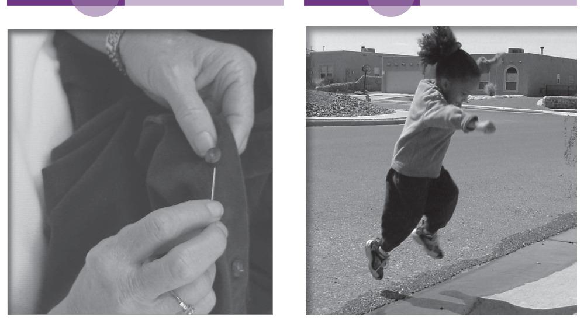
Hình 1.4: Các động tác chính xác cần thiết để may vá khiến đây trở thành một kỹ năng vận động tinh.
Hình 1.3: Nhảy qua một vũng nước đòi hỏi nhóm cơ lớn hơn và ít độ chính xác hơn, khiến đây trở thành một kỹ năng vận động thô.
Thử Thách Trí Não 1.2
Xác định xem mỗi kỹ năng sau đây được phân loại là kỹ năng vận động tinh (F) hay thô (G), hay có yếu tố của cả hai (B).
- Ký tên vào tấm séc
- Rê bóng rổ
- Ném đĩa
- Đi lại bằng nạng
- Tắc bóng (trong bóng đá)
- Rạch một vết mổ phẫu thuật
- Nhặt một cái kẹp giấy
- Chuyền bóng trên đầu (bóng chuyền)
tác động đáng kể đến mức độ mà nhiều kỹ năng có thể được thực hiện thành thạo (Payne & Isaacs, 2020). Theo đó, mức độ kiểm soát vận động tinh thể hiện trong khi thực hiện một kỹ năng có thể được dùng để đánh giá sự phát triển kỹ năng.
Trẻ em có xu hướng đạt được độ thành thạo kỹ năng vận động thô trước khi phát triển khả năng kiểm soát kỹ năng vận động tinh (Eichstaedt & Kalakian, 1993). Do đó, sự sẵn sàng phát triển phải là một yếu tố được xem xét khi thiết kế các tiến trình giảng dạy trong đó nhiệm vụ học tập ngày càng khó hơn. Các kỹ năng hoặc thành phần kỹ năng nên được giới thiệu theo trình tự đi từ thô đến tinh.
Kỹ Năng Rời Rạc Vs. Nối Tiếp Vs. Liên Tục
Hệ thống phân loại thứ hai xếp các kỹ năng vào một trong ba hạng mục dựa trên bản chất tổ chức của chúng. Kỹ năng rời rạc là kỹ năng có điểm bắt đầu và điểm kết thúc được xác định rõ. Ví dụ như vung gậy golf, chuyển từ ngồi sang đứng, và ném móng ngựa. Khi một số kỹ năng rời rạc được kết hợp thành một trình tự tích hợp, chẳng hạn như quàng dây bắt bê, thực hiện một bài biểu diễn trượt băng nghệ thuật, hoặc dọn ngăn kéo dao thìa từ máy rửa bát, nó được phân loại là kỹ năng nối tiếp. Cuối cùng, kỹ năng liên tục là những kỹ năng mà điểm bắt đầu và điểm kết thúc hoặc là tùy ý, hoặc được xác định bởi một yếu tố môi trường nào đó (chẳng hạn như vạch đích) thay vì bởi chính nhiệm vụ. Thường thì các kỹ năng liên tục mang tính lặp đi lặp lại. Chúng bao gồm đạp xe, tập trên máy elliptical, chèo thuyền, đẩy xe lăn bằng tay, và vẽ theo đường mẫu.
Bản chất tổ chức của một nhiệm vụ có hàm ý đối với luyện tập. Vì các động tác trong kỹ năng liên tục có sự phụ thuộc lẫn nhau cao, chúng thường được luyện tập tốt nhất như một toàn thể. Tuy nhiên, kỹ năng nối tiếp thường có thể được đơn giản hóa khi cần thiết bằng cách luyện tập các thành phần riêng lẻ. Mối quan hệ giữa tổ chức nhiệm vụ và luyện tập toàn bộ so với luyện tập từng phần sẽ được thảo luận chi tiết trong Chương 9.
Thử Thách Trí Não 1.3
Phân loại mỗi kỹ năng sau đây là rời rạc (D), liên tục (C), hay nối tiếp (S).
- Nhảy ba bước
- Cú đánh croquet
- Đá bóng bằng chân (punt bóng bầu dục)
- Động tác lunge
- Nhảy xà ngang thể dục dụng cụ
- Chuyển từ xe lăn sang giường
- Đi bộ với dụng cụ hỗ trợ
- Trượt tuyết băng đồng
Kỹ Năng Đóng Vs. Kỹ Năng Mở
Tính đoán trước được của môi trường mà một kỹ năng được thực hiện quyết định hệ thống phân loại thứ ba. Hệ thống này cũng dựa trên một dải liên tục, vì mức độ đoán trước được có thể thay đổi giữa thấp và cao. Ở một đầu của dải liên tục là các kỹ năng được thực hiện trong môi trường ổn định, có thể đoán trước; đây là các kỹ năng đóng. Với kỹ năng đóng, người thực hiện kiểm soát tình huống thực hiện vì vật thể bị tác động hoặc bối cảnh mà kỹ năng được thực hiện không thay đổi. Ví dụ, trong môn bowling, bất kể đường bowling có đông đúc đến đâu, các cọc bóng vẫn đứng yên và người thực hiện chọn thời điểm bắt đầu động tác. Những ví dụ khác về kỹ năng đóng bao gồm chẻ gỗ, cú ném phạt, nhặt một tách cà phê, kéo khóa áo khoác, và băng cổ tay cho vận động viên.
Các kỹ năng mở nằm ở đầu kia của dải liên tục, vì chúng được thực hiện trong một môi trường không đoán trước được, luôn thay đổi. Trong kỹ năng mở, người thực hiện sẽ không biết cần loại động tác nào cho đến ngay trước khi thực hiện (Smith, 2011). Bắt bóng lăn là một ví dụ điển hình. Sau khi bóng được đánh đi, một cầu thủ ở hàng trong nhận được thông tin về hướng và quỹ đạo nhưng không biết chính xác vị trí bóng sẽ nảy lên. Thêm vào đó, khi bóng chạm đất hoặc bất kỳ lúc nào khi bóng di chuyển qua sân trong, bóng có thể cong hoặc nảy sai, buộc cầu thủ phải sẵn sàng điều chỉnh đến phút cuối. Tương tự, trong môn xe đạp leo núi, người đi xe phải liên tục điều chỉnh phản ứng của mình để phù hợp với đường mòn. Những ví dụ khác về kỹ năng mở bao gồm đuổi đối thủ trong môn khúc côn cầu trên sân và đi bộ qua đám đông sau một buổi hòa nhạc, phim chiếu rạp, hoặc sự kiện thể thao. Hình 1.5 cho thấy dải liên tục và các câu hỏi dẫn dắt để giúp người thực hành xác định một kỹ năng nằm ở vị trí nào trên dải liên tục đó.
Sự phân biệt đóng/mở là quan trọng đối với người thực hành, vì mục tiêu hướng dẫn cho mỗi loại khác biệt đáng kể. Đối với kỹ năng đóng, tính nhất quán là mục tiêu và nên nhấn mạnh việc tinh chỉnh kỹ thuật. Tuy nhiên, vì chúng được thực hiện trong nhiều bối cảnh khác nhau, một số kỹ năng đóng được gọi là kỹ năng đóng có tính biến thiên giữa các lần thử. Đối với những loại kỹ năng này, trong khi

Hình 1.5: Dải liên tục kỹ năng đóng–mở.
Kỹ năng đóng: Với tới cây bút; Đẩy xà (bench press); Phát bóng tennis; Đánh bóng từ máy phát bóng; Hỗ trợ (spot) vận động viên thể dục dụng cụ; Chặn cú bóng trong môn goalball. • Loại động tác cần thiết đã được biết trước • Người thực hiện quyết định thời điểm bắt đầu động tác • Kỹ năng chỉ phụ thuộc vào hình thức vận động
Kỹ năng mở: • Loại động tác không biết cho đến ngay trước khi cần • Không kiểm soát được thời điểm bắt đầu động tác • Phải phối hợp động tác với động tác của đồng đội, đối thủ, hoặc các biến số khác
việc phát triển kỹ thuật vẫn quan trọng, người học cũng phải có khả năng điều chỉnh kỹ thuật đó theo tình huống. Ví dụ, người chơi bowling phải điều chỉnh thực hiện của mình dựa trên vị trí của các cọc bóng trong bất kỳ lần thử nào, vì vậy họ nên luyện tập các kết hợp cọc bóng tiềm năng khác nhau. Tương tự, luyện tập cú putt trong golf nên bao gồm nhiều độ dốc và điều kiện mặt cỏ khác nhau, cũng như các vị trí và khoảng cách khác nhau từ bóng đến lỗ.
Đối với kỹ năng mở, nơi người học phải liên tục điều chỉnh động tác của mình theo môi trường không ổn định và không đoán trước được, thực hiện thành công phụ thuộc ít hơn vào việc làm chủ kỹ thuật và nhiều hơn vào khả năng chọn đáp án phù hợp của người học trong một tình huống nhất định. Do đó, luyện tập nên mô phỏng trò chơi hoặc bối cảnh mà kỹ năng sẽ được thực hiện, nhấn mạnh vào việc học cách dự đoán và thích ứng với các yêu cầu của tình huống thực hiện luôn thay đổi.
Sự phân biệt đóng/mở cũng có thể giúp người thực hành điều chỉnh độ phức tạp của nhiệm vụ. Ví dụ, ném một quả bóng bầu dục có thể được xem là kỹ năng đóng hoặc mở, tùy thuộc vào bối cảnh. Ném vào một mục tiêu cố định được xem là kỹ năng đóng. Khi các biến số khác được thêm vào, chẳng hạn như một người nhận bóng di chuyển hoặc một hàng thủ đuổi theo, việc ném bóng bầu dục trở thành một nhiệm vụ ngày càng mở và phức tạp hơn. Trong các giai đoạn đầu của tiếp thu kỹ năng, người học khó có thể tập trung vào việc thực hiện động tác trong khi đồng thời nhận biết các khía cạnh của môi trường (chẳng hạn như vị trí của người nhận bóng hoặc động tác của cầu thủ phòng thủ)—những đặc tính vốn có của kỹ năng mở. Bằng cách thay đổi bối cảnh của một kỹ năng để ban đầu làm cho nó đóng hơn, người thực hành có thể giảm một cách chiến lược các yêu cầu chú ý và đơn giản hóa quá trình học tập.
Hệ Thống Phân Loại Đa Chiều
Theo Gentile (2000), người ta không thể hiểu đầy đủ các yêu cầu mà một nhiệm vụ đặt ra cho người thực hiện bằng cách sử dụng một hệ thống đơn chiều. Thay vào đó,
Gentile đề xuất một hệ thống phân loại phân loại kỹ năng theo hai đặc điểm chung: (1) bối cảnh mà chúng được thực hiện (điều kiện điều tiết) và (2) yêu cầu hành động của kỹ năng. Kết hợp lại, hai chiều này cung cấp cái nhìn sâu sắc về các quá trình liên quan đến tiếp thu kỹ năng.
Thử Thách Trí Não 1.4
- Xác định vị trí trên dải liên tục đóng–mở của các kỹ năng sau bằng cách đặt các chữ cái tương ứng trên đường thẳng. ĐÓNG — MỞ a. Đi bộ với gậy qua một trung tâm mua sắm đông đúc b. Đua xe BMX c. Chơi trò chơi điện tử d. Hướng dẫn bệnh nhân thực hiện các bài giãn cơ tạo thuận lợi thần kinh cơ bằng cảm giác tự thân (PNF) e. Đánh bóng từ giá đỡ (tee) f. Đánh bóng được ném tới g. Cắt cỏ h. Trượt tuyết trên ván i. Giữ thăng bằng trên ván lắc j. Bài tập né tránh bằng dây xem tại www.youtube.com/watch?v=-ohk6XGaQQ&list=TLPQMTEwNTIwMjCdlZ2wvjP4ag&index=5
- José đã lái xe từ năm 16 tuổi. Giờ, ở đại học, anh ấy muốn mua một chiếc xe nhất định, nhưng nó có hộp số tay. Anh ấy chưa từng lái xe số tay trước đây và đã hỏi bạn có dạy anh ấy không. Bạn đồng ý. Xếp hạng các môi trường sau cho buổi học đầu tiên của José, với 1 là tốt nhất và 3 là tệ nhất. Giải thích thứ hạng của bạn. a. Trên một con đường nông thôn b. Trong một bãi đậu xe trống c. Trong giao thông thành phố
Điều Kiện Điều Tiết
Kỹ năng không được thực hiện trong chân không. Để thực hiện một cú đánh đầu nhảy lên trong bóng đá, ví dụ, người thực hiện phải điều chỉnh động tác của mình theo chiều cao, kích thước, tốc độ và quỹ đạo của bóng, cũng như vị trí của mục tiêu dự kiến. Do đó, đối với bất kỳ kỹ năng nhất định nào, tồn tại một số yếu tố môi trường quy định các đặc điểm vận động cần thiết để thực hiện thành công. Những yếu tố này
được gọi là điều kiện điều tiết (Gentile, 2000) và việc xác định chúng có thể được dùng để phân biệt các kỹ năng. Những yếu tố khác, như sự phân tâm, được xem là không điều tiết. Dù chúng có thể hiện diện trong bối cảnh môi trường và thậm chí ảnh hưởng đến thực hiện, động tác không nhất thiết phải phù hợp với chúng để đạt được mục tiêu hành động.
Thử Thách Trí Não 1.5
- Xác định xem mỗi mục dưới đây được xem là điều kiện điều tiết (R) hay không điều tiết (N) đối với việc ném phi tiêu: a. Chiều cao của bảng phi tiêu b. Tiếng ồn của đám đông c. Khoảng cách tới bảng phi tiêu d. Độ sắc của đầu phi tiêu e. Điểm số
- Trên một tờ giấy riêng, xác định các điều kiện điều tiết cho từng mục sau: a. Thực hiện động tác leo núi trên bóng Bosu b. Đi bộ dọc theo một đường mòn trong rừng c. Nhảy từ bàn nhảy d. Trượt tuyết băng đồng e. Bước lên thang cuốn f. Nhặt tiền thối từ quầy thu ngân g. Lau bụi đồ nội thất trong nhà bạn h. Lấy valise của bạn từ băng chuyền hành lý
- Một nhà trị liệu nghề nghiệp hướng dẫn một đứa trẻ xâu mì ống vào dây để cải thiện kiểm soát vận động tinh. Hãy xác định xem hoạt động này có tính biến thiên giữa các lần thử hay không. Biện minh cho câu trả lời của bạn.
Khi xem xét bối cảnh môi trường mà một nhiệm vụ được thực hiện, trước tiên người ta phải xác định xem các điều kiện điều tiết là cố định, như khi bắn vào một mục tiêu cố định, hay đang chuyển động, như trong bắn đĩa bay. Lưu ý rằng khái niệm này song song với khái niệm phân loại kỹ năng mở so với đóng, ở chỗ các điều kiện điều tiết của kỹ năng đóng có xu hướng cố định, trong khi đó, các điều kiện điều tiết của kỹ năng mở có xu hướng chuyển động. Như đã nêu trước đó, khi người học phải phù hợp với các ràng buộc do môi trường áp đặt, họ phải tham gia vào các quá trình phức tạp hơn để đánh giá tình huống và chọn đáp án phù hợp.
Câu hỏi tiếp theo là liệu có tính biến thiên đáp án giữa các lần thử hay không—nghĩa là, các điều kiện điều tiết có giữ nguyên hay có thay đổi sau mỗi lần thực hiện? Một cú ném phạt, ví dụ, có tính biến thiên giữa các lần thử thấp,
bởi vì bối cảnh mà nó được thực hiện không thay đổi từ cú này sang cú khác. Rổ bóng không thay đổi, khoảng cách mà người ta thực hiện cú ném không đổi, và các cầu thủ phòng thủ không cản trở người ném. Ở chiều ngược lại, các hậu vệ biên (tail back) trải nghiệm mức độ biến thiên giữa các lần thử rất lớn; họ phải thay đổi kiểu chạy của mình mỗi khi nhận bóng để tránh bị tắc bóng và giành được số yard tối đa.
Yêu Cầu Hành Động
Chiều còn lại mà Gentile (2000) đề xuất liên quan đến yêu cầu hành động của một kỹ năng, cụ thể là về vận động cơ thể và thao tác với vật thể. Trong ngữ cảnh này, vận động cơ thể đề cập đến việc người thực hiện có phải thay đổi vị trí (di chuyển cơ thể từ điểm A đến điểm B) khi thực hiện kỹ năng hay không. Trượt tuyết băng đồng, thực hiện cú nhảy cao, và sử dụng thiết bị hỗ trợ đi bộ là những ví dụ về kỹ năng đòi hỏi người thực hiện thay đổi vị trí từ nơi này sang nơi khác (vận chuyển cơ thể). Ở đầu kia của dải là những kỹ năng đòi hỏi sự ổn định của cơ thể. Thực hiện động tác hít đất, nhấc một tách cà phê khi đang ngồi, thực hiện cú putt trong golf, và chơi bộ trống đều thuộc hạng mục này. Lưu ý rằng dù cơ thể thay đổi vị trí khi, ví dụ, một người đang điều khiển xe mô tô, hành động này vẫn được xếp vào loại ổn định cơ thể. Trong trường hợp này, cá nhân đó thực sự không di chuyển cơ thể mà cơ thể di chuyển cùng với chiếc xe mô tô. Những ví dụ khác là được kéo lên đỉnh đồi trượt tuyết bằng dây kéo, câu cá bằng lưới kéo, và đi tham quan thành phố bằng Segway.
Một yếu tố quyết định thứ hai của yêu cầu hành động là thao tác với vật thể. Một số kỹ năng đòi hỏi người thực hiện thao tác với vật thể hoặc đối thủ. Đan len, rửa bát, nhảy sào và đấu vật thuộc hạng mục này. Những kỹ năng khác, chẳng hạn như thực hiện bài tập nghiêng khung chậu, bài kiểm tra nhanh nhẹn hình lục giác, và kiểu bước nhịp nhàng của điệu tango, không yêu cầu thao tác với vật thể.
Áp Dụng Hệ Thống Phân Loại Đa Chiều
Để sử dụng hệ thống phân loại này nhằm hiểu các yêu cầu mà một nhiệm vụ đặt ra cho người học, người thực hành phải đặt bốn câu hỏi:
- Các điều kiện điều tiết là cố định hay đang chuyển động?
- Các điều kiện điều tiết có giữ nguyên (không có tính biến thiên giữa các lần thử) hay có thay đổi (có tính biến thiên giữa các lần thử) sau mỗi lần thực hiện?
- Người thực hiện có được yêu cầu thay đổi vị trí hay duy trì tư thế cơ thể khi thực hiện nhiệm vụ không?
- Nhiệm vụ có yêu cầu người thực hiện thao tác với một vật thể hoặc đối thủ không?
Sau khi xác định được câu trả lời cho từng câu hỏi, kỹ năng có thể được phân loại vào một trong 16 hạng mục kết quả, như thể hiện trong Bảng 1.1.
Ví dụ, trong cú chuyền bóng bằng cẳng tay trong bóng chuyền, người thực hiện trước tiên phải theo dõi một quả bóng đang chuyển động, di chuyển đến vị trí để chặn bóng, sau đó kiểm soát độ bật của bóng để đẩy nó theo hướng mong muốn. Do đó, các điều kiện điều tiết
Bảng 1.1: Hệ thống phân loại đa chiều của Gentile, kèm ví dụ về nhiệm vụ.
YÊU CẦU HÀNH ĐỘNG — Không vận chuyển cơ thể cũng không thao tác vật thể / Chỉ thao tác vật thể / Chỉ vận chuyển cơ thể / Vừa vận chuyển cơ thể vừa thao tác vật thể.
Điều kiện điều tiết — Cố định và không đổi: (1) Thực hiện động tác gập bụng; (2) Di chuyển một quân cờ; (3) Leo một cái thang; (4) Đẩy tạ.
Điều kiện điều tiết — Cố định và biến đổi: (5) Viết các chữ ABC bằng chân để phục hồi chức năng mắt cá; (6) Chơi “round the clock” trong môn phi tiêu; (7) Đi theo một kiểu múa đã được vẽ trên sàn; (8) Cùng với một người bạn, đi theo một kiểu múa đã được vẽ trên sàn.
Điều kiện điều tiết — Đang chuyển động và không đổi: (9) Nổi trên sông bằng một vòng phao; (10) Nhân viên kiểm tra chất lượng lấy một chai từ băng chuyền đang chạy trong nhà máy đóng chai; (11) Chạy xuống một ngọn đồi; (12) Bước lên một vỉa hè di động khi đang dùng nạng.
Điều kiện điều tiết — Đang chuyển động và biến đổi: (13) Đi trên một vòng phao được kéo bởi ca nô tốc độ; (14) Bắt nhiều quả bóng với kích thước khác nhau trong khi đứng thăng bằng bằng một chân; (15) Trượt băng trên một sân băng đông đúc; (16) Cú chuyền bóng bằng cẳng tay trong bóng chuyền.
đang chuyển động (kỹ năng mở) và thay đổi từ lần thử này sang lần thử khác, và người thực hiện phải thay đổi vị trí và thao tác với vật thể. Với đánh giá này, cú chuyền cẳng tay thuộc hạng mục 16.
Người thực hành vận động con người có thể sử dụng hệ thống phân loại đa chiều của Gentile theo một số cách. Thứ nhất, khi bạn đi chéo từ ô trên bên trái đến ô dưới bên phải, độ phức tạp của nhiệm vụ tăng lên, kèm theo sự gia tăng tương ứng về yêu cầu đặt lên người thực hiện. Theo đó, kỹ năng đơn giản nhất là kỹ năng mà môi trường cố định, không có tính biến thiên giữa các lần thử hay vận chuyển cơ thể, và không yêu cầu thao tác với vật thể. Ở đầu kia của dải, kỹ năng phức tạp nhất là kỹ năng được thực hiện trong bối cảnh môi trường đang chuyển động, có tính biến thiên giữa các lần thử cao, và đòi hỏi cả vận chuyển cơ thể lẫn thao tác với vật thể. Để thực hiện thành công một kỹ năng như vậy, người thực hiện phải có khả năng quét môi trường để xác định và xử lý thông tin liên quan, quyết định cách đáp án, và phân bổ nguồn lực chú ý để kiểm soát đồng thời vận chuyển cơ thể và thao tác với vật thể.
Thứ hai, bằng cách hiểu mức độ phức tạp của một kỹ năng, người thực hành có thể thiết kế tốt hơn những trải nghiệm học tập vừa thử thách vừa thực tế. Một tiến trình logic
mà đi từ đơn giản đến phức tạp cuối cùng dẫn đến mô phỏng bối cảnh thực tế mà kỹ năng sẽ được thực hiện. Hãy xem Hình 1.6 để có ví dụ về tiến trình từ đơn giản đến phức tạp đối với cú chuyền bóng bằng cẳng tay trong bóng chuyền.
Thử Thách Trí Não 1.6
ĐÁNH GIÁ ĐIỀU KIỆN ĐIỀU TIẾT
Sử dụng bảng dưới đây, hãy đánh giá các điều kiện điều tiết và yêu cầu hành động của mỗi kỹ năng. Dựa trên đánh giá của bạn, hãy xác định kỹ năng đó thuộc hạng mục nào trong số 16 hạng mục của hệ thống phân loại đa chiều của Gentile (Bảng 1.1).
Bảng đánh giá: Kỹ năng | Điều kiện điều tiết (môi trường): cố định / đang chuyển động | Điều kiện điều tiết (biến thiên giữa các lần thử): không đổi / thay đổi | Vận chuyển cơ thể (thay đổi vị trí): có / không | Thao tác vật thể: có / không | Số hạng mục.
Ví dụ đã điền sẵn: Đặt một quả bóng golf — X, X, X, X — 6.
- Đẩy xe lăn qua đám đông tại một buổi hòa nhạc
- Thực hiện động tác lunge trên bóng Bosu
- Nhắn tin trên điện thoại di động
- Trượt tuyết tốc độ ngắn (short track)
- Trò chơi Wii Fit xem tại www.youtube.com/watch?v=fmHRVjAlt_c
Thiết kế các tiến trình trở nên thách thức hơn, tuy nhiên, khi nhiều kỹ năng hoặc nhiều biến thể của một kỹ năng cùng chia sẻ một hạng mục trong hệ thống phân loại. Ví dụ, cú chuyền bóng bằng cẳng tay có thể được dùng để trả bóng qua lưới, nhận một cú

Hình 1.6: Tiến trình mẫu từ đơn giản đến phức tạp cho cú chuyền bóng bằng cẳng tay.
Kỹ năng: Chuyền bóng bằng cẳng tay trong bóng chuyền. Các biến số có thể thay đổi: 1. Độ ổn định của điều kiện điều tiết; 2. Tính biến thiên giữa các lần thử; 3. Vận chuyển cơ thể.
Hoạt động 1: Bạn tình tung bóng với quỹ đạo và vị trí không đổi. Hệ thống phân loại của Gentile: 1. Điều kiện điều tiết tương đối ổn định; 2. Không có tính biến thiên giữa các lần thử; 3. Không vận chuyển cơ thể; 4. Thao tác vật thể.
Hoạt động 2: Bạn tình tung bóng vào một vị trí không đổi nhưng thay đổi quỹ đạo mỗi lần. Hệ thống phân loại của Gentile: 1. Điều kiện điều tiết đang chuyển động; 2. Có tính biến thiên giữa các lần thử; 3. Không vận chuyển cơ thể; 4. Thao tác vật thể.
Hoạt động 3: Bạn tình tung bóng đến các vị trí khác nhau với quỹ đạo khác nhau nhưng báo trước bóng sẽ đi về đâu trước khi tung. Hệ thống phân loại của Gentile: 1. Điều kiện điều tiết tương đối ổn định; 2. Có tính biến thiên giữa các lần thử; 3. Có vận chuyển cơ thể; 4. Thao tác vật thể.
Hoạt động 4: Bạn tình tung ngẫu nhiên bóng đến các vị trí khác nhau với quỹ đạo khác nhau mà không báo trước bóng sẽ đi về đâu. Hệ thống phân loại của Gentile: 1. Điều kiện điều tiết đang chuyển động; 2. Có tính biến thiên giữa các lần thử; 3. Có vận chuyển cơ thể; 4. Thao tác vật thể.
phát bóng hoặc cú đánh tấn công của đối thủ, hoặc để đưa bóng lên không trung cho một cú tấn công. Dù tất cả các biến thể này đều thuộc Hạng mục 16, độ chính xác trong việc đặt bóng lại khác nhau ở mỗi biến thể, làm thay đổi độ phức tạp của nhiệm vụ. Tương tự, đứng thăng bằng bằng một chân với mắt mở hoặc mắt nhắm đều thuộc Hạng mục 1, nhưng tư thế sau khó thực hiện hơn do thiếu các tín hiệu thị giác. Thực hiện cùng một nhiệm vụ với hai tay giơ cao qua đầu thay vì dang sang ngang cũng làm thay đổi độ phức tạp của kỹ năng do sự dịch chuyển của vị trí trọng tâm, nhưng kỹ năng vẫn nằm trong Hạng mục 1. Trong những trường hợp như vậy, người thực hành phải xem xét những thuộc tính nhiệm vụ khác ảnh hưởng đến yêu cầu mà kỹ năng đặt lên người thực hiện khi sắp xếp thứ tự các hoạt động luyện tập.
Cuối cùng, người thực hành cũng có thể dùng mô hình của Gentile để đánh giá một cách có hệ thống các khả năng và hạn chế vận động của người học. Việc đánh giá này mang lại sự hiểu biết tốt hơn về mức độ phức tạp mà người học có thể xử lý và cái nhìn sâu sắc về những yêu cầu thực hiện (ví dụ, quét môi trường, xử lý thông tin, phân bổ chú ý) nào đang gây khó khăn. Ví dụ, nếu người học không còn có thể hoàn thành thành công cú chuyền cẳng tay khi được yêu cầu thay đổi vị trí để chặn bóng (Hoạt động số 3 trong Hình 1.6;
phân loại Hạng mục 8), thì yêu cầu xử lý kết hợp của vận chuyển cơ thể và thao tác với vật thể có thể là quá cao. Một giải pháp tiềm năng là cho người học luyện tập việc thay đổi vị trí và định vị bản thân để chuyền cẳng tay mà không có bóng. Động tác có thể ban đầu tự định nhịp và đi cùng một hướng ở mỗi lần thử (Hạng mục 3), tiến triển đến việc nhanh chóng thay đổi vị trí về phía trước, phía sau và sang hai bên khi thông tin hướng đi được cung cấp trước (Hạng mục 7), và cuối cùng là phải di chuyển vào vị trí mà không được báo trước hướng đi (Hạng mục 15). Khi người học đã thoải mái với động tác chân, Hoạt động số 3 trong Hình 1.6 sẽ được đưa trở lại, tiến triển cuối cùng đến Hoạt động số 4, nơi hướng và quỹ đạo của cú tung không còn đoán trước được, mô phỏng điều kiện thi đấu.
Thử Thách Trí Não 1.7
Hãy thiết kế một tiến trình từ đơn giản đến phức tạp có thể được dùng để dạy kỹ năng rê bóng (bóng rổ) bằng cách sử dụng hệ thống phân loại của Gentile.
KHÁC BIỆT CÁ NHÂN
Một thách thức mà người thực hành phải đối mặt là thực tế là tất cả người học đều độc nhất. Tính độc nhất của mỗi người là hàm số của các đặc điểm tương đối ổn định và bền bỉ được gọi là khác biệt cá nhân. Các yếu tố như chiều cao, dáng người, thiếu ngủ, cấu trúc sinh lý (ví dụ, số sợi cơ co nhanh so với co chậm), phong cách học, loại và lượng kinh nghiệm vận động trước đó, động lực, mức độ phát triển, nền tảng văn hóa, cấu trúc tâm lý, thái độ và sự tự tin đều ảnh hưởng đến tốc độ và tiềm năng phát triển độ thành thạo kỹ năng. Do khác biệt cá nhân, các chiến lược giảng dạy sẽ không hiệu quả như nhau đối với tất cả người học, vì vậy người thực hành phải xác định chiến lược tốt nhất để áp dụng dựa trên nhu cầu và phẩm chất đa dạng của người học.
Năng Lực Vận Động
Người thực hành vận động con người quan tâm đến những khác biệt cá nhân về năng lực vận động. Năng lực là những đặc điểm di truyền là điều kiện tiên quyết cho thực hiện thành thạo. Theo đó, mức độ mà người học có thể phát triển độ thành thạo trong một kỹ năng vận động cụ thể phụ thuộc vào việc họ có sở hữu các năng lực nền tảng cần thiết hay không.
Mặc dù nhiều năng lực khác nhau đã được xác định cho đến nay, các nhà nghiên cứu ban đầu giả thuyết rằng tồn tại một năng lực vận động chung duy nhất (Brace, 1927; McCloy, 1934). Đứng sau quan niệm này là nhận xét rằng các vận động viên thành đạt thường tiếp nhận kỹ năng mới nhanh chóng và vượt trội ở nhiều kỹ năng khác mà không cần nhiều luyện tập. Do đó, có vẻ hợp lý khi
cho rằng tồn tại mối tương quan cao giữa mức độ năng lực chung của một người và tiềm năng đạt độ thành thạo kỹ năng ở nhiều nhiệm vụ khác nhau. Nói cách khác, nếu bạn thừa hưởng mức độ năng lực vận động chung cao, bạn có thể đạt được mức độ thành thạo cao trong tất cả các kỹ năng vận động, từ golf đến đua xe trượt băng (bobsledding) đến chèo kayak.
Thách thức sự tồn tại của năng lực vận động chung, giả thuyết tính đặc thù đề xuất rằng, mặc dù cá nhân có thể thừa hưởng một số lượng lớn năng lực vận động, những năng lực đó độc lập với nhau (Henry, 1968). Thêm vào đó, mỗi kỹ năng đòi hỏi một tập hợp năng lực cụ thể để thực hiện thành công. Hệ quả là, một người đạt được mức độ thành thạo cao trong bắn cung sẽ không nhất thiết đạt được mức độ thành thạo tương tự trong đấu vật, vì hai kỹ năng này có yêu cầu năng lực nền tảng khác nhau.
Nghiên cứu kiểm tra sức mạnh của mối liên hệ giữa các năng lực vận động đã chấm dứt cuộc tranh luận giữa những người ủng hộ năng lực vận động chung và giả thuyết tính đặc thù. Nhìn chung, các nhà nghiên cứu đã phát hiện mối tương quan thấp giữa thực hiện của một cá nhân ở hai nhiệm vụ khác nhau (kể cả những nhiệm vụ có vẻ liên quan chặt chẽ), ủng hộ giả thuyết tính đặc thù (ví dụ, Drowatzky & Zucatto, 1967; Henry, 1968; Zelaznik, Spencer, & Doffin, 2000).
GHI CHÚ NGHIÊN CỨU
Tầm quan trọng của phối hợp mắt–tay đối với nhiều môn thể thao và hoạt động không thể bị phóng đại. Kết quả là, một số công ty đã tạo ra các thiết bị huấn luyện để tăng cường phối hợp mắt–tay, mà họ tuyên bố có thể nâng cao thực hiện trên nhiều loại nhiệm vụ. Ẩn dưới những tuyên bố này là giả định rằng phối hợp mắt–tay là một năng lực chung. Với việc thiếu bằng chứng ủng hộ sự tồn tại của các năng lực chung, và sự phổ biến hiện nay của những thiết bị này trong đánh giá và huấn luyện phối hợp mắt–tay chung, Ellison và các cộng sự (2018) đã điều tra mối quan hệ giữa thực hiện trên các bài kiểm tra khác nhau về phối hợp mắt–tay để đánh giá xem nó có thực sự được phân loại là một năng lực chung hay không. Tám mươi bảy tình nguyện viên, những người đang tích cực tham gia thể thao, đã hoàn thành bốn bài kiểm tra phối hợp mắt–tay, ba bài liên quan đến các nhiệm vụ trong phòng thí nghiệm và bài kiểm tra bắt bóng từ tường, một nhiệm vụ thực địa. Nhìn chung, các mối tương quan giữa các nhiệm vụ đều yếu, ngoại trừ một trường hợp. Trong trường hợp cụ thể đó, các quy trình được sử dụng cho hai bài kiểm tra rất giống nhau. Nhìn chung, các liên kết yếu tìm thấy trong nghiên cứu này không ủng hộ sự tồn tại của một năng lực phối hợp mắt–tay chung, mà thay vào đó phù hợp với giả thuyết tính đặc thù (Henry, 1968). Điều này có ý nghĩa gì đối với người thực hành? Vì huấn luyện trên các thiết bị phối hợp mắt–tay chung khó có thể chuyển giao sang thực hiện thể thao, nên đó không phải là cách sử dụng hiệu quả thời gian luyện tập. Thay vào đó, người thực hành nên thiết kế các trải nghiệm huấn luyện đặc thù cho môn thể thao nhằm nâng cao thực hiện cạnh tranh/tình huống.
Thử Thách Trí Não 1.8
Xác định những năng lực nào quan trọng để đạt được độ thành thạo cao trong các lĩnh vực sau:
- Thực hiện phẫu thuật chỉnh hình
- Đi dây điện cho một ngôi nhà (về điện)
- Chữa cháy
- Trang trí một chiếc bánh
Thử Thách Trí Não 1.9
- Trong những phát biểu sau, phát biểu nào đúng? Biện minh cho câu trả lời của bạn. a. Một cá nhân có thể có năng lực nhưng không thành thạo. b. Một cá nhân có thể thành thạo mà không có năng lực.
- Khalilah mạnh về độ chính xác kiểm soát, kiểm soát tốc độ và sự khéo léo của ngón tay nhưng yếu về độ vững của cánh tay–bàn tay và định hướng đáp án. Tiềm năng của cô ấy để thực hiện giấc mơ trở thành một nghệ sĩ xăm hình nổi tiếng là gì? Hãy giải thích đầy đủ câu trả lời của bạn.
Tuy nhiên, vì mối tương quan thấp được tìm thấy thay vì hoàn toàn không có tương quan, vẫn có khả năng một số năng lực nền tảng giống nhau được các nhiệm vụ khác nhau đòi hỏi. Đã nhận ra điều này từ sớm, Fleishman (1962) đã không chỉ tìm cách xác định các năng lực vận động nền tảng có khả năng dự báo mức độ thành thạo kỹ năng cao, mà còn tạo ra một hệ thống phân loại mà theo đó các kỹ năng có thể được phân loại.
Phân Loại Năng Lực Vận Động
Hệ thống phân loại của Fleishman gồm hai nhóm năng lực vận động: (1) năng lực vận động tri giác và (2) năng lực thành thạo thể chất, được xác định trong Bảng 1.2, kèm theo ví dụ về một kỹ năng mà năng lực đó là yếu tố cơ bản. Cần lưu ý rằng danh sách này không bao hàm tất cả, và cũng không chắc rằng tất cả các năng lực đã được xác định.
Ý Nghĩa Thực Tiễn
Tất cả chúng ta đều có những năng lực khác nhau giúp tăng cường hoặc hạn chế khả năng trở nên thành thạo ở một nhiệm vụ cụ thể. Nhưng ngay cả khi chúng ta sở hữu các năng lực tiên quyết để hoàn thành một nhiệm vụ, cũng không có gì đảm bảo rằng chúng ta sẽ trở nên thành thạo. Chúng ta chỉ có tiềm năng trở nên thành thạo. Luyện tập và kinh nghiệm đóng vai trò trong việc hiện thực hóa tiềm năng đó. Do đó, trẻ em nên được cung cấp nhiều trải nghiệm vận động đa dạng nhất có thể. Những trải nghiệm đó nên
Bảng 1.2: Hệ thống phân loại năng lực vận động của Fleishman.
Năng lực vận động tri giác. Độ chính xác kiểm soát: Khả năng thực hiện các điều chỉnh vận động được kiểm soát chặt chẽ, đặc biệt là những điều chỉnh liên quan đến nhóm cơ lớn — Ví dụ: Rê bóng đá.
Phối hợp đa chi: Khả năng phối hợp nhiều động tác của các chi cùng lúc — Ví dụ: Cú đập bóng bóng chuyền.
Định hướng đáp án: Khả năng chọn nhanh một đáp án trong số nhiều phương án, như trong các tình huống thời gian phản ứng lựa chọn — Ví dụ: Hậu vệ biên tìm kiếm khoảng trống.
Thời gian phản ứng: Khả năng khởi phát nhanh một đáp án trước một kích thích bất ngờ — Ví dụ: Cú xuất phát trong bơi lội.
Tốc độ vận động chi: Khả năng thực hiện động tác chi lớn nhanh mà không tính đến thời gian phản ứng — Ví dụ: Cú bắn bóng bằng gậy hockey.
Kiểm soát nhịp độ: Khả năng điều chỉnh liên tục tốc độ và hướng một cách chính xác khi theo dõi mục tiêu — Ví dụ: Đi xe đạp leo núi.
Sự khéo léo của tay: Khả năng kiểm soát thao tác với các vật thể lớn bằng cánh tay và bàn tay — Ví dụ: Bóng nước.
Sự khéo léo của ngón tay: Khả năng kiểm soát thao tác với các vật thể nhỏ chủ yếu bằng ngón tay — Ví dụ: Nhắn tin trên điện thoại di động.
Độ vững của cánh tay–bàn tay: Khả năng thực hiện các động tác định vị chính xác của cánh tay và bàn tay mà ở đó sự tham gia của sức mạnh và tốc độ là tối thiểu — Ví dụ: Nha khoa.
Tốc độ cổ tay–ngón tay: Khả năng di chuyển nhanh cổ tay và các ngón tay — Ví dụ: Chia bài blackjack.
Ngắm mục tiêu: Khả năng hướng động tác của tay nhanh và chính xác vào một vật thể nhỏ trong không gian — Ví dụ: Bắn súng trường.
Năng lực thành thạo thể chất. Sức mạnh tĩnh: Khả năng tạo ra lực tối đa chống lại một vật thể nặng bên ngoài — Ví dụ: Đẩy ô tô ra khỏi đống tuyệt.
Sức mạnh động: Sức bền cơ bắp hoặc khả năng tạo lực lặp đi lặp lại — Ví dụ: Leo núi đá.
Sức mạnh bùng nổ: Công suất cơ bắp hoặc khả năng tạo nỗ lực tối đa bằng cách kết hợp lực và vận tốc — Ví dụ: Ném lao.
Sức mạnh thân: Sức mạnh động của cơ thân — Ví dụ: Nhảy sào.
Độ dẻo biên độ: Khả năng di chuyển cơ thân và cơ lưng qua một biên độ chuyển động lớn — Ví dụ: Người uốn dẻo xiếc.
Độ dẻo động: Khả năng thực hiện các động tác uốn cong nhanh, lặp đi lặp lại — Ví dụ: Nhảy cầu, nhảy tuyết trên không.
Phối hợp cơ thể thô: Khả năng phối hợp nhiều động tác cùng lúc trong khi cơ thể đang chuyển động — Ví dụ: Trượt tuyết dích dắc, bơi đồng diễn.
Thăng bằng cơ thể thô: Khả năng duy trì thăng bằng mà không có tín hiệu thị giác — Ví dụ: Đi dây bịt mắt.
Sức bền: Sức bền tim mạch hoặc khả năng duy trì nỗ lực — Ví dụ: Leo núi Everest.
Hệ thống phân loại năng lực vận động của Fleishman, được tóm tắt trong bảng đính kèm, trích từ The description and prediction of perceptual motor learning. Trong R. Glaser (Biên tập), Training research and education (tr. 137–175), University of Pittsburgh Press. Được sử dụng với sự cho phép.
phù hợp với mức độ phát triển. Người học sẽ điều chỉnh kỹ năng theo mức độ năng lực hiện tại của họ.
Ví dụ, thực hiện thành công một cú ném phạt theo quy chuẩn đòi hỏi một mức độ sức mạnh tiên quyết. Một người học nhỏ tuổi chưa phát triển đủ sức mạnh sẽ điều chỉnh thực hiện của mình cho phù hợp trong nỗ lực ghi bàn. Thay vì dùng kỹ thuật đúng, người học có thể thực hiện cú ném phạt bằng một động tác giống như “đẩy tạ” để tạo đủ lực đưa bóng lên cao và đủ xa. Người thực hành nên hạ rổ bóng xuống độ cao phù hợp hơn và khuyến khích người học dùng kỹ thuật đúng với mục tiêu gần hơn. Khi sự trưởng thành thể chất của người học tiến triển, hãy thay đổi độ cao của rổ cho phù hợp. Lưu ý rằng người học sẽ không tiến triển với cùng một nhịp độ, và tồn tại một trần di truyền đối với mức độ kỹ năng của mỗi người học bất kể lượng luyện tập.
Khái niệm năng lực cũng hữu ích cho việc phân loại kỹ năng. Thông qua một phương pháp được gọi là phân tích nhiệm vụ, người thực hành đánh giá các yêu cầu do một kỹ năng và bối cảnh thực hiện đặt ra nhằm xác định các năng lực nền tảng quan trọng cho thực hiện thành công. Sau đó, các kỹ năng có thể được nhóm lại cho phù hợp. Để thực hiện phân tích nhiệm vụ, trước tiên một kỹ năng được chia nhỏ thành các yếu tố then chốt hoặc các bộ phận thành phần. Khi các thành phần then chốt đã được xác định, các năng lực cần thiết để đáp ứng yêu cầu của chúng có thể được xác định dễ dàng hơn. Bằng cách tiến hành phân tích nhiệm vụ, người thực hành có thể phát triển sự hiểu biết sâu sắc hơn về các yêu cầu của kỹ năng. Hình 1.6 minh họa một phân tích nhiệm vụ và các ví dụ tiếp theo về điều kiện tiên quyết năng lực cho cú đập bóng bóng chuyền.
Nếu các năng lực nền tảng quan trọng đối với thực hiện thành công của một kỹ năng cụ thể, thì hợp lý là một cá nhân sở hữu những năng lực đó sẽ có khuynh hướng đạt được mức độ thành thạo cao. Hãy tưởng tượng tác động của điều này đối với các chương trình thể thao, vì chúng ta có thể dự đoán thực hiện tương lai chỉ bằng cách sàng lọc cá nhân cho một số năng lực nhất định. Trên thực tế, các chương trình xác định tài năng đã tồn tại từ nhiều thập kỷ. Chúng sàng lọc trẻ em và thanh thiếu niên bằng một loạt bài kiểm tra được xây dựng để xác định mức độ họ sở hữu một số năng lực nhất định. Kết quả bài kiểm tra sau đó được dùng để chọn lọc những cá nhân có vẻ có tiềm năng thành công trong một môn thể thao nhất định. Các bài kiểm tra khác sàng lọc các ứng viên cho
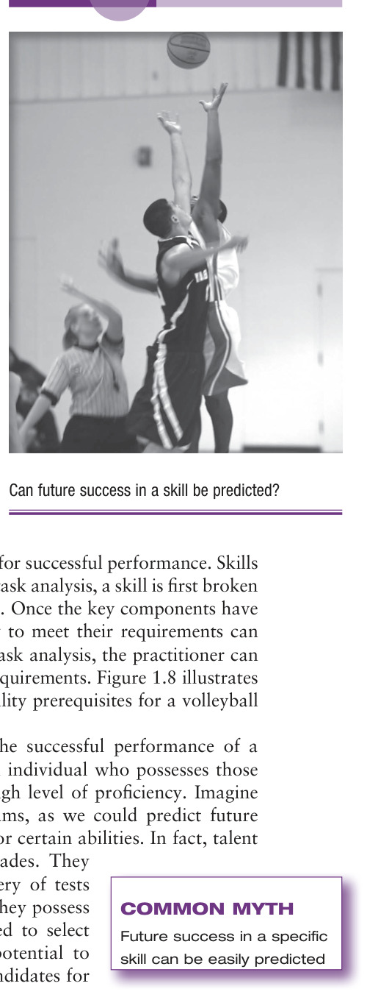
Hình 1.7: Quan niệm sai phổ biến — Thành công trong tương lai ở một kỹ năng cụ thể có thể được dự đoán dễ dàng. Liệu thành công tương lai trong một kỹ năng có thể được dự đoán không?

Hình 1.8: Phân tích nhiệm vụ của cú đập bóng bóng chuyền.
XÁC ĐỊNH TÀI NĂNG
- Video ví dụ về bài kiểm tra nhanh nhẹn thể chất của cảnh sát: www.youtube.com/watch?v=8d5e3Enny98
- Chương trình xác định và phát triển tài năng của UK Sport: https://www.uksport.gov.uk/our-work/talent-id
- Video giới thiệu xác định tài năng môn chèo vượt chướng ngại từ Úc: www.youtube.com/watch?v=o6V8fe8R-TE
- Nghe Tiến sĩ Rob Gray thảo luận về xác định tài năng trong podcast của ông tại http://perceptionaction.com/26c/
- Đọc Tuyên bố quan điểm của Hiệp hội Tâm lý Thể thao Quốc tế: “To Test or Not to Test? The Use of Physical Skill Tests in Talent Detection and in Early Phases of Sport Development” tại https://www.issponline.org/index.php/publications/position-stands
các ngành nghề như chữa cháy. Truy cập các trang web được cung cấp ở lề để xem và nghe thêm các ví dụ về chương trình nhanh nhẹn và xác định tài năng. Những chương trình này thành công đến mức nào trong việc dự đoán tiềm năng thành công của một người ở một kỹ năng cụ thể? Và chúng ta có thể học được gì từ chúng để giúp xác định những ngôi sao tương lai trong, chẳng hạn, môn bóng chày dành cho trẻ nhỏ (T-ball)? Kết quả của các chương trình xác định tài năng còn trái ngược nhau. Để hiểu tại sao, chúng ta phải xem xét ba hạn chế của những chương trình này. Thứ nhất, như đã nêu trước đó, rất có thể không phải tất cả các năng lực góp phần vào thực hiện thành thạo đều đã được xác định. Thứ hai, mức độ thực hiện cao trong các giai đoạn đầu của học tập không phải lúc nào cũng
tương quan với thực hiện tiên tiến về sau, do sự thay đổi trong yêu cầu của kỹ năng. Ví dụ, một đứa trẻ có thể là người đánh bóng xuất sắc trong môn T-ball khi bóng đứng yên, nhưng kết quả có thể khác khi bé chuyển lên cấp độ tiếp theo, khi bóng được ném tới. Thứ ba, bản thân năng lực không thể dự đoán thực hiện; phải xem xét các khác biệt cá nhân khác. Vì sự khác nhau về thời điểm đạt trưởng thành thể chất, ví dụ, những cầu thủ sở hữu năng lực nền tảng để vượt trội trong một môn thể thao nhưng chưa thực sự trưởng thành có thể bị loại khỏi đội. Một ví dụ điển hình là Michael Jordan, người đã không lọt vào đội bóng rổ varsity của trường trung học khi còn là học sinh năm hai, nhưng lại trở thành một trong những cầu thủ bóng rổ vĩ đại nhất từng thi đấu!
Dù rõ ràng là phải tính đến khác biệt cá nhân để phát triển một chương trình xác định tài năng thành công, tác động của những
Thử Thách Trí Não 1.10
- Đối với một kỹ năng bạn chọn, hãy thực hiện phân tích nhiệm vụ để xác định các thành phần và các năng lực nền tảng cần thiết để đạt được mức độ thành thạo cao.
- Hãy nghĩ về những hoạt động bạn có xu hướng tham gia so với những hoạt động bạn có xu hướng tránh. Suy đoán tại sao bạn lại đưa ra những lựa chọn đó bằng cách so sánh các năng lực nền tảng cần thiết để thực hiện những hoạt động này.
GHI CHÚ NGHIÊN CỨU
NFL Combine là sự kiện hằng năm nơi các cầu thủ bóng bầu dục đại học được mời thực hiện các bài kiểm tra thể chất và tinh thần trước mặt huấn luyện viên, giám đốc điều hành và các nhân viên tuyển trạch. Cách một cầu thủ thực hiện tại sự kiện này có thể ảnh hưởng đến tương lai của anh ấy trong giải đấu. Kuzmits và Adams (2008) muốn xem liệu kết quả bài kiểm tra tại Combine có thực sự dự báo thành công trong thi đấu của các cầu thủ được chọn ở ba vị trí tấn công khác nhau (tiền vệ trung tâm, hậu vệ chạy bóng, và tiền vệ cánh) hay không. Dữ liệu từ NFL Combine, cụ thể là kết quả của tất cả các bài tập thể chất và Bài kiểm tra Khả năng Nhận thức Wonderlic-Personnel, đã được thu thập trong sáu năm. Những dữ liệu này được kiểm tra để xác định mối liên hệ của chúng với thực hiện, bao gồm thứ tự chọn trong kỳ draft, ba năm về cả mức lương nhận được và số trận đã chơi, cũng như dữ liệu đặc thù theo vị trí. Kết quả cho thấy không có bài tập nào trong Combine tương quan với thành công đối với tiền vệ trung tâm và tiền vệ cánh. Đối với hậu vệ chạy bóng, chỉ thời gian chạy nước rút 10, 20 và 40 yard tương quan với thực hiện tại NFL. Nói cách khác, nghiên cứu này đặt câu hỏi về hầu hết các bài tập trong Combine được kiểm tra, vì chúng có vẻ không dự báo được thành công tại NFL. Các tác giả đề xuất rằng giải đấu nên đánh giá lại tính hữu ích của Combine trong hình thức hiện tại và xem xét tái cấu trúc nó để dự báo tốt hơn thành công thi đấu ở cấp độ chuyên nghiệp.
khác biệt đó đối với học tập nên là mối quan tâm hàng đầu của người thực hành. Người thực hành phải nhớ rằng tất cả người học đều độc nhất trong những gì họ mang đến môi trường học tập. Hệ quả là, một chiến lược giảng dạy cụ thể sẽ không hiệu quả cho mọi người. Người thực hành nên xây dựng một kho chiến lược hướng dẫn phong phú để có thể đáp ứng nhu cầu của tất cả người học. Hơn nữa, người thực hành nên dành thời gian để tìm hiểu từng người học. Những loại kinh nghiệm quá khứ nào mà người học có? Điều gì thúc đẩy họ? Những tình huống nào dẫn đến lo âu gia tăng? Vì ảnh hưởng của khác biệt cá nhân, đây sẽ là thời gian được đầu tư xứng đáng.
ÁP DỤNG VÀO THỰC HÀNH
Tình Huống Học Tập: Phục Hồi Chấn Thương Bong Gân Mắt Cá
Darren là một người đàn ông 31 tuổi làm việc cho cơ quan lâm nghiệp với tư cách là kỹ thuật viên lâm nghiệp. Anh ấy dành phần lớn thời gian ở ngoài trời và công việc của anh ấy đòi hỏi thể lực cao. Vào bất kỳ ngày nào, anh ấy có thể đang bảo trì đường mòn, lắp đặt hệ thống thoát nước, chặt cây, xếp gỗ, chuẩn bị một khu vực để tái trồng cây, hoặc thực hiện nhiều nhiệm vụ khác. Một trong những cách anh ấy giữ hoạt động thể chất là chơi bóng rổ trong giải giải trí địa phương. Gần đây, anh ấy nhảy lên để bắt bóng bật bảng và, khi tiếp đất, đã dẫm lên chân của đối thủ và làm bong gân mắt cá phải. Anh ấy được chẩn đoán bong gân mắt cá độ 2, khiến anh ấy không chỉ phải ngưng chơi bóng rổ mà còn ngưng mọi công việc thực địa. Anh ấy ghét làm việc bàn giấy nên muốn trở lại hiện trường càng sớm càng tốt. Darren đã tập luyện để lấy lại tầm vận động và phục hồi sức mạnh cơ bắp, và đã tiến triển từ không chịu lực đến chịu lực một phần và giờ là chịu lực hoàn toàn. Thăng bằng và cảm giác tự thân của anh ấy bị ảnh hưởng bất lợi bởi cú bong gân và cần được huấn luyện lại.
Kiểm Tra Kiến Thức
Dưới đây là các ví dụ về nhiệm vụ thăng bằng mà nhà trị liệu có thể lựa chọn. Hãy đặt chúng vào ô thích hợp trong hệ thống phân loại của Gentile. So sánh câu trả lời của bạn với câu trả lời mẫu tại www.routledge.com/cw/coker.
- Đứng bằng một chân
- Ngồi xổm bằng một chân với động tác cuộn tay với tạ
- Đi đường thẳng từ gót chân đến ngón chân
- Bước lên tư thế thăng bằng với động tác nâng chân và đẩy tạ
- Tung và bắt bóng vào tường bằng một chân
- Ngồi xổm trên bóng Bosu
- Bước chân trước lên bóng Bosu thành tư thế lunge
- Đứng bằng một chân và với tới các mục tiêu phát sáng thay đổi phía trước (ví dụ, nhà trị liệu sẽ bật tắt và bật laser ở các vị trí khác nhau trên tường)
- Bước lên bóng Bosu với động tác nâng chân
- Động tác lunge khi đi bộ và chặt bóng có tạ theo đường chéo (đổi bên)
- Đứng bằng một chân, với tay về phía trước, sang ngang và ra sau tới các mục tiêu bằng chân không chống
- Tư thế Romberg nhọn hoặc nối tiếp (tandem)
- Đứng bằng một chân, đổi bóng từ tay này sang tay kia phía trên đầu
- Nhảy bằng một chân và giữ tư thế
Thử Thách Trí Não 1.11
Hãy nhìn lại mô hình tích hợp nhằm thúc đẩy học tập và thực hiện kỹ năng vận động. Liệt kê các yếu tố được giới thiệu trong chương này cần được xem xét khi bạn phát triển một hồ sơ tình huống.
HƯỚNG NHÌN PHÍA TRƯỚC
Vận động con người là một hiện tượng phức tạp là hàm số của sự tương tác của ba yếu tố: người học, nhiệm vụ, và môi trường mà nhiệm vụ được thực hiện. Vì khái niệm này là nền tảng cho việc phát triển các trải nghiệm học tập tối ưu, người thực hành phải phát triển kiến thức làm việc về sự tương tác này nhằm giúp người học hiện thực hóa tiềm năng của họ. Việc phát triển thêm kiến thức làm việc này đòi hỏi sự hiểu biết về các quá trình nền tảng chi phối việc thực hiện và kiểm soát vận động. Chương tiếp theo bắt đầu cuộc thảo luận này, tập trung vào các yếu tố ảnh hưởng đến chuẩn bị vận động.
TRỌNG TÂM CẦN NHỚ
Sau khi đọc chương này, bạn nên biết:
- Sự tương tác của người học, nhiệm vụ và môi trường mà nhiệm vụ được thực hiện là nền tảng để hiểu và thúc đẩy tiếp thu kỹ năng vận động và thực hiện.
- Lĩnh vực học vận động kiểm tra các quá trình và biến số ảnh hưởng đến việc tiếp thu và tinh chỉnh kỹ năng vận động, trong khi lĩnh vực kiểm soát vận động tập trung vào các khía cạnh thần kinh, thể chất và hành vi làm nền tảng cho vận động.
- Học tập và thực hiện không đồng nghĩa. Học tập là một thay đổi tương đối bền vững trong khả năng thực hiện một kỹ năng vận động như kết quả của luyện tập hoặc kinh nghiệm, trong khi thực hiện đơn giản là hành động thực thi một kỹ năng.
- Các kỹ năng vận động được phân loại bằng một số hệ thống phân loại:
- Việc phân loại kỹ năng vận động thô–tinh dựa trên độ chính xác của động tác.
- Kỹ năng có thể được phân loại là rời rạc, nối tiếp hoặc liên tục theo bản chất tổ chức động tác của chúng.
- Dải liên tục kỹ năng vận động mở–đóng dựa trên tính đoán trước được của môi trường.
- Hệ thống phân loại đa chiều của Gentile phân loại kỹ năng theo bối cảnh mà chúng được thực hiện và yêu cầu hành động của kỹ năng.
- Tất cả các chiến lược giảng dạy sẽ không hiệu quả như nhau đối với tất cả người học, do khác biệt cá nhân.
- Mỗi người trong chúng ta sở hữu các mức độ năng lực khác nhau, là những đặc điểm do di truyền quyết định giúp tăng cường hoặc hạn chế tiềm năng trở nên thành thạo ở một nhiệm vụ cụ thể.
- Bằng cách thực hiện phân tích nhiệm vụ, người ta có thể xác định các năng lực nền tảng quan trọng cho việc thực hiện thành công một kỹ năng cụ thể.
- Các chương trình xác định tài năng đã cho thấy kết quả trái ngược khi các cá nhân được sàng lọc bằng một loạt bài kiểm tra để dự đoán thành công trong tương lai dựa trên việc họ sở hữu mức độ cao của một số năng lực nhất định.
Thực hành trong phòng thí nghiệm: Để hoàn thành bài thực hành cho chương này, hãy truy cập www.routledge.com/cw/coker và chọn Lab 1, Abilities (Năng lực).
CÂU HỎI ÔN TẬP
- So sánh và đối chiếu học vận động và kiểm soát vận động.
- Định nghĩa học tập. Mối quan hệ giữa học tập và thực hiện là gì?
- Một nhiệm vụ phải đáp ứng bốn tiêu chí nào để được phân loại là một kỹ năng?
- Kỹ năng và năng lực khác nhau như thế nào?
- Giải thích tại sao hầu hết các hệ thống phân loại được thảo luận ở đây đều liên quan đến một dải liên tục.
- Tóm tắt ngắn gọn từng hệ thống phân loại.
- Giải thích cách hệ thống phân loại của Gentile khác với các loại phân loại khác. Điều đó có ý nghĩa gì?
- Giải thích cuộc tranh luận về năng lực vận động chung so với năng lực vận động đặc thù.
- Giải thích tại sao các dự đoán về thành công trong thực hiện tương lai không phải lúc nào cũng chính xác.
- Mối liên quan của sự tương tác giữa người học, nhiệm vụ và môi trường trong vận động con người là gì?
Hiểu Về Sự Chuẩn Bị Vận Động
Chương 2 — DOI: 10.4324/9781003039716-2
Chương 2 — Hiểu Về Sự Chuẩn Bị Vận Động
Sau 90 phút căng thẳng của thời thi đấu chính thức và hai hiệp phụ bất ngờ kéo dài 10 phút mỗi hiệp, tỉ số vẫn hòa. Chức vô địch liên đoàn sẽ được quyết định bằng những cú sút phạt đền. Jennifer đứng thứ tư trong thứ tự thực hiện. Cô lo lắng nhìn cầu thủ đầu tiên của đội bạn dễ dàng đưa bóng vào lưới. May mắn thay, đồng đội của cô lập tức san bằng tỉ số bằng cách đưa bóng vào góc dưới bên phải. Sau đó, cả hai thủ môn liên tiếp cản phá, khiến trận đấu vẫn hòa sau ba lượt. Khi cầu thủ thứ tư của đội bạn sút thẳng về phía góc trái, Jennifer nín thở. Không tốt! Thủ môn đã chạm tay vào bóng! Giờ đến lượt cô. Cô tiến lại gần bóng, chờ đến khoảnh khắc cuối cùng có thể để lộ ý định của mình, rồi dứt điểm bằng chân trái. Thủ môn đã phản ứng, nhưng đã quá muộn!
Cú sút phạt đền tạo ra một thời điểm ra quyết định quan trọng cho cả thủ môn lẫn người thực hiện cú sút. Ví dụ, khi đối mặt với nhiệm vụ cản phá một cú phạt đền, thủ môn phải đánh giá tình huống để xác định cả nơi bóng sẽ đi đến và động tác nào sẽ chặn được bóng. Nhiệm vụ còn phức tạp hơn do giới hạn thời gian, vì cô ấy chỉ có chưa đầy một giây để đưa ra những quyết định này, rồi tổ chức và thực hiện đáp án vận động trước khi bóng vượt qua đường cầu môn. Trên thực tế, thủ môn cần quyết định hướng cô ấy sẽ lao tới trước cả khi chân của người sút chạm vào bóng, và có thể lập luận rằng quyết định này chỉ là một sự đoán. Vậy điều gì tạo nên sự khác biệt giữa một pha cứu thua mang tính quyết định và một nỗ lực thất bại? Chỉ đơn giản là đoán đúng? Hay có những chiến lược mà thủ môn có thể dùng để tăng khả năng cản phá? Hiểu về sự chuẩn bị vận động sẽ giúp trả lời những câu hỏi này.
CÁC CÁCH TIẾP CẬN LÝ THUYẾT ĐỐI VỚI SỰ CHUẨN BỊ VẬN ĐỘNG
Các giác quan của chúng ta liên tục bị tấn công bởi thông tin từ cả nguồn bên trong và bên ngoài (thông tin cảm giác hay đầu vào). Trước khi bất kỳ thông tin nào trong số đó có thể được dùng để giúp người học lựa chọn một đáp án phù hợp cho một tình huống nhất định, thông tin đó trước hết phải được xử lý một cách chủ động. Việc nhận diện và giải thích các kích thích cảm giác — hay nói cách khác, quá trình gán ý nghĩa cho thông tin cảm giác — được gọi là tri giác. Hai cách tiếp cận giải thích bản chất của tri giác hiện đang phổ biến.
Mô Hình Xử Lý Thông Tin
Lời giải thích đầu tiên, sản phẩm của tâm lý học nhận thức, cho rằng các quá trình tri giác dẫn đến việc tạo ra một dạng biểu diễn biểu tượng nào đó của thông tin về môi trường và nhiệm vụ. Thông tin này đi qua một chuỗi các quá trình tinh thần, bao gồm việc so sánh với các kho trí nhớ hiện có, và dẫn đến một quyết định về hành động nào (nếu có) là cần thiết để đáp trả tình huống. Bởi vì có “nhu cầu thông tin cảm giác phải được xử lý hoặc
chi tiết hóa để cung cấp cho người tri giác một mô tả có ý nghĩa về thế giới”, tri giác trong mô hình này được coi là gián tiếp (Burton, 1987, tr. 258). Quan điểm về tri giác này thường được liên kết với một mô hình chuẩn bị vận động gọi là xử lý thông tin, được thể hiện trong Hình 2.1. Trong mô hình này, một người thực hiện, chẳng hạn như thủ môn, sẽ nhận được một lượng lớn thông tin hay đầu vào. Trong trường hợp của thủ môn, đầu vào này bao gồm chân của đối thủ khi anh ta sút bóng; các đặc điểm của bản thân quả bóng, gồm vận tốc, quỹ đạo, độ xoáy và hướng đi; tỉ số; cảm giác mồ hôi trên da của thủ môn; hình ảnh và âm thanh của đám đông; tiếng máy bay bay trên đầu; mùi và màu của cỏ; ký ức về những thành công hay thất bại trước đó trong những tình huống tương tự; và một đánh giá về vùng lưới cần được bảo vệ. Khi đánh giá các yêu cầu của nhiệm vụ, thủ môn sẽ thấy một số thông tin trong đó có liên quan hoặc hữu ích, ví dụ như vận tốc, quỹ đạo và hướng đi của bóng. Những thông tin khác, chẳng hạn như chiếc máy bay bay trên đầu, thì không liên quan và nên được bỏ qua. Bằng cách tập trung vào các kích thích phù hợp, thủ môn sẽ nhận được thông tin then chốt để tạo ra một đáp án chặn được cú sút. Sau khi thông tin đã được thu thập, nó được chuyển hóa thành các tín hiệu thần kinh cảm giác hướng tâm (afferent) và dẫn đến não bộ; tại đây, trong quá trình ra quyết định, nó được tích hợp hoặc so sánh với những trải nghiệm tương tự trong quá khứ được lưu trữ trong trí nhớ dài hạn. Dựa trên sự so sánh này, một quyết định được đưa ra và một đáp án được chọn (lao sang phải, bắt bóng, nhảy), được tổ chức và thực hiện thông qua các mệnh lệnh vận động ly tâm (efferent). Mô hình này còn gợi ý rằng khi động tác được khởi động, thông tin về tiến trình của nó được phản hồi lại cho người thực hiện. Thông tin này, được gọi là phản hồi nội tại, có thể được dùng để điều chỉnh động tác nếu có sự khác biệt giữa điều đã định và điều đang thực sự xảy ra (nếu còn thời gian). Nó cũng cho phép người thực hiện đánh giá kết quả của đáp án.

Hình 2.1: Mô hình xử lý thông tin
ĐẦU VÀO. THỰC HIỆN. PHẢN HỒI. RA QUYẾT ĐỊNH.
- Các yếu tố tình huống (ví dụ, 2 đấu 1).
- Cách tiếp cận của người sút.
- Chân dùng để sút bóng.
- Đặc điểm quỹ đạo của bóng.
- Tổ chức và thực hiện đáp án đã chọn (ví dụ, lao sang phải để chặn cú sút).
- Tri giác và giải thích đầu vào.
- So sánh với các kho trí nhớ hiện có.
- Quyết định nơi bóng có khả năng đi tới.
- Chọn đáp án để chặn bóng.
CEREBRAL CHALLENGE 2.1 — Thử thách Trí não
- Hãy lập danh sách các kích thích, cả có liên quan lẫn không liên quan, mà một thủ môn bóng đá có thể có được khi đối mặt với tình huống một chống một với một cầu thủ tấn công đã vượt qua mọi hậu vệ (phá hàng thủ).
- Ngoài việc quyết định nên thực hiện đáp án nào, người thực hiện còn phải xác định các chi tiết về đáp án đó, chẳng hạn như khi nào nên bắt đầu. Hãy lập danh sách các đáp án có thể có và các chi tiết của đáp án cho tình huống trên.
- Đối với một kỹ năng và tình huống do bạn tự chọn, hãy lặp lại các mục 1 và 2.
- Hãy suy đoán về sự khác biệt trong yêu cầu xử lý giữa các kỹ năng mở và kỹ năng đóng. Hãy nêu ví dụ để ủng hộ câu trả lời của bạn.
Cách Tiếp Cận Sinh Thái
Cách tiếp cận phổ biến thứ hai về tri giác cho rằng môi trường và nhiệm vụ được tri giác hay giải thích trực tiếp theo các sự mời gọi hành động (affordances). Sự mời gọi hành động là những khả năng hành động của môi trường và nhiệm vụ liên quan đến năng lực của chính người tri giác (Gibson, 1979). Nói cách khác, môi trường hay nhiệm vụ được tri giác theo những hành động mà người tri giác có thể thực hiện trên nó. Do những khác biệt cá nhân, nhiều người học có thể đối mặt với cùng một tình huống nhưng lại tri giác những sự mời gọi hành động hoàn toàn khác nhau. Ví dụ, khi đi bộ trong một cửa hàng, các sự mời gọi hành động mà một người lớn tri giác sẽ rất khác với của một đứa trẻ nhỏ vì sự khác biệt về chiều cao. Những hành động mà một chiếc điện thoại di động trong tay một sinh viên đại học mời gọi sẽ khác với những hành động mà một đứa trẻ mới biết đi có thể tri giác. Thường thì sinh viên đại học dùng điện thoại để trò chuyện hoặc nhắn tin với bạn bè, trong khi trẻ mới biết đi có thể dùng nó để đập, gõ hoặc nhai. Vì các sự mời gọi hành động được tri giác trực tiếp, quan điểm này, được gọi là cách tiếp cận sinh thái đối với tri giác, phản đối sự cần thiết phải viện đến các biểu diễn đã lưu trữ; nó xem mối quan hệ giữa tri giác và hành động là qua lại, trong đó hành động bị ảnh hưởng bởi tri giác và tri giác bị ảnh hưởng bởi hành động (xem Hình 2.2).
Trong mô hình này, thủ môn tìm kiếm những cơ hội hành động hay, nói cách khác, điều chỉnh sự nhạy bén của mình để nhận ra các sự mời gọi hành động xuất hiện trong tình huống phạt đền. Thay vì đưa ra quyết định bắt bóng hay lao ra chặn cú sút dựa trên việc xem xét các đặc điểm của bóng và những ký ức về kinh nghiệm tương tự, như cách tiếp cận gián tiếp đối với tri giác gợi ý, thủ môn tri giác trực tiếp quả bóng theo tính “có thể bắt được” của nó liên quan đến tỉ lệ cơ thể và năng lực của chính cô ấy (Burton, 1987). Nếu thủ môn tin rằng cô ấy đủ nhanh để nhảy trước bóng và bắt được bóng, hành động đó sẽ được chọn. Nếu cô ấy không nghĩ mình kịp, hoặc nghi ngờ khả năng bắt bóng của mình, cô ấy có thể chọn chặn bóng thay vì. Cần lưu ý rằng các sự mời gọi hành động, hay những cơ hội hành động, có thể dao động “như kết quả của những thay đổi dần dần
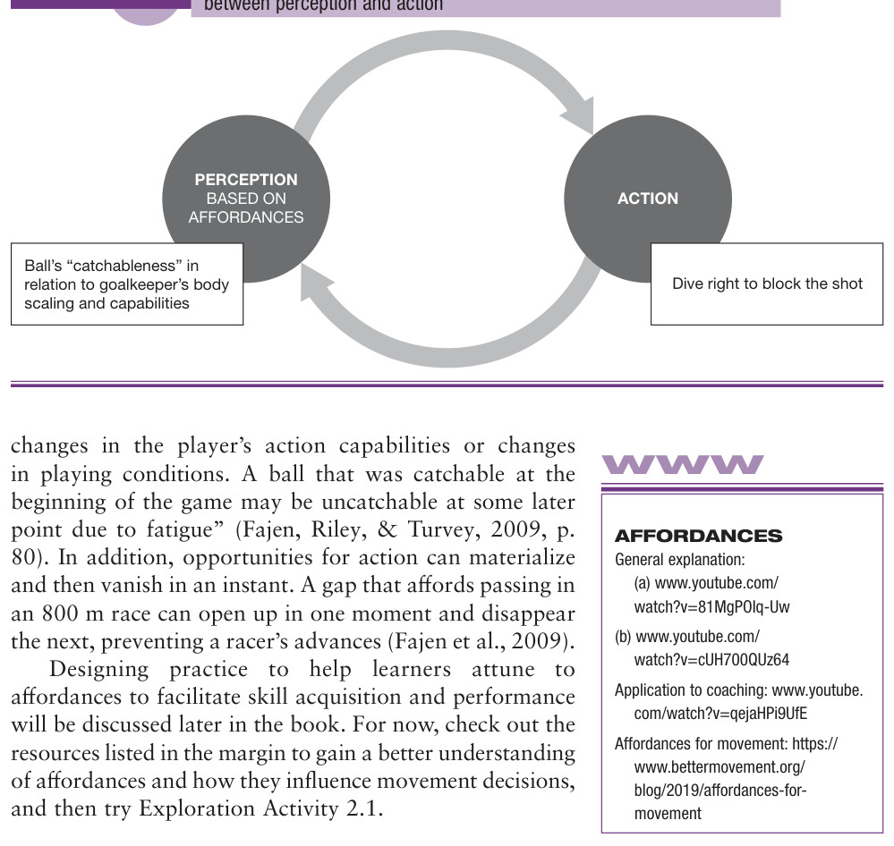
Hình 2.2: Cách tiếp cận sinh thái đối với tri giác gợi ý mối quan hệ trực tiếp giữa tri giác và hành động
TRI GIÁC DỰA TRÊN CÁC SỰ MỜI GỌI HÀNH ĐỘNG. Tính “có thể bắt được” của bóng liên quan đến tỉ lệ cơ thể và năng lực của thủ môn. CÁC SỰ MỜI GỌI HÀNH ĐỘNG. HÀNH ĐỘNG. Lao sang phải để chặn cú sút.
trong khả năng hành động của người chơi hoặc những thay đổi trong điều kiện thi đấu. Một quả bóng có thể bắt được khi bắt đầu trận đấu có thể trở nên không bắt được ở một thời điểm sau đó do mệt mỏi” (Fajen, Riley, & Turvey, 2009, tr. 80). Ngoài ra, những cơ hội hành động có thể xuất hiện rồi biến mất trong chốc lát. Một khoảng trống cho phép chuyền bóng trong một cuộc đua 800 m có thể mở ra trong một khoảnh khắc này rồi biến mất ở khoảnh khắc tiếp theo, cản trở sự tiến của một vận động viên (Fajen et al., 2009). Việc thiết kế luyện tập để giúp người học điều chỉnh sự nhạy bén đối với các sự mời gọi hành động nhằm tạo điều kiện cho tiếp thu kỹ năng và thực hiện sẽ được thảo luận sau trong cuốn sách này. Hiện tại, hãy xem các tài nguyên được ghi ở lề để hiểu rõ hơn về các sự mời gọi hành động và cách chúng ảnh hưởng đến các quyết định vận động, rồi thử Hoạt động Khám phá 2.1.
- Giải thích chung: (a) www.youtube.com/watch?v=81MgPOIq-Uw
- (b) www.youtube.com/watch?v=cUH700QUz64
- Ứng dụng trong huấn luyện: www.youtube.com/watch?v=qejaHPi9UfE
- Sự mời gọi hành động trong vận động: https://www.bettermovement.org/blog/2019/affordances-for-movement
Chuẩn Bị Một Đáp Án
Các nhà khoa học vẫn tiếp tục tranh luận và khám phá những ưu điểm của các cách tiếp cận lý thuyết này về sự chuẩn bị vận động, cũng như khả năng kết hợp cả hai. Nhưng bất kể mô hình nào được dùng để giải thích các quá trình bên trong diễn ra, nghiên cứu đã chỉ rõ rằng có một độ trễ ngắn giữa thời điểm một kích thích được đưa ra và thời điểm một đáp án được khởi động. Khoảng thời gian này, được gọi là thời gian phản ứng (RT), là một thước đo thời gian cần thiết để chuẩn bị một đáp án. Để kiểm tra thời gian phản ứng của bạn, hãy thử Hoạt động Khám phá 2.2.
Thời gian phản ứng không phải là hằng số; nó phụ thuộc vào yêu cầu xử lý do một tình huống nhất định đặt ra. Khi những yêu cầu đó tăng lên, thời gian phản ứng cũng tăng lên, cho thấy cần thêm thời gian để chuẩn bị một đáp án. Kết quả là một sự chậm trễ
có thể gây hại, ví dụ, khi cần tránh va chạm, bắt một vật vừa rơi từ bàn bếp, hoặc phòng thủ một đối thủ đang lao lên hoặc cắt bóng vào rổ trong bóng rổ. Vì vậy, việc hiểu các biến số gây ra những độ trễ này là tối quan trọng để xây dựng các chiến lược giảm thiểu chúng và, trong một số trường hợp, loại bỏ chúng trong khi thực hiện các kỹ năng mở. Điều mà cả huấn luyện viên lẫn vận động viên cũng quan tâm là làm thế nào để gây ra độ trễ trong thời gian phản ứng của đối thủ nhằm giành lợi thế.
HOẠT ĐỘNG KHÁM PHÁ 2.1 — Sự mời gọi hành động
Thiết bị cần có:
- Cửa kính trượt.
- Ba lô nhét đầy quần áo.
- 3 người bạn.
Quy trình:
Nhiệm vụ A. Mở hoàn toàn cửa kính trượt. Yêu cầu từng người bạn đi qua cửa. (Người tham gia có thể chọn cách đi qua cửa — ví dụ, họ có thể quay người sang một bên — miễn là không làm thay đổi chiều rộng của lối mở.) Thu hẹp lối mở thêm 4 inch rồi lặp lại quy trình. Tiếp tục thu hẹp lối mở và lặp lại quy trình cho đến khi cả ba người bạn đều nói rằng họ không thể đi qua cửa. Ghi chép quan sát của bạn cho từng người bạn trong từng lần thử.
Nhiệm vụ B. Lặp lại Nhiệm vụ A, nhưng yêu cầu mỗi người bạn đeo ba lô trong mỗi lần thử. Ghi chép lại các quan sát của bạn.
Câu hỏi:
Hãy giải thích các quan sát của bạn theo thuật ngữ sự mời gọi hành động.
HOẠT ĐỘNG KHÁM PHÁ 2.2 — Thời gian phản ứng đơn giản
Kiểm tra thời gian phản ứng đơn giản của bạn bằng các tài nguyên sau:
- https://humanbenchmark.com/tests/reactiontime
- www.exploratorium.edu/baseball/reactiontime.html
Hoặc tải một ứng dụng đo thời gian phản ứng về điện thoại thông minh hoặc máy tính bảng của bạn. Ví dụ:
- Android: Reaction Time
- iPhone/iPad: Reaction Test Pro
GHI CHÚ NGHIÊN CỨU (RESEARCH NOTES)
Trong các môn thể thao đồng đội như bóng bầu dục, người cầm bóng phải xác định những khoảng trống đang hình thành và chọn một hành động phù hợp để giành lợi thế cạnh tranh. Để xem các khoảng trống ảnh hưởng thế nào đến tri giác về những khả năng hành động và cuối cùng là hành động mà người cầm bóng chọn, Correia, Araújo, Cummins và cộng sự (2012) đã tạo ra các mô phỏng ảo chân thực của trận bóng bầu dục 3 đấu 3, trong đó họ thay đổi vị trí của các hậu vệ để tạo ra các vị trí khác nhau của khe hở phòng thủ. Bốn nhóm được phân loại theo trình độ bóng bầu dục, từ không có kinh nghiệm đến cầu thủ chuyên nghiệp, được giao nhiệm vụ đưa bóng vượt qua hàng hậu vệ trong khi tránh bị chạm. Để hoàn thành nhiệm vụ, họ có thể chọn chạy với bóng, chuyền ngắn hoặc chuyền dài. Bốn điều kiện khe hở khác nhau được trình bày sáu lần, tổng cộng 24 lần thử. Khe hở 1 mở ra ngay trong đường chạy của người tham gia. Khe hở 2 mở ra trong đường chạy của đồng đội thứ nhất. Khe hở 3 nằm trong đường chạy của đồng đội thứ hai. Cuối cùng, điều kiện thứ tư không có khe hở nào mở ra và tất cả hậu vệ đều chạy thẳng về phía các cầu thủ tấn công. Vị trí của khe hở ảnh hưởng đáng kể đến hành động được thực hiện, với hành động chạy được thực hiện thường xuyên nhất ở Khe hở 1, chuyền ngắn ở Khe hở 2 và chuyền dài ở Khe hở 3. Không có hành động cụ thể nào xảy ra thường xuyên hơn đáng kể so với các hành động khác trong điều kiện không có khe hở. Các tác giả kết luận rằng những khe hở khác nhau đang hình thành trong hàng phòng thủ đã mời gọi những khả năng hành động khác nhau. Phát hiện này phù hợp với quan điểm rằng khả năng tri giác các sự mời gọi hành động được cải thiện cùng với chuyên môn.
Các Yếu Tố Ảnh Hưởng Đến Thời Gian Phản Ứng
Như đã nêu, có một số biến số ảnh hưởng đến độ dài thời gian cần thiết cho việc xử lý thông tin và chuẩn bị một đáp án tương ứng. Phần sau đây giới thiệu các yếu tố đó và đưa ra những gợi ý thực tế để điều chỉnh chúng.
Số Lựa Chọn Đáp Án
Một cú xuất phát trong chạy nước rút có một kích thích — tiếng súng bắn — và một lựa chọn đáp án — phóng ra khỏi bệ xuất phát. Vì một vận động viên chạy nước rút chỉ có một lựa chọn trong tình huống này, sự không chắc chắn về cách đáp trả về cơ bản được loại bỏ. Ngược lại, một cầu thủ chốt (shortstop) đối mặt với nhiều lựa chọn đáp án, vì anh ấy hoặc cô ấy có thể phải bắt một bóng cao hoặc một cú đánh thẳng, hoặc xử lý một bóng lăn được đánh thẳng vào, sang phải hoặc sang trái vị trí phòng thủ của mình. Tương tự, trong một cú phạt đền, nhiều cú sút khác nhau có thể được thực hiện, dẫn đến sự gia tăng tương ứng về số lựa chọn đáp án dành cho thủ môn. Do sự không chắc chắn về cú đánh hay cú sút sắp tới, cầu thủ chốt hoặc thủ môn cần thêm
thời gian xử lý để chuẩn bị một đáp án. Sự gia tăng này trong yêu cầu xử lý được phản ánh qua sự gia tăng của RT. Hãy hoàn thành Hoạt động Khám phá 2.3 để xem số lựa chọn đáp án ảnh hưởng thế nào đến RT.
Mối quan hệ giữa số lựa chọn và thời gian cần để chuẩn bị một đáp án được thấy là ổn định đến mức nó được gọi là Định luật Hick (Hick, 1952), đặt theo tên người phát hiện ra nó. Định luật Hick nói rằng choice RT — thời gian phản ứng phát sinh từ một tình huống đòi hỏi phải lựa chọn cách đáp trả — có quan hệ logarithm với số phương án lựa chọn đáp án. Mối quan hệ này được minh họa trong Hình 2.3.
Lưu ý rằng trong một tình huống đòi hỏi một đáp án dứt khoát, chẳng hạn như cú xuất phát chạy nước rút đã thảo luận ở trên, RT vào khoảng 190 mili-giây; trong khi đó, trong tình huống mà cầu thủ chốt đối mặt, RT có thể dài gấp hai đến ba lần. Sự gia tăng RT này có ý nghĩa quan trọng khi tình huống vận động đòi hỏi một đáp án nhanh và chính xác.
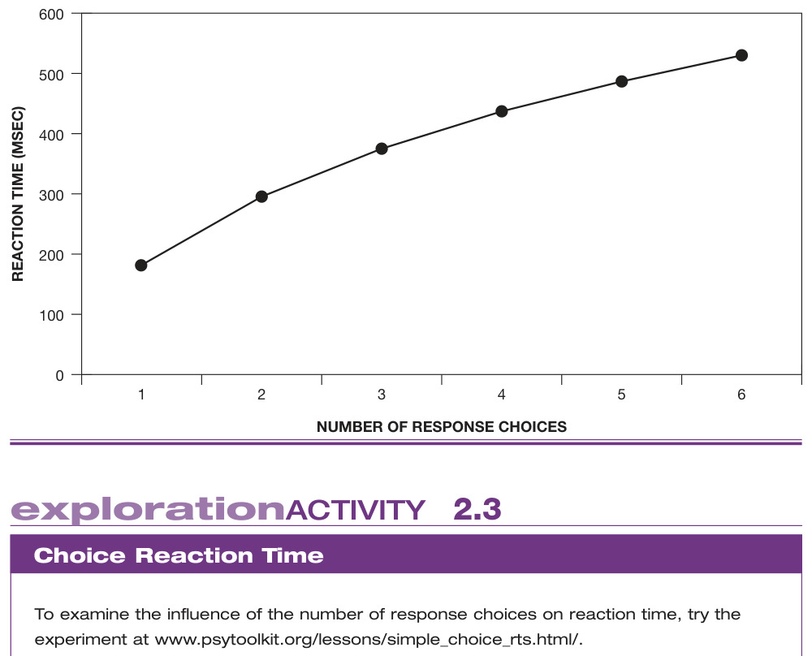
Hình 2.3: Mối quan hệ dự đoán giữa số lựa chọn kích thích–đáp án và thời gian phản ứng (Định luật Hick)
Thời gian phản ứng (mili-giây) trên trục thẳng đứng: 0, 100, 200, 300, 400, 500, 600; số lựa chọn đáp án trên trục ngang: từ 1 đến 6.
HOẠT ĐỘNG KHÁM PHÁ 2.3 — Thời gian phản ứng có lựa chọn
Để kiểm tra ảnh hưởng của số lựa chọn đáp án đến thời gian phản ứng, hãy thử thí nghiệm tại www.psytoolkit.org/lessons/simple_choice_rts.html/.

Hình 2.4: Các thành phần của thời gian đáp án
THỜI GIAN PHẢN ỨNG. THỜI GIAN VẬN ĐỘNG. Xuất hiện kích thích → Khởi động động tác → Hoàn thành động tác.
Thời gian đáp án được đo từ thời điểm một kích thích được đưa ra đến khi một đáp án được hoàn thành, và nó gồm cả thời gian phản ứng lẫn thời gian vận động, như thể hiện trong Hình 2.4. Thời gian vận động (MT) là khoảng thời gian giữa lúc động tác được khởi động và lúc động tác hoàn thành. Cả RT và MT đều phải được xem xét khi phân tích nhiệm vụ chặn bóng của một thủ môn. Ví dụ, giả sử rằng, do vị trí và tốc độ của bóng, một thủ môn có khoảng 360 mili-giây — kể từ lúc bóng rời chân người sút đến lúc bóng vượt qua mặt phẳng khung thành — để quyết định cách đáp trả và thực hiện động tác đó (RT + MT). Giả định rằng cô ấy chỉ có hai lựa chọn đáp án, theo Định luật Hick, RT sẽ vào khoảng 300 mili-giây. Điều này chỉ còn lại 60 mili-giây để thực hiện đáp án. Nhìn từ góc độ này, không có gì ngạc nhiên khi chặn một cú sút vào lưới trong bóng đá lại là một nhiệm vụ khó đến vậy. Hãy xem video Sport Science của ESPN về các cú phạt đền tại www.dailymotion.com/video/x2obk7b để tìm hiểu thêm.
Kiểm Soát Mức Độ Không Chắc Chắn
Vì, theo Định luật Hick, sự không chắc chắn gia tăng dẫn đến các đáp án bị chậm trễ thậm chí không chính xác, người thực hành nên nhận biết các chiến lược có thể tăng hoặc giảm sự không chắc chắn này để tạo điều kiện cho học tập và thực hiện. Mục tiêu của nhiều tình huống cạnh tranh là giành lợi thế hơn đối thủ. Bằng cách có một kho tàng phong phú các cú phát bóng, lối chơi, động tác, cú ném bóng và tương tự được thành thạo, người chơi có thể tăng sự không chắc chắn của đối thủ về đáp án nào sẽ được yêu cầu và làm suy giảm khả năng đáp trả nhanh và chính xác của đối thủ đó. Trong những nhiệm vụ cạnh tranh khác, chẳng hạn như những nhiệm vụ liên quan đến kỹ năng mở, thực hiện thành công phụ thuộc vào việc ra quyết định nhanh. Khi một tiền vệ đang thực hiện một lối chơi lựa chọn, việc cố đọc tất cả các kích thích để chọn phương án tốt nhất có thể trở nên quá tải và, như Định luật Hick đã minh họa, tốn thời gian. Kết quả là, các huấn luyện viên dạy tiền vệ của mình tìm kiếm một cách hệ thống các đặc điểm phòng thủ then chốt nhằm giảm số phương án lựa chọn. Trong lối chơi đó, tiền vệ đánh giá khả năng thành công của phương án đầu tiên. Nếu phương án đó trông tốt, anh ấy thực hiện nó; nếu không, anh ấy tìm phương án thứ hai, và cứ thế. Nhân viên y tế khẩn cấp áp dụng cùng chiến lược này khi họ đến hiện trường tai nạn. Dùng cách ghi nhớ ABC (đường hô hấp, hơi thở và tuần hoàn), họ đánh giá tình huống một cách hệ thống, rút ngắn thời gian ra quyết định.
CEREBRAL CHALLENGE 2.2 — Thử thách Trí não
Hãy giải thích vì sao một người chơi racquetball có thể thực hiện thành thạo năm cú phát bóng khác nhau lại có lợi thế hơn một đối thủ chỉ có hai cú.
Kỹ thuật giảm sự không chắc chắn bằng cách rút gọn một cách hệ thống số phương án đáp án có thể có được dùng để tạo điều kiện cho việc học kỹ năng. Khi dạy chuyền bóng bằng cẳng tay trong bóng chuyền, người hướng dẫn thường tổ chức luyện tập sao cho người học làm việc theo cặp. Trong mỗi cặp, một người ném bóng và người kia chuyền lại. Ban đầu, bóng được ném thẳng cho người học để loại bỏ nhu cầu phải lựa chọn. Một khi người học đã hình thành được một mức thành thạo nhất định, các cú ném có thể được hướng sang phải, sang trái, về phía trước hoặc phía sau người học, buộc cô ấy phải di chuyển vào đúng vị trí và thực hiện kỹ năng. Bước đầu tiên của một tiến trình bình thường cho bài tập này là người ném báo cho người chuyền biết hướng mà cú ném sẽ đi tới. Vì người học biết trước nơi bóng sẽ đi, số phương án đáp án được giảm bớt, làm giảm yêu cầu xử lý của nhiệm vụ. Bước tiếp theo là loại bỏ thông tin báo trước, buộc người chuyền phải sẵn sàng cho bất kỳ trong bốn phương án đáp án có thể có.
CEREBRAL CHALLENGE 2.3 — Thử thách Trí não
- Mục tiêu của một số trò chơi điện tử “bắn” là bắn các nhân vật xấu nhưng không được bắn các nhân vật tốt. Thách thức là các nhân vật thực sự nhảy ra từ không trung và người chơi phải nhanh chóng quyết định xem chúng “tốt” hay “xấu”. Nếu bạn đang chơi một trò chơi như vậy, bạn sẽ dùng chiến lược nào để giảm sự không chắc chắn và thời gian phản ứng đồng thời tăng độ chính xác?
- Bạn sẽ gợi ý gì cho các sĩ quan cảnh sát đối mặt với cùng tình huống này?
- Theo Passos và cộng sự (2008), “Hầu hết các huấn luyện viên thể thao đồng đội sẽ đồng ý rằng một trận đấu cạnh tranh là nguồn gốc của sự không thể đoán trước và không chắc chắn đối với tất cả người chơi. Một câu hỏi lớn mà mọi huấn luyện viên đều đối mặt là: Làm thế nào để chúng ta giảm sự không chắc chắn mà người chơi không tránh khỏi phải đối mặt trong mọi ngữ cảnh thực hiện?” (tr. 126). Đối với một kỹ năng do bạn chọn, hãy xây dựng các chiến lược có thể dùng để tăng hoặc giảm sự không chắc chắn, tùy theo mục tiêu của bạn.
Sự Dự Đoán Trước (Anticipation)
Khi người thực hiện được cung cấp thông tin báo trước về cả sự kiện sẽ xảy ra lẫn thời điểm nó xảy ra, sự chuẩn bị vận động được tối ưu hóa và các độ trễ đáp án được giảm bớt. Mặc dù có những tình huống mà người thực hiện được báo trước về những gì sẽ xảy ra (đối với người lái xe, ví dụ, đèn báo rẽ của ô tô truyền đạt ý định và các biển báo trên đường cao tốc truyền đạt điều kiện lái xe và điều kiện đường sá), điều này rõ ràng không phải lúc nào cũng đúng. Người thực hiện thường phải học cách giảm sự không chắc chắn về thời gian và về sự kiện thông qua dự đoán trước.
Dự đoán trước bao gồm việc đoán xem sự kiện nào sẽ xảy ra (dự đoán sự kiện) và/hoặc khi nào một sự kiện sẽ xảy ra (dự đoán thời gian). Một kích thích càng có thể đoán trước được, người học càng có thể đáp trả nhanh và chính xác hơn. Khái niệm này liên quan chặt chẽ với kỹ thuật giảm số lựa chọn đáp án, vì về cơ bản người học thu hẹp các phương án có thể có thông qua dự đoán trước. Việc dự đoán phụ thuộc vào khả năng của người thực hiện trong việc phát hiện các manh mối, hay các tín hiệu báo trước, thường hiện diện trong môi trường. Ví dụ, các nhà trị liệu có thể quan sát những thay đổi tinh tế trong tư thế của bệnh nhân để dự đoán thời điểm họ nên can thiệp. Tương tự, cha mẹ dùng các tín hiệu báo trước để dự đoán khi nào nên đỡ một đứa trẻ mới biết đi đang tập đi. Trong các cuộc thi đấu thể thao, người chơi quan sát kỹ đối thủ để nhận ra những xu hướng có thể đóng vai trò là tín hiệu báo trước. Ví dụ, người chơi có thể nhận ra rằng một đội tấn công luôn dùng cùng một lối chơi trong một tình huống nhất định, hoặc một cầu thủ ném bóng có xu hướng ném một loại bóng cụ thể tùy theo tình trạng số bóng và số cú đánh. Có thể ngay trước khi chuyền bóng, một cầu thủ bóng rổ luôn nhìn vào người mà anh ấy định chuyền bóng cho. Một người chơi racquetball có thể thay đổi cú vung vợt về sau tùy theo cú phát bóng mà cô ấy sắp thực hiện. Bảng 2.1 trình bày các tín hiệu báo trước điển hình của một cầu thủ quần vợt và những manh mối tương ứng mà chúng cung cấp cho đối thủ.
Bảng 2.1: Đọc các tín hiệu báo trước của đối thủ trong quần vợt
- Vung vợt từ thấp lên cao — Dự kiến cú bóng xoáy trên (topspin).
- Vung vợt từ cao xuống thấp — Dự kiến cú bóng xoáy dưới (có thể là cú bóng ngắn).
- Góc mặt vợt — Cho biết độ cao của quỹ đạo bóng.
- Giảm tốc độ vung vợt — Cú bóng ngắn hơn hoặc đi chậm.
- Tăng tốc độ vung vợt — Cú đánh trả đi nhanh.
- Vung vợt có kiểm soát — Cú bóng được đặt đúng chỗ.
- Nhanh chân — Sẽ tiếp cận được hầu hết các cú bóng.
- Xu hướng đánh chéo sân — Dự kiến các cú bóng chéo sân trong những tình huống áp lực.
- Nguồn: Overdorf, V. & Coker, C. A. (2011, February). Five Tips for Improving Anticipatory Skills. Paper presented at EDAAHPERD. Long Branch, NJ. (Adapted from: www.squashgame.info/squashlibrary/10/26#8.)
GHI CHÚ NGHIÊN CỨU (RESEARCH NOTES)
So với những người ít kỹ năng hơn, các nghiên cứu đã chỉ ra rằng người thực hiện chuyên gia vừa nhanh hơn vừa chính xác hơn trong việc dự đoán các hành động sắp tới của đối thủ. Một nguồn thông tin then chốt mà các chuyên gia dùng để đưa ra những phán đoán dự đoán này đến từ các động tác chuẩn bị của đối thủ (các manh mối động học). Người thực hiện trình độ cao cũng có khả năng dùng các manh mối ngữ cảnh hay thông tin không liên quan đến vận động để ra quyết định dự đoán, chẳng hạn như vị trí trên sân của đối thủ. Để kiểm tra điều này, Loffng và Hagemann (2014) yêu cầu các cầu thủ quần vợt có kỹ năng (n = 26) và mới bắt đầu (n = 26) dự đoán hướng của các cú đánh thuận tay từ đường baseline khi họ xem các đoạn video hiển thị điểm sáng về các cú đánh quần vợt (người chơi và vợt được biểu diễn bằng các chấm trắng trên nền tối). Vị trí trên sân của mô hình trong video được thay đổi trong khi động học của cú đánh được giữ không đổi. Các hành động cũng được che khuất (chặn lại) tại ba thời điểm khác nhau để thay đổi lượng thông tin về cú đánh mà người xem có, vì người ta giả định rằng “kỳ vọng của người chơi về kết quả hành động nên chủ yếu dựa trên thông tin ngữ cảnh ở các giai đoạn đầu của việc ra quyết định và sau đó được cập nhật (tức là sửa đổi hoặc khuếch đại) dựa trên đầu vào cảm giác về động học của một hành động đang diễn ra” (Loffng & Hagemann, 2014, tr. 17). Kết quả xác nhận rằng, khác với người mới bắt đầu, người chơi có kỹ năng dùng thông tin ngữ cảnh dưới dạng vị trí trên sân của đối thủ để đưa ra các quyết định dự đoán về hướng cú bóng. Kết quả còn gợi ý rằng những phán đoán dựa trên vị trí này xảy ra sớm hơn trong chuỗi hành động, khi thông tin động học còn hạn chế, ủng hộ quan điểm rằng sự phụ thuộc của người chơi có kỹ năng vào các manh mối ngữ cảnh và động học thay đổi khi hành động diễn ra.
Nghiên cứu đã chỉ ra rằng khi xác suất của một đáp án cụ thể tăng lên (ở mức khoảng 80 phần trăm), người thực hiện có khả năng thiên về hướng đó trong việc chuẩn bị đáp án của mình (Larish & Stelmach, 1982). Kết quả là hành động có thể được chuẩn bị trước, làm giảm RT. Trong racquetball, nếu một người chơi dự đoán rằng cú bóng sẽ đi sang phải, dựa trên vị trí và cử động vung vợt của đối thủ, cô ấy có thể bắt đầu di chuyển theo hướng đó trước cả khi đối thủ chạm bóng.
Dự đoán trước không phải là không có rủi ro. Nếu đáp án cần thiết lại khác với điều mà người thực hiện đã chuẩn bị, hậu quả sẽ là một RT thậm chí chậm hơn so với trường hợp đáp án không hề bị thiên lệch (Larish & Stelmach, 1982). Hai chiến thuật có thể được dùng để khai thác điều này (dù không phải lúc nào cũng hiệu quả với các vận động viên trình độ cao) là lừa gạt (Jackson, Warren, & Abernethy, 2006; Wright & Jackson, 2014) và ngụy trang (Rowe et al., 2009). Lừa gạt là việc cố ý đưa ra các tín hiệu báo trước sai nhằm gợi ra một đáp án không đúng. Một cầu thủ lacrosse giả vờ di chuyển sang phải rồi thực sự di chuyển sang trái, một cầu thủ bóng chuyền giả vờ đập bóng rồi mới chạm bóng nhẹ hoặc bóp bóng, hay một cầu thủ bóng đá thực hiện động tác bước chéo để lừa hậu vệ là những ví dụ. Ngụy trang, ở phía bên kia, là nỗ lực của người chơi nhằm che giấu hoặc trì hoãn sự xuất hiện
của các tín hiệu báo trước về hành động định thực hiện nhằm kéo dài thời gian ra quyết định của đối thủ. Đó là chiến lược mà Jennifer đã dùng trong tình huống mở đầu, khi cô ngụy trang động tác sút của mình đến khoảnh khắc cuối cùng có thể để khiến thủ môn khó dự đoán hướng cú sút hơn.
Ý Nghĩa Thực Tiễn Của Dự Đoán Trước
Dự đoán trước thành công, đặc biệt là khi chịu giới hạn thời gian, đòi hỏi biết nên chú ý đến những nguồn thông tin nào, cả ngữ cảnh lẫn động học, và khi nào thông tin đó trở nên sẵn có (Runswick et al., 2018). Nhờ các chiến lược tìm kiếm thị giác vượt trội (xem Chương 3) và các quá trình nhận thức bậc cao, các vận động viên có kỹ năng nhận ra các tín hiệu báo trước then chốt và giải thích thông tin đặc thù của tình huống tốt hơn để đưa ra các phán đoán dự đoán chính xác hơn so với những người ít kỹ năng hơn (xem Williams & Jackson, 2019a, để xem xét lại). Do đó, thông qua luyện tập, khả năng nhận ra các kiểu chơi cũng như các manh mối, đặc điểm riêng và xu hướng của đối thủ có thể được cải thiện, dẫn đến dự đoán trước tốt hơn và khả năng chuẩn bị trước các hành động cần thiết. Bằng cách xác định các tín hiệu báo trước tiềm năng, hướng sự chú ý của người học đến nơi trong môi trường mà họ có thể tìm thấy các tín hiệu đó, và thiết kế các bài tập mang tính đại diện về ngữ cảnh có tích hợp các tín hiệu báo trước, người thực hành có thể tạo điều kiện cho sự phát triển này. Người học cũng phải được dạy tránh thể hiện cùng một tín hiệu báo trước hoặc đưa ra cùng một đáp án trong một trận đấu, vì điều đó có thể giúp đối thủ dự đoán hành động sắp tới.
Do thám là một ứng dụng thực tiễn khác của dự đoán trước; chiến lược này được dùng để giúp người chơi “đọc” đối thủ nhằm dự đoán tốt hơn hành động của họ. Bằng cách cố ý quan sát đối thủ để phân tích kỹ thuật và lối chơi trước một trận đấu sắp tới, có thể nhận ra các kiểu và tín hiệu báo trước rồi xây dựng kế hoạch chiến thuật. Hãy hỏi Jens Lehmann, người, với sự giúp đỡ của một mẩu giấy ghi chú về xu hướng phạt đền của Argentina được nhét trong tất, đã có thể thực hiện những pha cứu thua cần thiết đưa Đức vào bán kết World Cup 2006 (để xem đoạn phim, truy cập www.youtube.com/watch?v=LRAOEWAbO00).
Ngày nay, công nghệ đang làm cho việc do thám trở nên dễ dàng hơn. Năm 2016, Giải Bóng chày Nhà Nghề (Major League Baseball) đã dỡ bỏ lệnh cấm điện thoại thông minh, máy tính bảng và máy tính xách tay trong khu vực nghỉ của cầu thủ, đồng thời công bố một thỏa thuận nhiều năm cho phép các đội tiếp cận iPad Pro, cùng với một ứng dụng do thám, phân tích và video mới có thể tùy biến mang tên MLB Dugout (truy cập https://www.mlb.com/video/mlb-tonight-ipads-in-dugouts-c568826983 để tìm hiểu thêm). Để xem các ví dụ về ứng dụng do thám, hãy xem Digital Scout và iProScout Baseball.
CEREBRAL CHALLENGE 2.4 — Thử thách Trí não
Hãy liệt kê ví dụ về cả dự đoán sự kiện và dự đoán thời gian từ một tình huống vận động hay môn thể thao do bạn chọn.
Ví dụ: Một cầu thủ libero (cầu thủ chuyên về kỹ năng phòng thủ) thực hiện đường chuyền nhận phát bóng trong bóng chuyền.
Dự đoán sự kiện: Loại phát bóng nào cần chặn (xoáy trên, bóng nổi)?
Dự đoán thời gian: Khi nào tôi nên di chuyển để chặn bóng?
CEREBRAL CHALLENGE 2.5 — Thử thách Trí não
Một trong những nữ anh hùng của chiến thắng 5–4 trước Trung Quốc tại World Cup 1999 của Hoa Kỳ là thủ môn Briana Scurry. Sau đây là lời kể về khoảnh khắc cô thực hiện pha cứu thua đưa Hoa Kỳ vượt lên:
Briana Scurry nhìn vào tiền vệ người Trung Quốc, Liu Ying, khi cô ấy bước tới điểm phạt đền. Đầu Liu cúi xuống và vai cô ấy rũ xuống, và với Scurry có vẻ như Liu không muốn gánh nặng của cú sút. “Đây là cú đó,” Scurry tự nhủ. Liu đặt bóng xuống, lùi lại một góc gắt, rồi bắt đầu tiến lại gần bằng một cú chạy bộ do dự. Ý định của cô trở nên rõ ràng, và hông cô xoay theo cách để lộ cú sút. Scurry lao tới bằng một bước bùng nổ, rồi đứng chân rộng và lao sang trái.
Nguồn: Longman, 2000, tr. 72.
Hông của Liu đóng vai trò là một tín hiệu báo trước cho phép Scurry dự đoán đáp án mà cô ấy sẽ phải thực hiện để chặn cú sút. Nghiên cứu ủng hộ quan điểm này. Savelsbergh và cộng sự (2002) chứng minh rằng các thủ môn bóng đá chuyên gia thực sự dựa vào các tín hiệu báo trước của người sút để xác định hướng bóng trong một cú phạt đền. Những phát hiện tương tự đã được báo cáo trong quần vợt; người chơi có kỹ năng cao được phát hiện dùng các manh mối dự đoán dựa trên thông tin về kiểu vận động của đối thủ để xác định lựa chọn cú đánh và đáp trả nhanh hơn (Shim et al., 2005). Đối với một kỹ năng do bạn chọn, hãy liệt kê các tín hiệu báo trước làm tăng khả năng đoán trước một đáp án nhất định.
Tính Nhất Quán Của Khoảng Thời Gian Báo Trước
Mức độ mà một người học sẵn sàng đáp trả trong một tình huống nhất định cũng có thể ảnh hưởng đến thời gian chuẩn bị đáp án. Việc cung cấp một tín hiệu cảnh báo, ví dụ, dẫn đến thời gian phản ứng nhanh hơn đáng kể, vì nó báo cho người thực hiện biết một kích thích sắp xuất hiện (Brebner & Welford, 1980). Lệnh “set” được đưa ra trước khi súng xuất phát bắn, cú ném bóng trong cú phát bóng quần vợt, và đèn báo rẽ trên ô tô đều đóng vai trò là tín hiệu cảnh báo. Tuy nhiên, chỉ có sự hiện diện của tín hiệu cảnh báo là chưa đủ để người thực hiện đạt được và duy trì mức sẵn sàng tối ưu. Lý tưởng nhất, khoảng thời gian trôi qua giữa việc đưa ra tín hiệu cảnh báo và kích thích, được gọi là khoảng báo trước, nên nằm trong khoảng từ 1 đến 4 giây. Những khoảng báo trước ngắn hơn mức này không cho phép có đủ thời gian chuẩn bị, trong khi mức kỳ vọng giảm xuống khi khoảng báo trước quá dài.
Tính nhất quán của khoảng báo trước ảnh hưởng đến khả năng người thực hiện tận dụng dự đoán trước. Khi độ dài khoảng báo trước là không đổi hoặc có thể đoán trước, dự đoán thời gian trở nên khả thi (Queseda & Schmidt, 1970). Miễn là đáp án đối với tín hiệu đã được định sẵn, chẳng hạn như trong cú xuất phát chạy bộ hoặc bơi, thời gian phản ứng sẽ được giảm đáng kể. Những người xuất phát giỏi ngăn chặn hiệu ứng này bằng cách liên tục thay đổi độ dài khoảng báo trước trước khi bắn súng xuất phát.
Việc xem xét tính nhất quán của khoảng báo trước không chỉ giới hạn trong các cuộc đua. Để tránh bị đối thủ phòng thủ dự đoán và đáp trả nhanh, ví dụ, một tiền vệ thay đổi số đếm khi phát bóng. Vì vậy, việc ngẫu nhiên hóa độ dài khoảng báo trước là thiết yếu để ngăn đối thủ giành lợi thế. Vẫn có những tình huống mà khoảng báo trước không đổi là mong muốn. Thực hiện thành công trong âm nhạc và nghệ thuật biểu diễn, ví dụ, phụ thuộc rất nhiều vào dự đoán thời gian, vì người biểu diễn phải có khả năng khởi động động tác của mình vào một khoảnh khắc chính xác.
Thời Gian Không Phản Ứng Tâm Lý
Nếu bạn từng bị lừa bởi một cú giả động tác, bạn đã trải nghiệm điều gì xảy ra khi hai kích thích, mỗi kích thích đòi hỏi một đáp án khác nhau, được đưa ra liên tiếp trong một khoảng thời gian ngắn. Những người chưa trực tiếp trải nghiệm hiện tượng này có lẽ đã từng thấy nó xảy ra. Khi một người thực hiện mắc bẫy một cú giả động tác sang phải, ví dụ, anh ấy sẽ chuẩn bị và khởi động đáp án tương ứng; nếu đối thủ của anh ấy sau đó nhanh chóng di chuyển sang hướng khác, sẽ có một độ trễ thoáng qua trong việc đáp trả kích thích thứ hai này. Độ trễ này, được gọi là thời gian không phản ứng tâm lý (PRP), được phản ánh qua một RT chậm hơn RT của kích thích đầu tiên (cú giả động tác). Hình 2.5 minh họa PRP.
Một cú lừa thành công phụ thuộc vào hai yếu tố thực hiện. Thứ nhất, nó phải thực tế. Ví dụ, khi các cầu thủ bóng chuyền muốn kéo một pha chặn bóng để chạm bóng qua bên cạnh, họ phải thực hiện một cú tiến tới đập bóng thuyết phục, nếu không hàng phòng thủ sẽ đọc được ý định thật của họ. Thứ hai, thời điểm là then chốt. Nếu cú giả và động tác thật được thực hiện quá sát nhau về thời gian, đối thủ sẽ không
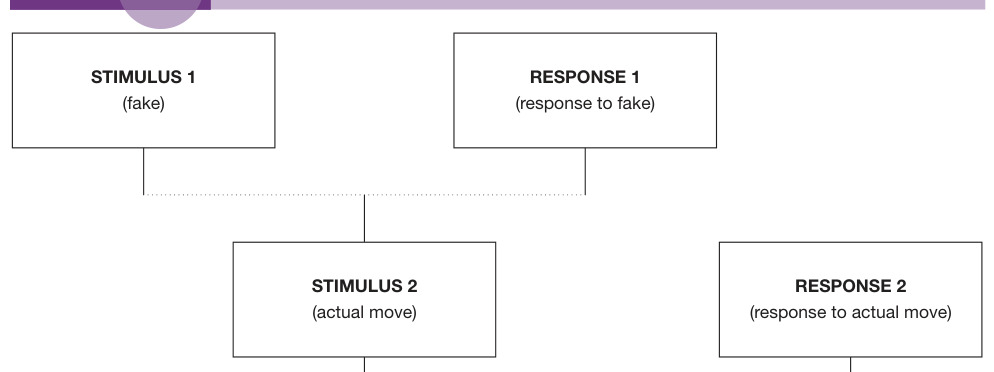
Hình 2.5: Thời gian không phản ứng tâm lý (PRP)
KÍCH THÍCH 1 (giả động tác). KÍCH THÍCH 2 (động tác thật). ĐÁP ÁN 2 (đáp trả động tác thật). ĐÁP ÁN 1 (đáp trả cú giả). Độ trễ. Đường đứt nét = RT.
có đủ thời gian để mắc bẫy cú giả và sẽ bỏ qua nó. Mặt khác, nếu người lừa động tác để quá nhiều thời gian trôi qua giữa cú giả và động tác thật, đối thủ sẽ có đủ thời gian để đáp trả cả hai một cách hiệu quả. Việc canh thời điểm này đến từ luyện tập.
Thông qua luyện tập, người thực hiện có thể học cách đọc một cú giả, và họ sẽ bị lừa ít hơn. Tập trung vào trọng tâm của đối thủ, ví dụ, cung cấp manh mối về động tác sắp tới, vì trọng tâm phải được dời sang hướng di chuyển mong muốn trước khi đổi hướng. Các cú giả minh họa rõ ràng thời gian không phản ứng tâm lý, nhưng một người thực hiện dự đoán sai cũng trải nghiệm PRP. Một ví dụ điển hình là người đánh bóng chày, sau khi dự đoán một cú bóng nhanh (vì cầu thủ ném bóng đang ở thế bất lợi về số bóng), đột ngột nhận ra rằng cú ném là một cú bóng đổi tốc (Shea, Shebilske, & Worchel, 1993). Tương tự, các thủ môn thường là nạn nhân của độ trễ PRP khi một puck hoặc quả bóng bị chệch hướng trước lưới, cũng như các cầu thủ quần vợt, bóng bàn, cầu lông,
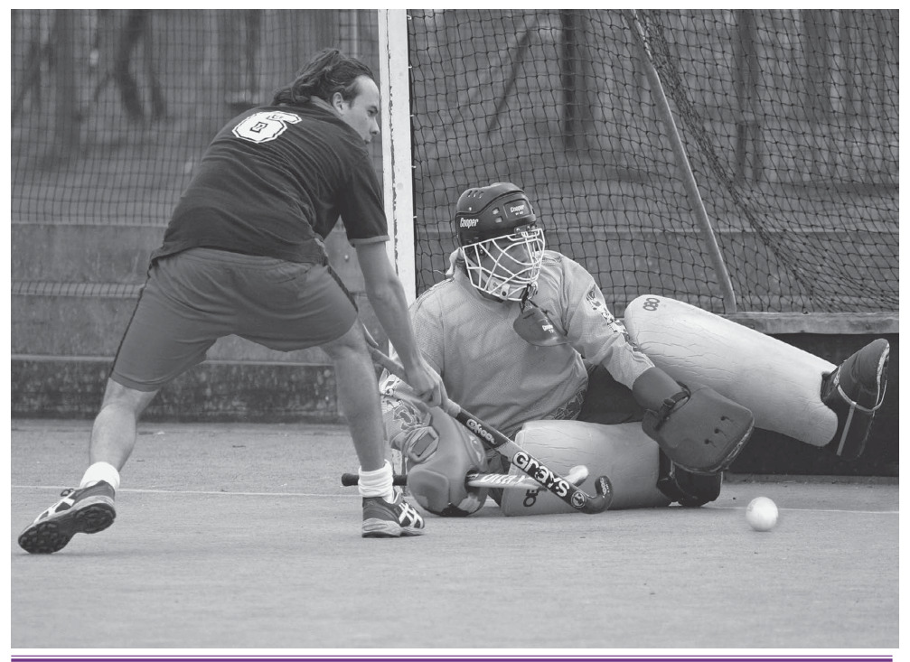
Hình 2.6: Thủ môn bị chậm trễ do thời gian không phản ứng tâm lý khi bóng hoặc puck bị chệch hướng trước khung thành
và bóng chuyền khi hướng của quả bóng đột ngột thay đổi sau khi chạm vào lưới trên đường đi qua.
Tính Tương Thích Giữa Kích Thích Và Đáp Án
Khi có nhiều lựa chọn kích thích–đáp án (S–R) sẵn có, một yếu tố khác có thể ảnh hưởng đến thời gian chuẩn bị vận động là tính tương thích kích thích–đáp án; điều này đề cập đến mức độ mà một kích thích và đáp án bắt buộc của nó có liên hệ tự nhiên. Khi tính tương thích kích thích–đáp án thấp, cần thêm thời gian để chuẩn bị một đáp án, được phản ánh qua thời gian phản ứng tăng lên. Một ví dụ kinh điển liên quan đến cách bố trí các đầu đốt bếp và các nút điều khiển của chúng. Theo truyền thống, các đầu đốt được bố trí theo hình chữ nhật và các nút điều khiển được đặt theo hàng ngang. Sự khác biệt về không gian trong cách bố trí tạo ra lộn xộn và dẫn đến độ trễ đáp án. Một cách tổ chức tương thích hơn là sắp xếp các núm vặn theo cùng kiểu với các đầu đốt tương ứng của chúng.
Những thủy thủ mới bắt đầu thường trải qua một độ trễ ngắn do không tương thích khi họ học rằng, khác với ô tô nơi vô lăng được xoay theo hướng di chuyển dự định, cần phải di chuyển tay lái theo hướng ngược lại. Tương tự, độ trễ thường xảy ra khi mới học lùi một đoàn tàu kéo; vô lăng phải được xoay theo chiều kim đồng hồ để làm đoàn tàu đi ngược chiều kim đồng hồ. May mắn thay, với luyện tập, các đáp án trở nên tương thích hơn và thời gian phản ứng được cải thiện.
Các huấn luyện viên aerobic chú ý đến tính tương thích S–R khi dẫn lớp. Vì tính chất bắt chước của một lớp aerobic, người hướng dẫn phải nhớ phản chiếu từng động tác. Điều này có nghĩa là, khi quay mặt vào nhóm, một người hướng dẫn muốn người tham gia giơ tay phải phải giơ tay trái của chính mình. Việc phản chiếu làm tăng tính tương thích của lựa chọn kích thích–đáp án và giảm độ trễ đáp án cùng các động tác sai, tạo điều kiện cho khả năng thực hiện bài tập của người tham gia.
Cuối cùng, các nhà sản xuất thiết bị trong ngành thiết bị trị liệu và thể dục đã chú ý đến vấn đề tương thích. Các nút khởi động và dừng trên máy siêu âm và máy chạy bộ xuất hiện với màu xanh lá và đỏ mà chúng ta quen thuộc. Ngoài ra, các nút và công tắc dùng để điều chỉnh mức cường độ thường đi kèm với các dấu + và –, để lần lượt biểu thị tăng và giảm.
CEREBRAL CHALLENGE 2.6 — Thử thách Trí não
Giả sử chính phủ liên bang đã ban hành một đạo luật mới quy định rằng tất cả đèn phanh giờ đây sẽ có màu trắng. Hãy giải thích kết quả có thể xảy ra (1) khi luật mới có hiệu lực và (2) một năm sau.
HOẠT ĐỘNG KHÁM PHÁ 2.4 — Hiệu ứng Stroop
Để kiểm tra sự nhiễu xảy ra trong một nhiệm vụ thời gian phản ứng khi người thực hiện nhận được hai tín hiệu xung đột, hãy truy cập http://faculty.washington.edu/chudler/java/ready.html.
Độ Trễ Thời Gian Đáp Án: Ra Quyết Định So Với Thực Hiện Vận Động
Nhớ lại rằng thời gian đáp án là sự kết hợp của cả thời gian phản ứng và thời gian vận động (xem lại Hình 2.4). Điều này quan trọng vì độ trễ đáp án có thể là kết quả của việc ra quyết định chậm, thực hiện vận động chậm, hoặc kết hợp cả hai. Ví dụ, trong bóng chày, thực hiện kém trong cú đánh có thể là kết quả của tốc độ vung gậy chậm hoặc sự chậm trễ trong việc đánh giá tình huống và quyết định cách đáp trả tốt nhất. Do đó, người thực hành cần có khả năng phân biệt giữa việc di chuyển chậm và việc khởi động động tác chậm để xác định cần hành động gì nhằm cải thiện thực hiện. Khởi động động tác chậm là dấu hiệu của sự chuẩn bị vận động kém, cho thấy cần thêm các bài tập ra quyết định. Mặt khác, nếu tốc độ vung gậy của người đánh chậm, mục tiêu sẽ là cải thiện cơ chế vung và/hoặc thể lực. Trong những trường hợp khác, độ trễ đáp án do thời gian vận động có thể được giảm bằng cách rút ngắn độ dài của động tác. Kỹ thuật này được dùng thường xuyên trong các lớp tự vệ, nơi người học được dạy không đưa tay ra sau hoàn toàn trước khi đánh. Trong khúc côn cầu, người chơi dùng ít hoặc không có cú vung gậy về sau đối với các cú sút trước lưới, để đưa cú sút đi nhanh nhất có thể. Cuối cùng, tăng khoảng cách giữa một người chơi và đối thủ của anh ấy cũng có thể cải thiện thời gian đáp án. Quần vợt đưa ra một ví dụ tuyệt vời về chiến lược này: người chơi đứng sau đường baseline để nhận cú phát bóng, cho phép có nhiều thời gian hơn cho cả việc ra quyết định lẫn thực hiện vận động.
Một biến số thực hiện gần đây nhận được sự chú ý liên quan đến sự phân biệt giữa ra quyết định và thực hiện vận động là sự nhanh nhẹn (agility). Như chúng ta đã thấy trong Chương 1, các động tác có thể được lên kế hoạch hoặc mang tính phản ứng. Các động tác theo kế hoạch là đặc trưng của các kỹ năng đóng, vì cá nhân biết khi nào và ở đâu họ sẽ di chuyển trước khi làm vậy. Các động tác phản ứng, ngược lại, liên quan đến các kỹ năng mở, vì chúng phụ thuộc vào việc xử lý thông tin tình huống để quyết định cách đáp trả. Đây là một sự phân biệt quan trọng vì nó ảnh hưởng đến đánh giá người chơi và chỉ định huấn luyện cho các vận động viên trong nhiều môn thể thao đồng đội. Bruce, Farrow và Young (2004) lưu ý rằng “mặc dù các tình huống phản ứng phổ biến trong thể thao đồng đội, một xem xét lại các bài kiểm tra nhanh nhẹn điển hình (ví dụ, bài kiểm tra 505) cho thấy chúng chủ yếu liên quan đến các tình huống theo kế hoạch, nơi người chơi biết trước động tác cần thực hiện” (tr. 34). Ellis và cộng sự (2000) cùng Sheppard và Young (2006) đồng tình, chỉ ra rằng phần lớn các bài kiểm tra nhanh nhẹn thực ra kiểm tra tốc độ đổi hướng. Để đáp lại, Farrow, Young và Bruce (2005) đã thêm một thành phần thị giác–nhận thức
vào một bài kiểm tra nhanh nhẹn netball theo kế hoạch và so sánh thực hiện của người chơi có kỹ năng và ít kỹ năng hơn cả ở bài này lẫn phiên bản gốc. Họ thấy rằng bài kiểm tra nhanh nhẹn phản ứng, bao gồm một thành phần về thời gian ra quyết định, phân biệt tốt hơn giữa người chơi có kỹ năng cao và những người ít kỹ năng hơn, một phát hiện sau đó đã được lặp lại (xem Young, Dawson, & Henry, 2015, để xem xét lại).
Điều này có ý nghĩa gì đối với người thực hành? Các bài kiểm tra theo kế hoạch (tốc độ đổi hướng) và phản ứng đánh giá những phẩm chất khác nhau của thực hiện. Do đó, việc xây dựng một hồ sơ tình huống chính xác (xem Chương 1) là quan trọng để chọn các bài đánh giá phản ánh bản chất của nhiệm vụ và yêu cầu xử lý thông tin của nó. Ngoài ra, nếu kỹ năng đang xét đòi hỏi ra quyết định phản ứng, Bruce và cộng sự (2004) gợi ý rằng việc đánh giá cả tốc độ đổi hướng (nhanh nhẹn theo kế hoạch) lẫn nhanh nhẹn phản ứng mang lại cho huấn luyện viên thông tin giá trị cho việc chỉ định huấn luyện (xem Bảng 2.2). Lưu ý rằng việc chẩn đoán và các chỉ định tương ứng được minh họa trong Bảng 2.2 có thể được khái quát hóa sang các kỹ năng chặn bóng và chiến thuật khác, chẳng hạn như ví dụ về cú đánh đã nêu ở trên.
Bảng 2.2: Phác đồ huấn luyện dựa trên điểm mạnh và điểm yếu của người chơi trong nhanh nhẹn theo kế hoạch và nhanh nhẹn phản ứng (điều chỉnh từ Bruce et al., 2004)
Tốc độ vận động (Bài kiểm tra nhanh nhẹn phản ứng: ví dụ, https://www.youtube.com/watch?v=tAWhFyNfTWA). Ra quyết định (Nhanh nhẹn theo kế hoạch: ví dụ, bài kiểm tra 505, bài kiểm tra Pro Agility). Các ô được xếp theo mức Nhanh hoặc Chậm của hai trục.
- Ra quyết định nhanh và di chuyển nhanh. Vận động viên có kỹ năng cao.
- Ra quyết định nhanh nhưng thiếu tốc độ vận động. Cần cải thiện hoặc năng lực thể chất thông qua rèn luyện thể lực (tốc độ hoặc nhanh nhẹn), kỹ thuật, hoặc cả hai.
- Thiếu tốc độ vận động và ra quyết định chậm. Cần rèn luyện thể lực và can thiệp vào việc ra quyết định.
- Di chuyển nhanh nhưng ra quyết định chậm. Cần thêm bài tập và hoạt động ra quyết định.
Sự phân biệt giữa kỹ năng theo kế hoạch và kỹ năng phản ứng cũng có ý nghĩa cho việc thiết kế chương trình phục hồi giai đoạn cuối và chuẩn bị trở lại thi đấu của một vận động viên. Ví dụ, Gokeler và cộng sự (2019) lưu ý rằng các phác đồ phục hồi dây chằng chéo trước (ACL) thường bao gồm các kỹ năng và hoạt động được lên kế hoạch trước mà
GHI CHÚ NGHIÊN CỨU (RESEARCH NOTES)
Nhanh nhẹn là một thành phần cơ bản của nhiều môn thể thao đồng đội. Cụ thể hơn, thường xuyên phát sinh những tình huống đòi hỏi các động tác nhanh để né tránh đối thủ. Wheeler và Sayers (2010) quan tâm đến việc, nếu có, thực hiện kỹ năng được điều chỉnh như thế nào trong các động tác nhanh nhẹn phản ứng so với động tác được lên kế hoạch trước. Tám vận động viên nam ưu tú được chia thành ba nhóm tốc độ dựa trên thời gian thực hiện nhanh nhẹn trung bình của họ. Sau đó, người ta quay video từng người chơi khi họ chạy hết sức trong khi mang bóng qua một đường huấn luyện nhanh nhẹn. Hai điều kiện được kiểm tra. Trong điều kiện lên kế hoạch trước, trước mỗi lần thử, người chơi báo cho biết họ sẽ chạy hướng nào, sang phải hay sang trái, qua đường huấn luyện (sau một cú tiếp cận). Điều kiện thứ hai có thêm yếu tố ra quyết định. Trong điều kiện này, người tham gia phải phản ứng với động tác của một hậu vệ được đưa vào trong giai đoạn trước khi đổi hướng của động tác, rồi chạy sang trái hoặc sang phải phù hợp để hoàn thành đường huấn luyện. Người tham gia hoàn thành 12 lần thử cho mỗi điều kiện, sáu lần sang trái và sáu lần sang phải. Điều kiện và hướng được ngẫu nhiên hóa. Phân tích video cho thấy tốc độ di chuyển ngang về hướng đổi ý định thấp hơn ở điều kiện phản ứng so với điều kiện lên kế hoạch trước. Điều này được thấy là liên quan đến sự dịch chuyển ngang lớn hơn của bàn chân tại bước đổi hướng. Ngoài ra, bước chéo của người thực hiện nhanh hơn được thực hiện với tốc độ di chuyển ngang lớn hơn tại bước đổi hướng so với những người ở mức tốc độ trung bình và chậm. Những dữ liệu này nhấn mạnh sự cần thiết phải đưa việc ra quyết định đặc thù của môn thể thao vào các chương trình huấn luyện nhanh nhẹn bóng bầu dục.
Bài tập phản ứng để trở lại thi đấu sau phục hồi (REACTIVE DRILLS FOR RETURN TO PLAY REHABILITATION):
- https://www.youtube.com/watch?v=ZsmIsE-Z1x8
- https://www.youtube.com/watch?v=-Lemw1ucHSA
nhấn mạnh sự căn chỉnh tư thế, và gợi ý rằng nên tập trung nhiều hơn vào việc tích hợp tiến trình các yếu tố kiểm soát cảm giác–thị giác–vận động, chẳng hạn như những yếu tố mà huấn luyện nhanh nhẹn phản ứng đòi hỏi. Vì vậy, các chuyên gia lâm sàng nên hiểu rõ yêu cầu đặc thù của môn thể thao và của từng vị trí đối với mỗi vận động viên để thiết kế các phác đồ phục hồi chuẩn bị tốt nhất cho bệnh nhân trở lại thi đấu và hạn chế nguy cơ chấn thương lại. Hãy xem các ví dụ về bài tập phản ứng trở lại thi đấu ở lề trang.
ĐƯA VÀO THỰC HÀNH (PUTTING IT INTO PRACTICE)
Tình Huống Học Tập: Học Đường Chuyền Gián Tiếp Trong Khúc Côn Cầu
Jennifer là một huấn luyện viên tình nguyện cho một chương trình phát triển kỹ năng khúc côn cầu thanh thiếu niên. Chương trình tập trung vào phát triển kỹ năng cá nhân được thiết kế để bổ trợ cho lối chơi đồng đội của mỗi cầu thủ, bao gồm trượt băng, xử lý gậy, sút bóng, che chở puck và nhiều kỹ năng khúc côn cầu năng động khác. Hiện cô đang làm việc với một nhóm cầu thủ Peewee (11–12 tuổi) về đường chuyền gián tiếp, một kỹ năng được giới thiệu khi họ còn ở lứa Squirts (9–10 tuổi). Đường
chuyền gián tiếp là một đường chuyền được thực hiện từ thành bảng tới một khu vực mà người nhận sẽ ở đó. Khi quan sát các cầu thủ trong một trận đấu tập, cô nhận thấy tỉ lệ thành công thấp đối với các đường chuyền gián tiếp. Cô tiếp tục đánh giá các cầu thủ ở cả vai trò nhận bóng lẫn chuyền bóng trong một bài tập riêng lẻ và nhận thấy thực hiện tốt hơn nhiều.
Kiểm Tra Kiến Thức Của Bạn
Trước khi Jennifer có thể thiết kế các hoạt động để cải thiện thực hiện đường chuyền gián tiếp, cô cần xác định nguyên nhân gốc rễ của vấn đề. Dựa trên những gì bạn đã học trong chương này, những biến số nào nên được xem xét rằng có thể chịu trách nhiệm cho thực hiện đường chuyền gián tiếp kém trong tình huống thi đấu? So sánh câu trả lời của bạn với câu trả lời mẫu tại www.routledge.com/cw/coker.
NHÌN VỀ PHÍA TRƯỚC (A LOOK AHEAD)
Trong chương này, chúng ta đã xem xét nhiều biến số ảnh hưởng đến thời gian cần thiết để thu thập thông tin và đưa ra quyết định về việc phải làm gì và làm thế nào trước khi tổ chức và thực hiện một đáp án biểu lộ. Cuộc thảo luận này sẽ tiếp tục ở chương sau, nơi chúng ta sẽ xem xét cách chú ý và tìm kiếm thị giác ảnh hưởng đến quá trình ra quyết định.
ĐIỂM TRỌNG TÂM (FOCUS POINTS)
Sau khi đọc chương này, bạn nên biết:
- Quá trình gán ý nghĩa cho thông tin cảm giác được gọi là tri giác.
- Hai cách tiếp cận lý thuyết phổ biến đối với tri giác là: cách tiếp cận trực tiếp, trong đó môi trường và nhiệm vụ được tri giác theo các sự mời gọi hành động; và cách tiếp cận gián tiếp, thường được liên kết với xử lý thông tin.
- Một độ trễ xảy ra giữa thời điểm một kích thích được đưa ra và thời điểm một đáp án được khởi động. Khoảng thời gian này được gọi là thời gian phản ứng và cho thấy thời gian cần thiết để chuẩn bị một đáp án trước khi nó có thể được thực hiện.
- Thời gian phản ứng không phải là hằng số; nó phụ thuộc vào yêu cầu xử lý do một tình huống nhất định đặt ra.
- Nhiều biến số ảnh hưởng đến thời gian cần để chuẩn bị một đáp án, bao gồm số lựa chọn đáp án có sẵn, dự đoán theo thời gian và/hoặc theo sự kiện, thời gian không phản ứng tâm lý, tính tương thích kích thích–đáp án và lượng luyện tập.
- Khi nhận thấy độ trễ thời gian đáp án, người thực hành phải phân biệt giữa di chuyển chậm và khởi động động tác chậm để xác định nên hành động gì nhằm sửa lỗi.
Thí Nghiệm 2.2
Để hoàn thành thí nghiệm của chương này, hãy truy cập www.routledge.com/cw/coker và chọn Lab 2, Định luật Hick.
CÂU HỎI ÔN TẬP (REVIEW QUESTIONS)
- Hãy so sánh và đối chiếu tri giác trực tiếp và gián tiếp.
- Các sự mời gọi hành động là gì?
- Mối quan hệ giữa thời gian phản ứng và sự chuẩn bị vận động là gì?
- Hãy nêu ví dụ về một tình huống mà mục tiêu của bạn là giảm độ trễ đáp án.
- Hãy so sánh và đối chiếu lừa gạt và ngụy trang.
- Trong Thế chiến II, các phi công được phát một bộ bài trong đó mỗi lá có hình một loại máy bay địch khác nhau. Mục đích của những lá bài đó có thể là gì? Hãy ủng hộ câu trả lời của bạn.
- Hãy giải thích sự đánh đổi lợi ích–chi phí liên quan đến dự đoán trước.
- Bạn đang lái xe trên một con đường khi một biển báo “có hươu qua lại” lọt vào tầm mắt. Khi bạn nhìn lại vào đường, bạn thấy đèn phanh sáng của xe trước mặt. Một chiếc xe đang tiến đến từ làn đường ngược chiều, và có một con mương ở bên phải bạn.
- a. Những vật nào trong tình huống này đóng vai trò là tín hiệu cảnh báo?
- b. Hãy liệt kê các kích thích có liên quan và không liên quan có thể có trong tình huống này.
- c. Định luật Hick là một yếu tố trong tình huống này như thế nào?
- d. Hãy xác định một ví dụ về tính tương thích kích thích–đáp án trong tình huống này.
- e. Chiếc xe trước mặt bạn bẻ sang phải. Khi bạn bắt đầu đáp trả, nó đột ngột đổi hướng trở lại sang trái. Sự thay đổi hướng đột ngột này sẽ ảnh hưởng thế nào đến thực hiện của bạn? Hãy giải thích đầy đủ câu trả lời của bạn.
- f. Hãy giải thích quy tắc khoảng cách an toàn hai giây khi đi xe, dựa trên những gì bạn đã học trong chương này.
Chương 3 — Vai Trò Của Chú Ý, Hưng Phấn Và Tìm Kiếm Thị Giác Trong Chuẩn Bị Vận Động
Mã DOI: 10.4324/9781003039716-3
Chương 3 — Vai Trò Của Chú Ý, Hưng Phấn Và Tìm Kiếm Thị Giác Trong Chuẩn Bị Vận Động
Aaron đang trở nên bực bội. Anh ấy đã đi phục hồi chức năng để cải thiện chức năng bàn tay sau một tai nạn. Để giúp khôi phục kiểm soát vận động tinh, nhà trị liệu nghề nghiệp của anh đã giao cho anh nhiệm vụ tái tạo mẫu hình trên một tấm thẻ bằng cách lắp các chốt nhựa vào các lỗ trên bảng chốt. Cô ấy đã đưa cho anh hai tín hiệu cần tập trung trong khi thực hiện động tác, nhưng anh gặp khó khăn trong việc tập trung vì tiếng ồn nền trong phòng khám và nỗ lực cần thiết để di chuyển chốt vào đúng vị trí.
NĂNG LỰC CHÚ Ý
Như đã minh họa trong tình huống mở đầu, một cá nhân chỉ có thể chú ý hoặc xử lý một số lượng hoạt động hạn chế tại bất kỳ thời điểm nào. Khi vượt quá giới hạn này, sẽ xảy ra sự cạnh tranh về nguồn lực chú ý, và hệ quả của nó có thể bao gồm giảm tốc độ hoặc chất lượng thực hiện của một hay nhiều hoạt động, thậm chí là hoàn toàn bỏ qua một trong các hoạt động. Nói cách khác, theo quan niệm về năng lực chú ý hạn chế này, nhiều nhiệm vụ có thể được thực hiện thành công đồng thời, miễn là khi kết hợp lại, chúng không vượt quá nguồn lực chú ý sẵn có (Kahneman, 1973; Wickens, 1984). Ví dụ, nếu đi trên máy chạy bộ đòi hỏi 25 phần trăm tổng không gian chú ý sẵn có và đọc tạp chí đòi hỏi 50 phần trăm, thì tổng cộng 75 phần trăm vẫn nằm trong mức sẵn có, và người thực hiện có thể hoàn thành cả hai nhiệm vụ (Hình 3.1a). Giả sử có một nhiệm vụ khác được đưa vào, chẳng hạn như xem một bản tin truyền hình trên chiếc TV đối diện máy chạy bộ; khi kết hợp với việc đi trên máy chạy bộ và đọc tạp chí, nhiệm vụ này có thể đòi hỏi nhiều không gian chú ý hơn mức sẵn có. Trong tình huống này, sự nhiễu xảy ra: hoặc mức độ thực hiện của một hay nhiều nhiệm vụ suy giảm, hoặc một nhiệm vụ có thể bị bỏ hoàn toàn (Hình 3.1b). Để xem một ví dụ về điều có thể xảy ra khi năng lực chú ý bị vượt quá, hãy xem video Exceeding Attentional Capacity (Vượt quá năng lực chú ý) tại www.youtube.com/watch?v=m33q_ppUkfM.
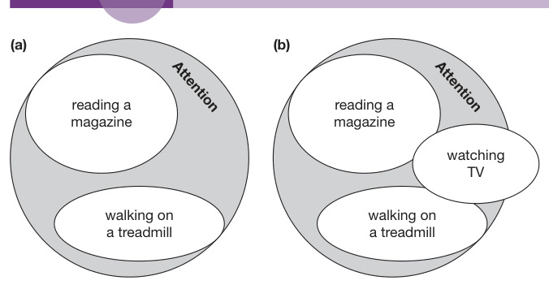
Hình 3.1: Biểu diễn các yêu cầu chú ý trên nguồn lực chú ý sẵn có. (a) Hai nhiệm vụ — đọc tạp chí và đi trên máy chạy bộ — có thể được thực hiện đồng thời vì không vượt quá năng lực chú ý. (b) Sự kết hợp của ba nhiệm vụ (đọc tạp chí, đi trên máy chạy bộ và xem TV) đòi hỏi nhiều không gian chú ý hơn mức sẵn có; mức độ thực hiện của một hay nhiều nhiệm vụ sẽ suy giảm, hoặc một nhiệm vụ có thể bị bỏ qua.
Các Yếu Tố Ảnh Hưởng Đến Yêu Cầu Chú Ý
Làm phức tạp thêm vấn đề năng lực chú ý hạn chế là thực tế rằng yêu cầu chú ý của một nhiệm vụ nhất định và tác động của chúng lên người thực hiện không phải là không đổi. Người thực hành nên nhận thức rằng các đặc điểm của môi trường, của nhiệm vụ và của người học đều ảnh hưởng đến yêu cầu chú ý đặt lên người thực hiện. Những đặc điểm này có ý nghĩa quan trọng đối với việc thiết kế các trải nghiệm hướng dẫn.
GHI CHÚ NGHIÊN CỨU (RESEARCH NOTES)
Vào bất kỳ ngày nào, khi bạn trên đường đi làm hoặc đi học, có lẽ bạn đã nhận thấy những người lái xe đang tham gia vào các hoạt động có thể làm họ mất tập trung khỏi việc lái xe. Một trong những hoạt động đó là sử dụng điện thoại di động. Vì muốn hiểu rõ hơn về tác động của việc nói chuyện qua điện thoại khi lái xe, Strayer, Drews và Crouch (2006) đã tiến hành một nghiên cứu nhằm so sánh hiệu suất lái xe của một người lái đang dùng điện thoại với hiệu suất của một người lái say rượu. Nghiên cứu được thực hiện trong một môi trường phòng thí nghiệm được kiểm soát, sử dụng thiết bị mô phỏng lái xe. Với mô hình đi theo xe dẫn đầu, trong đó người tham gia lái xe trên một đường cao tốc nhiều làn theo sau một xe dẫn đầu có thể phanh bất ngờ, thí nghiệm đã xem xét các biến số như tốc độ lái, khoảng cách đi theo, thời gian va chạm và thời gian phanh. Kết quả cho thấy những người lái dùng điện thoại, bất kể họ đang nói qua điện thoại cầm tay hay điện thoại rảnh tay, đều có phản ứng phanh chậm hơn và gặp phải nhiều tai nạn giao thông hơn so với khi họ không dùng điện thoại. Ở chiều ngược lại, những người lái say rượu lái xe hung hăng hơn, bám sát xe trước hơn và đạp phanh mạnh hơn. Các tác giả của nghiên cứu kết luận rằng sự suy giảm do sử dụng điện thoại khi lái xe cũng nghiêm trọng như sự suy giảm liên quan đến việc lái xe say rượu. Một nghiên cứu khác, do Drews và cộng sự (2009) thực hiện, đã xem xét tác động của việc nhắn tin lên hiệu suất lái xe mô phỏng. Bốn mươi người trẻ tuổi (19–23 tuổi) đã thực hiện hai nhiệm vụ: chỉ lái xe (nhiệm vụ đơn) và vừa lái xe vừa nhắn tin (nhiệm vụ kép). Tương tự như phương pháp luận của nghiên cứu trước, người tham gia được hướng dẫn đi theo một xe dẫn đầu có thể phanh bất ngờ. Kết quả về hiệu suất lái xe cho thấy những người tham gia ở điều kiện vừa lái vừa nhắn tin phản ứng chậm hơn đáng kể khi đèn phanh của xe dẫn đầu bật sáng đột ngột, tăng đáng kể khoảng cách đi theo xe trước, có tần suất cao hơn các lần lệch làn không chủ ý và các chuyển động ngang sang làn khác, và gặp nhiều va chạm hơn so với những người ở điều kiện chỉ lái xe. Những phát hiện này cho thấy nguy cơ tai nạn đáng kể khi vừa nhắn tin vừa lái xe; theo các tác giả, nguy cơ này vượt quá nguy cơ của việc nói chuyện qua điện thoại khi lái xe.
CEREBRAL CHALLENGE 3.1 — Thử thách Trí não
- Hãy quan sát một người thực hiện một kỹ năng đóng và một người thực hiện một kỹ năng mở. Hãy mô tả những gì bạn quan sát được. Yêu cầu chú ý của hai người thực hiện khác nhau như thế nào?
- Để dạy một kỹ năng do bạn tự chọn, hãy giải thích cách bạn có thể thiết kế môi trường hướng dẫn nhằm giảm yêu cầu chú ý đặt lên người học.
Môi Trường Và Độ Phức Tạp Của Nhiệm Vụ
Khi môi trường hoặc nhiệm vụ trở nên phức tạp hơn, yêu cầu chú ý sẽ tăng tương ứng, làm giảm lượng không gian chú ý sẵn có cho các nhiệm vụ bổ sung. Ví dụ, trong trường hợp đọc tạp chí trong khi đi trên máy chạy bộ, có vẻ như vẫn có đủ không gian xử lý. Tuy nhiên, chính hai nhiệm vụ này có thể sẽ cản trở nhau nếu thay vì máy chạy bộ, người thực hiện đang đi trên một vỉa hè đông đúc. Người thực hành có thể muốn giảm độ phức tạp của môi trường hoặc nhiệm vụ để không vượt quá giới hạn chú ý, cho phép người học phân bổ các nguồn lực chú ý cần thiết cho nhiệm vụ đang được học. Ví dụ, đặt Aaron vào một môi trường không có yếu tố gây phân tán sẽ giúp anh tập trung vào nhiệm vụ trước mắt. Tương tự, một môi trường tối ưu cho người mới bắt đầu lái xe sẽ là một bãi đỗ xe rộng và vắng thay vì một con phố trong giờ cao điểm. Cũng theo cách đó, bằng cách loại bỏ các hậu vệ khi người học đang luyện các kỹ năng như cú lên rổ, dẫn bóng và các pha tấn công, huấn luyện viên bóng rổ có thể đảm bảo năng lực chú ý không có khả năng bị vượt quá.
Các chuyên gia lâm sàng cũng nên xem xét năng lực chú ý khi làm việc với bệnh nhân của mình. Ví dụ, nghiên cứu đã chỉ ra rằng yêu cầu chú ý đặt lên một cá nhân có thể thay đổi tùy theo loại dụng cụ hỗ trợ di chuyển đang được sử dụng và mức độ quen thuộc của bệnh nhân với dụng cụ đó (O'Sullivan, Schmitz, & Fulk, 2019). Dù cả khung tập đi kiểu nhấc lên thông thường lẫn khung tập đi có bánh xe đều đòi hỏi phân bổ chú ý trong khi sử dụng, khung tập đi có bánh xe được thấy là ít đòi hỏi chú ý hơn (Wright & Kemp, 1992). Trong những tình huống khác, các khiếm khuyết về chú ý có thể ảnh hưởng ngay cả đến các hoạt động nhiệm vụ kép tưởng chừng đơn giản, chẳng hạn như đi bộ trong khi cầm một cốc cà phê hoặc tham gia vào một cuộc trò chuyện. Thực tế, Shumway-Cook và Woollacott (2017) đã nói rằng “suy giảm chú ý là một yếu tố đáng kể góp phần gây mất ổn định và té ngã trong các điều kiện nhiệm vụ kép ở cả nhóm người cao tuổi lẫn nhóm có rối loạn thần kinh” (tr. 297). Hãy xem video tại https://www.youtube.com/watch?v=mjzHZHE83mc để thấy một bệnh nhân được yêu cầu thực hiện một nhiệm vụ nhận thức trong khi hoàn thành Bài kiểm tra Đứng đi và Đứng lại (Timed Up and Go Test, TUG).
GHI CHÚ NGHIÊN CỨU (RESEARCH NOTES)
Sử dụng kỹ năng chuyền bóng (set) trong bóng chuyền, Sibley và Etnier (2004) đã xem xét tác động của việc ra quyết định lên yêu cầu chú ý và hiệu suất nhiệm vụ. Hai mươi cầu thủ bóng chuyền trình độ trung bình đã tham gia nghiên cứu, trong đó sử dụng mô hình nhiệm vụ kép, theo đó người tham gia hoàn thành một nhiệm vụ chính và một nhiệm vụ phụ cả riêng lẫn đồng thời.
Nhiệm vụ chính trong công trình này là cú chuyền bóng, nhận bóng từ một cú ném dưới tay. Hướng chuyền được quyết định bởi màu bóng: bóng có sọc xanh–trắng báo hiệu chuyền ra sau, còn bóng trắng báo hiệu chuyền ra trước. Các cú chuyền được chấm điểm dựa trên độ chính xác khi bóng rơi qua một vòng cung đặt song song với mặt đất, cách người tham gia 12 feet và ở độ cao bằng lưới. Cú chuyền được 3 điểm nếu bóng đi qua vòng, 2 điểm nếu bóng chạm vòng, 1 điểm nếu bóng trượt trong phạm vi một đường kính bóng (suýt trúng), và 0 nếu bóng trượt hoàn toàn.
Nhiệm vụ phụ yêu cầu người tham gia đáp trả một âm thanh bằng cách hét lên “bóng” nhanh nhất có thể. Thời gian phản ứng được đo từ lúc âm thanh vang lên cho đến lúc người tham gia có phản ứng âm thanh đầu tiên. Để xem xét yêu cầu chú ý tại các thời điểm khác nhau trong quỹ đạo của bóng, các âm thanh được phát ra: (1) khi bóng được ném lên, (2) ngay trước khi bóng đạt đỉnh, (3) ngay sau khi bóng đạt đỉnh, và (4) ngay trước khi người tham gia chạm bóng. Cũng có các thử nghiệm bẫy, trong đó không phát âm thanh nào, nhằm loại trừ sự dự đoán trước.
Tất cả người tham gia đều có thời gian khởi động và luyện chuyền bóng vào các mục tiêu. Sau đó, các số đo đường cơ sở cho cả nhiệm vụ chính lẫn nhiệm vụ phụ được thu thập. Sau một giai đoạn nghỉ 5 phút, hai nhiệm vụ được thực hiện đồng thời trong một khối 20 cú chuyền ra trước, một khối 20 cú chuyền ra sau và hai khối 20 cú chuyền lựa chọn. Bốn âm thanh tại mỗi trong bốn vị trí của quỹ đạo bóng (vị trí dò) cùng bốn thử nghiệm bẫy được phân bổ ngẫu nhiên trong mỗi khối 20 cú. Các khối được trình bày theo thứ tự ngẫu nhiên.
Kết quả cho thấy yêu cầu chú ý cao hơn ở các cú chuyền lựa chọn trong hai vị trí dò đầu tiên, gợi ý rằng “việc chọn hướng chuyền bóng và lập trình trước phần vận động của nhiệm vụ đã ảnh hưởng đến sự chú ý trong nửa đầu quỹ đạo của bóng” (Sibley & Etnier, 2004, tr. 105). Ngoài ra, khi người tham gia bị bắt buộc phải chọn hướng chuyền, người ta thấy có sự suy giảm nhỏ nhưng có ý nghĩa trong hiệu suất chuyền bóng. Kết quả cũng cho thấy sự gia tăng yêu cầu chú ý ở các đoạn đầu và cuối của quỹ đạo bóng, và mức yêu cầu chú ý thấp hơn ở giữa quỹ đạo. Điều này phù hợp với các tài liệu nghiên cứu, theo đó sự chú ý chọn lọc thị giác được cho là cần thiết để thu thập thông tin về đặc điểm quỹ đạo trong phần đầu của chuyển động nhằm chặn bóng, trong khi theo dõi thị giác dường như không cần thiết trong giai đoạn giữa. Khi người tham gia chuẩn bị chạm bóng và sau đó thực sự chạm bóng, có lẽ cần nhiều chú ý hơn để xử lý thông tin cảm giác tự thân và thực hiện các điều chỉnh tư thế cần thiết.
Trình Độ Kỹ Năng Của Người Thực Hiện
Đặc điểm của người mới bắt đầu là gặp khó khăn khi phải chú ý đến nhiều hơn một nhiệm vụ cùng lúc trong lúc học một kỹ năng mới. Hãy nhớ lại trải nghiệm tung bóng của bạn ở Chương 1? Hãy tưởng tượng việc phải trò chuyện trong khi bạn đang cố tung bóng. Có lẽ bạn đã cần toàn bộ nguồn lực chú ý để tập trung vào nhiệm vụ trước mắt. Việc thêm vào một cuộc trò chuyện đã làm quá tải không gian chú ý của bạn, và hai nhiệm vụ đã cản trở nhau. Ở chiều ngược lại, một nghệ sĩ xiếc lành nghề không chỉ có thể tung bóng và trò chuyện mà còn có thể làm vậy trong khi đi xe một bánh. Khi dạy kỹ năng mới cho người mới bắt đầu, hãy đảm bảo họ đã luyện tập đầy đủ nhiệm vụ thứ nhất trước khi bạn dạy thêm các nhiệm vụ khác. Ngoài ra, những kỹ năng rất phức tạp với nhiều thành phần thường làm người mới bắt đầu choáng ngợp. Việc chia nhỏ các kỹ năng như vậy để luyện tập bước đầu có thể hỗ trợ học tập. Chiến lược này sẽ được thảo luận kỹ hơn ở Chương 9.
Số Lượng Tín Hiệu
Các giới hạn chú ý bị vượt quá khi người thực hiện cố nghĩ về quá nhiều thứ trong lúc học hoặc hoàn thiện một kỹ năng vận động. Điều này có thể được khắc phục bằng một vài chiến lược giảng dạy đơn giản. Thứ nhất, khi dạy một kỹ năng mới, hãy tập trung vào chỉ một số ít tín hiệu có ý nghĩa. Nhận thấy sự bực bội và khó khăn của Aaron khi thực hiện nhiệm vụ bảng chốt, nhà trị liệu nghề nghiệp nên giảm số lượng tín hiệu và chỉ tập trung sự chú ý của anh vào một việc tại một thời điểm cho đến khi anh thành thạo hơn động tác. Thứ hai, khi sửa lỗi thực hiện bằng cách cung cấp phản hồi, tránh làm quá tải người học với thông tin. Một lần nữa, chỉ đưa ra một hoặc hai tín hiệu cho người học suy nghĩ. Cuối cùng, hầu hết các tình huống thực hiện đều trình bày một lượng thông tin dồi dào. Một số thông tin trong đó có liên quan hoặc hữu ích cho nhiệm vụ trước mắt (tín hiệu liên quan), và một số thì không (tín hiệu không liên quan). Việc dạy người học chú ý có chọn lọc đến các tín hiệu liên quan và bỏ qua các tín hiệu không liên quan sẽ giảm sự cạnh tranh về không gian chú ý.
MỨC ĐỘ HƯNG PHẤN
Một yếu tố then chốt ảnh hưởng đến nguồn lực chú ý sẵn có của một cá nhân tại bất kỳ thời điểm nào là mức độ hưng phấn (Kahneman, 1973). Hưng phấn là “một sự kích hoạt chung về sinh lý và tâm lý của cơ thể, thay đổi theo một dải liên tục từ giấc ngủ sâu đến sự phấn khích mãnh liệt” (Gould & Krane, 1992, tr. 120–121). Không nên nhầm lẫn nó với lo âu, vốn là một cảm xúc phát sinh từ việc cá nhân cảm nhận một tình huống là có tính đe dọa — dù rằng những thay đổi về mức độ lo âu thực sự dẫn đến những thay đổi về mức độ hưng phấn. Dù hiệu suất bị ảnh hưởng bởi mức độ hưng phấn, vấn đề không đơn giản như quan niệm sai phổ biến thường ngụ ý.
QUAN NIỆM SAI PHỔ BIẾN (COMMON MYTH)
“Mức độ hưng phấn càng cao thì hiệu suất càng tốt.”
Mối Quan Hệ Giữa Mức Độ Hưng Phấn Và Hiệu Suất
Mối quan hệ giữa mức độ hưng phấn và hiệu suất được thể hiện qua nguyên lý hình chữ U ngược, còn được gọi là Định luật Yerkes-Dodson (Yerkes & Dodson, 1908). Theo nguyên lý này, được minh họa trong Hình 3.2, có một mức độ hưng phấn tối ưu cho hiệu suất đỉnh cao.
Mức tối ưu đó không phải là hằng số; nó phụ thuộc vào cả đặc điểm của nhiệm vụ lẫn của người thực hiện. Khi một nhiệm vụ trở nên phức tạp hơn — do đòi hỏi kiểm soát vận động tinh, ra quyết định và chú ý nhiều hơn — thì mức hưng phấn thấp hơn sẽ là tối ưu. Ở chiều ngược lại, mức hưng phấn cao hơn phù hợp với những nhiệm vụ liên quan đến vận động thô, ra quyết định tối thiểu và yêu cầu chú ý thấp. Nói cách khác, mức hưng phấn cho hiệu suất tối ưu rất khác nhau giữa việc tiến hành một ca phẫu thuật tinh vi và việc thực hiện một cú cẩy tạ (power clean). Hãy xem ba phút đầu của video trên trang web được ghi ở lề, đặc biệt chú ý đến câu trả lời ở phút 2:05 để thấy mức hưng phấn thấp lại then chốt thế nào đối với hiệu suất tối ưu trong leo núi đá.
Video: Phỏng vấn nhà leo núi tự do Alex Honnold trong chương trình 60 Minutes — www.youtube.com/watch?v=SR1jwwagtaQ.

Hình 3.2: Nguyên lý hình chữ U ngược. Mức hiệu suất tối ưu ứng với mức hưng phấn tối ưu; hiệu suất kém khi hưng phấn quá thấp hoặc quá cao. Trục ngang là mức độ hưng phấn (thấp, trung bình, cao), trục dọc là hiệu suất.
Hưng Phấn Và Sự Chuẩn Bị Vận Động
Giả thuyết sử dụng tín hiệu (cue utilization hypothesis) (Easterbrook, 1959) đưa ra lời giải thích cho mối quan hệ giữa mức độ hưng phấn và hiệu suất. Theo giả thuyết này, những thay đổi trong tiêu điểm chú ý diễn ra theo mức độ hưng phấn
(Hình 3.4). Trong điều kiện hưng phấn thấp, tiêu điểm chú ý của người thực hiện tương đối rộng. Nếu tiêu điểm chú ý trở nên quá rộng, cả tín hiệu liên quan lẫn không liên quan đến nhiệm vụ đều sẵn có đối với người thực hiện. Vì năng lực chú ý của chúng ta có hạn, như đã thấy ở phần trước, sẽ xảy ra sự cạnh tranh về nguồn lực chú ý, dẫn đến chậm trễ đáp án và sự suy giảm tương ứng về hiệu suất. Nói cách khác, người thực hiện dễ bị phân tán bởi các tín hiệu môi trường không liên quan, chẳng hạn như một khán giả chế giễu, hành động của các cầu thủ ngoài sân, hay thậm chí là diện mạo của địa điểm thi đấu; hệ quả là không chú ý được đến thông tin thực hiện có liên quan, chẳng hạn như sự thay đổi trong đội hình phòng thủ của đối thủ (Wrisberg, 2007).
Khi mức độ hưng phấn tiến gần đến mức tối ưu, tiêu điểm chú ý thu hẹp lại, giúp người thực hiện tập trung vào các tín hiệu liên quan đến nhiệm vụ mà bỏ qua những tín hiệu không liên quan. Đó là những điều kiện cần thiết để ra quyết định nhanh và chính xác; cá nhân được xem là đang ở trong vùng chức năng tối ưu (Hanin, 1980), tức dải mức độ hưng phấn dẫn đến hiệu suất tối ưu. Khi mức độ hưng phấn tiếp tục tăng, sự thu hẹp tri giác — việc tiêu điểm chú ý thu hẹp dần theo mức độ hưng phấn tăng lên — tiếp diễn, và đến một điểm nào đó tiêu điểm chú ý trở nên quá hẹp khiến người thực hiện có thể không còn khả năng quét môi trường một cách hiệu quả. Điều này có thể dẫn đến việc các kích thích tiềm năng quan trọng không được phát hiện. Hiện tượng này thường thấy ở những phút đầu của một giải vô địch lớn. Các cầu thủ có thể bị hưng phấn quá mức, và tiêu điểm chú ý của họ trở nên hẹp đến mức không thể phát hiện các tín hiệu cần thiết để ra quyết định phù hợp. Khán giả khi ấy tỏ ra bối rối, chẳng hạn, trước cách một tiền vệ trụ (quarterback) không thấy được một đồng đội mở hoàn toàn.

Hình 3.3: Sự thu hẹp tri giác có hệ quả lớn hơn nhiều so với việc chỉ bỏ lỡ một cơ hội ghi điểm.
Đối với nhân viên cứu hộ, nhân viên y tế, lính cứu hỏa, cảnh sát, kiểm soát viên không lưu và nhân viên quân đội, việc học cách kiểm soát mức độ hưng phấn là tối quan trọng.
Ý Nghĩa Thực Tiễn
Có nhiều kỹ thuật giúp sinh viên, vận động viên, khách hàng và bệnh nhân quản lý mức độ hưng phấn của mình. Các chiến lược làm tăng hưng phấn bao gồm tăng nhịp điệu và tốc độ thở, nghe nhạc sôi động trước khi thi đấu, và tăng cường hoạt động thể chất. Các buổi luyện tập và phục hồi chức năng nên được thiết kế để bao gồm nhiều loại hoạt động đa dạng nhằm duy trì động lực của người học (Martens, 2012).
Mức hưng phấn cao hơn là tối ưu cho hiệu suất đỉnh cao trong cú nâng tạ kiểu power clean.

Hình 3.4: Mối quan hệ giữa mức độ hưng phấn và tiêu điểm chú ý. Khi mức độ hưng phấn tăng, số lượng kích thích được người thực hiện chú ý thay đổi; mức hưng phấn tối ưu cho phép mức kích thích tối ưu. (Quá rộng, quá hẹp, tiêu điểm tối ưu; kích thích liên quan đến nhiệm vụ và kích thích không liên quan.)
CEREBRAL CHALLENGE 3.2 — Thử thách Trí não
- Tiêu điểm chú ý của người thực hiện có mức hưng phấn quá thấp có thể trở nên quá rộng. Hệ quả là họ sẽ hướng một phần chú ý đến các kích thích không liên quan. Một ví dụ về kích thích không liên quan đó là một khán giả la ó trên khán đài. Dựa trên kinh nghiệm của bản thân, hãy liệt kê những ví dụ khác về kích thích không liên quan có thể thu hút sự chú ý của một người có mức hưng phấn thấp và ảnh hưởng đến hiệu suất tổng thể.
- Một bác sĩ phòng cấp cứu quá phấn khích có thể trải qua sự thu hẹp tri giác đến mức dễ đưa ra quyết định kém. Hãy nêu ví dụ cụ thể về các nghề nghiệp hoặc tình huống khác có thể dẫn đến thu hẹp tri giác và hệ quả là ra quyết định kém. Hãy giải thích đầy đủ câu trả lời của bạn.
CEREBRAL CHALLENGE 3.3 — Thử thách Trí não
Những bài nói chuyện cổ vũ của đội trước trận đấu có lợi cho hiệu suất không? Hãy giải thích đầy đủ câu trả lời của bạn.
Để giảm hưng phấn, hãy khuyến khích thở chậm và kiểm soát, thư giãn cơ tiến triển (gồm luân phiên co và thư giãn các nhóm cơ khác nhau), tự thoại tích cực (trong đó những ý nghĩ tiêu cực được thay thế bằng
những ý nghĩ mang tính xây dựng), hình dung tinh thần, và tập trung vào thực hiện thay vì kết quả. Để xem xét kỹ hơn, xem Weinberg và Gould (2019).
CHÚ Ý CHỌN LỌC
Như đã nói ở phần trước, môi trường thực hiện tràn ngập thông tin, trong đó có phần liên quan và phần không liên quan đến đáp án sắp tới. Vì năng lực chú ý có vẻ là có hạn, thực hiện thành công phụ thuộc vào khả năng chú ý đến thông tin có ý nghĩa của người thực hiện. May mắn thay, chúng ta có năng lực làm điều đó thông qua chú ý chọn lọc.
Ví dụ kinh điển minh họa khả năng chú ý hay tập trung vào một đối tượng cụ thể giữa vô số kích thích là hiện tượng tiệc cocktail (cocktail party phenomenon) (Cherry, 1953). Hãy tưởng tượng bạn đang ở một bữa tiệc ngoài trời lớn (tailgate party) giữa nhiều bữa tiệc tương tự. Dù có vô số cuộc trò chuyện đang diễn ra quanh bạn, bạn vẫn có thể chú ý có chọn lọc vào cuộc trò chuyện mà bạn đang tham gia. Điều thú vị hơn nữa là nếu bạn nghe thấy tên mình được nhắc đến trong một cuộc trò chuyện khác, sự chú ý của bạn sẽ chuyển hướng sang người đã nói tên bạn. Để xem thêm một ví dụ về chú ý chọn lọc, hãy thử Hoạt động Khám phá 3.1.
HOẠT ĐỘNG KHÁM PHÁ 3.1 — Chú Ý Chọn Lọc
Hãy đọc phần in đậm trong đoạn văn sau:
Ở đâu đó ẩn giấu trong dãy núi ngoạn mục Rocky gần Central City, Colorado, một năng lực người thợ mỏ già nhận thức đã giấu một hộp vàng. Dù điều này hàng trăm người đã tìm nó, họ vẫn không tìm thấy. Chúng ta làm điều này bằng tập trung chú ý vào các tín hiệu như kiểu chữ.
Bạn rút ra được kết luận gì về chú ý chọn lọc? Hãy đưa vào câu trả lời những gì bạn nhớ được về đoạn văn in thường.
Nguồn: http://capone.mtsu.edu/sschmidt/Cognitive/Attention.pdf
Định Hướng Tiêu Điểm Chú Ý: Các Kiểu Chú Ý
Quá trình chú ý có chọn lọc hay tập trung vào thông tin môi trường cụ thể được gọi là tiêu điểm chú ý. Nidefer (1993) ban đầu xác định hai chiều cắt nhau của tiêu điểm chú ý: độ rộng và hướng. Độ rộng đề cập đến lượng thông tin và kích thước của trường tri giác mà người thực hiện chú ý đến. Nó dao động từ tiêu điểm rộng, trong đó người thực hiện chú ý đến một lượng lớn thông tin, đến tiêu điểm hẹp, trong đó sự chú ý chỉ hướng vào một hoặc hai tín hiệu. Một người chơi Ultimate Frisbee cần tiêu điểm
rộng để quét sân tìm một đồng đội đang mở; khi đã xác định được người đó, người chuyền bóng phải tập trung sự chú ý vào người này (tiêu điểm hẹp) để thực hiện đường chuyền. Chiều kia, tức hướng, có thể là ngoại vi hoặc nội tại. Khi áp dụng tiêu điểm ngoại vi, người thực hiện chú ý đến thông tin trong môi trường, chẳng hạn như đối thủ, hoặc đến kết quả của động tác, chẳng hạn như chuyển động của cây gậy golf. Khi người thực hiện tập trung vào ý nghĩ của mình, vào các chuyển động của cơ thể tạo ra kết quả đó (chẳng hạn như chuyển động của cánh tay trong cú vung gậy golf), hoặc vào các tín hiệu nội tại, họ đã áp dụng tiêu điểm nội tại. Như Hình 3.5 cho thấy, độ rộng và hướng tương tác với nhau để tạo ra bốn loại hay kiểu tiêu điểm chú ý: rộng–ngoại vi, rộng–nội tại, hẹp–ngoại vi và hẹp–nội tại.
Những tình huống thực hiện khác nhau đặt ra những yêu cầu chú ý khác nhau cho người thực hiện. Thành công thường phụ thuộc vào khả năng sử dụng tiêu điểm chú ý phù hợp với tình huống cụ thể. Ví dụ, những tình huống đòi hỏi nhận biết và đánh giá môi trường thành thạo, chẳng hạn như một người giao hàng bằng xe đạp luồn lách qua giao thông thành phố New York, cần sử dụng tiêu điểm chú ý rộng–ngoại vi. Ở chiều ngược lại, việc áp dụng tiêu điểm rộng–nội tại là cần thiết trong những tình huống đòi hỏi phân tích chiến lược, chẳng hạn như khi một người chơi bi-a lên kế hoạch cho cú đánh tiếp theo. Việc tập dượt trong đầu hành động sắp tới, chẳng hạn như hình dung thực hiện của mình trong cú nhảy cao trước khi thực sự thực hiện, đòi hỏi tiêu điểm hẹp–nội tại; một cầu thủ bóng chuyền thực hiện cú chuyền là ví dụ về tiêu điểm hẹp–ngoại vi.
Điều quan trọng là phải hiểu rằng nhiều tình huống đòi hỏi người thực hiện liên tục chuyển đổi tiêu điểm chú ý trong suốt quá trình thực hiện. Ví dụ, một cầu thủ bóng đá thực hiện cú sút phạt đền có thể sẽ dùng cả bốn kiểu tiêu điểm chú ý. Cô ấy phải đánh giá môi trường (vị trí thủ môn, gió, v.v.) thông qua tiêu điểm rộng–ngoại vi. Sau khi thu thập thông tin này, tiêu điểm của cô chuyển sang rộng–nội tại khi cô quyết định sẽ sút thế nào. Tiêu điểm hẹp–nội tại là cần thiết khi cô tập dượt trong đầu cú sút sắp thực hiện.
Hình 3.5: Bốn kiểu chú ý dựa trên sự tương tác của hai chiều: hướng (từ nội tại đến ngoại vi) và độ rộng (từ rộng đến hẹp). Rộng–ngoại vi: dùng để đánh giá môi trường hay tình huống bên ngoài, ví dụ người giao hàng bằng xe đạp luồn lách trong giao thông. Rộng–nội tại: dùng để phân tích và lập kế hoạch chiến lược hoặc đáp án vận động sắp tới, ví dụ người chơi bi-a thực hiện cú đánh. Hẹp–ngoại vi: dùng để tập trung hoàn toàn vào một hoặc hai tín hiệu ngoại vi nhằm thực hiện đáp án vận động, ví dụ cầu thủ bóng chuyền thực hiện cú chuyền. Hẹp–nội tại: dùng để theo dõi các tín hiệu nội tại và tập dượt trong đầu một thực hiện sắp tới, ví dụ vận động viên nhảy cao hình dung thực hiện của mình trước khi thi đấu.
Trong lúc thực hiện, cô áp dụng tiêu điểm hẹp–ngoại vi (Williams et al., 2021). Ví dụ vừa nêu có thể dường như cho thấy sự chuyển đổi chú ý tuân theo một kiểu hay trình tự nhất định, nhưng giả định này là không chính xác. Ví dụ, trong thực hiện các kỹ năng mở, người thực hiện phải có khả năng chuyển tiêu điểm chú ý nhanh chóng và chính xác theo yêu cầu của tình huống. Nếu thay vì thực hiện cú sút phạt đền, cầu thủ bóng đá đang thực hiện một đường chuyền và một hậu vệ bất ngờ xuất hiện gần đồng đội đang mở của cô, cô sẽ phải nhanh chóng trở lại từ tiêu điểm hẹp–ngoại vi sang tiêu điểm rộng–ngoại vi.
Ý Nghĩa Thực Tiễn
Người thực hiện biết ở đâu, khi nào và như thế nào để tập trung chú ý có thể bỏ qua thông tin không liên quan vốn gây chậm trễ đáp án. Người thực hành không nên giả định rằng người học tự nhiên sẽ làm được điều này. Bằng cách dạy họ nhận ra các yêu cầu chú ý của môn thể thao hoặc động tác mình đang học, cũng như bằng cách cung cấp nhiều cơ hội luyện tập, người thực hành có thể giúp người học rèn sắc kỹ năng chuyển đổi chú ý.
Người thực hành cũng nên nhận thức rằng họ có thể vô tình khiến người học chuyển tiêu điểm chú ý sai hướng (Ziegler, 2002). Ví dụ, một nhà vật lý trị liệu có thể nói với một bệnh nhân đang được huấn luyện đi lại để học cách đi với một chân giả mới: “Đừng nghĩ đến việc ngã.” Ý nghĩ về việc ngã lúc này đã được cấy vào tâm trí bệnh nhân, làm thay đổi kiểu chú ý của anh từ tiêu điểm hẹp–ngoại vi mong muốn sang tiêu điểm hẹp–nội tại, và điều này có thể sẽ làm gián đoạn thực hiện (Ziegler, 2002). Tương tự, một huấn luyện viên nói với một vận động viên vượt rào rằng đừng lo việc đụng vào rào sẽ gây ra một phản ứng chú ý gây rối loạn. Binsch và cộng sự (2010) đã xem xét hiện tượng này bằng cách theo dõi hành vi nhìn của các cầu thủ bóng đá thi đấu trong lúc thực hiện cú sút phạt đền tĩnh, khi họ được hướng dẫn sút chính xác nhất có thể, hoặc sút chính xác nhất có thể nhưng cẩn thận không sút vào tầm với của thủ môn, hoặc sút chính xác nhất có thể nhưng cẩn thận sút vào khoảng trống. Họ phát hiện rằng khi cố không sút bóng vào tầm với của thủ môn, 44 phần trăm cầu thủ cho thấy hiệu ứng nghịch lý (Wegner, 1994), theo đó hành động mà họ cố tránh lại thực sự được thực hiện. Ngoài ra, người ta ghi nhận các cú nhìn chốt cuối vào khung thành trống (mục tiêu thực tế) ngắn hơn đáng kể, hoặc là do người sút “rút ánh mắt khỏi thủ môn [khu vực cần tránh] muộn hơn, tức là gần thời điểm sút bóng hơn, hoặc do họ có thêm một cú nhìn vào thủ môn trước khi sút” (Binsch et al., 2010, tr. 287). Để tối ưu hóa thực hiện, vì vậy, người thực hành nên cẩn thận dùng ngôn ngữ gợi ra các phản ứng chú ý tích cực thay vì hướng sự chú ý vào điều mà người học không nên làm.
Trong những trường hợp khác, việc làm gián đoạn tiêu điểm chú ý lại có thể có lợi. Một huấn luyện viên có thể xin tạm dừng trước cú ném phạt hoặc cú ghi điểm then chốt của đối thủ với hy vọng tạo ra một sự phân tán ảnh hưởng tiêu cực đến thực hiện.
Hoặc khán giả sẽ cố làm gián đoạn tiêu điểm chú ý của đối thủ bằng cách la hét, chế giễu, vẫy tay và hô tên cầu thủ.
GHI CHÚ NGHIÊN CỨU (RESEARCH NOTES)
Woodman, Barlow và Gorgulu (2015) đã tiến hành hai thí nghiệm để xem xét các hiệu ứng nghịch lý trong trạng thái lo âu. Trong thí nghiệm thứ nhất, 40 cầu thủ khúc côn cầu đại học thực hiện một nhiệm vụ sút bóng trong cả điều kiện lo âu thấp và lo âu cao. Trước nhiệm vụ, các cầu thủ được thông báo rằng họ sẽ nhận 1 điểm nếu bắn trúng vùng mục tiêu, không được điểm nếu bắn ra ngoài vùng mục tiêu, và sẽ bị trừ 1 điểm nếu bắn sang bên phải vùng mục tiêu. Cụ thể, họ được nói: “Hãy cố bắn trúng vùng mục tiêu. Đặc biệt cẩn thận đừng bắn bóng sang bên phải cột bên phải, vì mỗi lần làm vậy bạn sẽ bị trừ 1 điểm” (Woodman et al., 2015, tr. 215). Kết quả cho thấy khi lo âu, cầu thủ bắn nhiều cú hơn đáng kể vào vùng “cần tránh” và ít cú hơn đáng kể vào vùng mục tiêu. Trong thí nghiệm hai, một nhiệm vụ ném phi tiêu được dùng không chỉ để xem xét tần suất của hiệu ứng nghịch lý mà còn độ chính xác của những lỗi đó. Một lần nữa, một vùng được chỉ định là cần tránh và hướng dẫn sau được đưa ra: “Xin hãy cố bắn trúng vùng mục tiêu, hoặc gần vùng mục tiêu nhất có thể, để giành được nhiều điểm tối đa, nhưng đặc biệt cẩn thận đừng bắn vào [góc tư phần trên bên phải] của bảng phi tiêu, vì mỗi lần làm vậy bạn sẽ nhận 0 điểm” (tr. 218). Kết quả ủng hộ thí nghiệm thứ nhất, trong đó lo âu dẫn đến nhiều lỗi nghịch lý hơn, đồng thời cho thấy các cú ném phi tiêu không chỉ cách xa vùng mục tiêu hơn đáng kể mà còn đi sâu hơn đáng kể vào vùng lỗi nghịch lý.
Tiến sĩ Woodman thảo luận về các hiệu ứng nghịch lý và trình bày một ví dụ về thiết kế thí nghiệm tại www.youtube.com/watch?v=l8tE0nvn_Pk.
Tiêu Điểm Chú Ý Và Hướng Dẫn
Người học nên tập trung chú ý vào đâu khi học và luyện tập một kỹ năng? Một khối bằng chứng ngày càng lớn đặt nghi vấn về thông lệ phổ biến là hướng dẫn người học tập trung sự chú ý có ý thức vào chuyển động của chính cơ thể mình. Nhiều nghiên cứu nhất quán cho thấy việc áp dụng tiêu điểm chú ý nội tại có thể có tác động làm suy giảm tiếp thu kỹ năng. Thay vào đó, các nghiên cứu chỉ ra rằng khi lời hướng dẫn tạo ra tiêu điểm ngoại vi, theo đó sự chú ý của người học được hướng đến kết quả của động tác, thì việc học và thực hiện được tăng cường. Những lợi ích của việc áp dụng tiêu điểm chú ý ngoại vi đã được chứng minh cả về hiệu quả lẫn hiệu suất vận động trên nhiều kỹ năng khác nhau (xem Wulf, 2013, để xem tổng quan) và trong môi trường lâm sàng (Ziv & Lidor, 2019).
Những phát hiện này ngụ ý rằng cách diễn đạt của lời hướng dẫn và phản hồi có thể ảnh hưởng đến tiếp thu kỹ năng vận động và thực hiện (Lohse, Wulf, & Lewthwaite,
2012). Ví dụ, nếu một nhà vật lý trị liệu đang làm việc với một bệnh nhân về động tác duỗi cùi chỏ trong một cú với–nắm, thì hướng dẫn “với gần cái cốc hơn” ở lần thử tiếp theo thay vì nói “duỗi thẳng cùi chỏ khi bạn với ra” có thể gợi ra hành vi mong muốn tốt hơn (Durham et al., 2009). Tiêu điểm chú ý và hướng dẫn sẽ được thảo luận kỹ hơn ở Chương 8.
CEREBRAL CHALLENGE 3.4 — Thử thách Trí não
- Hãy mô tả những sự chuyển đổi chú ý cần thiết để thực hiện thành công các hoạt động sau:
- a. Luồn lách qua một nhà hàng bằng xe lăn.
- b. Nấu ăn theo một công thức mới.
- Trong lần đi siêu thị tiếp theo, hãy chú ý những sự chuyển đổi chú ý diễn ra từ lúc bạn bước vào cửa hàng cho đến lúc bạn rời bãi đỗ xe. Hãy mô tả chúng.
Định Hướng Tiêu Điểm Chú Ý: Tìm Kiếm Thị Giác
Ra quyết định và dự đoán trước lành nghề phụ thuộc vào sự điều chỉnh của người học đối với các sự mời gọi hành động (affordances) hay nhận thức về các biến số thông tin có liên quan trong môi trường, thường trong một giới hạn thời gian đáng kể. Do đó, thực hiện thành công phụ thuộc vào chiến lược tìm kiếm thị giác hay hành vi nhìn mà người thực hiện dùng để quét môi trường nhằm định vị các tín hiệu điều chỉnh then chốt. Trong quá trình quét chủ động này, ánh mắt chúng ta có thể dừng trên nhiều vật thể; điều này được gọi là cố định ánh nhìn (gaze fixation). Bằng cách quan sát các đặc điểm của những cú cố định đó, chẳng hạn như thứ tự, vị trí và thời gian kéo dài, chúng ta có thể suy ra người thực hiện chú ý như thế nào và vào thông tin gì (Kluka, 1999).
Hãy truy cập www.youtube.com/playlist?list=UUdDqo5GklpPyNgapykxI0Tw để xem các video theo dõi mắt cho nhiều kỹ năng khác nhau, sau đó tự trải nghiệm tìm kiếm thị giác bằng cách hoàn thành Hoạt động Khám phá 3.2.
Mắt Tĩnh (Quiet Eye)
Một biến số đặc biệt, gọi là mắt tĩnh (quiet eye) (Vickers, 1996), đã nâng cao hiểu biết của chúng ta về cách người thực hiện dùng thị giác để kiểm soát động tác của mình. Mắt tĩnh được định nghĩa là cú cố định ánh nhìn cuối cùng hướng vào một mục tiêu hoặc vật thể cụ thể trước khi động tác được khởi động. Nghiên cứu đã chỉ ra rằng mắt tĩnh của những người thực hiện ưu tú dài hơn đáng kể, bắt đầu sớm hơn, và có thời gian kéo dài tối ưu hơn cho nhiệm vụ hiện tại so với của những người gần đạt đỉnh cao hoặc có trình độ thấp hơn (để xem các bài tổng quan, xem Lebeau et al., 2016; Rienhof et al., 2016; Vickers, 2016). Điều này có nghĩa là những người thực hiện trình độ cao hơn có thể thấy các tín hiệu điều chỉnh then chốt sớm hơn, và họ có nhiều thời gian hơn để xử lý thông tin.
HOẠT ĐỘNG KHÁM PHÁ 3.2 — Tìm Kiếm Thị Giác
Tìm chữ B trong các sơ đồ sau.
Sơ đồ thứ nhất: P P P P P / P P P P P / P P P P P / P P P P P / P P P B P.
Sơ đồ thứ hai: P P P P P P / P P P P P P / P P P P B P / P P P P P P / P P P P P P.
Nguồn: http://psychology.wikia.com/wiki/Visual_search, do Tiến sĩ Joe Kiff đóng góp (theo Giấy phép Creative Commons Attribution-Share Alike).
CÂU HỎI
- Bạn đã dùng chiến lược gì để hoàn thành nhiệm vụ?
- Những đặc điểm nào trong ô bên phải làm nhiệm vụ trở nên khó hơn?
- Điều này có thể liên quan thế nào đến tìm kiếm thị giác trong các hoạt động vận động?
Một hoạt động tìm kiếm thị giác bổ sung có tại www.psytoolkit.org/lessons/experiment_visualsearch.html.
Kỹ Năng Nhắm Mục Tiêu
Các kỹ năng nhắm mục tiêu thường liên quan đến việc đẩy một vật thể đi chính xác về phía một mục tiêu (Vickers, 2007). Ví dụ gồm bắn cung, bắn súng trường, gạt bóng golf, cú ném phạt bóng rổ, cú phát bóng chuyền, và ném hoặc đá bóng cho một người nhận. Theo Vickers (2007), mục tiêu có thể cố định, trừu tượng hoặc di động, và chúng đặt ra các ràng buộc khác nhau về kiểm soát ánh nhìn.
Các mục tiêu cố định, chẳng hạn như vòng rổ bóng rổ, ổn định và có vị trí có thể dự đoán, đòi hỏi người thực hiện phải cố định ánh nhìn vào một vị trí cụ thể trước khi thực hiện đáp án. Một ví dụ về nhiệm vụ nhắm mục tiêu trừu tượng là cú gạt bóng golf. Khi gạt bóng, người thực hiện phải tính đến độ dốc của green khi ngắm. Dù
bản thân mục tiêu (lỗ) được cố định trong không gian, vị trí ngắm tối ưu lại khó phát hiện hơn. Loại cuối cùng, nhiệm vụ mục tiêu di động, đòi hỏi người thực hiện phải dự đoán vị trí sắp tới của mục tiêu. Ví dụ gồm chuyền hoặc đá một vật thể cho người nhận, hoặc cố gắng đánh trúng đối thủ trong các môn thể thao né tránh như đấu kiếm, quyền anh và võ thuật.
Các nhà nghiên cứu đã phát hiện những khác biệt có hệ thống về hành vi nhìn trong các nhiệm vụ nhắm mục tiêu giữa người thực hiện lành nghề và những người ít kỹ năng hơn. (Để xem bài tổng quan về mắt tĩnh riêng cho các kỹ năng nhắm mục tiêu, xem Vine, Moore, & Wilson, 2014.) Ví dụ, trong bóng rổ, không chỉ các cầu thủ ném bóng chuyên nghiệp quay đầu về phía rổ sớm hơn, mà họ còn có những cú cố định ánh nhìn dài hơn vào mục tiêu (vùng vòng rổ) so với người mới bắt đầu (Ripoll, Bard, & Paillard, 1986). Vickers (1996) còn lưu ý rằng thời gian của cú cố định cuối (mắt tĩnh) trước khi khởi động cú ném phạt dài hơn đáng kể ở các chuyên gia.
Những phát hiện tương tự cũng được chứng minh trong các nhiệm vụ nhắm mục tiêu trừu tượng. Thời gian mắt tĩnh được thấy là dài hơn ở những người chơi bi-a chuyên nghiệp, họ cố định ánh nhìn vào gậy và bóng mục tiêu lâu hơn người mới bắt đầu (Williams, Singer, & Frehlich, 2002). Trong cú gạt bóng, nghiên cứu tiên phong của Vickers (1992) nhận thấy các golf thủ trình độ cao cố định ánh nhìn vào lỗ lâu hơn, có đường quét chính xác hơn, và thể hiện thời gian mắt tĩnh dài hơn trên bóng so với người chơi trình độ thấp hơn. Ngoài ra, những người chơi ít kỹ năng thường theo dõi chuyển động của đầu gậy trong cú vung về sau, trong khi các golf thủ trình độ cao giữ ánh mắt trên đỉnh hoặc mặt sau của bóng. Nhiều nghiên cứu sau đó đã ủng hộ những phát hiện này, đồng thời chứng minh có mối quan hệ giữa thời gian mắt tĩnh dài hơn và những cú gạt thành công, cũng như cho thấy kiểm soát ánh nhìn có thể được huấn luyện, dẫn đến cải thiện hiệu suất (xem Ziv & Lidor, 2015, để xem tổng quan về hành vi nhìn trong cú gạt bóng). Để thấy sự khác biệt về mắt tĩnh giữa cú gạt tốt và cú gạt kém, hãy xem video tại www.youtube.com/watch?v=WVPrzxfcsQ. Có thể xem mắt tĩnh trong cú ném phạt bóng rổ tại www.youtube.com/watch?v=voi00-xDiJw.
Kỹ Năng Chặn Bắt
Các kỹ năng chặn bắt vốn phức tạp, vì chúng đòi hỏi người thực hiện theo dõi một kích thích đang di chuyển, quyết định khi nào và/hoặc ở đâu kích thích đó sẽ đến, và xác định rồi thực hiện chuyển động chi thể phù hợp để chặn nó. Ví dụ là các kỹ năng liên quan đến đánh, bắt, tạo ra hoặc tránh va chạm, và tiếp đất. Trong những trường hợp khác, chẳng hạn như một cú đập bóng chuyền sắp ra ngoài sân hoặc một quả bóng nằm ngoài vùng đánh, khả năng ức chế đáp án chặn bắt cũng quan trọng không kém đối với thực hiện thành công (Müller & Abernethy, 2012).
Một biến số then chốt đối với thực hiện thành công các kỹ năng chặn bắt là dự đoán thời điểm chạm. Thông tin về thời điểm chạm được xác định thông qua một biến số quang học duy nhất, tau (τ), vốn được tính bằng cách lấy kích thước của ảnh trên võng mạc tại một vị trí bất kỳ trong quá trình vật thể tiến lại gần và chia cho tốc độ thay đổi
của ảnh đó (Lee, 1976). Khi một vật thể tiến lại gần, ảnh trên võng mạc của nó phóng to. Tốc độ phóng to này liên quan trực tiếp với tốc độ tiến lại của vật thể, vì thế nó phản ánh thời điểm chạm. Nói cách khác, ảnh phóng to càng nhanh thì vật thể càng tiến lại nhanh.
Theo dõi thị giác trong bóng chày: www.sciencedaily.com/releases/2006/04/060411223044.htm.
Một câu hỏi đáng quan tâm trong các kỹ năng chặn bắt là liệu người thực hiện có phải theo dõi bằng thị giác một vật thể đang di chuyển cho đến lúc chạm hay không. Một số nghiên cứu cho thấy việc theo dõi liên tục trước khi chạm là ít có khả năng xảy ra. Ví dụ, Bahill và La Ritz (1984) đã nghiên cứu những người đánh bóng chày lành nghề theo dõi một cú ném. Phát hiện của họ gợi ý rằng các vận động viên không “giữ mắt trên bóng” cho đến lúc chạm, và họ không thể theo dõi bóng khi nó ở gần hơn 5 feet so với home plate. Vickers và Adolphe (1997) cũng nhận thấy các cầu thủ bóng chuyền ưu tú và gần ưu tú theo dõi bóng cho đến lúc chạm trong cú chuyền dưới cổ tay chỉ ở 7 phần trăm (ưu tú) đến 8 phần trăm (gần ưu tú) số lần thử. Các nhà nghiên cứu kết luận rằng dù việc theo dõi đến lúc chạm là có thể, nó không được ưu tiên. Phản ứng phổ biến hơn trong lúc nhận và chuyền bóng là để ánh mắt hướng về phía trước. Với các vận động viên bóng bàn ưu tú, Ripoll và Fleurance (1988) cũng thấy họ không theo dõi bóng trong suốt toàn bộ quỹ đạo. Trong một ví dụ khác, Land và McLeod (2000) chứng minh rằng những người đánh bóng cricket theo dõi bóng trong 100 đến 200 ms đầu, rồi nhanh chóng chuyển mắt đến điểm mà họ dự đoán bóng sẽ chạm đất. Những cú giật mắt dự đoán này, trong đó ánh mắt của người thực hiện nhảy đến một vị trí dự đoán, cũng đã được ghi nhận trong bóng chày (Bahill & La Ritz, 1984), cricket (Mann, Spratford, & Abernethy, 2013), bóng bàn (Ripoll, Fleurance, & Cazeneuve, 1987; Rodrigues, Vickers, & Williams, 2002), và trong việc bắt một quả bóng tự ném lên rồi bật tường (Mennie et al., 2005).
Vickers (2016) gợi ý rằng theo dõi đuổi theo khác nhau tùy theo tính có thể dự đoán được của quỹ đạo vật thể. Ví dụ, khi có thể đưa ra phán đoán dự đoán bằng cách trích xuất thông tin liên quan đến nhiệm vụ từ các hành động chuẩn bị của đối thủ, việc theo dõi liên tục dường như không cần thiết. Tuy nhiên, có những khác biệt rõ rệt giữa người thực hiện chuyên nghiệp và người mới bắt đầu trong việc biết nhìn vào đâu và khi nào để phát hiện các dấu hiệu liên quan đó. Ví dụ, khi chờ nhận cú phát bóng, người chơi quần vợt mới bắt đầu dành nhiều thời gian nhìn vào vùng quanh đầu người phát bóng hơn so với các chuyên gia (Singer et al., 1994). Shank và Haywood (1987) nhận thấy những người đánh bóng chuyên nghiệp cố định ánh nhìn vào điểm bóng được thả ra, trong khi người mới bắt đầu có xu hướng di chuyển mắt trước khi bóng được thả, luân phiên cú nhìn giữa điểm thả bóng và đầu người ném; điều này dẫn đến nhận diện cú ném kém hơn. Trong môn cầu lông, Alder et al. (2014) nhận thấy người chơi chuyên nghiệp cố định ánh nhìn vào động học chuyển động thường xuyên hơn và lâu hơn, giúp họ phân biệt tốt hơn các loại cú phát so với người mới bắt đầu. Trong bóng đá, khi người sút tiến lại gần bóng, tiêu điểm của các thủ môn giàu kinh nghiệm chuyển dần từ đầu người sút sang chân không sút, rồi sang chân sút, và cuối cùng sang quả bóng, trong khi thủ môn mới bắt đầu tập trung nhiều hơn vào thân, cánh tay,
và hông của người sút (Savelsbergh et al., 2002). Các thủ môn khúc côn cầu trên băng ưu tú tập trung phần lớn các cú nhìn vào puck trên gậy trong lúc người sút chuẩn bị và thực hiện (Panchuk & Vickers, 2006). Cuối cùng, khi xem một người chuyền bóng nhận đường chuyền rồi chuyền về phía trước hoặc phía sau, các cầu thủ bóng chuyền ưu tú thực hiện ít cú nhìn thị giác hơn nhưng dài hơn, chuyển ánh mắt từ quỹ đạo ban đầu của đường chuyền sang bàn tay của người chuyền, và bỏ qua quỹ đạo bóng. Ở chiều ngược lại, người mới bắt đầu theo dõi bóng cả trước lẫn sau khi người chuyền đổi hướng bóng (Piras, Lobietti, & Squatrito, 2010). Với những phát hiện này, Digmann và cộng sự (2018) khuyến nghị người thực hành nên hướng sự chú ý của cầu thủ đến khu vực nơi sẽ xảy ra điểm chạm trên vật thể bay thay vì chính vật thể bay đó trong lúc thực hiện các kỹ năng chặn bắt.
Kỹ Năng Chiến Thuật
Các kỹ năng chiến thuật đòi hỏi ra quyết định tình huống nhanh và chính xác, chú ý có chọn lọc đến các tín hiệu môi trường liên quan, và nhận diện mẫu hình. Những khác biệt giữa chuyên gia và người mới bắt đầu về hành vi nhìn một lần nữa làm sáng tỏ vai trò của thị giác trong thực hiện các kỹ năng thể thao, trong đó người thực hiện chuyên nghiệp ra quyết định nhanh hơn và chính xác hơn so với những người không đạt đỉnh cao (xem Williams & Jackson, 2019b, để xem bài tổng quan).
HOẠT ĐỘNG KHÁM PHÁ 3.3 — Che Giấu Thị Giác
Che giấu thị giác (visual occlusion) là một kỹ thuật do các nhà nghiên cứu sử dụng để xem xét sự khác biệt giữa chuyên gia và người mới bắt đầu về chú ý thị giác và việc sử dụng thông tin thị giác–tri giác cho dự đoán trước và ra quyết định. Trong một mô hình điển hình, đoạn video về một đối thủ thực hiện một kỹ năng, chẳng hạn như cú phát bóng quần vợt, được chiếu cho người xem từ góc nhìn của người nhận bóng. Tại một thời điểm nào đó trong chuỗi hành động của đối thủ, video bị làm tối để chặn thông tin thị giác. Bằng cách che giấu tầm nhìn của người xem tại các thời điểm khác nhau trong chuỗi hành động (che giấu theo thời gian), hoặc chặn các phần nhất định của hình ảnh (che giấu theo không gian), các nhà nghiên cứu có thể xác định người nhận bóng trích xuất thông tin dự báo then chốt vào lúc nào và những đặc điểm nào trong chuyển động của đối thủ (động học) lần lượt được chú ý (Müller & Abernethy, 2012). Để xem một ví dụ về khác biệt chuyên gia–người mới khi tầm nhìn bị che giấu, hãy xem video về Cristiano Ronaldo tại www.youtube.com/watch?v=TR_uyPT-_aw. Sau đó tự thử tại www.youtube.com/watch?v=ZuJ0u19A4K8. Bạn có dự đoán đúng bóng sẽ đi về đâu không?
Người ta cũng phát hiện những khác biệt về vị trí và thời gian kéo dài của các cú cố định ánh nhìn. Ví dụ, cầu thủ bóng đá thiếu kinh nghiệm có xu hướng tập trung thường xuyên hơn vào bóng và vào người chuyền bóng thay vì vào vị trí và chuyển động của các cầu thủ khác, vốn được thấy là tiêu điểm của những người chơi giàu kinh nghiệm (Williams et al., 1994). Hãy truy cập www.youtube.com/watch?v=U_eub88aq7I để xem ví dụ về cách một cầu thủ lành nghề quét bằng thị giác trong một trận đấu. Người ta cũng cho thấy các cầu thủ bóng đá chuyên nghiệp cố định ánh nhìn thường xuyên hơn vào vùng đầu gối
và hông của đối thủ, gợi ý rằng thông tin ở những vùng này quan trọng trong việc dự đoán động tác tiếp theo của đối thủ (Nagano, Kato, & Fukuda, 2004). Hơn nữa, Krzepota, Stepinski và Zwierko (2016) nhận thấy các cầu thủ bóng đá giàu kinh nghiệm có ít vị trí cố định ánh nhìn hơn nói chung và tỉ lệ cố định cao hơn ở vùng bóng/chân trong các tình huống phòng thủ một đối một, ngụ ý việc sử dụng chiến lược tìm kiếm thị giác hiệu quả hơn. Trong một nhiệm vụ phòng thủ khúc côn cầu, người chơi giàu kinh nghiệm cũng dùng chiến lược quét ít ngẫu nhiên hơn, cố định ánh nhìn vào các vị trí chiến thuật nhanh hơn, và có cú cố định kéo dài hơn vào một vị trí hay vật thể cụ thể khi kết thúc pha chơi (Martell & Vickers, 2004). Trong bóng bầu dục, Mori và Shimada (2013) nhận thấy người chơi giàu kinh nghiệm vượt trội người mới bắt đầu trong việc đáp ứng các thay đổi hướng của một đối thủ đang chạy, chủ yếu cố định ánh nhìn vào vùng hông và chân của đối thủ, trong khi người mới bắt đầu nhìn nhiều hơn vào ngực đối thủ. Những phát hiện tương tự được Alhosseini, Safavi và Zadeh (2015) báo cáo, khi họ cho thấy các cầu thủ bóng ném lành nghề tập trung chú ý thị giác vào thân, tay, bóng và vùng bụng của đối thủ để dự đoán các tình huống bóng, còn người mới bắt đầu chỉ tập trung vào tay và bóng của đối thủ.
Ý Nghĩa Thực Tiễn
Thị giác rõ ràng đóng vai trò không thể thiếu trong thực hiện vận động lành nghề. Hệ quả là nhiều chương trình huấn luyện thị giác đã được tạo ra nhằm cải thiện hiệu suất thể thao. Người thực hành nên thận trọng khi xem xét các tuyên bố của những chương trình này (xem Appelbaum & Erickson, 2018, để xem bài tổng quan). Các chương trình huấn luyện thị giác tổng quát, thường được gọi là huấn luyện thị giác thể thao do các bác sĩ nhãn khoa cung cấp, thiếu bằng chứng nghiên cứu ủng hộ tính hiệu quả trong việc tạo ra cải thiện trên sân (Abernethy & Wood, 2001). Tuy nhiên, các chương trình huấn luyện tri giác và ra quyết định đặc thù theo môn thể thao đã được chứng minh là hiệu quả (xem Causer et al., 2012, để xem bài tổng quan). Ví dụ gồm quần vợt (ví dụ Smeeton et al., 2005), cầu lông (ví dụ Hagemann, Strauss, & Cañal-Bruland, 2006), bóng rổ (ví dụ Oudejans, 2012), bóng ném châu Âu (Abernethy et al., 2012), cú gạt bóng golf (Moore et al., 2012), bóng đá (ví dụ Savelsbergh, Van Gastel, & Van Kampen, 2010; Ryu et al., 2013), cricket (Brenton, Müller, & Harbaugh, 2019), và bóng bàn (ví dụ Raab, Masters, & Maxwell, 2005). Hãy thử bài tập mẫu nhận diện cú ném tại trang web được ghi ở lề, hoặc tải ứng dụng gameSense Sports Pitch-IQ và thử một số bài tập.
Bài tập mẫu: Nhận diện cú ném — https://www.youtube.com/watch?time_continue=5&v=odYLimUwff0&feature=emb_logo
Pinder và cộng sự (2011) đề xuất rằng hai thành phần then chốt phải được xem xét khi thiết kế các hoạt động huấn luyện nhằm nâng cao kỹ năng tri giác–nhận thức. Thứ nhất, các ràng buộc được đưa ra cho người thực hiện tác động lên phải tái hiện những ràng buộc xuất hiện trong môi trường thực hiện (tính chức năng). Thứ hai, nhiệm vụ phải cho phép người thực hiện đáp trả theo cùng cách mà họ sẽ làm trong môi trường thực hiện (độ trung thực của hành động). Nói cách khác, “nên có mức độ tương đồng cao giữa luyện tập và thực hiện trong đời thực
khi thiết kế huấn luyện kỹ năng tri giác–nhận thức” (Broadbent et al., 2015, tr. 322). Ví dụ, Bruce et al. (2004) cảnh báo rằng các nhiệm vụ nhanh nhẹn phản ứng liên quan đến việc đáp trả nhanh một chỉ thị của huấn luyện viên (ví dụ www.youtube.com/watch?v=kkl-mhWOWgY) hoặc đáp trả đèn nháy (ví dụ www.youtube.com/watch?v=-j_DSncq3FI) có thể không chuyển giao tốt sang tình huống thi đấu. Thay vào đó, họ khuyến nghị dùng các trò chơi sân nhỏ trình bày cùng những nguồn thông tin tri giác như trong trận đấu thực tế.
Magill (1998) cũng đưa ra một số mẹo thực tiễn giúp người học phát triển chiến lược tìm kiếm thị giác hiệu quả. Thứ nhất, lời hướng dẫn và phản hồi bằng lời nói nên hướng người học đến các vùng giàu thông tin nơi xuất hiện các tín hiệu then chốt. Ví dụ, thay vì hướng dẫn một người đánh bóng mới bắt đầu nhìn vào cách bóng rời khỏi tay người ném, người thực hành nên hướng sự chú ý thị giác của người học đến vùng nơi bóng được thả ra. Thứ hai, người thực hành nên thiết kế các trải nghiệm học tập phù hợp cung cấp nhiều cơ hội luyện tập trong những tình huống chứa các tín hiệu thường gặp liên quan đến nhiệm vụ. Ví dụ, tạo cơ hội để người học thiết lập mối liên hệ giữa các tín hiệu và kết quả cuối cùng của sự kiện có thể hỗ trợ phát triển kỹ năng dự đoán trước. Cuối cùng, bối cảnh của các tình huống học tập nên bao gồm nhiều biến thiên, nhưng vẫn yêu cầu người học tìm kiếm cùng một tín hiệu trong mỗi lần thử. Tính biến thiên này sẽ chuẩn bị cho người học khả năng khái quát hóa chiến lược tìm kiếm thị giác của mình cho các tình huống thực hiện hoặc thi đấu.
CEREBRAL CHALLENGE 3.5 — Thử thách Trí não
- Bạn sẽ gợi ý người mới bắt đầu lái xe hướng sự chú ý thị giác của mình vào những vùng nào giàu thông tin?
- Một người bạn của bạn đang huấn luyện một đội khúc côn cầu phát triển thanh thiếu niên 14U/Bantam và nghe các huấn luyện viên khác nói về những quả puck luyện tập được thiết kế để cải thiện tầm nhìn trên băng. Hãy truy cập https://www.youtube.com/watch?v=n6r_OwlxUiY để xem chúng hoạt động thế nào. Anh ấy hỏi ý kiến bạn về việc có nên đưa chúng vào chế độ luyện tập của mình hay không. Bạn sẽ nói gì với anh ấy?
- Hãy đánh giá mặt lợi và hại của các hoạt động huấn luyện thị giác cho võ thuật từ 3:28 đến 4:45 trong video tại https://www.youtube.com/watch?v=-tkb6MMe66Y.
ĐƯA VÀO THỰC HÀNH (PUTTING IT INTO PRACTICE)
Tình Huống Học Tập: Học Đường Chuyền Gián Tiếp Trong Khúc Côn Cầu
Jennifer đã xác định rằng thực hiện kém của các đường chuyền gián tiếp quan sát được trong một tình huống thi đấu là kết quả của kỹ năng dự đoán trước dưới mức trung bình khi chuyền bóng. Trợ lý của cô đề xuất bài tập sau (Hình 3.6).

Hình 3.6: Người mang puck trượt quanh khung thành và thực hiện đường chuyền gián tiếp bật từ thành bảng để gặp người nhận bóng trong vùng được tô bóng. P = người mang puck; R = người nhận bóng.
Kiểm Tra Kiến Thức Của Bạn
Hãy xem lại bài tập được mô tả ở trên. Bạn có đề xuất Jennifer áp dụng bài tập này không? Vì sao hay vì sao không? So sánh câu trả lời của bạn với câu trả lời mẫu tại www.routledge.com/cw/coker.
NHÌN VỀ PHÍA TRƯỚC (A LOOK AHEAD)
Chương tiếp theo sẽ bổ sung vào kiến thức của bạn về tạo ra vận động. Chương này thảo luận các thông tin lý thuyết về cách các đáp án được tổ chức, thực hiện và kiểm soát sau khi đã đưa ra quyết định về cách đáp trả.
ĐIỂM TRỌNG TÂM (FOCUS POINTS)
Sau khi đọc chương này, bạn nên biết:
- Có một giới hạn về số lượng sự vật mà một cá nhân có thể chú ý hoặc xử lý tại bất kỳ thời điểm nào. Khi vượt quá giới hạn đó, các sự vật này cạnh tranh nhau về nguồn lực chú ý và cản trở lẫn nhau, làm hiệu suất suy giảm.
- Mỗi người thực hiện đều có một mức độ hưng phấn tối ưu. Khi mức đó quá thấp, tiêu điểm chú ý quá rộng và người học chú ý cả tín hiệu liên quan lẫn không liên quan. Khi hưng phấn quá cao, người học có thể không còn khả năng quét môi trường hiệu quả do thu hẹp tri giác, khiến họ bỏ sót các tín hiệu có thể quan trọng.
- Chú ý chọn lọc là khả năng chú ý hay tập trung vào những khía cạnh cụ thể của môi trường trong khi bỏ qua những khía cạnh khác.
- Thực hiện thành công thường phụ thuộc vào việc người học có thể áp dụng tiêu điểm chú ý phù hợp cho tình huống hay không (chú ý đến thông tin liên quan trong khi bỏ qua thông tin không liên quan). Người thực hiện cũng phải có khả năng chuyển tiêu điểm đó theo yêu cầu thay đổi của nhiệm vụ để tránh chậm trễ đáp án.
- Những lời hướng dẫn làm người học tập trung vào kết quả của một động tác (tiêu điểm ngoại vi) thay vì vào bản thân động tác (tiêu điểm nội tại) thường hiệu quả hơn.
- Tìm kiếm thị giác là cách thức người thực hiện hướng sự chú ý của mình trong lúc cố định vị các tín hiệu điều chỉnh then chốt.
- Chuyên gia và người mới bắt đầu khác nhau trong cách sử dụng chiến lược tìm kiếm thị giác, ảnh hưởng đến tốc độ và độ chính xác trong ra quyết định.
- Các hoạt động huấn luyện nhằm nâng cao kỹ năng tri giác–nhận thức nên mang tính đặc thù theo từng môn thể thao.
Thí Nghiệm 3
Để hoàn thành các thí nghiệm của chương này, hãy truy cập routledge.com/cw/coker và chọn Lab 3a, Năng lực Chú ý, và Lab 3b, Tìm kiếm Thị giác.
CÂU HỎI ÔN TẬP (REVIEW QUESTIONS)
- Theo một báo cáo của HLN Morning Express News ngày 19 tháng 9 năm 2012, “Tại Hoa Kỳ, trung bình cứ năm phút lại có một người thiệt mạng hoặc bị thương trong một vụ tai nạn xảy ra khi người lái xe vừa nhắn tin vừa lái.” Hãy thảo luận dữ liệu này liên quan đến chú ý và đưa ra gợi ý để ngăn chặn hành vi này.
- Hãy nhớ lại tình huống ở Chương 2: Bạn đang lái xe trên một con đường thì một biển báo “có hươu qua lại” lọt vào tầm mắt. Khi bạn nhìn lại vào đường, bạn thấy đèn phanh sáng của xe trước mặt. Một chiếc xe đang tiến đến từ làn ngược chiều, và có một con mương ở bên phải bạn.
- a. Những kiểu chú ý nào là cần thiết để tránh va chạm?
- b. Hãy thảo luận cách mức độ hưng phấn có thể là một yếu tố trong tình huống này.
- Các hiệu ứng nghịch lý có ý nghĩa gì đối với huấn luyện? Đối với phục hồi chức năng?
- Hãy định nghĩa cố định ánh nhìn. Chúng ta có thể dùng các cú cố định ánh nhìn để suy ra sự chú ý thị giác như thế nào?
- Mắt tĩnh là gì? Nó khác nhau như thế nào giữa người thực hiện chuyên nghiệp và người mới bắt đầu, và những hệ quả đối với thực hiện là gì?
- Hãy so sánh và đối chiếu các kỹ năng nhắm mục tiêu, chặn bắt và chiến thuật, đồng thời mô tả các yêu cầu thị giác và chiến lược khác nhau cần thiết để thực hiện thành công từng loại.
- Hai thành phần, tính chức năng và độ trung thực của hành động, nên được xem xét khi thiết kế các hoạt động huấn luyện nhằm nâng cao kỹ năng tri giác–nhận thức. Hãy giải thích hai thành phần này là gì và đưa ra một ví dụ với một kỹ năng do bạn tự chọn.
Chương 4 — Các Lý Thuyết Hành Vi Về Kiểm Soát Vận Động
Mã DOI: 10.4324/9781003039716-4.
Chương 4 — Các Lý Thuyết Hành Vi Về Kiểm Soát Vận Động
Chúng ta nhìn với sự kinh ngạc khi các vận động viên ưu tú thực hiện những kỳ công phi thường: người nhảy sào dường như hòa thành một với cây sào khi được phóng lên bầu trời, nghệ sĩ trên xà đơn hoàn thành một cú lộn người và được bắt lấy đúng vào khoảnh khắc thích hợp, và người bơi bị cụt chi ở mức trên gối hoàn thành cuộc đua với thời gian kỷ lục. Chúng ta nhìn với sự kinh ngạc không kém vào bệnh nhân mắc bệnh Parkinson, người có thể uống một ngụm nước dù gặp khó khăn khi nâng ly, hay nạn nhân của một vụ tai nạn phải học lại cách đi bộ. Quả thật, cơ thể con người và khả năng thực hiện các vận động đơn giản lẫn phức tạp thực sự làm chúng ta say mê. Cách hệ thống thần kinh tổ chức các cơ bắp để thực hiện các vận động có kỹ năng là một câu đố phức tạp vẫn tiếp tục thách thức các nhà khoa học về vận động.
Trong chương này, chúng ta sẽ xem xét các lý thuyết về tổ chức và thực hiện các vận động có kỹ năng. Hiểu về lý thuyết rất quan trọng đối với người thực hành, vì nó là nền tảng mà trên đó mọi quyết định sư phạm nên được đưa ra. Sau cùng, làm thế nào chúng ta có thể thiết kế và thực hiện hướng dẫn hiệu quả — dù trong lớp học, phòng tập thể dục, công tác huấn luyện, hay các môi trường lâm sàng — nếu chúng ta không hiểu con người học như thế nào?
PHỐI HỢP VÀ KIỂM SOÁT
Cơ thể con người có nhiều khớp, mỗi khớp đều có khả năng vận động theo nhiều hướng khác nhau. Vì vậy, do cấu trúc giải phẫu của mình, cơ thể con người có nhiều thành phần độc lập, hay các bậc tự do, tạo ra vô số khả năng hành động. Để tạo ra một vận động phối hợp cụ thể, tất cả các thành phần độc lập này đều phải được kiểm soát.
Để minh họa khái niệm này, hãy tô đậm từ “phối hợp” trong tiêu đề ở trên. Để hoàn thành nhiệm vụ này, bạn phải bằng cách nào đó thao tác với cây bút dạ quang (hoặc ngón tay nếu dùng máy tính bảng) và tạo ra một cử động chi phù hợp với kích thước và vị trí của từ trên trang giấy. Quá trình tổ chức các bậc tự do sẵn có của một hệ thống (trong trường hợp này là cánh tay và bút dạ quang hay ngón tay của bạn) thành một kiểu vận động hiệu quả nhằm đạt được một mục tiêu cụ thể một cách có hiệu quả được gọi là phối hợp (Turvey, 1990; Sparrow, 1992). Nhưng điều này tự thân nó chưa giải quyết được vấn đề vận động. Điều gì sẽ xảy ra nếu bạn được yêu cầu chỉ tô năm chữ cái đầu tiên, hoặc nếu cây bút dạ quang của bạn sắp hết mực?
Các biến số trong kiểu vận động, chẳng hạn như mức độ dùng lực, nơi bắt đầu và kết thúc, và tốc độ hoàn thành vận động, cũng phải được giải quyết để đạt được mục tiêu của nhiệm vụ. Việc thao tác các biến số trong một vận động nhằm đáp ứng yêu cầu của một tình huống nhất định được gọi là kiểm soát. Vì vậy, thực hiện một vận động có kỹ năng đòi hỏi người học phải phối hợp các bậc tự do sẵn có, đồng thời kiểm soát vận động được tạo ra.
Cách chúng ta phối hợp và kiểm soát các bậc tự do sẵn có để tạo ra một vận động cụ thể được gọi là vấn đề bậc tự do (Bernstein, 1967) — một vấn đề không chỉ làm khó các nhà khoa học về vận động của con người mà còn cả các kỹ sư robot, những người mà công việc phát triển người máy bị giới hạn bởi những khoảng trống trong hiểu biết của chúng ta về vận động con người. Để tìm hiểu thêm về các bậc tự do và để xem một người máy có thể mô phỏng chặt chẽ đến đâu các vận động có mục đích của con người, hãy xem các video tại các trang web bên cạnh.
CÁC BẬC TỰ DO
VẬN ĐỘNG CÓ KỸ NĂNG: TRUNG TÂM CHỈ HUY HAY TƯƠNG TÁC ĐỘNG LỰC?
Xem tại www.youtube.com/watch?feature=endscreen&v=nvoC9h7K3JA&NR=1
ROBOT ASIMO
Xem tại www.youtube.com/watch?v=uUiZ8rZ8wzI
Hiện tại, có hai cách tiếp cận lý thuyết chủ yếu đưa ra lời giải thích về cách các vận động có kỹ năng được phối hợp và kiểm soát. Cách thứ nhất, các lý thuyết chương trình vận động, cho rằng tồn tại một trung tâm chỉ huy trong não bộ, nơi được xem là đưa ra mọi quyết định liên quan đến vận động. Khi một quyết định hành động được đưa ra, một kế hoạch vận động phù hợp được truy xuất từ trí nhớ, và các chỉ thị được gửi tới phần còn lại của cơ thể để thực hiện hành động.
Mặt khác, các lý thuyết tương tác động lực cho rằng một kế hoạch do trung tâm chỉ huy tạo ra không thể giải thích được mọi biến thiên và điều chỉnh trong vận động có kỹ năng; tải trọng lên trí nhớ sẽ quá lớn. Thay vào đó, vận động có kỹ năng là kết quả hay “nảy sinh” từ sự tương tác động lực của vô số biến số trong cơ thể, môi trường và kỹ năng.
CÁC LÝ THUYẾT CHƯƠNG TRÌNH VẬN ĐỘNG
Một chương trình vận động (motor program) là một biểu diễn trừu tượng của một kế hoạch vận động được lưu trữ trong trí nhớ, chứa đựng tất cả các mệnh lệnh vận động cần thiết để thực hiện hành động dự định.
Các Lý Thuyết Ban Đầu
Các lý thuyết chương trình vận động ban đầu đề xuất rằng đối với mỗi vận động cần thực hiện, tồn tại một chương trình vận động riêng biệt được lưu trữ trong trí nhớ. Khi cần một hành động cụ thể, chương trình thích hợp chỉ đơn giản được truy xuất từ trí nhớ và thực hiện. Tuy nhiên, khi ý tưởng về các chương trình vận động được xem xét kỹ hơn, các nhà nghiên cứu đã ghi nhận hai vấn đề cố hữu. Vấn đề thứ nhất liên quan đến lưu trữ. Nếu tồn tại một chương trình vận động cho mỗi vận động và mỗi biến thiên có thể có, trí nhớ của một người sẽ cần một không gian lưu trữ vô hạn. Vấn đề thứ hai nằm ở việc tạo ra các đáp án mới. Nếu một vận động hay một biến thiên của vận động chưa từng được thực hiện trước đây, thì chương trình cho hành động cụ thể đó đến từ đâu?
Chương Trình Vận Động Tổng Quát
Khác với các tác giả của những lý thuyết chương trình vận động ban đầu, Schmidt (1975) đề xuất rằng không phải mỗi vận động đều cần một chương trình vận động riêng cho việc thực hiện; thay vào đó, chương trình vận động có tính tổng quát hơn. Chương trình vận động tổng quát này đại diện cho một lớp hành động hay một kiểu vận động có thể được điều chỉnh để tạo ra các kết quả đáp án khác nhau. Một số yếu tố của chương trình vận động tổng quát (gọi là các đặc điểm bất biến) được cho là tương đối cố định qua các lần thử, xác định bản thân chương trình vận động, trong khi những yếu tố khác (gọi là các thông số) thì linh hoạt hơn và xác định cách chương trình được thực hiện (Schmidt, 1985). Hãy xem bạn có thể nhận diện một số đặc điểm này trong Hoạt động Khám phá 4.1 hay không.
HOẠT ĐỘNG KHÁM PHÁ 4.1 — Phân Tích Chữ Ký: Đặc Điểm Cố Định So Với Linh Hoạt
Dùng một tờ giấy kẻ ngang trống, hãy viết chữ ký của bạn tám lần theo các hướng dẫn sau:
- Viết bằng tay thuận của bạn.
- Viết bằng tay không thuận của bạn.
- Ngậm cây bút hoặc bút chì trong miệng.
- Kẹp cây bút hoặc bút chì giữa các ngón chân.
- Ấn thật mạnh.
- Ấn thật nhẹ.
- Viết chậm, nhưng vẫn giữ được nét dễ đọc.
- Viết nhanh, nhưng vẫn giữ được nét dễ đọc.
Theo các lý thuyết chương trình vận động ban đầu, mỗi biến thiên của chữ ký bạn sẽ có một chương trình vận động riêng được lưu trữ trong trí nhớ. Những lý thuyết đó đã được điều chỉnh để cho rằng chương trình vận động là một biểu diễn tổng quát hơn của một lớp hành động, và bao gồm cả các yếu tố tương đối cố định lẫn các yếu tố có thể được điều chỉnh.
CÂU HỎI:
- Khía cạnh nào của các hướng dẫn trên và các đáp án tương ứng của bạn là linh hoạt và xác định cách thực hiện chương trình vận động?
- Khía cạnh nào tương đối cố định qua các lần thử?
Các Đặc Điểm Bất Biến
Bất kể bạn viết tên mình như thế nào trong Hoạt động Khám phá 4.1, một số đặc điểm nền tảng của chữ ký vẫn không đổi. Những đặc điểm nền tảng này, hay các đặc điểm bất biến, giống như dấu vân tay. Cũng như dấu vân tay của chúng ta có thể nhận diện từng người, mỗi chương trình vận động có thể được nhận diện qua các đặc điểm bất biến của nó. Cho đến nay, các nhà nghiên cứu đã xác định ba đặc điểm bất biến có thể có: trình tự các hành động hay các thành phần, thời gian tương đối, và lực tương đối.
Trình Tự Các Hành Động
Trong Hoạt động Khám phá 4.1, bất kể bạn viết tên mình như thế nào, bạn vẫn viết đúng tên mình theo cùng một cách mỗi lần. Ví dụ, nếu tên bạn là Kim, chữ “i” luôn đứng sau “K” và trước “m”. Bất kỳ sự xáo trộn nào của trình tự cụ thể đó sẽ dẫn đến cả một lỗi trong chữ ký lẫn sự tạo ra một cái tên khác. Tương tự, trong một cú đập bóng chuyền, bất kể bóng được chuyển đến đâu, một số hành động (tức là bước chạy đà, cú nhảy, cú vung tay và chạm bóng) phải được thực hiện theo trình tự. Trình tự các hành động, hay thứ tự của các thành phần, là một đặc điểm bất biến.
Thời Gian Tương Đối
Thời gian tương đối đã được đề xuất như một đặc điểm bất biến khác của chương trình vận động tổng quát, với bằng chứng ủng hộ từ nhiều hoạt động, gồm đi bộ (Shapiro et al., 1981), ném (Roth, 1988), vượt rào (Hay & Schoebel, 1990), và khởi động dáng đi (Brunt et al., 1991). Về bản chất, thời gian tương đối đề cập đến nhịp điệu nội tại của kỹ năng. Cử động tay trong kiểu bơi tự do, chẳng hạn, có thể được chia thành năm thành phần. Trong tổng thời gian cần để hoàn thành một chu kỳ, giả sử 35 phần trăm dành cho động tác đưa tay vào nước, 13 phần trăm cho động tác nắm nước, 8 phần trăm cho giữa cú kéo, 12 phần trăm cho động tác kết thúc, và 32 phần trăm cho động tác đưa tay trở lại. Vì thời gian tương đối được xem là bất biến, những tỉ lệ phần trăm này sẽ giữ nguyên bất kể vận động viên bơi nhanh hay chậm. Hãy xem Hình 4.1 để biết minh họa. Khái niệm này giống như điều chỉnh một công thức để ra được nhiều khẩu phần hơn. Để tăng gấp đôi công thức, người nấu phải tăng gấp đôi tất cả nguyên liệu (duy trì mối quan hệ tỉ lệ giữa chúng), nếu không kết quả cuối cùng sẽ không giống nhau (trao đổi cá nhân, Matthew Dancosse, ngày 23 tháng 10 năm 2011).
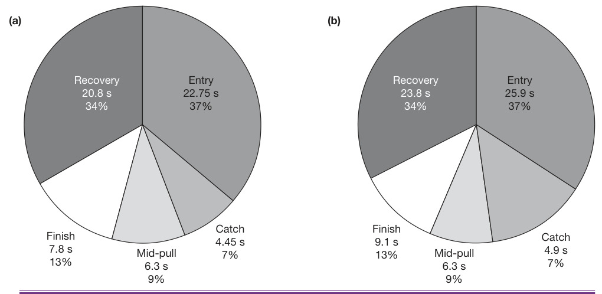
Hình 4.1: Minh họa thời gian tương đối trong cú bơi tự do 100 m (a) với thành tích 61 giây và (b) với thành tích 70 giây
GHI CHÚ NGHIÊN CỨU (RESEARCH NOTES)
Shapiro và cộng sự (1981) đã kiểm tra khái niệm thời gian tương đối bằng cách yêu cầu các đối tượng đi bộ trên máy chạy bộ với các tốc độ khác nhau. Về mặt giả thuyết, thời gian tương đối của các thành phần trong chu kỳ đi bộ không nên thay đổi khi tốc độ tổng thể của máy chạy bộ tăng lên. Kết quả cho thấy ở tốc độ lên đến 6 km/giờ, thời gian tương đối của các thành phần trong chu kỳ bước chân thực sự vẫn không đổi. Tuy nhiên, khi tốc độ tăng lên 8 km/giờ và cao hơn, thời gian tương đối đã thay đổi. Vì các thành viên trong một lớp hành động có đặc điểm thời gian tương đối tương tự, chúng ta có thể suy luận rằng trên 8 km/giờ, một chương trình vận động khác đang kiểm soát hành động. Sự chuyển đổi về đặc điểm thời gian tương đối tương ứng với sự chuyển đổi của người tham gia từ đi bộ sang chạy.
Lực Tương Đối
Người ta cũng đề xuất một mối quan hệ bất biến liên quan đến tỉ lệ lực. Khi lực tổng thể dùng để thực hiện một vận động thay đổi — như khi một bệnh nhân thực hiện động tác nâng chân với các mức tạ khác nhau — thì lực đặc trưng của mỗi thành phần nên thay đổi theo tỉ lệ tương ứng. Nói cách khác, sức căng tạo ra ở mỗi cơ trong suốt vận động nên duy trì tỉ lệ, dù lực tăng lên khi tạ tăng. Khái niệm này được gọi là lực tương đối và đã nhận được một số sự chú ý như một đặc điểm bất biến.
Các Thông Số
Các đặc điểm của một chương trình vận động mang tính linh hoạt và xác định cách thực hiện chương trình được gọi là các thông số. Các thông số dễ dàng được điều chỉnh từ lần thực hiện này sang lần khác để tạo ra các biến thiên của một đáp án vận động mà không làm thay đổi kiểu vận động nền tảng. Tính “thích ứng” này của các thông số cho phép một cầu thủ ở vị trí trung tâm sân (center fielder) ném bóng về base thứ ba từ các khu vực khác nhau của sân, và cho phép một người đi lên xuống các bậc thang có độ cao khác nhau. Bốn thông số đã được đề xuất: thời gian tổng thể, lực tổng thể, hướng vận động, và lựa chọn cơ bắp (Schmidt, 1985; Schmidt & Wrisberg, 2008).
Thời Gian Tổng Thể
Một khía cạnh của vận động có thể dễ dàng thay đổi là thời gian tổng thể hay tốc độ mà một kỹ năng được thực hiện. Các kình ngư có thể tăng tốc độ bơi khi tiếp cận vạch đích, các vận động viên chạy bộ điều chỉnh nhịp độ trong suốt cuộc đua, và người đánh bóng có thể vung gậy với các tốc độ khác nhau, tất cả mà không làm thay đổi kiểu vận động nền tảng.
Lực Tổng Thể
Tương tự, lực tổng thể hay độ lớn (kích thước) của một vận động có thể được điều chỉnh. Bệnh nhân có thể học cách mở nắp các hộp nhựa với kích cỡ khác nhau (ví dụ, nắp hộp bơ thực vật và nắp hộp sữa chua), các cá nhân có thể thực hiện động tác đứng dậy từ ghế với độ cao ghế khác nhau, và các cầu thủ bóng đá có thể thực hiện cả đường chuyền dài lẫn ngắn, tùy theo tình huống.
Hướng Vận Động
Cũng có thể tạo ra các biến thiên về hướng vận động để đạt được mục tiêu vận động. Người chơi phi tiêu có thể ném phi tiêu tới các vị trí khác nhau trên bảng, cầu thủ lacrosse có thể đưa cú sút hay cú ghi bàn vào góc trên hoặc góc dưới của lưới, và một người đi mua sắm có thể với lấy một hộp trên kệ siêu thị hơi lệch sang phải hoặc sang trái so với vị trí của anh ta, tất cả mà không làm thay đổi các đặc điểm bất biến của chương trình vận động (Schmidt & Wrisberg, 2008).
Lựa Chọn Cơ Bắp
Có thể dùng các chi hay các nhóm cơ khác nhau để thực hiện vận động. Điều này đã được thể hiện trong Hoạt động Khám phá 4.1, khi bạn dùng tay, chân và miệng để viết tên mình. Ngoài ra, có nhiều kỹ năng hai bên — những kỹ năng mà người thực hiện có thể thực hiện nhiệm vụ bằng phía thuận hoặc phía không thuận. Ví dụ bao gồm dắt bóng trong bóng rổ và bóng đá, các kiểu vận động trong múa, và thao tác với các nút và khóa kéo. Trong mỗi trường hợp, kiểu vận động nền tảng vẫn không đổi.
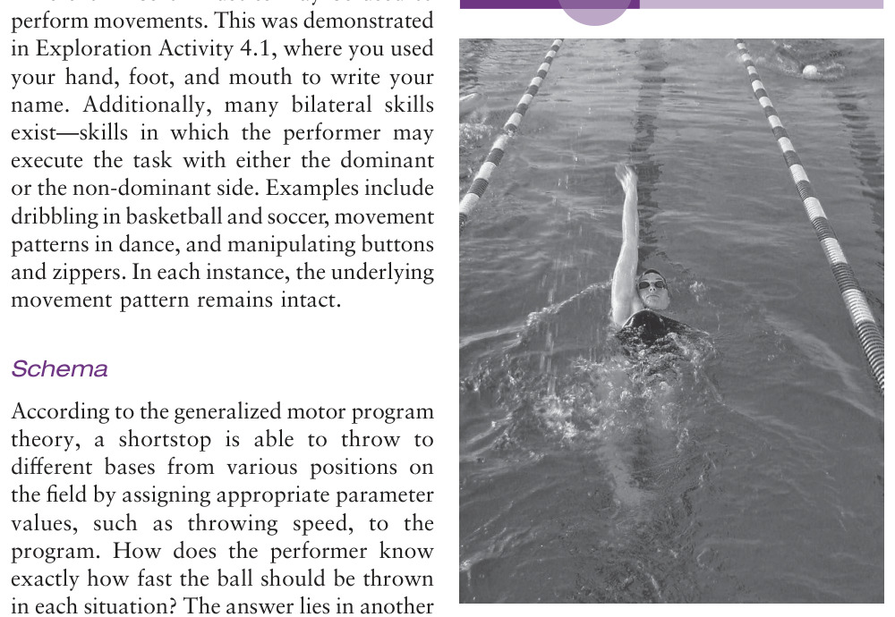
Hình 4.2: Một kình ngư có thể tăng tốc độ bơi tổng thể mà không làm thay đổi các đặc điểm bất biến của chương trình vận động
Lược Đồ
Theo lý thuyết chương trình vận động tổng quát, một cầu thủ vị trí shortstop có thể ném bóng tới các base khác nhau từ những vị trí khác nhau trên sân bằng cách gán các giá trị thông số phù hợp, chẳng hạn như tốc độ ném, cho chương trình. Làm thế nào để người thực hiện biết chính xác bóng nên được ném nhanh đến mức nào trong từng tình huống? Câu trả lời nằm ở một khía cạnh khác trong lý thuyết của Schmidt (1975, 1985), đó là sự phát triển của một lược đồ (schema).
CEREBRAL CHALLENGE 4.1 — Thử thách Trí não
- Một cầu thủ bóng rổ cần truy xuất bao nhiêu chương trình vận động tổng quát từ trí nhớ dài hạn để thực hiện các cú ném bóng từ tám vị trí khác nhau quanh khu vực chữ nhật trước rổ? Hãy biện minh cho câu trả lời của bạn.
- Việc dùng dụng cụ nặng hơn bình thường là một phương pháp huấn luyện phổ biến để xây dựng thể lực trong nhiều môn thể thao. Người ném dùng tạ, đĩa và lao nặng hơn so với khi thi đấu; người ném bóng chày ném những quả bóng nặng hơn; và người đánh bóng dùng gậy nặng hơn bình thường. Kỹ thuật này có liên quan đến việc thao tác các đặc điểm bất biến hay các thông số? Bạn có thể nghĩ ra tình huống hay điều kiện nào mà việc dùng dụng cụ quá nặng có thể cản trở sự phát triển của kỹ thuật đúng? Người thực hành nên tìm những dấu hiệu nào để tránh vấn đề này?
- Một kỹ thuật huấn luyện khác là luyện tập khi vận động viên đang mệt. Dựa trên sự hiểu biết của bạn về các đặc điểm bất biến và các thông số, đây có phải là một ý hay không? Tại sao có hoặc tại sao không?
Một lược đồ là một biểu diễn trừu tượng của một quy tắc hay một tập hợp các quy tắc chi phối vận động rời rạc. Cụ thể hơn, đó là quy tắc hay mối quan hệ hướng dẫn việc ra quyết định khi người học đối mặt với một vấn đề vận động. Lược đồ phát triển như kết quả của những trải nghiệm tích lũy trong một lớp hành động. Mỗi lần thử vận động cung cấp cho người học thông tin về vận động, được chuyển hóa thành một mối quan hệ sẽ được dùng để hướng dẫn các lần thử trong tương lai. Người thực hiện càng thực hiện nhiều vận động, quy tắc càng trở nên phát triển.
Hãy tưởng tượng bạn đến hội chợ của tiểu bang và bắt gặp một trò ném bóng. Mục tiêu của trò chơi là ném một quả bóng mềm vào một giỏ đào sao cho quả bóng không nảy ra ngoài. Tự tin rằng mình có thể đạt được mục tiêu này, bạn mua ba lượt ném. Sau khi quan sát các lần ném của một số người chơi trước đó, bạn quyết định cách tiếp cận tốt nhất là ném từ dưới lên. Ở lần ném đầu tiên, quả bóng bật lại từ đáy giỏ. Ở lần thử thứ hai, bạn quyết định nghiêng người qua thanh chắn và điều chỉnh cú ném, giảm độ cao của quỹ đạo vòm và nhắm nhiều hơn về phía trước giỏ. Một lần nữa, bóng lại nảy ra khỏi giỏ, nhưng lần này với lực nhỏ hơn. Ở lần ném cuối cùng, bạn nghiêng người qua thanh chắn xa nhất có thể và thực hiện cú ném quỹ đạo thấp giống như trước, nhưng với lực nhỏ hơn một chút. Tiếc thay, quả bóng lại nảy ra khỏi giỏ, chỉ còn cách rất sát.
Theo khái niệm lược đồ, trong mỗi lần thử bạn đã trừu tượng hóa một cách vô ý thức bốn thông tin sau:
- Điều kiện ban đầu là những điều kiện hiện diện khi vận động bắt đầu, bao gồm vị trí của chi và cơ thể cùng các điều kiện môi trường khi vận động được bắt đầu. Việc nghiêng người qua thanh chắn xa nhất có thể là một ví dụ về thông tin điều kiện ban đầu.
- Các đặc tả đáp án là các giá trị thông số dùng trong việc thực hiện vận động, chẳng hạn như tốc độ và lực của cú ném của bạn.
- Hậu quả cảm giác bao gồm thông tin cảm giác do đáp án tạo ra hay phản hồi cảm giác của vận động. Cảm giác của cú ném là một ví dụ.
- Kết quả đáp án là mức độ thành công của đáp án đạt được so với mục tiêu hay kết quả ban đầu dự định. Dù không lần thử nào ở lại trong giỏ, kết quả đáp án của cả ba lần ném đều khác nhau. Ở lần thử đầu tiên, quả bóng bật ra khỏi giỏ, cho thấy cú ném của bạn có rất nhiều lực. Ở các lần thử sau, độ lớn của lực đó đã giảm, cho thấy vận động đang tiến gần tới mức cần thiết để đạt được mục tiêu.
Bốn nguồn thông tin này được lưu trữ ngắn gọn trong trí nhớ sau mỗi lần thử vận động, cho phép người thực hiện trừu tượng hóa một số mối quan hệ giữa chúng. Ví dụ, trong lần ném bóng đầu tiên, các điều kiện ban đầu (ví dụ, vị trí bắt đầu), các đặc tả đáp án (bất kể giá trị thông số nào đã được gán cho chương trình), các hậu quả cảm giác (những gì hệ cảm giác của người thực hiện cảm nhận được), và kết quả đáp án (quả bóng bật ra khỏi giỏ) — cùng với mối quan hệ của từng nguồn thông tin với các nguồn khác — đều được đánh giá, dẫn đến một suy luận về cách thực hiện nhiệm vụ thành công. Lược đồ bắt đầu hình thành. Không chỉ quá trình này diễn ra ở mỗi lần thử bổ sung, mà mối quan hệ thu được từ mỗi lần thử còn được hợp nhất với mối quan hệ đã phát triển trong lược đồ hiện có. Vì vậy, độ mạnh của mối quan hệ tổng thể tăng lên với luyện tập. Kết quả là sự phát triển của lược đồ đáp án vận động, được cho là gồm hai mối quan hệ: lược đồ hồi tưởng (recall schema) và lược đồ nhận diện (recognition schema) (Schmidt, 1985).
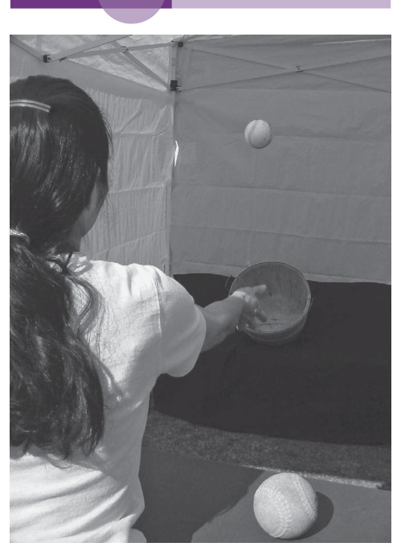
Hình 4.3: Với luyện tập và sự trừu tượng hóa vô ý thức thông tin về các điều kiện ban đầu, các đặc tả đáp án, các hậu quả cảm giác và kết quả đáp án trong mỗi lần thử, bạn phát triển một lược đồ cho kỹ năng
Lược Đồ Hồi Tưởng
Lược đồ hồi tưởng chịu trách nhiệm tổ chức chương trình vận động khởi động và kiểm soát vận động mong muốn. Khi một cá nhân cố thực hiện một vận động, người đó xem xét kết quả mong muốn của vận động đó và các điều kiện ban đầu. Sau đó, một lược đồ hồi tưởng được chọn một cách vô ý thức; sự lựa chọn này dựa trên mối quan hệ giữa kết quả thực tế và các đặc tả đáp án đã phát triển qua những trải nghiệm với các vận động tương tự. Từ mối quan hệ này, người thực hiện xác định các đặc tả cần thiết để đạt được kết quả dự định. Sau đó, người đó thực hiện chương trình vận động theo các giá trị thông số vận động này.
Lược Đồ Nhận Diện
Lược đồ nhận diện chịu trách nhiệm đánh giá một lần thử vận động. Nó được hình thành dựa trên mối quan hệ giữa các điều kiện ban đầu, các kết quả thực tế trong quá khứ và các hậu quả cảm giác trong quá khứ. Một tập hợp các hậu quả cảm giác mong đợi, đại diện cho ước tính tốt nhất về các hậu quả cảm giác của vận động đúng, được tạo ra dựa trên mối quan hệ giữa kết quả thực tế và hậu quả cảm giác. Bằng cách so sánh phản hồi cảm giác thực tế từ vận động đã khởi động với phản hồi cảm giác mong đợi, người thực hiện đánh giá tính đúng đắn của vận động. Khi xuất hiện sự không khớp giữa phản hồi và chuẩn mực về tính đúng đắn, một tín hiệu lỗi được tạo ra. Tín hiệu lỗi cung cấp cho người thực hiện thông tin được dùng để cập nhật lược đồ hồi tưởng. Thông tin bổ sung từ giáo viên hay huấn luyện viên cũng giúp cập nhật lược đồ hồi tưởng.
CEREBRAL CHALLENGE 4.2 — Thử thách Trí não
Một huấn luyện viên khúc côn cầu dùng chiến lược giảng dạy sau. Sau khi dạy học trò cú sút mạnh (slapshot) và cho họ cơ hội phát triển sự hiểu biết căn bản về vận động, huấn luyện viên X đưa ra các chỉ thị sau:
“Dùng kỹ thuật sút mạnh mà chúng ta đã học, hãy thực hiện các động tác được liệt kê dưới đây từ mỗi trong bốn vị trí này: X X X X Lưới. Thứ nhất, hãy sút puck sao cho nó trượt sang phải của lưới. Thứ hai, hãy sút puck sao cho nó trượt sang trái của lưới. Thứ ba, hãy sút puck sao cho nó đi vào lưới.”
Kinh nghiệm này sẽ giúp hay cản trở sự phát triển kỹ thuật cú sút mạnh của các vận động viên? Tại sao có hoặc tại sao không? Hãy dùng lý thuyết lược đồ để ủng hộ câu trả lời của bạn.
Bằng cách liên tục sửa đổi các ước tính về hậu quả cảm giác mong đợi và các đặc tả đáp án, lược đồ hồi tưởng cập nhật các chỉ thị gửi tới cơ bắp; điều này lần lượt dẫn đến các đáp án chính xác hơn ở những lần thử sau. Qua quá trình này, lược đồ trở nên bền vững hơn, và người thực hiện có thể lựa chọn chính xác hơn các đặc tả đáp án hay giá trị thông số phù hợp để đạt được mục tiêu vận động.
Thực Hiện Chương Trình Vận Động
Một khi người học quyết định nên thực hiện vận động nào trong một tình huống nhất định, người đó truy xuất một cách vô ý thức chương trình vận động tổng quát phù hợp từ trí nhớ, dựa trên lược đồ hiện có, và thêm vào đó các giá trị thông số ước tính sẽ đạt được kết quả mong muốn. Vì vậy, các chi tiết của vận động mong muốn được tổ chức từ trước bởi chương trình vận động và được gửi tới phần còn lại của cơ thể để thực hiện. Vận động được kiểm soát như thế nào sau khi chương trình vận động khởi động nó? Chương trình vận động có chứa tất cả thông tin cần thiết để thực hiện hành động từ đầu đến cuối, hay có những điều chỉnh liên tục được thực hiện đối với vận động dựa trên phản hồi do đáp án tạo ra? Câu trả lời cho những câu hỏi này nằm ở các chi tiết của các mệnh lệnh vận động ban đầu.
Trước khi bạn có thể bắt đầu buổi tập trên một máy leo cầu thang, bạn phải chọn từ một số tùy chọn chương trình, chẳng hạn như kiểu đồi hay luyện tập theo khoảng. Một khi bạn chọn chương trình mong muốn, nó sẽ được thực hiện trong khoảng thời gian bạn chỉ định. Nó không thể cảm nhận rằng bạn không thích chương trình đã chọn hay rằng chương trình đó quá dễ hoặc quá khó đối với bạn. Nó chỉ đơn giản chạy hết ti trình của nó. email hoạt động theo cách tương tự. Một khi thông điệp rời hộp thư đi của bạn, nó tự động được gửi. Bạn không thể thay đổi nó; nó sẽ được gửi đúng như lúc nó rời hộp thư đi. Hai ví dụ này minh họa khái niệm điều khiển vòng hở.
Các cơ chế điều khiển vòng hở hoạt động thông qua một hệ thống phân cấp hai tầng, như thấy trong Hình 4.4 (a). Một tầng điều hành hay trung tâm chỉ huy tạo ra các kế hoạch hành động chứa đựng mọi thông tin cần thiết để hoàn thành một đáp án. Những kế hoạch hành động này được thực hiện ở tầng thứ hai — tầng cơ quan chấp hành — bởi các chi và cơ bắp (các cơ quan chấp hành) mà không có sự điều chỉnh. Áp dụng điều này vào vận động con người, đầu vào được tri giác thông qua các quá trình trong não bộ. Một quyết định về cách đáp trả được đưa ra, các chỉ thị thực hiện đáp án đó được gửi tới các cơ bắp qua hệ thần kinh, và đáp án được thực hiện. Phản hồi luôn hiện diện trong lúc vận động, nhưng nó đến quá muộn để điều chỉnh vận động đang diễn ra. Một khi các mệnh lệnh được cấu trúc sẵn được khởi động (gửi tới hệ thần kinh), hành động phải chạy theo kế hoạch. Phản hồi nhận được về lần thử này chỉ có thể được dùng để điều chỉnh các lần thử sau.
Một loại cơ chế điều khiển thứ hai cho phép thực hiện các điều chỉnh sau khi một chương trình đã được khởi động. Đây được gọi là điều khiển vòng kín (xem Hình 4.4 (b)). Một bộ điều nhiệt điều chỉnh nhiệt độ phòng là một ví dụ hay về hệ thống vòng kín. Hệ thống sưởi, một khi được thiết lập, liên tục theo dõi nhiệt độ phòng thực tế và so sánh nó với nhiệt độ mong muốn. Nếu phát hiện sự khác biệt (phòng trở nên quá nóng hoặc quá lạnh), hệ thống tự động thực hiện các điều chỉnh tương ứng bằng cách tắt hoặc bật lò sưởi.
Giống như các hệ thống vòng hở, các hệ thống vòng kín hoạt động theo cách phân cấp, với một điểm khác biệt quan trọng — chúng liên quan đến phản hồi điều chỉnh một hành động đang diễn ra. Thay vì phải tạo ra mọi thông tin cần thiết để hoàn thành đáp án, trung tâm chỉ huy chỉ cần tạo ra một kế hoạch hành động khởi động vận động. Sau đó, thông tin cảm giác phát sinh từ tiến trình của vận động (phản hồi do đáp án tạo ra) được liên tục so sánh với vận động mong muốn, và bất kỳ sự khác biệt nào phát hiện được được gửi tới trung tâm chỉ huy để hiệu chỉnh. Chu kỳ này tiếp tục cho đến khi đáp án hoàn tất. Như vậy, sự khác biệt giữa hệ thống vòng hở và vòng kín là phản hồi đi kèm một vận động có thể được dùng để điều chỉnh một hành động đang diễn ra trong hệ thống vòng kín, nhưng trong hệ thống vòng hở nó chỉ có thể được dùng ở đáp án tiếp theo.
Các hệ thống vòng hở và vòng kín là tiền thân của lý thuyết dựa trên chương trình vận động hiện nay. Các lý thuyết đương đại xem kiểm soát vận động là chức năng của cả cơ chế vòng hở lẫn vòng kín, trong đó các chương trình vận động hoạt động theo cách vòng hở. Về cơ bản, các vận động có kỹ năng được cho là được lên kế hoạch từ trước, được khởi động và được thực hiện với sự điều chỉnh hạn chế, trừ khi thời gian cho phép đưa phản hồi do đáp án tạo ra vào.

Hình 4.4: (a) Mô hình hệ thống điều khiển vòng hở và (b) mô hình hệ thống điều khiển vòng kín
Do đó, trong các vận động nhanh, chương trình vận động được cấu trúc sẵn sẽ kiểm soát vận động từ đầu đến cuối, vì không có đủ thời gian để xử lý phản hồi do đáp án tạo ra và thực hiện các điều chỉnh tương ứng. Đối với các vận động có đủ thời gian xử lý phản hồi, các cơ chế vòng hở kiểm soát sự khởi động của kỹ năng, nhưng điều khiển vòng kín được dùng để tiếp tục vận động đến khi hoàn thành. Cần lưu ý rằng việc tiếp thu kỹ năng ban đầu chủ yếu được chi phối bởi điều khiển vòng kín. Khi mức độ thành thạo kỹ năng tăng lên, sẽ có sự chuyển dịch sang các quá trình điều khiển vòng hở tự động hơn, đặc trưng của thực hiện có kỹ năng.
Bằng Chứng Ủng Hộ Điều Khiển Chương Trình Vận Động
Có ba hướng bằng chứng ủng hộ quan điểm điều khiển bằng chương trình vận động. Thứ nhất, nếu chương trình vận động tổ chức các chi tiết của vận động mong muốn từ trước, thì hợp lý là khi một nhiệm vụ trở nên phức tạp hơn, lượng thời gian cần để tổ chức chương trình vận động cũng phải tăng lên. Henry và Rogers (1960) đã kiểm tra ý tưởng này bằng cách đo thời gian phản ứng của các đối tượng thực hiện ba nhiệm vụ có độ phức tạp khác nhau. Các nhiệm vụ, từ mức độ phức tạp thấp nhất đến cao nhất, là: (1) nhấc ngón tay khỏi một công tắc đang bị ấn xuống, (2) nhấc ngón tay khỏi công tắc rồi với lấy và chụp một quả bóng quần vợt treo cách đó 30 cm, và (3) nhấc ngón tay khỏi công tắc, đánh vào quả bóng quần vợt, đổi hướng để ấn một nút, và kết thúc bằng cách đổi hướng lần nữa để chụp một quả bóng quần vợt khác. Kết quả cho thấy khi độ phức tạp của vận động tăng lên, thời gian phản ứng tăng theo (lần lượt 165 ms, 199 ms và 212 ms). Vì thời gian phản ứng đo khoảng thời gian từ lúc xuất hiện kích thích đến lúc khởi động đáp án (xem Chương 2), những phát hiện này ủng hộ ý tưởng rằng các vận động được lên kế hoạch từ trước.
Cách tiếp cận thử nghiệm thứ hai dùng để kiểm tra khái niệm chương trình vận động liên quan đến việc cắt đứt cảm giác (deafferentation). Cắt đứt cảm giác là một kỹ thuật trong đó các dây thần kinh cảm giác của một chi, chẳng hạn, được cắt đứt bằng phẫu thuật để phản hồi do đáp án tạo ra không thể đến được hệ thần kinh trung ương. Các nghiên cứu ban đầu dạng này xem xét hành vi vận động của khỉ trước và sau khi cắt đứt cảm giác.
- Hãy so sánh và đối chiếu các kỹ năng mở và kỹ năng đóng với các hệ thống điều khiển vòng hở và vòng kín.
- Hãy giải thích điều gì xảy ra trong video tại www.youtube.com/watch?v=lPLFSuoDacQ.
CEREBRAL CHALLENGE 4.3 — Thử thách Trí não
(Taub & Berman, 1968; Polit & Bizzi, 1978). Trong nghiên cứu của Polit và Bizzi, ba con khỉ được huấn luyện cho một nhiệm vụ chỉ vào mục tiêu trước khi trải qua ca cắt đứt cảm giác ở cánh tay. Sau khi cắt đứt cảm giác, chúng được kiểm tra lại với cùng nhiệm vụ chỉ vào mục tiêu. Kết quả cho thấy sau khi cắt đứt cảm giác và mất phản hồi cảm giác từ chi, những con khỉ vẫn có thể di chuyển cánh tay và chỉ đúng vào mục tiêu, càng ủng hộ quan điểm điều khiển bằng chương trình vận động.
Các thí nghiệm khám phá ảnh hưởng của việc một chi bị chặn bất ngờ trong lúc vận động là nền tảng của hướng nghiên cứu thứ ba ủng hộ điều khiển bằng chương trình vận động. Dùng điện cơ đồ (EMG), các nhà nghiên cứu so sánh hoạt động điện ở các cơ trong lúc chi vận động với hoạt động điện ở chính những cơ đó khi cử động của chi bị chặn đột ngột và bất ngờ (Wadman et al., 1979). Các nhà nghiên cứu suy luận rằng nếu một chương trình vận động thực sự tổ chức tất cả chỉ thị để thực hiện một vận động trước khi vận động được khởi động, không phụ thuộc vào phản hồi, thì điện cơ đồ của cơ bị chặn nên tạm thời cho thấy kiểu mẫu tương tự như cơ không bị chặn. Việc so sánh hai điều kiện vận động của chi (không bị chặn và bị chặn) cho thấy đúng là như vậy.
Nhiều cầu thủ bóng chày và bóng mềm, dù không muốn, hẳn đã từng trải qua một ví dụ thực tế về khái niệm này. Cú bóng đổi tốc độ (change-up) đã khiến nhiều người đánh giỏi trông ngốc nghếch khi đứng tại chỗ đánh. Một cú change-up hiệu quả được thiết kế để trông giống như một cú ném bình thường nhưng được điều chỉnh ngay trước khi buông tay, khiến bóng rời tay người ném chậm hơn rất nhiều so với những gì người đánh dự đoán từ động tác vung tay. Trong tình huống này, người đánh chọn chương trình vận động cho cú vung, gán cho nó các giá trị thông số sẽ tiếp xúc thành công với một cú ném tốc độ thường. Một khi chương trình đó được tổ chức và khởi động, nó sẽ chạy theo hướng của nó ngay cả khi người đánh nhận ra người ném đã ném một cú change-up. Theo lý thuyết dựa trên chương trình vận động, để thay đổi nhịp độ của cú vung, người đánh không chỉ phải nhận ra rằng đã có lỗi trong lựa chọn thông số mà còn phải tổ chức lại và khởi động chương trình đã được hiệu chỉnh nhằm đáp ứng yêu cầu của nhiệm vụ. Vì đánh bóng là một vận động nhanh, thường không có đủ thời gian để làm điều này, nên người đánh vung gậy quá sớm.
Tóm Tắt Lý Thuyết Chương Trình Vận Động Tổng Quát
Lý thuyết “lược đồ” của Schmidt (1975, 1985) là một lý thuyết điều khiển vận động vòng hở kết hợp ý tưởng cơ bản về lược đồ (một biểu diễn trừu tượng của các quy tắc chi phối vận động) với ý tưởng về chương trình vận động tổng quát. Lý thuyết đề xuất rằng, đối với một lớp hành động nhất định như cú ném qua vai, chúng ta trừu tượng hóa các thông tin khác nhau từ mỗi trải nghiệm ném bóng mà chúng ta từng có với kiểu ném qua vai (Magill, 1993). Sau đó chúng ta xây dựng các lược đồ cho phép dùng cú ném qua vai trong nhiều tình huống và hoàn cảnh khác nhau.
Lý thuyết lược đồ đề xuất rằng các vận động được tổng quát hóa và được vận hành bởi các quy tắc phức tạp được sửa đổi sau mỗi trải nghiệm vận động. Quy tắc (lược đồ) càng mạnh thì thực hiện càng có kỹ năng. Nhiệm vụ của người hướng dẫn, sau khi kiểu vận động nền tảng đã đạt được, là cung cấp cho người học các hoạt động phù hợp được thiết kế để củng cố lược đồ.
CEREBRAL CHALLENGE 4.4 — Thử thách Trí não
Slater-Hammel (1960) đã đưa ra một minh họa hay về khó khăn chúng ta gặp phải khi muốn dừng một vận động đã được lên kế hoạch. Các đối tượng được yêu cầu nhấc ngón tay khỏi một phím đáp án đúng vào khoảnh khắc kim giây của chiếc đồng hồ họ đang nhìn đi qua số 8. Tuy nhiên, nếu kim giây dừng lại trước khi tới số 8, các đối tượng được hướng dẫn tiếp tục ấn phím đáp án. Kết quả cho thấy khi kim giây dừng lại ít hơn 140 ms trước khi tới mục tiêu, các đối tượng gặp khó khăn trong việc không nhấc ngón tay. Trong hầu hết các trường hợp, các đối tượng không thể ngăn được động tác nhấc ngón tay trong những lần thử mà kim giây dừng lại trước số 8 từ 50 đến 100 ms.
Bạn có thể nghĩ ra ví dụ thực tế nào khác mà bạn bắt đầu một vận động rồi nhận ra rằng mình không nên làm vậy nhưng lại gặp khó khăn trong việc dừng lại? Hãy mô tả một ví dụ.
CEREBRAL CHALLENGE 4.5 — Thử thách Trí não
Hãy trả lời các câu hỏi sau theo lý thuyết lược đồ của Schmidt:
- Bạn đang huấn luyện một vận động viên có một cuộc thi lớn trong ba tuần. Bạn nhận thấy một khuyết điểm trong thực hiện của cô ấy. Bạn có nên sửa khuyết điểm đó không? Tại sao có hoặc tại sao không? Bạn phải đặt những câu hỏi nào để giúp đưa ra quyết định?
- Bạn đang huấn luyện một đội bóng chuyền lớp tám và nhận được phàn nàn về tình trạng đau ở cẳng tay của các cầu thủ do đập bóng. Để giúp các vận động viên, bạn quyết định cho họ đeo băng tay ở cẳng tay khi luyện tập. Đây có phải là một ý hay không? Tại sao có hoặc tại sao không?
- Bạn đang dạy một học phần về bóng rổ — cụ thể là cú ném phạt — cho học sinh trung học cơ sở. Tiếc thay, lớp của bạn có 28 học sinh và phòng tập chỉ có bốn rổ. Ngoài việc thiếu rổ, chỉ có mười quả bóng rổ còn dùng được. Bạn nhớ đã đọc một bài báo ở đại học khuyến khích bạn hãy sáng tạo và dùng thiết bị thay thế để tăng thời gian thực hành. Bạn nảy ra ý định dùng bóng sân chơi ngoài những quả bóng rổ, và dán các mục tiêu lên tường ở độ cao của một rổ bình thường. Những ý này có hay không? Tại sao có hoặc tại sao không?
CÁC LÝ THUYẾT TƯƠNG TÁC ĐỘNG LỰC
Những người ủng hộ các lý thuyết tương tác động lực cho rằng các lý thuyết dựa trên chương trình vận động còn thiếu sót trong việc giải thích sự kiểm soát các vận động phức tạp. Họ cho rằng một kế hoạch do trung tâm chỉ huy tạo ra không thể giải thích được mọi biến thiên và điều chỉnh trong vận động có kỹ năng. Họ còn lưu ý rằng thực tế vận động xảy ra để đáp ứng sự tương tác động lực giữa con người và môi trường không được giải thích.
Lý Thuyết Hệ Thống Động Lực
Lý thuyết hệ thống động lực (Dynamic Systems Theory, còn gọi là lý thuyết kiểu mẫu động lực) cho rằng — thay vì hoạt động theo cách phân cấp với một trung tâm chỉ huy đưa ra chỉ thị được các chi và cơ bắp thực hiện — các kiểu vận động nảy sinh hay tự tổ chức như một chức năng của sự tương tác, luôn thay đổi giữa các ràng buộc của cá nhân (người học), môi trường và nhiệm vụ. Nói cách khác, sự sắp xếp của một kiểu vận động sẽ nảy sinh từ sự tương tác động lực giữa người học, môi trường và nhiệm vụ, thay vì được tạo ra bởi một chương trình vận động (xem Hình 4.5 và hoàn thành Hoạt động Khám phá 4.2).
Các Ràng Buộc
Kiểu mẫu tối ưu của bất kỳ vận động nào được xác định bởi sự tương tác giữa các ràng buộc bên trong đặt lên người thực hiện bởi trạng thái của các hệ thống con của cơ thể, và các ràng buộc bên ngoài do vận động cần thực hiện và môi trường mà vận động đó diễn ra áp đặt (Caldwell & Clark, 1990). Như vậy, ràng buộc được định nghĩa là những ranh giới có ảnh hưởng đến năng lực vận động của một cá nhân (Newell, 1986; Clark, 1995). Dù thuật ngữ này dường như gợi ý một yếu tố mang tính giới hạn hay tiêu cực, nhưng không phải lúc nào cũng vậy. Thay vào đó, ràng buộc nên được hiểu là tất cả các yếu tố, cả giới hạn lẫn tạo điều kiện, trong môi trường luyện tập ảnh hưởng đến tiếp thu kỹ năng và thực hiện (Araújo et al., 2004).
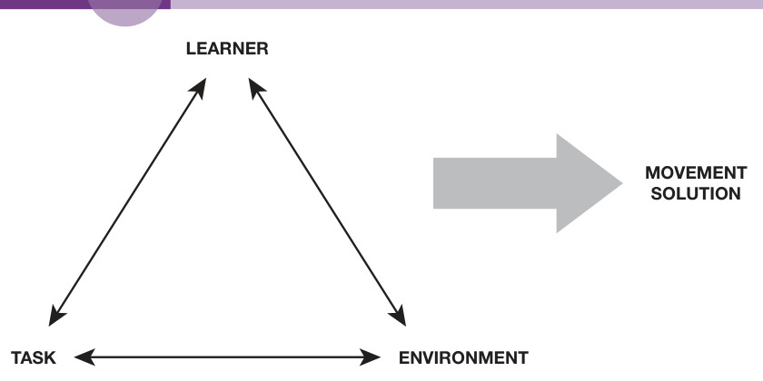
Hình 4.5: Mô hình tương tác của các ràng buộc định hình hành vi vận động
HOẠT ĐỘNG KHÁM PHÁ 4.2 — Tự Tổ Chức
Để minh họa khái niệm tự tổ chức, hãy thực hiện các hoạt động sau trên quãng đường 10 mét, rồi quan sát một người khác thực hiện cùng các hoạt động đó.
- a. Đi bộ với nhịp bình thường khi đi giày chạy bộ.
- b. Đi bộ với nhịp bình thường nhưng đi giày chạy bộ ở chân ngược lại.
- c. Đi bộ với nhịp bình thường khi đi một đôi giày chạy bộ ít nhất hai cỡ quá rộng.
- d. Đi bộ với nhịp bình thường khi đi một đôi giày chạy bộ ít nhất hai cỡ quá chật.
CÂU HỎI:
- Dựa trên trải nghiệm và quan sát của bạn, hãy thảo luận về khái niệm tự tổ chức.
- Hãy suy đoán về những thay đổi bạn có thể thấy trong kiểu dáng đi của một người khi người đó đi (a) trên băng, (b) trên bãi biển cát, (c) băng qua một khúc gỗ, và (d) với một tình trạng hay chấn thương như viêm gân gan chân hay căng cơ gập hông. Hãy đưa khái niệm tự tổ chức vào câu trả lời của bạn.
Ràng buộc, do đó, được định nghĩa là những ranh giới có ảnh hưởng đến năng lực vận động của một cá nhân (Newell, 1986; Clark, 1995). Dù thuật ngữ này dường như gợi ý một yếu tố mang tính giới hạn hay tiêu cực, nhưng không phải lúc nào cũng vậy. Thay vào đó, ràng buộc nên được hiểu là tất cả các yếu tố, cả giới hạn lẫn tạo điều kiện, trong môi trường luyện tập ảnh hưởng đến tiếp thu kỹ năng và thực hiện (Araújo et al., 2004).
Ràng Buộc Cá Nhân
Các ràng buộc cá nhân (còn gọi là ràng buộc cơ thể) bao gồm các đặc điểm sinh học và chức năng của một người (Newell, 1986). Ví dụ bao gồm các thuộc tính cơ thể (ví dụ, hình dáng, chiều cao, cân nặng và thành phần cơ thể), các đặc điểm tính cách (ví dụ, lo âu đặc điểm cao hay thấp, động lực, sự tự tin), các biến số thể lực (ví dụ, độ dẻo, sức mạnh, tốc độ, sức bền, năng lực hiếu khí, sự nhanh nhẹn), và các kỹ năng tri giác và ra quyết định (ví dụ, khả năng dự đoán không gian và thời gian). Những ví dụ khác về ràng buộc cá nhân gồm cắt cụt chi, viêm khớp vị thành niên, hoặc béo phì (Getchell & Gagen, 2006). Hãy hoàn thành Hoạt động Khám phá 4.3 để tìm hiểu thêm về các ràng buộc cá nhân.
Ràng Buộc Môi Trường
Trọng lực, nhiệt độ và ánh sáng tự nhiên là những ví dụ về ràng buộc môi trường vật lý. Trong cú ném lao, chẳng hạn, lực và hướng của gió đặt ra một ràng buộc môi trường cho người thực hiện.
Không tính đến gió sẽ ảnh hưởng tiêu cực đến cú ném. Một ràng buộc môi trường cần được xem xét liên quan đến nguy cơ té ngã ở người cao tuổi là ánh sáng. Hãy nhớ rằng ràng buộc có thể mang tính giới hạn hoặc tạo điều kiện. Nguy cơ té ngã tăng lên trong ánh sáng mờ nhưng giảm đi trong điều kiện chiếu sáng tốt. Nói cách khác, chỉ cần bật đèn cũng có thể ảnh hưởng tích cực đến khả năng di chuyển.
Các yếu tố môi trường xã hội cũng đóng vai trò là ràng buộc. Chúng bao gồm kỳ vọng của xã hội, chuẩn mực văn hóa, sự hiện diện và đặc điểm của khán giả, cũng như mạng lưới gia đình và bạn bè (Haywood & Getchell, 2020). Hoạt động Khám phá 4.3 khám phá các ràng buộc môi trường.
Ràng Buộc Nhiệm Vụ
Bản thân nhiệm vụ đặt ra các ràng buộc đối với việc tiếp thu và thực hiện kỹ năng vận động. Ba loại ràng buộc nhiệm vụ đã được đề xuất (Newell, 1986):
- Mục tiêu. Mọi nhiệm vụ đều được chi phối bởi các mục tiêu liên quan đến sản phẩm hay kết quả của hành động. Ví dụ, mục tiêu của cú nhảy xa là tối đa hóa độ dịch chuyển ngang, và mục tiêu của cú phát bóng quần vợt là giành lợi thế trước đối thủ.
- Quy tắc. Các kỹ năng thể thao thường có quy tắc quy định kiểu phối hợp cụ thể phải được tạo ra. Ví dụ, trong bóng mềm fastpitch đại học, chân của người ném phải luôn tiếp xúc với tấm đệm ném bóng trong suốt giai đoạn khởi động cú ném (cho đến khi trọng tâm được chuyển về phía trước). Quy tắc này ngăn người ném bước lùi lại trước khi ném, điều cho phép tạo thêm động lượng và lợi thế không công bằng. Nếu người ném mất tiếp xúc với tấm đệm bất kỳ lúc nào trong lúc bắt đầu cú ném, trọng tài tại base sẽ phạt cô vì ném bóng bất hợp lệ. Người thực hiện phải thực hiện đúng kiểu phối hợp cụ thể thì động tác mới được gọi là một cú ném hợp lệ.
Những quy tắc khác không quy định kiểu phối hợp của người thực hiện mà thay vào đó quy định phạm vi động lực học của đáp án có thể thực hiện để đạt được kết quả mong muốn. Ví dụ, trong bóng chuyền, bóng phải đi qua lưới khi phát và rơi trong ranh giới sân. Ba loại phát bóng — từ dưới lên, từ trên vai, và nhảy phát — cùng nhiều kiểu vận động khác nhau có thể đạt được điều này; hệ quả là kiểu phối hợp tối ưu cho một cá nhân nhất định trở thành vấn đề nổi bật (Newell, 1986). Vì sự tương tác của các ràng buộc bên trong và bên ngoài xác định sự phối hợp và kiểm soát vận động tối ưu, phải xem xét sự khác biệt cá nhân — không có chiến lược “một kích cỡ phù hợp cho tất cả”. Do các cá nhân thường giải thích các ràng buộc khác nhau, một người có thể tạo ra một loại đáp án trong khi người khác lại tạo ra một vận động khác cho cùng một tập ràng buộc nhiệm vụ. Vì vậy, hai người có thể được đặt trong một tình huống với các ràng buộc môi trường và nhiệm vụ giống hệt nhưng lại tạo ra các kiểu vận động hoàn toàn khác nhau do các ràng buộc bên trong của cơ thể họ.
- Dụng cụ hay máy móc. Loại ràng buộc nhiệm vụ thứ ba phát sinh từ sự tương tác giữa cá nhân với một dụng cụ hay máy móc. Ví dụ bao gồm đi bộ trên máy chạy bộ, thực hiện một số lần kéo xà trên máy hỗ trợ, dùng nạng, trượt tuyết trên tuyết hay trên nước, chèo kayak, mở hộp bằng dụng cụ mở hộp, và thực hiện các bài tập ổn định cơ lõi trên bóng trị liệu. Kích thước, động lực học và trọng lượng của thiết bị thể thao hay các loại thiết bị, công cụ, dụng cụ hoặc máy móc khác so với kích thước cơ thể của cá nhân sẽ ràng buộc vận động. Ví dụ, chỉ cần đổi từ bóng quần vợt tiêu chuẩn sang bóng nén thấp đã được thấy là ảnh hưởng tích cực đến thực hiện thi đấu của trẻ em (Timmerman et al., 2015). Ở chiều ngược lại, các kiểu vận động bù trừ có thể được áp dụng khi dải kháng lực trị liệu quá mạnh, hoặc hiệu quả bài tập có thể giảm khi khách hàng chỉnh yên xe đạp tĩnh quá cao, điều về lâu dài có thể dẫn đến chấn thương. Hoạt động ràng buộc nhiệm vụ trong Hoạt động Khám phá 4.3 sẽ giúp bạn hiểu rõ hơn về cách đặc điểm của các dụng cụ hay thiết bị khác nhau ảnh hưởng đến kiểu vận động tạo ra.
HOẠT ĐỘNG KHÁM PHÁ 4.3 — Vai Trò Của Ràng Buộc
Hãy thực hiện các hoạt động sau để hiểu rõ hơn về vai trò của ràng buộc.
RÀNG BUỘC CÁ NHÂN
- Hãy thử các động tác sau:
- a. Nhảy lên và chạm vào trần nhà.
- b. Thực hiện động tác xẻ chân (splits).
- Mô phỏng mất dây thần kinh giữa (Perry, Rohe, & Garcia, 1992): Đối với hoạt động này, bạn cần một đôi găng tay khám hay phẫu thuật không chứa latex.
- a. Đặt một đồng xu quarter và một đồng nickel vào túi. Đưa tay trần vào túi và tìm đồng quarter.
- b. Bây giờ hãy lộn trái một chiếc găng tay và cắt bỏ ngón út cùng ngón đeo nhẫn. Đeo cả hai găng tay vào cùng một bàn tay, rồi thò vào túi lấy đồng quarter trong khi mô phỏng sự mất chức năng của dây thần kinh giữa ở mức cổ tay.
HOẠT ĐỘNG KHÁM PHÁ 4.3 (tiếp theo) — RÀNG BUỘC MÔI TRƯỜNG
Thiết bị cần có:
- 2 tờ giấy.
- Một quạt điện nhỏ.
Dùng các tờ giấy, hãy gấp hai chiếc máy bay giấy giống hệt nhau. Đánh dấu một điểm bắt đầu trên mặt đất để đảm bảo vị trí xuất phát giống nhau cho mỗi lần thử. Đặt quạt vuông góc với hướng ném, ở phía bạn ném và cách đường xuất phát khoảng 3 mét, như hình minh họa. Bật quạt và ném chiếc máy bay thứ nhất thẳng về phía trước, sao cho nó phải đi xuyên qua luồng gió do quạt tạo ra. Ghi chú quỹ đạo bay thu được. Bây giờ tắt quạt và ném chiếc máy bay thứ hai với chính động tác ném bạn đã dùng cho chiếc thứ nhất. Một lần nữa, ghi chú quỹ đạo bay. Luồng gió của quạt đã ảnh hưởng thế nào đến quỹ đạo của chiếc máy bay thứ nhất? Chiếc thứ hai thì sao? Những điều chỉnh nào sẽ cần thiết để máy bay hạ cánh ngay trước mặt bạn khi quạt đang bật?
RÀNG BUỘC NHIỆM VỤ
Thiết bị cần có:
- 1 quả bóng quần vợt hoặc bóng chày.
- 1 quả bóng chuyền hơi xì.
- 1 quả bóng rổ.
- 1 quả bóng sân chơi lớn.
- Một cánh đồng hay khu vực rộng rãi.
Dùng kiểu ném qua vai đã thành thục, hãy ném từng quả bóng xa nhất có thể vào khu vực trống. Nếu có thể, hãy nhờ một người bạn quay video lại từng lần thử. So sánh và đối chiếu các lần thử. Mỗi quả bóng ảnh hưởng thế nào đến khoảng cách ném? Bạn có dùng cùng kỹ thuật để ném từng quả không? Bạn đã bù trừ những gì, và tại sao? Liệu có ràng buộc cá nhân nào cũng ảnh hưởng đến nhiệm vụ không?
Đường xuất phát — Quỹ đạo của máy bay giấy — 3 mét
Ràng Buộc Và Sự Nảy Sinh Của Các Kiểu Vận Động
Như đã nêu ở trên, các kiểu vận động được cho là nảy sinh hay tự điều chỉnh như một chức năng của các ràng buộc luôn thay đổi đặt lên người học.
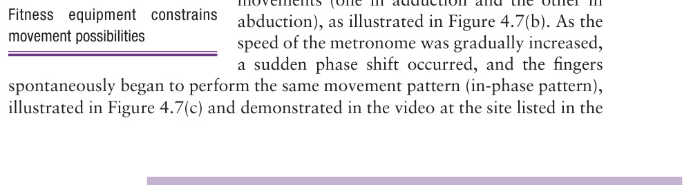
Hình 4.6: Thiết bị tập luyện ràng buộc các khả năng vận động
Vận động, vì vậy, là một chức năng của hệ thống tự tổ chức một cách tự phát và nén các bậc tự do sẵn có thành một đơn vị chức năng duy nhất được thiết kế để thực hiện một nhiệm vụ cụ thể. Nói cách khác, sự sắp xếp của một kiểu vận động sẽ là kết quả của các ràng buộc do một tình huống nhất định áp đặt, thay vì từ các mệnh lệnh hay chỉ thị cụ thể do các chương trình vận động có sẵn cung cấp. Khái niệm này đã được chứng minh trong phần ràng buộc nhiệm vụ của Hoạt động Khám phá 4.3, nơi kiểu vận động dùng để thực hiện động tác ném qua vai thay đổi như một chức năng của loại bóng được dùng.
Khái niệm này còn được ủng hộ thêm bằng bằng chứng thực nghiệm do Kelso và Schöner (1988) cung cấp. Trong nghiên cứu này, người tham gia được yêu cầu đặt tay lên bàn, bắt đầu ở vị trí thể hiện trong Hình 4.7 (a). Sau đó họ được yêu cầu di chuyển các ngón trỏ theo nhịp của một máy đếm nhịp, sao cho cả hai ngón cùng hướng sang trái hoặc sang phải vào cùng một thời điểm. Kiểu vận động này được gọi là kiểu pha ngược (anti-phase), vì hai ngón thực sự thực hiện các cử động đối lập (một khép và một giạng), như minh họa trong Hình 4.7 (b). Khi tốc độ của máy đếm nhịp tăng dần, đã xảy ra một sự chuyển pha đột ngột, và các ngón tay tự phát bắt đầu thực hiện cùng một kiểu vận động (kiểu cùng pha — in-phase), được minh họa trong Hình 4.7 (c) và trình chiếu trong video tại trang web được ghi ở lề.

Hình 4.7: Cử động ngón tay trong thí nghiệm của Kelso và Schöner (1988) minh họa sự chuyển pha tự phát: (a) vị trí bắt đầu; (b) cử động ngón tay pha ngược; (c) cử động ngón tay cùng pha
GHI CHÚ NGHIÊN CỨU (RESEARCH NOTES)
Hiện nay trong môn quần vợt, trẻ em chơi với chiều cao lưới giống như người chơi chuyên nghiệp. Dù chiều cao đó vào khoảng 50 phần trăm chiều cao trung bình của một vận động viên chuyên nghiệp, nhưng lại bằng 70 phần trăm chiều cao của một trẻ 10 tuổi trung bình. Limpens và cộng sự (2018) muốn xem liệu hạ thấp lưới cho phù hợp hơn với thể chất và kỹ năng của trẻ 10 tuổi có làm thay đổi bản chất của trận đấu hay không. Người tham gia là các vận động viên trẻ trình độ cao. Họ được quay phim khi chơi bốn trận đấu khác nhau với cùng một đối thủ, với bốn chiều cao lưới khác nhau tương ứng với một tỉ lệ phần trăm gần đúng của chiều cao trẻ 10 tuổi: 70 phần trăm (0,91 m), 60 phần trăm (0,78 m), 50 phần trăm (0,65 m) và 40 phần trăm (0,52 m). Họ phát hiện rằng chiều cao lưới tiêu chuẩn thực sự hạn chế lối chơi, trong khi việc hạ thấp lưới — cụ thể là các chiều cao 0,65 m và 0,52 m — tạo điều kiện cho những thay đổi tích cực về vị trí chạm bóng, nhiều cú thắng điểm hơn, cải thiện thực hiện phát bóng, và tạo ra lối chơi tấn công hơn nói chung. Một điểm khác thú vị giữa chiều cao 0,65 m và 0,52 m là độ dài của pha bóng. Độ dài pha bóng giảm khi lưới được hạ xuống 0,52 m. Khi các pha bóng ngắn lại, người chơi có ít cơ hội hơn để thực hiện cú đánh. Vì sự phát triển kỹ năng được tạo điều kiện bằng cách tăng cơ hội đánh bóng, các pha bóng dài hơn sẽ tốt hơn cho tiếp thu kỹ năng. Vì vậy, các nhà nghiên cứu khuyến nghị dùng chiều cao lưới 0,65 m cho quần vợt trẻ em.
CEREBRAL CHALLENGE 4.6 — Thử thách Trí não
- Hãy phân loại từng mục sau là ràng buộc cá nhân (I), môi trường (E) hay nhiệm vụ (T):
- a. Chiều cao của bó vỉa hè mà một người dùng xe lăn cần vượt qua.
- b. Bắt một quả bóng bay cao khi nhìn thẳng vào mặt trời.
- c. Có độ dẻo kém.
- d. Những cổ động viên chế giễu, cố làm phân tâm một cầu thủ bóng rổ sắp thực hiện cú ném phạt.
- e. Dùng một quả bóng đá kích thước tiêu chuẩn với trẻ 10 tuổi.
- f. Thiếu động lực.
- g. Khác biệt về vị trí khối tâm giữa nữ và nam (xem www.youtube.com/watch?v=MW0ZTvRCS1o để có ví dụ).
- Một cách tiếp cận mà các huấn luyện viên dùng để phát triển kỹ năng là sao chép các kỹ thuật của những nhà vô địch hiện tại. Dựa trên hiểu biết của bạn về ràng buộc, hãy biện minh hay bác bỏ thực hành này.
Vì một chương trình vận động lẽ ra phải cố giữ các ngón tay vận động lệch pha, lý thuyết chương trình vận động không giải thích được sự chuyển đổi tự phát sang hành vi cùng pha. Từ góc nhìn của lý thuyết hệ thống động lực, sự thay đổi về tốc độ (một ràng buộc nhiệm vụ) khiến hệ thống tự tổ chức, và một hành vi mới nảy sinh.
Những Thay Đổi Trong Các Kiểu Vận Động
Các hệ thống ưa thích các trạng thái ổn định. Những trạng thái ổn định hay kiểu mẫu ưa thích này được gọi là các điểm hút (attractors) và đóng vai trò trong quá trình tự tổ chức. Khi một sự thay đổi được áp đặt lên một hệ thống, tính ổn định của hệ thống đó bị đe dọa. Nếu độ lớn của sự thay đổi đủ cao, trạng thái ổn định của hệ thống sẽ bị thay đổi, và hệ thống sẽ tổ chức lại thành một dạng mới trong những ranh giới do các ràng buộc thiết lập (Thelen & Ulrich, 1991). Trong phần ràng buộc nhiệm vụ của Hoạt động Khám phá 4.3, kích thước của quả bóng đóng vai trò là một thông số điều khiển. Các thông số điều khiển là những biến số, khi thay đổi, dẫn đến những thay đổi tương ứng trong hành vi tập thể của hệ thống. Chúng có thể đẩy một hệ thống không ổn định sang một trạng thái mới ổn định hơn, hoặc ngược lại (Clark, 1995; Wallace, 1996). Hướng, lực, tốc độ và thông tin tri giác là một số ví dụ về thông số điều khiển. Các ràng buộc cũng có thể cản trở hay kìm hãm khả năng thay đổi của hệ thống. Khi các biến số hoạt động theo cách này, chúng được gọi là các yếu tố giới hạn tốc độ (rate limiters). Một sự thiếu hụt sức mạnh do chấn thương sẽ đóng vai trò là yếu tố giới hạn tốc độ đối với khả năng nắm bắt vật thể hiệu quả của người thực hiện. Tuy nhiên, thông qua một chương trình tăng cường sức mạnh phù hợp, mức sức mạnh cầm nắm có thể được tăng lên. Với những mức sức mạnh tăng đó, tính ổn định của trạng thái điểm hút hiện tại giảm tương ứng. Một khi sức mạnh cầm nắm đạt đến mức tới hạn, hệ thống sẽ tự tổ chức và một dạng hành vi mới nảy sinh, thể hiện qua khả năng nắm bắt vật thể được cải thiện của người thực hiện.
MINH HỌA HỆ THỐNG ĐỘNG LỰC
Xem tại www.youtube.com/watch?v=4m-9VweerAg&feature=relmfu
Ennis (1992) gợi ý rằng các điểm hút hoạt động giống như các bồn hay giếng, nơi các hành vi quan sát được tụ lại, và độ sâu của chúng là chỉ báo về tính ổn định của hệ thống (xem Hình 4.8). Các bồn điểm hút sâu là đặc trưng của các hệ thống ổn định. Các kiểu mẫu ổn định thì khó thay đổi. Ngược lại, các bồn nông kém ổn định hơn và dễ bị thay đổi hơn. Những thay đổi trong hành vi vận động là kết quả của một chuỗi chuyển tiếp trong trạng thái ổn định của hệ thống. Những chuyển tiếp này được gọi là các sự chuyển pha (phase shifts). Khi một trạng thái điểm hút nông, sự chuyển pha có thể xảy ra đột ngột. Ví dụ, bằng cách thay thế một cây gậy quá nặng đối với người học bằng một cây phù hợp hơn với trình độ phát triển của họ, sự thay đổi kiểu vận động sẽ có khả năng diễn ra ngay lập tức. Mặt khác, để thay đổi một vận động đã học kỹ (một trạng thái điểm hút sâu), các chiến lược can thiệp phải tạo ra sự mất ổn định ở một điểm hút đã sâu (kỹ thuật hiện tại). Khi sự mất ổn định được tạo ra,

Hình 4.8: Bồn điểm hút nông so với sâu — các trạng thái điểm hút nông dễ thay đổi hơn các điểm hút sâu
sẽ xảy ra sự gia tăng tính biến thiên của vận động (Harbourne & Stergiou, 2009). Ví dụ, khi một vận động viên học sinh chuyển từ trung học phổ thông lên đại học, huấn luyện viên mới có thể cố thay đổi một kỹ thuật đã học kỹ nhằm cải thiện thực hiện trong tương lai. Do những thay đổi được áp đặt, kiểu vận động sẽ bắt đầu phân rã, trở thành sự kết hợp giữa kỹ thuật mới và kỹ thuật cũ. Theo thời gian, kiểu mẫu sẽ tổ chức lại, kỹ thuật mới sẽ bắt đầu chiếm ưu thế, và một sự chuyển pha sang một trạng thái điểm hút mới sẽ xảy ra. Ban đầu, điểm hút mới này sẽ hơi nông; tuy nhiên, với luyện tập tiếp tục, nó sẽ đạt được tính ổn định.
Sư Phạm Phi Tuyến Và Tiếp Cận Dựa Trên Ràng Buộc
Dựa trên các khái niệm của lý thuyết hệ thống động lực và ý tưởng rằng các ràng buộc tương tác định hình hành vi vận động là một khung lý thuyết được gọi là sư phạm phi tuyến (non-linear pedagogy). Theo quan điểm này, người học tìm kiếm trong một dải các giải pháp vận động tiềm năng để tìm chiến lược vận động tối ưu đáp ứng các ràng buộc đã áp đặt (Newell, 1991; Davids, Araújo, & Shuttleworth, 2005). Then chốt cho quá trình tìm kiếm này là việc khám phá cái gọi là không gian công việc tri giác–vận động (perceptual-motor workspace) (Newell & McDonald, 1992). Theo Davids (2006), “Không gian công việc tri giác–vận động đại diện cho bối cảnh luyện tập của người học” (tr. 1004). Khi một cá nhân khám phá các nguồn thông tin tri giác cùng dải các khả năng vận động để khám phá các giải pháp nhiệm vụ đặc thù cho cá nhân đó, người đó đang khám phá không gian công việc tri giác–vận động của chính mình. Shumway-Cook và Woollacott (2017) đưa ra một minh họa xuất sắc cho khái niệm này. Một bệnh nhân đang học lại cách với lấy và nâng một ly sữa phải đối chiếu các manh mối tri giác liên quan — chẳng hạn như vị trí của ly so với cơ thể, kích thước và kết cấu bề mặt của ly, và mức đầy của ly — với các khả năng vận động sẵn có để xác định giải pháp vận động tối ưu nhằm đạt được mục tiêu. Giải pháp vận động này sẽ khác đi tùy theo các ràng buộc do tình huống áp đặt (xem Hình 4.9). Ví dụ, khi ly được tri giác là đầy, giải pháp vận động tối ưu sẽ khác về tốc độ và quỹ đạo so với giải pháp tối ưu khi ly chỉ đầy một nửa.
GHI CHÚ NGHIÊN CỨU (RESEARCH NOTES)
Một thách thức mà những người mắc bệnh Parkinson phải đối mặt là khó khăn trong việc dùng dụng cụ ăn uống. Ma và cộng sự (2008) đã kiểm tra ràng buộc nhiệm vụ là kích thước cán thìa khi múc nước (mô phỏng canh súp) đối với động học vận động của những người mắc bệnh Parkinson. Dùng những chiếc thìa có ba kích cỡ cán khác nhau, 18 người mắc bệnh Parkinson và 18 người tham gia khỏe mạnh cùng độ tuổi đã chuyển mười lần múc nước liên tiếp từ một cái bát lớn đặt trước mặt họ rồi trở lại và vào một cái bát nhỏ hơn đặt gần hơn. Các nhà nghiên cứu thu thập dữ liệu động học ba chiều, ngoài các báo cáo chủ quan về việc chiếc thìa có thoải mái khi dùng hay không. Kết quả cho thấy, đối với những người mắc bệnh Parkinson, cán nhỏ hoặc trung bình tạo ra các cử động nhanh và mượt hơn so với cán lớn. Ngược lại, không thấy khác biệt có ý nghĩa về động học vận động theo kích thước cán ở nhóm đối chứng khỏe mạnh. Ngoài ra, những người mắc bệnh Parkinson có độ mở bàn tay nhỏ hơn đáng kể và dùng nhiều ngón hơn để cầm thìa so với nhóm khỏe mạnh. Nói cách khác, đối với những người mắc bệnh Parkinson, kích thước cán (một ràng buộc nhiệm vụ) “ảnh hưởng không chỉ đến kiểu cầm và thời gian vận động mà còn đến động học của cử động dùng thìa” (tr. 525).
CEREBRAL CHALLENGE 4.7 — Thử thách Trí não
- Theo Haywood và Getchell (2020), hai yếu tố giới hạn tốc độ cho việc đi bộ sớm là sức mạnh cơ bắp và thăng bằng. Hãy suy đoán tại sao những yếu tố này lại được xem là các yếu tố giới hạn tốc độ đối với việc đi bộ cho đến khi mỗi yếu tố đạt đến mức tới hạn.
- Hãy lập danh sách các yếu tố giới hạn tốc độ tiềm năng đối với việc đi bộ ở người cao tuổi.
- Hãy xác định các hoạt động sinh hoạt hằng ngày (ADLs) mà một chi trên bị yếu (một chi bị liệt một phần) có thể đóng vai trò là yếu tố giới hạn tốc độ.

Hình 4.9: Người học tìm kiếm trong không gian công việc tri giác–vận động một giải pháp cho nhiệm vụ nhằm đáp ứng các ràng buộc đã áp đặt
Vì người học tạo ra các giải pháp vận động cụ thể để đáp ứng sự kết hợp đặc thù của các ràng buộc đặt lên họ, sư phạm phi tuyến ủng hộ một tiếp cận dựa trên ràng buộc đối với tiếp thu kỹ năng (Chow, Davids, Button, Shuttleworth, et al., 2007; Button et al., 2021). Tiếp cận dựa trên ràng buộc là một cách tiếp cận lấy người học làm trung tâm, bao gồm việc thao tác có chủ đích các ràng buộc then chốt của nhiệm vụ, của người thực hiện và của môi trường trong luyện tập, nhằm “định hướng việc tiếp thu các kỹ năng vận động và các hành vi ra quyết định” (Renshaw et al., 2010, tr. 117). Cách tiếp cận này còn ủng hộ khái niệm người thực hành buông tay (hands-off practitioner) (Handford et al., 1997; Davids, Button, & Bennett, 2008). Khái niệm này định nghĩa lại vai trò của người thực hành như một người tạo điều kiện thay vì một người cung cấp thông tin. Những người cung cấp thông tin áp đặt đáp án vận động đúng thông qua các chỉ thị bằng lời nói, cấu trúc luyện tập và phản hồi. Ngược lại, vai trò của người thực hành như người tạo điều kiện là xác định và thao tác các ràng buộc then chốt để hướng dẫn sự tìm kiếm giải pháp vận động tối ưu của người học (Davids, Araújo, Shuttleworth & Button, 2003; Araújo et al., 2004).
Nghiên cứu ủng hộ nhận định rằng “việc thao tác các ràng buộc bởi các nhà giáo dục có thể dẫn đến sự tạo ra các kiểu vận động thành công, hành vi ra quyết định và các ý định định hướng việc đạt được mục tiêu nhiệm vụ” (Chow, Davids, Button, Shuttleworth, et al., 2007, tr. 259). Ví dụ, Chow, Davids, Button và Koh (2008) kiểm tra ảnh hưởng của việc thao tác các ràng buộc nhiệm vụ, cụ thể là các tiêu chí nhiệm vụ, đối với việc tiếp thu một nhiệm vụ lốp bóng trong bóng đá. Nhiệm vụ là đá bóng qua một chướng ngại vật có chiều cao tới các vị trí mục tiêu khác nhau. Không có chỉ thị nào khác được đưa ra. Kết quả cho thấy điểm số kết quả được cải thiện và các kiểu đá bóng trở nên nhất quán hơn nhờ luyện tập.
Thêm vào đó, mỗi người tham gia cho thấy một tiến trình thay đổi khác nhau về mức độ tham gia của các khớp ở chân đá, làm nổi bật sự khác biệt cá nhân về phối hợp và kiểm soát khi người tham gia tìm kiếm các giải pháp vận động chức năng dựa trên sự tương tác của các ràng buộc then chốt.
Nakayama (2008) kiểm tra ảnh hưởng của kích thước khu vực thi đấu đối với kỹ năng chuyền bóng của các cầu thủ bóng đá trẻ. Trong nhiệm vụ luyện tập, ba cầu thủ tấn công cố giữ bóng trong khi một hậu vệ cố giành lấy bóng (ba chống một). Trò chơi được tiến hành trong ba khu vực có kích thước khác nhau: 8 m × 8 m, 10 m × 10 m và 12 m × 12 m. Kết quả cho thấy sự khác biệt rõ rệt trong lối chơi do kích thước khu vực. Khu vực 12 m cho phép khoảng cách lớn hơn giữa cầu thủ tấn công và các hậu vệ, và cho tỉ lệ chuyền bóng thành công cao nhất. Các khu vực 10 m và 8 m có những khía cạnh lối chơi tương tự, nhưng khu vực 8 m đòi hỏi lối chơi nhanh hơn. Tác giả kết luận rằng khu vực rộng củng cố sự thành công của người chơi, trong khi khu vực hẹp củng cố sự phát triển kỹ năng và nâng cao việc ra quyết định.
Jackson (2011) kiểm tra việc dùng vợt cầu lông tiêu chuẩn so với vợt được chia tỉ lệ theo cơ thể đối với các kiểu phát bóng của trẻ em. Dữ liệu cho thấy việc dùng thiết bị vừa với kích thước cơ thể mang lại thực hiện phát bóng tốt hơn và áp dụng một kiểu vận động tuần tự trưởng thành hơn. Những cải thiện tương tự về thực hiện và kỹ thuật đã được báo cáo trong quần vợt, cricket, ném, bắt bóng, bóng rổ và bóng chuyền (xem Buszard et al., 2016 để xem tổng quan).
Cuối cùng, Correia, Araújo, Duarte và cộng sự (2012) chứng minh rằng các hành vi ra quyết định nảy sinh như một chức năng của vị trí tương đối giữa các hậu vệ (khoảng cách ban đầu giữa họ). Trong nghiên cứu của mình, 12 cầu thủ trẻ giàu kinh nghiệm thực hiện 80 lần thử một nhiệm vụ luyện tập bóng bầu dục một (tấn công) chống hai (phòng thủ), trong đó khoảng cách bắt đầu giữa các hậu vệ được giảm dần một cách có hệ thống. Phát hiện của họ cho thấy khoảng cách bắt đầu ngắn hơn giữa các hậu vệ liên quan đến tần suất cao hơn các kết quả tắc bóng hiệu quả, tốc độ thực hiện chậm hơn và, sau đó, khoảng thời gian dài hơn giữa lần vượt qua đầu tiên và sự kết thúc của lần thử. Những dữ liệu này càng ủng hộ quan điểm rằng việc thao tác các ràng buộc then chốt trong thiết kế luyện tập có thể định hình hành vi ra quyết định trong huấn luyện thể thao đồng đội.
Ý Nghĩa Thực Tiễn
Các chiến lược để tạo ra môi trường học tập hiệu quả chỉ bị giới hạn bởi trí tưởng tượng của người thực hành. Nên nhấn mạnh các kỹ năng gắn với trò chơi và ngữ cảnh nhằm khuyến khích người học khám phá các nguồn thông tin có thể quan trọng để rèn luyện năng lực ra quyết định và phát triển các kiểu vận động chức năng. Các chiến lược đặt câu hỏi có thể hướng dẫn thêm người học trong quá trình tìm kiếm. Cũng có thể xây dựng các thử thách để khuyến khích người học điều chỉnh hành vi vận động nhằm đáp ứng yêu cầu nhiệm vụ. Bằng cách áp đặt các sửa đổi quy tắc, điều chỉnh quy mô thiết bị, thay đổi kích thước khu vực thi đấu, thao tác các yếu tố tình huống trong lúc thực hiện, chẳng hạn như vị trí tương đối của người chơi hay số lượng cầu thủ tấn công và phòng thủ (Passos et al., 2010), và/hoặc thay đổi tiêu chí nhiệm vụ, người thực hành có thể tạo ra các khả năng hành động cho phép các hành vi mong muốn nảy sinh thông qua quá trình khám phá có hướng dẫn (Williams, 2003).
Cuối cùng, có thể cân nhắc phương pháp Dạy Trò Chơi Để Hiểu (Teaching Games for Understanding — TGfU), một phương pháp giảng dạy dùng trong giáo dục thể chất, hay các sư phạm dựa trên trò chơi khác, vì chúng phản ánh các cấu trúc được nêu trong tiếp cận dựa trên ràng buộc. (Xem Chow et al., 2009 và Renshaw et al., 2016 để có thêm thông tin, và truy cập các trang web bên cạnh để xem các ví dụ về TGfU trong huấn luyện và các trò chơi xâm lấn.)
Tóm Tắt Lý Thuyết Hệ Thống Động Lực, Sư Phạm Phi Tuyến Và Tiếp Cận Dựa Trên Ràng Buộc
Độ phức tạp của hành vi con người đã dẫn đến sự phát triển của cách tiếp cận hệ thống động lực, nhấn mạnh sự tương tác động lực giữa người học, nhiệm vụ và môi trường. Ý tưởng rằng các ràng buộc tương tác định hình hành vi vận động cũng dẫn đến sự phát triển của một khung lý thuyết nhằm hiểu và tạo điều kiện cho tiếp thu kỹ năng, được gọi là tiếp cận dựa trên ràng buộc. Hành vi con người được xem là phức tạp và đại diện cho sự nén các bậc tự do. Sự nén các bậc tự do này cho phép hành vi nảy sinh theo cách tự tổ chức, tính đến sự hợp tác của nhiều hệ thống con trong một bối cảnh nhiệm vụ. Các vận động mới tự tổ chức, và tính biến thiên vận động — trong đó các kiểu mẫu ổn định và mất ổn định như một chức năng của các ràng buộc thay đổi trên hệ thống — là một phần không thể thiếu của quá trình học. Một bệnh nhân đang học lại cách đi bộ sau một chấn thương, chẳng hạn, sẽ thể hiện một kiểu dáng đi nhất định như kết quả của các ràng buộc đặt lên hệ thống của cô ấy. Nếu sức mạnh chân của cô đạt đến mức tới hạn, một giải pháp vận động mới (kiểu dáng đi) sẽ nảy sinh.
DẠY TRÒ CHƠI ĐỂ HIỂU
Xem tại www.youtube.com/watch?feature=player_embedded&v=xx25KgDdHmQ — Huấn luyện
Xem tại www.youtube.com/watch?v=k2I2asqzCtg&feature=related — Các trò chơi xâm lấn
Nhiệm vụ của người hướng dẫn trong quá trình này là xác định và thao tác các ràng buộc theo cách tạo điều kiện cho người học khám phá các kiểu vận động chức năng.
ĐƯA VÀO THỰC HÀNH (PUTTING IT INTO PRACTICE)
Tình Huống Học Tập: Phục Hồi Chấn Thương Bảo Mắt Cổ Chân
Đánh giá tiến triển của Darren cho thấy cậu đã sẵn sàng để đưa các hoạt động thăng bằng và cảm giác tự thân vào chương trình phục hồi chức năng của mình. Trước khi làm như vậy, tuy nhiên, nhà vật lý trị liệu cần xây dựng một hồ sơ tình huống toàn diện hơn.
Kiểm Tra Kiến Thức Của Bạn
Những ràng buộc cá nhân nào phải được xem xét khi thiết kế một chương trình thăng bằng hay cảm giác tự thân cho Darren? Chúng có thay đổi theo thời gian không? Những thay đổi đó có ảnh hưởng thế nào đến thiết kế chương trình? Hãy so sánh câu trả lời của bạn với câu trả lời mẫu tại www.routledge.com/cw/coker.
CEREBRAL CHALLENGE 4.8 — Thử thách Trí não
- Nỗi sợ thường đóng vai trò là một yếu tố giới hạn tốc độ (một ràng buộc cản trở khả năng thay đổi của hệ thống). Trong môn vượt rào, chẳng hạn, người mới bắt đầu thường sợ rằng họ sẽ không vượt qua được cái rào và sẽ bị thương. Nếu bạn đang dạy vượt rào, bạn sẽ dùng những chiến lược nào để khắc phục yếu tố giới hạn tốc độ này? Những yếu tố giới hạn tốc độ khác có thể liên quan? Hãy thảo luận câu trả lời của bạn theo lý thuyết hệ thống động lực và tiếp cận dựa trên ràng buộc.
- Hãy giải thích cách các dụng cụ chỉnh hình (orthotics) hoạt động từ góc nhìn của ràng buộc.
- Dựa trên những gì bạn đã học về hệ thống động lực, tốc độ thực hiện động tác đứng dậy có thể ảnh hưởng đến thực hiện không? Hãy giải thích đầy đủ câu trả lời của bạn.
- Hãy liệt kê năm ràng buộc nhiệm vụ mà một nhà vật lý trị liệu có thể thao tác để ảnh hưởng đến thực hiện động tác đứng dậy.
NHÌN VỀ PHÍA TRƯỚC (A LOOK AHEAD)
Trong chương này và các chương trước, chúng ta đã khám phá các cấu trúc lý thuyết làm nền tảng cho sự phối hợp và kiểm soát vận động con người từ góc nhìn hành vi. Trong các chương còn lại, chúng ta sẽ xem lại những lý thuyết này, vì người thực hành phải xem xét các lý thuyết để đưa ra những quyết định sư phạm hiệu quả. Trong chương tới, chúng ta sẽ xem xét vận động từ góc nhìn thần kinh học; chúng ta sẽ xem xét vai trò của hệ thần kinh trong vận động và những manh mối mà nó cung cấp cho các nhà khoa học về vận động trong câu đố về vận động con người.
ĐIỂM TRỌNG TÂM (FOCUS POINTS)
Sau khi đọc chương này, bạn nên biết:
- Vận động có kỹ năng đòi hỏi người học không chỉ nén các bậc tự do sẵn có (phối hợp) mà còn phải kiểm soát vận động được tạo ra.
- Hai lý thuyết nổi bật, lý thuyết chương trình vận động và lý thuyết hệ thống động lực, đưa ra lời giải thích về cách vận động được phối hợp và kiểm soát.
- Chương trình vận động tổng quát là một biểu diễn trừu tượng của một lớp hành động có thể được điều chỉnh để tạo ra các kết quả đáp án khác nhau.
- Một số yếu tố của chương trình vận động tổng quát (các đặc điểm bất biến) được cho là tương đối cố định qua các lần thử, xác định bản thân chương trình vận động; những yếu tố khác (các thông số) thì linh hoạt hơn, xác định cách chương trình được thực hiện.
- Các thông số cho một tình huống nhất định được xác định theo lược đồ của một người, tức là một biểu diễn trừu tượng của các quy tắc chi phối vận động. Đó là một quy tắc hay mối quan hệ được phát triển qua luyện tập và hướng dẫn việc ra quyết định.
- Kiểm soát vận động được cho là chức năng của cả cơ chế vòng hở lẫn vòng kín, trong đó các vận động được lên kế hoạch từ trước, được khởi động và được thực hiện với sự điều chỉnh hạn chế, trừ khi thời gian cho phép đưa phản hồi do đáp án tạo ra vào.
- Lý thuyết hệ thống động lực phản đối khái niệm một trung tâm chỉ huy trung ương và cho rằng vận động nảy sinh hay tự tổ chức như một chức năng của các ràng buộc đặt lên hệ thống tại bất kỳ thời điểm nào.
- Ba loại ràng buộc đã được xác định: cá nhân, môi trường và nhiệm vụ.
- Theo tiếp cận dựa trên ràng buộc, người học tìm kiếm trong một dải các giải pháp vận động tiềm năng để tìm chiến lược vận động tối ưu đáp ứng các ràng buộc đã áp đặt.
- Vai trò của người thực hành là xác định và thao tác các ràng buộc then chốt để hướng dẫn sự tìm kiếm giải pháp vận động tối ưu của người học.
Thí Nghiệm
Để hoàn thành thí nghiệm của chương này, hãy truy cập www.routledge.com/cw/coker và chọn Lab 4a, Các Chương Trình Vận Động và Lab 4b, Các Ràng Buộc.
CÂU HỎI ÔN TẬP (REVIEW QUESTIONS)
- Hãy định nghĩa các thuật ngữ phối hợp và kiểm soát. Hãy giải thích mối quan hệ giữa chúng.
- Hãy giải thích vấn đề bậc tự do.
- Hai khiếm khuyết chính đã được xác định trong các lý thuyết chương trình vận động ban đầu là gì? Lý thuyết lược đồ của Schmidt giải quyết những vấn đề này như thế nào? Lý thuyết hệ thống động lực giải quyết chúng như thế nào?
- Lược đồ là gì? Lược đồ hồi tưởng và lược đồ nhận diện phối hợp với nhau như thế nào?
- Mối quan hệ giữa các thông số và lược đồ là gì?
- Làm thế nào bạn có thể xác định liệu trượt tuyết trên tuyết và trượt tuyết trên nước có cùng một chương trình vận động hay không? Hãy giải thích câu trả lời của bạn bằng thuật ngữ học vận động và nêu ví dụ cụ thể.
- Ba hướng bằng chứng nào gợi ý sự tồn tại của điều khiển bằng chương trình vận động?
- Hãy so sánh và đối chiếu các hệ thống vòng hở và vòng kín.
- Ràng buộc là gì? Hãy liệt kê ba loại ràng buộc và nêu ví dụ cho từng loại.
- Học khám phá được nhấn mạnh trong tiếp cận dựa trên ràng buộc. Học khám phá là gì, và người thực hành có thể thiết kế luyện tập như thế nào để tạo ra nó?
Chương 5 — Cơ Chế Thần Kinh: Đóng Góp Và Kiểm Soát
Mã DOI: 10.4324/9781003039716-5
Chương 5 — Cơ Chế Thần Kinh: Đóng Góp Và Kiểm Soát
Đó có vẻ là một pha chơi bình thường trong trận mở màn mùa giải của đội Buffalo Bills, nhưng một cầu thủ đã ngã xuống. Các đội ngũ y tế lập tức lao vào sân. Tin tức không mấy tốt lành. Hậu vệ biên (tight end) Kevin Everett được đưa cấp tốc đến bệnh viện; sau đó có thông tin cho biết anh đã bị gãy và trật khớp cột sống cổ khi đang cố thực hiện một pha tắc bóng. Các báo cáo ban đầu cho rằng khả năng anh đi lại trở lại là rất thấp. Nhưng vào ngày 23 tháng 12 năm 2007, bốn tháng sau tai nạn, Everett đã lần đầu tiên đi lại trước công chúng tại sân vận động Ralph Wilson, ngay trước trận đấu sân nhà cuối cùng của Bills gặp New York Giants. Tháng 7 năm 2008, tại lễ trao giải ESPY, anh nhận được tràng pháo tay đứng dậy khi bước lên sân khấu để nhận Giải Jimmy V cho Tin thần Kiên cường. Dù anh sẽ không bao giờ hồi phục hoàn toàn 100 phần trăm, Kevin Everett đã từ chối từ bỏ hành trình hồi phục của mình.
HỆ THẦN KINH
Hệ thần kinh chịu trách nhiệm về các quá trình làm nền tảng cho sự chuẩn bị, thực hiện và kiểm soát vận động. Hệ này có thể được chia thành hai thành phần chính: hệ thần kinh trung ương (CNS) và hệ thần kinh ngoại vi (PNS). Trong CNS — gồm não và tủy sống — thông tin cảm giác được tích hợp, các quyết định được đưa ra, và tín hiệu được tạo ra rồi gửi đến các cơ quan thực hiện (cơ và tuyến) để thực hiện đáp ứng. PNS chủ yếu gồm các dây thần kinh kéo dài từ não và tủy sống, nối liền cơ thể với CNS. PNS có thể được chia tiếp thành một bộ phận cảm giác hay hướng tâm (afferent), phát hiện những thay đổi của môi trường và dẫn các xung thần kinh từ các thụ thể cảm giác khác nhau về phía CNS, cùng với một bộ phận vận động hay ly tâm (efferent), truyền xung đi từ CNS đến các cơ quan thực hiện.
Thụ Thể Cảm Giác
Chúng ta liên tục bị dội bom bởi các kích thích, được phát hiện qua những thành phần của hệ thần kinh gọi là thụ thể cảm giác. Có vô số dạng kích thích, cũng như nhiều loại thụ thể cảm giác, mỗi loại nhạy cảm với một kích thích riêng. Một cách hữu ích để phân loại các thụ thể này là theo vị trí, hoặc cụ thể hơn là theo vị trí của kích thích mà chúng đáp ứng. Thụ thể ngoại thụ (exteroceptor) phát hiện kích thích bên ngoài cơ thể và cung cấp thông tin về môi trường. Chúng nằm ở hoặc gần bề mặt cơ thể, gồm các thụ thể cho áp lực, đau, chạm, nhiệt độ, rung động, thính giác, thị giác, khứu giác và vị giác. Thụ thể nội thụ (interoceptor) phát hiện kích thích từ các tạng bên trong và cung cấp thông tin về môi trường nội tại, dẫn đến những cảm giác như đói và buồn nôn. Cuối cùng, thụ thể tự thân (proprioceptor) nằm trong cơ, gân, khớp và tai trong, cung cấp thông tin về vị trí và vận động của cơ thể bằng cách phát hiện những thay đổi về sức căng cơ, vị trí khớp và thăng bằng.
Đóng Góp Của Cảm Giác Vào Vận Động
Thông tin mà các thụ thể cảm giác chuyển đến CNS để xử lý và giải mã cho phép chúng ta tương tác với môi trường. Đặc biệt quan trọng trong việc tiếp thu và thực hiện các kỹ năng vận động là thị giác và cảm giác tự thân. Chúng ta sẽ tiếp tục khám phá cách hai nguồn thông tin này góp phần vào việc lựa chọn một vận động, điều chỉnh vận động đó, và thậm chí là hiệu chỉnh nó khi cần thiết.
THỊ GIÁC
Trong số vô số thụ thể cảm giác của chúng ta, hệ thị giác chiếm ưu thế. Trên thực tế, như được minh họa trong Hoạt động Khám phá 5.1, sự phụ thuộc của chúng ta vào thị giác mạnh đến mức chúng ta có thể bỏ qua thông tin từ các thụ thể cảm giác khác để ưu tiên nó (Lee & Aronson, 1974). Sự chiếm ưu thế của hệ thị giác còn được phản ánh qua ước tính rằng 70 phần trăm thụ thể cảm giác của cơ thể người nằm ở mắt. Hơn nữa, người ta cho rằng 40 phần trăm vỏ não tham gia vào một khía cạnh nào đó của việc xử lý thông tin thị giác (Marieb, Wilhelm, & Mallatt, 2017). Vì vậy, không có gì ngạc nhiên khi sự quan tâm đến vai trò của thị giác trong việc tạo ra các vận động có kỹ năng không chỉ gia tăng mà còn dẫn đến sự hình thành một ngành nghiên cứu riêng gọi là thị giác thể thao (sports vision), tập trung điều tra những đóng góp của thị giác cho hiệu suất và nhấn mạnh chăm sóc thị giác, chỉnh sửa thị giác, tăng cường thị giác cùng huấn luyện hiệu suất, và chấn thương (Erickson, 2007). Có thể tìm thêm thông tin về thị giác thể thao trên trang web của Hiệp hội Thị giác Thể thao Quốc tế tại https://www.sportsvision.pro/ .
Khả năng nhìn rõ các vật ở những khoảng cách khác nhau và trong nhiều điều kiện ánh sáng khác nhau phụ thuộc vào hoạt động của một cấu trúc phức tạp nằm bên trong và quanh mắt chúng ta, như thể hiện trong Hình 5.1. Sau khi đi vào mắt, các tia sáng được điều chỉnh và hội tụ lên võng mạc, tạo thành một hình ảnh được chuyển đổi thành các xung thần kinh nhờ những tế bào nhạy sáng gọi là thụ thể quang học. Có hai loại thụ thể quang học: que và nón. Que nhiều hơn, không phát hiện bước sóng (màu sắc), và chuyên cho thị giác trong ánh sáng yếu. Chúng cho phép chúng ta nhìn thấy hình dạng và chuyển động, đồng thời phân biệt các sắc thái sáng tối khác nhau, khiến chúng trở thành thụ thể chính dùng cho thị giác ban đêm. Ở chiều ngược lại, nón hoạt động tốt nhất trong ánh sáng mạnh và chuyên cho thị giác màu cùng độ sắc thị giác (visual acuity — độ nét của thị giác). Nón tập trung dày đặc nhất ở điểm vàng (fovea), vùng có độ sắc thị giác tối đa. Với vị trí của điểm vàng, thị giác của chúng ta trở nên rõ và sắc nhất khi nhìn trực tiếp vào một vật.
Các tín hiệu điện do thụ thể quang học tạo ra được gửi đến não qua dây thần kinh thị giác. Tại một điểm gọi là giao thoa thị giác (optic chiasm), một số sợi từ mỗi dây thần kinh thị giác bắt chéo nhau, như minh họa trong Hình 5.2. Nhờ sự bắt chéo này, cảm giác thị giác từ phía bên trái của trường thị giác được gửi sang phía bên phải của não để xử lý, trong khi cảm giác từ phía bên phải được gửi sang phía bên trái.
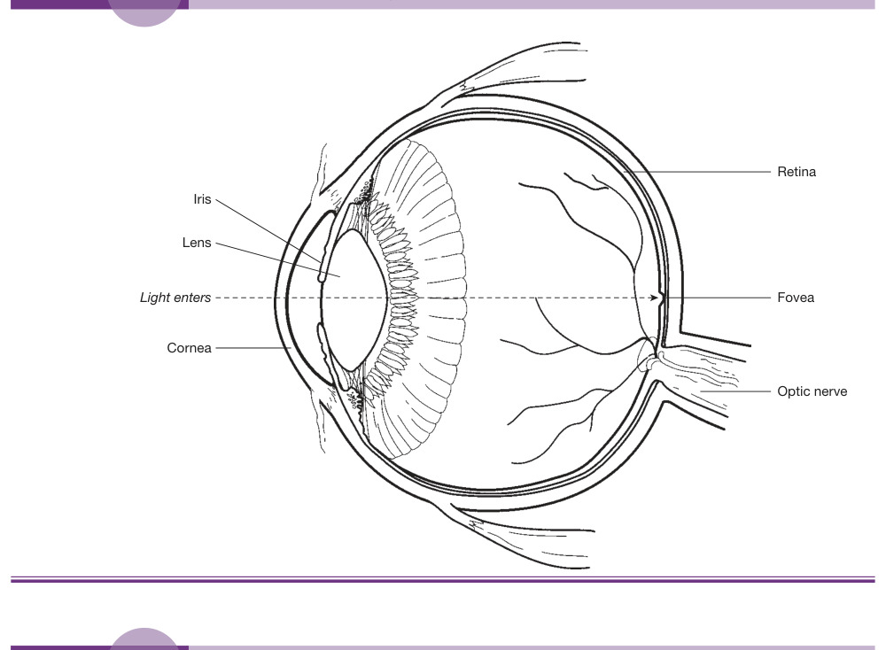
Hình 5.1: Các cấu trúc cơ bản của mắt — Mống mắt, Võng mạc, Thủy tinh thể, Giác mạc, Ánh sáng đi vào, Điểm vàng, Dây thần kinh thị giác.
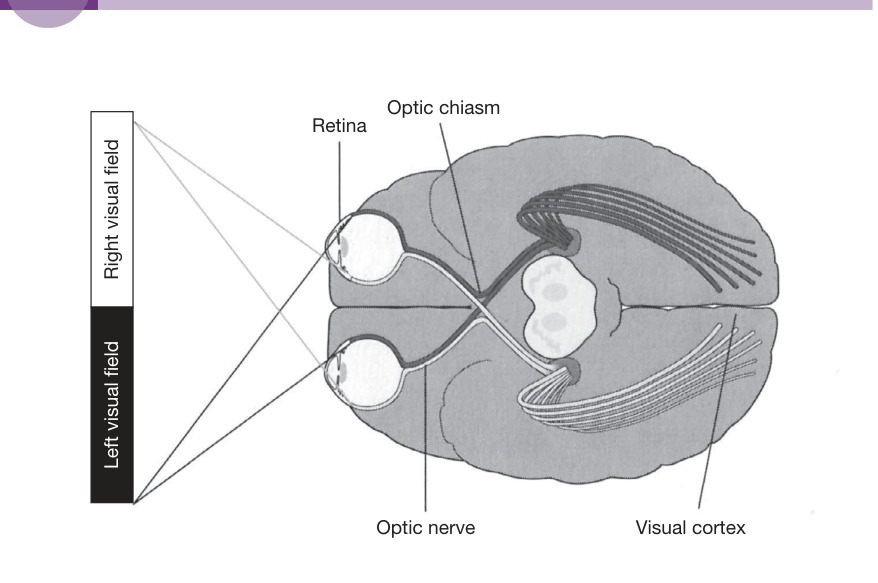
Hình 5.2: Các trường thị giác của mắt và những đường dẫn thần kinh liên quan — Võng mạc, Giao thoa thị giác, Dây thần kinh thị giác, Vỏ não thị giác, Trường thị giác phải, Trường thị giác trái.
Hoạt Động Khám Phá 5.1: Ưu Thế Thị Giác
Hoạt động 1
Thiết bị cần có:
- Bút chì
- Gương
- Một miếng bìa carton (20 x 20 cm hoặc 8″ x 8″)
Quy trình:
Hãy đặt một chiếc gương sao cho sơ đồ bên dưới có thể nhìn thấy trong gương. Giờ đặt đầu bút chì của bạn vào giữa hai đường. Bạn có thể bắt đầu ở bất kỳ đâu. Dùng miếng bìa carton che bàn tay đang cầm bút để bạn chỉ có thể thấy bàn tay và chuyển động của mình qua chiếc gương trước mặt. Chỉ dùng hình ảnh trong gương, hãy lần theo sơ đồ bằng cách di chuyển bút chì quanh hình mà luôn nằm giữa hai đường. Bạn có thể đi theo hướng bất kỳ.
Bạn làm thế nào? Bạn có thể giữ bút trong hai đường và di chuyển quanh hình một cách hiệu quả không?
Hoạt động 2
Bạn sẽ cần một người bạn cùng tham gia hoạt động này. Hãy giang thẳng hai tay về phía trước sao cho song song với sàn nhà. Giờ bắt chéo hai tay qua nhau. Từ tư thế đó, xoay lòng bàn tay để hướng vào nhau và đan các ngón tay lại. Kéo hai tay xuống và về phía ngực. Tiếp tục xoay cho đến khi các khớp đốt ngón tay hướng lên trời.
(tiếp tục)
Khi đã vào tư thế, hãy yêu cầu người bạn chỉ vào một ngón tay của bạn. Điều quan trọng là người đó chỉ chỉ vào ngón tay chứ không chạm vào nó. Nhiệm vụ của bạn chỉ đơn giản là cử động ngón tay mà người bạn đã chỉ vào.
Bạn có nghĩ kết quả sẽ khác đi nếu người bạn chạm vào ngón tay cần cử động trong khi mắt bạn nhắm lại không? Hãy thử xem.
Trong cả hai hoạt động này, một xung đột cảm giác giữa thị giác và cảm giác tự thân đã được tạo ra. Thị giác của chúng ta chiếm ưu thế đến mức ngay cả khi biết thông tin thị giác đang nhận được là không chính xác — chẳng hạn như khi hình ảnh bị đảo ngược trong gương — chúng ta vẫn thường dựa vào nó. Hệ quả là hiệu suất kém đi. Lee và Aronson (1974) đã chứng minh sự chiếm ưu thế thị giác trong nghiên cứu về bức tường di chuyển. Các đối tượng đứng trong một căn phòng đặc biệt nơi bức tường có thể di chuyển nhưng sàn nhà vẫn cố định. Nghiên cứu phát hiện rằng các đối tượng đã điều chỉnh tư thế để bù đắp cho những thay đổi trong thông tin thị giác dù thông tin tự thân không hề thay đổi. Kết quả của nghiên cứu này không chỉ ủng hộ quan niệm về sự chiếm ưu thế thị giác mà còn cung cấp cái nhìn sâu sắc về vai trò của thị giác trong việc duy trì tư thế.
Thị Giác Tiêu So Với Thị Giác Ngoại Vi
Sự tồn tại của hai đường dẫn thị giác riêng biệt đến não đã dẫn đến giả thuyết rằng có hai hệ thống thị giác riêng biệt nhưng hoạt động song song. Hệ tiêu (focal) liên quan đến điểm vàng, có chức năng nhận diện các vật chủ yếu nằm ở vùng trung tâm của trường thị giác. Nói cách khác, nó đóng vai trò “cái gì là cái gì” trong việc tổ chức và thực hiện vận động. Thị giác tiêu hoạt động dưới sự kiểm soát có ý thức (tự nguyện) và do đó “phải được hướng nhanh chóng đến những bộ phận (có khả năng) ‘có ý nghĩa’ nhất của [trường] thị giác, để các vật nằm ở đó có thể được nhận diện với độ trễ tối thiểu” (Müller & Krummenacher, 2006). Chức năng của nó bị cản trở trong điều kiện ánh sáng yếu.
Ngược lại, hệ ngoại vi (ambient) hoạt động ở mức dưới ý thức, được cho là chịu trách nhiệm về định vị và định hướng không gian. Nó đóng vai trò “tôi ở đâu/đối tượng ở đâu” trong việc tổ chức và thực hiện vận động, cung cấp thông tin về tốc độ và hướng mà bạn đang di chuyển, sự ổn định và thăng bằng của các vận động, chuyển động của các vật khác trong môi trường, cùng thông tin về thời điểm tiếp xúc (time to contact) (Wrisberg, 2007). Hệ quả là thị giác ngoại vi đóng vai trò then chốt trong việc dẫn mắt các vận động như với và nắm, cũng như kiểm soát tư thế, di chuyển và các hành động đón bắt. Khác với thị giác tiêu, nó liên quan đến toàn bộ võng mạc, gồm cả trường thị giác trung tâm lẫn ngoại vi, và không bị ảnh hưởng bởi sự thay đổi mức độ ánh sáng.
Trong lúc vận động, rất có thể chúng ta xử lý đồng thời thông tin từ cả hai hệ thống. Ví dụ, khi đạp xe leo núi qua một khu rừng, người đi xe hiếm khi để ý đến loại cây ở bên đường,

Hình 5.3: Một người đi xe đạp leo núi dùng thị giác tiêu để nhận biết những thay đổi trên đường mòn, trong khi nhận biết về các cái cây ở hai bên được tiếp nhận qua thị giác ngoại vi.
nhưng anh ta cần biết những cái cây đó ở đâu để tránh va chạm và đi theo đường mòn thành công. Thị giác ngoại vi hỗ trợ người đi xe trong nhiệm vụ này vì nó cho phép điều chỉnh nhanh chóng các vận động nhờ xử lý tự động thông tin trong trường thị giác thông qua dòng quang học (optic flow). Đồng thời, người đi xe dùng thị giác tiêu để nhận biết những thay đổi trên đường mòn, chẳng hạn như một cái cây đổ ngang đường hay một người đi xe đang ở phía trước. Nó thay đổi từng khoảnh khắc tùy theo quá trình tìm kiếm thị giác mà người đi xe áp dụng để tập trung vào các đặc điểm cụ thể trong môi trường. Khả năng nhận diện các vật này của người đi xe sẽ bị cản trở do độ nhạy tiêu giảm khi rừng rất rậm hoặc kính mát của anh ta quá tối. Hãy thử Hoạt động Khám phá 5.2 để trải nghiệm sự khác nhau giữa thị giác ngoại vi và thị giác tiêu.
Thị Giác Và Hiệu Suất
Thị giác được dùng trong mọi khía cạnh của hiệu suất. Chúng ta không chỉ dùng nó để phát hiện các kích thích môi trường, rồi dùng những kích thích đó để đưa ra quyết định vận động; nó còn cung cấp phản hồi quan trọng mà chúng ta dùng để dẫn dắt hành động của mình. Vì vậy, vai trò của các năng lực thị giác khác nhau trong hiệu suất rất đáng được khám phá.
Ưu Thế Mắt
Thông tin không được xử lý và truyền đến não như nhau ở cả hai mắt. Một trong hai mắt của bạn — mắt chiếm ưu thế — thực hiện những hoạt động này nhanh hơn vài mili giây. Những người có mắt chiếm ưu thế cùng phía cơ thể với tay chiếm ưu thế được coi là ưu thế cùng phía, trong khi những người có mắt chiếm ưu thế ở phía đối diện với tay chiếm ưu thế được coi là ưu thế chéo. Hoạt động Khám phá 5.3 cung cấp một cách đơn giản để xác định mắt nào chiếm ưu thế.
Ưu thế mắt đã nhận được sự chú ý liên quan đến hiệu suất đánh bóng trong bóng chày và bóng mềm. Người ta cho rằng những người đánh bóng có ưu thế chéo có lợi thế vì mắt chiếm ưu thế của họ gần và thẳng hàng hơn với người ném bóng. Dù nghiên cứu chưa xác nhận nhận định này (Milne, Buckholz, & Cardenas, 1995), việc quay đầu để cả hai mắt nhìn rõ quả bóng đã được đề xuất (Knudson & Kluka, 1997). Tuy nhiên, đã có bằng chứng về lợi thế của ưu thế chéo trong các môn đối kháng như đấu kiếm, quyền anh và bóng bàn (Azémar, Stein, & Ripoll, 2008). Các nhà nghiên cứu cho rằng mối quan hệ đối bên giữa mắt chiếm ưu thế và tay đáp trả (ưu thế chéo) tạo ra đường dẫn trực tiếp hơn đến vùng vận động của não; điều này khác với mối quan hệ cùng bên (ưu thế cùng phía), nơi phải xảy ra sự chuyển giao giữa hai bán cầu, đòi hỏi thêm thời gian xử lý (Azémar et al., 2008).
Hoạt Động Khám Phá 5.2: Thị Giác Ngoại Vi So Với Thị Giác Tiêu
Hoạt động 1
Hãy thử đi lại quanh phòng trong khi đọc cuốn sách này. Bạn sẽ có thể làm được điều đó mà không va vào đồ đạc nhờ sự phối hợp của thị giác tiêu và thị giác ngoại vi. Bạn dùng thị giác tiêu để đọc, trong khi thị giác ngoại vi cho phép bạn xác định chướng ngại vật và di chuyển an toàn trong phòng.
Hoạt động 2
Giờ hãy thực hiện lại nhiệm vụ khi đeo một cặp kính mát. Cặp kính mát đã ảnh hưởng thế nào đến hiệu suất của bạn? Làm thế nào để giải thích những kết quả này?
Hoạt động 3
Cho hoạt động cuối cùng, bạn sẽ cần một tờ giấy có ba lỗ. Giữ tờ giấy theo chiều ngang cách mặt khoảng một inch để bạn nhìn qua lỗ ở giữa. Quấn phần còn lại của tờ giấy ra phía sau để chạm vào hai bên đầu. Giờ hãy đi lại quanh phòng lần nữa. Hãy giải thích kết quả.
Nguồn: Shea et al., 1993
Hoạt Động Khám Phá 5.3: Ưu Thế Mắt
Tìm một vật nhỏ, chẳng hạn như một chiếc đồng hồ, trên tường. Đứng ngay trước vật đó, cách khoảng 10 feet. Khi đã ở vị trí này, hãy dùng tay tạo một cửa sổ tam giác nhỏ bằng cách chồng ngón cái và các ngón tay lên nhau. Duỗi hai tay về phía bức tường sao cho bạn nhìn thấy vật qua cửa sổ tam giác của mình, như trong hình minh họa. Giờ hãy nhắm một mắt rồi mở ra. Lặp lại với mắt kia. Mắt chiếm ưu thế là mắt mà vật vẫn nằm trong cửa sổ tam giác.
Spotting (Định Tầm Nhìn)
Spotting là kỹ thuật được dùng khi thực hiện các kỹ năng xoay người (ví dụ trong múa, nhảy cầu, thể dục dụng cụ và trượt băng nghệ thuật) nhằm giảm chóng mặt liên quan đến việc xoay và giúp người thực hiện giữ được phương hướng. Trong spotting, sự xoay đầu bị trì hoãn so với sự xoay của cơ thể. Điều này đạt được bằng cách dồn hoặc cố định sự chú ý thị giác vào một điểm cụ thể. Một khi cơ thể của cá nhân đã quay đến mức bắt đầu mất dấu mốc đó, đầu sẽ nhanh chóng quay sang phía đối diện để tái tập trung vào điểm mục tiêu.
Để biết thêm thông tin và các bài tập học cách spotting, truy cập https://ballroomdancers.com/Learning_Center/view_article.asp?artID=49281 .
Di Chuyển
Để di chuyển an toàn qua các địa hình khác nhau, thị giác cung cấp thông tin được dùng để điều chỉnh việc đi lại cả từng bước một lẫn trong việc lập lộ trình (Patla, 1997). Khi chúng ta đi lại trong thế giới của mình, các vật và bề mặt trong trường thị giác trôi chảy quanh ta. Ví dụ, khi bạn lái xe tiến đến và đi qua một tấm biển, tấm biển dường như to dần khi nó di chuyển từ trung tâm tầm nhìn ra hai bên, cho đến khi không còn nằm trong tầm nhìn nữa. Chuyển động thị giác được cảm nhận này của các vật khi người quan sát di chuyển tương đối so với chúng được gọi là dòng quang học. Dòng quang học giúp chúng ta đánh giá mình gần các vật đến mức nào và tiến đến chúng nhanh thế nào, đồng thời chúng ta dựa vào nó để dẫn dắt việc di chuyển (Gibson, 1950; Warren et al., 2001).
Chúng ta cũng dựa vào chức năng chuyển tiếp (feedforward) của thị giác trong điều chỉnh di chuyển. Như Vickers (2007) đã lưu ý, “trong lúc di chuyển, trường thị giác phía trước thay đổi liên tục, và trong mỗi trường thị giác có một số mục tiêu và vị trí thị giác cần được chú ý để đi lại an toàn” (tr. 144). Điều khiển chuyển tiếp cho phép thông tin, chẳng hạn như kích thước của một vật hoặc chi tiết của địa hình, được gửi đi trước chuyển động nhằm chuẩn bị hoặc điều chỉnh chuyển động từ trước. Ví dụ, khi một người đi lên một ngọn đồi dốc, anh ta điều chỉnh độ dài sải chân, độ nghiêng cơ thể và sự vung tay từ trước để vượt qua địa hình và độ dốc của ngọn đồi.
Điều khiển chuyển tiếp cũng được dùng cả để tiếp xúc lẫn để tránh các vật. Lee, Lischman và Thomson (1982) đã chứng minh cách các vận động viên nhảy xa dùng tau để điều chỉnh độ dài sải chân trong giai đoạn chạy đà. Bên cạnh việc dùng tau, người thực hiện dùng thị giác để cung cấp thông tin dự báo cho việc vượt chướng ngại vật bằng cách cố định vào các vật từ rất lâu trước khi đến gần chúng (Hollands, Patla, & Vickers, 2002; Patla & Vickers, 1997). Patla và Vickers cũng phát hiện rằng thời gian và tần suất cố định là hàm của độ cao của vật khi nhiệm vụ liên quan đến bước qua một chướng ngại vật. Thông tin dự báo về đặc tính đàn hồi của bề mặt cũng được cho là gây ra những thay đổi về vị trí đặt chân, tư thế cơ thể và vận tốc (Patla, Prentice, & Unger-Peters, 1993). Để xem xét đầy đủ hơn vai trò của thị giác trong kiểm soát di chuyển, xem Patla (1997).
GHI CHÚ NGHIÊN CỨU
Vì thông tin thị giác được coi là then chốt cho việc đi lại an toàn trong môi trường, Miyasike-daSilva, Allard và McIlroy (2011) quan tâm đến việc chúng ta nhìn vào đâu khi đi lên và đi xuống cầu thang. Cụ thể, họ quan tâm đến hành vi nhìn liên quan đến các chuyển tiếp giữa mặt đất và cầu thang, việc phát hiện tay vịn, và sự khác biệt giữa môi trường quen thuộc và không quen thuộc. Mười một người tham gia đã thực hiện năm lần thử, trong đó họ tiến đến rồi đi lên và đi xuống một bộ cầu thang gồm bảy bậc khi đeo thiết bị theo dõi mắt gắn trên đầu. Trái với giả thuyết của các nhà nghiên cứu, không thấy khác biệt về tần suất cố định giữa các bậc chuyển tiếp (hai bậc trên cùng và dưới cùng) và các bậc ở giữa. Phát hiện này gợi ý rằng các bậc chuyển tiếp không đòi hỏi tăng cường hành vi nhìn để vượt qua. Hơn nữa, tay vịn hiếm khi là mục tiêu của sự cố định, và sự quen thuộc với môi trường không có ảnh hưởng gì. Tuy nhiên, người tham gia đã dùng sự cố định của mắt để trích xuất thông tin dẫn dắt việc đặt chân. Trong lúc đi xuống cầu thang, họ hướng tầm nhìn vào khoảng bốn bậc phía trước vị trí của mình; trong lúc đi lên, tầm nhìn của họ nằm giữa hai đến bốn bậc phía trước trên đường đi.
Với Và Nắm
Hai nhiệm vụ — nhắm bằng tay (manual aiming) và cầm nắm (prehension) — cho phép chúng ta tương tác với môi trường. Nhắm bằng tay liên quan đến việc đưa tay đến một vị trí mục tiêu, trong khi cầm nắm gồm việc với tới, nắm và thao tác một vật để đạt được mục tiêu. Cả hai đều dùng thị giác để phối hợp và kiểm soát vận động. Ban đầu, thị giác được dùng để đánh giá các điều kiện điều chỉnh của tình huống, chẳng hạn như vị trí của mục tiêu hay vật, cũng như kích thước, vị trí và hướng của vật nhằm xác định quỹ đạo với tới. Khi bàn tay ban đầu được hướng về phía mục tiêu, tốc độ và độ dịch chuyển của chi được theo dõi và thông tin về thời điểm tiếp xúc (tau) được thu nhận. Ở giai đoạn cuối của vận động nhắm, phản hồi thị giác cho phép người thực hiện đánh giá độ chính xác của vận động và thực hiện mọi điều chỉnh cần thiết để hoàn thành nhiệm vụ (ví dụ chạm vào một biểu tượng trên điện thoại thông minh). Khi mục tiêu hành động đòi hỏi nắm và thao tác vật, thị giác hỗ trợ xác định đặc điểm của cách nắm, gồm kích thước và hình dạng của bàn tay (độ mở — aperture) cần thiết để thực hiện thành công.
Các nghiên cứu đã chỉ ra rằng sự hình thành cách nắm không chỉ phụ thuộc vào đặc điểm của vật như đã nêu ở trên, mà còn vào hoạt động định thực hiện (Jeannerod, 1996; Castiello, 2005). Nói cách khác, các vận động với và nắm sẽ khác nhau tùy theo ràng buộc và mục tiêu của nhiệm vụ. Vì vậy, người thực hành không chỉ nên đưa vào chương trình huấn luyện lại kỹ năng với và nắm cho bệnh nhân nhiều vật có kích thước, hình dạng, trọng lượng và kết cấu khác nhau, mà còn cả nhiều nhiệm vụ khác nhau. Ví dụ, bệnh nhân có thể xếp các quân domino thành nhiều kiểu khác nhau, chuyển ngũ cốc Cheerios từ một mặt phẳng vào một cái bát, với một vật trên mặt bàn rồi đặt lên kệ hoặc vào giỏ mua sắm, hoặc với và nắm một túi đậu rồi ném vào mục tiêu. Truy cập www.youtube.com/watch?v=M7ovIDE8vhY để xem video về một bệnh nhân thực hiện các nhiệm vụ với và nắm khác.
CẢM GIÁC TỰ THÂN
Cảm giác tự thân (proprioception) là dòng thông tin cảm giác liên tục được nhận từ các thụ thể nằm trong cơ, gân, khớp và tai trong, liên quan đến vận động và vị trí cơ thể. Nhiều thụ thể cùng tham gia. Cơ quan gân Golgi (Golgi tendon organ), chẳng hạn, là thụ thể tự thân nằm tại điểm gân nối với cơ. Khi sức căng được tác động lên gân, cơ quan gân Golgi chuyển thông tin cảm giác tương ứng (cường độ co cơ) đến CNS. Một trong những chức năng của chúng là bảo vệ gân và các cơ liên quan khỏi tổn thương do căng quá mức.
Thoi cơ (muscle spindle), một loại thụ thể tự thân khác, nằm giữa các sợi cơ xương trong bụng cơ. Khi một cơ bị kéo dãn, thoi cơ gửi tín hiệu đến CNS cho biết mức độ và tốc độ thay đổi chiều dài của cơ. Thoi cơ cũng có thể gây ra một sự co cơ phản xạ gọi là phản xạ kéo dãn (stretch reflex), góp phần vào lực co có thể tạo ra trong lúc thực hiện kỹ năng. Phản xạ kéo dãn được tạo ra khi một cơ bị kéo dãn ngay trước khi co lại. Ví dụ, như trong nhiều kỹ năng đánh, cú thuận tay trong quần vợt được dẫn trước bởi một cú vung tay về sau làm dãn các cơ liên quan và thiết lập
một phản xạ kéo dãn. Nếu thiếu phản xạ kéo dãn này, động lực học của kỹ năng sẽ thay đổi, và người thực hành nên ghi nhớ điều đó khi thiết kế trải nghiệm học tập.
Hình 5.4: Cảm giác tự thân giúp người đi bộ đường dài điều chỉnh khi băng qua một khúc gỗ.
Thụ thể cảm giác khớp (joint kinesthetic receptor) nằm trong và quanh các khớp hoạt dịch, đáp ứng với áp lực, gia tốc và giảm tốc, cũng như sức căng quá mức lên khớp. Thụ thể khớp cung cấp phản hồi về việc vận động có quá chậm, quá nhanh hay sai hướng hay không (Kreighbaum & Barthels, 1996).
Cuối cùng, bộ tiền đình (vestibular apparatus) là một nhóm tập hợp các cơ quan thụ thể trong tai trong đáp ứng với những thay đổi về tư thế và thăng bằng. Các cơ quan bóng otolith theo dõi vị trí của đầu, cung cấp thông tin cảm giác về thăng bằng tĩnh và việc duy trì tư thế cơ thể khi đứng yên. Chúng cũng góp phần vào thăng bằng động — tức duy trì vị trí cơ thể để đáp ứng với vận động — bằng cách theo dõi những thay đổi về gia tốc tuyến tính. Bạn đã từng trải nghiệm thăng bằng động khi di chuyển trong thang máy, khi cảm thấy mình đang đi xuống trong lúc thang máy bắt đầu đi lên. Một khía cạnh thứ hai của thăng bằng động liên quan đến gia tốc góc của đầu, chẳng hạn như khi một vận động viên trượt băng nghệ thuật thực hiện cú xoay. Các mào (cristae) trong ống bán cung của tai trong chịu trách nhiệm theo dõi những thay đổi về gia tốc góc của đầu. Để hiểu rõ hơn về cảm giác tự thân, hãy hoàn thành Hoạt động Khám phá 5.4 và xem video tại www.youtube.com/watch?t=2&v=A1BVp5aivtA .
Điều gì sẽ xảy ra nếu chúng ta không có cảm giác tự thân? Một người đàn ông người Anh, Ian Waterman, biết rõ câu trả lời. Năm 19 tuổi, một loại virus hiếm gây bệnh đã tấn công hệ thần kinh của anh, làm cho cảm giác tự thân của anh trở nên vô dụng. Cơ của anh vẫn hoạt động, nhưng anh không còn có thể cảm nhận vị trí và vận động của cơ thể nếu không nhìn trực tiếp vào các khớp và chi của mình (Cole, 1995; Azar, 1998). Anh đã phải học cách dựa vào thị giác để kiểm soát các vận động của mình, vì đây đã trở thành nguồn phản hồi duy nhất. Để đánh giá trọng lượng của một vật đang nhặt lên, chẳng hạn, Waterman phải quan sát cách bàn tay mình phản ứng thay vì nhận phản hồi từ các thụ thể tự thân về mức độ dãn trong gân và cơ do trọng lượng gây ra. Tay anh cử động càng nhanh và càng cao thì vật càng nhẹ. Sự thích nghi này cũng được chứng minh trong một nghiên cứu yêu cầu một cá nhân bị tước đoạt thông tin tự thân phải đánh giá các trọng lượng khác nhau
(Fleury et al., 1995). Khi có thị giác, cá nhân đó có thể phân biệt được các trọng lượng sai biệt nhau đến 10 g. Khi mắt nhắm lại, khả năng đánh giá trọng lượng của người này bị suy giảm đáng kể. Những sự thích nghi tương tự cũng xảy ra ở các phi hành gia trong không gian. Không có trọng lực, hệ tiền đình gặp khó khăn trong việc cảm nhận đâu là hướng lên! Để tìm hiểu thêm, hãy truy cập trang web bên lề.
Hoạt Động Khám Phá 5.4: Cảm Giác Tự Thân
- Để minh họa việc sử dụng cảm giác tự thân, hãy nhắm mắt và giang hai tay sang hai bên tạo thành chữ T. Giờ hãy dùng ngón trỏ của tay chiếm ưu thế chạm vào mũi. Lặp lại với tay không chiếm ưu thế. Hãy suy luận xem vì sao bài tập này đôi khi được dùng để kiểm tra những người lái xe bị nghi ngờ say rượu.
- Một lần nữa, hãy nhắm mắt. Nâng chân lên sao cho đùi song song với sàn nhà. Mở mắt và kiểm tra vị trí của chân. Lặp lại bài tập, đưa tay đến vị trí song song với sàn. Độ chính xác trong định vị của bạn thế nào? Bạn đã thực hiện hoạt động này ra sao khi không có thị giác?
- Hãy tìm hiểu một chuỗi bài tập trị liệu phù hợp nhằm cải thiện cảm giác tự thân cho một nhóm đối tượng cụ thể hoặc một vùng bị thương. Soạn một bài thuyết trình để chia sẻ với cả lớp.
Cảm Giác Tự Thân Và Hiệu Suất
Khi kết hợp lại, các thụ thể tự thân có chức năng “làm cho hệ thống kiểm soát vận động hiệu quả và linh hoạt hơn trong việc điều chỉnh các vận động hướng đến mục tiêu” (Park & Toole, 1999, tr. 645). Trước khi một vận động được khởi phát, cảm giác tự thân cung cấp thông tin về vị trí ban đầu của cơ thể và các chi, làm cơ sở cho việc lập trình các lệnh vận động.
Một khi được khởi phát, vận động được liên tục đánh giá mức độ đúng đắn bằng cách so sánh phản hồi tự thân với mục tiêu đã định. Nếu hai bên không khớp nhau, một lỗi sẽ được phát hiện. Tại thời điểm đó, những điều chỉnh cần thiết để sửa vận động phải được xác định, khởi phát và hoàn tất trước khi đáp ứng kết thúc. Như chúng ta đã thấy ở các hệ thống vòng hở và vòng kín (xem Chương 4), sự thành công của quá trình này phụ thuộc vào thời gian sẵn có. Nếu một vận động diễn ra quá nhanh, phản hồi do đáp ứng tạo ra sẽ được dùng để điều chỉnh ở lần thử tiếp theo.
Như đã nêu ở trên, mục tiêu đã định của vận động đóng vai trò là khung tham chiếu để phát hiện lỗi, nhưng mức độ hiểu biết của người học về mục tiêu đó phụ thuộc vào trình độ kỹ năng của họ. Vì người mới học vẫn đang cố hình thành ý niệm về cách một vận động nên được thực hiện, khung tham chiếu cho vận động đúng của họ vẫn chưa được thiết lập. Ở chiều ngược lại, ngay khi quả bóng rời khỏi tay của một người ném phạt ném rổ có kỹ năng, anh ta có thể biết cú ném có tốt hay không qua cảm giác tại thời điểm buông bóng
Qua đó, thiết kế luyện tập tạo cơ hội trải nghiệm nhiều tư thế và vận động khác nhau trong nhiều môi trường đa dạng có thể giúp người học phát triển khung tham chiếu cho một vận động hay kỹ năng (Kreighbaum & Barthels, 1996). Bên cạnh đó, đối với các môn thể thao và nhiệm vụ phụ thuộc nhiều vào thông tin tự thân thay vì thông tin thị giác để thành công, Gottwald et al. (2020) đề xuất rằng người thực hành nên dùng chỉ dẫn và phản hồi gợi ra tiêu điểm chú ý nội tại (tập trung vào chuyển động của cơ thể).
Thử Thách Não Bộ 5.1
- Hãy suy luận xem vì sao nhiều người thực hành đưa vào các chiến lược tập trung sự chú ý của người học vào cảm giác liên quan đến một vận động.
- Một trong những chiến lược đó là dùng dụng cụ có trọng lượng (gậy bóng chày, gậy đánh gôn, bóng chày). Hãy liệt kê các thiết bị khác được thiết kế để tăng cường cảm giác liên quan đến vận động.
Thử Thách Não Bộ 5.2
Một cách phổ biến để dạy một em nhỏ cách vung gậy bóng chày là đứng cạnh em và hướng dẫn thủ công người đánh đi qua các vận động. Kỹ thuật này, được gọi rất đúng là hướng dẫn thủ công (manual guidance), cũng thường được dùng trong môi trường trị liệu. Ý tưởng của hướng dẫn thủ công là đưa người học đi qua mô hình hoặc phạm vi chuyển động mong muốn để họ có thể trải nghiệm cảm giác tương ứng.
Tuy nhiên, kỹ thuật này có một vấn đề cố hữu. Hãy đoán xem vấn đề đó có thể là gì. Hãy tự thử chiến lược này trước khi đưa ra câu trả lời. Dựa trên câu trả lời của bạn, bạn sẽ tuân theo những điều kiện nào khi áp dụng chiến lược này?
Thăng Bằng Và Kiểm Soát Tư Thế
Kiểm soát tư thế liên quan đến nhiều đầu vào cảm giác báo cho CNS biết cơ thể đang ở đâu trong không gian. Cụ thể, cá nhân dựa vào các hệ thống thị giác, tiền đình và cảm giác da cơ thể/tự thân để giữ thăng bằng và kiểm soát tư thế. Thông thường, sự tích hợp của các nguồn thông tin khác nhau này diễn ra liền mạch, cho phép chúng ta có cảm giác định hướng và vận động. Khi thông tin về vị trí cơ thể từ một hệ thống không có sẵn, không chính xác hoặc gây nhiễu, đóng góp của các hệ thống khác có thể được tái trọng số hóa hoặc điều chỉnh để bù đắp. Ví dụ, đứng trên một bề mặt mềm thay vì bề mặt cứng làm giảm độ tin cậy của thông tin cảm giác da cơ thể. Hệ quả là CNS phụ thuộc ít hơn vào đầu vào cảm giác da cơ thể và nhiều hơn vào thông tin thị giác và tiền đình. Tương tự, chúng ta điều chỉnh khi đi qua một căn phòng mờ tối, tăng cường dựa vào thông tin tiền đình và cảm giác da cơ thể để bù cho đầu vào thị giác suy giảm. Sự tái trọng số hóa thông tin cảm giác này cho phép chúng ta duy trì ổn định trong nhiều môi trường khác nhau cũng như trong các
điều kiện nhiệm vụ thay đổi (xem Peterka, 2018 để xem tổng quan).
Tuy nhiên, khi chất lượng thông tin cảm giác từ hơn một hệ thống bị suy giảm, hệ quả là không thể định hướng đúng cách, dẫn đến thăng bằng kém và té ngã. Điều này có thể thấy ở một số rối loạn thần kinh cũng như ở người cao tuổi bị suy giảm cảm giác do tuổi tác.
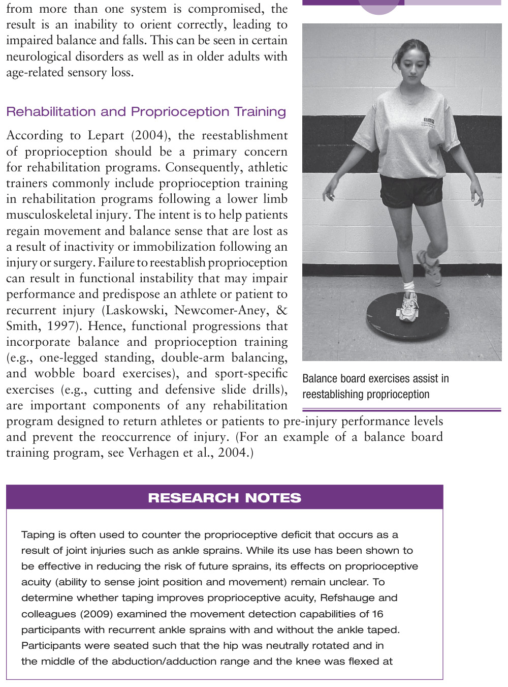
Hình 5.5: Các bài tập trên ván thăng bằng giúp tái lập cảm giác tự thân.
Phục Hồi Và Huấn Luyện Cảm Giác Tự Thân
Theo Lepart (2004), việc tái lập cảm giác tự thân nên là mối quan tâm hàng đầu của các chương trình phục hồi. Vì vậy, các huấn luyện viên thể thao thường đưa huấn luyện cảm giác tự thân vào chương trình phục hồi sau chấn thương cơ xương khớp ở chi dưới. Mục đích là giúp bệnh nhân lấy lại cảm giác vận động và thăng bằng đã mất do không hoạt động hoặc bất động sau chấn thương hay phẫu thuật. Không tái lập được cảm giác tự thân có thể dẫn đến mất ổn định chức năng, làm suy giảm hiệu suất và khiến vận động viên hay bệnh nhân dễ tái chấn thương (Laskowski, Newcomer-Aney, & Smith, 1997). Do đó, các tiến trình chức năng kết hợp huấn luyện thăng bằng và cảm giác tự thân (ví dụ đứng một chân, giữ thăng bằng với hai tay, và bài tập trên ván lắc), cùng các bài tập đặc thù môn thể thao (ví dụ bài tập cắt hướng và trượt phòng thủ), là những thành phần quan trọng của bất kỳ chương trình phục hồi nào nhằm đưa vận động viên hay bệnh nhân trở lại mức hiệu suất trước chấn thương và ngăn ngừa tái phát chấn thương. (Để xem ví dụ về chương trình huấn luyện trên ván thăng bằng, xem Verhagen et al., 2004.)
GHI CHÚ NGHIÊN CỨU
Băng dán thường được dùng để đối phó với sự thiếu hụt cảm giác tự thân xảy ra do các chấn thương khớp như bong gân cổ chân. Dù việc sử dụng nó đã được chứng minh là hiệu quả trong giảm nguy cơ bong gân trong tương lai, tác động của nó lên độ sắc cảm giác tự thân (khả năng cảm nhận vị trí và vận động của khớp) vẫn chưa rõ ràng. Để xác định liệu băng dán có cải thiện độ sắc cảm giác tự thân hay không, Refshauge và các cộng sự (2009) đã kiểm tra khả năng phát hiện vận động của 16 người tham gia bị bong gân cổ chân tái phát, trong hai điều kiện có băng dán và không có băng dán. Những người tham gia ngồi sao cho khớp háng xoay trung tính và nằm giữa phạm vi giạng/khép, còn khớp gối gập khoảng 60 độ.
(tiếp tục)
Chân được kiểm tra đặt trên một bàn đạp kim loại với cổ chân nằm giữa cả phạm vi gập lòng bàn chân/duỗi lòng bàn chân lẫn phạm vi lật vào/lật ra. Khả năng phát hiện vận động được đo ở ba vận tốc (0,1°/giây, 0,5°/giây và 2,5°/giây) và hai hướng (lật vào và lật ra), với thứ tự kiểm tra các điều kiện có băng và không có băng được ngẫu nhiên hóa. Trái với giả thuyết, việc dán băng làm giảm đáng kể khả năng phát hiện vận động của cổ chân trong mặt phẳng lật vào/lật ra, làm tăng thêm những phát hiện mâu thuẫn về băng dán và độ sắc cảm giác tự thân. Các tác giả đề xuất rằng bác sĩ lâm sàng tiếp tục dùng băng dán, vì các nghiên cứu đã thấy nó hiệu quả trong giảm tái phát bong gân cổ chân.
TRUYỀN DẪN THÔNG TIN: TỦY SỐNG
Dòng thông tin liên tục từ các thụ thể đến các cấp độ khác nhau của CNS được thực hiện nhờ sự dẫn truyền của các xung thần kinh hướng tâm hay cảm giác. Một khi thông tin đã được cảm nhận và một quyết định đã được đưa ra về cách đáp ứng, tín hiệu được gửi bởi các nơ rô ly tâm hay vận động đến các cơ, báo cho chúng thực hiện hành động mong muốn. Một thành phần không thể thiếu trong quá trình này là tủy sống. Tủy sống thực hiện hai chức năng chính. Thứ nhất, nó đóng vai trò là đường dẫn truyền xung. Các xung cảm giác đi lên tủy sống đến não qua các đường đi lên, trong khi các xung vận động đi theo hướng ngược lại dọc các đường đi xuống. Tuy nhiên, không phải tín hiệu nào cũng đi đến não để giải mã. Chức năng thứ hai của tủy sống là tích hợp một số xung ở các cấp độ khác nhau và đóng vai trò là trung tâm tích hợp cho các phản xạ tủy.
Các Đường Dẫn Cảm Giác Và Vận Động
Thông tin cảm giác đi lên tủy sống đến não qua hai tuyến đường chính (các đường đi lên) ở hai bên tủy: đường dẫn tủy-đồi thị (spinothalamic) và đường dẫn cột sau hay cột lưng (dorsal column). Đường tủy-đồi thị dẫn các xung liên quan đến đau, nhiệt độ, xúc giác thô và áp lực sâu. Cảm giác tự thân, xúc giác phân biệt, áp lực nhẹ hơn và rung động đi đến não qua đường cột lưng.
Hai đường đi xuống truyền xung vận động đến các cơ xương sẽ thực hiện vận động là đường tháp (pyramidal) và đường ngoài tháp (extrapyramidal). Các xung thần kinh kiểm soát những vận động tự nguyện có kỹ năng đi xuống theo đường tháp đến các nơ rô vận động dưới. Đường ngoài tháp dẫn các xung thần kinh tạo ra sự kiểm soát mang tính dưới ý thức hơn đối với chuyển động của cơ thể, chẳng hạn như kiểm soát các hoạt động vận động liên quan đến tư thế và thăng bằng.
Phản Xạ Tủy
Như đã nêu ở trên, không phải xung nào cũng đi đến não để tích hợp. Trong một số trường hợp, sự tích hợp thông tin cảm giác xảy ra ở cấp độ tủy sống. Kết quả là một đáp ứng tự động, không tự nguyện đối với kích thích, gọi là phản xạ. Vì thông tin được tích hợp tại tủy sống, phản xạ cho phép cá nhân phản ứng với kích thích nhanh hơn so với khi có sự tham gia của tư duy có ý thức.
Đường dẫn đơn giản nhất mà một phản xạ xảy ra được gọi là cung phản xạ (reflex arc). Các thành phần cơ bản của nó gồm (1) thụ thể, (2) nơ rô cảm giác, (3) trung tâm tích hợp, (4) nơ rô vận động, và (5) cơ quan thực hiện. Khi một thụ thể cảm giác phát hiện sự thay đổi trong môi trường bên trong hoặc bên ngoài, một nơ rô cảm giác bị kích thích; nơ rô này dẫn một xung đến trung tâm tích hợp trong tủy sống (hoặc thân não). Trung tâm tích hợp sau đó khởi phát một xung trong nơ rô vận động, rồi nơ rô này kích thích một đáp ứng ở cơ hoặc tuyến.
Có nhiều loại phản xạ khác nhau, được phân biệt bởi đặc điểm của trung tâm tích hợp.
Phản Xạ Đơn Synapse
Phản xạ đơn giản nhất liên quan đến một synapse duy nhất. Do đó, một nơ rô cảm giác trực tiếp liên lạc với một nơ rô vận động. Vì chỉ gồm một synapse, loại phản xạ này được gọi là phản xạ đơn synapse hay phản xạ kéo dãn (stretch reflex). Phản xạ gối giật (knee-jerk reflex) minh họa trong Hình 5.7 là một ví dụ về phản xạ đơn synapse. Khi cơ tứ đầu đùi bị kéo dãn bất ngờ, các thoi cơ tương ứng cũng bị kéo dãn. Như đã học ở trên, khi một thoi cơ bị kéo dãn, nó gửi tín hiệu đến CNS — cụ thể hơn là tủy sống — cho biết mức độ và tốc độ thay đổi chiều dài của cơ. Một synapse duy nhất sau đó được tạo ra, thúc đẩy sự điều chỉnh bằng cách tăng co cơ tứ đầu đùi, dẫn đến duỗi chân tại khớp gối. Vì chỉ một synapse tham gia, phản xạ đơn synapse diễn ra rất nhanh. Chức năng của nó trong việc đối kháng với những thay đổi về chiều dài cơ, đặc biệt là những thay đổi xảy ra bất ngờ, góp phần vào khả năng duy trì tư thế và định vị
Quan Niệm Sai Phổ Biến
Tất cả các thông điệp cảm giác đều phải được gửi đến não để tích hợp.

Hình 5.6: Truyền dẫn thông tin hướng tâm và ly tâm giữa cơ thể và não qua tủy sống — Đường đi xuống (vận động), Đường đi lên (cảm giác).

Hình 5.7: Vòng phản xạ đơn synapse — Nơ rô cảm giác, Nơ rô vận động, Tủy sống.
các chi của họ. Hành động phản xạ này được minh họa trong Hoạt động Khám phá 5.5.
Phản Xạ Đa Synapse
Đường dẫn phản xạ phổ biến hơn, được gọi là cung phản xạ đa synapse (polysynaptic reflex arc), gồm một hoặc nhiều nơ rô trung gian nằm giữa nơ rô cảm giác và nơ rô vận động trong một cung phản xạ (Marieb et al., 2017). Vì phản xạ đa synapse liên quan đến nhiều hơn một synapse, chúng không nhanh bằng phản xạ đơn synapse nhưng vẫn hoạt động nhanh hơn so với khi cần đến sự kiểm soát có ý thức. Phản xạ rút lui (withdrawal reflex), trong đó chúng ta rút tay lại khỏi nguy hiểm, là một phản xạ đa synapse. Ví dụ kinh điển của phản xạ rút lui xảy ra khi một cá nhân chạm vào bếp nóng. Các xung được tạo ra bởi thụ thể nhiệt và đau, rồi gửi qua nơ rô cảm giác đến tủy sống. Tại đó một synapse xảy ra với một nơ rô trung gian, rồi nơ rô này tạo synapse
Hoạt Động Khám Phá 5.5: Phản Xạ Gối Giật
- Nơ rô cảm giác
- Nơ rô vận động
- Tủy sống
Hoạt động 1
Hãy yêu cầu một người bạn ngồi trên ghế và bắt chéo chân sao cho gối dưới khít vào chỗ lõm phía sau gối trên. Giờ, dùng mép bàn tay mở của bạn, gõ mạnh vào phần mềm ngay dưới xương bánh chè của người bạn. Bạn có thể phải thử vài lần để tìm đúng chỗ khởi phát phản xạ. Hãy đổi chỗ với người bạn của bạn.
Hoạt động 2
Hãy lặp lại hoạt động trên, nhưng lần này cố ngăn phản xạ xảy ra. Bạn có làm được không?
với một nơ rô vận động, rồi nơ rô này báo cho các cơ rút tay bạn khỏi bếp nóng.
Một phản xạ đa synapse khác, thường liên quan đến phản xạ rút lui, là phản xạ duỗi chéo (crossed extensor reflex). Bên cạnh việc một nơ rô trung gian kích thích nơ rô vận động chịu trách nhiệm tín hiệu rút lui, một nhánh sợi trục dẫn một xung sang phía đối diện của tủy sống đến một nơ rô vận động chi phối các cơ ở phía đó của cơ thể, làm chúng duỗi ra. Nói cách khác, khi phản xạ rút lui xảy ra ở một chi, phản xạ duỗi chéo có thể được khởi phát để làm chi đối bên duỗi ra. Phản xạ duỗi chéo được minh họa qua việc dồn trọng tâm cơ thể để tránh té ngã. Ví dụ, như minh họa trong Hình 5.8, nếu bạn đang đi dọc bãi biển và vô tình dẫm phải một mảnh vỏ sò gãy, phản xạ rút lui sẽ xảy ra để đáp ứng với kích thích đau, trong khi phản xạ duỗi chéo làm chân đối bên duỗi ra, tạo sự dời trọng tâm và ngăn bạn té ngã.
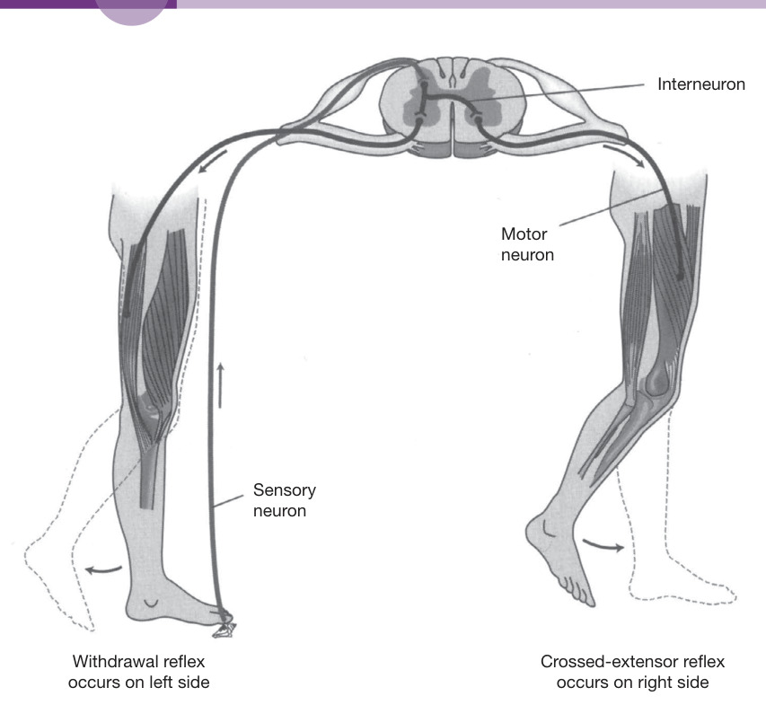
Hình 5.8: Cung phản xạ rút lui và phản xạ duỗi chéo — Nơ rô cảm giác (phản xạ rút lui xảy ra ở phía trái), Nơ rô trung gian, Nơ rô vận động (phản xạ duỗi chéo xảy ra ở phía phải).
Tổn Thương Tủy Sống
Tổn thương tủy sống có thể dẫn đến mất chức năng và/hoặc mất cảm giác. Hai yếu tố quyết định hậu quả của một chấn thương tủy sống: loại chấn thương và mức độ xảy ra chấn thương.
Loại Tổn Thương
Chấn thương tủy sống có thể được phân loại là hoàn toàn hoặc không hoàn toàn. Trong chấn thương hoàn toàn, chức năng và cảm giác bị mất ở dưới mức tổn thương trên cả hai phía của cơ thể. Trong chấn thương không hoàn toàn, tổn thương một phần xảy ra ở tủy sống, và hậu quả phụ thuộc vào vùng (trước, sau, bên) của tủy bị ảnh hưởng. Một phần chức năng và cảm giác vẫn còn lại dưới mức tổn thương, và có thể các phía khác nhau của cơ thể bị ảnh hưởng khác nhau. Nếu tổn thương xảy ra ở các đường đi lên, cảm giác phát sinh từ các thụ thể nằm dưới mức tổn thương sẽ bị mất. Nếu có tổn thương ở các sợi thần kinh của các bó đi xuống, kết quả là mất các chức năng vận động.
Mức Độ Tổn Thương
Mức độ hay vị trí của chấn thương cũng quyết định sự suy giảm. Nhìn chung, chấn thương càng nằm cao trên tủy sống thì mức độ tàn tật càng lớn. Chấn thương ở đoạn dưới của tủy (vùng thắt lưng và cùng), chẳng hạn, sẽ ảnh hưởng đến các chi dưới. Ở chiều ngược lại, chấn thương cổ (vùng cổ) có thể gây liệt cả tay lẫn chân, cũng như mất nhiều chức năng tự động quan trọng như hô hấp.
BỘ NÃO
Được cấu thành từ khoảng 100 tỷ nơ rô, não bộ cực kỳ phức tạp về cả cấu trúc lẫn chức năng. Như thể hiện trong Hình 5.9, não được chia thành bốn phần chính: (1) thân não, (2) não trung gian, (3) đại não, và (4) tiểu não. Thân não và não trung gian thực hiện nhiều chức năng sống còn; vai trò chính của chúng liên quan đến việc tạo ra và kiểm soát vận động gồm đóng vai trò là trung tâm phản xạ và truyền dẫn thông tin cảm giác cùng vận động giữa các phần khác nhau của não và giữa não với tủy sống. Tuy nhiên, đại não và tiểu não đóng góp rộng rãi hơn vào vận động và sẽ nhận được sự chú ý lớn hơn trong phần thảo luận sau đây.
Đại Não
Đại não là phần lớn nhất của bộ não. Nó được chia thành hai bán cầu đại não trái và phải, mỗi bán cầu liên quan đến các chức năng cảm giác và vận động
ở phía đối diện của cơ thể. Lớp ngoài cùng của đại não, vỏ não (cerebral cortex), là nơi chúng ta tìm thấy các trung tâm chịu trách nhiệm về những chức năng não cao cấp.

Hình 5.9: Các phần của não — (1) Thân não, (2) Não trung gian, (3) Đại não, (4) Tiểu não.
Vỏ Não
Vỏ não có thể được chia thành ba vùng chức năng: (1) các vùng cảm giác, (2) các vùng vận động, và (3) các vùng liên hợp. Mỗi vùng này lại có thể được chia nhỏ hơn như thể hiện trong Hình 5.10. Phần thảo luận dưới đây sẽ tập trung vào những vùng liên quan đến việc tạo ra và kiểm soát vận động. Cần lưu ý rằng các vùng này không hoạt động độc lập, và việc xem xét chi tiết nằm ngoài phạm vi của cuốn sách này.
Các Vùng Cảm Giác
Các vùng cảm giác giải mã thông tin nhận từ các thụ thể cảm giác khác nhau. Vùng cảm giác da cơ thể chính nhận cảm giác từ các thụ thể da (chạm, áp lực, nhiệt độ, đau) và các thụ thể tự thân ở ngoại vi cơ thể. Trong vùng này, thông tin được xử lý và cá nhân trở nên nhận biết có ý thức không chỉ về bản thân cảm giác mà còn về chính xác

Hình 5.10: Các vùng chức năng của vỏ não — Vùng vận động chính, Vùng vận động tiền (tổ chức các vận động phối hợp), Vùng tiền trán (chức năng nhận thức và phản ứng cảm xúc), Vùng cảm giác da cơ thể chính (cảm giác), Vùng vị giác, Vùng cảm giác da cơ thể phụ (giải mã tín hiệu cảm giác), Vùng thị giác phụ, Vùng thị giác chính, Vùng Wernicke (ngôn ngữ cảm giác), Vùng Broca (ngôn ngữ vận động), Vùng liên hợp thính giác, Vùng thính giác chính (thính giác).
vị trí mà cảm giác phát sinh. Ví dụ, tổn thương vùng cảm giác da cơ thể chính do đột quỵ sẽ loại bỏ khả năng có ý thức cảm nhận và định vị chạm và áp lực trên da. Điều này lần lượt ảnh hưởng đến cách nắm và thao tác vật. Bên cạnh đó, cá nhân sẽ mất nhận biết về vị trí khớp, vì họ không còn có thể cảm nhận phản hồi cảm giác chính xác liên quan đến vận động. Do đó, các vận động sẽ trở nên mất phối hợp.
Ở chiều ngược lại, vùng cảm giác da cơ thể phụ có chức năng tích hợp và giải mã các tín hiệu cảm giác. Nếu tổn thương xảy ra ở vùng này của vỏ não, thông tin cảm giác thường liên quan đến thao tác vật có thể không còn sẵn có. Ví dụ, khả năng nhận ra tay bạn đang chạm vào một quả bóng gôn thay vì một quả bóng racquetball có thể bị suy giảm. Bên cạnh đó, vì tín hiệu gửi đến vùng phụ được xử lý một phần ở vùng cảm giác da cơ thể chính trước khi chuyển tiếp, những suy giảm tương tự như đã mô tả cho vùng cảm giác da cơ thể chính sẽ biểu hiện.
Với vai trò của thị giác trong vận động, các vùng thị giác đáng được quan tâm. Chúng cũng có thể được chia thành vùng chính và vùng phụ. Vùng thị giác chính nhận thông tin thị giác về hình ảnh tạo ra trên võng mạc. Trong khi vùng này phát hiện các điểm sáng và tối cùng xác định hướng của trường thị giác, vùng thị giác phụ giải mã những gì một người đang nhìn thấy.
GHI CHÚ NGHIÊN CỨU
Người ta tin rằng trong bóng chày, cơ hội đánh trúng của một người đánh bóng tăng lên nếu vài người đánh trước đó đã đánh thành công và lên lũy. Nói cách khác, các nhà lý thuyết bóng chày từ lâu đã cho rằng “việc đánh trúng có tính lây lan.” Gray và Beilock (2011) đã điều tra ý niệm này, cụ thể hỏi xem việc quan sát một cú đánh thành công ngay trước lượt đánh của chính mình có ảnh hưởng gì đến hiệu suất. Với phát hiện về nơ rô gương trong vùng vận động tiền của não, họ dự đoán rằng một kích thích được nhìn ngay trước lượt đánh sẽ thực sự ảnh hưởng cả đến sự thành công của cú đánh lẫn hướng đi của quả bóng. Nơ rô gương (mirror neuron) hoạt động cả khi một cá nhân thực hiện một hành động lẫn khi người đó xem người khác thực hiện hành động đó (xem Chương 8 để biết thêm chi tiết). Nói cách khác, nhóm tế bào thần kinh đặc biệt này được cho là “phản chiếu” vận động, như thể người quan sát chính là người đang thực hiện hành động.
Mười hai cầu thủ bóng chày tại trường cao đẳng và 12 người chơi trong các giải nghiệp dư cạnh tranh đã tham gia nghiên cứu. Sau một vòng luyện tập gồm 25 cú ném để làm quen với mô phỏng đánh bóng, người tham gia hoàn thành 30 “lượt đánh”, trong đó họ cố đánh một quả bóng được ném mô phỏng sau khi xem một trong ba kích thích gợi ý hoặc không nhận gợi ý nào. Các kích thích được trình bày với ba hướng gợi ý khác nhau (phải, trái và giữa) và là (1) một quả bóng đi đến một vị trí cụ thể trên sân, (2) một quả bóng đứng yên nằm ở một vị trí cụ thể trên sân, và (3) một thông điệp bằng văn bản cho biết vị trí quả bóng đã rơi. Kết quả ủng hộ dự đoán của các nhà nghiên cứu, vì cả hai nhóm người đánh bóng đều cải thiện đáng kể hiệu suất khi họ nhìn thấy một kết quả thành công trước khi đánh. Dựa trên những phát hiện này, các nhà nghiên cứu đề xuất rằng việc kích hoạt nơ rô gương bằng cách cho người đánh xem video quả bóng được đánh thành công đến vị trí mong muốn trước một “lượt đánh” sẽ mang lại kết quả đánh bóng vượt trội so với phương pháp truyền thống dùng chỉ dẫn bằng lời nói hoặc tín hiệu tay.
Các Vùng Vận Động
Các vùng vận động điều phối và khởi phát các vận động tự nguyện của cơ xương. Vùng vận động chính (primary motor cortex) là vùng chịu trách nhiệm khởi phát các vận động tự nguyện có kỹ năng, gồm cả những vận động cần thiết để thực hiện các kỹ năng vận động tinh. Các quyết định về cách khởi phát những vận động đó là chức năng của vùng vận động tiền (premotor cortex), nằm ngay phía trước vùng vận động chính. Cụ thể hơn, vùng vận động tiền tổ chức các vận động phối hợp đã học liên quan đến trình tự cơ phức tạp. Ví dụ, nếu người thực hiện quyết định bước một bước, các quyết định về cơ nào co, theo thứ tự nào và mức độ nào được đưa ra ở vùng vận động tiền. Các xung sau đó được gửi đến vùng vận động chính, nơi khởi phát từng vận động đã được hoạch định.
Các Vùng Liên Hợp
Các vùng liên hợp (association areas) liên quan đến phân tích và giải mã thông tin cảm giác. Cho chức năng này, có vẻ như các đầu vào cảm giác mới được liên kết với những kinh nghiệm trong quá khứ. Vai trò của vỏ não tiền trán (prefrontal cortex) liên quan đến phản ứng cảm xúc và các chức năng nhận thức. Sự chú ý, khả năng đưa ra phán đoán chính xác, hoạch định cho các sự kiện tương lai, và động lực luyện tập đều phụ thuộc vào hoạt động của vỏ não tiền trán.
Một vùng thứ hai, được gọi là vùng giải mã chung, đóng vai trò chính trong xử lý tư duy phức tạp. Các tình huống được giải mã nhờ sự tích hợp thông tin cảm giác tại vùng này. Sau đó, sự giải mã được gửi đến vỏ não tiền trán, nơi nó được liên kết với cảm xúc và một quyết định về cách đáp ứng được đưa ra.
Thử Thách Não Bộ 5.3
Tổn thương vùng thị giác chính dẫn đến mù chức năng. Hãy suy luận về hậu quả của tổn thương vùng thị giác phụ.
Hạch Nền
Hạch nền (basal ganglia), một nhóm hạch nhân có liên quan về chức năng, nằm sâu trong đại não. Sự trao đổi thông tin phong phú diễn ra giữa hạch nền với cả vỏ não đại não lẫn thân não, tạo thành một vòng lưu thông thông tin được chuyển tiếp qua đồi thị. Hạch nền quan trọng trong việc khởi phát và kiểm soát các vận động thô của cơ thể dưới ý thức, chẳng hạn như vung tay khi đi, và đóng vai trò then chốt trong điều chỉnh cường độ (quy mô hóa — scaling) của các thông số vận động. Có thể thấy tầm quan trọng của việc quy mô hóa thông số vận động qua những thay đổi chức năng xảy ra trong hai tình trạng thoái hóa khác nhau của hạch nền. Thứ nhất, bệnh Parkinson — đặc trưng bởi run chi chậm, không kiểm soát được và khó khăn trong khởi phát vận động tự nguyện — là kết quả của sự kích thích không đủ hạch nền. Ở chiều ngược lại, bệnh Huntington là kết quả của việc kích thích quá mức hạch nền. Người mắc bệnh này biểu hiện các cử động giật cục không kiểm soát được ở chi và/hoặc cơ mặt.
Tiểu Não
Tiểu não (cerebellum) giám sát vận động bằng cách so sánh vận động đã định, do các vùng vận động lập trình, với những gì thực sự đang xảy ra. Nói cách khác, nó so sánh đầu vào cảm giác nhận được từ các thụ thể tự thân và thụ thể thị giác với những hậu quả cảm giác mong đợi. Vì vậy, tiểu não đóng vai trò then chốt trong phát hiện và hiệu chỉnh lỗi, đồng thời hoạt động phối hợp với
vỏ não vận động để tạo ra các vận động phối hợp mượt mà. Tiểu não cũng quan trọng trong duy trì tư thế và thăng bằng.
Thử Thách Não Bộ 5.4
Một bệnh nhân không đội mũ bảo hiểm bị tổn thương não do một tai nạn xe đạp nghiêm trọng. Vùng não bị ảnh hưởng là tiểu não. Hãy đoán xem bệnh nhân này sẽ biểu hiện những hành vi nào do chấn thương tiểu não.
Chấn Thương Não Và Chấn Động
Chấn thương não do chấn thương (traumatic brain injury — TBI) là sự gián đoạn chức năng não bình thường do một lực cơ học bên ngoài (Marion, 1999). Tùy theo bản chất của TBI, có thể xảy ra suy giảm nhận thức và/hoặc vận động tạm thời hoặc kéo dài; các nhà vật lý trị liệu có thể phải thiết kế chương trình giúp phục hồi chức năng vận động, sức mạnh, phối hợp, thăng bằng, sức bền và/hoặc vận động. Khoảng 75 phần trăm số TBI xảy ra mỗi năm là chấn động não (concussion) hoặc các dạng TBI nhẹ khác (Centers for Disease Control and Prevention, 2003), và ước tính có 3,8 triệu trường hợp trong số đó xảy ra do thể thao và hoạt động thể chất (Broglio et al., 2014). Chấn động não là sự suy giảm tạm thời chức năng não do một cú va, đập hoặc lắc vào đầu, hoặc do một lực xoay (Cartwright & Pitney, 2011).
Hãy truy cập các trang web được nêu bên lề để xem tài liệu của CDC về chấn thương não và chấn động, đồng thời tìm hiểu thêm về bài kiểm tra ImPACT — một hệ thống đánh giá chấn động bằng máy tính mà các huấn luyện viên thể thao dùng để đánh giá khách quan tình trạng sau chấn thương của vận động viên và theo dõi quá trình hồi phục nhằm trở lại thi đấu an toàn. Tham khảo https://www.cdc.gov/headsup/basics/index.html và https://www.youtube.com/watch?v=qf8clRBtCNcBox .
Tính Dẻo Thần Kinh
Người ta từng nghĩ rằng sau khi não phát triển trong một giai đoạn then chốt của thời thơ ấu, nó vẫn tương đối không thay đổi với các mạch nơ rô cố định ở tuổi trưởng thành. Nghiên cứu đã chỉ ra, tuy nhiên, rằng không phải vậy; thay vào đó, não người có khả năng tự tổ chức lại bằng cách hình thành các kết nối nơ rô mới để đáp ứng với chấn thương, học tập và luyện tập. Khả năng thay đổi cấu trúc tổ chức và, cuối cùng, chức năng của mình trong suốt cuộc đời này được gọi là tính dẻo thần kinh (neural plasticity) (Kolb, Gibb, & Robinson, 2003). Có thể xem một minh họa hay về cách não được cho là tự tái đấu dây — gọi là tái bản đồ vỏ não — tại www.youtube.com/watch?v=iAzmyB9PFt4 .
Tính dẻo thần kinh phụ thuộc vào kinh nghiệm (experience dependent) (Kolb et al., 2003). Bảng 5.1 liệt kê mười nguyên tắc của tính dẻo phụ thuộc kinh nghiệm do Kleim và
GHI CHÚ NGHIÊN CỨU
Theo tuyên bố đồng thuận năm 2017 của Nhóm Chấn Động Trong Thể Thao, việc trở lại thi đấu sau chấn động não nên là một quá trình phục hồi dần dần, từng bước, và không được cho phép cho đến khi vận động viên hoàn toàn hết triệu chứng (McCrory et al., 2017). Tuy nhiên, nghiên cứu gợi ý rằng hậu quả của chấn động não có thể kéo dài sau khi các dấu hiệu và triệu chứng truyền thống đã biến mất. Để kiểm tra vấn đề này, Johnston et al. (2020) đã tuyển 145 vận động viên bóng đá Mỹ nam và khúc côn cầu trên băng nam lẫn nữ hạng Nhất thuộc Hiệp hội Thể thao Đại học Quốc gia (NCAA) từ một trường đại học lớn. Năm mươi sáu trong số các tình nguyện viên có tiền sử chấn động não trước đó. Những cá nhân này được chia tiếp thành hai nhóm. Nhóm 1 (25/145) bị chấn động não gần nhất trong vòng hai năm qua, trong khi nhóm 2 (30/145) bị chấn động não lần cuối cách đây hơn hai năm. Tất cả người tham gia đều trải qua đánh giá cơ bản trong đợt sàng lọc trước mùa giải, gồm đánh giá thăng bằng động bằng Bài kiểm tra Thăng bằng Y (YBT). Một cảm biến quán tính duy nhất được đeo ở mức đốt sống thắt lưng thứ tư trong lúc kiểm tra thăng bằng động nhằm xem xét liệu công nghệ này có ghi nhận được sự khác biệt về hiệu suất thăng bằng động giữa người có và không có tiền sử chấn động não hay không, đồng thời khám phá tiềm năng định lượng khách quan chức năng cảm giác-vận động. Bốn lần thử luyện tập theo sau là ba lần thử được ghi âm theo các hướng trước, sau-trong và sau-ngoài, theo quy trình YBT. Trong ba lần thử YBT được ghi lại, hiệu suất được chấm điểm bằng cách (1) ghi nhận khoảng cách lớn nhất cá nhân có thể với ra ngoài mặt đỡ và (2) thu thập dữ liệu cảm biến quán tính khi các cá nhân đứng một chân. Không thấy khác biệt có ý nghĩa về khoảng cách với tới giữa các vận động viên có và không có tiền sử chấn động não. Dữ liệu cảm biến quán tính cho thấy những vận động viên có tiền sử chấn động não trong hai năm qua dùng chiến lược vận động bị giới hạn đáng kể hơn ở các hướng với sau-trong và sau-ngoài so với nhóm đối chứng khỏe mạnh. Tuy nhiên, sự khác biệt này không được thấy giữa nhóm có tiền sử chấn động não cách đây hơn hai năm và nhóm đối chứng khỏe mạnh. Những kết quả này gợi ý rằng khiếm khuyết chức năng cảm giác-vận động có thể tồn tại sau khi hồi phục lâm sàng ở bệnh chấn động não. Hơn nữa, các đánh giá lâm sàng truyền thống có thể không đủ nhạy để phát hiện những khiếm khuyết này. Theo đó, các tác giả đề xuất rằng bác sĩ lâm sàng nên tích hợp huấn luyện thăng bằng và can thiệp kiểm soát vận động vào quá trình hồi phục sau chấn động não liên quan đến thể thao nhằm tăng tốc hồi phục cảm giác-vận động.
Jones (2008) có liên quan đến tiếp thu kỹ năng và phục hồi. Dù chúng đưa ra những cân nhắc cho việc thiết kế can thiệp nhằm thúc đẩy tổ chức lại và chức năng của não cả khi não còn nguyên vẹn lẫn khi bị tổn thương — trong đó nhiều điểm làm nền tảng cho các chiến lược sẽ được thảo luận ở những chương sau — vẫn còn nhiều điều về cách
BẢNG 5.1
Mười nguyên tắc của tính dẻo phụ thuộc kinh nghiệm liên quan đến tiếp thu kỹ năng và phục hồi.
Nguyên tắc — Mô tả
- Dùng thì duy trì, bỏ thì mất — Việc không sử dụng các mạch nơ rô có thể làm suy giảm chức năng não.
- Dùng rồi cải thiện — Huấn luyện kỹ năng có thể gây ra tính dẻo ở những vùng cụ thể của não.
- Tính đặc thù — Những dạng tính dẻo thần kinh cụ thể và, cuối cùng, chức năng cụ thể phụ thuộc vào những loại kinh nghiệm cụ thể.
- Lặp lại quan trọng — Sự lặp lại là cần thiết để gây ra những thay đổi bền vững.
- Cường độ quan trọng — Cần cường độ huấn luyện đủ lớn để gây ra những thay đổi bền vững.
- Thời gian quan trọng — Những dạng tính dẻo khác nhau xảy ra vào những thời điểm khác nhau trong huấn luyện, trong đó một số dạng có vẻ phụ thuộc vào những dạng khác.
- Ý nghĩa quan trọng — Tính dẻo phụ thuộc vào mức độ tham gia và động lực của người học, hoặc vào ý nghĩa của việc huấn luyện.
- Tuổi tác quan trọng — Dù tính dẻo phụ thuộc kinh nghiệm có thể được gây ra trong suốt cuộc đời, sự thích nghi thần kinh trở nên sâu sắc hơn ít đi và/hoặc chậm hơn khi tuổi tăng.
- Chuyển giao — Tính dẻo do một trải nghiệm huấn luyện tạo ra có thể tạo điều kiện cho việc tiếp thu các hành vi tương tự.
- Nhiễu — Tính dẻo do một trải nghiệm huấn luyện tạo ra có thể cản trở việc tiếp thu các hành vi khác.
Điều chỉnh từ Kleim và Jones (2008).
khai thác tốt nhất tính dẻo của não vẫn chưa được xác định (Novak, 2016). Để biết thêm thông tin về tính dẻo thần kinh nói chung, cũng như liên quan cụ thể đến tiếp thu kỹ năng vận động và ứng dụng lâm sàng, xem Kolb và Gibb (2014), Dayan và Cohen (2011), và Cramer et al. (2011) tương ứng, đồng thời xem bài nói chuyện TED của nhà thần kinh học Lara Boyd tại https://www.youtube.com/watch?time_continue=14&v=LNHBMFCzznE&feature=emb_logo .
TRÍ NHỚ
Việc khám phá não bộ cùng việc tiếp thu và thực hiện kỹ năng vận động sẽ chưa đầy đủ nếu thiếu thảo luận về trí nhớ. Trí nhớ là khả năng lưu trữ và truy xuất thông tin. Thông tin đó có thể là số điện thoại của một người bạn, hoặc có thể đại diện cho những kinh nghiệm vận động trong quá khứ giúp đưa ra quyết định về nên thực hiện đáp ứng vận động nào và thực hiện như thế nào. Nhiều thay đổi phải xảy ra trong CNS để một trải nghiệm được biểu diễn trong trí nhớ. Những phần của não — gồm vỏ não liên hợp của các thùy trán, đỉnh, chẩm và thái dương; một số bộ phận của hệ viền; và não trung gian — được biết là có liên quan đến trí nhớ, nhưng nhiều điều về chức năng của nó vẫn chưa được hiểu rõ.
GHI CHÚ NGHIÊN CỨU
Hội chứng đau vùng phức tạp loại 1 (complex regional pain syndrome type 1 — CRPS1) là tình trạng đau mạn tính thường ảnh hưởng đến một trong các chi (tay, chân, bàn tay hoặc bàn chân), thường sau một chấn thương hay sang chấn tại chi đó (National Institute of Neurological Disorders and Stroke, 2015). Vì nó thường đáp ứng kém với điều trị thông thường, Moseley (2006) quan tâm đến việc liệu Hình dung Vận động Phân cấp (Graded Motor Imagery — GMI), một giao thức gồm ba giai đoạn được thiết kế để huấn luyện não, có làm giảm đau và mức độ suy giảm chức năng ở bệnh nhân CRPS1 hay không. Năm mươi mốt bệnh nhân bị đau chi giả hoặc CRPS1 được phân ngẫu nhiên vào một nhóm điều trị thông thường nhận quản lý bằng thuốc và vật lý trị liệu, hoặc một nhóm điều trị GMI. Cả hai nhóm đều hoàn thành giao thức sáu tuần. Giao thức này được chia thành ba giai đoạn điều trị kéo dài hai tuần cho nhóm GMI. Ở giai đoạn 1, người tham gia phải nhanh chóng xác định xem các hình ảnh được trình bày ngẫu nhiên cho thấy chi phải hay chi trái. Ở giai đoạn 2, người tham gia được hướng dẫn tưởng tượng cử động chi tương ứng để giả định tư thế được trình bày trong một chuỗi hình ảnh. Cuối cùng, ở giai đoạn 3, các cử động gương được thực hiện, trong đó người tham gia giả định tư thế được trình bày với cả hai tay, dùng một hộp gương. Kết quả cho thấy mức giảm đau lớn hơn đáng kể và mức tăng chức năng lớn hơn đáng kể ở nhóm GMI so với nhóm điều trị thông thường, từ trước đến sau điều trị. Hơn nữa, một lần theo dõi sau sáu tháng cho thấy những lợi ích này được duy trì. Dù cơ chế của hiệu ứng này chưa rõ ràng, cần có thêm các nghiên cứu kiểm tra hiệu quả của GMI.
Để biết thêm thông tin về Hình dung Vận động Phân cấp, truy cập www.gradedmotorimagery.com/ và xem video tại www.youtube.com/watch?v=fWYUJscRBRw .
Mô Hình Trí Nhớ
Atkinson và Shiffrin (1968, 1971) đã đề xuất một mô hình trí nhớ phổ biến và có ảnh hưởng, gọi là Mô hình Đa Kho. Mô hình này cho rằng trí nhớ gồm ba hệ thống riêng biệt — trí nhớ cảm giác, trí nhớ ngắn hạn và trí nhớ dài hạn — mỗi hệ thống được xác định bởi đặc điểm lưu trữ và xử lý của nó. Tuy nhiên, theo thời gian, mô hình này bị coi là quá đơn giản, và Baddeley cùng Hitch (1974) đã đưa ra một sự điều chỉnh toàn diện hơn, thay thế trí nhớ ngắn hạn bằng một hệ thống trí nhớ làm việc gồm ba thành phần. Mô hình kết quả được thể hiện trong Hình 5.11.
Trí Nhớ Cảm Giác
Giai đoạn đầu tiên của trí nhớ, điểm mà tại đó thông tin đi vào hệ thần kinh qua hệ cảm giác, được gọi là trí nhớ cảm giác. Chúng ta liên tục tiếp xúc với thông tin qua các thụ thể cảm giác. Trí nhớ cảm giác
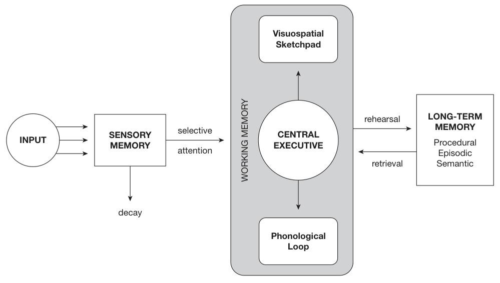
Hình 5.11: Sơ đồ các hệ thống trí nhớ — ĐẦU VÀO, TRÍ NHỚ CẢM GIÁC, chú ý chọn lọc, sự suy thoái, Bảng vẽ thị giác-không gian, TRÍ NHỚ LÀM VIỆC, Vòng âm thanh, BỘ ĐIỀU HÀNH TRUNG TÂM, TRÍ NHỚ DÀI HẠN, ôn tập, Thủ tục, Tình tiết, truy xuất, Ngữ nghĩa.
lưu giữ một ấn tượng ngắn về một kích thích cảm giác ngay cả sau khi bản thân kích thích đã chấm dứt. Giai đoạn ngắn ngủi này, chỉ kéo dài vài trăm mili giây, cho đủ thời gian để một cá nhân quyết định liệu thông tin cảm giác đầu vào có đòi hỏi chú ý thêm hay không (Plotnik & Kouyoumdjian, 2011). Thông tin mà chúng ta chọn chú ý có chọn lọc sẽ được xử lý tiếp, còn phần còn lại sẽ bị mất.
Trí Nhớ Làm Việc
Trí nhớ làm việc (working memory) là một tập hợp các thành phần xử lý thông tin tương tác với nhau, lưu trữ và quản lý tích cực thông tin cần thiết để thực hiện các nhiệm vụ nhận thức phức tạp như học tập, ra quyết định, lập luận và hiểu biết (Becker & Morris, 1999). Quan niệm hiện nay về trí nhớ làm việc gồm một bộ điều hành trung tâm và hai hệ thống lưu trữ ngắn hạn được xác định theo chức năng của chúng: vòng âm thanh (phonological loop) và bảng vẽ thị giác-không gian (visuospatial sketchpad) (Baddeley, 2003).
Vòng âm thanh xử lý việc lưu trữ ngắn hạn chất liệu nói và viết, trong khi bảng vẽ thị giác-không gian chịu trách nhiệm lưu trữ tạm thời và thao tác thông tin không gian cùng thị giác. Bộ điều hành trung tâm — thành phần quan trọng nhất nhưng ít được hiểu rõ nhất trong mô hình trí nhớ làm việc của Baddeley (2003) — có chức năng kiểm soát dòng thông tin giữa hai hệ thống lưu trữ, điều hòa việc xử lý thông tin (gồm cả truy xuất từ trí nhớ dài hạn), và quản lý các hoạt động chú ý.
Xét về chức năng lưu trữ, trí nhớ làm việc giữ lại nhiều đặc điểm của quan niệm trước đó về trí nhớ ngắn hạn. Nó có dung lượng hạn chế và chỉ có thể chứa bảy, cộng hoặc trừ hai, mục hoặc khối thông tin tại một thời điểm (Miller, 1956). Bên cạnh đó, thông tin chỉ được giữ trong không gian lưu trữ tạm thời này trong 20 đến 30 giây trừ khi nó được chú ý thêm thông qua các hoạt động xử lý như lặp lại, liên tưởng hoặc ôn tập (Adams & Dijkstra, 1966). Việc xử lý tích cực cũng cần thiết để chuyển thông tin vào lưu trữ lâu bền hơn trong trí nhớ dài hạn (LTM). Nếu không có sự chuyển này, học tập hiệu quả là không thể. Hãy thử Hoạt động Khám phá 5.6 để khám phá dung lượng trí nhớ làm việc của chính bạn.
Hoạt Động Khám Phá 5.6: Kiểm Tra Lưu Trữ Ngắn Hạn
Hãy thử bài kiểm tra lưu trữ ngắn hạn tại http://faculty.washington.edu/chudler/stm0.html . Hãy thực hiện cả sáu lần thử.
Kết quả của bạn so sánh thế nào với dung lượng hạn chế là bảy cộng hoặc trừ hai mục? Bạn đã dùng chiến lược nào để nhớ các chữ cái?
Để có thêm trò chơi trí nhớ và chiến lược cải thiện trí nhớ, truy cập www.exploratorium.edu/memory/dont_forget/index.html .
Như chúng ta đã học, trí nhớ không chỉ đơn thuần là lưu trữ thông tin. Trí nhớ làm việc và trí nhớ dài hạn phối hợp với nhau để tích hợp thông tin về tình huống hiện tại và những kinh nghiệm trong quá khứ, từ đó cho phép người thực hiện đưa ra, thực hiện và đánh giá các quyết định chiến lược cùng vận động. Ví dụ, một người chơi racquetball phải kết hợp thông tin về tình huống hiện tại (chẳng hạn vị trí của đối thủ và mức độ mệt mỏi của họ) với thông tin truy xuất từ LTM về những kinh nghiệm trước đó (chẳng hạn điểm mạnh, điểm yếu và phản ứng có thể có của đối thủ) để quyết định nên dùng cú phát bóng nào. Hơn nữa, một khi cú phát đã được chọn, cần thêm thông tin và sự tích hợp để thực hiện nó. Những quá trình tích hợp này diễn ra trong trí nhớ làm việc.
Trí Nhớ Dài Hạn
Trí nhớ dài hạn được đặc trưng là có dung lượng và thời gian duy trì dường như không giới hạn. Có ba loại LTM: trí nhớ thủ tục và hai loại trí nhớ tường thuật, là ngữ nghĩa và tình tiết (Tulving, 1985). Trí nhớ thủ tục (procedural memory) lưu giữ thông tin về cách thực hiện các kỹ năng và hành động khác nhau, và là nền tảng cho khả năng đạt được mục tiêu vận động của chúng ta. Đi xe đạp, buộc dày giày, và băng cổ chân theo kiểu giỏ đan kín đều là ví dụ về trí nhớ thủ tục. Trí nhớ tường thuật (declarative memory) là trí nhớ của chúng ta về các sự kiện hay sự việc
và thường được chia thành hai loại — trí nhớ tình tiết và trí nhớ ngữ nghĩa. Trí nhớ tình tiết (episodic memory) chứa thông tin về những trải nghiệm và sự việc cá nhân gắn với một thời điểm và bối cảnh cụ thể. Ngày bạn tốt nghiệp trung học phổ thông là một ví dụ về tri thức được biểu diễn bằng trí nhớ tình tiết. Ở chiều ngược lại, trí nhớ ngữ nghĩa (semantic memory) biểu diễn tri thức chung được hình thành từ kinh nghiệm của chúng ta nhưng không gắn với thời gian. Tri thức sự kiện, chẳng hạn màu sắc của trường bạn, và tri thức khái niệm, chẳng hạn khái niệm của bạn về thành công, đều nằm trong trí nhớ ngữ nghĩa. Vì vậy, trí nhớ tình tiết và ngữ nghĩa lưu trữ thông tin mà chúng ta dùng để quyết định cần làm gì trong một tình huống nhất định.
Sự Quên
Qua luyện tập, người học có thể chuyển thêm thông tin vào LTM. Tuy nhiên, tất cả người thực hiện, bất kể trình độ kỹ năng, đều dễ bị hiện tượng quên. Hai thuyết đã được đề xuất để giải thích sự quên. Thuyết thứ nhất, gọi là thuyết suy thoái (decay theory), cho rằng sự quên xảy ra do sự trôi qua của thời gian. Một thuyết thứ hai, thuyết nhiễu (interference theory), đề xuất rằng sự quên có thể được quy cho nhiễu chủ động hoặc nhiễu hồi tố. Trong nhiễu chủ động (proactive interference), những trí nhớ cũ cản trở việc duy trì thông tin mới được trình bày cần nhớ. Nhiễu hồi tố (retroactive interference) xảy ra khi việc học điều gì đó mới cản trở việc duy trì những trí nhớ cũ. Hình 5.12 minh họa hai loại nhiễu này, dùng ví dụ về một cá nhân đã học lướt sóng trong mùa hè và đang học trượt tuyết vào mùa đông này. Nếu người này gặp khó khăn trong việc nhớ một vận động trượt tuyết do những kinh nghiệm lướt sóng trước đó, nhiễu chủ động đã xảy ra. Ở chiều ngược lại, nếu người học quên cách thực hiện một vận động lướt sóng do sự cản trở của kỹ năng trượt tuyết mới học, đó là nhiễu hồi tố.
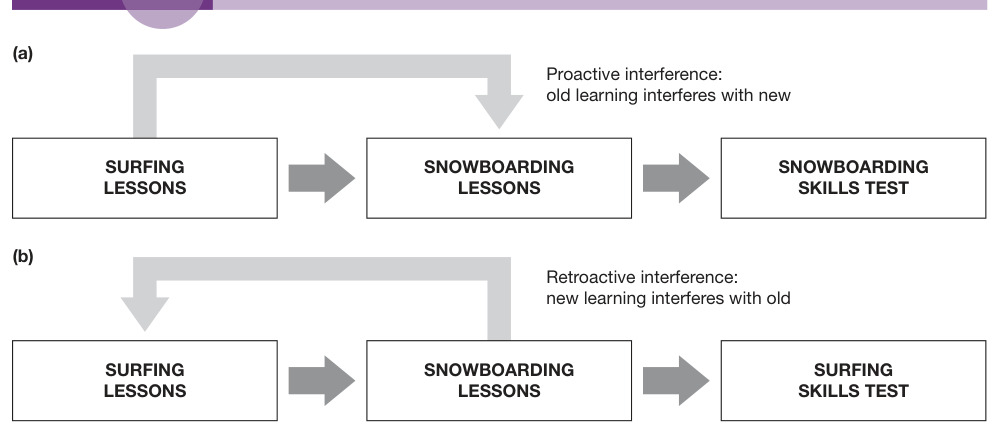
Hình 5.12: Minh họa (a) nhiễu chủ động và (b) nhiễu hồi tố — (a) BÀI HỌC LƯỚT SÓNG, BÀI HỌC TRƯỢT TUYẾT, KIỂM TRA KỸ NĂNG TRƯỢT TUYẾT: học cũ cản trở học mới; (b) BÀI HỌC LƯỚT SÓNG, BÀI HỌC TRƯỢT TUYẾT, KIỂM TRA KỸ NĂNG LƯỚT SÓNG: học mới cản trở học cũ.
Ý Nghĩa Thực Tiễn
Vì dung lượng trí nhớ có hạn, hãy giữ chỉ dẫn, tín hiệu bằng lời và phản hồi ngắn gọn, đơn giản. Hãy lặp lại những điểm học trọng yếu và tạo nhiều cơ hội ôn tập bằng hành động. Vì người học dễ giữ lại thông tin có ý nghĩa hơn, hãy liên hệ kỹ năng đang học với những kỹ năng họ đã học trước đó. Dùng nhãn bằng lời có ý nghĩa và phép so sánh để củng cố liên tưởng. Ví dụ, bài kiểm tra căng ở khớp gối gọi là thử nghiệm tụt xương chày hay thử nghiệm chùng phía sau được đặt tên như vậy vì “xương chày ‘tụt ra sau’ hay chùng ra sau trên xương đùi do trọng lực nếu dây chằng chéo sau bị rách” (Magee, 2008, tr. 773). Tương tự, trong quần vợt, người học được hướng dẫn “bắt tay” với cây vợt thay vì nhận một giải thích chi tiết khó nhớ hơn để truyền đạt cách cầm vợt. Cuối cùng, việc gom hoặc “ghép khối” nhiều vận động lại thành một đơn vị duy nhất là một phương pháp hiệu quả nhằm giảm lượng thông tin người học phải nhớ, như được minh họa trong Hoạt động Khám phá 5.7.
Hoạt Động Khám Phá 5.7: Gom Nhóm
Dưới đây là danh sách 21 chữ cái. Hãy nghiên cứu các chữ cái trong 15 giây rồi che danh sách lại. Dựa vào những gì bạn nhớ, hãy viết ra càng nhiều chữ cái càng tốt.
Danh sách các chữ cái được gom nhóm như sau: TRY CHU NKI NGT HEL ETT ERS.
Bạn làm thế nào? Bạn đã dùng chiến lược nào để nhớ các chữ cái?
Một chiến lược mà bạn có thể đã dùng để nhớ lại các chữ cái trong hoạt động này được gọi là gom nhóm (chunking). Nếu bạn nhìn vào ba chữ cái đầu tiên, chúng ghép thành từ try. Bằng cách gom các chữ cái thành một từ, giờ bạn chỉ phải nhớ một từ thay vì ba chữ cái riêng lẻ. Vì bộ nhớ ngắn hạn bị giới hạn dung lượng ở mức bảy cộng hoặc trừ hai mục, gom nhóm có thể tăng lượng thông tin có thể được ghi nhớ. Trên thực tế, như có thể bạn đã nhận ra, các chữ cái ghép thành câu sau: Try Chunking The Letters. Nếu bạn đã nhận ra mẹo này, việc nhớ cả 21 chữ cái đã trở nên dễ dàng!
ĐƯA VÀO THỰC HÀNH
Tình Huống Học Tập: Phục Hồi Chấn Thương Cổ Chân
Darren không nghĩ bong gân cổ chân là chuyện lớn. Sưng đã giảm và anh hỏi nhà vật lý trị liệu của mình tại sao anh không thể chỉ đeo một cái nẹp thay vì thực hiện tất cả các bài tập thăng bằng đó.
Kiểm Tra Kiến Thức
Nếu bạn là nhà vật lý trị liệu của Darren, bạn có đồng ý cho anh đeo nẹp không? Tại sao có hoặc tại sao không? Hãy so sánh câu trả lời của bạn với câu trả lời mẫu được cung cấp tại www.routledge.com/cw/coker.
NHÌN VỀ PHÍA TRƯỚC
Tại thời điểm này, sự phức tạp liên quan đến việc tạo ra vận động hẳn đã rõ ràng. Vô số thụ thể cung cấp thông tin đến các cấp độ khác nhau của CNS qua các đường hướng tâm để tích hợp. Các phản xạ được tích hợp tại tủy sống, trong khi thông tin cần tư duy có ý thức thì đi lên tủy sống đến các vị trí khác nhau của não, nơi nó được tích hợp và giải mã. Thông qua nỗ lực chung của nhiều cấu trúc não, gồm vỏ não đại não và hạch nền, các vận động được tổ chức và tín hiệu được gửi đến các cơ quan thực hiện để tạo ra đầu ra, được tiểu não liên tục giám sát.
Các chương từ 1 đến 5 đã tập trung vào các quá trình hành vi và thần kinh học ảnh hưởng đến hiệu suất. Giờ chúng ta sẽ dựa trên nền tảng kiến thức này về cách các vận động có kỹ năng được tạo ra để xem xét các quá trình liên quan đến việc tiếp thu và tinh chỉnh chúng. Chương tới mở đầu cuộc thảo luận này bằng cách xem xét đặc điểm của người học khi họ tiến triển từ người mới bắt đầu đến chuyên gia.
ĐIỂM NHẤN MẠNH
Sau khi đọc chương này, bạn nên biết:
- Hệ thần kinh chịu trách nhiệm về các quá trình làm nền tảng cho sự chuẩn bị, thực hiện và kiểm soát vận động.
- Thụ thể cảm giác có thể được phân loại thành thụ thể ngoại thụ, thụ thể nội thụ và thụ thể tự thân.
- Thị giác là hệ thống cảm giác chiếm ưu thế.
- Hệ tiêu có chức năng nhận diện các vật chủ yếu nằm ở vùng trung tâm của trường thị giác, trong khi hệ ngoại vi chịu trách nhiệm định vị và định hướng không gian.
- Hệ tiêu và hệ ngoại vi phối hợp với nhau để xử lý thông tin thị giác trong lúc vận động.
- Các thụ thể tự thân cung cấp thông tin về vị trí và vận động của cơ thể bằng cách phát hiện những thay đổi về sức căng cơ, vị trí khớp và thăng bằng thông qua cơ quan gân Golgi, thoi cơ, thụ thể cảm giác khớp và bộ tiền đình.
- Cảm giác tự thân cung cấp thông tin về vị trí ban đầu của cơ thể và các chi. Điều này làm cơ sở cho việc lập trình các lệnh vận động, đánh giá các vận động đang diễn ra bằng cách so sánh phản hồi tự thân với mục tiêu đã định, và cung cấp phản hồi do đáp ứng tạo ra có thể dùng để điều chỉnh ở lần thử tiếp theo.
- Tủy sống đóng vai trò là trung tâm phản xạ và là đường dẫn truyền thông tin cảm giác cùng vận động.
- Vỏ não đóng vai trò đáng kể trong việc tạo ra và kiểm soát vận động thông qua ba vùng chức năng chính (cảm giác, vận động và liên hợp), nơi diễn ra các quá trình giải mã và tích hợp.
- Tiểu não đóng vai trò then chốt trong phát hiện và hiệu chỉnh lỗi cùng duy trì tư thế và thăng bằng.
- Não có khả năng thay đổi cấu trúc tổ chức và, cuối cùng, chức năng của nó trong suốt cuộc đời.
- Học tập xảy ra khi thông tin được chuyển vào trí nhớ dài hạn.
Bài thực hành: Để hoàn thành bài thực hành của chương này, hãy truy cập www.routledge.com/cw/coker và chọn Lab 5, Balance.
CÂU HỎI ÔN TẬP
- Loại thụ thể quang học nào chuyên cho thị giác trong ánh sáng yếu? Loại nào chuyên cho độ sắc thị giác?
- Hãy so sánh và đối chiếu thị giác tiêu với thị giác ngoại vi. Loại nào liên quan đến thị giác ngoại vi?
- Hãy so sánh và đối chiếu cơ quan gân Golgi, thoi cơ, thụ thể cảm giác khớp và bộ tiền đình.
- Hãy giải thích cách thị giác được sử dụng trong lúc cầm nắm.
- Những vấn đề chức năng nào sẽ liên quan đến tổn thương các đường cột lưng? Đường ngoài tháp thì sao?
- Năm thành phần của cung phản xạ là gì? Hãy giải thích vì sao phản xạ nhanh hơn các vận động tự nguyện.
- Ý nghĩa của tính dẻo thần kinh là gì?
- Ba hệ thống trí nhớ là gì? Hãy so sánh từng hệ thống về dung lượng và thời gian duy trì.
- Hãy giải thích vì sao số điện thoại theo truyền thống gồm bảy chữ số. Nhiều vùng của Hoa Kỳ hiện dùng cách quay số mười chữ số. Bạn có dự báo vấn đề nào với hệ thống mới không? Nếu có, người gọi có thể dùng chiến lược nào để khắc phục?
- Hai chức năng của trí nhớ làm việc là gì?
Chương 6 — Các Giai Đoạn Học
Lớn lên ở vùng White Mountains của New Hampshire, Jenny được giới thiệu với môn trượt tuyết năm 5 tuổi và từ đó đến nay vẫn liên tục khắc những đường cong trên tuyết. Giờ đây, ở tuổi 11, cha mẹ đã đăng ký cho em vào trại huấn luyện thi đấu, và em không thể phấn khích hơn được nữa. Đây là bước đầu tiên để hiện thực hóa giấc mơ trở thành nhà vô địch Olympic và World Cup như thần tượng của em, Mikaela Shiffrin!
Cần gì để đi từ những sườn dốc dành cho trẻ mới tập đến trở thành một vận động viên trượt dốc xuống đỉnh cao? Để đạt được trình độ kỹ năng cao như các vận động viên đẳng cấp thế giới thể hiện đòi hỏi năng lực nền tảng cùng với vô số giờ làm việc chăm chỉ và luyện tập — luyện tập dựa trên các nguyên lý nền tảng ảnh hưởng đến tiếp thu kỹ năng và kiểm soát vận động, và luyện tập được thiết kế để đáp ứng nhu cầu thay đổi của người học khi người đó tiến triển qua quá trình học.
CÁC MÔ HÌNH VỀ GIAI ĐOẠN HỌC
Khi phát triển sự thành thạo kỹ năng vận động, dù là trong môn trượt tuyết đổ dốc hay học lại cách đi sau một tai nạn nghiêm trọng, người học đều tiến triển qua nhiều giai đoạn. Nhiều mô hình đã được đề xuất, mỗi mô hình xem xét sự tiến triển từ người mới bắt đầu đến chuyên gia dưới một góc nhìn khác nhau. Các mô hình này có thể giúp người thực hành xác định nhu cầu của người học trong suốt quá trình học và, từ đó, cho phép người thực hành lựa chọn các hoạt động hướng dẫn phù hợp. Khi tìm hiểu từng mô hình, bạn nên lưu ý ba điểm. Thứ nhất, dù các mô hình trình bày mỗi giai đoạn như một giai đoạn riêng biệt, trên thực tế một giai đoạn hòa nhập dần vào giai đoạn tiếp theo và các bước chuyển giữa các giai đoạn học không thể phân định rõ ràng (Fitts & Posner, 1967; Christina & Corcos, 1988). Thứ hai, một người học có thể ở các giai đoạn khác nhau đối với các kỹ năng khác nhau. Ví dụ, một cầu thủ bóng đá có thể được xem là rất thành thạo trong rê bóng nhưng chỉ là người mới bắt đầu với cú đánh đầu, nếu kỹ năng sau mới chỉ được giới thiệu. Cuối cùng, các giai đoạn học không phụ thuộc vào tuổi tác. Hãy hỏi Landon Shuffett, một cầu thủ bi-a chuyên nghiệp được xem là chuyên gia khi mới chỉ 7 tuổi! (Bạn có thể tìm hiểu thêm về anh ấy tại trang web bên cạnh.)
- Người chơi bi-a Landon Shuffett ở tuổi 7: https://www.youtube.com/watch?v=TKQD2Flo9IY8
Mô Hình Ba Giai Đoạn Của Fitts Và Posner
Để thúc đẩy tiếp thu kỹ năng, người thực hành phải hiểu điều gì đang diễn ra trong quá trình học dưới góc nhìn của người học. Một mô hình phổ biến do các nhà tâm lý học Fitts và Posner đề xuất năm 1967 cho rằng người học đi qua ba giai đoạn riêng biệt. Các giai đoạn này được xác định bằng những xu hướng hành vi mà người học thể hiện ở các thời điểm khác nhau trong suốt quá trình học, như thể hiện trong Hình 6.1.

Hình 6.1: Mô hình học ba giai đoạn của Fitts và Posner
Giai đoạn nhận thức (Cognitive Stage) — Phát triển mô hình vận động cơ bản. Giai đoạn liên kết (Associative Stage) — Hoàn thiện mô hình vận động. Giai đoạn tự động (Autonomous Stage) — Thực hiện vận động gần như tự động.
Giai Đoạn Nhận Thức
Giai đoạn đầu tiên, giai đoạn nhận thức, được đặt tên theo mức độ hoạt động nhận thức cao của nó. Trong giai đoạn này, người học lần đầu được giới thiệu với kỹ năng vận động mới, và nhiệm vụ chính của người đó là hình thành sự hiểu biết về các yêu cầu của vận động — hay nói cách khác, mô hình phối hợp cơ bản (Newell, 1985). Người học ở giai đoạn này có thể có rất nhiều câu hỏi. Hãy nhớ lại trải nghiệm tung bắt bóng của bạn trong Chương 1. Những câu hỏi như “Làm thế nào để tôi giữ được bóng?”, “Tôi thả bóng ra khi nào và bằng cách nào?”, “Tôi ném bóng cao đến đâu?”, “Mô hình vận động là gì?” cùng vô số câu hỏi khác có thể đã hiện lên trong tâm trí. Để tìm ra lời giải cho những câu hỏi này, người học thường thử nhiều kỹ thuật và chiến lược khác nhau theo cách thử–sai. Bên cạnh đó, những kinh nghiệm vận động trong quá khứ sẽ được tái cấu trúc nhằm giải quyết vấn đề vận động hiện tại. Các vận động tạo ra vì thế thiếu sự đồng bộ và trông gãy gọn, có chủ đích. Thêm vào đó, trong suốt quá trình này, nhu cầu chú ý rất cao và chỉ giới hạn ở việc tạo ra vận động. Hệ quả là sẽ rõ rệt những khó khăn khi người học được yêu cầu căn chỉnh thời điểm vận động của mình cùng với một vật thể hoặc sự kiện bên ngoài. Thực hiện ở giai đoạn này thiếu nhất quán và đặc trưng bởi nhiều lỗi, thường mang tính thô. Thông qua hướng dẫn bằng lời nói và trình diễn mẫu hiệu quả, và/hoặc việc điều chỉnh có chủ đích các ràng buộc của nhiệm vụ và môi trường, người thực hành có thể thúc đẩy sự tiến triển của người học qua giai đoạn này. Các hướng dẫn nên tính đến thực tế là người học dễ tái cấu trúc kinh nghiệm vận động quá khứ thành mô hình mới hơn nếu những điểm tương đồng và khác biệt giữa chúng được chỉ ra. Hơn nữa, trong khi một người quan sát được đào tạo có thể dễ dàng nhận ra các lỗi đang mắc phải, thì người học lại thiếu khả năng xác định nguyên nhân cụ thể của một lỗi và không thể thực hiện những điều chỉnh cần thiết. Người thực hành đóng vai trò then chốt không chỉ trong việc phát hiện và sửa lỗi, mà còn trong việc giúp người học làm điều tương tự.
Giai Đoạn Liên Kết
Giai đoạn thứ hai, giai đoạn liên kết, được đặc trưng bởi những cải thiện rõ rệt về thực hiện. Sau khi đã thử nhiều chiến lược vận động có thể có, người học ở giai đoạn này bắt đầu cam kết tinh chỉnh một mô hình vận động cụ thể.
Mô hình ấy trở nên nhất quán hơn, và các lỗi dần được giảm bớt. Chẳng hạn, một cầu thủ chuyền bóng ở giai đoạn liên kết đầu có thể thực hiện một đường chuyền sạch sẽ nhưng không phải lúc nào cũng đạt độ chính xác mong muốn. Cũng cần lưu ý rằng khi kỹ năng tiếp tục phát triển, nhu cầu chú ý vào bản thân vận động giảm đi, cho phép người học chú ý đến những việc khác. Những sự mời gọi hành động mới có thể được nhận biết, làm tăng khả năng hành động và khả năng điều chỉnh vận động theo các điều kiện môi trường khác nhau. Điều này giúp người học căn chỉnh thời điểm vận động của mình tốt hơn với các vật thể và sự kiện bên ngoài. Ở giai đoạn này, người học ngày càng có khả năng phát hiện nguyên nhân gây lỗi rồi xây dựng các chiến lược phù hợp để loại bỏ chúng.
Với những đặc điểm thay đổi của người học, vai trò của người thực hành ở giai đoạn này trở thành người thiết kế luyện tập, với nhiệm vụ điều chỉnh các ràng buộc then chốt, mang đến cho người học những cơ hội mới cho hành động và thích ứng. Chìa khóa ở đây là khái niệm thiết kế đại diện (representative design), theo đó các trải nghiệm học được tạo ra để mô phỏng điều kiện thực hiện và những sự mời gọi hành động mà người học sẽ đối mặt trong thi đấu, hoặc khi sử dụng kỹ năng một cách giải trí hoặc trong hoạt động hằng ngày (Orth, van der Kamp, & Button, 2019). Điều quan trọng là, đối với kỹ năng mở, những trải nghiệm này nên giúp phát triển chiến lược tìm kiếm thị giác khi người học ngày càng có khả năng hướng sự chú ý của mình vào các khía cạnh của môi trường thực hiện. Cuối cùng, trong suốt giai đoạn này, việc cung cấp phản hồi hiệu quả tiếp tục đóng vai trò quan trọng, không chỉ để hướng dẫn tinh chỉnh kỹ năng mà còn để phát triển thêm năng lực phát hiện và sửa lỗi của người học.
Giai Đoạn Tự Động
Bước chuyển sang giai đoạn cuối cùng trong mô hình của Fitts và Posner, giai đoạn tự động, đòi hỏi vô số giờ luyện tập. Trên thực tế, không phải người học nào cũng đạt được giai đoạn cuối này. Trong giai đoạn tự động, thực hiện đạt đến mức thành thạo cao nhất và trở nên tự động hóa. Sự chú ý của người học trong giai đoạn này được phân bổ lại cho việc ra quyết định chiến lược. Bên cạnh đó, người học có thể thực hiện đồng thời nhiều nhiệm vụ. Cuối cùng, người học ở giai đoạn này nhất quán và tự tin, mắc ít lỗi, và nhìn chung có thể phát hiện và sửa những lỗi vẫn xảy ra.
CEREBRAL CHALLENGE 6.1 — Thử Thách Trí Não
Hãy tạo một bảng với các tiêu đề cột như dưới đây. Chọn một kỹ năng hoặc nhiệm vụ và lập danh sách các mẹo thực tiễn mà người thực hành có thể làm theo, dựa trên mô tả của Fitts và Posner về các đặc điểm hành vi của người học trong mô hình ba giai đoạn của họ.
KỸ NĂNG/NHIỆM VỤ — NHẬN THỨC — LIÊN KẾT — TỰ ĐỘNG.
HOẠT ĐỘNG KHÁM PHÁ 6.1 — Phân Tích Giai Đoạn Học
Hoạt động 1
Quan sát và so sánh thực hiện đường chuyền bằng cẳng tay của từng cá nhân tại các liên kết web sau:
- www.youtube.com/watch?v=dLyraHkLnrg
- www.youtube.com/watch?v=ccq-b-SKXMU
- www.youtube.com/watch?v=7_CW6jHRYuo
- www.youtube.com/watch?v=lFwltz8xAgE
Dựa trên những quan sát của bạn, hãy dùng mô hình của Fitts và Posner để xác định giai đoạn học mà mỗi người thực hiện đang ở; liệt kê các đặc điểm hành vi cụ thể đã dẫn đến quyết định của bạn.
Hoạt động 2
Quan sát một cuộc thi hoặc buổi luyện tập thể thao thanh thiếu niên trong một kỹ năng do bạn chọn. Chọn năm cá nhân để theo dõi kỹ. Dựa trên những quan sát của bạn, hãy xác định giai đoạn học mà mỗi người thực hiện đang ở và liệt kê những đặc điểm hành vi cụ thể đã dẫn đến quyết định của bạn.
Người ta có thể lầm tưởng rằng khi người học đã đạt đến giai đoạn này, vai trò của người thực hành là tối thiểu. Điều quan trọng cần nhớ là, dù sự thành thạo kỹ năng đã đạt mức cao nhất, vẫn còn chỗ cho cải thiện. Người thực hành vẫn chịu trách nhiệm về thiết kế luyện tập cùng việc phát hiện và sửa lỗi. Những cải thiện về thực hiện rất khó đạt được ở trình độ này, và sự tiến bộ diễn ra chậm đến mức người học có thể nản lòng và mất đi động lực cần thiết để phấn đấu đạt được chúng; người thực hành phải đóng vai trò người tạo động lực để giúp người học đạt đến tiềm năng của mình. Hãy dùng Hoạt động Khám phá 6.1 để áp dụng các giai đoạn của Fitts và Posner vào những người thực hiện ngoài đời thực.
Mô Hình Hai Giai Đoạn Của Gentile
Thay vì chỉ mô tả đặc điểm của người học ở mỗi pha của quá trình học, Gentile (1972, 2000) tiếp cận việc xác định các giai đoạn học từ góc nhìn của người học. Cụ thể hơn, mô hình của Gentile, được minh họa trong Hình 6.2, nhấn mạnh mục tiêu của người học và ảnh hưởng của đặc điểm nhiệm vụ cùng môi trường đến mục tiêu đó.
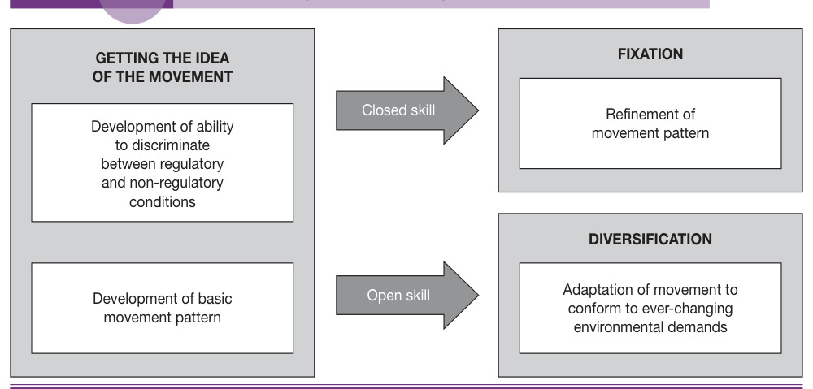
Hình 6.2: Mô hình học hai giai đoạn của Gentile
Nắm bắt ý tưởng về vận động (Getting the Idea of the Movement) — Phát triển khả năng phân biệt giữa các điều kiện điều tiết và không điều tiết. Cố định (Fixation) — Hoàn thiện mô hình vận động; phát triển mô hình vận động cơ bản. Đa dạng hóa (Diversification) — Thích ứng vận động để phù hợp với các yêu cầu môi trường luôn thay đổi. Kỹ năng đóng (Closed skill) — Kỹ năng mở (Open skill).
Giai Đoạn “Nắm Bắt Ý Tưởng Về Vận Động”
Giai đoạn học đầu tiên trong mô hình của Gentile được gọi là “nắm bắt ý tưởng về vận động.” Theo Gentile, sau khi người học được giới thiệu với một kỹ năng vận động mới, mục tiêu trước hết của người đó là hình thành sự hiểu biết về các yêu cầu vận động cần thiết để đáp ứng những đòi hỏi do đặc điểm của nhiệm vụ và môi trường mà nhiệm vụ được thực hiện đặt ra, rồi sau đó tổ chức một vận động tương ứng. Điều then chốt cho sự thành công của người học trong việc đạt được mục tiêu này là khả năng phân biệt giữa các điều kiện điều tiết và các điều kiện không điều tiết. Như bạn sẽ nhớ lại từ Chương 1, điều kiện điều tiết là những điều kiện môi trường quy định các đặc điểm vận động cần thiết để thực hiện nhiệm vụ. Ngược lại, điều kiện không điều tiết là những yếu tố không liên quan cố hữu đến việc tạo ra đáp án vận động phù hợp. Để tạo ra một mô hình vận động đáp ứng được những đòi hỏi do điều kiện nhiệm vụ và môi trường đặt ra, người học phải có khả năng chú ý chọn lọc vào thông tin liên quan mà vẫn bỏ qua thông tin không liên quan.
Hướng dẫn và luyện tập trong giai đoạn học ban đầu nên thúc đẩy sự phát triển của một mô hình vận động cơ bản. Để làm được điều này, người thực hành phải truyền đạt rõ ràng mục tiêu của nhiệm vụ cho người học, dùng hướng dẫn bằng lời nói, trình diễn mẫu và/hoặc khám phá có hướng dẫn. Bên cạnh đó, người thực hành phải cho người học biết những đặc điểm môi trường nào là điều tiết và những đặc điểm nào là không điều tiết, đồng thời hướng sự chú ý và tìm kiếm thị giác của người đó vào các kích thích liên quan.
Giai Đoạn Cố Định/Đa Dạng Hóa
Khi người học đã nắm được ý tổng quát về vận động cần thiết, người đó tiến sang giai đoạn thứ hai và cũng là giai đoạn cuối, cố định/đa dạng hóa. Trong giai đoạn này, mục tiêu của người học là tinh chỉnh. Bản chất của sự tinh chỉnh ấy phụ thuộc vào mức độ có thể đoán trước của môi trường mà kỹ năng được thực hiện. Hệ quả là mục tiêu của người học sẽ khác nhau đối với kỹ năng đóng và kỹ năng mở. Kỹ năng đóng — chẳng hạn như băng mắt cá chân, thực hiện một bài trên xà cân bằng hoặc chơi nhạc cụ — được thực hiện trong một môi trường cố định, ổn định. Thực hiện thành công những kỹ năng này đòi hỏi người học phải có khả năng tái tạo mô hình vận động một cách nhất quán và chính xác (cố định). Ở chiều ngược lại, kỹ năng mở được thực hiện trong môi trường không đoán trước được và luôn thay đổi. Vì vậy, người thực hiện phải có khả năng liên tục điều chỉnh đáp án để phù hợp với những đòi hỏi luôn thay đổi đó (đa dạng hóa). Với kỹ năng mở, mục tiêu của người học là đa dạng hóa mô hình vận động. Chẳng hạn, một người dùng xe lăn phải có khả năng đổi hướng, đi qua nhiều bề mặt và độ dốc khác nhau, cùng với việc vượt qua chướng ngại vật. Tương tự, một cầu thủ khúc côn cầu phải có khả năng sút puck từ vô số góc độ, khoảng cách và vị trí, cũng như né tránh các cử động của đồng đội và đối thủ.
Khi người học đã đến giai đoạn cố định/đa dạng hóa, chiến lược hướng dẫn được dùng sẽ phụ thuộc vào việc kỹ năng là mở hay đóng. Đối với một kỹ năng đóng — chẳng hạn cú ném phạt, trong đó các điều kiện điều tiết giữ nguyên ở mỗi lần thực hiện liên tiếp — luyện tập nên phản ánh những điều kiện cố định đó (rổ cùng độ cao, cú ném thực hiện từ sau vạch ném phạt, v.v.), đồng thời cho người học tiếp xúc với nhiều tín hiệu không điều tiết thường gặp (tiếng ồn của khán giả, tầm quan trọng của cú ném). Nếu các điều kiện điều tiết thay đổi giữa các lần thử — như trường hợp cú putt trong golf, một kỹ năng đóng có tính biến thiên giữa các lần thử — người học nên luyện tập trong các điều kiện điều tiết khác nhau có thể xuất hiện trong điều kiện chuẩn (ví dụ, putt từ nhiều vị trí và khoảng cách khác nhau trên green, kể cả các độ dốc khác nhau).
Luyện tập cho kỹ năng mở cũng nên phản ánh nhiều điều kiện điều tiết khác nhau. Bởi người học thực hiện kỹ năng mở phải có khả năng đáp trả thành thạo trong những điều kiện môi trường luôn thay đổi và thường không đoán trước được, các biến thể mô phỏng điều kiện chuẩn có thể xảy ra nên được đưa vào luyện tập một cách có hệ thống. Cách tiếp cận này không chỉ giúp người học tích lũy được kho tàng phong phú hơn các khả năng vận động mà còn hỗ trợ phát triển kỹ năng ra quyết định thiết yếu. Vì việc ra quyết định phụ thuộc vào khả năng phát hiện các tín hiệu điều tiết và bỏ qua các kích thích không điều tiết của người học, người thực hành nên tiếp tục làm nổi bật những đặc điểm điều tiết và không điều tiết của môi trường, đồng thời hướng sự chú ý và tìm kiếm thị giác của người học vào các nguồn thông tin liên quan.
CEREBRAL CHALLENGE 6.2 — Thử Thách Trí Não
- Hãy xác định chiến lược nào — cố định (F) hay đa dạng hóa (D) — phù hợp hơn để luyện tập từng kỹ năng sau:
- a. Cú ném phạt (free throw).
- b. Kèm người (bóng đá, bóng rổ, v.v.).
- c. Chuyển từ tư thế ngồi sang tư thế đứng.
- d. Bài tập trên sàn trong thể dục dụng cụ.
- e. Lên và xuống cầu thang.
- f. Nhảy cầu.
- Hãy xem lại mô hình tích hợp nhằm thúc đẩy học vận động và thực hiện đã được giới thiệu trong Chương 1. Giải thích vì sao giai đoạn học là một thành phần quan trọng của hồ sơ tình huống.
CEREBRAL CHALLENGE 6.3 — Thử Thách Trí Não
Hãy tạo một bảng với các tiêu đề cột như dưới đây. Chọn một kỹ năng hoặc nhiệm vụ và lập danh sách các mẹo thực tiễn mà người thực hành có thể làm theo, dựa trên mô hình học hai giai đoạn của Gentile.
KỸ NĂNG/NHIỆM VỤ — NẮM BẮT Ý TƯỞNG VỀ VẬN ĐỘNG — CỐ ĐỊNH — ĐA DẠNG HÓA.
NHỮNG THAY ĐỔI Ở NGƯỜI HỌC VÀ TRONG THỰC HIỆN
Như đã nêu ở trên, rất khó xác định với bất kỳ sự chắc chắn nào thời điểm chính xác khi người học chuyển sang giai đoạn tiếp theo. Vậy làm thế nào để chúng ta biết rằng sự học đã xảy ra? Một trong những phương pháp phổ biến nhất để đánh giá tiến bộ của một cá nhân là ghi nhận những thay đổi trong hành vi vận động có thể quan sát được theo thời gian. Phần này thảo luận một số chỉ báo thực hiện đã được xác định thông qua việc nghiên cứu người thực hiện mới bắt đầu so với chuyên gia, và có thể cung cấp manh mối cho người thực hành về tiến triển của người học.
Mô Hình Vận Động
Không khó để phân biệt cú vung gậy của một cầu thủ bóng chày chuyên nghiệp với cú vung của một người mới bắt đầu. Dù cả hai đều có thể đạt được mục tiêu của nhiệm vụ,
tức là đánh trúng bóng, nhưng mô hình vận động mà họ dùng để làm vậy lại rất khác nhau. Tuy nhiên, khi trình độ của người đánh mới bắt đầu được cải thiện, những khác biệt này sẽ giảm dần. Tương tự, những suy giảm do đột quỵ có thể gây khó khăn trong việc đi lại. Thông qua huấn luyện dáng đi chuyên sâu, hy vọng rằng bệnh nhân sẽ tiến triển từ những bước chậm chạp, có chủ đích (như trong video bên cạnh) sang một mô hình dáng đi phối hợp và hiệu quả hơn.
- Đi lại sau đột quỵ: https://www.youtube.com/watch?time_continue=15&v=g__BYaS9viw&feature=emb_logo
Gia Tăng Phối Hợp Và Kiểm Soát
Sự tiến triển của người học trong tiếp thu kỹ năng thường dẫn đến một số thay đổi liên quan đến việc tạo ra vận động; có lẽ những thay đổi đáng chú ý nhất nằm ở sự phối hợp và kiểm soát. Như đã học trong Chương 4, việc tổ chức một mô hình vận động nhằm đạt hiệu quả mục tiêu của nhiệm vụ đòi hỏi người học phải phối hợp và kiểm soát nhiều yếu tố độc lập hay các bậc tự do. Thường thì ở các giai đoạn đầu của tiếp thu kỹ năng, người học cố gắng đạt được điều này bằng cách đóng băng hoặc cố định các cử động có thể có của một khớp, để các chi sẽ hoạt động như một đơn vị hay một đoạn duy nhất. Nói cách khác, người mới bắt đầu giảm số bậc tự do sẵn có xuống mức dễ quản lý hơn nhằm hoàn thành mục tiêu của nhiệm vụ. Chiến lược này, được gọi là đóng băng các bậc tự do (freezing the degrees of freedom) (Bernstein, 1967; Whiting, 1984), tạo ra những vận động cứng đơ, gượng gạo và căn chỉnh thời điểm kém hiệu quả. Khi người học tiến triển trong phát triển kỹ năng, những bậc tự do từng bị giới hạn sẽ dần được giải phóng và được tổ chức lại tập thể thành một mô hình vận động mới mượt mà hơn, nhanh hơn và giống với vận động đúng hơn.
Hãy xem xét kiểu vung vợt của một người chơi racquetball mới bắt đầu so với của một người chơi rất thành thạo. Người mới bắt đầu sẽ cố kiểm soát cú vung bằng cách hạn chế cử động xảy ra ở mỗi khớp. Hệ quả là người này ban đầu dùng cú vung thẳng tay, trong đó vợt đơn giản được xem như một phần nối dài cứng nhắc của cánh tay (xem Hình 6.3 (a)). Hơn nữa, khả năng lớn là phần thân dưới vẫn giữ không hoạt động. Mô hình phối hợp thể hiện ở một người chơi rất thành thạo, như mô tả trong Hình 6.3 (b), kết hợp nhiều cử động khớp tuần tự (cả thân trên lẫn thân dưới); nhờ hiệu quả sinh cơ học, vận động nhanh hơn đáng kể. Bằng chứng cho sự gia tăng vận tốc này, cũng như cho ý niệm đóng băng rồi dần giải phóng hoặc mở đông các bậc tự do sẵn có, đã được tìm thấy trong các nghiên cứu về tiếp thu cú đánh thuận tay trong racquetball (Southard & Higgins, 1987), cú đá bóng trong bóng đá (Anderson & Sidaway, 1994), học một kỹ năng slalom trên thiết bị trượt tuyết trong nhà (Vereijken et al., 1992), và so sánh chân đá ưu tiên với chân đá không ưu tiên trong cú đá drop punt (Ball, 2011).
Dù chiến lược kiểm soát điển hình được áp dụng là đóng băng ban đầu rồi dần giải phóng các bậc tự do, một số ngoại lệ đã được ghi nhận. Một ví dụ là nghiên cứu trường hợp của Hodges và cộng sự (2005), trong đó sự thay đổi phối hợp
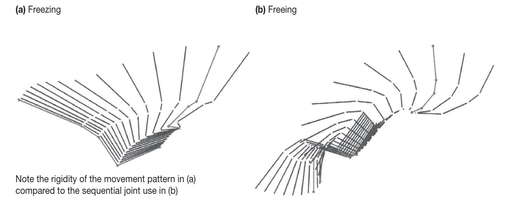
Hình 6.3: Minh họa động học về (a) đóng băng và (b) giải phóng các bậc tự do của cánh tay và vợt trong một cú đánh quyết định môn racquetball
Ghi chú sự cứng đơ của mô hình vận động ở (a) so với việc dùng các khớp tuần tự ở (b).
được kiểm tra trong một nhiệm vụ đá bóng. Cụ thể, nhiệm vụ đòi hỏi một cử động giống như múc bóng vượt qua một rào thấp tới một mục tiêu. Qua luyện tập, tầm vận động (ROM) của các khớp gối và mắt cá chân giảm đi, trong khi tầm vận động ở khớp háng lại tăng lên. Chow, Davids, Button và Koh (2007), khi nghiên cứu các mô hình vận động xuất hiện như hệ quả của sự tương tác giữa ràng buộc nhiệm vụ và giai đoạn học trong một nhiệm vụ đá bóng, đã báo cáo những phát hiện tương tự. Đối với cú sút bóng bổng trong bóng đá, họ ghi nhận một mô hình vận động liên quan đến tầm vận động lớn hơn ở các khớp xa và ít tham gia khớp hơn ở các đoạn gần, ở người chơi thành thạo và trung cấp, so với tầm vận động lớn hơn của chân đá mà người mới bắt đầu thể hiện. Các tác giả cho rằng “có thể rằng người chơi thành thạo và trung cấp có khả năng tối ưu hóa tốt hơn động lực liên đoạn quanh háng và gối để cho phép một vận động chức năng xuất hiện” (tr. 477). Nói cách khác, giải pháp vận động tối ưu cho các ràng buộc nhiệm vụ đặt ra — mãi đến các giai đoạn học sau mới được phát hiện — đòi hỏi tầm vận động lớn hơn ở một khớp và nhỏ hơn ở khớp kia.
Một đề xuất khác được đưa ra là sự xuất hiện của một mô hình phối hợp cụ thể và hướng của việc giải phóng hay đóng băng mang tính đặc thù theo nhiệm vụ (Hong & Newell, 2006; Newell et al., 2003; Palmer et al., 2018). Guimarães et al. (2020) đã tiến hành một rà soát hệ thống để nghiên cứu ý niệm này. Kết quả của họ gợi ý rằng chiến lược kiểm soát bậc tự do mà người học áp dụng phụ thuộc vào sự tương tác giữa phân loại của một kỹ năng và mục tiêu của nó, nhưng họ cũng khuyến nghị cần thêm nghiên cứu để khám phá đầy đủ mối quan hệ này. Dù sao đi nữa, người thực hành phải rất thành thạo không chỉ trong kiến thức về các chỉ báo thực hiện đặc thù theo kỹ năng mà còn trong phân tích kỹ năng.
GHI CHÚ NGHIÊN CỨU (RESEARCH NOTES)
Konczak và các cộng sự (2009) quan tâm đến cách người mới bắt đầu chơi vĩ cầm ở tuổi trưởng thành và tuổi thiếu niên học cách tạo ra các cử động kéo vĩ. Cụ thể hơn, họ phân tích sự phối hợp khớp và độ chính xác của các cử động cánh tay kéo vĩ trong lúc biểu diễn “Twinkle, Twinkle, Little Star” (Biến tấu A của Suzuki), để xem việc học vĩ cầm có được đặc trưng bởi đóng băng rồi giải phóng các bậc tự do hay không. Mười trẻ em và bốn người lớn với mức độ kinh nghiệm khác nhau đã tham gia nghiên cứu. Tám trẻ được xem là người chơi mới bắt đầu với dưới 800 giờ luyện tập cộng dồn trong suốt cuộc đời. Hai trẻ còn lại có khoảng 2.300 giờ luyện tập và được phân loại là người chơi trình độ cao. Nhóm người lớn gồm một người mới bắt đầu (280 giờ luyện tập), một người trình độ cao (1.488 giờ luyện tập) và hai chuyên gia với hơn 10.000 giờ luyện tập cộng dồn. Ba lần thử được thực hiện, và cử động của cánh tay kéo vĩ, cây vĩ cùng tư thế của cây vĩ cầm được phân tích bằng hệ thống ghi hình chuyển động ba chiều. Cụ thể, động học của cây vĩ — bao gồm độ chính xác không gian của các cử động kéo vĩ và các dịch chuyển góc tương ứng của khớp ở cánh tay kéo vĩ — đã được xác định. Kết quả cho thấy việc học kiểm soát cây vĩ không đi theo kiểu đóng băng rồi giải phóng các bậc tự do, mà thay vào đó được đặc trưng bởi sự đóng băng khớp có chọn lọc. Việc đóng băng khớp vai tăng lên theo kinh nghiệm học tập, dù chỉ trong mặt phẳng xung dọc (các cử động gập/duỗi). Ngược lại, người chơi trình độ cao tạo ra chuyển động biên độ lớn hơn ở khớp khuỷu tay. Thêm vào đó, người mới bắt đầu chơi vĩ cầm ở cả trẻ em lẫn người lớn dùng những chiến lược tương tự để giới hạn các bậc tự do, khiến các tác giả cho rằng sự kiểm soát mang tính đặc thù theo nhiệm vụ chứ không phụ thuộc vào tuổi tác.
Hoạt Động Cơ Bắp Linh Hoạt Hơn
Đi kèm với sự tái cấu trúc của hệ thống nhằm tạo ra một mô hình phối hợp mới là sự thay đổi trong hoạt động cơ bắp. Khi người học ngày càng thành thạo, số cơ được kích hoạt cần thiết để tạo ra một vận động sẽ giảm xuống chỉ còn những cơ cơ bản cho việc thực hiện đúng. Thêm vào đó, thời điểm và trình tự kích hoạt các cơ cũng được thay đổi. Vận động lành nghề là kết quả của hành động phối hợp giữa các nhóm cơ (Hall, 2019), nhưng ở giai đoạn đầu của quá trình học, chu kỳ kích hoạt cơ bị sai thời điểm. Điều này đã được ghi nhận trong các kỹ năng thể thao (ví dụ, Jaegars et al., 1989; Lay et al., 2002), các nhiệm vụ vận động nhanh bằng ngón tay và cánh tay (ví dụ, Schneider et al., 1989; Gabriel & Boucher, 1998; Carson & Riek, 2001), và các nhiệm vụ nhắm mục tiêu (ví dụ, Shemmell et al., 2005). Qua luyện tập, các kiểu kích hoạt đúng được thiết lập và vận động trở nên linh hoạt hơn.
Chi Phí Năng Lượng Hiệu Quả Hơn
Khác với các chuyên gia, những người có vận động trông như không tốn sức, người mới bắt đầu kém hiệu quả về mặt cơ học. Điều này dễ thấy ở những người mới học bơi đang học
Hình 6.4: Một cầu thủ xe đạp chuyên nghiệp chỉ dùng những cơ thiết yếu cần thiết để tạo ra một vận động lành nghề, linh hoạt và có vẻ như không tốn sức
cú đạp chân vịt. Vì cơ học kém, nhiều người mới bắt đầu ban đầu không tiến về phía trước, và một số thậm chí còn đi lùi lại trong nước! Bối rối vì không tiến được qua hồ bơi, họ thường đạp mạnh hơn, nhưng vô ích. Cuối cùng mệt mỏi sẽ xuất hiện, và họ phải nghỉ trước khi thử lại kỹ năng. Dễ hiểu là người mới học bơi tiêu tốn rất nhiều năng lượng (và cả sự bực bội) trong nỗ lực của mình. Tuy nhiên, chúng ta biết rằng luyện tập mang lại sự phối hợp tốt hơn, chỉ sử dụng những cơ cần thiết và độ chính xác cao hơn trong kích hoạt cơ. Bạn có thể tự quan sát điều này bằng cách đến một hồ bơi địa phương và trả lời các câu hỏi trong Hoạt động Khám phá 6.2. Thông qua luyện tập, vận động trở nên hiệu quả hơn, và lượng năng lượng cần để thực hiện chúng giảm đi. Cuối cùng, sự giảm chi phí năng lượng này sẽ giúp một người từng bực bội trước đó đi được quãng đường xa hơn với ít lần nghỉ hơn. Để biết thêm thông tin về năng lượng học của vận động con người, xem Sparrow (2000).
Tăng Tính Nhất Quán
Một cách khác để đánh giá tiến bộ của người học là qua những thay đổi về tính nhất quán trong thực hiện. Nhớ lại từ Chương 1 rằng học được định nghĩa là một thay đổi tương đối bền vững trong khả năng thực hiện một kỹ năng vận động của một người, như kết quả của luyện tập hoặc kinh nghiệm. Tính nhất quán gia tăng là dấu hiệu của một thay đổi tương đối bền vững (Yang & Scholz, 2005). Tuy cần lưu ý rằng, dù một người học có thể tái tạo một hành động một cách nhất quán, điều đó không nhất thiết có nghĩa là người đó thực hiện kỹ năng đúng. Người thực hành nên xem xét một số biến số thực hiện trước khi đưa ra phán đoán về sự học. Dù tính nhất quán gia tăng có thể là dấu hiệu của việc học, người thực hành cũng có thể nhìn vào sự xuất hiện của thực hiện không nhất quán để tìm manh mối về tiếp thu kỹ năng. Như đã gợi ý ở trên, một người học có thể phát triển một mô hình vận động nhất quán nhưng về căn bản là sai. Trừ khi vận động được sửa lại, tiến bộ trong tương lai sẽ bị cản trở. Để thay đổi một vận động sai căn bản, người học phải học các đặc điểm bất biến mới, nghĩa là học một chương trình vận động mới. Theo lý thuyết hệ thống động lực (xem Chương 4), người học phải chuyển từ một trạng thái
HOẠT ĐỘNG KHÁM PHÁ 6.2 — Quan Sát: Người Bơi Chuyên Gia So Với Người Mới Bắt Đầu
Hãy đến một hồ bơi địa phương.
- a. Theo dõi một người mới học bơi thực hiện kiểu bơi tự do trong vài phút. Mô tả kỹ thuật của người đó. Liệt kê các cơ tham gia thực hiện kỹ thuật ấy. Sau đó quan sát một người bơi tự do thành thạo hơn. Mô tả kỹ thuật của người đó. Một lần nữa, ghi chú các cơ tham gia vào thực hiện.
- b. Bạn đã quan sát những khác biệt về thể chất nào giữa cách hai người học thực hiện kiểu bơi tự do?
sang một trạng thái ổn định mới (một sự chuyển pha). Sự chuyển tiếp này, bất kể được mô tả thế nào, ban đầu sẽ được đặc trưng bởi tính không nhất quán gia tăng khi người học cố gắng từ bỏ vận động cũ để chuyển sang mô hình phối hợp mới. Cuối cùng, với luyện tập, người học sẽ bắt đầu tạo ra vận động mới, và với luyện tập tiếp tục, vận động đó sẽ trở nên nhất quán.
Chú Ý
Những thay đổi về cả lượng chú ý có ý thức dành cho việc thực hiện vận động lẫn sự phân bổ chú ý thị giác cũng đi kèm với sự phát triển kỹ năng. Những thay đổi này dẫn đến việc chuẩn bị vận động nhanh hơn, chính xác hơn và sự giảm tương ứng về thời gian đáp án.
GHI CHÚ NGHIÊN CỨU (RESEARCH NOTES)
Dùng một nhiệm vụ chèo thuyền, Lay và cộng sự (2002) đã kiểm tra ảnh hưởng của luyện tập đến phối hợp và kiểm soát, chi phí năng lượng trao đổi chất và kích hoạt cơ. Sáu tình nguyện viên nam khỏe mạnh, không có kinh nghiệm chèo thuyền, đã chèo trên một máy ergometer với công suất không đổi định trước là 100 W trong mười buổi, mỗi buổi 16 phút. Dữ liệu cho thấy tính kinh tế vận động được cải thiện dựa trên sự giảm đáng kể mức tiêu thụ oxy và cảm giác nỗ lực. Bên cạnh đó, các nhà nghiên cứu phát hiện phương sai thấp hơn đáng kể ở lực đỉnh tác dụng lên tay cầm của máy và sự giảm đáng kể nhịp chèo. Hơn nữa, dữ liệu điện cơ cho thấy kích hoạt cơ giảm đi và phối hợp tăng lên dựa trên những thay đổi trong kiểu kích hoạt. Vì vậy, những kết quả này chứng minh chi phí năng lượng trao đổi chất của thực hiện giảm đi và sự phối hợp cùng kiểm soát được cải thiện nhờ luyện tập.
CEREBRAL CHALLENGE 6.4 — Thử Thách Trí Não
Vừa mới giới thiệu một lớp bóng đá mới bắt đầu với kỹ năng rê bóng, giáo viên thiết kế một bài tập trong đó người học ghép cặp và một người rê bóng đến đầu kia của sân trong khi tránh người chơi kia, người này cố giành lấy bóng. Liệu đây có phải là một bài tập hiệu quả? Hãy biện giải câu trả lời của bạn.
Chú Ý Vào Việc Thực Hiện Kỹ Năng
Ban đầu, người học tập trung vào cách thực hiện từng thành phần kỹ thuật của một kỹ năng, dồn toàn bộ sự chú ý vào việc thực hiện kỹ năng ấy. Khi sự thành thạo kỹ năng phát triển, nhu cầu chú ý có ý thức vào từng khía cạnh của vận động giảm đi; cuối cùng (sau một lượng lớn luyện tập) thực hiện trở nên gần như tự động. Tư duy có ý thức không còn cần thiết để thực hiện vận động. Trong suốt quá trình chuyển tiếp này, thực hiện biểu lộ thay đổi, và sự lúng túng ban đầu với vẻ ngoài robot dần trở thành một thực hiện mượt mà, trôi chảy và có vẻ như không tốn sức.
Khi người học đạt đến điểm mà kỹ năng có thể được thực hiện với ít hoặc không có kiểm soát có ý thức, hai hệ quả xuất hiện. Thứ nhất, người học giờ có thể phân bổ lại nguồn lực chú ý sang các yếu tố khác của thực hiện. Ví dụ, trong cú đập bóng chuyền, người học có thể tập trung vào chiến lược thi đấu (chẳng hạn, đặt bóng vào vị trí nào trong sân đối phương) thay vì dồn sự chú ý vào kỹ thuật sẽ dẫn đến tiếp xúc bóng thành công. Người học trở nên có khả năng tập trung vào và đánh giá ngữ cảnh môi trường tốt hơn, từ đó đáp trả nhanh hơn và phù hợp hơn với các điều kiện thực hiện.
Bây giờ hãy quan sát điều gì xảy ra trong Hoạt động Khám phá 6.3. Từ hoạt động này, bạn có thể thấy hệ quả thứ hai của tự động hóa; một khi đạt được, kiểm soát có ý thức đối với vận động thậm chí có thể gây hại cho thực hiện. Khi một người thực hiện cố ý tập trung vào các chi tiết cụ thể của một kỹ năng đã học kỹ mà thông thường được thực hiện tự động, thông tin cần thiết để phối hợp kiểu cơ bắp bị chậm lại (Byers, 2000). Thực hiện tạo ra vì thế trở nên
HOẠT ĐỘNG KHÁM PHÁ 6.3 — Hành Vi Tự Động
Mỗi người khỏe mạnh đều có nhịp đi bộ tự nhiên của riêng mình. Nếu có thể, hãy xác định nhịp tự nhiên của bạn bằng cách đi lại trong một hành lang vài lần.
Câu hỏi:
- Mô tả điều đã xảy ra khi bạn cố xác định nhịp đi bộ tự nhiên của mình.
- Khi một người thực hành yêu cầu một bệnh nhân đi lại tự nhiên qua phòng khám để đánh giá dáng đi của người đó, bạn có mong đợi kết quả tương tự không? Hãy đưa ra gợi ý để giúp đảm bảo một đánh giá chính xác.
lúng túng và gãy gọn. Nên áp dụng chiến lược “không nhận biết,” trong đó người thực hiện đơn giản là “để vận động tự diễn ra.”

Hình 6.5: Khi trải qua phân tích dáng đi, một bệnh nhân có thể trở nên nhận thức được các cử động của mình và thay đổi kiểu đi tự nhiên
Phân Bổ Sự Chú Ý Thị Giác
Như đã thấy trong Chương 3, có những khác biệt giữa chuyên gia và người mới bắt đầu về nơi sự chú ý thị giác của họ được phân bổ. Hãy nhớ lại nghiên cứu của Shank và Haywood (1987) cho thấy những người đánh bóng chuyên gia hướng sự chú ý thị giác vào các vùng giàu thông tin trong khi bỏ qua các tín hiệu không điều tiết. Ở chiều ngược lại, người mới bắt đầu chú ý đến quá nhiều thứ và gặp khó khăn trong việc phân biệt giữa các tín hiệu môi trường liên quan và những tín hiệu không liên quan đến thực hiện. Một chiến lược phân bổ chú ý thị giác vượt trội, kết hợp với kiến thức sâu rộng về môn thể thao, giúp người thực hiện có kỹ năng cao nhận ra, dự đoán và đáp trả các tình huống thực hiện chính xác và nhanh hơn những người ít kỹ năng hơn (Abernethy, 1997).
Kiến Thức Và Trí Nhớ
Hợp lý mà nói, những thay đổi trong cơ sở kiến thức của người học về hoạt động sẽ đi kèm với những thay đổi trong thực hiện. Đơn giản là, người thực hiện thành đạt biết nhiều về kỹ năng hơn những người ít thành thạo hơn. Chuyên gia không chỉ biết phải làm gì trong nhiều tình huống khác nhau; họ còn biết cách và khi nào nên áp dụng kiến thức đó (Singer & Janelle, 1999). Họ có mức cao hơn ở cả kiến thức tường minh (ví dụ, luật lệ) lẫn kiến thức tiềm ẩn (ví dụ, phải làm gì trong một tình huống nhất định), cho họ một cơ sở kiến thức lớn hơn để rút ra (Thomas & Thomas, 1994).
Cấu trúc của cơ sở kiến thức ấy (riêng cho hoạt động đó) được thấy là phức tạp hơn ở người thực hiện có kỹ năng và được tổ chức theo cách tạo điều kiện cho nhận diện mô hình và gợi nhớ. Điều này đã được Allard, Graham và Paarsalu (1980) chứng minh, khi họ thấy người chơi bóng rổ chuyên gia vượt trội hơn người mới bắt đầu trong một nghiên cứu gợi nhớ. Người tham gia được cho xem hai bộ slide mô tả các tình huống thi đấu bóng rổ; một bộ trình bày các tình huống có cấu trúc và bộ kia các tình huống không có cấu trúc. Sau bốn giây xem, người tham gia được yêu cầu tái tạo slide bằng các nam châm đại diện cho cầu thủ trên một bảng nam châm đại diện cho một nửa sân bóng rổ. Các chuyên gia
GHI CHÚ NGHIÊN CỨU (RESEARCH NOTES)
Để khám phá sự khác biệt về cơ chế chú ý như một hàm của trình độ kỹ năng, Beilock et al. (2002) đã kiểm tra thực hiện rê bóng của người mới bắt đầu và cầu thủ bóng đá có kinh nghiệm qua một lộ trình slalom trong điều kiện nhiệm vụ kép và điều kiện tập trung vào kỹ năng. Điều kiện nhiệm vụ kép liên quan đến việc rê bóng qua lộ trình đồng thời theo dõi một danh sách từ và lặp lại toa từ đích mỗi khi nghe thấy nó. Trong điều kiện tập trung vào kỹ năng, người tham gia được nhắc tập trung vào một thành phần cụ thể của nhiệm vụ rê bóng. Người tham gia thực hiện nhiệm vụ trong cả hai điều kiện bằng cả chân thuận và chân không thuận. Như mong đợi, với rê bóng bằng chân thuận, người mới bắt đầu bị phân tâm trong điều kiện nhiệm vụ kép và thực hiện ở mức thấp hơn so với điều kiện tập trung vào kỹ năng, vốn được thiết kế để hướng sự chú ý của họ vào việc thực hiện vận động. Kiểu kết quả ngược lại được thấy ở những cầu thủ có kinh nghiệm, với thực hiện suy giảm khi họ tập trung vào thực hiện kỹ năng.
được thấy vượt trội hơn người mới bắt đầu chỉ trong việc gợi nhớ các tình huống có cấu trúc. Vì sự vượt trội của chuyên gia chỉ rõ rệt trong điều kiện thi đấu, có vẻ như chuyên gia có thể xây dựng một biểu diễn tốt hơn về vấn đề nhờ khả năng tổ chức hay gom thông tin thành những đơn vị có ý nghĩa (Allard, 1982). Khả năng này, cùng với cơ sở kiến thức lớn hơn, giúp họ truy cập thông tin hiệu quả hơn, tập trung vào các khái niệm bậc cao, tạo nhiều liên kết hơn giữa các khái niệm và giải quyết vấn đề nhanh hơn với ít lỗi hơn (Thomas, French, & Humphries, 1986; McPherson & Thomas, 1989). Những kết quả tương tự đã được tìm thấy trong cờ vua (Chase & Simon, 1973), snooker (Abernethy, Neal, & Koning, 1994) và múa (Smyth & Pendleton, 1994). Để xem lại sự phát triển kiến thức trong thể thao, xem Iglesias et al. (2010).
Phát Hiện Và Sửa Lỗi
Một chỉ báo khác của sự phát triển kỹ năng là khả năng gia tăng của người học trong việc phát hiện và sửa lỗi thực hiện. Qua luyện tập, người học phát triển khả năng giám sát và giải thích phản hồi ngoại cảm giác và tự cảm giác mà các thụ thể cảm giác khác nhau cung cấp. Thông tin này có thể được dùng hoặc để sửa lỗi trong lúc vận động (nếu thời gian cho phép), hoặc để hướng dẫn những lần thử sau. Khi năng lực phát hiện và sửa lỗi của họ được cải thiện, người học sẽ giảm phụ thuộc vào người thực hành. Những câu hỏi như “Lần đó tôi đã làm gì?” sẽ giảm đi, và các câu hỏi trở nên cụ thể hơn. Người học cũng sẽ thể hiện những hành vi cho thấy họ biết mình đã mắc lỗi. Chẳng hạn, khi
CEREBRAL CHALLENGE 6.5 — Thử Thách Trí Não
Hãy liệt kê ví dụ về kiến thức tường minh và kiến thức tiềm ẩn cho một kỹ năng do bạn chọn.
Kỹ năng: … Kiến thức tường minh: … Kiến thức tiềm ẩn: …
phát bóng trong quần vợt, nếu cú ném bóng lên bị lệch, người học ít kỹ năng có thể vẫn cố đánh bóng, làm ảnh hưởng đến kết quả; người học thành thạo hơn sẽ nhận ra cú ném bóng hỏng và để bóng rơi xuống để có thể thử lại.
Sự Tự Tin
Khi người học ngày càng thành thạo hơn, sự tự tin vào khả năng thực hiện kỹ năng của họ sẽ tăng lên. Cùng với sự tự tin gia tăng là động lực lớn hơn để cải thiện thêm. Vì vậy, khi thiết kế trải nghiệm học, người thực hành nên đảm bảo mỗi người học được trải nghiệm một mức độ thành công nhất định trong mỗi buổi luyện tập. Chase et al. (1994) ủng hộ chiến lược này; khi trẻ em học ném bóng rổ, việc thay đổi chiều cao của rổ từ 10 feet quy định xuống 8 feet đã có ảnh hưởng tích cực đến cảm giác tự hiệu quả và thực hiện cú ném của các em.
ĐO LƯỜNG TIẾN BỘ
Bên cạnh việc đánh giá tiến bộ của một cá nhân một cách chủ quan bằng cách quan sát những biến đổi trong thực hiện theo thời gian, người thực hành có thể dùng một số thước đo đánh giá khách quan để kiểm tra hiệu quả của các chiến lược huấn luyện hoặc hướng dẫn. Những kỹ thuật này cho phép người thực hành ghi lại những thay đổi về trình độ bằng cách lượng hóa sự học dựa trên các chỉ báo thực hiện như thời gian, khoảng cách và tần suất, nhằm chứng minh sự cải thiện, bền bỉ, nhất quán và/hoặc khả năng thích ứng.
CEREBRAL CHALLENGE 6.6 — Thử Thách Trí Não
Hãy xem video về một người mới bắt đầu ghi lại trải nghiệm học lướt sóng của cô ấy trong thời gian năm tháng. Hãy mô tả những thay đổi đã xảy ra trong suốt quá trình học. https://www.youtube.com/watch?v=jpkTfJhxIuA
Đường Cong Thực Hiện
Đường cong thực hiện được thu được bằng cách vẽ có hệ thống kết quả từ những lần đo lặp lại một biến số thực hiện cụ thể theo thời gian. Đồ thị thu được cung cấp cho người thực hành hai thông tin. Thứ nhất, hướng chung của đường cong cho thấy sự cải thiện. Thứ hai, bằng cách xem xét các lần thử liên tiếp, người thực hành có thể rút ra suy luận về tính nhất quán.
Để dựng một đường cong thực hiện, trước hết hãy chọn một biến số thực hiện có thể đánh giá được và là chỉ báo phù hợp của kỹ năng. Ví dụ, bài kiểm tra với tới chức năng (functional reach test) (Duncan et al., 1990) có thể được dùng để đánh giá tác động của một chương trình phục hồi chức năng nhằm giúp bệnh nhân lấy lại khả năng kiểm soát tư thế. Để thực hiện bài kiểm tra, bệnh nhân đứng với hai chân rộng bằng vai và một vai gập 90 độ, sao cho cánh tay song song với sàn. Sau đó bệnh nhân với tay về phía trước xa nhất có thể mà vẫn giữ thăng bằng. Khoảng cách với tới được đo và ghi lại. Trong bài kiểm tra thực hiện giả định thể hiện ở Hình 6.6, bệnh nhân được kiểm tra một lần mỗi tuần trong 12 tuần. Trên đồ thị, khoảng cách với tới (tính bằng inch) được vẽ trên trục thẳng đứng và số tuần trong bài kiểm tra thực hiện được vẽ trên trục ngang.
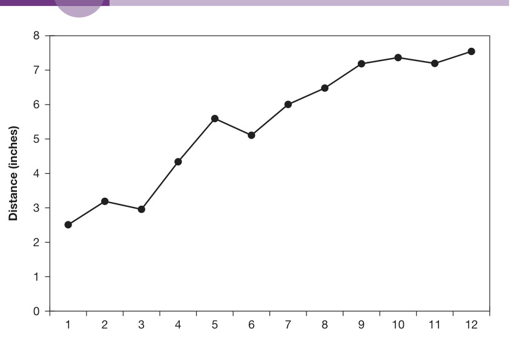
Hình 6.6: Đường cong thực hiện giả định cho bài kiểm tra với tới chức năng
Khoảng cách (tính bằng inch) trên trục thẳng đứng: từ 0 đến 8; số tuần trên trục ngang: từ 1 đến 12. Bệnh nhân được kiểm tra mỗi tuần một lần trong 12 tuần.
Các Loại Đường Cong Thực Hiện
Nhìn chung, đường cong thực hiện theo một trong bốn kiểu (xem Hình 6.7):
- Đường cong giảm tốc độ tăng dần phản ánh định luật luyện tập theo lũy thừa (power law of practice). Khi học một kỹ năng mới, cá nhân có xu hướng thể hiện sự cải thiện lớn ban đầu về thực hiện, rồi chậm dần về sau trong luyện tập (Newell & Rosenbloom, 1981). Đây là đường cong thực hiện phổ biến nhất.
- Đường cong tăng tốc độ tăng dần được đặc trưng bởi ít cải thiện ban đầu nhưng mức tăng lớn hơn về sau.

Hình 6.7: Các loại đường cong thực hiện
Trục thời gian — (a) Giảm tốc độ tăng dần; (b) Tăng tốc độ tăng dần; (c) Đường thẳng; (d) Hình chữ S.
- Đường cong tuyến tính phản ánh mối quan hệ trực tiếp giữa thực hiện và thời gian.
- Đường cong hình chữ S là sự kết hợp giữa đường cong giảm tốc độ tăng dần và đường cong tăng tốc độ tăng dần.
Khi đọc các đường cong thực hiện, hãy nhớ rằng bản chất của đường cong phụ thuộc vào điều đang được đo. Ví dụ, nếu biến số thực hiện được đo là thời gian, và sự giảm thời gian cần để thực hiện kỹ năng cho thấy thực hiện được cải thiện, thì đường cong sẽ bị đảo ngược.
Hạn Chế Của Đường Cong Thực Hiện
Dù là phương pháp phổ biến để ghi lại tiến bộ, đường cong thực hiện vẫn có một số hạn chế. Để hiểu hạn chế thứ nhất, chúng ta cần xem lại các đặc điểm phân biệt giữa thực hiện và học. Hãy nhớ rằng học dẫn đến một thay đổi tương đối bền vững trong khả năng thực hiện một kỹ năng vận động của một người, trong khi thực hiện đơn giản là hành động thực hiện một kỹ năng. Vì các thước đo cho đường cong thực hiện được lấy trong lúc một cá nhân đang luyện tập một kỹ năng, những thước đo này phản ánh các hiệu ứng tạm thời và không thể xác lập tính bền vững tương đối. Chính vì lý do đó mà chúng được gọi là đường cong thực hiện chứ không phải đường cong học.
Hạn chế thứ hai đến từ việc tính giá trị trung bình của một số lần thử trong một buổi nhất định để có được các số liệu dùng dựng đường cong. Ví dụ, hai người cùng học juggling có thể có số lần bắt được bóng trung bình giống nhau, nhưng thực hiện của họ ở mỗi lần thử lại có thể rất khác nhau. Hãy xem xét dữ liệu về thực hiện juggling của hai người học như thể hiện trong Bảng 6.1. Mỗi người thực hiện mười lần thử trong một buổi, và kết quả
Bảng 6.1: Dữ liệu cá nhân về juggling (số lần bắt được bóng trong mỗi lần thử của một buổi gồm mười lần thử) cho hai người học khác nhau
- Lần thử 1 — Người học A: 5; Người học B: 1.
- Lần thử 2 — Người học A: 5; Người học B: 6.
- Lần thử 3 — Người học A: 4; Người học B: 0.
- Lần thử 4 — Người học A: 4; Người học B: 11.
- Lần thử 5 — Người học A: 5; Người học B: 3.
- Lần thử 6 — Người học A: 4; Người học B: 6.
- Lần thử 7 — Người học A: 5; Người học B: 2.
- Lần thử 8 — Người học A: 5; Người học B: 2.
- Lần thử 9 — Người học A: 4; Người học B: 14.
- Lần thử 10 — Người học A: 4; Người học B: 0.
- Trung bình — Người học A: 4.5; Người học B: 4.5.
CEREBRAL CHALLENGE 6.7 — Thử Thách Trí Não
Ba người học được yêu cầu luyện tập juggling 10 phút mỗi ngày trong mười ngày liên tiếp. Số lần bắt được bóng trung bình mỗi ngày được tính bằng cách chia tổng số lần bắt được bóng cho số lần thử. Số lần bắt được bóng trung bình mỗi ngày của từng người học được biểu diễn trong đồ thị dưới đây.
- Hãy phân loại đường cong thực hiện của từng người tham gia dựa trên bốn loại đã thảo luận và minh họa trong Hình 6.7.
- Bạn có thể rút ra kết luận gì từ dữ liệu được trình bày?
Trục thẳng đứng: số lần bắt được bóng trung bình, từ 0 đến 4; trục ngang: ngày, từ 1 đến 10; ba người tham gia: Participant 1, Participant 2 và Participant 3.
giá trị trung bình của mười lần thử bằng nhau: 4.5. Tuy nhiên, thực hiện của người học A tương đối nhất quán giữa các lần thử, trong khi người học B cho thấy dải điểm rộng hơn nhiều. Nếu chỉ nhìn vào giá trị trung bình, chúng ta có thể bỏ lỡ thông tin quý giá về quá trình học. Hãy nhớ rằng tính nhất quán trong thực hiện được cải thiện là một chỉ báo của việc học. Độ lệch chuẩn trong thực hiện juggling của hai người học xác nhận rằng người học A (SD = 0.53) có tính biến thiên thực hiện thấp hơn người học B (SD = 4.77), cho thấy trình độ kỹ năng cao hơn. Vì vậy, nhiều thước đo thực hiện khác nhau cho phép rút ra kết luận tốt hơn về sự học.
Các Bài Kiểm Tra Duy Trì Và Chuyển Giao
Các bài kiểm tra duy trì và chuyển giao được dùng để suy luận rằng một thay đổi tương đối bền vững trong thực hiện đã xảy ra. Nói cách khác, chúng được dùng để xem liệu bệnh nhân, học sinh, vận động viên hay khách hàng có thực sự học hay không. Bài kiểm tra duy trì đo lường sự bền bỉ của thực hiện kỹ năng đã được cải thiện. Khác với bài kiểm tra sau, được tiến hành ngay sau một giai đoạn luyện tập (có thể là một buổi hoặc nhiều buổi) và dùng để tìm hiểu người học có thể làm được gì sau khi luyện tập một

Hình 6.8: Tiến trình bài kiểm tra duy trì
Giai đoạn luyện tập (Practice Period) — Giai đoạn không luyện tập (No-Practice Period). Kiểm tra trước (Pretest) → Kiểm tra sau (Post-test) → Kiểm tra duy trì (Retention test).
kỹ năng, bài kiểm tra duy trì được tiến hành sau một khoảng thời gian mà người học không tham gia bất kỳ luyện tập nào (xem Hình 6.8). Mức thực hiện thu được sau đó được so sánh với mức thực hiện ban đầu của cùng kỹ năng ấy (bài kiểm tra trước được tiến hành trước giai đoạn luyện tập). Nếu phép so sánh cho thấy mức cải thiện cao, bạn có thể suy luận rằng sự học đã xảy ra.
Vì một mục tiêu chính của luyện tập là có thể duy trì điều đã học để dùng về sau, bài kiểm tra duy trì cũng có thể được dùng như một công cụ đánh giá trước. Ví dụ, vào mùa thu, một lớp giáo dục thể chất tiểu học đã hoàn thành một học phần nhằm hoàn thiện các kỹ năng vận động căn bản, bao gồm trượt bước và nhảy chân chẵn. Về sau, vào mùa xuân, trượt bước và nhảy chân chẵn sẽ là nền tảng cho việc học các kỹ năng phức tạp, chuyên biệt hơn trong một học phần múa. Thông qua bài kiểm tra duy trì, giáo viên có thể xác định liệu học sinh có thực sự duy trì được trình độ thành thạo trong trượt bước và nhảy chân chẵn trước khi bắt đầu học phần mới hay không. Nếu mức duy trì không đạt như kỳ vọng, giáo viên sẽ cần ôn lại những kỹ năng được cho là đã học trước đó trước khi giới thiệu học phần múa và cố gắng xây dựng tiếp trên những kỹ năng ấy (trao đổi cá nhân, Lynn V. Johnson, ngày 27 tháng 3 năm 2012).
Loại đánh giá thứ hai có thể được dùng để phân biệt giữa những thay đổi thực hiện tạm thời và bền vững là bài kiểm tra chuyển giao. Bài kiểm tra chuyển giao đo lường mức độ mà một người học có thể điều chỉnh kỹ năng đã luyện tập sang một tình huống thực hiện khác. Những biến thể của bản thân kỹ năng hoặc của môi trường mà kỹ năng được thực hiện có thể đóng vai trò kiểm tra khả năng thích ứng và cho phép người thực hành suy luận về sự học. Ví dụ, bài kiểm tra chuyển giao cho một bệnh nhân đang học thực hiện động tác từ ngồi sang đứng có thể liên quan đến một độ cao ghế hoặc bề mặt mới (ví dụ, cứng so với có đệm). Bài kiểm tra chuyển giao cho việc volley bóng trong môn bóng ném có thể yêu cầu người học đánh bóng sau khi bóng nảy ra từ tường sau thay vì tường trước. Một nguồn tài nguyên hữu ích để thiết kế bài kiểm tra chuyển giao là hệ thống phân loại của Gentile (2000), đã thảo luận trong Chương 1.
Các Giai Đoạn Đình Trệ Thực Hiện
Người thực hành phải cẩn thận, không giả định rằng sự học đã chấm dứt khi thực hiện không còn cải thiện nữa. Có thể người học đang trải qua một giai đoạn đình trệ thực hiện — một khoảng thời gian trong quá trình học mà không có sự thay đổi biểu lộ nào trong thực hiện. Một lần nữa, điều quan trọng là người thực hành
phải có khả năng phân biệt giữa những thay đổi tạm thời trong thực hiện và những thay đổi tương đối bền vững, những điều cho thấy sự học.
Hãy nhớ rằng sự học không thể quan sát trực tiếp. Chúng ta không thể thấy người khác tri giác điều gì, không thể thấy người đó đang nghĩ gì, và không thể thấy những thay đổi trong các quá trình hành vi và thần kinh tiềm ẩn.
Thomas và Thomas (1994) nhắc nhở chúng ta rằng “biết khi nào và như thế nào không đồng nghĩa với việc thực hiện hoạt động” (tr. 296). Các giai đoạn đình trệ thường đại diện cho những thời kỳ chuyển tiếp trong quá trình học, khi sự tích hợp các thành phần của nhiệm vụ (và có thể cả chiến lược) đang được giải quyết. Do đó, các giai đoạn đình trệ thực hiện không nhất thiết cho thấy người học đã ngừng học; thay vào đó, đình trệ là một phần bình thường của quá trình học. Những biến số như mệt mỏi, lo âu hoặc thiếu động lực cũng có thể tạm thời ảnh hưởng đến thực hiện, dẫn đến một giai đoạn đình trệ. Cuối cùng, đình trệ có thể là kết quả của những hạn chế trong phép đo thực hiện được dùng. Hiệu ứng trần và hiệu ứng đáy xảy ra khi có một điểm số tối đa hoặc tối thiểu có thể đạt được trong một nhiệm vụ. Ví dụ, nếu số cú ném phạt thành công trung bình trong mười lần của một người học được vẽ trên đường cong thực hiện, khi người đó tiến gần đến trần (mười), đường cong thực hiện sẽ bắt đầu đi ngang.
ĐƯA VÀO THỰC TIỄN (PUTTING IT INTO PRACTICE)
Tình Huống Học Tập: Học Đường Chuyền Gián Tiếp Trong Khúc Côn Cầu
Jennifer cũng làm việc với nhóm Squirts (9–10 tuổi). Ở cấp độ này, đường chuyền gián tiếp tới một mục tiêu đang di chuyển được giới thiệu. Trợ lý của cô nhắc cô về bài tập mà anh đã gợi ý trước đó và nghĩ rằng đó sẽ là bài tập tốt để bắt đầu sau khi kỹ năng đã được giới thiệu và trình diễn mẫu.
Kiểm Tra Kiến Thức Của Bạn
Hãy quay lại bài tập được nêu ở cuối Chương 3. Bài tập này nhắm vào người học ở giai đoạn nhận thức hay liên kết? Jennifer có nên bắt đầu với bài tập này như trợ lý của cô đã gợi ý không? Hãy biện giải câu trả lời của bạn. So sánh câu trả lời của bạn với câu trả lời mẫu tại www.routledge.com/cw/coker.
NHÌN VỀ PHÍA TRƯỚC (A LOOK AHEAD)
Người học tiến triển qua các giai đoạn học riêng biệt khi họ tiếp thu một kỹ năng. Mỗi giai đoạn được đặc trưng bởi cả những thay đổi hành vi lẫn sự điều chỉnh trong mục tiêu của người học. Bên cạnh đó, một số chỉ báo ở người học và trong thực hiện đã được xác định để giúp người thực hành suy luận về sự phát triển kỹ năng. Việc hiểu
QUAN NIỆM SAI (COMMON MYTH)
Trừ khi một người học thể hiện những thay đổi biểu lộ rõ ràng trong thực hiện, người đó không còn đang học nữa.
đặc điểm của từng giai đoạn học, bên cạnh khả năng đánh giá mức thành thạo của người học, có thể hỗ trợ việc ra quyết định của người thực hành liên quan đến cách truyền đạt hướng dẫn, thiết kế luyện tập và trải nghiệm, cùng việc cung cấp phản hồi. Chương tiếp theo bắt đầu cuộc thảo luận về cách thiết kế môi trường học phù hợp bằng cách xem xét những yếu tố trước khi hướng dẫn ảnh hưởng đến giao tiếp.
ĐIỂM TRỌNG TÂM (FOCUS POINTS)
Sau khi đọc chương này, bạn nên biết:
- Theo Fitts và Posner, người học đi qua ba giai đoạn riêng biệt:
- Giai đoạn nhận thức: phát triển mô hình vận động cơ bản.
- Giai đoạn liên kết: hoàn thiện mô hình vận động.
- Giai đoạn tự động: thực hiện vận động gần như tự động.
- Mô hình hai giai đoạn của Gentile nhấn mạnh mục tiêu của người học và ảnh hưởng của đặc điểm nhiệm vụ cùng môi trường đến mục tiêu đó.
- Giai đoạn 1: nắm bắt ý tưởng về vận động.
- Giai đoạn 2: cố định (kỹ năng đóng)/đa dạng hóa (kỹ năng mở).
- Để suy luận rằng sự học đã xảy ra, người thực hành có thể đánh giá nhiều thay đổi trong thực hiện, bao gồm thay đổi về phối hợp và kiểm soát, hoạt động cơ bắp, chi phí năng lượng, tính nhất quán, tiêu điểm chú ý, kiến thức và trí nhớ, phát hiện và sửa lỗi, cùng sự tự tin.
- Tiến bộ cũng có thể được đánh giá thông qua đường cong thực hiện, bài kiểm tra duy trì và bài kiểm tra chuyển giao.
- Bài kiểm tra duy trì đo lường sự bền bỉ của thực hiện kỹ năng đã được cải thiện.
- Bài kiểm tra chuyển giao đo lường mức độ mà người học có thể điều chỉnh kỹ năng đã luyện tập sang một tình huống thực hiện khác.
- Giai đoạn đình trệ thực hiện là một khoảng thời gian trong quá trình học mà không có thay đổi biểu lộ nào trong thực hiện. Các giai đoạn đình trệ thường đại diện cho những thời kỳ chuyển tiếp trong quá trình học, khi sự tích hợp các thành phần của nhiệm vụ (và có thể cả chiến lược) đang được giải quyết; chúng không nhất thiết cho thấy sự chấm dứt của quá trình học.
Thí Nghiệm 6
Để hoàn thành thí nghiệm của chương này, hãy truy cập www.routledge.com/cw/coker và chọn Thí nghiệm 6, Các Giai Đoạn Học.
CÂU HỎI ÔN TẬP (REVIEW QUESTIONS)
- Hãy giải thích cách vai trò của người hướng dẫn thay đổi khi một người học tiến triển qua ba giai đoạn học của Fitts và Posner.
- Mô hình của Gentile khác với mô hình của Fitts và Posner như thế nào?
- Hãy định nghĩa cố định và đa dạng hóa, rồi giải thích mối quan hệ của chúng với kỹ năng đóng và kỹ năng mở.
- Hãy liệt kê năm đặc điểm thực hiện có thể giúp bạn suy luận rằng sự học đã xảy ra.
- “Đóng băng các bậc tự do” nghĩa là gì?
- Hai hệ quả của tự động hóa là gì?
- Hãy giải thích cách người thực hiện chuyên gia có thể xây dựng một biểu diễn tốt hơn về vấn đề vận động.
- Bạn có thể tìm gì để xác định liệu năng lực phát hiện và sửa lỗi của một người học đã được cải thiện chưa? Bạn có gợi ý nào ngoài những gợi ý được liệt kê trong chương này không?
- Vì sao có thể là sai khi giả định rằng một người không còn đang học nếu người đó không thể hiện bất kỳ cải thiện nào về thực hiện?
- Hãy so sánh và đối chiếu bài kiểm tra duy trì với bài kiểm tra chuyển giao.
Chương 7 — Người Học: Những Xem Xét Trước Khi Huấn Luyện
Mã DOI: 10.4324/9781003039716-7
Chương 7 — Người Học: Những Xem Xét Trước Khi Huấn Luyện
Huấn luyện viên Hernandez quan sát Jackson đang khởi động cho môn nhảy sào. Sau vài lần thử, anh gọi Jackson lại để giải thích cách sửa một lỗi kỹ thuật. Khi huấn luyện viên Hernandez kết thúc lời giải thích, anh hỏi liệu Jackson có hiểu điều anh vừa nói không. Jackson trả lời là có và quay trở lại cuối đường chạy. Khi đến nơi, cậu quay sang một người bạn đồng đội và hỏi: “Bạn có thể chỉ cho mình thấy huấn luyện viên vừa nói gì không?” Sau khi động tác được trình diễn lại, cậu đã hiểu hoàn toàn.
Có lẽ yếu tố duy nhất có ảnh hưởng lớn nhất đến khả năng hiểu các khái niệm mới và đạt được sự thành thạo vận động của một người học chính là giao tiếp. Giao tiếp hiệu quả diễn ra khi các thông điệp rõ ràng, ngắn gọn và nhất quán, và người nhận hiểu được điều người gửi muốn truyền đạt. Cách một người nghe thông điệp của bạn phụ thuộc vào nhiều yếu tố, và người giáo viên, huấn luyện viên hoặc nhà trị liệu nào nhận ra ảnh hưởng của khác biệt cá nhân đối với cách thông tin được tiếp nhận sẽ có thể điều chỉnh giao tiếp của mình tốt hơn nhằm cung cấp hướng dẫn và thiết kế những trải nghiệm có ý nghĩa cho từng người học.
Thông tin có thể được truyền tải qua một số phương thức cảm giác. Trong tình huống mở đầu chẳng hạn, Jackson đã hiểu động tác tốt hơn khi cậu nhìn thấy nó được trình diễn. Video, các ứng dụng phân tích chuyển động, hình ảnh, biểu đồ và gương cũng có thể được dùng để cung cấp cho người học một biểu diễn trực quan về một kỹ năng, yếu tố kỹ thuật hoặc khái niệm. Hơn nữa, lời giải thích có thể kết hợp các từ gợi ý thị giác như “nhìn,” “xem,” hay “ngó.” Các phương thức khác cần cân nhắc gồm xúc giác, cảm giác vận động và thính giác. Một nhà vật lý trị liệu chẳng hạn, có thể dùng một tín hiệu xúc giác (chạm cơ thể) để giúp bệnh nhân cô lập một nhóm cơ mục tiêu. Một huấn luyện viên có thể giúp vận động viên phát triển cảm nhận về cảm giác của động tác đúng thông qua việc sử dụng mô phỏng, hoặc dùng các từ hành động (kèm theo tính từ khi thích hợp) như “bùng nổ” hay “xoay nhanh” để mô tả cách động tác nên được thực hiện. Việc cho người học nhận biết độ ồn của tiếng tiếp đất khi nhảy lên khỏi hộp, nhấn mạnh nhịp điệu hay tempo của một động tác, hoặc dùng các từ gợi ý như “nghe” hay “lắng nghe” cũng có thể là những chiến lược hiệu quả giúp người học hiểu mình đang làm gì và/hoặc đang cố làm gì. Có thể tìm thêm ví dụ trong Bảng 7.1.
Làm thế nào để xác định nên dùng chiến lược giao tiếp nào? Và làm thế nào để người thực hành xác định liệu chiến lược đã chọn có hiệu quả hay không? Hãy chú ý đến các manh mối mà người học đưa ra. Lắng nghe những từ miêu tả mà người học dùng để đánh giá thực hiện của mình và những câu hỏi họ đặt ra. Họ có thường rơi vào một trong các phương thức giao tiếp không? Ví dụ gồm “Bạn có thể chỉ cho tôi thấy tôi đang làm gì không?” hay “Cảm giác đó nên như thế nào?” Ngoài ra, hãy lưu ý những hành vi có thể gợi ý rằng người học hiểu thông tin tốt hơn khi được trình bày qua một phương thức khác. Chẳng hạn, họ có yêu cầu làm rõ theo một phương thức khác không? Khi huấn luyện viên Hernandez giải thích bằng lời các lỗi kỹ thuật (thính giác) và cách sửa chúng, Jackson đã không hiểu đầy đủ và đã tìm cách khác để nhận thông tin thông qua biểu diễn trực quan. Cuối cùng, hãy chắc chắn kiểm tra và xác minh rằng người học đã hiểu
BẢNG 7.1
Ví dụ về các phương thức khác nhau có thể được dùng để giao tiếp:
- Vỗ nhịp của 5–7 bước cuối trong cú ném lao.
- Kiểm tra sự thẳng hàng của đầu gối bằng gương khi thực hiện động tác squat hoặc lunge.
- Vẽ sơ đồ chiến lược hoặc chiến thuật dùng trong một trận đấu lên bảng trắng hoặc máy tính bảng.
- Giải thích bằng lời một trình tự các động tác.
- Thực hiện đi dạo thử (walkthrough) một bài tập.
- Nhắc người học ấn vào một dải kháng lực.
- Chỉ ra sự khác biệt về âm thanh khi một chân được hạ xuống một cách có kiểm soát so với không kiểm soát trong động tác glute bridge kick out.
- Tải một ứng dụng đồng hồ nhịp (metronome) và đặt nhịp theo cadence đi bộ mong muốn.
Thử Thách Trí Não 7.1
Thảo luận tầm quan trọng của giao tiếp hiệu quả đối với giáo viên, huấn luyện viên và nhà trị liệu. Trong cuộc thảo luận của mình, hãy nêu rõ những người mà bạn sẽ phải giao tiếp cùng và thời điểm bạn sẽ sử dụng giao tiếp trong suốt quá trình học tập.
điều đã được truyền đạt. Nếu họ còn bối rối hoặc có câu hỏi, hãy biến đổi thông điệp hoặc truyền đạt nó qua một phương thức khác. Lưu ý rằng trong một số trường hợp, người học có thể không hiểu đầy đủ một thông điệp dù đã tỏ ra hiểu, như trường hợp của Jackson khi huấn luyện viên kiểm tra sự hiểu biết của cậu.
NHẬN THỨC
Bất kể phương thức được dùng để giải thích cách thực hiện một nhiệm vụ, giao tiếp đó thường gợi ra xử lý tường minh. Học tường minh làm cho người học nhận thức rõ ràng về những gì cần làm, và người học sẽ sử dụng việc kiểm tra giả thuyết có chủ đích để xác định cái gì hiệu quả và cái gì không, trong khi họ tiếp tục làm rõ hiểu biết về các yêu cầu của động tác. Cuối cùng, nhờ luyện tập và phản hồi, tri thức về việc cần làm, hay tri thức tường minh (declarative knowledge), được chuyển hóa thành tri thức thủ tục (procedural knowledge), tức là cách làm, và kỹ năng được thực hiện tự động mà không cần chú ý.
Ngược lại, học tiềm ẩn xảy ra khi người học tiếp thu thông tin một cách không cố ý và không có ý thức. Khi học đi xe đạp chẳng hạn, bạn đã học cách giữ thăng bằng ở mức độ vô thức (tri thức thủ tục), về cơ bản là bỏ qua bước tri thức tường minh vốn diễn ra trong học tường minh. Kết quả là, bạn có thể thấy rất khó mô tả những hành động đó bằng lời. Hãy thử xem!
Nghiên cứu đã chỉ ra rằng không phải lúc nào cũng cần cung cấp thông tin liên quan đến nhiệm vụ và trong một số trường hợp, làm vậy thậm chí có thể cản trở việc học (Masters, van Duijn, & Uiga, 2019). Sử dụng một nhiệm vụ bắt bóng mô phỏng bằng máy tính, Green và Flowers (1991) nhận thấy rằng người tham gia có thể xác định mối quan hệ dự báo của quỹ đạo bóng một cách tiềm ẩn, mà không được cho biết về nó qua hướng dẫn bằng lời tường minh. Hơn nữa, nhóm học tiềm ẩn này cho thấy sự cải thiện thực hiện lớn hơn so với nhóm học tường minh, những người được hướng dẫn về các quy tắc nền tảng của mối quan hệ quỹ đạo bóng. Các tác giả cho rằng thực hiện kém hơn của nhóm học tường minh là do quá tải các nguồn lực chú ý sẵn có—vừa cố nhớ quy tắc và cách áp dụng nó, vừa đáp ứng các yêu cầu của chính việc thực hiện động tác.
Magill (1998) cung cấp thêm bằng chứng ủng hộ quan điểm rằng nhận thức có ý thức có thể không cần thiết để tiếp thu kiến thức về các đặc điểm điều chỉnh của môi trường của một kỹ năng vận động. Trong một nghiên cứu theo dõi, người tham gia đã có thể khai thác một mối liên hệ được cài sẵn mà không được cho biết về nó qua hướng dẫn bằng lời. Sekiya (2009) ghi nhận những phát hiện tương tự. Những lợi ích học tập bền bỉ hơn, ít bị ảnh hưởng bởi lo âu và căng thẳng trong tình huống áp lực, cũng đã được tìm thấy ở học tiềm ẩn (Masters et al., 2019). Masters và Maxwell (2008) giải thích những phát hiện này trong bối cảnh của thuyết tái đầu tư (reinvestment theory), cho rằng dưới áp lực, các vận động viên học tường minh sẽ quay lại với tri thức tường minh đã tiếp thu khi đầu tiên học kỹ năng. Việc phân bổ chú ý này vào xử lý có ý thức các tri thức tường minh liên quan đến nhiệm vụ sẽ can thiệp vào các quá trình kiểm soát tự động, làm gián đoạn thực hiện. Ngược lại, vì người học tiềm ẩn không nhận thức được phần lớn tri thức họ đã tiếp thu, nên tái đầu tư ít có khả năng xảy ra.
Vì sự khác biệt giữa học tiềm ẩn và học tường minh nằm ở lượng tri thức tường minh hoặc mô tả mà người học hình thành về việc thực hiện động tác, nên việc giảm thiểu cơ hội tiếp thu có ý thức loại tri thức đó là chìa khóa để thúc đẩy học tiềm ẩn. Thay vì hướng dẫn một cầu thủ bóng chày tìm các tín hiệu cụ thể để nhận diện hay dự đoán một cú ném sắp tới (chẳng hạn như cách bóng rời khỏi tay cầu thủ ném), Magill (1998) đề xuất rằng người hướng dẫn nên hướng sự chú ý của người học vào những vùng giàu thông tin (chẳng hạn như vùng bóng được buông ra trong cú ném). Tương tự, người học nên được tiếp xúc với các tín hiệu điều chỉnh then chốt trong nhiều tình huống thực hiện khác nhau để trở nên nhạy bén một cách tiềm ẩn với chúng. Người học cũng sẽ ít nhận thức được các quy tắc và hành động tường minh cần thiết để thực hiện một nhiệm vụ khi lời hướng dẫn hướng sự chú ý của họ vào các tác động của chuyển động mình (tiêu điểm chú ý ngoại vi) thay vì hướng chú ý vào cơ thể. Việc dùng ẩn dụ cũng gợi ra xử lý tiềm ẩn, vì chúng truyền tải hành động mong muốn bằng cách liên hệ nó với một mô hình quen thuộc mà không đề cập cụ thể đến các động tác riêng lẻ cấu thành hành động đó. Cuối cùng, lợi ích của học tiềm ẩn đã được chứng minh ở giai đoạn luyện tập đầu tiên nhằm giảm thiểu lỗi thực hiện, được gọi là học không lỗi (errorless learning) (ví dụ Poolton, Masters, & Maxwell, 2005). Trong học không lỗi, số lỗi mắc phải trong luyện tập được
giảm có chủ đích bằng cách cho người học ban đầu thực hiện các nhiệm vụ đơn giản, sau đó tăng dần độ khó. Trong trò chơi Cornhole chẳng hạn, người học sẽ bắt đầu bằng cách luyện tập rất gần bảng, nơi các cú ném dễ trúng đích, rồi dần dần lùi xa hơn cho đến khi đạt khoảng cách ném quy định. Tiền đề đằng sau học không lỗi là bằng cách giảm số lỗi, bạn thực sự đang giảm nhu cầu phải có ý thức điều chỉnh động tác, từ đó thúc đẩy xử lý tiềm ẩn. Dù học không lỗi thường được dùng như một phương pháp hướng dẫn cho những người có chức năng trí nhớ và điều hành bị suy giảm (de Werd et al., 2013), tính hữu ích của nó đối với phát triển kỹ năng vận động vẫn chưa rõ ràng (xem Lee et al., 2016).
CHUYỂN GIAO VIỆC HỌC
Một khác biệt cá nhân khác mà người thực hành nên cân nhắc khi tăng cường giao tiếp và thiết kế cơ hội học tập tối ưu là kinh nghiệm quá khứ của người học. Trong suốt cuộc đời của một người, tri thức tích lũy dần, cũng như các lần tiếp xúc với nhiều kỹ năng khác nhau; tổng hợp các kinh nghiệm quá khứ ảnh hưởng đến khả năng học kỹ năng mới của cá nhân theo cả hướng tích cực lẫn tiêu cực. Hiện tượng này, trong đó việc học một kỹ năng mới hoặc thực hiện nó trong điều kiện mới có thể bị ảnh hưởng bởi kinh nghiệm quá khứ với một hoặc nhiều kỹ năng khác, được gọi là chuyển giao.
Các Loại Chuyển Giao
Có ba loại chuyển giao: tích cực, tiêu cực và bằng không. Chuyển giao tích cực xảy ra khi kinh nghiệm quá khứ của người học với một kỹ năng tạo thuận lợi cho việc học một kỹ năng mới hoặc sử dụng một kỹ năng trong bối cảnh khác. Chẳng hạn, các sơ đồ phòng thủ khu vực dùng trong bóng bầu dục và bóng rổ có nhiều điểm chung. Trong trường hợp này, tri thức của người học về phòng thủ khu vực trong bóng bầu dục có khả năng tăng tốc độ mà người đó học phòng thủ khu vực trong bóng rổ. Chuyển giao tiêu cực xảy ra khi kinh nghiệm quá khứ của người học với một kỹ năng cản trở hoặc ngăn cản việc học một kỹ năng mới hoặc thực hiện một kỹ năng trong điều kiện mới. Dù việc vung gậy trong bóng chày mềm (softball) và bóng chày (baseball) có đặc điểm chuyển động tương tự, cách theo dõi cú ném sắp tới lại khác biệt đáng kể giữa hai môn. Trong bóng chày, cầu thủ ném dùng động tác ném qua vai, khiến quỹ đạo bóng đi từ cao xuống thấp. Trong bóng chày mềm, cầu thủ ném dùng động tác ném dưới tay, và bóng đi lên khi tiến về phía bản. Do đó, kinh nghiệm trước đây trong bóng chày có thể tạm thời cản trở thực hiện cú đánh trong bóng chày mềm. Cuối cùng, khi hai kỹ năng hoàn toàn không liên quan, chẳng hạn như bơi kiểu bướm và thủ môn trong bóng nước, chuyển giao bằng không xảy ra, vì kinh nghiệm với kỹ năng thứ nhất không ảnh hưởng gì đến kỹ năng thứ hai.
Dù người thực hành muốn tận dụng chuyển giao tích cực, chuyển giao tiêu cực vẫn có thể xảy ra và thường là kết quả của việc phải học một đáp án mới cho một kích thích đã được học kỹ. Một ví dụ kinh điển về chuyển giao tiêu cực có thể thấy khi một cầu thủ cầu lông giỏi quyết định học tennis. Trong cầu lông, cú đánh thuận tay cần một cú lắc cổ tay. Trong tennis thì không như vậy, vì đóng góp của cổ tay là rất nhỏ. Ban đầu, cầu thủ cầu lông có thể cố đưa cú lắc cổ tay vào cú thuận tay tennis. May mắn thay, hầu hết các tác động chuyển giao tiêu cực đều tạm thời và có thể được khắc phục bằng luyện tập.
Các Thuyết Về Chuyển Giao
Hiểu được nền tảng lý thuyết của chuyển giao sẽ giúp giáo viên, huấn luyện viên hoặc nhà trị liệu thiết kế những trải nghiệm học tập thúc đẩy chuyển giao tích cực. Sự hiểu biết này cũng giúp người thực hành giải thích những khó khăn mà cá nhân có thể biểu lộ do chuyển giao tiêu cực.
Video trên web: Trình diễn chuyển giao tiêu cực: www.youtube.com/watch?v=MFzDaBzBlL0&feature=youtu.be.
Thuyết Yếu Tố Giống Nhau
Thuyết yếu tố giống nhau ban đầu giả định rằng chuyển giao dựa trên số yếu tố chung mà hai kỹ năng có thể chia sẻ (Thorndike, 1914). Người ta cho rằng hai kỹ năng chia sẻ càng nhiều yếu tố giống nhau thì chuyển giao tích cực từ kỹ năng này sang kỹ năng kia càng lớn. Theo đó, chúng ta mong đợi chuyển giao tích cực xảy ra giữa các kỹ năng nhặt cúc áo và nhặt đồng xu, trong khi mức độ chuyển giao giữa cú putt trong golf và cú sút bằng mu bàn chân trong bóng đá là không đáng kể.
Osgoode (1949) đã sửa đổi thuyết yếu tố giống nhau bằng cách nêu rõ rằng, thay vì các yếu tố giống nhau, chính sự tương đồng giữa các điều kiện kích thích và đáp án của hai nhiệm vụ là nền tảng. Do đó, chúng ta mong đợi mức độ chuyển giao tích cực cao khi các điều kiện kích thích và đáp án của nhiệm vụ đã tiếp thu trước đó giống với nhiệm vụ đang được học.
Khó khăn học tập phát sinh khi hai kỹ năng có yêu cầu kích thích–đáp án đối ngược. Ví dụ, chúng ta dự đoán chuyển giao tiêu cực khi kỹ năng được giới thiệu có cùng kích thích với kỹ năng đã học trước đó nhưng lại đòi hỏi một đáp án khác. Một người mua một chiếc xe đạp leo núi mới chẳng hạn, sẽ gặp một số bực bội tạm thời nếu cơ chế sang số khác với chiếc xe họ từng sở hữu.
Thuyết Xử Lý Phù Hợp Với Chuyển Giao
Thuyết yếu tố giống nhau không giải thích được mọi điều kiện chuyển giao có thể có. Các khía cạnh chiến lược và khái niệm của trò chơi hay nhiệm vụ cũng có thể được chuyển giao. Kết quả là, thuyết xử lý phù hợp với chuyển giao (transfer appropriate processing theory) được đề xuất nhằm giải thích sự tương đồng trong xử lý nhận thức giữa các điều kiện luyện tập và tiêu chí thực hiện (Morris, Bransford, & Franks, 1977; Bransford et al., 1979; Lee, 1988). Theo thuyết này, chúng ta mong đợi chuyển giao tích cực
khi các điều kiện luyện tập yêu cầu người học tham gia vào các quá trình giải quyết vấn đề tương tự như những quá trình mà nhiệm vụ tiêu chí đòi hỏi.
Trong bóng chuyền, khi một cú đập được thực hiện vượt qua khối chắn, cầu thủ phòng thủ có thể dùng một trong bốn kỹ năng phòng thủ chính: chuyền cẳng tay, lăn người, lao người hoặc nằm sải (sprawl). Kỹ năng mà cầu thủ phòng thủ chọn phụ thuộc vào nhiều yếu tố cần được đánh giá ngay lập tức. Để tạo điều kiện cho cầu thủ chọn đúng kỹ năng rồi thực hiện chính xác, những người ủng hộ xử lý phù hợp với chuyển giao sẽ khuyến nghị luyện tập từng kỹ năng phòng thủ trong cùng một buổi luyện tập nhưng theo thứ tự ngẫu nhiên, thay vì luyện từng kỹ năng riêng biệt (nhằm tận dụng hiện tượng gọi là nhiễu bối cảnh). Hơn nữa, việc liên tục thay đổi hướng, tốc độ, vị trí và quỹ đạo của quả bóng sắp tới sẽ giúp bảo đảm chuyển giao tích cực tối đa. Chiến lược luyện tập này, được gọi là luyện tập biến đổi, buộc người học phải tham gia vào xử lý nhận thức thực tế, vì người học sẽ không bao giờ ở đúng cùng một tình huống hai lần. Cả nhiễu bối cảnh lẫn luyện tập biến đổi sẽ được thảo luận chi tiết hơn trong Chương 10.
Chuyển Giao Và Thiết Kế Hướng Dẫn
Nhiều quyết định hướng dẫn liên quan đến trình tự trình bày và việc sử dụng các công cụ hỗ trợ giảng dạy dựa trên các nguyên tắc chuyển giao. Ví dụ, các phiên bản đơn giản hóa của kỹ năng, bài tập và trò chơi đóng vai trò tiền đề cho các phiên bản phức tạp hơn sẽ được giới thiệu sau này. Các tiến trình kỹ năng—chẳng hạn như học nhảy xuống hồ bơi, trong đó người học trước tiên được dạy nhảy từ tư thế quỳ ở thành hồ, rồi tiến tới tư thế ngồi xổm, tư thế bước chân và cuối cùng là tư thế đứng—dựa trên giả định rằng kinh nghiệm với các phiên bản đơn giản hóa sẽ chuyển giao tích cực sang động tác thực tế, tạo thuận lợi cho việc tiếp thu nó. Tương tự, các trò chơi dẫn nhập—chẳng hạn như T-ball, bóng đá sân bên, five hundred trong bóng chày mềm hoặc bóng chày, keep away trong bóng rổ, và bóng chuyền ba cú chạm—đã được dùng để hỗ trợ người học.
Sự ủng hộ cho việc sắp xếp trình tự kỹ năng đã được cung cấp bởi một số nghiên cứu. Coldwells và Hare (1994) cho thấy các kỹ năng tennis ngắn đã chuyển giao tích cực sang tennis sân cỏ. O'Keefe, Harrison, và Smyth (2007) chứng minh các tác động chuyển giao tích cực từ luyện tập cú ném qua vai, dẫn đến những hiệu ứng học tập đáng kể cho cú đánh cao trong cầu lông và cú ném lao; điều này ủng hộ ý tưởng về chuyển giao tích cực giữa các kỹ năng vận động cơ bản và các kỹ năng đặc thù môn thể thao. Ngoài ra, các bài học trượt ván được cho là chuyển giao tích cực sang học một kỹ năng trượt tuyết (Künzell & Lukas, 2011), và luyện tập với một quả bóng được điều chỉnh (bóng futsal) chuyển giao tích cực sang thực hiện kỹ năng chuyền bóng bằng quả bóng đá quy chuẩn (Oppici et al., 2018).
Những điều chỉnh khác có thể được thực hiện khi kỹ năng liên quan đến nguy cơ chấn thương tiềm ẩn hoặc tốn kém, khi thiếu cơ sở vật chất luyện tập, hoặc khi không thể luyện tập trong bối cảnh thực tế. Các vận động viên thể dục dụng cụ trước tiên học các kỹ năng phức tạp
và có khả năng nguy hiểm với một số loại công cụ hỗ trợ giảng dạy, chẳng hạn như dây an toàn, nhằm giảm thiểu nguy cơ chấn thương. Xe đạp được trang bị bánh phụ. Các phi công chiến đấu luyện tập trên máy mô phỏng chuyến bay cho phép vô số lần thử luyện tập với rủi ro và chi phí tối thiểu. Các phi hành gia luyện tập dưới nước, vì môi trường này mô phỏng tình trạng không trọng lực mà họ sẽ trải nghiệm trong không gian. Trong môi trường lâm sàng, thiết bị BTE Work Simulation cho phép bệnh nhân mô phỏng các hoạt động như lái xe, vặn chìa khóa, kéo núm và đạp phanh; mô hình Resusci® Anne (từ Laerdal Medical) giúp sinh viên học hô hấp cứu hộ và CPR; và C-Mill giúp bệnh nhân học các chiến lược né tránh trong một môi trường an toàn và được kiểm soát (xem www.youtube.com/watch?v=65XrJ9DG3mM#t=11 để xem trình diễn).
Cuối cùng, những tiến bộ trong công nghệ cũng đã khơi dậy sự quan tâm ngày càng tăng đối với việc sử dụng thực tế ảo (VR). Khi người ta cẩn trọng bảo đảm rằng môi trường mô phỏng có mức độ liên kết cao với bối cảnh thực hiện (còn gọi là mức độ trung thực hành động cao), kết quả nhìn chung đều thuận lợi. Ví dụ, Rauter et al. (2013) chứng minh những tiến bộ kỹ năng trong chèo thuyền scull bằng một trình mô phỏng thực tế ảo đa phương thức cho phép người chèo nhìn, nghe và cảm nhận sự tương tác giữa mái chèo và nước khi họ đẩy chiếc thuyền ảo tiến về trước. Các ví dụ khác về chuyển giao thành công từ môi trường VR trong thể thao gồm đánh bóng chày (Gray, 2017), ném phi tiêu (Tirp et al., 2015), kỹ năng ra quyết định trong bóng rổ (Pagé, Bernier, & Trempe, 2019), học cú putt trong golf (Harris et al., 2020), phát triển kỹ năng bóng bàn (Michalski et al., 2019), và thực hiện tennis (Le Noury et al., 2021). Thực tế ảo cũng đang được dùng với tần suất ngày càng tăng trong phục hồi chức năng thể chất. Chuyển giao tích cực đã được tìm thấy cho việc vượt và né chướng ngại vật (Kim, Schweighofer, & Finley, 2019; LoJacono et al., 2018), dáng đi, khả năng di chuyển và kiểm soát tư thế (ví dụ Feng et al., 2019; Gibbons et al., 2016; Shema et al., 2014), phục hồi chi trên (Levin, Weiss, & Keshner, 2015), và hồi phục sau một cú ngã do trượt chân (Parijat, Lockhart, & Liu, 2015).
Hình 7.1: Các tiến trình kỹ năng giả định rằng kinh nghiệm với các phiên bản đơn giản hóa, chẳng hạn như nhảy từ thành hồ bơi, sẽ chuyển giao tích cực sang thực hiện kỹ năng nâng cao hơn, chẳng hạn như nhảy từ bảng nhảy.
GHI CHÚ NGHIÊN CỨU
Người ta ước tính rằng 47 phần trăm số cú ngã ở người cao tuổi là kết quả của việc vấp phải chướng ngại vật (Chien, Post, & Siu, 2018). Dù các chương trình luyện tập có thể cải thiện hành động né chướng ngại vật, những hạn chế về không gian và nguồn lực vật chất có thể là rào cản cản trở việc triển khai chúng ở một số cơ sở lâm sàng. Một giải pháp thay thế tiềm năng là sử dụng chướng ngại vật ảo trong luyện tập đi bộ trên máy chạy bộ. Sau khi tiến hành bài kiểm tra trước về việc vượt chướng ngại vật trong môi trường thực, LoJacono và các cộng sự (2018) đã thu thập dữ liệu chuyển động của 20 người trẻ khỏe mạnh và 20 người cao tuổi khỏe mạnh khi họ đi trên máy chạy bộ trong khi xem một môi trường thực tế ảo (VR) gồm một con đường qua vùng cảnh quan màu nâu với cây cối và bầu trời xanh. Người tham gia được hướng dẫn đi dọc con đường mà không dừng lại, bước qua các chướng ngại vật khi chúng xuất hiện trong môi trường ảo. Sau hai buổi luyện tập trong môi trường ảo, một bài kiểm tra sau về vượt chướng ngại vật trong môi trường thực đã được thực hiện nhằm xác định các tác động của luyện tập và chuyển giao. Kết quả cho thấy người tham gia, bất kể độ tuổi, đã áp dụng chiến lược vượt chướng ngại vật an toàn hơn nhờ luyện tập, và hành vi mới tiếp thu này đã chuyển giao tích cực sang việc né chướng ngại vật trong môi trường thực, ủng hộ việc sử dụng luyện tập VR.
Thúc Đẩy Chuyển Giao Tích Cực
Không chỉ luyện tập nên tạo điều kiện tiếp thu kỹ năng, mà người học còn phải có khả năng khái quát hóa các kỹ năng đó sang nhiệm vụ và/hoặc bối cảnh thực hiện trong thế giới thực. Vì vậy, thúc đẩy chuyển giao tích cực là một mục tiêu của luyện tập và phục hồi chức năng. Người thực hành có thể đánh giá tiềm năng chuyển giao của hoạt động hướng dẫn, luyện tập và huấn luyện của mình bằng các nguyên tắc hướng dẫn sau đây.
Video trên web: Trình mô phỏng thực tế ảo huấn luyện bác sĩ phẫu thuật: www.youtube.com/watch?v=1u5BLlX4nG8.
Video luyện tập thực tế ảo trong bóng đá:
1. www.youtube.com/watch?v=0XKxvKEFBps
2. https://www.si.com/edge/video/2015/09/04/quarterbacks-virtual-reality-training
Tìm Hiểu Người Học
Mọi người đều có những kinh nghiệm học tập quá khứ ảnh hưởng đến khả năng học kỹ năng mới của họ. Hãy tìm hiểu người học của bạn. Tận dụng kinh nghiệm vận động quá khứ của họ bằng cách so sánh nó với kỹ năng mới đang được học nhằm tạo điều kiện hiểu biết. Ví dụ, có mức độ tương đồng cao giữa vị trí bàn tay khi bắt một quả bóng bầu dục trên cao và khi chuyền bóng bàn trong bóng chuyền, như được minh họa trong Hình 7.3. Nếu bạn biết một học sinh có kinh nghiệm làm cầu thủ bắt bóng trong môn bóng bầu dục, bạn có thể tận dụng điều này bằng cách hướng sự chú ý của em đến các yếu tố chuyển động chung khi dạy em cách chuyền bóng bàn.
Trong phục hồi chức năng, việc tìm hiểu người học cũng quan trọng không kém. Người thực hành không nên giả định rằng các kỹ năng và chiến lược được dạy cho bệnh nhân trong phòng khám
Hoạt Động Khám Phá 7.1
Thực Tế Ảo
Khám phá thế giới thực tế ảo bằng cách tự chế một kính xem bằng bìa carton rồi xem các video dưới đây.
Mẫu xây dựng tự làm và hướng dẫn video liên quan:
Liên kết mẫu: http://www.proyectatumente.com/2017/08/how-to-make-vr-cardboard-easy.html
Hướng dẫn video: https://www.youtube.com/watch?v=BXqwICiwAAY
VIDEO THỰC TẾ ẢO:
Tàu lượn siêu tốc 3D: www.youtube.com/watch?v=ix9Ioymijfw
Chiến đấu cơ F-18 3D: www.youtube.com/watch?v=P_Mq3gM_S0Y
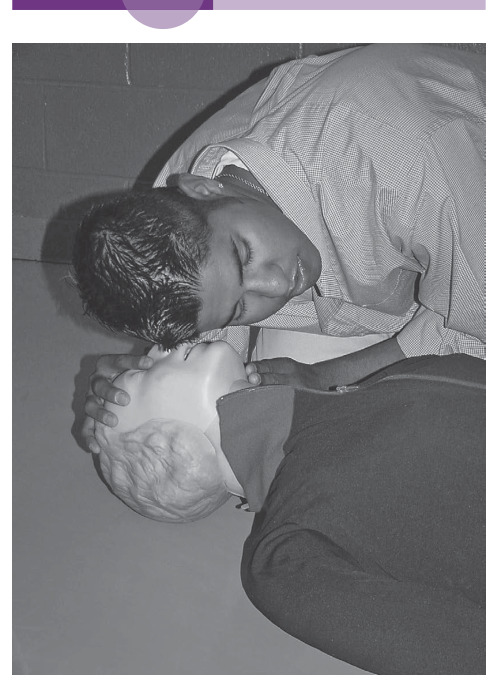
Hình 7.2: Mô hình Resusci® Anne cho phép người học mô phỏng hô hấp cứu hộ (CPR).
sẽ chuyển giao sang các bối cảnh rộng lớn hơn của cuộc sống hằng ngày. Thay vào đó, phải thiết kế các cơ hội học tập có chủ đích, trong đó điều kiện luyện tập lâm sàng khớp chặt chẽ với các hoạt động chức năng thực tế mà bệnh nhân sẽ tham gia.
Thực Hiện Phân Tích Nhiệm Vụ
Như đã nêu ở phần trước, thuyết yếu tố giống nhau gợi ý rằng tiềm năng chuyển giao tích cực phụ thuộc vào mức độ tương đồng giữa hai nhiệm vụ. Số yếu tố chung có thể được xác định bằng cách kiểm tra bốn thành phần phụ sau của kỹ năng.
- Yếu tố chuyển động. Ba bước cuối của động tác lên rổ chẳng hạn, tương đồng với ba bước cuối của nhảy cao. Một người học thành thạo động tác lên rổ sẽ có lợi thế khi học nhảy cao, nếu người thực hành liên hệ hai kỹ năng này trong quá trình hướng dẫn. Cú phát bóng chuyền qua tay và cú phát bóng tennis cũng chia sẻ nhiều yếu tố chuyển động tương tự.
- Yếu tố chiến lược và khái niệm. Chiến lược “cho rồi chạy” (give and go) được dùng trong

Hình 7.3: Có mức độ tương đồng cao giữa vị trí bàn tay khi (a) bắt một quả bóng bầu dục trên cao và (b) chuyền bóng bàn trong bóng chuyền — (a) và (b).
nhiều môn thể thao. Nếu người học đã từng thực hiện chiến lược “cho rồi chạy” trong một môn, thì việc chỉ ra sự tương đồng với chiến lược “cho rồi chạy” trong một môn khác sẽ tạo điều kiện thuận lợi cho việc học. Các ví dụ tương tự gồm việc dùng nghiêng khung chậu trong nhiều hoạt động trị liệu và thể dục, ảnh hưởng của vị trí đầu đến thăng bằng, và khái niệm tìm khoảng trống được chia sẻ trong nhiều môn thể thao.
- Yếu tố tri giác. Chèo kayak nước trắng và bè nước trắng có thể thiếu điểm tương đồng về kỹ năng thể chất, nhưng cả hai đều yêu cầu người đó biết cách đọc dòng nước để chọn lộ trình tốt nhất. Các tín hiệu điều chỉnh, cũng như chiến lược tìm kiếm thị giác được dùng để phát hiện chúng, sẽ khá giống nhau ở cả hai kỹ năng. Sự tương đồng cũng tồn tại giữa khúc côn cầu trên sân và bóng đá trong việc diễn giải thông tin môi trường nhằm đưa ra các dự đoán tri giác cần thiết cho quyết định nhanh và chính xác.
- Yếu tố thời gian và không gian. Nhiều kỹ năng yêu cầu người thực hiện bảo đảm rằng một dụng cụ chạm vào một vật thể vào đúng thời điểm và đúng vị trí; trong đó có các môn vợt như squash, tennis và racquetball.
Hãy quan sát thêm các ví dụ về chuyển giao tích cực bằng cách đến phòng tập huấn luyện thể thao của trường đại học hoặc cao học, hoặc một phòng khám phục hồi chức năng hay vật lý trị liệu, và trả lời các câu hỏi trong Hoạt động Khám Phá 7.2.
Hoạt Động Khám Phá 7.2
Quan Sát: Chuyển Giao
Đối với hoạt động này, hãy sắp xếp để quan sát tại phòng tập huấn luyện thể thao của trường bạn hoặc một phòng khám phục hồi chức năng hay vật lý trị liệu địa phương.
- Bạn có thể tìm thấy bao nhiêu ví dụ về thiết bị, hướng dẫn, bài tập, v.v. được thiết kế để gợi ra chuyển giao tích cực giữa hai kỹ năng? Hãy liệt kê chúng ra.
- Đối với mỗi ví dụ trong danh sách của bạn, hãy xác định thành phần nào của kỹ năng sẽ được chuyển giao (yếu tố chuyển động, yếu tố chiến lược và khái niệm, yếu tố tri giác, hay yếu tố thời gian và không gian).
VÍ DỤ — YẾU TỐ CHUYỂN ĐỘNG — YẾU TỐ CHIẾN LƯỢC VÀ KHÁI NIỆM — YẾU TỐ TRI GIÁC — YẾU TỐ THỜI GIAN VÀ KHÔNG GIAN
Cầu thang huấn luyện (Training Staircase): X — X — X
Thử Thách Trí Não 7.2
Phân tích các cặp kỹ năng sau để xác định điểm tương đồng và khác biệt của chúng. Hãy chắc chắn so sánh các yếu tố chuyển động, yếu tố chiến lược và khái niệm, yếu tố tri giác, và yếu tố thời gian và không gian. Dựa trên phân tích của mình, hãy đánh giá tiềm năng chuyển giao, tích cực hay tiêu cực, cho mỗi cặp. Hãy biện minh cho câu trả lời của bạn.
- Đi bộ bằng gậy và dùng khung tập đi.
- Trượt tuyết xuống dốc và trượt tuyết trên nước.
- Bóng đá chân (kickball) và bóng chày.
- Đi xe đạp leo núi và chèo kayak nước trắng.
Chỉ Ra Điểm Tương Đồng Và Khác Biệt
Khi bạn đã xác định được điểm tương đồng và khác biệt giữa các kỹ năng đã học và kỹ năng sắp được học, hãy chỉ ra những điểm đó cho
người học. Người học không phải lúc nào cũng tự thiết lập được mối liên hệ giữa các kỹ năng. Việc nói rằng trượt patin bằng con lăn và trượt băng trên đá là giống nhau là chưa đủ; bạn phải chỉ ra cụ thể khía cạnh nào của hai kỹ năng giống nhau và khía cạnh nào khác nhau. Chẳng hạn, động tác đạp để khởi động trong trượt patin và trượt băng trên đá tương tự nhau, nhưng cách dừng lại thì rất khác. Với patin con lăn, “phanh” nằm ở phía sau ống giày, và người tham gia phải đẩy nó về phía trước để kích hoạt. Trong trượt băng trên đá, người tham gia có thể dừng theo nhiều cách, tùy theo kinh nghiệm của họ. Một người học trượt bằng giày trượt bóng đá băng (hockey skates) sẽ có khả năng dừng bằng cách xoay người sang một bên với hai chân song song. Một người học trượt bằng giày trượt nghệ thuật thì có thể chỉ cần cắm răng lưỡi dao vào băng và kéo đi. Do đó, những phát biểu chung chung dễ gây hiểu lầm và có thể cản trở thực hiện ban đầu thay vì tạo điều kiện thuận lợi.
Đảm Bảo Rằng Các Kỹ Năng Bạn Viện Dẫn Đã Được Học Kỹ
Bất cứ khi nào bạn cố tận dụng chuyển giao, điều quan trọng là phải bảo đảm rằng kỹ năng hoặc khái niệm bạn viện dẫn đã được học kỹ. Xúc tuyết và múc bóng trong lacrosse có cùng một kiểu chuyển động, nhưng một người sống ở vùng Tây Nam Hoa Kỳ sẽ có ít kinh nghiệm với việc xúc tuyết. Một ví dụ khác là so sánh động tác ném qua vai với cú phát bóng chuyền. Nếu bản thân người đó đã có kiểu ném chưa chín muồi ngay từ đầu, chiến lược này có thể phản tác dụng. Trừ khi kỹ năng bạn viện dẫn đã được học kỹ, nếu không ví dụ sẽ không có ý nghĩa, và ý tưởng bạn muốn truyền đạt sẽ không được truyền tải hiệu quả.
Dùng Ẩn Dụ
Một kỹ thuật khác để gợi ra chuyển giao tích cực là dùng ẩn dụ. Người học tạo ra một hình ảnh tinh thần về cách một kỹ năng nên được thực hiện dựa trên lời giải thích của người thực hành. Người thực hành có thể đơn giản hóa các khái niệm mới bằng cách liên hệ thông tin mới với một mô hình quen thuộc. Ví dụ, để dạy cách cầm vợt đúng trong tennis, người hướng dẫn thường yêu cầu học sinh “bắt tay” với chiếc vợt. Ẩn dụ này liên hệ cách cầm với một điều quen thuộc là cái bắt tay, giúp tăng cường hình ảnh tinh thần của người học về nhiệm vụ.
Liao và Masters (2001) gợi ý rằng dùng ẩn dụ có thể có lợi vì các quy tắc thiết yếu của kỹ năng mới không cần được giải thích rõ ràng. Trong nghiên cứu của họ, người tham gia phải đánh một quả bóng bàn vào một khu vực mục tiêu bằng cú xoáy trên (topspin) với cú đánh thuận tay. Các nhà nghiên cứu, khi dạy cú xoáy trên, đã ví nó với một tam giác vuông, bảo người tham gia “đánh bóng trong khi đưa vợt [paddle] đi lên đường huyền của tam giác” (tr. 310). Những người tham gia khác được cung cấp một bộ 12 kỹ thuật cơ bản để tạo ra cú xoáy trên. Kết quả gợi ý rằng học qua ẩn dụ mang tính tiềm ẩn và là một chiến lược hiệu quả để học cú đánh thuận tay xoáy trên trong bóng bàn. Những phát hiện tương tự đã được ghi nhận cho một nhiệm vụ bắn rổ bóng đá đã được điều chỉnh (ngồi) (Lam, Maxwell, & Masters, 2009), kiểu phối hợp của động tác bơi ếch (Komar et al.,
2014), việc tiếp thu cú swing đầy đủ trong golf (Schücker, Ebbing, & Hagemann, 2010), nhảy dây ở trẻ em (Tse et al., 2017) và cú phát cao trong cầu lông ở người cao tuổi (Lee, Tse, & Wong, 2019).
Thử Thách Trí Não 7.3
Trên một tờ giấy riêng, đối với một môn thể thao hoặc hoạt động mà bạn chọn, hãy liệt kê mười ẩn dụ mà bạn có thể dùng để giúp người học tạo ra hình ảnh tinh thần về một kỹ năng tương ứng.
Xem Xét Trình Độ Kỹ Năng Của Người Học
Khi cố tận dụng kinh nghiệm trước đây của người học, điều quan trọng cần lưu ý là chuyển giao tích cực có khả năng xảy ra hơn khi một người đang học một kỹ năng mới. Việc so sánh các khía cạnh của kỹ năng đã học trước đó với kỹ năng mới được giới thiệu có thể giúp người mới bắt đầu tạo ra một hình ảnh tinh thần nhằm tạo ra những nỗ lực ban đầu. Tuy nhiên, một khi người học đã thể hiện sự hiểu biết về động tác mong muốn, người đó phải tập trung vào các tín hiệu đặc thù của kỹ năng để tiến bộ.
Xác Định Sự Đánh Đổi Lợi–Hại
Các trò chơi dẫn nhập, máy mô phỏng và bài tập nên được đánh giá về hiệu quả chi phí trước khi sử dụng. Nói cách khác, hiệu quả của một bài tập nên được đánh giá đối chiếu với mức độ chuyển giao tích cực tiềm năng. Trừ khi có mức độ tương đồng cao giữa trải nghiệm được thiết kế và hành vi tiêu chí hay hành vi mục tiêu, việc triển khai một số hoạt động và bài tập chuẩn bị có thể là không cần thiết. Ví dụ, nếu thời gian dành để học một trò chơi dẫn nhập (chi phí) vượt quá mức chuyển giao tích cực tiềm năng sang trò chơi thực tế (lợi ích), thì việc dạy và chơi trò chơi dẫn nhập đó sẽ không phải là cách sử dụng hiệu quả thời gian giảng dạy. Tương tự, một bài tập bóng chuyền yêu cầu các đồng đội tạo thành vòng tròn và chuyền bóng bằng cẳng tay cho người tiếp theo theo chiều kim đồng hồ sẽ chuyển giao kém sang tình huống thi đấu, và thực tế có thể dạy cho người chơi thói quen vung tay sang bên thay vì hướng về mục tiêu. Người thực hành phải nhớ rằng mục đích của bất kỳ trải nghiệm học tập nào là chuyển giao việc học sang kiểu chuyển động mục tiêu, tình huống thi đấu hoặc bối cảnh chức năng—“chứ không phải là sự cải thiện bản thân bài tập” (Jeffreys, 2006, tr. 74).
Tối Đa Hóa Sự Tương Đồng Giữa Luyện Tập Và Thực Hiện
Như đã thảo luận ở phần trước, khi giảng dạy nhằm chuyển giao tích cực, người thực hành nên tạo ra các cơ hội luyện tập mang tính đại diện cho bối cảnh thực hiện thực tế (mức độ trung thực hành động cao). Điều này mang đến cho người học cơ hội trở nên nhạy bén với các affordance (cơ hội hành động) phù hợp (Pinder et al., 2011). Khi các nguồn thông tin then chốt không có sẵn cho người học, điều đó làm thay đổi các cơ hội ghép nối giữa tri giác và hành động, làm giảm tiềm năng chuyển giao. Điều này đã được chứng minh trong các nghiên cứu so sánh thực hiện cú đánh của người chơi cricket
giữa một người ném bóng trực tiếp và một máy phóng bóng (Pinder, Renshaw, & Davids, 2009; Renshaw et al., 2007). Những khác biệt đáng kể về phối hợp vận động được ghi nhận đã được quy cho các ràng buộc sinh thái khác nhau do hai tình huống tạo ra, và nhấn mạnh sự cần thiết phải cân nhắc các biến số tri giác điều chỉnh các quyết định và tổ chức vận động khi thiết kế trải nghiệm luyện tập.
Mức độ trung thực hành động cũng đã bị đặt câu hỏi trong huấn luyện nhảy cầu dùng bảng lò xo. Cụ thể hơn, Barris, Davids và Farrow (2013) đã kiểm tra liệu luyện tập trên cạn có mang tính đại diện cho một cú nhảy xuống hồ bơi thực tế hay không. Phân tích động học cho thấy những khác biệt đáng kể giữa kiểu chuyển động của các cú nhảy ngược (reverse dive) khi thực hiện trong môi trường ướt so với môi trường khô. Các tác giả cũng lập luận rằng những khác biệt quan sát được giữa hai môi trường luyện tập là hệ quả của sự thay đổi các ràng buộc nhiệm vụ, nhưng cho rằng cần thêm nghiên cứu trước khi rút ra kết luận rộng rãi về tính hữu ích của luyện tập trên cạn, vì họ chỉ xem xét giai đoạn chuẩn bị của cú nhảy.
Video trên web: Giải thích về Luyện tập Đại diện: www.youtube.com/watch?v=cW1Y8Qvro-I
Vậy người thực hành nên ghi nhớ những cân nhắc nào khi thiết kế hoạt động luyện tập để bảo đảm chúng mang tính đại diện cho bối cảnh thực hiện mà chúng được thiết kế nhằm chuyển giao? Krause và các cộng sự (2019) đưa ra các nguyên tắc hướng dẫn sau dựa trên công trình của Pinder et al. (2011):
- duy trì sự ghép nối chức năng giữa các quá trình tri giác và hành động;
- lấy mẫu đầy đủ các biến số thông tin từ bên trong cuộc thi đấu;
- cân nhắc các ràng buộc đan xen tác động lên đặc điểm vận động; và
- tái tạo các phản ứng cảm xúc tương tự như những phản ứng mong đợi trong thi đấu.
(Trích dẫn từ Krause et al., 2019, tr. 2560).
Cuối cùng, hãy tạo cơ hội sử dụng các kỹ năng mới học trong nhiều tình huống khác nhau. Ví dụ, động tác bước lên dùng để leo cầu thang có thể được dùng không chỉ để leo các bậc thang có độ cao khác nhau mà còn để bước qua lề đường, bước vào bồn tắm và bước lên thang cuốn. Tương tự, một cầu thủ chơi ở vị trí base thứ hai cần có khả năng ném chính xác về đế một, đế hai, đế ba và đế nhà từ
Thử Thách Trí Não 7.4
Một số bài tập dùng để huấn luyện cầu thủ bóng bầu dục có thể được tìm thấy trong các video dưới đây. Hãy đánh giá tiềm năng chuyển giao tích cực của từng bài.
- Bài tập chạy qua lốp (tire run drill) tại https://www.youtube.com/watch?v=4GSB2VXAUTQ.
- Bài tập đẩy xe trượt (sled push drill) được trình diễn từ 2:35 đến 2:50 tại https://www.youtube.com/watch?v=95c8Lr5cHqY.
- Bài tập trả cú punt (punt return drill) tại https://youtu.be/7KP5OhnwKsM.
nhiều vị trí phòng thủ khác nhau. Việc tạo cơ hội sử dụng các kỹ năng mới học trong nhiều tình huống, cùng với việc thiết kế bài tập mô phỏng thực hiện thực tế, sẽ làm tăng tiềm năng tối ưu hóa chuyển giao tích cực.
ĐỘNG LỰC
Động lực là một trạng thái bên trong thúc đẩy và định hướng hành động hay hành vi. Động lực là một sức mạnh mạnh mẽ, vì nó ảnh hưởng đến mức độ tiếp nhận hướng dẫn và sự tận tâm của người học đối với luyện tập.
Động Lực Muốn Học
Người thực hành nên nhận ra rằng dù một số người hào hứng được học, thì những người khác lại có thể lo ngại, có quan niệm sai về kỹ năng được giới thiệu, hoặc đơn giản là không thấy tầm quan trọng của việc học nó. Vì vậy, việc giới thiệu một kỹ năng mới nên thu hút sự quan tâm của người học. Chỉ giải thích mục tiêu của kỹ năng là chưa đủ. Người học phải được đưa ra lý do tại sao việc học kỹ năng cụ thể đó lại quan trọng. Một số ví dụ là phát triển một nền tảng vững chắc để xây dựng các kỹ năng trong tương lai,
QUAN NIỆM SAI PHỔ BIẾN
Tất cả người học đều có động lực học các kỹ năng được trình bày cho họ.
GHI CHÚ NGHIÊN CỨU
Những nguồn thông tin then chốt tồn tại trong môi trường thực hiện và ảnh hưởng đến sự hình thành cùng thời điểm của các hành động. Khi cá nhân trở nên nhạy bén một cách chọn lọc với thông tin này, việc lập kế hoạch và khởi phát các đáp án vận động phù hợp được tạo điều kiện thuận lợi. Thiết kế nhiệm vụ đại diện gợi ý rằng chuyển giao học tập vượt trội hơn khi luyện tập được thiết kế với mức độ trung thực hành động cao hoặc khi sự tương đồng giữa luyện tập và thực hiện được tối đa hóa. Vì tính chất năng động của các môn thể thao xâm lấn, Gorman và Maloney (2016) đã tìm cách điều tra ảnh hưởng của một cầu thủ phòng thủ đối với thực hiện cú bắn rổ. Họ dự đoán rằng người chơi sẽ thay đổi cách thực hiện cú bắn trong điều kiện có người phòng thủ so với không có người phòng thủ. Mười hai cầu thủ có trình độ cao đã thực hiện 30 lần thử, sáu lần thử cho năm loại cú bắn khác nhau (cú ba điểm, ném phạt, động tác ở vùng dưới rổ, cú bắn nhảy dừng, và cú cắt người qua màn chắn) trong cả hai điều kiện có và không có người phòng thủ. Độ chính xác cú bắn, thời gian thực hiện cú bắn, thời gian nhảy, thời gian bóng bay và tính biến thiên vận động đã được ghi lại. Kết quả xác nhận rằng sự hiện diện của một cầu thủ phòng thủ thực sự ảnh hưởng đến cách cầu thủ tấn công thực hiện cú bắn của mình. Người tham gia nhìn chung tăng thời gian nhảy, tốc độ tổng thể của cú bắn và thời gian bóng bay, trong khi độ chính xác cú bắn giảm hơn 20 phần trăm. Những giải pháp vận động biến thiên hơn cũng được áp dụng. Các tác giả kết luận rằng đối với các môn thể thao đồng đội, việc đưa đối thủ vào có thể là một ràng buộc quan trọng để tạo ra các nhiệm vụ luyện tập mang tính đại diện cho bối cảnh thực hiện thực tế.
để có lợi thế cạnh tranh, hoặc để cải thiện vận động chức năng và tính độc lập sau một chấn thương. Bằng cách định khung tình huống học tập như một phương tiện để đạt được một mục tiêu nhất định, người học có thể thấy rõ giá trị của nó hơn.
Thử Thách Trí Não 7.5
Hãy nhớ lại lần gần nhất bạn phải học điều gì đó mà bạn không mấy hứng thú. Tại sao bạn lại không có động lực học? Bạn đã bỏ ra bao nhiêu công sức để học? Những hệ quả khác nào cho quá trình học tập đã phát sinh từ sự thiếu động lực của bạn?
Vai Trò Của Động Lực Trong Quá Trình Học
Theo Lewthwaite và Wulf (2012), cả mức độ và tốc độ học tập đều bị ảnh hưởng bởi các yếu tố động lực liên quan đến các điều kiện luyện tập khác nhau. Trên thực tế, động lực là một trong những nền tảng của thuyết của họ, thuyết OPTIMAL (Optimizing Performance Through Intrinsic Motivation and Attention for Learning; Wulf & Lewthwaite, 2016). Thuyết này gợi ý rằng việc học được tối ưu hóa khi (1) kỳ vọng về một kết quả tích cực được tăng cường; (2) người học được cung cấp sự lựa chọn; và (3) tiêu điểm chú ý được hướng ra ngoài vào tác động vận động dự kiến. Chúng ta sẽ thảo luận hai yếu tố đầu trong phần này vì chúng mang tính động lực. Tiêu điểm chú ý sẽ được đề cập chi tiết hơn trong chương tới.
Tăng Cường Kỳ Vọng
Dù lỗi là một phần không thể thiếu của tiếp thu kỹ năng, môi trường học tập nên là nơi người học không sợ mắc lỗi (Stratton, 1996). Thông qua việc thiết lập một bầu không khí học tập tích cực về mặt động lực, người thực hành có thể khơi dậy sự tự tin và nhận thức cao hơn về năng lực của bản thân, dẫn đến học tập và thực hiện tối ưu (ví dụ Valentini & Rudisill, 2006). Một môi trường như vậy được tạo ra khi có cơ hội để thể hiện năng lực và để đạt được thành công (Blankenship, 2008). Điều này dẫn đến cảm giác thành tựu, tăng cường kỳ vọng của người học về thực hiện tương lai, từ đó tiếp tục thúc đẩy họ luyện tập và tạo thuận lợi cho học vận động. Ví dụ, thực hiện được cải thiện và động lực nội tại lớn hơn đã được ghi nhận khi người học xem các video được biên tập chỉ cho thấy những lần thực hiện tốt của mình, so với kết quả thực tế của họ, cả tốt lẫn xấu (ví dụ Clark & Ste-Marie, 2007). Những lợi thế học tập cũng đã được ghi nhận khi phản hồi tập trung vào những nỗ lực tương đối thành công (Chiviacowsky & Wulf, 2007; Chiviacowsky et al., 2009; Badami et al., 2011, 2012; Saemi et al., 2012). Các ví dụ khác về chiến lược có thể ảnh hưởng đến kỳ vọng thực hiện gồm cung cấp phản hồi tích cực (ví dụ Ghorbani, 2019; Lessa, Tani, & Chiviacowsky, 2018; Stoate, Wulf, & Lewthwaite, 2012), phản hồi so sánh xã hội tích cực (Ávila et al., 2012; Gonçalves et al., 2018; Montes,
Wulf, & Navalta, 2018), niềm vui trong nhiệm vụ (Wulf & Lewthwaite, 2016), và nhấn mạnh vào sự tiến bộ cá nhân (Alderman, Beighle, & Pangrazi, 2006). Những tác động của kỳ vọng tăng cường đối với trạng thái động lực và học vận động sau đó ở những người có self-efficacy (cảm nhận hiệu quả bản thân) cao so với thấp cũng đã được kiểm tra. Ghorbani và Bund (2020) nhận thấy rằng phản hồi từ các lần thử tốt so với kém đã tạo thuận lợi cho học vận động của một nhiệm vụ ném túi đậu, bất kể trạng thái động lực ban đầu của người tham gia. Điều thú vị là, phản hồi từ các lần thử tốt đã làm tăng cảm nhận hiệu quả bản thân của những người tham gia ban đầu báo cáo mức cảm nhận này thấp, trong khi trạng thái động lực lại được duy trì ở những người báo cáo mức cảm nhận cao ngay từ đầu nghiên cứu.
Ý Nghĩa Thực Tiễn
Như đã nêu ở phần trước, người thực hành nên tạo ra một bầu không khí động lực tích cực nhằm tăng cường cảm nhận năng lực và kỳ vọng thực hiện. Khi người học tin rằng các kỹ năng là có thể đạt được, họ có khả năng xem luyện tập như một cơ hội để cải thiện và “nhìn nhận lỗi là tạm thời và là một phần của việc học” (Wulf & Lewthwaite, 2016, tr. 1388). Theo đó, luyện tập nên cung cấp cơ hội thành công trong khi vẫn duy trì mức độ khó phù hợp của nhiệm vụ, một mức độ đầy thách thức nhưng vẫn có thể đạt được (Gaudagnoli & Lee, 2004). Hãy nhấn mạnh sự tiến bộ cá nhân và tự so sánh thay vì so sánh với các học sinh khác, đồng đội, đối thủ hay bệnh nhân. Hãy tạo ra môi trường mà các cá nhân học cách tự tạo động lực cho mình (động lực nội tại), thay vì một môi trường dựa vào phần thưởng hữu hình (động lực ngoại tại). Hãy cung cấp phản hồi tích cực. Phản hồi đó cũng nên tập trung vào quá trình thay vì con người (Kamins & Dweck, 1999).
Quyền Tự Chọn
Việc trao cho người học quyền tự quyết định về một số đặc điểm của tình huống học tập cũng đã được ghi nhận là một chiến lược động lực khả thi (Lewthwaite et al., 2015). Những lợi ích của việc cho người học cơ hội đưa ra lựa chọn (tự kiểm soát) đã được tìm thấy ở một số biến số luyện tập. Các ví dụ gồm lịch luyện tập (Wu & Magill, 2011), lượng luyện tập (Post, Fairbrother, & Barros, 2011), thứ tự các nhiệm vụ luyện tập hoặc thiết bị được dùng (An et al., 2020; Halperin et al., 2017), phản hồi (ví dụ Chiviacowsky, Wulf, de Medeiros, Kaefer, & Tani, 2008), tần suất xem mẫu (ví dụ Wulf, Raupach, & Pfeifer, 2005), và mức độ khó của nhiệm vụ (Andrieux, Danna, & Thon, 2012; xem Sanli et al., 2013 để xem xét lại). Thậm chí việc đưa ra những lựa chọn có vẻ tầm thường, chẳng hạn như màu của các vật thể sẽ được dùng, cũng đã được cho là có lợi cho việc học (ví dụ Lewthwaite et al., 2015; Wulf, Iwatsuki, et al., 2018), dù một số nghiên cứu lại cho kết quả không nhất quán (ví dụ McKay & Ste-Marie, 2020).
Ý Nghĩa Thực Tiễn
Điều này có ý nghĩa gì đối với người thực hành? Hãy trao quyền cho người học của bạn! Cho phép họ đưa ra một số quyết định về luyện tập. Những mẹo thực tiễn trong giáo dục thể chất
GHI CHÚ NGHIÊN CỨU
Vì cả hỗ trợ quyền tự chủ (AS) lẫn kỳ vọng tăng cường (EE) đều đã được chứng minh là có lợi cho việc học, Wulf, Chiviacowsky và Cardozo (2014) muốn kiểm tra tác động kết hợp của hai yếu tố này. Sáu mươi bốn học sinh trung học được phân ngẫu nhiên vào bốn nhóm: AS, EE, AS + EE, và Nhóm đối chứng (C). Nhiệm vụ là ném các quả bóng tennis bãi biển màu qua vai về một mục tiêu tròn đồng tâm treo trên cao bằng tay không thuận. Người tham gia thực hiện một bài kiểm tra trước gồm năm lần thử, tiếp theo là giai đoạn luyện tập gồm sáu khối, mỗi khối mười lần thử. Phản hồi về điểm chính xác trung bình được cung cấp sau mỗi khối. Trong giai đoạn luyện tập, những nhóm nhận hỗ trợ quyền tự chủ (AS, AS + EE) được chọn màu bóng (đỏ, vàng, xanh) trước mỗi khối, trong khi màu bóng được xác định trước cho mỗi khối luyện tập (xanh, đỏ, vàng, xanh, đỏ, vàng) đối với người tham gia ở hai nhóm còn lại (EE, C). Ngoài ra, các nhóm kỳ vọng tăng cường (EE, AS + EE) nhận phản hồi so sánh xã hội tích cực giả tạo, được thiết kế để gợi niềm tin rằng thực hiện của họ trên mức trung bình, trong khi phản hồi đưa cho hai nhóm kia (AS, C) dựa trên thực hiện thực tế. Bài kiểm tra duy trì và bài kiểm tra chuyển giao, mỗi bài gồm mười lần thử, được thực hiện vào ngày hôm sau trong điều kiện không có phản hồi và chỉ dùng một quả bóng màu đỏ. Cảm nhận hiệu quả bản thân cũng được đo sau bài kiểm tra trước và giai đoạn luyện tập, cùng với trước các bài kiểm tra duy trì và chuyển giao. Kết quả cho thấy lợi thế học tập cộng dồn cho cả hỗ trợ quyền tự chủ lẫn kỳ vọng tăng cường, vì nhóm AS + EE thể hiện độ chính xác ném cao nhất ở cả bài kiểm tra duy trì lẫn chuyển giao. Điểm chính xác cũng cao hơn ở các nhóm AS và EE so với nhóm C. Hơn nữa, sau giai đoạn luyện tập và trước các bài kiểm tra duy trì và chuyển giao, các nhóm có can thiệp AS và/hoặc EE cho thấy cảm nhận hiệu quả bản thân cao hơn nhóm C. Các nhà nghiên cứu kết luận rằng việc cho người học một lựa chọn, dù có vẻ như tình cờ, và tăng cường kỳ vọng thực hiện của họ trong lúc luyện tập đã làm tăng cảm nhận hiệu quả bản thân và tạo thuận lợi cho việc học.
được Alderman et al. (2006) đưa ra gồm cho học sinh lựa chọn giữa các hoạt động khi có thể, cho phép họ chọn mức độ khó của nhiệm vụ, và cho họ sự linh hoạt điều chỉnh hoạt động theo nhu cầu cá nhân. Một nhà ngôn ngữ trị liệu lời nói có thể cho một đứa trẻ chọn cuốn sách để đọc. Trong phòng khám, bệnh nhân có thể được chọn bài tập nào làm trước, vật thể nào để nắm khi luyện tập kiểm soát vận động tinh, hoặc thậm chí được cơ hội chọn các bài tập đưa vào chương trình tập tại nhà từ một số bài tập nhằm giải quyết khiếm khuyết của họ.
Thử Thách Trí Não 7.6
Hãy so sánh và đối chiếu các lựa chọn sau đây được đưa ra cho một người học (Klein, 2020):
Lựa chọn 1: “Bạn có muốn nhảy hôm nay không?”
Lựa chọn 2: “Tôi đã lập trình sẵn 3 bài tập nhảy mà tôi nghĩ sẽ có lợi cho bạn. Theo thứ tự nào bạn muốn thực hiện các bài tập đó?”
Bạn sẽ dùng lựa chọn nào và tại sao?
Tác Động Kết Hợp
Với những kết quả học tập và thực hiện tích cực được ghi nhận khi tăng cường kỳ vọng, trao quyền tự chủ cho người học hoặc, như chúng ta sẽ thảo luận trong Chương 8, thúc đẩy người học áp dụng tiêu điểm chú ý ngoại vi, một câu hỏi đáng quan tâm là liệu việc kết hợp các yếu tố có dẫn đến những tăng tiến hơn nữa về thực hiện hay không. Câu trả lời dường như là có! Những tăng tiến thực hiện lớn hơn đã được ghi nhận khi kết hợp hai yếu tố so với việc chỉ dùng một yếu tố (ví dụ Abdollahipour et al., 2017; Pascua et al., 2015; Wulf et al., 2014), với lợi ích thực hiện còn lớn hơn khi có mặt cả ba biến số OPTIMAL (Abdollahipour, Valtr, & Wulf, 2020; Chua, Wulf, & Lewthwaite, 2018; Wulf, Lewthwaite, Cardozo, & Chiviacowsky, 2018).
ĐƯA VÀO THỰC TẾ
Tình Huống Học Tập: Phục Hồi Chấn Thương Cổ Chân
Công việc của Darren đòi hỏi anh không chỉ đi bộ dọc các đường mòn nhiều cây cối, mà còn phải vượt qua nhiều loại địa hình, sườn dốc và chướng ngại vật trong khi mang ba lô và/hoặc thiết bị (ví dụ, một cái cưa máy). Sau khi đã xây dựng được nền tảng thăng bằng tĩnh tốt, giờ đây nhà vật lý trị liệu cần chuẩn bị cho Darren quay trở lại công việc thực địa của anh.
Kiểm Tra Kiến Thức Của Bạn
Hãy tạo ba bài tập thăng bằng/cảm giác tự thân sẽ chuyển giao tích cực sang các hoạt động công việc của Darren. So sánh câu trả lời của bạn với câu trả lời mẫu được cung cấp tại www.routledge.com/cw/coker.
HƯỚNG NHÌN PHÍA TRƯỚC
Quá trình học tập phụ thuộc rất nhiều vào chất lượng tương tác giữa người thực hành và người học. Việc nhận ra ảnh hưởng của khác biệt cá nhân—như
sở thích giao tiếp, kinh nghiệm quá khứ và mức độ động lực—đối với cách người học tiếp nhận thông tin giúp giáo viên, huấn luyện viên hoặc nhà trị liệu cung cấp hướng dẫn và thiết kế những trải nghiệm có ý nghĩa cho từng cá nhân. Chúng ta sẽ tiếp tục áp dụng các khái niệm này khi khám phá các phương pháp trình bày kỹ năng mới trong chương tiếp theo.
TRỌNG TÂM CẦN NHỚ
Sau khi đọc chương này, bạn nên biết:
- Cân nhắc các phương thức giao tiếp khác nhau để đáp ứng khác biệt cá nhân.
- Lượng tri thức tường minh mà người học hình thành về thực hiện động tác được giảm thiểu thông qua học tiềm ẩn.
- Khi việc học một kỹ năng mới hoặc thực hiện nó trong điều kiện mới bị ảnh hưởng bởi kinh nghiệm quá khứ của cá nhân với một hoặc nhiều kỹ năng khác, người ta nói rằng chuyển giao đã xảy ra.
- Dù người thực hành nên tận dụng chuyển giao tích cực, chuyển giao tiêu cực có thể xảy ra khi học một đáp án mới cho một kích thích đã được học kỹ. Chuyển giao tiêu cực có thể được khắc phục bằng luyện tập.
- Để xác định mức độ tương đồng giữa hai kỹ năng và đánh giá tiềm năng chuyển giao tích cực, nên so sánh bốn yếu tố: yếu tố chuyển động, yếu tố chiến lược và khái niệm, yếu tố tri giác, và yếu tố thời gian và không gian.
- Để thúc đẩy chuyển giao tích cực:
- tận dụng kinh nghiệm quá khứ của người học;
- thực hiện phân tích nhiệm vụ;
- nêu bật điểm tương đồng và khác biệt giữa các kỹ năng đã học và các kỹ năng đang được học;
- đảm bảo rằng các kỹ năng được dùng để chuyển giao đã được học kỹ;
- dùng ẩn dụ;
- tạo cơ hội luyện tập với mức độ trung thực hành động cao (để mang tính đại diện cho bối cảnh thực hiện thực tế).
- Động lực là một trạng thái bên trong thúc đẩy và định hướng hành động hay hành vi.
- Để học, một người phải có động lực để làm vậy.
- Thuyết OPTIMAL gợi ý rằng việc học được tối ưu hóa khi (a) kỳ vọng về kết quả tích cực được tăng cường, (b) người học được cung cấp lựa chọn, và (c) tiêu điểm chú ý được hướng ra ngoài vào tác động vận động dự kiến.
Thực hành trong phòng thí nghiệm: Để hoàn thành bài thực hành cho chương này, hãy truy cập www.routledge.com/cw/coker và chọn Lab 7, Transfer (Chuyển Giao).
CÂU HỎI ÔN TẬP
- Những đặc điểm của giao tiếp hiệu quả là gì?
- Hãy đưa ra một ví dụ về chiến lược giao tiếp có thể truyền tải thông tin cho mỗi phương thức.
- Đúng hay Sai: Học tiềm ẩn là việc học không có bất kỳ hướng dẫn nào từ giáo viên, huấn luyện viên hoặc nhà trị liệu. Hãy giải thích câu trả lời của bạn.
- So sánh và đối chiếu chuyển giao tích cực và chuyển giao tiêu cực.
- Bạn sẽ đánh giá bốn thành phần phụ nào của một kỹ năng để xác định điểm tương đồng và khác biệt giữa hai kỹ năng?
- Giải thích tại sao lại quan trọng khi chỉ ra cho người học cả điểm tương đồng lẫn khác biệt giữa hai kỹ năng khi so sánh chúng nhằm mục đích chuyển giao.
- Giải thích tầm quan trọng của việc tạo ra trải nghiệm và hoạt động luyện tập với mức độ trung thực hành động cao.
- Động lực là gì, và tại sao nó là một cân nhắc trước khi giảng dạy?
- Theo thuyết học vận động OPTIMAL, ba điều kiện nào nên được triển khai trong luyện tập?
- Học tự kiểm soát là gì? Hãy đưa ra một ví dụ về cách người thực hành có thể đưa học tự kiểm soát vào luyện tập.
Trình Bày Kỹ Năng
Chương 8 — DOI: 10.4324/9781003039716-8
Chương 8 — Trình Bày Kỹ Năng
Một bệnh nhân 34 tuổi được chuyển đến vật lý trị liệu sau ca phẫu thuật sửa chữa dây chằng chéo trước (ACL) bị rách. Một thành phần của chương trình phục hồi chức năng được kê cho bệnh nhân này là huấn luyện ổn định lõi bằng bóng trị liệu. Vì bệnh nhân chưa quen với các bài tập dùng bóng trị liệu, nhà trị liệu sẽ phải giới thiệu chúng. Làm thế nào để làm điều này tốt nhất? Nhà trị liệu có nên dùng hướng dẫn bằng lời để giới thiệu các bài tập không? Có nên trình diễn mẫu chúng không? Hay trong trường hợp này, cách tiếp cận không trực tiếp (hands-off) lại tốt hơn? Cần cân nhắc những gì để bảo đảm các kỹ năng được trình bày hiệu quả nhất?
HƯỚNG DẪN TRỰC TIẾP SO VỚI KHÔNG TRỰC TIẾP
Khi quyết định chiến lược hướng dẫn nào sẽ dùng, người thực hành có hai cách tiếp cận chính để lựa chọn: (1) hướng dẫn trực tiếp (hands-on) và (2) hướng dẫn không trực tiếp (hands-off) (Williams & Hodges, 2005). Hướng dẫn trực tiếp, còn gọi là hướng dẫn áp đặt, là cách tiếp cận truyền thống, mang tính quy định, trong đó người thực hành cung cấp một khuôn mẫu vận động để người học bắt chước. Cách tiếp cận này được đặc trưng bởi việc dùng hướng dẫn bằng lời và trình diễn mẫu để truyền đạt thông tin cho người học, cũng như việc cung cấp phản hồi nhằm hướng dẫn sự phát triển kỹ năng. Ngược lại, cách tiếp cận không trực tiếp nhấn mạnh vai trò của người thực hành như một nhà thiết kế trải nghiệm học tập, người tạo ra cơ hội khám phá vận động thông qua việc xác định và thao tác có chủ đích các ràng buộc then chốt, nhằm hướng dẫn người học khám phá những giải pháp vận động tối ưu (Woods et al., 2020). Cả hai cách tiếp cận sẽ được thảo luận chi tiết trong chương này.
HƯỚNG DẪN TRỰC TIẾP HAY HƯỚNG DẪN ÁP ĐẶT
Trong cách tiếp cận hướng dẫn trực tiếp hay hướng dẫn áp đặt, khi được giới thiệu một động tác, kỹ năng hoặc nhiệm vụ mới, người học dùng thông tin được cung cấp trong các hướng dẫn và trình diễn mẫu để hình thành ý niệm về các yêu cầu của động tác. Ý niệm này giúp người học xây dựng một kế hoạch vận động đóng vai trò kim chỉ nam trong những lần thử đầu tiên với kỹ năng hay nhiệm vụ. Việc xây dựng một kế hoạch vận động chính xác phụ thuộc vào khả năng của người hướng dẫn trong việc phân tích một kỹ năng, xác định thông tin quan trọng cần truyền đạt, tổ chức thông tin đó và truyền đạt nó một cách hiệu quả (Rink, 2020). Trước khi bắt đầu hướng dẫn, người thực hành phải cân nhắc hai yếu tố sẽ ảnh hưởng trực tiếp đến việc học. Thứ nhất, điều then chốt là thu hút sự chú ý hoàn toàn của người học trước khi giới thiệu kỹ năng. Người thực hành có thể làm điều này bằng cách bảo đảm việc hướng dẫn diễn ra ở một địa điểm không có các yếu tố gây xao nhãng từ môi trường xung quanh. Cách bố trí hay đội hình nên cho phép tất cả người học nhìn và nghe người hướng dẫn rõ ràng; nếu hướng dẫn diễn ra ngoài trời, người học nên được xếp quay lưng lại phía mặt trời. Cuối cùng, người hướng dẫn nên yêu cầu người học đặt các thiết bị như bóng, tạ tay, ống cao su y tế và vợt ra xa khu vực hướng dẫn để loại bỏ mọi cám dỗ chơi với chúng. Việc thiếu chú ý, dù chỉ trong khoảnh khắc, cũng sẽ khiến người học bỏ lỡ thông tin quan trọng cần thiết cho sự phát triển kỹ năng thành công.
Yếu tố thứ hai cần cân nhắc là cách giới thiệu kỹ năng (hay còn gọi là dẫn nhập bài học [set induction] như thuật ngữ dùng trong lập kế hoạch tiết học giáo dục thể chất [Rink, 2020]). Sau khi người học đã ổn định, người hướng dẫn nên giới thiệu kỹ năng theo cách khơi gợi sự hứng thú. Như đã thảo luận trong Chương 7, người học có động lực tiếp nhận hướng dẫn tốt hơn. Sự nhiệt tình có sức lan tỏa! Người thực hành nên trình bày kỹ năng một cách sôi động và nhấn mạnh tầm quan trọng của nó.
Thử Thách Trí Não 8.1
Đối với một kỹ năng vận động mà bạn đang dạy hoặc sẽ dạy trong lĩnh vực chuyên môn của mình, hãy liệt kê các biến số có thể giành mất sự chú ý của người học trong lúc bạn đang hướng dẫn. Sau đó, hãy đề xuất những biện pháp bạn có thể áp dụng để giảm bớt những vấn đề về chú ý này. Ví dụ:
- Điện thoại di động của bệnh nhân đang rung.
- Học sinh đang quấy rầy một bạn cùng lớp.
Hướng Dẫn Bằng Lời
Bạn đã từng thử dạy một đứa trẻ cách buộc dây giày chưa? Có lẽ bạn đã không nghĩ nó khó đến vậy. Bạn đã buộc dây giày cho mình suốt nhiều năm trời. Thực tế, có lẽ bạn được coi là một chuyên gia trong việc buộc dây giày. Nhưng khả năng đưa ra hướng dẫn hiệu quả đòi hỏi nhiều hơn một sự hiểu biết thấu đáo về kỹ năng; bạn còn phải có khả năng truyền đạt tri thức đó cho người học. Đột nhiên, một kỹ năng tưởng chừng đơn giản như buộc dây giày trở nên vô cùng phức tạp khi bạn cố mô tả nó! Hãy kiểm tra hiệu quả hướng dẫn bằng lời của bạn bằng cách thực hiện các nhiệm vụ trong Hoạt động Khám phá 8.1.
Sự quen thuộc với kỹ năng được dạy là một lợi thế rõ ràng. Hiểu biết thấu đáo về kỹ năng giúp người thực hành xác định thông tin nào là quan trọng đối với người học. Tuy nhiên, chính sự quen thuộc đó lại có thể ảnh hưởng tiêu cực đến cách người hướng dẫn truyền đạt thông tin. Người thực hành có thể vô tình đưa ra quá nhiều mô tả, dùng thuật ngữ chuyên môn gây rối rắm, hoặc bỏ sót những chi tiết quan trọng. Kết quả là một người học bực bội và cuối cùng mất hứng thú. Hướng dẫn hiệu quả gửi đi những thông điệp rõ ràng đến người học. Điều này chỉ có thể đạt được khi những khác biệt cá nhân được cân nhắc trong thiết kế hướng dẫn.
Vai Trò Của Hướng Dẫn Nhiệm Vụ
Hướng dẫn nhiệm vụ có hai vai trò riêng biệt. Thứ nhất, chúng giới thiệu cho người học một kỹ năng mới. Ở vai trò này, hướng dẫn phải truyền đạt một ý niệm chung về mục tiêu của kỹ năng hay nhiệm vụ và làm cho người học nhận biết các đặc điểm kỹ thuật chính
QUAN NIỆM SAI PHỔ BIẾN
Chuyên gia luôn là người hướng dẫn hiệu quả nhất.
Hoạt Động Khám Phá 8.1
Hiệu Quả Của Hướng Dẫn Bằng Lời
Nhiệm Vụ 1: Buộc Dây Giày
Tìm một người bạn có giày đeo dây và sẵn sàng tạm thời quên cách buộc chúng. Chỉ dùng mô tả bằng lời, hãy đưa ra hướng dẫn để giúp bạn của bạn buộc dây giày.
Nhiệm Vụ 2: Tái Tạo Một Bản Vẽ
Đối với hoạt động này, bạn cần một người bạn, một tờ giấy và một cây bút chì. Người bạn của bạn nên ngồi quay lưng lại phía bạn, với giấy và bút chì trong tay. Nhiệm vụ của bạn là mô tả sơ đồ bên cạnh để người bạn có thể tái tạo lại nó. Trong suốt bài tập, bạn không được nhìn vào bản vẽ của người bạn, và người bạn cũng không được nhìn vào sơ đồ. Người bạn có thể đặt câu hỏi cho bạn nhưng không được dùng cử chỉ. Sau khi bạn mô tả xong và người bạn hoàn tất việc diễn giải những gì bạn mô tả, hãy so sánh hai bản vẽ. Thực hiện lại bài tập, dùng sơ đồ thứ hai được hiển thị (ở góc dưới bên phải) và đổi vai trò cho nhau. Lần này, người “vẽ” không được phép đặt bất kỳ câu hỏi nào. Hãy so sánh hai bản vẽ khi kết thúc.
Câu Hỏi
- Mức độ chính xác của bản sao mà người bạn tạo ra đối với sơ đồ bạn mô tả như thế nào? Những khác biệt đó có gợi ý gì cho bạn về cách bạn giao tiếp không?
- Người bạn của bạn đã đặt những loại câu hỏi làm rõ nào? Những câu hỏi đó có cung cấp cho bạn thông tin gì về cách bạn giao tiếp không?
- Bạn cảm thấy thế nào trong phần thứ hai, khi không được phép đặt câu hỏi? Bạn có thể khái quát hóa những thông tin đó sang các tình huống học tập khác không?
- Bạn có thể thay đổi những gì (nếu có) để cải thiện hiệu quả giao tiếp của mình trong tương lai?
hoặc các yếu tố then chốt (Griffey & Housner, 2007). Sau khi ý niệm chung về động tác đã được truyền đạt, tiêu điểm của hướng dẫn chuyển dịch; giờ đây, tinh chỉnh kỹ năng trở thành mục tiêu. Ở vai trò này, hướng dẫn nhằm phát triển trình độ kỹ năng của người học để họ có thể thực hiện kỹ năng trong các điều kiện tiêu chí.
Thử Thách Trí Não 8.2
Cho đến nay, chúng ta đã tập trung sự chú ý vào các đặc điểm của người học. Hiểu được người học giúp chúng ta đưa ra quyết định hiệu quả hơn về thiết kế hướng dẫn. Dựa trên hiểu biết của bạn về người học cho đến nay, bạn nghĩ những đặc điểm nào của hướng dẫn hiệu quả? Hãy ủng hộ ý tưởng của mình bằng cách giải thích cách mỗi đặc điểm sẽ đáp ứng được người học. Tiếp tục đọc phần về hướng dẫn bằng lời để xem bạn làm tốt đến đâu.
Ví dụ:
Đặc điểm: Hướng dẫn nên ngắn gọn.
Lý do: Dung lượng lưu trữ hạn chế của trí nhớ ngắn hạn.
Giới Thiệu Kỹ Năng
Như đã nêu trong phần trước, hướng dẫn ban đầu nên hướng sự chú ý của người học vào các yếu tố then chốt của kỹ năng vận động mới (Rink, 2020). Người mới bắt đầu thường gặp khó khăn trong việc phân biệt giữa các kích thích liên quan và không liên quan. Ví dụ, hoạt động tung bóng (juggling) được trình bày trong Chương 1 đã đưa ra rất ít hướng dẫn về cách tung bóng. Nếu bạn chưa từng thử tung bóng trước đây, có lẽ bạn đã có nhiều câu hỏi về cách thực hiện nhiệm vụ này, như “Tôi ném bóng cao đến mức nào?”, “Khi nào tôi buông tay?”, và “Tôi nên dùng nhịp điệu kiểu gì?”. Vì các yếu tố then chốt của nhiệm vụ tung bóng không được chỉ ra, có lẽ sau này bạn đã khám phá, qua thử và sai, rằng nhiều yếu tố bạn chọn chú ý thực ra không ảnh hưởng gì đến việc học nhiệm vụ. Bằng cách hướng sự chú ý của người học vào các yếu tố then chốt của kỹ năng, người hướng dẫn không để người học phải đoán xem nên tập trung vào cái gì — như đã xảy ra khi bạn học tung bóng.
Lượng Thông Tin
Hãy giữ lời giải thích ngắn gọn và đơn giản. Hướng dẫn dài, chi tiết thách thức khả năng chú ý và dung lượng lưu trữ của trí nhớ ngắn hạn của người học; như đã thảo luận trong Chương 5, những thứ này có dung lượng hạn chế. Sau khi khơi gợi hứng thú của người học bằng phần giới thiệu, hãy tận dụng điều đó. Người học sẽ háo hức tự mình thử kỹ năng. Ngoài ra, chỉ cung cấp các yếu tố then chốt cần thiết để học đúng kỹ năng bạn đang dạy. Chẳng hạn, giải thích về cách cầm gậy bóng chày là phù hợp cho buổi học đánh bóng đầu tiên, nhưng các kỹ thuật cụ thể để tạo ra cú xoay hông tối ưu nhằm sinh ra lực tối đa thì không. Những chi tiết đó nên được giải quyết sau này, khi người học đang cố tinh chỉnh mô hình vận động.
Thử Thách Trí Não 8.3
Hãy nhớ lại trải nghiệm tung bóng của bạn trong Hoạt động Khám phá 1.1. Bạn đã chọn chú ý đến những biến số nào nhưng sau đó bỏ đi vì phát hiện chúng không liên quan đến nhiệm vụ? Bạn đã phát hiện những biến số nào liên quan đến thực hiện thành công? Trải nghiệm tung bóng của bạn đã có thể khác đi như thế nào nếu bạn có một người hướng dẫn hiệu quả?
Ngôn Ngữ Chính Xác
Khi đưa ra hướng dẫn, hãy bảo đảm cung cấp cho người học đủ thông tin để truyền đạt khái niệm, đồng thời dùng thuật ngữ phù hợp với trình độ phát triển. Cụm từ “chụp gậy lên trên” (choke up on the bat) có thể quen thuộc với một số người học, nhưng với một người mới bắt đầu có ít kinh nghiệm thể thao thì nó có thể ít ý nghĩa. Một người đang học cách tập bài tập hộp rỗng (empty-can exercises) để phục hồi gân xoay cổ tay (rotator cuff) sẽ đáp ứng với chỉ dẫn “giơ tay lên” theo một cách, nhưng có thể đáp ứng khác đi nếu chỉ dẫn là “giơ tay lên đến điểm mà cánh tay trên song song với sàn nhà.”
Thiếu tính cụ thể có thể dẫn đến hiểu lầm. Trong một trường hợp, một huấn luyện viên đã dặn một tiền vệ trung học “ném nhanh hơn” sau khi nhận thấy cầu thủ này ném với cánh tay quá ngắn, dẫn đến tốc độ bóng kém. Tiếc thay, điều đó khiến cầu thủ dùng kỹ thuật ném ngắn tay còn hơn nữa; cách cầu thủ hiểu lời hướng dẫn là buông bóng sớm hơn, thay vì dùng toàn bộ tầm vận động để tạo thêm vận tốc. Hãy chọn lời từ cẩn thận. Bằng cách dùng thuật ngữ cụ thể, phù hợp với trình độ phát triển và khớp với trình độ kỹ năng của người học, bạn có thể tăng đáng kể khả năng hướng dẫn của mình được hiểu rõ.
Tiêu Điểm Nội Tại So Với Tiêu Điểm Ngoại Vi
Các cuộc phỏng vấn với vận động viên điền kinh và dã ngoại cho thấy 84,6 phần trăm huấn luyện viên đưa ra hướng dẫn liên quan đến các động tác cụ thể của cơ thể và chi (Porter, Wu, & Partridge, 2010). Trong một nghiên cứu tương tự, Durham et al. (2009) báo cáo rằng 95,5 phần trăm nhận xét phản hồi mà các nhà vật lý trị liệu đưa ra cho bệnh nhân đột quỵ trong quá trình điều trị liên quan đến các động tác của cơ thể (tiêu điểm nội tại). Halperin et al. (2016) cũng xác nhận xu hướng này khi phân tích các nhận xét phản hồi mà huấn luyện viên quyền anh đưa ra trong các trận đấu. Tuy nhiên, nghiên cứu cho thấy cách làm phổ biến này là hướng tiêu điểm chú ý vào bên trong, tức là vào các động tác của cơ thể, có thể không phải là cách tiếp cận hiệu quả nhất. Thay vào đó, lợi ích đã được chứng minh cho cả hiệu quả lẫn hiệu suất vận động khi áp dụng external focus of attention (tiêu điểm chú ý ngoại vi), tức là chú ý đến tác động của hành động của mình trên nhiều loại hoạt động (xem Wulf, 2013, để xem xét tổng quan toàn diện). Lý thuyết đứng sau hiện tượng này là giả thuyết hành động bị ràng buộc (constrained action hypothesis) (Wulf, McNevin, & Shea, 2001). Theo lý thuyết này, khi người học áp dụng tiêu điểm nội tại — như khi tập trung vào động tác của cánh tay
trong trò Cornhole chẳng hạn — họ cố ý kiểm soát hành động. Điều này làm gián đoạn dòng chảy tự nhiên của động tác. Việc thay vào đó chú ý đến quỹ đạo mong muốn của túi đậu (áp dụng tiêu điểm ngoại vi) được cho là thúc đẩy việc dùng các quá trình kiểm soát tự động hơn, nâng cao học tập và thực hiện. Duy trì tiêu điểm ngoại vi rõ ràng cũng được coi là thành phần then chốt của lý thuyết học vận động OPTIMAL (được giới thiệu trong Chương 7), vì người ta cho rằng nó đóng góp quan trọng vào sự ghép nối mục tiêu–hành động, hay hiệu quả mà mục tiêu định trước được chuyển hóa thành hành động (Wulf, Lewthwaite, et al., 2018).
GHI CHÚ NGHIÊN CỨU
Các cú tiếp đất cứng trong những môn thể thao như bóng rổ đã được liên hệ với chấn thương ACL không do va chạm và đã trở thành mục tiêu của các chương trình phòng ngừa. Việc huấn luyện vận động viên tránh tiếp đất cứng thường liên quan đến hướng dẫn bằng lời và phản hồi. Almonroeder et al. (2020) quan tâm đến ảnh hưởng của hướng dẫn bằng lời thúc đẩy tiêu điểm nội tại so với tiêu điểm ngoại vi lên cơ chế tiếp đất, cụ thể là độ cứng của cú tiếp đất. Mười sáu nữ vận động viên (bóng rổ, bóng đá, bóng chuyền) đã thực hiện tổng cộng 21 cú nhảy xuống từ một hộp cao 31 cm xuống một bàn đo lực. Trong bảy lần thử đầu tiên, người tham gia dùng kỹ thuật quen thuộc của mình để thiết lập đường cơ sở. Sau đó, họ thực hiện thêm hai loạt bảy lần thử, khi đó họ được đưa ra hướng dẫn bằng lời nhằm giảm độ cứng khi tiếp đất. Trong điều kiện tiêu điểm nội tại, người tham gia được nhắc tập trung vào việc cong đầu gối khi tiếp đất. Hướng dẫn trong điều kiện tiêu điểm ngoại vi là “tập trung vào việc tiếp đất nhẹ nhàng.” Dữ liệu lực và dữ liệu động học ba chiều đã được thu thập. Cả hai điều kiện hướng dẫn đều dẫn đến giảm độ cứng của chân khi tiếp đất, lực tiếp đất thấp hơn và gập hông cùng gập đầu gối lớn hơn so với thực hiện ở đường cơ sở. Tuy nhiên, hướng dẫn thúc đẩy tiêu điểm ngoại vi dẫn đến gập đầu gối lớn hơn nữa và độ cứng chân thấp hơn so với khi họ được cung cấp hướng dẫn thúc đẩy tiêu điểm nội tại. Nói cách khác, hướng dẫn bằng lời không chỉ có tác động ngay lập tức lên cơ chế tiếp đất, mà những hướng dẫn thúc đẩy tiêu điểm ngoại vi còn dẫn đến kiểu tiếp đất nhẹ nhàng hơn, mà các tác giả cho rằng có thể làm giảm nguy cơ chấn thương ACL.
Điều này có ý nghĩa gì đối với người thực hành? LỜI TỪ QUAN TRỌNG! Chỉ đơn giản đổi hướng dẫn từ “xoay vai xuống dốc” (tiêu điểm nội tại) sang “xoay khóa kéo xuống dốc” (tiêu điểm ngoại vi) cũng có thể ảnh hưởng đến thực hiện. Tương tự, hãy chỉ dẫn một cầu thủ tennis “kết thúc cú đánh với mặt dây vợt hướng về hàng rào bên” hoặc “tạo ra quả bóng . . .” thay vì hướng sự chú ý vào động tác của cánh tay (Regan, 2011). Cũng vậy, hãy hướng dẫn một bệnh nhân tưởng tượng việc đá bóng trong giai đoạn vung chân cuối của chu kỳ dáng đi thay vì tập trung sự chú ý vào cú chạm gót chân (McNevin, Wulf, & Carlson, 2000). Các ví dụ khác bao gồm hướng dẫn
một người chơi nhạc gõ tập trung vào chuyển động của dùi trống thay vì chuyển động của cổ tay, tập trung vào mục tiêu trong trò ném móng ngựa thay vì vào động tác của cánh tay, và bảo một bệnh nhân chú ý đến vị trí của vật cần di chuyển thay vì vào các động tác của bàn tay và ngón tay dùng để di chuyển vật đó (Wulf, 2007). Để xem thêm ví dụ về việc hướng tiêu điểm vào bên trong so với bên ngoài, xem Bảng 8.1. Lưu ý rằng mục đích của gợi ý là như nhau; gợi ý ngoại vi chỉ đơn giản hướng sự chú ý của người học đến một cái gì đó ngoài cơ thể, bao gồm thiết bị/dụng cụ và/hoặc tác động mong muốn.
Winkelman (2018) đề xuất một khung công tác dựa trên bằng chứng để tạo ra các gợi ý tiêu điểm ngoại vi, xem xét ba đặc điểm: khoảng cách, hướng và mô tả (cụ thể là ý định/cường độ). Về khoảng cách, tiêu điểm ở xa (xa hơn) nhìn chung tốt hơn tiêu điểm ở gần (gần hơn; ví dụ Banks et al., 2020). Tuy nhiên, Coker (2016) đã chứng minh một giới hạn của hiệu ứng này, khi phát hiện rằng một
BẢNG 8.1
Ví dụ về việc hướng tiêu điểm vào bên trong so với bên ngoài
- Kỹ năng — Tiêu điểm nội tại — Tiêu điểm ngoại vi
- Tiếp đất/bài tập plyometric — Uốn cong mắt cá chân nhiều hơn khi tiếp đất — Tiếp đất nhẹ nhàng hơn.
- Cú ném lacrosse qua đầu — Lắc cổ tay về phía mục tiêu — Ném rổ của gậy về phía mục tiêu.
- Cú putt trong golf — Vung tay theo chuyển động con lắc — Vung gậy theo chuyển động con lắc.
- Xuất phát từ bục — Duỗi thẳng chân hoàn toàn khi rời bục — Đẩy mạnh vào bục phía sau bạn.
- Bơi tự do — Kéo tay về sau — Kéo nước về sau.
- Nghiêng xương chậu — Co cơ bụng dưới để xoay xương chậu ra sau — Áp lưng xuống sàn cho phẳng.
Thử Thách Trí Não 8.4
Hãy điền vào bảng dưới đây bằng cách phát triển các gợi ý ngoại vi tương ứng với các gợi ý nội tại được cung cấp.
- Kỹ năng — Tiêu điểm nội tại — Tiêu điểm ngoại vi
- Cú giật tạ (Snatch, cử tạ) — Tập trung duỗi thẳng hai tay ở vị trí cao nhất — (hãy điền gợi ý ngoại vi).
- Với lấy một chiếc cốc — Cố vươn tay xa hơn — (hãy điền gợi ý ngoại vi).
- Chèo kayak — Tập trung kéo tay về sau — (hãy điền gợi ý ngoại vi).
- Kéo dài sải chân — Đẩy mạnh hơn bằng chân — (hãy điền gợi ý ngoại vi).
- Trượt tuyết — Cong đầu gối nhiều hơn — (hãy điền gợi ý ngoại vi).
khoảng cách đầy thử thách nhưng vẫn đạt được đã dẫn đến những màn nhảy xa tại chỗ tốt hơn. Yếu tố thứ hai cần cân nhắc là hướng. Một số nghiên cứu dùng cú nhảy xa đã cho thấy việc nhắc người thực hiện nhảy về phía một mục tiêu thay vì nhảy ra xa khỏi vạch xuất phát giúp cải thiện thành tích nhảy (ví dụ Porter et al., 2012, 2013). Cuối cùng, ý định và cường độ của mô tả thể hiện trong gợi ý ngoại vi cũng nên được cân nhắc thông qua việc dùng động từ hành động, từ bổ nghĩa và/hoặc ẩn dụ. “Bùng lên về phía trần nhà” trong cú nhảy cao hay “đá mạnh xuyên qua quả bóng” biểu thị cách kỹ năng nên được thực hiện. Ngoài ra, ẩn dụ làm rõ những đặc điểm liên quan đến mục tiêu của động tác đang được dạy bằng cách liên hệ chúng với một điều gì đó quen thuộc, như “bùng khỏi mặt đất như tên lửa lúc phóng” (Winkelman, 2018). Dùng khung này, một huấn luyện viên có thể bảo một vận động viên bơi “bùng lên” (mô tả) khỏi bục xuất phát hướng về (hướng) đầu kia của hồ bơi (khoảng cách). Trong vật lý trị liệu, một bệnh nhân có thể được nhắc cố giữ mép ngoài của bảng dao động cân bằng (khoảng cách) thông qua những điều chỉnh động tác tinh tế (mô tả), hoặc một khách hàng đang học động tác lăn phần thân trên như một bài tập chỉnh sửa có thể được hướng dẫn vươn về phía bức tường (khoảng cách và hướng) và làm điều đó bằng cách duỗi người dài tối đa (mô tả).
Cuối cùng, đã có ghi nhận một số ngoại lệ đối với lợi ích của tiêu điểm chú ý ngoại vi. Các nghiên cứu xem xét tiêu điểm chú ý trong thực hiện vận động của trẻ em và thanh thiếu niên đã cho kết quả trái ngược, trong đó một số ủng hộ việc dùng tiêu điểm ngoại vi (ví dụ Marchant et al., 2018), trong khi số khác chứng minh lợi ích của tiêu điểm nội tại (ví dụ Emanuel, Jarus, & Bart, 2008) hoặc không ghi nhận sự khác biệt giữa hai điều kiện (ví dụ Agar et al., 2016; Palmer et al., 2017). Các yếu tố được đề xuất có thể giải thích những mâu thuẫn này và cần nghiên cứu thêm gồm khác biệt cá nhân (Tse & van Ginneken, 2017; van Abswoude et al., 2018), cũng như các loại nhiệm vụ khác nhau và các giai đoạn học khác nhau (Agar et al., 2016). Dựa trên kết quả của mình, Gottwald et al. (2020) cũng đề xuất rằng việc tập trung vào cơ thể có thể có lợi cho những nhiệm vụ mang tính “cảm giác tự thân” hơn và ít phụ thuộc vào thông tin thị giác.
Kỹ Năng Đã Học Trước Đây
Theo các nguyên tắc của chuyển giao (được thảo luận trong Chương 7), khi một kỹ năng được giới thiệu, người học sẽ rút ra được ý nghĩa lớn hơn từ lời giải thích nếu nó liên quan đến một kinh nghiệm trước đó. Chẳng hạn, với một người có kinh nghiệm phong phú về bóng chuyền, việc hiểu vị trí cánh tay tại thời điểm chạm bóng trong cú phát bóng tennis sẽ dễ dàng hơn nếu người hướng dẫn so sánh nó với vị trí trong cú phát bóng chuyền. Mối liên hệ như vậy giúp người học đơn giản hóa kỹ năng, khái niệm hay chiến lược mới và tăng tốc độ tiếp thu nó.
Gợi Ý Bằng Lời
Nghiên cứu đã chỉ ra rằng việc dùng các gợi ý bằng lời tạo thuận lợi cho việc học (ví dụ Masser, 1993; Landin, 1994; Fronske, Blakemore, & Abendroth-Smith, 1997; Lorson &
Goodway, 2007; McNamee & Stefen, 2007). Gợi ý bằng lời là một từ hoặc cụm từ ngắn gọn tập trung sự chú ý của người học hoặc gợi ra một động tác hay trình tự động tác. Chẳng hạn, “Hai chân rộng bằng vai” hướng sự chú ý của người học vào một yếu tố then chốt của kỹ năng; “Bóng tự do” (free ball), dùng trong bóng chuyền, chuẩn bị cho hàng thủ, cho biết bóng sẽ được chuyền qua lưới vì không thể tấn công. Gợi ý “Bước” gợi ra một động tác, và gợi ý “Phải, phải, trái, lại gần nhau” gợi ra một trình tự động tác — chuỗi các lần chạm đất trong cú nhảy ba bước (triple jump).
Người học cũng phát triển và dùng các gợi ý để tự dẫn dắt mình thực hiện một hành động hay trình tự động tác. Kỹ thuật này được gọi là tự thoại (self-talk) hoặc diễn tập bằng lời, vì về cơ bản người học tự nói chuyện với mình trong lúc thực hiện nhiệm vụ. Nghĩ “khuỷu tay lên” để gợi ý cú vung tay cao trong kiểu bơi tự do là một ví dụ điển hình. Nhiều nghiên cứu đã chỉ ra rằng tự thoại có kế hoạch trong hướng dẫn có thể nâng cao tiếp thu kỹ năng (ví dụ Landin & Hebert, 1999; Perkos, Theodorakis, & Chroni, 2002; Hatzigeorgiadis, Theodorakis, & Zourbanos, 2004).
Bốn nguyên tắc hướng dẫn sau đây có thể giúp bạn xây dựng các gợi ý hiệu quả do người thực hành đưa ra và do chính người học tự tạo ra:
- Gợi ý phải ngắn gọn. Gợi ý tự thoại hiệu quả nhất khi chỉ chứa một hoặc hai từ (Ziegler, 1987). Với gợi ý do người thực hành đưa ra, tốt nhất cụm từ không nên dài quá bốn từ (Masser, 1993).
- Gợi ý phải chính xác. Trừ khi gợi ý thể hiện rõ các thành phần của kỹ năng, nếu không chúng sẽ không hiệu quả. Để xây dựng các gợi ý then chốt phản ánh chính xác các thành phần vận động quan trọng, bạn cần am hiểu kỹ năng đó.
- Số lượng gợi ý nên bị giới hạn. Quá nhiều gợi ý không chỉ làm tăng khả năng quên mà còn có thể can thiệp vào nhịp điệu tự nhiên của kỹ năng. Hãy nhớ rằng gợi ý được dùng để tập trung sự chú ý của người học. Việc chia một kỹ năng thành quá nhiều thành phần — dù nhằm đơn giản hóa nó cho người học — có thể ảnh hưởng tiêu cực đến thời điểm tổng thể của kỹ năng. Học lái xe số sàn là ví dụ điển hình. Nếu các gợi ý “đạp côn,” “chuyển số,” “nhả côn,” và “đạp ga” được xem là các bước riêng biệt, người học có thể bất ngờ khi xe bị chết máy hoặc vọt về phía trước!
- Nên lặp lại cùng một gợi ý. Sự lặp lại giúp người học hình thành liên kết mạnh mẽ giữa gợi ý và nhiệm vụ. Liên kết này, lần lượt, có tác động tích cực đến duy trì kỹ năng.
Tài nguyên trên web: Để xem thêm tài liệu giúp bạn xác định gợi ý cho hoạt động, hãy truy cập trang web đi kèm hoặc tham khảo Fronske và Heath (2015).
Gợi ý hoạt động: www.pecentral.org/lessonideas/cues/cuesmenu.asp
Thử Thách Trí Não 8.5
Thực hiện phân tích nhiệm vụ (xem Chương 1) sẽ giúp người thực hành xây dựng gợi ý bằng lời. Trước tiên, hãy chia kỹ năng thành các giai đoạn. Tiếp theo, xác định các yếu tố then chốt của mỗi giai đoạn. Cuối cùng, phát triển các gợi ý bằng lời dựa trên các yếu tố then chốt đó. Chẳng hạn, cú putt có thể được chia thành cách cầm gậy, cách đứng chuẩn bị và cú vung. Bảng dưới đây đưa ra ví dụ về các yếu tố then chốt của cú vung và các gợi ý tương ứng.
- Yếu tố then chốt — Gợi ý bằng lời
- Vai, khuỷu tay, bàn tay và gậy putt cùng vung qua lại như một khối thống nhất — Vung như con lắc.
- Gậy putt tăng tốc trong cú vung về trước — Vung xuyên qua quả bóng.
- Cú vung về sau và cú vung về trước nên đi cùng một quãng đường — Duy trì tỉ lệ vung.
Những từ gợi ý nào có thể dùng để gợi ra các động tác cho tư thế sẵn sàng đua, cú vung về trước và cú hồi phục trong môn đua xe lăn, như được mô tả trong Sổ tay Huấn luyện Điền kinh Special Olympics (2007, tr. 169)?
ĐUA XE LĂN
Tư Thế Sẵn Sàng Đua
Mô tả — Gợi ý
- Vận động viên phải ngồi trên đệm hoặc ghế của xe lăn.
- Nghiêng phần thân trên về phía trước để vai nằm trước hông.
- Giữ đầu gối và bàn chân lại gần nhau ở giữa xe.
- Nắm bánh xe hoặc thanh tay cầm ở vị trí 11 giờ; tức là ngay sau điểm cao nhất của bánh xe (vị trí 12 giờ), với ngón cái ở bên trong và các ngón tay ở bên ngoài.
- Giữ đầu hơi hướng về phía trước và nhìn về phía trước vài mét.
Cú Vung Về Trước Và Cú Hồi Phục
Mô tả — Gợi ý
- Từ tư thế sẵn sàng đua, đẩy bánh xe hoặc thanh tay cầm về phía trước từ vị trí 11 giờ đến vị trí 4 giờ, rồi buông tay khỏi bánh xe.
- Tiếp tục di chuyển tay và bàn tay theo chuyển động tròn, tức là đi qua các vị trí 6 giờ và 9 giờ, rồi hồi phục về vị trí 11 giờ.
- Giữ cơ thể và đầu yên trong cú vung và cú hồi phục.
Nguồn: Special Olympics Athletics Coaching Guide (2007). Truy cập tại http://digitalguides.specialolympics.org/athletics/?#/4/OnePage
GHI CHÚ NGHIÊN CỨU
Dùng 42 sinh viên đại học, McNamee và Steffen (2007) đã kiểm tra ảnh hưởng của các gợi ý hướng dẫn lên thực hiện leo núi đá. Sinh viên được chia thành hai nhóm, mỗi nhóm học và luyện tập các kỹ thuật leo núi đá cơ bản giống nhau trong 14 ngày trên một bức tường leo trong nhà cao 30 feet với 12 đường leo có độ khó khác nhau. Nhóm thứ nhất (22 sinh viên) nhận 12 gợi ý hướng dẫn, trong khi nhóm thứ hai (20 sinh viên) không nhận gợi ý nào trong quá trình hướng dẫn. Người tham gia được kiểm tra trước và sau về khả năng leo bằng phiên bản điều chỉnh của hệ thống chấm điểm của Liên đoàn Leo thể thao Hoa Kỳ. Kết quả cho thấy nhóm nhận gợi ý hướng dẫn thực hiện tốt hơn đáng kể so với nhóm đối chứng không nhận gợi ý nào. Những dữ liệu này ủng hộ vai trò của gợi ý bằng lời trong việc tạo thuận lợi cho tiếp thu kỹ năng.
Kiểm Tra Sự Hiểu Biết
Hướng dẫn chỉ gợi ra được đáp án mong muốn khi người học hiểu được chúng. Thay vì chờ người học cố thực hiện lời hướng dẫn của bạn để đánh giá mức độ hiểu nhiệm vụ hiện tại, hãy cho họ cơ hội đặt câu hỏi sau khi kỹ năng được trình bày. Yêu cầu người học nhắc lại các yếu tố then chốt của kỹ năng có thể giúp bạn đánh giá thêm mức độ hiểu hướng dẫn của họ. Với một lần kiểm tra nhanh sự hiểu biết, bạn sẽ tránh được việc phải tập hợp lại người học để lặp lại hay làm rõ hướng dẫn.
Thử Thách Trí Não 8.6
- Hãy liệt kê những hành vi hoặc cử chỉ gợi ý rằng người học có thể chưa hiểu hướng dẫn đã được đưa ra.
- Hãy suy đoán xem việc hỏi người học có câu hỏi nào hay yêu cầu họ nhắc lại các yếu tố then chốt của kỹ năng sẽ hiệu quả hơn khi kiểm tra sự hiểu biết. Hãy nêu lý do cho câu trả lời của bạn.
Trình Diễn Mẫu
Hãy xem lại trải nghiệm dạy một người cách buộc dây giày. Có lẽ không lâu trước khi bạn nhận ra rằng việc mô tả bằng lời cách buộc dây giày một cách có ý nghĩa đòi hỏi rất nhiều chi tiết, cũng như một lời giải thích khá dài dòng — và cả hai đều không giúp ích gì cho việc học. Thực tế, phản ứng đầu tiên của bạn khi đối diện với thử thách này nhiều khả năng là chỉ cho người học cách làm. Theo câu tục ngữ một bức tranh đáng giá ngàn lời, trình diễn mẫu
thường là phương pháp hướng dẫn được ưu tiên, và nghiên cứu ủng hộ tính hiệu quả của nó trong việc tạo thuận lợi cho học vận động (xem Ste-Marie, Lelievre, & St. Germain, 2020, để xem xét tổng quan).
Nơ-ron gương: https://www.youtube.com/watch?v=pGYKcqzG_7M
Các Thuyết Về Học Qua Quan Sát
Trình diễn mẫu, còn gọi là mô hình hóa hay học qua quan sát, dựa trên khả năng của người học trong việc tiếp thu thông tin bằng cách quan sát một người khác, hay mô hình, thực hiện động tác. Về mặt thần kinh, một loại tế bào thần kinh chuyên biệt mới được phát hiện gọi là nơ-ron gương được cho là giải thích khả năng này. Nơ-ron gương là các tế bào thần kinh bắn tín hiệu khi chúng ta thực hiện một hành động và khi chúng ta xem người khác thực hiện cùng hành động đó. Nói cách khác, nơ-ron gương dường như là cơ chế thần kinh mà qua đó học qua quan sát diễn ra (Buccino & Riggio, 2006; Buccino et al., 2004). Bạn có thể tìm hiểu thêm về nơ-ron gương và sự khám phá ra chúng bằng cách xem video trên trang web đi kèm.
Dù nơ-ron gương đã được chứng minh là hoạt động trong học qua quan sát, cách mô hình hóa tạo thuận lợi cho tiếp thu kỹ năng vẫn là một câu hỏi quan trọng. Hai thuyết đưa ra lời giải thích.
Thuyết Nhận Thức Xã Hội Về Học Qua Quan Sát
Thuyết nhận thức xã hội về học qua quan sát (Bandura, 1986) cho rằng khi một người học quan sát người khác mô phỏng một động tác, người học xử lý thông tin do mô hình truyền đạt và chuyển hóa nó thành một biểu diễn trí nhớ nhận thức về hoạt động đó. Biểu diễn nhận thức này, được hình thành thông qua mã hóa biểu tượng và diễn tập nhận thức, không chỉ đóng vai trò dẫn dắt những lần thử động tác tiếp theo của người học mà còn cung cấp một khung tham chiếu để phát hiện và sửa lỗi.
Cách Giải Thích Động Về Mô Hình Hóa
Cách giải thích động về mô hình hóa (Scully & Newell, 1985) đưa ra một góc nhìn khác về cách học qua quan sát tạo thuận lợi cho tiếp thu kỹ năng. Theo góc nhìn này, thông tin then chốt mà người học tiếp thu từ một lần trình diễn mẫu là các đặc điểm tương đối của mô hình vận động — hay nói cách khác, là kiểu phối hợp của các chi so với nhau. Bằng cách nhận trực tiếp thông tin này, người học có thể phối hợp các động tác của cơ thể để tái tạo chuyển động tương đối đã quan sát được. Hơn nữa, chuyển động phối hợp được điều chỉnh tỉ lệ theo các thông số cá nhân. Do đó, nhu cầu tạo ra một biểu diễn nhận thức về kỹ năng như Bandura đã đề xuất là điều bị tranh cãi.
Các nghiên cứu cũng gợi ý rằng loại thông tin thu được từ một lần trình diễn mẫu có thể phụ thuộc vào độ tuổi. Newell (1985) đề xuất rằng việc xem trình diễn mẫu trong các giai đoạn đầu của học tập có nhiều khả năng tạo thuận lợi cho việc tiếp thu các kiểu phối hợp được mô phỏng hơn là đạt được kết quả vận động, chẳng hạn như đưa bóng chính xác vào một
mục tiêu hay nhảy qua một vật, vì người mới bắt đầu cần tập trung vào việc tiếp thu các động lực học vận động chưa quen (Ashford, Davids, & Bennett, 2007). Tuy nhiên, các nghiên cứu đã chỉ ra rằng điều này không nhất thiết đúng với trẻ em. Chẳng hạn, Labiadh, Ramanantsoa và Golomer (2010) nhận thấy rằng khi trẻ được yêu cầu bắt chước một số nhiệm vụ nhảy do người lớn mô phỏng, các em tái tạo được mục tiêu của người trình diễn nhưng không nhất thiết dùng cùng kiểu phối hợp khi nhảy. Theo Ashford et al. (2007), vì sự phát triển thể chất và nhận thức–vận động của trẻ khác với người lớn, các em ít có khả năng sở hữu năng lực nền tảng để thực hiện các động tác cần thiết nhằm bắt chước hình thức đã quan sát, và thay vào đó có xu hướng tập trung vào mục tiêu của động tác.
Thiết Kế Trình Diễn Mẫu Hiệu Quả
Nếu một lần trình diễn mẫu muốn truyền đạt thông tin giúp người học trong những lần thử động tác sau này, người thực hành phải đưa ra năm quyết định về thiết kế của nó:
- Nên trình diễn cái gì?
- Ai nên trình diễn?
- Nên tổ chức lần trình diễn như thế nào?
- Nên trình diễn khi nào?
- Nên trình diễn với tần suất nào?
Nội Dung: Nên Trình Diễn Cái Gì?
Rõ ràng lần trình diễn nên tập trung vào kỹ năng được dạy, nhưng một số cân nhắc bổ sung cũng quan trọng. Vì vậy, nội dung cụ thể của lần trình diễn là quyết định đầu tiên người thực hành phải đưa ra.
Phối Hợp So Với Kiểm Soát
Khi các lần trình diễn mẫu nhấn mạnh các biến số kiểm soát những kiểu vận động đã thành thạo, chẳng hạn như tốc độ và lực, học qua quan sát được thấy là không hiệu quả hơn các hình thức hướng dẫn khác (Magill, 1998; Williams & Hodges, 2005). Thay vào đó, người học dường như lợi ích nhất từ những lần trình diễn tập trung vào một kiểu phối hợp mới, chẳng hạn như kỹ thuật giữ bóng lacrosse trong lòng gậy hay cách đi bằng nạng (Magill & Schoenfelder-Zohdi, 1996). Các nghiên cứu cho thấy rằng, khi ở giai đoạn đầu của tiếp thu, việc quan sát một mô hình dẫn đến việc tiếp nhận các đặc điểm hình thức tương tự như chuyển động tương đối hay sự phối hợp của mô hình (xem Ashford, Bennett, & Davids, 2006, để xem xét tổng quan).
Tuy nhiên, như đã nêu ở trên, điều này không phải lúc nào cũng đúng với trẻ em — các em có xu hướng tập trung vào kết quả vận động. Do đó, Ashford et al. (2007) đề xuất rằng, dù cần thêm nghiên cứu để hiểu sự khác biệt cá nhân trong học qua quan sát, người quan sát là trẻ em và người lớn “có thể cần sự nhấn mạnh khác nhau giữa kết quả vận động và động lực học vận động” (tr. 556).
Toàn Bộ So Với Một Phần
Vì mục đích của lần trình diễn ban đầu là cung cấp cho người học một ý niệm chung về các yêu cầu của động tác, kỹ năng nên được thực hiện trọn vẹn, như nó sẽ diễn ra trong một tình huống thi đấu hay tình huống tiêu chí. Việc thấy toàn bộ kỹ năng không chỉ cho người học ý niệm về động tác và kết quả mong đợi của nó; mà còn cho thấy mối liên hệ giữa các bộ phận cấu thành (Hodges & Franks, 2004). Nội dung của các lần trình diễn tiếp theo phụ thuộc vào độ phức tạp của kỹ năng và mức độ dễ dàng khi chia nó thành các thành phần. Chẳng hạn, sau lần trình diễn kiểu bơi ếch, một huấn luyện viên bơi có thể muốn hướng sự chú ý của người học vào cách thực hiện cú đạp roi và trình diễn riêng cú đạp đó.
Thời Gian Thực So Với Chuyển Động Chậm
Người hướng dẫn thường dùng chuyển động chậm để hướng sự chú ý của người học vào một khía cạnh cụ thể của kỹ năng. Tuy nhiên, việc sử dụng này nên hạn chế, vì xem kỹ năng theo thời gian thực là quan trọng để phát triển một khung tham chiếu cho kỹ năng (Williams, 1986), và nó cho phép người học cảm nhận được nhịp điệu tự nhiên của động tác. Vì vậy, lần trình diễn đầu tiên của kỹ năng nên diễn ra theo thời gian thực; các lần trình diễn sau có thể thực hiện ở chế độ chậm để nhấn mạnh các khái niệm cụ thể; và khi đã hiểu, có thể trình diễn lại ở tốc độ ban đầu.
Đặc Điểm Của Mô Hình: Ai Nên Trình Diễn?
Có nhiều lựa chọn về việc chọn mô hình, bao gồm việc trình diễn nên được thực hiện trực tiếp hay qua video. Theo một bài tổng quan của Ste-Marie et al. (2020), cả hai hình thức đều hiệu quả như nhau, cho phép người thực hành lựa chọn hình thức phù hợp nhất với tình huống cụ thể của mình. Các đặc điểm khác của mô hình có thể ảnh hưởng đến hiệu quả của lần trình diễn sẽ được thảo luận trong phần sau.
Mô Hình Chuyên Gia So Với Mô Hình Đang Học
Người học tạo ra một biểu diễn nhận thức, hay “bản thiết kế tri giác” (perceptual blueprint) (Lee, Swinnen, & Serrien, 1994), về một kỹ năng dựa trên việc quan sát một lần trình diễn. Vì biểu diễn này đóng vai trò dẫn dắt các lần thử động tác tiếp theo của người học cũng như việc phát hiện và sửa lỗi, nên hợp lý là mô hình nên thực hiện kỹ năng đúng cách. Người học thấy kỹ năng được thực hiện đúng bao nhiêu lần, bản thiết kế đó càng vững chắc. Bản thiết kế càng vững chắc, khả năng tái tạo kỹ năng càng lớn. Chính ý niệm này khiến một số người thực hành có thể tin rằng trình diễn mẫu hiệu quả nhất khi do các mô hình có trình độ cao hay chuyên gia thực hiện.
Tuy nhiên, bằng chứng ngày càng nhiều thách thức việc chỉ dùng mô hình chuyên gia. Đã có những lợi ích được ghi nhận khi dùng mô hình đang học — một mô hình chưa thành thạo đang học kỹ năng đó. Các yếu tố then chốt của kỹ thuật này là xem một người học khác luyện tập kỹ năng, nghe
QUAN NIỆM SAI PHỔ BIẾN
Để một người quan sát học được một động tác, lần trình diễn phải được thực hiện đúng.
phản hồi của người hướng dẫn, rồi xem người đó cố sửa các lỗi đã được xác định (Hebert & Landin, 1994). Chiến lược này đã được ủng hộ qua các nhiệm vụ thời gian đơn giản (McCullagh & Caird, 1990), trò chơi video phức tạp (Pollock & Lee, 1992), kiểu phối hợp hai tay (Hirose et al., 2004), xếp cốc (Hebert, 2019), và các kỹ năng thể thao như tennis (Hebert & Landin, 1994) và cử tạ (McCullagh & Meyer, 1997). Hebert (2019) cũng ghi nhận lợi thế rõ rệt khi quan sát hai mô hình đang học thay vì một đối với thực hiện ban đầu của nhiệm vụ, gợi ý rằng những người học xem hai mô hình trước khi luyện tập có thể đã thấy nhiều chiến lược thực hiện nhiệm vụ đa dạng hơn. So sánh giữa trình diễn của chuyên gia và mô hình đang học cho thấy sự khác biệt đáng kể về mức độ người học tham gia tích cực vào quá trình học. Xem một mô hình chuyên gia có thể khuyến khích người học bắt chước động tác thay vì khám phá động tác. Mặt khác, sau khi quan sát một mô hình đang học, người học phải tự tạo ra giải pháp vận động của riêng mình. Điều này khuyến khích tự khám phá thông qua việc dò tìm nhiều giải pháp nhiệm vụ có thể có, đồng thời tăng nỗ lực nhận thức của người học — một quan điểm được ủng hộ bởi lời tự thuật của người tham gia trong nghiên cứu của Hebert (2019), những người đã hoàn thành một cuộc khảo sát sau khi tiếp thu và được hỏi họ đã học được gì khi xem bạn bè luyện tập nhiệm vụ. Người học cũng có thể dễ đồng cảm hơn với một mô hình đang học vì cảm thấy tương đồng — một khái niệm sẽ được khám phá trong phần sắp tới. Chuyên gia và mô hình đang học được so sánh trong Bảng 8.2.
BẢNG 8.2
Đặc điểm của mô hình chuyên gia so với trình diễn của mô hình đang học
- Mô hình chuyên gia — Đặc điểm mô hình: trình độ thành thạo cao; địa vị cao. Nội dung trình diễn: kỹ năng được thực hiện đúng; gợi ý bằng lời đi kèm trình diễn; sự chú ý của người học hướng vào tính đúng đắn của thực hiện. Kết quả: người quan sát tham gia thụ động; khuyến khích bắt chước động tác.
- Mô hình đang học — Đặc điểm mô hình: trình độ thành thạo cao hơn người quan sát một chút; địa vị tương tự người quan sát. Nội dung trình diễn: thực hiện có thể vừa đúng vừa sai; gợi ý bằng lời cộng với phản hồi của người hướng dẫn đi kèm trình diễn; sự chú ý của người học hướng vào cả mặt đúng lẫn sai của thực hiện. Kết quả: người quan sát tham gia tích cực; khuyến khích khám phá động tác.
Nguồn: Theo Darden (1997).
Quan Sát Hỗn Hợp
Rohbanfard và Proteau (2011) đã đặt câu hỏi liệu việc quan sát kết hợp các mô hình thành thạo và mới bắt đầu có tận dụng được lợi ích của từng loại so với việc chỉ xem một mô hình chuyên gia hay một mô hình đang học. Kết quả của họ, cũng như của Andrieux và Proteau (2013,
2014) và Domuracki et al. (2015), ủng hộ việc dùng chiến lược quan sát hỗn hợp này. Theo Rohbanfard và Proteau (2011), quan sát hỗn hợp thúc đẩy học tập tốt hơn vì việc xem người chuyên gia cung cấp cho người học một bản thiết kế của nhiệm vụ, trong khi người mới bắt đầu trình diễn những lỗi có thể xảy ra. Theo kết quả của Andrieux và Proteau (2014), điều này giúp người học phát triển cơ chế phát hiện lỗi tốt hơn.
Một hình thức quan sát hỗn hợp khác được dùng trong giáo dục thể chất, thể thao và phục hồi chức năng là kết hợp tự quan sát với thực hiện của chuyên gia thông qua phát lại video. Nhờ công nghệ chia đôi màn hình dễ dàng tiếp cận với người thực hành qua các ứng dụng như Dartfish và Hudl Technique, người học có thể đồng thời xem thực hiện của mình ở một nửa màn hình và một mô hình thành thạo ở nửa kia. Lợi ích học tập của việc quan sát kết hợp bản thân và mô hình thành thạo đã được ghi nhận trong chèo thuyền (Anderson, Campbell, & Ste-Marie, 2015), đường chuyền bóng chuyền (Barzouka, Sotiropoulos, & Kioumourtzoglou, 2015) và thể dục dụng cụ (Baudry, Leroy, & Chollet, 2006; Robertson, St. Germain, & Ste-Marie, 2019). Ưu điểm của chiến lược quan sát hỗn hợp này là nó cung cấp thông tin giúp người học hiểu cần làm gì để thực hiện kỹ năng đang được học hay tinh chỉnh (Robertson et al., 2019). Điều này đặc biệt đúng khi người thực hành so sánh hai lần thực hiện và hướng sự chú ý của người học vào những khía cạnh của kỹ năng quan trọng cho việc cải thiện thực hiện (Baudry, Leroy, & Chollet, 2006). Ngoài ra, Andrieux và Proteau (2016) nhận thấy việc học được tối ưu khi người quan sát mới bắt đầu được cung cấp thông tin về chất lượng của lần trình diễn
GHI CHÚ NGHIÊN CỨU
Xét đến việc phát lại video về màn thực hiện vừa thực hiện của bản thân được dùng rộng rãi trong thể thao, Robertson et al. (2019) quan tâm đến việc liệu xem mình cùng với quan sát một người thực hiện thành thạo có vượt trội hơn so với chỉ tự quan sát trong việc tiếp thu hai kỹ năng thể dục dụng cụ hay không. Hai mươi mốt nữ vận động viên thể dục dụng cụ đã tham gia nghiên cứu trong năm buổi luyện tập. Một kỹ năng được học bằng cách xen kẽ luyện tập thực tế với video tự quan sát, trong khi kỹ năng thể dục dụng cụ kia theo cùng chế độ luyện tập thực tế, nhưng sau tự quan sát là video về màn thực hiện của một mô hình thành thạo. Kết quả cho thấy cả hai điều kiện đều thúc đẩy học giai đoạn đầu tương tự nhau. Tuy nhiên, điểm thực hiện thể chất vượt trội hơn đã được ghi nhận cho điều kiện kết hợp tự quan sát/mô hình thành thạo khi quá trình luyện tập tiến triển. Ngoài ra, sự kết hợp tự quan sát/mô hình thành thạo dẫn đến khả năng nhận diện lỗi tốt hơn so với chỉ tự quan sát. Các tác giả suy đoán rằng can thiệp kết hợp này giúp người thực hiện tận dụng việc nhận thông tin tiêu biểu từ màn trình diễn của chuyên gia, đồng thời vẫn cho phép tự đánh giá tích cực.
trước hay sau khi thực hiện khi dùng các mô hình hỗn hợp. Họ đề xuất rằng chiến lược này có thể giúp người học chuẩn bị tham gia vào quá trình bắt chước hoặc phát hiện lỗi, tùy thuộc vào loại mô hình mà họ sắp quan sát — thành thạo hay đang học.
Tương Đồng Giữa Mô Hình Và Người Quan Sát
Những biến số như địa vị, độ tuổi, giới tính và mức độ tương đồng với người quan sát của mô hình ảnh hưởng thế nào đến mức độ một kiểu vận động hay kỹ năng cuối cùng được học? Trong một số nghiên cứu, khi người tham gia xem các mô hình mà họ cảm thấy giống mình, họ thực hiện tốt hơn so với khi xem các mô hình mà họ cảm thấy khác mình (Gould & Weiss, 1981; McCullagh, 1987). Hơn nữa, khi người tham gia xem một mô hình không quen thuộc, trình độ kỹ năng thay vì địa vị của mô hình có thể có ý nghĩa hơn đối với cảm nhận tương đồng của người quan sát (Lirgg & Feltz, 1991).
Những kết quả này có thể được giải thích bằng niềm tin tự hiệu quả (self-efficacy) gia tăng (Gould & Weiss, 1981; McAuley, 1985; Schunk & Hanson, 1985). Về cơ bản, khi người quan sát thấy một mô hình tương tự thực hiện kỹ năng thành công, họ tin mạnh mẽ hơn rằng mình cũng có thể tái tạo kỹ năng đó thành công. Do đó, sự cải thiện thực hiện có thể là kết quả của việc tăng chú ý hay động lực ở người quan sát. Cần thận trọng khi giải thích những kết quả này. Lưu ý rằng sự gia tăng được tìm thấy ở thực hiện; cho đến nay, bằng chứng trực tiếp ủng hộ ảnh hưởng của đặc điểm mô hình lên việc học còn rất ít.
Các Phương Tiện Thay Thế
Như đã thảo luận ở trên, người thực hành không bị giới hạn ở việc dùng mô hình trực tiếp để trình bày các khái niệm và động tác. Với những tiến bộ công nghệ, người thực hành không còn phải phụ thuộc vào các sản phẩm thương mại mà có thể tự tạo video theo ý mình. Video cho phép người học xem đi xem lại các khía cạnh cụ thể của một kỹ năng từ nhiều góc độ (một số có thể khó thấy trong lần trình diễn trực tiếp) và ở các tốc độ khác nhau; chúng cũng có thể được dùng để trình bày các pha chơi, luật lệ, chiến lược và hướng dẫn an toàn cho các trò chơi và môn thể thao.
Một cách hiệu quả khác để trình bày các khái niệm, kỹ thuật và động tác là bổ sung cho mô hình trực tiếp hoặc video bằng bản vẽ hay ảnh tĩnh. Những hình ảnh như trong Hình 8.1 cho phép người hướng dẫn cho thấy mối quan hệ giữa người thực hiện và dụng cụ hay đối thủ, cô lập các vị trí then chốt, và làm nổi bật những khía cạnh khó thấy của kỹ năng hay đội hình.
Cuối cùng, Shea, Wulf, et al. (2001) chứng minh rằng mô hình hóa bằng thính giác nâng cao việc học các đặc điểm về thời gian tương đối của một nhiệm vụ. Nói cách khác, làm nổi bật nhịp điệu hay tempo bên trong của một kỹ năng bằng âm thanh có thể tạo thuận lợi cho tiếp thu kỹ năng. Năm bước cuối trong phần chạy đà ném lao chẳng hạn, thường có nhịp: vừa, vừa, dài, ngắn, ngắn. Một mô hình trực tiếp có thể tái hiện kiểu bước chân cho người quan sát, nhưng vỗ tay theo nhịp để cô lập nhịp điệu có thể giúp hiểu rõ hơn, đặc biệt với người học thiên về thính giác. Dùng máy đếm nhịp trong môn múa là một ví dụ khác. Hơn nữa, nhiều

Hình 8.1: Những hình ảnh có thể được dùng để truyền đạt các khía cạnh cụ thể của một động tác hay kỹ thuật — (a) kỹ thuật bơi tự do; (b) các tư thế đứng golf vuông góc, khép và mở; (c) cách băng mắt cá chân kiểu đan rổ khép.
kỹ năng thể thao lại tạo ra âm thanh đi kèm. Chẳng hạn, âm thanh sẽ khác khi một quả bóng chày mềm được bắt vào lõm của găng tay so với khi bắt vào lòng bàn tay. Việc trình diễn các âm thanh đi kèm có thể cung cấp cho người học một khung tham chiếu về tính đúng đắn của động tác mình.
Cơ Chế Của Trình Diễn Mẫu Hiệu Quả: Nên Tổ Chức Trình Diễn Như Thế Nào?
Việc xác định cách tổ chức lần trình diễn là quyết định thứ ba người thực hành phải đưa ra. Người hướng dẫn phải bảo đảm tất cả người học đều có góc nhìn tốt và tập trung vào các yếu tố then chốt của lần trình diễn. Các nguyên tắc hướng dẫn sau đây sẽ giúp bạn tổ chức một lần trình diễn hiệu quả.
Dùng Đội Hình Phù Hợp
Tất cả người học phải nhìn và nghe lần trình diễn rõ ràng. Một số đội hình rất phù hợp với mục tiêu này, trong khi số khác lại gây vấn đề. Một ví dụ về đội hình gây vấn đề là vòng tròn với người trình diễn ở giữa, như trong Hình 8.2. Rõ ràng,

Hình 8.2: Đội hình tròn — gồm người trình diễn và những người học.
sẽ khó khăn hơn cho một người học đứng bên trái của người trình diễn thuận tay phải khi theo dõi các yếu tố then chốt của kỹ năng. Tương tự, một người học đứng phía sau người trình diễn sẽ không nghe rõ gợi ý và hướng dẫn. Một vấn đề khác của đội hình tròn là tất cả người học không thể nhìn trình diễn từ cùng một góc độ. Một số sẽ nhìn từ phía trước, số khác từ phía sau, và số khác nữa từ bên hông.
Các đội hình thay thế được thiết kế để giải quyết những lo ngại này được minh họa trong Hình 8.3 (a). Người trình diễn không nên đứng quá gần người học, nếu không những người ở hai đầu đội hình sẽ có góc nhìn khác với những người ở giữa, như minh họa trong Hình 8.3 (b).
Trình diễn một kỹ năng từ nhiều góc nhìn khác nhau sẽ nâng cao hiểu biết của người học về các yêu cầu của động tác. Các góc nhìn khác nhau làm nổi bật các khía cạnh khác nhau của kỹ năng. Chẳng hạn, một bệnh nhân đang học dùng dụng cụ hỗ trợ đi lại (walker) có thể thấy toàn bộ kiểu vận động từ phía trước, trong khi góc nhìn bên sẽ cung cấp thông tin về vị trí của dụng cụ so với cơ thể trước khi bước. Tương tự, góc nhìn bên của động tác lướt trong cú đẩy tạ (shot put) cho phép người học tập trung vào chuyển động của chân, trong khi góc nhìn từ phía sau làm nổi bật vị trí của vai. Nhìn trình diễn từ nhiều góc độ sẽ cho một bức tranh đầy đủ hơn về kỹ năng.
Đôi khi nhìn một kỹ năng từ phía trước lại gây vấn đề. Động tác grapevine trong lớp aerobics là ví dụ điển hình. Nếu một mô hình trình diễn kỹ năng này khi quay mặt về phía nhóm, người học phải đảo ngược những gì vừa quan sát để thực hiện các bước bằng cùng chi (phải hay trái), điều có thể gây rối rắm khá nhiều. Trong tình huống này, nhìn mô hình từ phía sau sẽ giúp

Hình 8.3: Các đội hình thay thế — (a) ví dụ về các đội hình hiệu quả (người học đứng, quỳ, ngồi; người trình diễn); (b) vấn đề góc nhìn tiềm ẩn do người trình diễn đứng quá gần đội hình.
người học bắt chước động tác hơn. Ngoài ra, người hướng dẫn có thể trình bày một hình ảnh gương bằng cách quay mặt về phía nhóm nhưng thực hiện kỹ năng theo cùng hướng mà nhóm đang di chuyển.
Giải Thích Trình Diễn Sẽ Diễn Ra Như Thế Nào Và Cần Xem Gì
Đã được nhấn mạnh suốt chương này rằng người học phải hướng sự chú ý vào các đặc điểm liên quan của động tác, nếu không lời hướng dẫn có thể
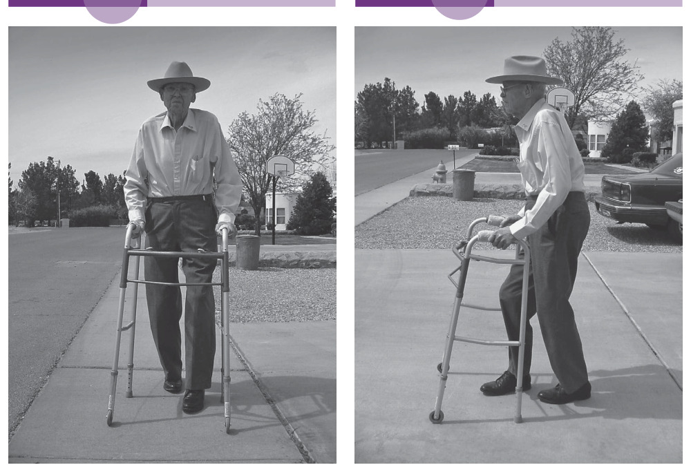
Hình 8.4: Góc nhìn từ phía trước cung cấp thông tin về thời điểm của động tác.
Hình 8.5: Góc nhìn bên cung cấp trình diễn cụ thể hơn về vị trí của dụng cụ hỗ trợ đi lại.
trở nên vô giá trị. Vì mục đích này, tránh dùng các cụm từ “như thế này” hay “như thế kia” khi trình diễn. Những cụm từ này không đủ cụ thể để hướng sự chú ý của người học. Thay vào đó, hãy nói cho người học biết trình diễn sẽ diễn ra như thế nào và cụ thể cần xem gì. Chẳng hạn, lần trình diễn đầu tiên của một kỹ năng mới nên bao quát toàn bộ kỹ năng, như nó sẽ được thực hiện trong tình huống thi đấu hay tình huống tiêu chí. Vì ý định ở đây là cho người học một ý niệm chung về các yêu cầu của động tác, hướng dẫn phù hợp chỉ đơn giản là hãy xem toàn bộ kỹ năng. Trong các lần trình diễn sau của toàn bộ kỹ năng hay một phần kỹ năng, nên báo trước cho người học để hướng chú ý vào các khía cạnh cụ thể của động tác, chẳng hạn như xem các ngón chân được duỗi ra thế nào trong cú đạp chân nhịp sóng (flutter kick) (Weiss & Klint, 1987; McCullagh, Steihl, & Weiss, 1990; Zetou et al., 2002; Janelle, Champenoy, Coombes, & Mousseau, 2003). Tuy nhiên, theo Ashford et al. (2007), cần cẩn trọng khi hướng sự chú ý của trẻ vào các gợi ý liên quan hay những khía cạnh cụ thể của hành vi vận động được quan sát. Nếu trẻ không có các động lực học nội tại cần thiết, việc hướng chú ý của trẻ vào việc tái tạo động lực học vận động có thể gây bất lợi cho động lực
và sự tự tin của các em, vì các em sẽ gặp khó khăn trong việc đáp ứng mục tiêu phụ cụ thể này. (tr. 556)
Nói cách khác, các thực hành tốt nhất phải phù hợp với trình độ phát triển.
Tránh Cho Thấy Kết Quả Của Hành Động
Dù lần trình diễn đầu tiên của một kỹ năng mới nên bao quát toàn bộ kỹ năng, như nó sẽ được thực hiện trong tình huống thi đấu hay tình huống tiêu chí, các lần trình bày sau nên được thiết kế để tránh cho thấy kết quả của hành động. Nói cách khác, hãy thiết kế lần trình diễn sao cho kết quả bị loại bỏ. Với tư cách con người, chúng ta là những sinh vật tò mò. Chúng ta muốn biết quả bóng có vào lưới không, cú ném lao bay xa đến đâu, và có bắt được bóng hay không. Tiếc thay, sự tò mò này thường làm sao lãng tiêu điểm của ta khỏi các khía cạnh then chốt của động tác đã tạo ra kết quả đó (quá trình). Việc loại bỏ kết quả — chẳng hạn ném một cây lao đã chỉnh sửa vào lưới — khiến người học ít có khả năng theo dõi dụng cụ và có nhiều khả năng tập trung vào các yếu tố then chốt của động tác.
Trình Diễn Cho Cả Người Thuận Tay Phải Và Tay Trái
Khi trình diễn trước một nhóm, hãy lưu ý thành phần của nhóm về chi thuận. Nếu tất cả người học đều thuận tay phải, có thể không cần trình diễn cú phát bóng tennis bằng tay trái. Tuy nhiên, nếu nhóm có cả hai xu hướng dùng chi, hãy trình diễn kỹ năng theo cả hai cách. Việc chỉ bảo người học thuận tay trái đơn giản là đổi mọi điều đã nói sang phía bên kia làm tăng độ phức tạp của nhiệm vụ.
GHI CHÚ NGHIÊN CỨU
Janelle et al. (2003) kiểm tra hiệu quả của các điều kiện gợi ý khác nhau trong học qua quan sát đối với kết quả và hình thức của cú sút bóng đá bằng lòng bàn chân vào mục tiêu. Sáu mươi người tham gia được ngẫu nhiên chia vào một trong sáu nhóm: học khám phá, hướng dẫn bằng lời, mô hình video với gợi ý thị giác, mô hình video với gợi ý bằng lời, mô hình video với cả gợi ý thị giác và bằng lời, và chỉ mô hình video. Mỗi người thực hiện tám loạt, mỗi loạt mười lần thử. Loạt 1 và 2 là giai đoạn luyện tập, khi không có thao tác nào được áp dụng. Các loạt 3 đến 6 được coi là giai đoạn tiếp thu, vì tất cả nhóm đều nhận phương thức hướng dẫn tương ứng (thao tác được áp dụng). Cuối cùng, 24 giờ sau giai đoạn tiếp thu, người tham gia hoàn thành các loạt 7 và 8, giai đoạn duy trì, khi không có thao tác nào được đưa ra. Kết quả cho thấy những người tiếp xúc với mô hình hóa bằng video có gợi ý thị giác và bằng lời thực hiện ít lỗi hơn và có kiểu vận động tinh chỉnh hơn so với những người dùng các phương thức mô hình hóa hay chiến lược học khác. Những kết quả này càng ủng hộ quan điểm rằng việc cung cấp gợi ý trong học qua quan sát tạo thuận lợi cho tiếp thu kỹ năng.
Phân Bổ Và Tần Suất: Nên Trình Diễn Khi Nào Và Bao Nhiêu Lần?
Việc dùng một lần trình diễn để bổ sung cho hướng dẫn ban đầu khi giới thiệu một kỹ năng mới có vẻ tự nhiên. Nhưng người thực hành cũng phải quyết định có nên xen kẽ các lần trình diễn bổ sung trong suốt buổi luyện tập hay không, và nếu có thì bao nhiêu lần? Nghiên cứu khám phá câu hỏi này gợi ý rằng, để học hình thức vận động, một lịch trình kết hợp việc xem trình diễn vài lần trước khi luyện tập với các lần quan sát xen kẽ trong giai đoạn đầu của quá trình học (các lần trình diễn được xen kẽ trong suốt thời gian luyện tập) vượt trội hơn so với chỉ xem trước khi luyện tập hay chỉ xen kẽ (Ong & Hodges, 2012).
Để xác định tần suất trình diễn, hãy cân nhắc trình độ kỹ năng của người học và độ phức tạp của nhiệm vụ. Nhìn chung, người học có kinh nghiệm cần ít lần trình diễn hơn người chưa có kinh nghiệm (Wrisberg, 2007). Các lần trình diễn bổ sung có thể cần thiết khi kỹ năng trở nên phức tạp hơn. Tần suất quan sát cũng có thể được điều chỉnh cho phù hợp với nhu cầu cá nhân bằng cách cho người học tự chọn thời điểm xem trình diễn. Nghiên cứu cho thấy những người học có thể tự chọn tần suất xem mô hình (tức là xem trình diễn khi họ muốn) tiếp thu hình thức vận động tốt như những người xem mô hình trước mỗi lần luyện tập (Wrisberg & Pein, 2002; Wulf et al., 2005). Trong trường hợp này, khi được quyền kiểm soát tần suất xem mô hình, họ chủ yếu chọn xem trong các giai đoạn đầu của học tập, gợi ý rằng các lần trình diễn giúp cung cấp cho người học “một ý niệm chung về kiểu vận động hoặc có thể là để điều chỉnh động tác của họ sau một lần thực hiện không chính xác” (Wrisberg & Pein, 2002, tr. 794). Bằng chứng bổ sung ủng hộ việc cho người học quyền kiểm soát tần suất xem đã được ghi nhận khi học cú sút tĩnh trong bóng rổ (Aiken, Fairbrother, & Post, 2012), cú chip trong golf (Post et al., 2016), các kỹ năng múa ballet (Lemos et al., 2017; St. Germain, Lelievre, & Ste-Marie, 2019), kỹ năng bơi (Marques & Corrêa, 2016) và kỹ năng nhảy lò xo (Ste-Marie et al., 2016). Hãy xem Bảng 8.3 để có danh sách tóm tắt các cân nhắc về trình diễn, và hoàn thành Hoạt động Khám phá 8.2 để đánh giá hiệu quả trình bày kỹ năng.
BẢNG 8.3
Các cân nhắc về trình diễn
- Cái gì (WHAT): Kiểu phối hợp mới; toàn bộ so với một phần; thời gian thực so với chuyển động chậm.
- Ai (WHO): Mô hình chuyên gia so với mô hình đang học; sự tương đồng giữa người quan sát và mô hình.
- Như thế nào (HOW): Video, ảnh tĩnh, âm thanh; đội hình và góc nhìn; chi thuận; hướng của chuyển động; tránh các lựa chọn về kết quả.
- Khi nào (WHEN): Giới thiệu kỹ năng; xen kẽ trong suốt luyện tập.
- Bao nhiêu lần (HOW OFTEN): Lịch trình áp đặt so với tự điều chỉnh.
Hoạt Động Khám Phá 8.2
Đánh Giá Hiệu Quả Trình Bày Kỹ Năng
Hoạt Động 1
Dùng thông tin trình bày trong chương này, hãy thiết kế một bảng kiểm đánh giá nhằm xác định hiệu quả trình bày kỹ năng.
Ví dụ:
- Người thực hành có dùng một tín hiệu rõ ràng để tập hợp người học lại không?
- Người thực hành có trình diễn kỹ năng cho cả người học thuận tay phải lẫn thuận tay trái không?
Hoạt Động 2
Hãy quan sát một giáo viên, huấn luyện viên hoặc nhà trị liệu đang trình bày một kỹ năng mới. Dùng bảng kiểm bạn thiết kế ở Hoạt động 1, hãy đánh giá hiệu quả của lần trình bày kỹ năng đó.
Hoạt Động 3
Bây giờ hãy tự quay video trong lúc bạn trình bày một kỹ năng mới. Xem lại video và dùng bảng kiểm từ Hoạt động 1 để đánh giá thực hiện của bạn. Bạn có thể cải thiện hiệu quả trình diễn mẫu của mình như thế nào?
HƯỚNG DẪN KHÔNG TRỰC TIẾP
Trong phương pháp hướng dẫn này, việc học được thúc đẩy thông qua khám phá có hướng dẫn và tự khám phá (Williams & Hodges, 2005). Thay vì áp đặt cách đạt được mục tiêu hành động, người thực hành định hình các kiểu vận động thông qua việc thao tác có chủ đích các ràng buộc then chốt (Davids et al., 2008). Việc học diễn ra từ khám phá các khả năng hành động và thích ứng với các ràng buộc được áp đặt lên người học trong lúc luyện tập. Như đã thảo luận trong Chương 7, các hoạt động học tập phải có thiết kế mang tính đại diện và bảo đảm sự ghép nối chặt chẽ giữa thông tin và vận động (xem Chow et al., 2019). Chẳng hạn, rê bóng quanh các cọc cố định không gợi ra cùng quá trình khám phá như rê bóng quanh các hậu vệ đang di chuyển.
Dù vai trò của người thực hành chuyển sang người thiết kế trải nghiệm học tập thay vì người áp đặt, sẽ là sai lầm nếu cho rằng người thực hành chỉ đơn giản giao nhiệm vụ cho người học hoàn thành. Người thực hành phải tham gia tích cực vào quá trình học, cung cấp các mức độ hướng dẫn khác nhau và điều chỉnh ràng buộc dựa trên kết quả quan sát được nhằm tăng cơ hội thích ứng cho người học (Storey & Butler, 2013). Hơn nữa, việc phát triển các hoạt động hướng dẫn hiệu quả đầy thách thức, vì cần có mức độ nhận thức cao về sự tương tác giữa người học, nhiệm vụ và môi trường mà nhiệm vụ được thực hiện, để nhạy bén với những khả năng hành động mà một nhiệm vụ có thể mang lại cho người học — từ đó có thể gợi ra sự thay đổi thực hiện mong muốn.
Giao Nhiệm Vụ, Đừng Giao Giải Pháp
Upton (2015) đưa ra lời khuyên xuất sắc để áp dụng cách tiếp cận không trực tiếp: “Hãy giao một nhiệm vụ (‘vấn đề’), chứ không phải động tác (‘giải pháp’).” Nói cách khác, hãy cung cấp cho người học mục tiêu cần đạt trong khi giảm thiểu các chi tiết cụ thể về cách làm, nhằm thúc đẩy khám phá các giải pháp vận động có thể có. Ông đưa thêm ví dụ về việc vượt qua một hậu vệ trong bóng đá (mục tiêu nhiệm vụ). Thay vì quy định một động tác hay kỹ thuật cụ thể, chỉ cần nói với cầu thủ rằng họ có thể dùng bất kỳ hành động nào họ muốn để đạt mục tiêu. Người học có thể được dẫn dắt thêm thông qua hướng dẫn khám phá tập trung vào kết quả vận động thay vì hình thức vận động, và thông qua việc dùng ẩn dụ.
Thao Tác Các Ràng Buộc Của Nhiệm Vụ Và/Hoặc Luyện Tập
Có nhiều biến số nhiệm vụ và luyện tập có thể được thao tác để định hình kiểu vận động và hành vi, bao gồm áp đặt thay đổi luật lệ, điều chỉnh thiết bị, thay đổi kích thước khu vực chơi, thao tác các yếu tố tình huống trong lúc thực hiện, và thay đổi tiêu chí nhiệm vụ (Williams, 2003). Chẳng hạn, một huấn luyện viên bóng đá có thể thay đổi kích thước khu vực chơi bằng cách thu nhỏ không gian luyện tập cho một bài rê bóng “nhằm cải thiện khả năng kiểm soát bóng của người học” (Araújo et al., 2004, tr. 413); trong bóng chuyền, có thể áp đặt luật giới hạn khu vực mà bóng được phát, chuyền hay đánh tới, từ đó buộc cầu thủ phải điều chỉnh động tác để đạt mục tiêu đã định. Việc thay đổi vị trí tương đối của các cầu thủ hoặc số lượng cầu thủ tấn công so với phòng thủ (thao tác yếu tố tình huống) sẽ buộc người học phải đưa ra lựa chọn chiến thuật và giúp họ hiểu các khái niệm như tìm khoảng trống hay đọc một kiểu chơi (Passos et al., 2010). Việc điều chỉnh quy mô thiết bị, chẳng hạn chỉnh chiều dài mái chèo trong môn canoeing hay chiều dài ván trượt trong môn trượt tuyết, có thể làm thay đổi động tác của người học (Brymer & Renshaw, 2010), và việc một bệnh nhân dùng các kiểu nắm khác nhau có thể được thúc đẩy bằng cách thao tác các đặc điểm của vật như trọng lượng, đường kính, kích thước và độ cứng. Những thay đổi thích ứng trong thực hiện kỹ năng cũng có thể được tạo ra bằng cách thay đổi các tiêu chí nhiệm vụ khác nhau. Trong khi thực hiện bài tập giạng hông nằm nghiêng, hãy yêu cầu khách hàng hay bệnh nhân nâng một túi đậu đặt ở mắt cá chân để dạy tư thế cơ thể đúng. Để sửa cú gập đầu gối vào trong khi squat, hãy đặt một dải kháng lực nhỏ ngay dưới đầu gối, buộc vận động viên phải kháng lại lực kéo vào trong của nó. Để khuyến khích học sinh buông bóng gần mặt đất hơn khi học cú lăn dưới tay, Colombo-Dougovito và Block (2016) đề xuất cho học sinh tập trung vào việc lăn bóng dưới một chiếc ghế đặt giữa các em và mục tiêu. Cuối cùng, như được minh họa trong video tại www.youtube.com/watch?v=R02GLDfl0Ws, các huấn luyện viên trượt tuyết giỏi đã dùng các đặc điểm tự nhiên của địa hình để định hình kỹ thuật trượt tuyết/trượt ván của người học trong nhiều năm. Khái niệm này gần đây đã được chính thức hóa thành Chương trình Học Dựa Trên Địa Hình (Terrain Based Learning Program™), được các chương trình học trượt tuyết/trượt ván tại nhiều khu nghỉ dưỡng áp dụng. Chương trình này cố ý định hình lớp tuyết để tạo ra các đặc điểm kiểm soát tốc độ và tư thế của người học, giảm sợ hãi và lo âu, và tạo ra sự
GHI CHÚ NGHIÊN CỨU
Một phương pháp hiệu quả dùng trong thể thao thanh thiếu niên để đơn giản hóa kỹ năng là điều chỉnh thiết bị. Nimmins, Strafford và Stone (2019) quan tâm đến việc liệu lợi ích tương tự có đạt được ở người lớn chưa thành thạo hay không. Để kiểm tra câu hỏi này, họ nghiên cứu ảnh hưởng của việc thay đổi khối lượng puck ở các cầu thủ khúc côn cầu trên băng người lớn thành thạo (N = 25) và kém thành thạo (N = 25) (tuổi trung bình = 21). Người tham gia thực hiện hai nhiệm vụ với ba loại puck khác nhau: nhẹ (133 g), quy chuẩn (170 g) và nặng (283 g). Nhiệm vụ thứ nhất là hoàn thành một đường chướng ngại đại diện cho tình huống thi đấu. Cầu thủ xuất phát từ vị trí đứng yên, điều khiển puck qua các cú rẽ rộng, một đoạn hẹp và nhanh, và một hình số 8 quanh các cọc, rồi đi ngược lại đường chạy về điểm xuất phát. Thời gian hoàn thành và số lỗi kiểm soát puck được ghi lại. Trong nhiệm vụ thứ hai, các cầu thủ thực hiện cú sút vào thủ môn sau khi trượt nhanh nhất có thể từ đường giữa vào vùng sút. Độ chính xác cú sút và tỉ lệ ghi bàn được ghi lại. Khối lượng puck ảnh hưởng đến thực hiện của cầu thủ thành thạo và kém thành thạo theo những cách khác nhau. Cầu thủ kém thành thạo hoàn thành đường chướng ngại nhanh hơn với ít lỗi hơn, cũng như cải thiện độ chính xác cú sút và tỉ lệ ghi bàn khi dùng puck nhẹ. Ở chiều ngược lại, thực hiện của cầu thủ thành thạo bị ảnh hưởng tiêu cực khi dùng cả puck nhẹ lẫn puck nặng. Nói cách khác, các ràng buộc do puck nhẹ mang lại giúp người chơi chưa thành thạo dễ thực hiện các nhiệm vụ xử lý gậy hơn, nhưng lại cản trở thực hiện của những cầu thủ thành thạo vốn quen dùng puck quy chuẩn.
thay đổi thực hiện hiệu quả. Để tìm hiểu thêm, hãy xem video tại www.youtube.com/watch?v=wvMkEd_r3Uw. Hãy xem Hình 8.6 để có thêm ví dụ về các biến số nhiệm vụ và luyện tập có thể được thao tác để định hình kiểu vận động.

Hình 8.6: Ví dụ về các biến số nhiệm vụ và luyện tập có thể được thao tác để định hình kiểu vận động.
- Quy tắc (Rules): Số lượng người chơi; hệ thống ghi điểm; số lần chạm bóng; phân phối bóng.
- Thiết bị (Equipment): Kích thước; trọng lượng; chiều dài; đường kính cán cầm; kết cấu bề mặt.
- Tiêu chí nhiệm vụ (Task criteria): Khoảng cách; tốc độ; độ chính xác; lực; kích thước khung thành hay mục tiêu; các kỹ năng vận động dùng để chơi.
- Yếu tố tình huống (Situational factors): Vị trí tương đối của người chơi; số người tấn công so với phòng thủ; địa hình, bố cục và/hoặc điều kiện của một đường chạy.
- Khu vực chơi (Playing area): Kích thước khu vực chơi; hình dạng; vị trí của khung hay khu vực sút.
Thử Thách Trí Não 8.7
- Hãy dự đoán những điều chỉnh sau đây đối với một trò Ultimate Frisbee sẽ ảnh hưởng thế nào đến lối chơi của (a) đội tấn công và (b) đội phòng thủ:
- Thu nhỏ kích thước sân chơi.
- Tăng kích thước sân chơi.
- Thu nhỏ kích thước khu vực ghi điểm.
- Tăng kích thước khu vực ghi điểm.
- Một sinh viên giáo dục thể chất đang đi thực tập quyết định dùng một hoạt động khởi động gọi là “thợ xây và máy ủi” (builders and bulldozers). Với hoạt động này, nhiều cọc gỗ bowling được đặt ngẫu nhiên khắp một khu vực chơi được chỉ định. Tiếp theo, học sinh được chia thành hai nhóm. Một nhóm, “máy ủi,” chạy quanh và lật đổ càng nhiều “tòa nhà” (cọc gỗ) càng tốt. Những “người thợ xây” phải dựng lại các tòa nhà đã đổ bằng cách đặt các cọc gỗ đứng dậy. Khi hoạt động tiến triển, sinh viên thực tập nhận ra người thợ xây không theo kịp máy ủi và hầu hết các cọc đều đổ vào bất kỳ thời điểm nào. Những người thợ xây nhanh chóng mất động lực và bỏ cuộc vì nhiệm vụ của họ có vẻ không thể hoàn thành. Hãy gợi ý cách sinh viên thực tập có thể điều chỉnh các ràng buộc của nhiệm vụ để cải thiện hoạt động này.
- Bạn đang thực tập trong lĩnh vực sức mạnh và thể lực, làm việc với các vận động viên về phát triển tốc độ từ tư thế xuất phát ba điểm. Bạn đọc trên mạng về một bài tập thang nhịp (stick drill/acceleration ladder) có thể phù hợp với các vận động viên của mình. Theo trang web, năm–bảy que (băng dán, cọc, v.v.) được xếp thành hình thang, với dấu mốc ban đầu cách vạch xuất phát 3 feet và các “nấc” còn lại được giãn dần thêm 6 inches (xem hình dưới đây: vạch xuất phát, 3 ft, 3.5 ft, 4 ft, 4.5 ft, 5 ft). Mục tiêu của vận động viên là đặt chân khớp với từng nấc khi đang tăng tốc. Bạn có áp dụng bài tập này không? Hãy giải thích đầy đủ lý do có hay không.
- Bạn có một bệnh nhân bị khó chịu ở vai và cổ. Trong quá trình đánh giá, bạn phát hiện ra rằng gần đây cô ấy đã chuyển sang dùng bàn đứng khi làm việc và dùng máy tính xách tay. Điều này có thể góp phần gây đau như thế nào? Những ràng buộc nào có thể được thao tác để giảm bớt một phần khó chịu của cô ấy?
Thử Thách
Một hình thức khác của hướng dẫn không trực tiếp là dùng các thử thách. Chẳng hạn, trong môn trượt tuyết, người học có thể được thử thách xem họ tạo ra nhiều hay ít bụi tuyết nhất. Tương tự, họ có thể được thử thách phun tuyết lên dốc, xuống dốc hoặc về phía bên cạnh đường trượt để luyện thời điểm gờ trượt (edge engagement) ăn vào. Một vận động viên bơi có thể được thử thách giữ một con vịt cao su trên trán khi bơi ngửa để học tư thế đầu đúng. Ngoài ra, một bệnh nhân có thể được thử thách di chuyển các vật khác nhau đến nhiều vị trí và độ cao trong luyện tập với và nắm.
Hướng dẫn cũng có thể được cá nhân hóa bằng cách cho người học quyền chọn mức độ khó của thử thách. Nghiên cứu đã chỉ ra rằng tự kiểm soát độ khó của nhiệm vụ (self-control of task difficulty) mang lại mức độ tiến bộ học tập lớn hơn so với việc áp đặt mức độ khó (Andrieux et al., 2012; Andrieux, Boutin, & Thon, 2016). Hơn nữa, Andrieux et al. (2012) cho thấy quyết định về độ khó của nhiệm vụ phụ thuộc vào thực hiện của chính người đó trong lần thử trước. Nói cách khác, những người tham gia tự kiểm soát “liên tục điều chỉnh mức độ khó của nhiệm vụ trong suốt quá trình luyện tập, dựa trên năng lực vận động của chính mình, để đạt được điều kiện phù hợp nhằm tối ưu hóa tiếp thu và học kỹ năng” (Andrieux et al., 2016, tr. 57). Quan điểm này được Jalalvand et al. (2019) ủng hộ, khi họ cho người tham gia chọn các khoảng cách định sẵn khi học một nhiệm vụ putt golf, và phù hợp với các dự đoán của khung điểm thử thách (challenge point framework) rằng tiếp thu kỹ năng được tạo thuận lợi khi người học được thử thách ở mức tối ưu (Guadagnoli & Lee, 2004).

Hình 8.7: Minh họa thử thách cú rẽ “J” với tự kiểm soát độ khó của nhiệm vụ (các cọc A, B, C).
Một ví dụ về chiến lược này được minh họa trong Hình 8.7. Trong thử thách này, người học đang luyện cú rẽ “J” chọn chiếc cọc mà họ sẽ rẽ quanh. Ban đầu họ có thể chọn cọc C, dễ nhất trong ba cọc, nhưng khi thành thạo hơn, họ có thể điều chỉnh mức độ khó và cuối cùng chọn rẽ sát hơn quanh cọc A.
Thử Thách Trí Não 8.8
Nếu bạn là nhà trị liệu trong câu chuyện mở đầu chương này, bạn sẽ dùng kỹ thuật hay sự kết hợp kỹ thuật nào để dạy bệnh nhân các bài tập dùng bóng trị liệu? Hãy giải thích câu trả lời của bạn.

Hình 8.8: Minh họa bài tập tiếp sức rê bóng và chuyền bóng.
Câu hỏi — Khám phá có hướng dẫn
- Cách nhanh nhất để rê bóng đến cọc là gì?
- Thời điểm tốt nhất để chuyền bóng là khi nào?
- Bạn có thể điều chỉnh gì để cải thiện độ chính xác của đường chuyền?
- Cách tốt nhất để nhận bóng nhằm bắt đầu rê bóng nhanh nhất là gì?
Bài tập tiếp sức rê bóng và chuyền bóng bản quyền SoccerHelp.com, được sử dụng với sự cho phép; hình được điều chỉnh từ www.top-soccer-drills.com/relay-race—1.html. Mọi nỗ lực hợp lý đã được thực hiện để xin phép sử dụng.
Khám Phá Có Hướng Dẫn
Trong khám phá có hướng dẫn, người thực hành đặt một chuỗi câu hỏi, mỗi câu gợi ra một đáp án đúng duy nhất mà người học cần khám phá (Mosston & Ashworth, 1994). Quá trình từng bước này dẫn đến việc khám phá cuối cùng khái niệm hay nguyên tắc mong đợi. Để áp dụng kỹ thuật này, người thực hành phải thiết kế một loạt câu hỏi hay gợi ý về động tác hay khái niệm mới. Câu hỏi đầu tiên được đưa ra, người học được cơ hội trả lời, và người thực hành hoặc củng cố đáp án hoặc định hướng lại người học. Khi đáp án đúng đã được khám phá, người thực hành đặt câu hỏi tiếp theo trong chuỗi. Chẳng hạn, khi giới thiệu kỹ năng rê bóng đá, người học có thể được hỏi: “Mục tiêu của các hậu vệ là gì?” Khi người học xác định mục tiêu của hậu vệ là cướp bóng, các câu hỏi tiếp theo dẫn người học đến việc khám phá cách đá bóng nhẹ và bằng lòng bàn chân thay vì bằng mũi chân. Dần dần, người học sẽ học được kỹ thuật và cũng hiểu được lý do kỹ thuật đó được dùng. Một ví dụ khác được minh họa trong Hình 8.8. Trong cuộc đua tiếp sức này, mỗi cầu thủ phải rê bóng nhanh nhất có thể đến cọc đầu tiên, rẽ, rồi chuyền cho cầu thủ tiếp theo trong hàng. Thông qua một loạt câu hỏi, người học nâng cao hiểu biết về nhiều kỹ năng, gồm rê bóng tốc độ, đá và chuyền bóng khi đang chạy, và khái niệm rằng người nhận bóng nên di chuyển về phía bóng (Soccer Drills That Are Practice Games, 2016). Để tìm hiểu thêm về khám phá có hướng dẫn và cách dùng nó để dạy các khái niệm học vận động, xem Rukavina và Jeansonne (2009).
ĐƯA VÀO THỰC HÀNH
Tình Huống Học Tập: Học Đường Chuyền Gián Tiếp Trong Khúc Côn Cầu
Thay vì cố giải thích cần tìm gì trong các tình huống khác nhau để thực hiện đường chuyền gián tiếp hiệu quả, Jennifer chọn dùng cách tiếp cận hướng dẫn không trực tiếp. Cô muốn tạo ra các thử thách trong lối chơi bằng các trận đấu nhỏ 3 đấu 3 trên nửa sân để rèn luyện kỹ năng chuyền gián tiếp.
Kiểm Tra Kiến Thức Của Bạn
Những điều chỉnh hay điều kiện nào trong trò chơi Jennifer có thể áp đặt để giúp cầu thủ học khi nào nên dùng và đặt đường chuyền gián tiếp vào đâu? Ngoài ra, khám phá có hướng dẫn có thể được dùng như thế nào để giúp cầu thủ cải thiện kỹ năng dự báo? Hãy so sánh câu trả lời của bạn với câu trả lời mẫu tại www.routledge.com/cw/coker.
NHÌN VỀ PHÍA TRƯỚC
Khi trình bày một kỹ năng mới, mục tiêu ban đầu của người hướng dẫn là truyền đạt thông tin người học cần để hình thành hiểu biết cơ bản về các yêu cầu của động tác và
xây dựng một kế hoạch vận động ban đầu. Điều này có thể thực hiện thông qua hướng dẫn trực tiếp (hands-on) hoặc các cách tiếp cận khám phá vận động (hands-off). Khi điều đó đã hoàn tất, tiêu điểm chuyển sang tinh chỉnh kỹ năng. Thông qua các cơ hội luyện tập được thiết kế cẩn thận, có thể đạt được mức tối đa về trình độ thành thạo kỹ năng. Những vấn đề liên quan đến thiết kế luyện tập là nội dung trọng tâm của chương sau.
ĐIỂM NHẤN MẠNH
Sau khi đọc chương này, bạn nên biết:
- Hướng dẫn trực tiếp (hands-on) là cách tiếp cận hướng dẫn áp đặt, được đặc trưng bởi việc dùng hướng dẫn bằng lời và trình diễn mẫu để truyền đạt thông tin cho người học, cũng như việc cung cấp phản hồi nhằm hướng dẫn phát triển kỹ năng.
- Hướng dẫn không trực tiếp (hands-off) liên quan đến việc thao tác có chủ đích các ràng buộc then chốt nhằm hướng dẫn người học khám phá giải pháp vận động tối ưu.
- Khi đưa ra hướng dẫn:
- Giữ lời giải thích ngắn gọn và đơn giản.
- Dùng thuật ngữ phù hợp với trình độ phát triển.
- Hướng sự chú ý của người học vào các yếu tố then chốt của kỹ năng trong hướng dẫn ban đầu.
- Cung cấp cho người học một khung tham chiếu về tính đúng đắn.
- Cân nhắc phong cách học và kinh nghiệm quá khứ của người học.
- Lời từ quan trọng. Nghiên cứu gợi ý rằng hướng dẫn nên hướng người học vào tác động của hành động của họ thay vì vào các động tác cụ thể của cơ thể (tiêu điểm nội tại).
- Gợi ý bằng lời được dùng để tập trung sự chú ý của người học hoặc gợi ra một động tác hay trình tự động tác, và nên ngắn gọn, chính xác, có số lượng hạn chế và được lặp lại trong suốt quá trình học.
- Khi lên kế hoạch trình diễn mẫu, người thực hành nên cân nhắc nội dung, đặc điểm của mô hình thực hiện, cách tổ chức lần trình diễn, cũng như phân bổ và tần suất của nó.
- Khi cung cấp lần trình diễn ban đầu, người thực hành hay mô hình nên thực hiện toàn bộ kỹ năng theo thời gian thực để cho người học một ý niệm về động tác.
- Việc dùng một mô hình đang học khuyến khích khám phá vận động và sự tham gia tích cực vào quá trình học.
- Để một lần trình diễn hiệu quả, tất cả người học nên có góc nhìn tốt và tập trung vào các yếu tố then chốt được trình diễn.
- Kiểu vận động và hành vi có thể được định hình bằng cách thao tác có chủ đích các ràng buộc của nhiệm vụ và/hoặc luyện tập, gồm áp đặt thay đổi luật, điều chỉnh thiết bị, thay đổi kích thước khu vực chơi, thao tác các yếu tố tình huống trong lúc thực hiện, và thay đổi tiêu chí nhiệm vụ.
- Các thử thách có thể được thiết kế để cá nhân hóa hướng dẫn và cho người học cơ hội chọn độ khó của nhiệm vụ, điều đã được chứng minh là tạo thuận lợi cho tiếp thu kỹ năng.
- Khám phá có hướng dẫn cho người học cơ hội dò tìm các giải pháp vận động có thể có; người thực hành đặt một chuỗi câu hỏi, mỗi câu gợi ra một đáp án đúng duy nhất để người học khám phá.
Bài thực hành (lab): Để hoàn thành các bài thực hành cho chương này, hãy truy cập www.routledge.com/cw/coker và chọn Bài thực hành 8a — Trình diễn mẫu Và Hướng Dẫn Bằng Lời, và Bài thực hành 8b — Người Thực Hành Không Trực Tiếp.
CÂU HỎI ÔN TẬP
- Hãy so sánh và đối chiếu hướng dẫn trực tiếp và hướng dẫn không trực tiếp.
- Tại sao việc thu hút sự chú ý của người học trước khi bắt đầu hướng dẫn kỹ năng lại quan trọng đến vậy?
- Hãy giải thích tại sao những người thực hành rất am hiểu môn học của mình lại không phải lúc nào cũng là người hướng dẫn hiệu quả nhất.
- Chức năng của một gợi ý bằng lời là gì?
- Hãy so sánh và đối chiếu gợi ý bằng lời do người hướng dẫn đưa ra và tự thoại.
- Người thực hành nên tuân theo những nguyên tắc hướng dẫn nào để tối ưu hóa việc dùng gợi ý?
- Mô hình đang học là gì? Những lợi ích nào của việc dùng mô hình đang học?
- Với một kỹ năng vận động do bạn chọn, hãy giải thích những quyết định bạn sẽ đưa ra về cơ chế trình diễn mẫu của nó. Hãy biện minh cho câu trả lời của bạn.
- Hãy liệt kê năm nhóm biến số của nhiệm vụ và luyện tập có thể được thao tác để định hình kiểu vận động.
- Hãy giải thích nhận định sau: Sẽ là sai lầm nếu cho rằng khi áp dụng hướng dẫn không trực tiếp, người thực hành chỉ đơn giản giao nhiệm vụ cho người học hoàn thành.
Nguyên Tắc Thiết Kế Luyện Tập
Chương 9 — DOI: 10.4324/9781003039716-9
Chương 9 — Nguyên Tắc Thiết Kế Luyện Tập
Dù vẫn còn hai giờ nữa mặt trời mới xuất hiện trên đường chân trời, chuông báo thức đã reo lên. Đó là đỉnh điểm của mùa đông, và Anna chỉ còn 30 phút trước khi phải có mặt trên bàn nhảy của hồ bơi để khởi động cho buổi luyện tập buổi sáng. Năm 2012, khi Anna lên 7, em đã xem các cuộc thi nhảy cầu trong Thế vận hội Mùa hè ở London. Từ đó, em đã mơ trở thành một vận động viên nhảy cầu Olympic—nhưng sáng nay, giấc mơ đó lại trở nên xa xôi. Dạo gần đây em nhảy không tốt, và em không thấy muốn luyện tập. Em ấn nút báo lại rồi ngủ tiếp. Năm phút sau, bố em thò đầu vào và nói một cách động viên: “Nào, Anna, luyện tập thì sẽ hoàn hảo!”
Một số huyền thoại phổ biến về tiếp thu kỹ năng và kiểm soát vận động đã được nhắc đến xuyên suốt cuốn sách này, nhưng có lẽ quan niệm sai lầm lan rộng nhất chính là câu ngạn ngữ cũ: “Luyện tập thì hoàn hảo.” Trên thực tế, luyện tập không bảo đảm rằng người học sẽ trở nên thành thạo hơn. Chỉ khi luyện tập được thiết kế cẩn thận có tính đến ảnh hưởng của người học, của nhiệm vụ và của môi trường thì mới đạt được mức tối ưu về sự thành thạo kỹ năng. Chương này sẽ tập trung vào một số yếu tố góp phần tạo nên thiết kế luyện tập hiệu quả, gồm các tiến trình kỹ năng, trình tự và các chiến lược tâm lý.
PHÂN RÃ KỸ NĂNG: CÁC TIẾN TRÌNH VÀ TRÌNH TỰ
Khi thiết kế các buổi luyện tập và các trải nghiệm phục hồi chức năng hiệu quả, người thực hành phải đối diện với một số quyết định liên quan đến việc phân rã kỹ năng. Khi nào thì nên chia một kỹ năng thành các phần, và khi nào thì nên luyện tập nó như một chỉnh thể? Tốc độ và độ chính xác ảnh hưởng thế nào đến tiếp thu kỹ năng? Những kỹ năng phải được thực hiện với mức thành thạo như nhau ở cả bên thuận lẫn bên không thuận nên được học tốt nhất như thế nào?
Luyện Tập Toàn Phần So Với Luyện Tập Từng Phần
Học một kỹ năng vận động mới có thể là một nhiệm vụ đáng nản lòng. Hãy nhớ rằng ở các giai đoạn đầu của phát triển kỹ năng, các yêu cầu chức năng của nhiệm vụ có thể vượt quá khả năng chú ý của người học. Để đơn giản hóa quá trình học, người hướng dẫn thường dùng luyện tập từng phần. Phương pháp luyện tập từng phần nhìn chung gồm chia kỹ năng thành các phần hoặc đoạn tự nhiên, luyện tập các phần đó riêng biệt cho đến khi được học xong, rồi tích hợp chúng để thực hiện kỹ năng trong toàn bộ. Chiến lược này có ưu điểm là (1) đơn giản hóa kỹ năng, (2) cho phép người học trải nghiệm thành công sớm, từ đó tăng động lực, và (3) cho phép luyện tập các thành phần có vấn đề mà không lãng phí thời gian vào những phần đã thành thạo. Tuy nhiên, việc chia kỹ năng thành các phần có thể không phải là phương pháp hiệu quả nhất trong mọi trường hợp. Thực tế, trong một số điều kiện nhất định, phương pháp luyện tập toàn phần—trong đó người học luyện tập kỹ năng hoàn chỉnh—được ưu tiên. Quyết định dùng luyện tập toàn phần hay từng phần trong một tình huống cụ thể phụ thuộc vào phương pháp nào có khả năng tạo ra mức chuyển giao tích cực lớn nhất sang thực hiện kỹ năng toàn phần (Wightman & Lintern, 1985). Để đưa ra
quyết định đó, người thực hành phải đánh giá cẩn thận bản chất của kỹ năng và năng lực của người học.
Bản Chất Của Kỹ Năng
Như chúng ta đã thấy lặp đi lặp lại, bản chất của kỹ năng ảnh hưởng đến quá trình học. Nhận ra điều này, Naylor và Briggs (1963) đã giả thuyết rằng hiệu quả của luyện tập từng phần và luyện tập toàn phần phụ thuộc vào hai đặc điểm cố hữu của kỹ năng. Thứ nhất, độ phức tạp của nhiệm vụ, tương quan trực tiếp với số thành phần con cấu thành kỹ năng. Nó cũng là hàm số của các yêu cầu xử lý thông tin do nhiệm vụ áp đặt. Càng nhiều thành phần và yêu cầu về chú ý, trí nhớ và ra quyết định càng lớn thì nhiệm vụ càng phức tạp. Với mô tả này, có vẻ phù hợp khi dùng phương pháp luyện tập từng phần để đơn giản hóa các kỹ năng rất phức tạp cho người học; tuy nhiên, nhận định đó còn quá sớm nếu không tính đến biến số thứ hai, tổ chức nhiệm vụ.
Tổ chức nhiệm vụ đề cập đến mức độ phụ thuộc lẫn nhau của các thành phần con trong kỹ năng. Nói cách khác, thực hiện của mỗi phần phụ thuộc bao nhiêu vào thành phần đứng trước nó? Nếu câu trả lời là phụ thuộc rất nhiều, như trong động tác lắc tay (cartwheel), nhiệm vụ được xem là có mức tổ chức cao. Việc chia một kỹ năng có tổ chức cao thành các phần sẽ không hiệu quả, vì điều đó làm thay đổi nhịp điệu tự nhiên của nó. Tương tự, trong huấn luyện dáng đi với xà song song hay khi vượt rào, người thực hiện phải liên tục điều chỉnh theo vị trí của phần trước đó. Nếu một vận động viên vượt rào quá cao hoặc chạm vào rào, người đó phải điều chỉnh kiểu bước chân của mình để vượt qua rào tiếp theo thành công. Vận động viên chỉ có thể đạt được khả năng này bằng cách luyện tập vượt qua nhiều rào. Cuối cùng, đối với các động tác có đặc điểm nạp cơ nhanh, chẳng hạn như cú sút mạnh (slap shot) trong môn khúc côn cầu, việc chia kỹ năng thành các phần có thể loại bỏ phản xạ kéo giãn vốn có của nhiệm vụ và làm thay đổi động lực học nền tảng của nó (Schmidt & Young, 1987). Ngược lại, kiểu bơi tự do (trong đó động tác đạp chân và hành động tay
BẢNG 9.1
Ví dụ về các kỹ năng được phân loại theo độ phức tạp và mức tổ chức của nhiệm vụ
Độ phức tạp nhiệm vụ: Cao; Thấp. Mức tổ chức nhiệm vụ: Cao; Thấp.
- Thực hiện một cú nhảy (executing a jump)
- Phát bóng trong bóng chuyền (serve in volleyball)
- Đánh bóng golf (putting a golf ball)
- Buộc nút hình số 8 (tying a figure 8 knot)
- Thực hiện một động tác biceps curl (performing a bicep curl)
tương đối độc lập) là một kỹ năng có mức tổ chức thấp; nó rất phù hợp với luyện tập từng phần. Bảng 9.1 cung cấp thêm ví dụ về các kỹ năng được phân loại theo độ phức tạp và mức tổ chức của nhiệm vụ.
Khi đã biết độ phức tạp và mức tổ chức của một kỹ năng, làm thế nào để xác định kỹ thuật nào—luyện tập toàn phần hay luyện tập từng phần—sẽ hiệu quả nhất? Nhìn chung, các kỹ năng có mức tổ chức cao và độ phức tạp thấp được phục vụ tốt nhất bằng luyện tập toàn phần, trong khi luyện tập từng phần là kỹ thuật được ưu tiên cho các kỹ năng có mức tổ chức thấp và độ phức tạp cao (Naylor & Briggs, 1963; Fontana et al., 2009). Dĩ nhiên, nguyên tắc này không tính đến mọi kết hợp có thể có giữa độ phức tạp và mức tổ chức. Chẳng hạn, nó không gợi ý phương pháp tối ưu cho một kỹ năng vừa cao về độ phức tạp vừa cao về mức tổ chức. Trong những tình huống này, người thực hành phải quyết định kỹ thuật phân đoạn nào hiệu quả nhất trong việc tối đa hóa học tập, hoặc liệu một chiến lược khác, chẳng hạn như đơn giản hóa sẽ được thảo luận sau trong chương này, có hiệu quả hơn hay không.
Năng Lực Của Người Học
Dù một cuộc đánh giá kỹ năng có thể cho thấy nên dùng luyện tập toàn phần hay từng phần, người thực hành vẫn nên cân nhắc năng lực của người học trước khi đưa ra quyết định cuối cùng về phương pháp sẽ dùng. Chẳng hạn, những người học có kinh nghiệm vận động hạn chế có thể bị choáng ngợp trước các yêu cầu của nhiệm vụ nếu nó được trình bày trọn vẹn. Tương tự, nếu yêu cầu nhận thức hoặc chú ý của nhiệm vụ vượt quá khả năng của người học, việc dùng phương pháp luyện tập toàn phần có thể cản trở tiếp thu kỹ năng và khiến người học nản lòng. Sự nản lòng đó—hệ quả của tỷ lệ thành công thấp—lại có thể dẫn đến mất động lực. Trong tình huống này, việc chia kỹ năng thành các đơn vị dễ xử lý hơn sẽ hiệu quả hơn. Ngược lại, khi người học có động lực cao và đã có nhiều trải nghiệm vận động đa dạng, những tiến bộ trong tiếp thu kỹ năng có thể đạt được thông qua phương pháp toàn phần.
Hình 9.1: Việc phân rã các kỹ năng có mức tổ chức nhiệm vụ cao có thể làm thay đổi động lực học nền tảng của chúng.
Thử Thách Trí Não 9.1
Dùng bảng làm việc bên dưới (Coker & Hunfalvay, 2004) để tiến hành phân tích nhiệm vụ cơ bản nhằm xác định mức độ phức tạp và mức tổ chức của các kỹ năng sau:
- Bắt bóng lăn — ____
- Đánh đầu bóng đá — ____
- Trượt tuyết slalom — ____
- Chơi piano — ____
- Chuyển từ ghế sang xe lăn — ____
- Bài tập trên xà cân bằng — ____
- Với và cầm một chiếc cốc — ____
- Đi bằng nạng — ____
- Cú ném rổ (layup) — ____
- CPR (hồi sức tim phổi) — ____
PHẦN A: ĐỘ PHỨC TẠP CỦA NHIỆM VỤ
Liệt kê các hành động vận động (hoặc các bước) cần thiết trong kỹ năng:
- __________________________________________________________________________________________
- __________________________________________________________________________________________
- __________________________________________________________________________________________
- __________________________________________________________________________________________
- __________________________________________________________________________________________
Liệt kê các quyết định cần đưa ra khi thực hiện kỹ năng:
- __________________________________________________________________________________________
- __________________________________________________________________________________________
- __________________________________________________________________________________________
- __________________________________________________________________________________________
- __________________________________________________________________________________________
Có thể gom nhóm các bước này không, tức là có thể kết hợp các phần của kỹ năng để giảm số bước mà không làm kỹ năng trở nên quá phức tạp đối với người học không? Hãy mô tả và giải thích những hành động (hoặc bước) nào có thể được gom nhóm.
PHẦN B: MỨC TỔ CHỨC CỦA NHIỆM VỤ
Việc thực hiện một phần của kỹ năng có ảnh hưởng đến thành phần kỹ năng tiếp theo không?
- CÓ □
- KHÔNG □
Các Kỹ Thuật Luyện Tập Từng Phần
Khi các điều kiện cho thấy nên dùng luyện tập từng phần, người thực hành có một số biến thể để lựa chọn. Wightman và Lintern (1985) đã phân loại
Thử Thách Trí Não 9.2
- Xem xét lại từng kỹ năng đã nêu trong Thử Thách Trí Não 9.1 và cho biết kỹ năng nào nên dùng luyện tập toàn phần, kỹ năng nào nên dùng luyện tập từng phần. Hãy giải thích câu trả lời của bạn.
- Bạn có thể rút ra những kết luận khái quát nào, nếu có, về việc sử dụng luyện tập toàn phần hay từng phần đối với các kỹ năng được xem là (a) rời rạc, (b) tuần tự, hay (c) liên tục?
các biến thể này thành phân đoạn, đơn giản hóa và tách nhỏ. Điều quan trọng cần nhớ là khi dùng luyện tập từng phần—bất kể biến thể nào được chọn—người học phải được dạy cách các phần liên kết với kỹ năng toàn phần. Không làm vậy có thể làm giảm chuyển giao sang kỹ năng toàn phần. Điều này đã được chứng minh trong một thí nghiệm của Newell et al. (1989); họ nhận thấy rằng việc cung cấp cho người học luyện tập từng phần, cùng với thông tin về mục tiêu của kỹ năng, mang lại những tiến bộ học tập lớn hơn so với chỉ luyện tập từng phần.
Phân Đoạn
Trong phân đoạn, kỹ năng được tách thành các phần theo yếu tố không gian hoặc thời gian. Cấu trúc cụ thể của loại luyện tập này có thể có một số hình thức.
- Phương pháp từng phần–toàn phần. Trong phương pháp này, người học luyện tập từng phần riêng biệt cho đến khi đạt được một mức thành thạo nhất định, rồi kết hợp các phần và luyện tập kỹ năng trong toàn bộ. Chẳng hạn, với cú đá bóng kiểu punt trong bóng bầu dục, các động tác bắt bóng, tiến đến, thả bóng và đá bóng sẽ được luyện tập riêng biệt, rồi các phần được kết hợp và luyện tập như một chỉnh thể cho đến khi thành thạo cú punt.
- Phương pháp từng phần tiến triển. Ngoài việc đơn giản hóa kỹ năng, phương pháp này còn cho người học cơ hội hiểu rõ hơn về nhịp điệu và sự tích hợp nền tảng của kỹ năng. Người học bắt đầu bằng việc luyện tập hai phần riêng biệt. Khi đã đạt đến mức tiêu chuẩn, người đó kết hợp các phần và luyện tập chúng cùng nhau. Sau khi thành thạo hai phần này, phần thứ ba được đưa vào và luyện tập riêng cho đến khi người học đạt được sự thành thạo. Thành phần này sau đó được kết hợp với hai phần kia. Mô hình này tiếp tục cho đến khi toàn bộ kỹ năng được thực hiện. Với cú punt, người học có thể luyện tập riêng động tác bắt bóng và tiến đến, kết hợp chúng, luyện tập riêng động tác thả bóng, rồi kết hợp nó với động tác bắt bóng và tiến đến, v.v.
- Phương pháp từng phần lặp lại. Giống như phương pháp từng phần tiến triển, phương pháp này giúp người học hiểu rõ hơn về cách các phần của kỹ năng ghép vào toàn thể. Thay vì luyện tập thành phần mới một cách độc lập, người học thêm nó vào các phần trước đó và luyện tập chúng cùng nhau. Chẳng hạn, động tác bắt bóng được luyện tập trước, rồi kết hợp với động tác tiến đến. Khi đã nắm được sự kết hợp đó, động tác thả bóng được thêm vào, và cứ thế tiếp tục. Để xem một ví dụ khác dùng động tác cử tạ (snatch), hãy truy cập www.youtube.com/watch?v=L6SjuAOjMEk.
Bảng 9.2 minh họa trình tự của từng chiến lược luyện tập từng phần đối với cú punt bóng bầu dục.
Khi một kỹ năng được phân rã bằng phân đoạn, người thực hành cũng có thể chọn dùng chuỗi xuôi hoặc chuỗi ngược. Trong chuỗi xuôi, các phần được trình bày và luyện tập theo trình tự tiến từ phần đầu đến phần cuối của kỹ năng. Các ví dụ đã nêu cho đến nay về cú punt bóng bầu dục đều dùng chuỗi xuôi. Trong chuỗi ngược, trình tự tiến theo chiều đảo ngược, từ đoạn cuối đến đoạn đầu. Với cú punt, bóng có thể được đặt trên một giá đỡ hoặc treo bằng dây để luyện tập động tác đá trước, rồi thêm động tác thả bóng, tiếp theo là động tác tiến đến và cuối cùng là động tác bắt bóng. Xem Bảng 9.3.
BẢNG 9.2
Thực hiện các trình tự luyện tập từng phần trong cú punt
Phương pháp từng phần–toàn phần
- Bắt bóng
- Tiến đến
- Thả bóng
- Đá bóng
- Bắt bóng + Tiến đến + Thả bóng + Đá bóng
Phương pháp từng phần tiến triển
- Bắt bóng
- Tiến đến
- Bắt bóng + Tiến đến
- Thả bóng
- Bắt bóng + Tiến đến + Thả bóng
- Đá bóng
- Bắt bóng + Tiến đến + Thả bóng + Đá bóng
Phương pháp từng phần lặp lại
- Bắt bóng
- Bắt bóng + Tiến đến
- Bắt bóng + Tiến đến + Thả bóng
- Bắt bóng + Tiến đến + Thả bóng + Đá bóng
Được in lại với sự cho phép, từ Coker, C. A. (2006). To break it down or not break it down: That is the question. Teaching Elementary Physical Education, 17(1), 26–27.
BẢNG 9.3
Chuỗi xuôi và chuỗi ngược kết hợp với phương pháp từng phần–toàn phần cho cú punt
CHUỖI XUÔI
- Bắt bóng
- Tiến đến
- Thả bóng
- Đá bóng
CHUỖI NGƯỢC
- Đá bóng
- Thả bóng
- Tiến đến
- Bắt bóng
Được in lại với sự cho phép, từ Coker, C. A. (2006). To break it down or not break it down: That is the question. Teaching Elementary Physical Education, 17(1), 26–27.
Tách Nhỏ
Trong tách nhỏ, các thành phần của kỹ năng vốn được thực hiện đồng thời sẽ được tách riêng và luyện tập độc lập. Chẳng hạn, động tác đổi hướng (tacking—chuyển hướng bằng cách quay đầu vào gió) trên ván lướt gió đòi hỏi cánh tay và chân phải chuyển động cùng lúc. Người học sẽ tách các chuyển động này ra, luyện tập riêng lẻ cho đến khi thành thạo, rồi lắp ghép lại để thực hiện toàn bộ kỹ năng. Các ví dụ khác về tách nhỏ gồm luyện tập chuyển động của từng bàn tay riêng biệt khi chơi đàn phím hoặc gõ trống, và luyện tập riêng động tác đạp chân và động tác tay trong kiểu bơi ếch. Hiệu quả của kỹ thuật luyện tập từng phần này vẫn còn đang bị bỏ ngỏ. Đối với các kỹ năng nhịp nhàng đòi hỏi phối hợp hai tay (dùng cả hai tay cùng lúc) hoặc phối hợp tay–chân (dùng tay và chân cùng lúc), chẳng hạn như chơi một nhạc cụ, tách nhỏ dường như chuyển giao kém sang kỹ năng toàn phần (Klapp, Nelson, & Jagacinski, 1998; Lee, Chamberlin, & Hodges, 2001). Những nhiệm vụ như vậy có mức tổ chức cao, và luyện tập toàn phần được khuyến nghị. Khi đặc điểm chuyển động không gian hoặc thời gian của mỗi chi khác nhau, tách nhỏ có thể là một kỹ thuật khả thi. Cần thêm nghiên cứu để xác định hiệu quả của nó trong những tình huống như vậy.
Thử Thách Trí Não 9.3
Hãy chọn một kỹ năng mà việc phân đoạn sẽ hiệu quả. Phác thảo cách bạn sẽ tổ chức (a) luyện tập từng phần tiến triển và (b) luyện tập từng phần lặp lại.
Đơn Giản Hóa
Một kỹ thuật luyện tập từng phần khác, đơn giản hóa, làm giảm mức độ khó của nhiệm vụ hoặc của một số khía cạnh của nhiệm vụ. Người thực hành có thể thực hiện chiến lược này bằng nhiều cách.
- Điều chỉnh dụng cụ. Việc điều chỉnh dụng cụ đã được dùng từ lâu để giảm độ khó hoặc độ phức tạp của học và thực hiện kỹ năng (Bảng 9.4 trình bày các ví dụ về chiến lược điều chỉnh). Dụng cụ tấn công cỡ lớn hơn (ví dụ, đầu vợt lớn hơn, thân gậy bóng chày dày hơn và rổ lacrosse lớn hơn) cung cấp diện tích tiếp xúc lớn hơn. Bóng to hơn thì dễ bắt hơn. Dụng cụ ngắn hơn hoặc nhẹ hơn thì dễ vung hơn. Bóng mềm hơn với bề mặt chống trượt thì dễ cầm và bắt hơn, đồng thời có độ nảy thấp hơn. Một cây gậy chổi gỗ dễ thao tác hơn một thanh tạ khi học các cử nâng Olympic. Có vô số dụng cụ hỗ trợ nghề nghiệp và sinh hoạt hằng ngày, chẳng hạn như những dụng cụ được minh họa trong Hình 9.2; trong đó có móc trang sức từ tính, gậy mặc quần áo, thìa có trọng lượng, cốc có mũi (nosey cup), dao rocking-T, dụng cụ bóp nắm cửa, cầu thang huấn luyện và bộ dụng cụ huấn luyện dốc xuống và bờ vỉa. Để tìm hiểu thêm về cách điều chỉnh bếp cho người bị xơ cứng bì, hãy truy cập www.youtube.com/watch?v=J3PTJK56ZLY.
- Giảm yêu cầu phối hợp. Người thực hành có thể giảm độ khó của nhiệm vụ bằng cách thao tác trên độ phức tạp của nhiệm vụ. Có thể giảm hoặc loại bỏ nhu cầu người học phải thay đổi vị trí khi thực hiện kỹ năng bằng cách cho họ ném, dẫn bóng hoặc đá bóng từ một vị trí cố định. Khi dạy người học cách nhận một vật, hãy tung, ném hoặc lăn trực tiếp về phía họ. Bạn có thể thao tác trên thăng bằng, lực, tốc độ và độ chính xác, miễn là động lực học nền tảng của kỹ năng (ví dụ, thời gian tương đối) vẫn được giữ nguyên. Chẳng hạn, bánh phụ trên xe đạp và xà song song trong huấn luyện dáng đi giúp người học giữ thăng bằng. Khi dạy các bài tập với bóng Swiss, trước tiên hãy luyện tập các tư thế cơ bản rồi tăng dần độ khó bằng cách thu nhỏ diện tích điểm tựa, tăng chiều dài cánh tay đòn trên bóng và tăng tầm vận động (Houglum, 2016). Giảm yêu cầu về độ chính xác bằng cách tăng kích thước mục tiêu. Cho người học phát bóng từ giữa sân thay vì từ đường cuối để giảm lực cần thiết đưa bóng qua lưới. Cho phép người bơi có cú đạp yếu thỉnh thoảng dùng vây, để họ tạo đủ lực đẩy và tập trung vào các khía cạnh khác của kiểu bơi, chẳng hạn như động tác tay và hít thở. Cuối cùng, nhịp độ thực hiện chuyển động có thể được giảm bằng cách làm chậm toàn bộ chuyển động hoặc thay đổi vật được thao tác, chẳng hạn như dùng khăn quàng thay cho bóng khi tung bóng (juggling).
BẢNG 9.4
Chiến lược điều chỉnh dụng cụ
ĐIỀU CHỈNH — VÍ DỤ — LÝ DO
- Kích thước — Gậy đánh lớn hơn — Dễ tiếp xúc hơn
- Kích thước — Bóng to hơn — Dễ bắt hơn
- Chiều dài — Vợt ngắn hơn — Dễ vung hơn
- Trọng lượng — Gậy nhẹ hơn — Dễ vung hơn
- Độ cầm nắm — Gậy có tay cầm bằng bọt — Dễ cầm hơn
- Độ cứng — Bóng Gator Skin® và bóng mềm — Dễ nắm bắt hơn
Được in lại với sự cho phép, từ Coker, C. A. (2005b). Teaching tips for simplification. Teaching Elementary Physical Education, 16(6), 8–9.
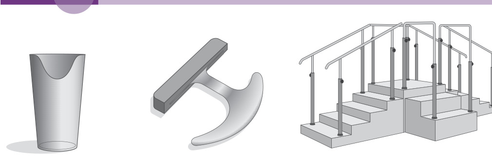
Hình 9.2: Ví dụ về dụng cụ huấn luyện nghề nghiệp và hỗ trợ sinh hoạt hằng ngày. Cốc nosey được thiết kế để loại bỏ nhu cầu ngửa đầu ra sau khi uống. Dao rocking-T, cần ít sức và sự khéo léo hơn, được thiết kế để đơn giản hóa việc cắt cho người có lực cầm yếu hoặc chỉ dùng một tay. Cầu thang huấn luyện, được thiết kế cho huấn luyện di chuyển, trình bày các cấu hình bậc thang khác nhau.
- Thay đổi độ phức tạp của môi trường. Người thực hành có thể thao tác trên độ phức tạp của môi trường nhằm giảm nhu cầu chú ý do nhiệm vụ áp đặt. Điều này có thể thực hiện bằng cách thay đổi các đặc điểm môi trường của một kỹ năng mở để biến nó thành kỹ năng khép kín hơn. Chẳng hạn, đánh bóng trong bóng chày hoặc bóng chày mềm ban đầu có thể được dạy như một kỹ năng khép kín, với quả bóng đứng yên (đặt trên giá đỡ). Khi người học đã nắm được kiểu đánh cơ bản, kỹ năng có thể dần trở nên mở hơn bằng cách trước hết dùng một máy ném bóng đưa bóng đến một vị trí cụ thể một cách ổn định, rồi dùng một người ném thực sự với nhiều loại bóng khác nhau.
- Dùng các hoạt động xây dựng kỹ năng và trò chơi dẫn nhập. Những hoạt động này là một hình thức đơn giản hóa, vì chúng cho phép người học áp dụng các kỹ năng mới tiếp thu trong một môi trường được kiểm soát. Các ví dụ gồm kickball, bóng chuyền một lần bật, giữ bóng trong bóng đá và twenty-one trong bóng rổ.
- Sắp xếp trình tự từ đơn giản đến phức tạp. Các nhiệm vụ có thể được điều chỉnh và sắp xếp theo trình tự để dần trở nên khó hơn nhằm tạo ra thử thách phù hợp nhất cho người học. Chẳng hạn, bệnh nhân phục hồi chức năng trước tiên có thể học với và cầm một hộp sữa ngay trước mặt họ, rồi cuối cùng phát triển khả năng chọn một hộp cụ thể trong số nhiều hộp. Có thể tạo tiến trình bài tập trên bóng ổn định từ đơn giản đến phức tạp bằng cách thay đổi tầm vận động, kích thước của điểm tựa, chiều dài cánh tay đòn, tốc độ chuyển động, khả năng sử dụng thị giác và việc dùng lực cản (Goldenberg & Twist, 2007; xem Hình 9.3). Grosse (2009) đưa ra một ví dụ khác, đó là tiến trình các bài tập dưới nước có thể xem trực tuyến tại website bên cạnh: www.rehabpub.com/2009/04/aquatic-progressions/. Cuối cùng, hệ thống phân loại của Gentile được trình bày trong Chương 1 là một nguồn tài liệu tuyệt vời để thiết kế các tiến trình từ đơn giản đến phức tạp.
Gợi Ý Chú Ý
Một lựa chọn luyện tập kết hợp lợi ích của cả luyện tập từng phần và luyện tập toàn phần là gợi ý chú ý. Trong gợi ý chú ý, người học hướng sự chú ý vào một khía cạnh cụ thể của kỹ năng trong khi thực hiện nó như một chỉnh thể. Các ví dụ gồm tập trung vào động tác đưa khuỷu tay cao khi bơi kiểu tự do hoặc vào vị trí đặt dụng cụ hỗ trợ đi bộ khi đi qua một căn phòng. Chiến lược này cho phép người học tập trung vào một thành phần nhiệm vụ hoặc một vấn đề chuyển động cụ thể mà không làm xáo trộn các đặc điểm thời gian và không gian nền tảng của kỹ năng.
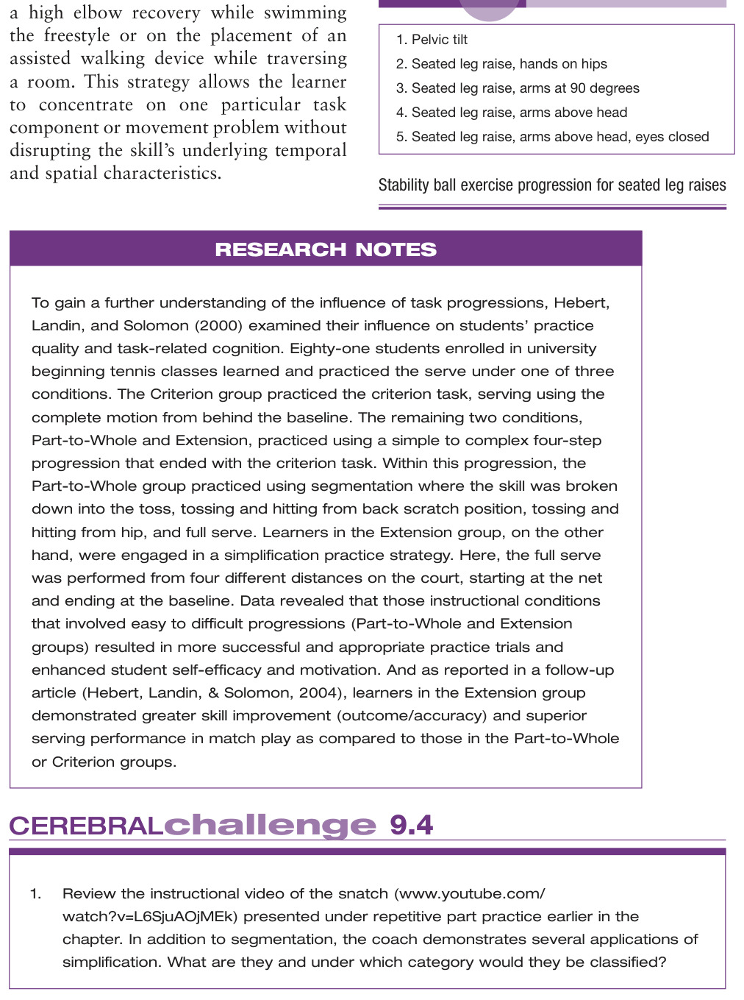
Hình 9.3: Tiến trình bài tập trên bóng ổn định cho động tác nâng chân khi ngồi: 1. Nghiêng khung chậu. 2. Nâng chân khi ngồi, tay đặt trên hông. 3. Nâng chân khi ngồi, tay tạo góc 90 độ. 4. Nâng chân khi ngồi, tay giơ cao quá đầu. 5. Nâng chân khi ngồi, tay giơ cao quá đầu, nhắm mắt.
GHI CHÚ NGHIÊN CỨU
Để hiểu sâu hơn về ảnh hưởng của các tiến trình nhiệm vụ, Hebert, Landin và Solomon (2000) đã kiểm tra ảnh hưởng của chúng đối với chất lượng luyện tập và nhận thức liên quan đến nhiệm vụ của sinh viên. Tám mươi mốt sinh viên theo học các lớp tennis nhập môn tại đại học đã học và luyện tập cú phát bóng trong một trong ba điều kiện. Nhóm Tiêu chí luyện tập nhiệm vụ tiêu chí, phát bóng với toàn bộ động tác từ phía sau đường cuối sân. Hai điều kiện còn lại, Từng phần sang Toàn phần và Mở rộng, luyện tập theo một tiến trình bốn bước từ đơn giản đến phức tạp kết thúc bằng nhiệm vụ tiêu chí. Trong tiến trình này, nhóm Từng phần sang Toàn phần dùng phân đoạn, trong đó kỹ năng được chia thành động tác tung bóng, tung và đánh bóng từ tư thế gãi lưng, tung và đánh bóng từ tư thế bên hông, và cú phát bóng hoàn chỉnh. Ở nhóm Mở rộng, người học tham gia vào một chiến lược luyện tập đơn giản hóa. Ở đây, cú phát bóng hoàn chỉnh được thực hiện từ bốn khoảng cách khác nhau trên sân, bắt đầu từ lưới và kết thúc ở đường cuối. Dữ liệu cho thấy những điều kiện hướng dẫn liên quan đến tiến trình dễ đến khó (nhóm Từng phần sang Toàn phần và nhóm Mở rộng) tạo ra nhiều lần luyện tập thành công và phù hợp hơn, đồng thời tăng cường cảm giác tự hiệu quả và động lực của sinh viên. Và như được báo cáo trong một bài viết tiếp theo (Hebert, Landin, & Solomon, 2004), người học ở nhóm Mở rộng cho thấy sự cải thiện kỹ năng lớn hơn (kết quả/độ chính xác) và thực hiện cú phát bóng vượt trội trong thi đấu so với người học ở nhóm Từng phần sang Toàn phần hoặc nhóm Tiêu chí.
Thử Thách Trí Não 9.4
- Xem lại video hướng dẫn động tác cử tạ (snatch) (www.youtube.com/watch?v=L6SjuAOjMEk) đã trình bày trong phần luyện tập từng phần lặp lại ở đầu chương này. Ngoài phân đoạn, huấn luyện viên còn trình diễn một số ứng dụng của đơn giản hóa. Đó là những gì và chúng được xếp vào danh mục nào?
(tiếp theo)
Thử Thách Trí Não 9.4 — tiếp theo
- Dùng Internet hoặc các catalogue sản phẩm, hãy khảo sát các công ty sản xuất dụng cụ cho giáo dục thể chất/phục hồi chức năng và liệt kê những sản phẩm được thiết kế đặc biệt cho đơn giản hóa.
- Đọc tiến trình sau đây cho cú chuyền bóng cao (overhead pass) và sắp xếp lại các mục theo trình tự từ đơn giản đến phức tạp bằng cách đánh số từ 1 đến 9.
- a. Tung bóng một cách ngẫu nhiên sao cho người học bị buộc phải di chuyển về phía trước, phía sau và sang hai bên. Người học nên chuyền bóng trả lại cho người đã tung bóng.
- b. Tung bóng cho một người học đứng yên. Người học nên bắt bóng ở vị trí đúng phía trên đầu và phải quay mặt về phía người đã tung bóng.
- c. Người học liên tục chuyền bóng với một bạn tập.
- d. Người học vào đúng tư thế chuẩn bị để chuyền bóng.
- e. Tung bóng sao cho người học bị buộc phải di chuyển về phía trước, phía sau và sang hai bên. Người học nên bắt bóng ở đúng tư thế chuyền và quay mặt về phía người đã tung bóng. Trước khi tung bóng, hãy cho người học biết hướng của cú tung.
- f. Tung bóng cho một người học đứng yên. Người học nên chuyền bóng trả lại cho người đã tung bóng.
- g. Tung bóng cho người học. Sau đó người học chuyền bóng cho một cầu thủ tấn công (spiker).
- h. Tung bóng sao cho người học bị buộc phải di chuyển về phía trước, phía sau và sang hai bên. Người học nên chuyền bóng trả lại cho người đã tung bóng. Trước khi tung bóng, hãy cho người học biết hướng của cú tung.
- i. Người học vào đúng tư thế chuẩn bị để chuyền bóng, với quả bóng đặt trong hai tay ngay phía trên đầu. Sau đó người học đẩy bóng đi bằng động tác chuyền đúng kỹ thuật.
HƯỚNG DẪN BẰNG TAY
Trong hướng dẫn bằng tay, một người thực hành hoặc một thiết bị di chuyển người học một cách đúng đắn đi qua chuyển động mục tiêu (Sidaway et al., 2008). Các ví dụ về hướng dẫn bằng tay gồm một nhà trị liệu di chuyển chi của bệnh nhân đi qua tầm vận động mong muốn; việc dùng dây an toàn cho nhảy cầu, thể dục dụng cụ và các động tác nhào lộn; vòng vung gậy golf; và bánh phụ trên xe đạp. Việc dùng các kỹ thuật hướng dẫn bằng tay dựa trên giả định rằng chúng cung cấp cho người học sự hiểu biết rõ hơn về chuyển động mục tiêu, giúp giảm lỗi và cho phép luyện tập các chuyển động có nguy cơ nguy hiểm một cách an toàn (Wulf, Shea, & Whitacre, 1998). Tuy nhiên, việc dẫn dắt người học một cách thụ động đi qua một chuyển động đặt ra một số vấn đề tiềm ẩn (Wrisberg, 2007). Thứ nhất, một trong những tiền đề đằng sau hướng dẫn bằng tay là người học sẽ trải nghiệm cảm giác của chuyển động đúng là như thế nào,
nhưng thực tế, các chuyển động được hỗ trợ lại tạo ra phản hồi do đáp án (cảm giác) khác với các chuyển động không được hỗ trợ. Thứ hai, người học có khả năng kém chú ý hơn khi được dẫn dắt thụ động qua một chuyển động. Thứ ba, hướng dẫn bằng tay loại bỏ cơ hội của người học trong việc tự phát hiện và tự sửa chuyển động của mình.
Với những lo ngại này, người thực hành nên dùng chiến lược này một cách tiết kiệm. Thực tế, nghiên cứu cho thấy rằng trong khi tần suất cao của hướng dẫn bằng tay tạo thuận lợi cho thực hiện trong luyện tập, nó lại có tác động bất lợi đến duy trì (Sidaway et al., 2008; Winstein, Pohl, & Lewthwaite, 1994; Wulf et al., 1998). Nói cách khác, những cải thiện rõ rệt về thực hiện có thể thấy trong luyện tập hoặc trong quá trình điều trị, nhưng việc duy trì dài hạn những hiệu ứng đó là khó xảy ra (Sidaway et al., 2008). Do đó, dù có những trường hợp hướng dẫn bằng tay có thể ban đầu hữu ích (ví dụ, phòng ngừa chấn thương, hình thành hiểu biết cơ bản về một kỹ năng, an toàn), luyện tập không được hỗ trợ nên được đưa vào càng sớm càng tốt.
Hoạt Động Khám Phá 9.1
Đánh Đổi Giữa Tốc Độ Và Độ Chính Xác I
DỤNG CỤ
- Một tờ giấy
- Bút
- Đồng hồ hẹn giờ hoặc đồng hồ có kim giây
- Một người để giờ
QUY TRÌNH
Trên một tờ giấy, hãy vẽ một hình tròn có kích thước bằng đồng xu half-dollar cách cạnh trên của tờ giấy hai inch và một hình tròn thứ hai có cùng kích thước cách cạnh dưới hai inch. Vẽ thêm một bộ hình tròn nữa, có kích thước bằng đồng xu dime, gần cạnh phải. Tờ giấy của bạn phải là phiên bản kích thước đầy đủ của hình minh họa bên phải.
Bây giờ, đặt đầu bút vào hình tròn lớn ở góc trên bên trái. Trong khi một người để giờ trong 10 giây, mục tiêu của bạn là di chuyển bút qua lại giữa hai hình tròn lớn càng nhanh càng tốt, đặt một dấu chấm vào mỗi hình tròn ở mỗi lần đi qua. (Lưu ý: Nhấc bút khỏi giấy trong khi di chuyển.) Sau đó lặp lại bài tập, dùng các hình tròn nhỏ hơn, với mục tiêu là di chuyển càng nhanh càng tốt.
Bạn nhận thấy những thay đổi gì giữa hai nhiệm vụ? Kết quả của bạn có ủng hộ sự đánh đổi giữa tốc độ và độ chính xác không?
ĐÁNH ĐỔI GIỮA TỐC ĐỘ VÀ ĐỘ CHÍNH XÁC
Các chuyển động đòi hỏi cả tốc độ lẫn độ chính xác trong thực hiện được chi phối bởi một nguyên lý cơ bản của hành vi vận động gọi là sự đánh đổi giữa tốc độ và độ chính xác. Như tên gọi cho thấy, tồn tại một sự đánh đổi giữa tốc độ và độ chính xác, theo đó nhấn mạnh tốc độ sẽ ảnh hưởng tiêu cực đến độ chính xác, và ngược lại. Qua một loạt thí nghiệm với một nhiệm vụ ngắm nhanh, Fitts (1954) nhận thấy người thực hiện phải làm chậm chuyển động khi khoảng cách cần đi tăng lên hoặc kích thước mục tiêu giảm đi, nếu họ muốn thực hiện nhiệm vụ chính xác. Hãy thử Hoạt động Khám phá 9.1 để tự trải nghiệm sự đánh đổi này.
Trong khi độ chính xác không gian được chi phối bởi sự đánh đổi giữa tốc độ và độ chính xác, thì dường như độ chính xác thời gian lại không như vậy. Độ chính xác thời gian, hay độ chính xác về thời điểm, liên quan đến thời điểm một chuyển động nên được thực hiện. Chẳng hạn, một cầu thủ tennis phải quyết định thời điểm vung vợt để đánh trúng bóng. Điều thú vị là nghiên cứu đã phát hiện rằng khi độ chính xác thời gian là yếu tố quyết định sự thành công của thực hiện kỹ năng, việc tăng tốc độ chuyển động làm giảm sai số thời điểm (Schmidt et al., 1979). Nói cách khác, độ chính xác thời điểm được cải thiện khi người thực hiện vung nhanh hơn và/hoặc khi khoảng cách chuyển động giảm đi, vi phạm sự đánh đổi giữa tốc độ và độ chính xác. Những kết quả tương tự cũng được tìm thấy đối với độ chính xác không gian khi tạo ra các chuyển động rất mạnh, chẳng hạn như đánh bóng khỏi giá đỡ (Schmidt & Sherwood, 1982).
Sự đánh đổi giữa tốc độ và độ chính xác có một số hệ quả đối với thực hiện kỹ năng vận động. Thứ nhất, nếu độ chính xác không gian là mục tiêu, chẳng hạn như khi một bệnh nhân với tới một vật hoặc khi một người dùng máy tính di chuyển chuột để nhấn vào một biểu tượng, độ chính xác sẽ suy giảm nếu nhiệm vụ được thực hiện với vận tốc quá lớn. Mặt khác, nếu mục tiêu là độ chính xác thời gian hoặc tạo ra một chuyển động mạnh, chẳng hạn như cú đập bóng trong bóng bàn, thì nên nhấn mạnh tốc độ.
Dù những nguyên tắc này hữu ích, chúng có phạm vi áp dụng khá hạn chế đối với người thực hành. Thứ nhất, chúng là sản phẩm của các thí nghiệm sử dụng nhiệm vụ trong phòng thí nghiệm. Trong thực hiện thực tế, các kỹ năng vận động phức tạp thường liên quan đến sự kết hợp giữa độ chính xác không gian và thời gian, cũng như việc tạo ra các chuyển động mạnh (Belkin & Eliot, 1997). Thứ hai, những thí nghiệm này kiểm tra các vấn đề về kiểm soát chứ không phải tiếp thu kỹ năng. Các nghiên cứu kiểm tra ảnh hưởng của sự đánh đổi giữa tốc độ và độ chính xác đối với sự phát triển của các kỹ năng vận động phức tạp nhận thấy rằng việc nhấn mạnh độ chính xác trong các giai đoạn đầu của tiếp thu kỹ năng có thể cản trở sự phát triển của các mô hình vận động hiệu quả, đặc biệt là các kỹ năng dạng bắn (ballistic), như Molina, Bott và Stodden (2019) đã lưu ý. Khi người học hy sinh vận tốc để tăng độ chính xác, một kiểu chuyển động bị gò bó sẽ xuất hiện. Ngược lại, nhấn mạnh tốc độ dường như tạo thuận lợi cho phát triển kỹ năng (Southard, 1989, 2011; Belkin & Eliot, 1997).
Những kết quả này gợi ý rằng trong các giai đoạn đầu của tiếp thu kỹ năng, nên giảm nhấn mạnh độ chính xác. Tuy nhiên, nhiều kỹ thuật luyện tập truyền thống lại không được cấu trúc theo cách đó. Chẳng hạn, một kỹ thuật thường được dùng để luyện tập cú sút bằng mu bàn chân trong bóng đá là cho người học ghép đôi và đá bóng qua lại. Thay vì tập trung vào kỹ thuật, mục tiêu của nhiệm vụ là để người học đưa bóng đến bạn tập. Vì chiến lược luyện tập này tập trung vào
độ chính xác, người học có thể áp dụng kiểu đá kém hiệu quả hơn để đưa bóng đến bạn tập của mình thành công. Thay vào đó, người thực hành nên hoặc loại bỏ mục tiêu, hoặc làm cho mục tiêu lớn hơn nhiều, và hướng dẫn người học nhấn mạnh tốc độ. Các ví dụ gồm ném bóng đi xa nhất có thể qua phòng tập, ném bóng lacrosse vào khung thành bóng đá thay vì khung thành lacrosse, và đánh bóng tennis vào tường chắn thay vì vào sân tennis (Ciapponi, 2001). Để kiểm tra ảnh hưởng của sự đánh đổi giữa tốc độ và độ chính xác trong một bối cảnh ứng dụng, hãy thử Hoạt động Khám phá 9.2.
Thử Thách Trí Não 9.5
Mối quan hệ giữa tốc độ và độ chính xác được mô tả về mặt toán học bằng Định luật Fitts:
Công thức của định luật là MT = a + b[log2(2A/W)].
Định luật phát biểu rằng thời gian chuyển động (MT) đối với các nhiệm vụ ngắm nhanh có quan hệ tuyến tính với khoảng cách cần đi (A) và độ rộng của mục tiêu (W).
Hãy thực hiện các thí nghiệm tại http://fww.few.vu.nl/hci/interactive/fitts/. Dựa trên những gì bạn học được qua bản trình diễn Định luật Fitts, hãy giải thích cách nó ảnh hưởng đến các chức năng bạn thực hiện với máy tính. Bạn có thể thiết kế lại màn hình của mình như thế nào để tối đa hóa hiệu quả?
Hoạt Động Khám Phá 9.2
Đánh Đổi Giữa Tốc Độ Và Độ Chính Xác II
DỤNG CỤ
- 2 bạn tập
- 1 quả bóng tennis
QUY TRÌNH
Đặt hai bạn tập đứng đối diện nhau ở khoảng cách khoảng 5 feet. Yêu cầu họ ném bóng tennis qua lại mười lần. Đánh giá kỹ thuật ném của họ bằng các đặc điểm của một kiểu ném thành thạo được cung cấp. Tiếp theo, yêu cầu họ lặp lại nhiệm vụ ở khoảng cách 25 feet. Một lần nữa, hãy quan sát và đánh giá kỹ thuật được dùng để hoàn thành nhiệm vụ. Cuối cùng, yêu cầu một trong hai người thực hiện những cú ném mạnh vào một cánh đồng trống và đánh giá kỹ thuật ném.
Suy ngẫm về các đánh giá của bạn trong ba tình huống khác nhau. Tình huống nào dẫn đến việc dùng một kỹ thuật giống kiểu ném thành thạo nhất? Sự đánh đổi giữa tốc độ và độ chính xác đã ảnh hưởng thế nào trong từng điều kiện? Dựa trên những quan sát của bạn,
(tiếp theo)
Hoạt Động Khám Phá 9.2 — tiếp theo
hãy suy đoán về những điều kiện luyện tập tối ưu để gợi ra một kiểu ném thành thạo. Bạn có thể áp dụng thông tin này như thế nào khi dạy một lớp có 25 học sinh?
Đặc Điểm Của Kiểu Ném Thành Thạo
- Vai/hông hướng về phía mục tiêu.
- Cánh tay ném đưa ra sau, phía sau đầu.
- Bước chân đối diện về phía mục tiêu.
- Xoay thân mình để hướng về mục tiêu.
- Tiếp tục động tác sau khi buông bóng (follow through).
CHUYỂN GIAO HAI BÊN
Khả năng dùng cả hai chi với mức thành thạo như nhau mang lại lợi thế trong nhiều kỹ năng thể thao và sinh hoạt hằng ngày. Câu hỏi đặt ra cho người thực hành là làm thế nào để thiết kế luyện tập nhằm đạt được mức thành thạo đó tốt nhất. Để trả lời câu hỏi này, người thực hành phải hiểu một hiện tượng gọi là chuyển giao hai bên. Trong Chương 7 chúng ta đã kiểm tra sự chuyển giao việc học giữa các nhiệm vụ. Chuyển giao cũng có thể xảy ra giữa các chi, khi luyện tập với một chi làm tăng tốc độ tiếp thu kỹ năng với chi đối bên trên cùng một nhiệm vụ (ví dụ, Kumar & Mandal, 2005; Liu & Wrisberg, 2005; Romkema, Bongers, & van der Sluis, 2015; Senf & Weigelt, 2011; Stöckel & Weigelt, 2012; Stöckel, Weigelt, & Krug, 2011).
Hai giải thích đã được đưa ra để giải thích sự tồn tại của chuyển giao hai bên. Giải thích thứ nhất bắt nguồn từ quan điểm kiểm soát vận động. Về mặt lý thuyết, chi không được luyện tập sẽ dùng cùng một chương trình vận động tổng quát với chi được luyện tập, vì việc chỉ định cơ hoặc chi cụ thể để thực hiện chuyển động được xem là một thông số (xem Chương 4 để ôn lại). Khi một chuyển động được thực hiện bằng một chi, bằng chứng điện cơ (EMG) cho thấy có hoạt động điện dưới ngưỡng ở chi kia (Hicks, Gualtieri, & Schroeder, 1983), chứng minh sự chuyển giao các thành phần vận động của một nhiệm vụ giữa hai bán cầu não. Các nghiên cứu hình ảnh thần kinh cũng xác định được các vùng kích hoạt vỏ não và những thay đổi dẻo thần kinh liên quan đến chuyển giao hai bên do huấn luyện (ví dụ, Jung et al., 2019).
Giải thích thứ hai cho rằng khi một kỹ năng được luyện tập bằng một chi, người học tiếp thu những thông tin nhận thức quan trọng về vấn đề vận động, chẳng hạn như mục tiêu của kỹ năng và cách đạt được mục tiêu đó. Khi sau đó người học luyện tập cùng một kỹ năng bằng chi chưa được huấn luyện, những yếu tố nhận thức đó lại áp dụng và được tiếp nhận ngay lập tức, làm tăng thực hiện của chi trước đây chưa được luyện tập. Kohl và Roenker (1983) ủng hộ giải thích nhận thức này, khi nhận thấy mức độ chuyển giao hai bên xấp xỉ như nhau bất kể luyện tập được thực hiện bằng cơ thể hay bằng tinh thần. Họ cho rằng sự tương tác giữa các thành phần vận động và nhận thức có lẽ giải thích hiện tượng chuyển giao hai bên (xem thêm Chamberlin & Lee, 1993).
Vì việc huấn luyện một chi đã được chứng minh là làm tăng tốc độ tiếp thu kỹ năng ở chi đối bên, câu hỏi về trình tự luyện tập giữa chi ưu tiên và chi không ưu tiên trở nên có liên quan đối với người thực hành. Tuy nhiên, nghiên cứu về vấn đề này vẫn chưa thống nhất và một số tác giả cho rằng hướng của chuyển giao phụ thuộc vào loại nhiệm vụ (Inui, 2005; Krishnan, Ranganathan, & Tetarbe, 2017; Stöckel & Wang, 2011). Dù cần thêm nghiên cứu để xác định trình tự luyện tập tối ưu cho chuyển giao hai bên, Magill và Anderson (2021) gợi ý rằng người học nên luyện tập bằng chi ưu tiên trước. Khuyến nghị này tận dụng lợi thế tâm lý tiềm ẩn của việc trải nghiệm thành công ngay từ đầu và được ủng hộ bởi lý thuyết OPTIMAL về học vận động, nhấn mạnh đóng góp của các yếu tố động lực đối với học tập và thực hiện.
Cuối cùng, người học cũng có thể tận dụng chuyển giao hai bên khi bị chấn thương ở một chi. Trong tình huống này, luyện tập bằng chi đối bên có thể tạo thuận lợi cho thực hiện bằng chi bị thương sau khi nó được phục hồi. Trên thực tế, huấn luyện sức mạnh một bên đã được chứng minh là tạo ra sự thích nghi ở bên không được huấn luyện, có thể tăng tiềm năng hồi phục (xem Hendy, Spittle, & Kidgell, 2012, để ôn lại), và các nghiên cứu tiếp tục điều tra các yếu tố tải trọng tối ưu (thời lượng, tần suất, cường độ, nghỉ ngơi và loại) cho kiểu huấn luyện như vậy (xem Cirer-Sastre, Beltrán-Garrido, & Corbi, 2017, để ôn lại).
GHI CHÚ NGHIÊN CỨU
Stöckel et al. (2011) kiểm tra các hiệu ứng tuần tự của luyện tập hai bên đối với tiếp thu một nhiệm vụ dẫn bóng kiểu slalom. Năm mươi hai học sinh thuận tay phải (tuổi trung bình = 11,7) được ngẫu nhiên chia thành hai nhóm. Nhóm thứ nhất ban đầu luyện tập bằng tay thuận (D-ND), trong khi nhóm thứ hai huấn luyện theo trình tự ngược lại, dùng tay không thuận trước khi chuyển sang tay thuận (ND-D). Trong tám buổi luyện tập suốt bốn tuần, mỗi nhóm luyện dẫn bóng càng nhanh càng tốt quanh một chuỗi chướng ngại vật theo các động tác giống slalom. Các bài kiểm tra trước, sau và duy trì sau một tuần được thực hiện chỉ bằng tay phải hoặc tay trái, trong khi bài kiểm tra chuyển giao được thực hiện với hai tay luân phiên và gồm một số động tác dẫn bóng cắt ngang. Kết quả cho thấy mức tăng học tập lớn hơn đáng kể ở nhóm ND-D so với nhóm D-ND, bất kể tay được kiểm tra. Bài kiểm tra chuyển giao cũng cho thấy thời gian chuyển động ngắn hơn đáng kể ở nhóm ND-D với hai tay luân phiên.
Thử Thách Trí Não 9.6
Trên một tờ giấy riêng, hãy liệt kê các kỹ năng thể thao và sinh hoạt hằng ngày có thể hưởng lợi từ chuyển giao hai bên.
GHI CHÚ NGHIÊN CỨU
Trong khi các nghiên cứu về chuyển giao hai bên thường kiểm tra việc học ban đầu các kỹ năng được thực hiện bằng cả hai bên, Focke và các cộng sự (2016) lại quan tâm đến hiệu quả của luyện tập hai bên đối với một kỹ năng một bên—nhảy xa—ở những vận động viên đã có kinh nghiệm. Sáu mươi mốt vận động viên vị thành niên có ít nhất một năm kinh nghiệm và được xem là nhảy trình độ trung cấp đã tham gia nghiên cứu. Các vận động viên nhảy được phân tầng theo ba nhóm tuổi rồi chia thành hai nhóm luyện tập. Nhóm luyện tập hai bên thực hiện huấn luyện nhảy với cú chạm đà bằng cả chân thuận và chân không thuận, trong khi nhóm một bên chỉ luyện tập bằng chân thuận. Một bài kiểm tra trước gồm ba cú nhảy bằng mỗi chân được thực hiện đầu tiên, với cú nhảy tốt nhất được dùng trong phân tích. Khoảng cách nhảy được đo từ điểm chạm đà, loại bỏ yếu tố gây nhiễu là chạm vào bảng đà. Sau đó, các vận động viên tham gia chương trình huấn luyện nhảy xa kéo dài 12 tuần, sau đó thực hiện bài kiểm tra sau. Một bài kiểm tra duy trì được tiến hành sau ba tuần không luyện tập. Cả bài kiểm tra sau và bài kiểm tra duy trì đều theo cùng quy trình với bài kiểm tra trước. Mức tăng thực hiện ở cả bài kiểm tra sau và bài kiểm tra duy trì đều cao hơn đáng kể ở nhóm huấn luyện bằng cả hai chân chạm đà so với nhóm chỉ dùng chân thuận. Các tác giả gợi ý dùng huấn luyện nhảy hai bên để cải thiện thực hiện nhảy xa trong các chương trình luyện tập ban đầu của vận động viên điền kinh.
CHIẾN LƯỢC TÂM LÝ
Một cấu trúc tâm lý quan trọng cho học và luyện tập kỹ năng vận động, như đã thảo luận trong Chương 7, là động lực. Việc thúc đẩy đặt mục tiêu và đưa vào luyện tập tinh thần cũng nên được người thực hành cân nhắc, vì chúng cũng có thể tạo thuận lợi cho tiếp thu kỹ năng và thực hiện.
Đặt Mục Tiêu
Có lẽ một trong những chiến lược tạo động lực mạnh mẽ nhất là đặt mục tiêu. Mục tiêu giúp tập trung chú ý của người học, khuyến khích người học phát triển kỹ năng và chiến lược mới để cải thiện thực hiện (Stratton, 1996), và cung cấp một cách theo dõi tiến bộ hay thành công (Harris & Harris, 1984). Nghiên cứu ủng hộ hiệu quả của mục tiêu trong việc nâng cao thực hiện rất phong phú (xem Gould, 2021, để có thêm thông tin về đặt mục tiêu).
Các Loại Mục Tiêu
Dựa trên bản chất của mục tiêu người thực hiện, chúng ta có thể chia mục tiêu thành ba loại:
- Mục tiêu kết quả liên quan đến kết quả cuối cùng của một cuộc thi so với đối thủ. Ví dụ gồm đánh bại đương kim vô địch và thực hiện một kỹ năng trước khi một người học khác thực hiện nó. Việc dùng những mục tiêu như vậy có thể gây vấn đề. Vì thực hiện của đối thủ không thể kiểm soát được, một người học có thể đạt đến thực hiện đỉnh cao nhưng vẫn thua một trận đấu và không đạt được mục tiêu. Ngược lại, một người học có thể thực hiện kém nhưng vẫn chiến thắng.
- Mục tiêu thực hiện liên quan đến sự tự cải thiện. Chúng tập trung vào những tiến bộ trong thực hiện dựa trên kết quả trước đó của chính mình, chẳng hạn như tăng khoảng cách trong nhảy xa hoặc số bước có thể đi mà không cần hỗ trợ. Mục tiêu thực hiện có xu hướng hiệu quả hơn mục tiêu kết quả vì chúng tập trung vào sự tự cải thiện, vốn nằm dưới sự kiểm soát trực tiếp của người học.
- Mục tiêu quá trình hướng sự chú ý của một người vào việc đạt được một yếu tố kỹ thuật nào đó trong lúc thực hiện kỹ năng, có thể được dùng để giúp người học đạt được mục tiêu kết quả và mục tiêu thực hiện của họ. Các ví dụ gồm duy trì tư thế nghiêng khung chậu suốt một bài tập và kéo tay vào nhanh khi thực hiện cú nhảy triple axel. Giống như mục tiêu thực hiện, mục tiêu quá trình được ưu tiên hơn mục tiêu kết quả, vì bản chất tự cải thiện của chúng có xu hướng tăng cường động lực. Nghiên cứu đã cho thấy việc dùng nhiều chiến lược cùng lúc (kết hợp mục tiêu kết quả, mục tiêu thực hiện và mục tiêu quá trình) mang lại thực hiện vượt trội (Filby, Maynard, & Graydon, 1999).
Các Yếu Tố Của Một Mục Tiêu Được Xây Dựng Tốt
Lợi ích của đặt mục tiêu chỉ có thể đạt được khi các mục tiêu được xây dựng cẩn thận theo một số tiêu chí, được gói gọn trong từ viết tắt SMART—cụ thể, đo lường được, hướng đến hành động, thực tế và kịp thời.
Cụ Thể
Một mục tiêu cụ thể là mục tiêu xác định rõ ràng điều người thực hiện muốn đạt được. Chẳng hạn, mục tiêu của một bệnh nhân có thể là tăng tầm vận động của khớp gối phải thêm 10 phần trăm trong vòng hai tuần. Điều này định hướng hành vi chính xác hơn là chỉ nói với bệnh nhân rằng hãy cố gắng hết sức. “Tốt nhất” có thể có ý nghĩa rõ ràng trong một số tình huống, nhưng trong những tình huống khác, chẳng hạn như đánh bóng golf hay ném bóng, khái niệm này khá mơ hồ; ở những lĩnh vực đó, “tốt nhất” vẫn chưa đạt được. Khi các mục tiêu cụ thể, người thực hiện có thể đánh giá tiến bộ hướng tới việc đạt được chúng.
Đo Lường Được
Mục tiêu nên đo lường được. Mục tiêu tăng tầm vận động thêm 10 phần trăm cung cấp một cách định lượng để theo dõi tiến bộ.
Hướng Đến Hành Động
Mục tiêu hướng đến hành động mô tả các bước sẽ thực hiện để đạt được mục tiêu, hoặc cách mục tiêu sẽ đạt được. Theo McDonald và Trost (2015),
sự cam kết với mục tiêu được tăng cường khi các hành động dẫn đến đạt được thành công được phác thảo rõ ràng.
Thực Tế
Trừ khi một mục tiêu được đặt ở mức độ khó phù hợp—mức đòi hỏi người học phải nỗ lực để đạt được—thì mục tiêu đó ít có giá trị. Hãy cẩn thận đừng vượt quá khả năng của người học. Điều đó chỉ dẫn đến thất bại, ảnh hưởng tiêu cực đến học tập và thực hiện. Một nguyên tắc kinh nghiệm tốt là đặt mục tiêu ở mức hơi vượt quá tầm với của người học dựa trên mức thực hiện hiện tại. Việc dựa mục tiêu trên mức thực hiện hiện tại cho phép điều chỉnh chúng theo điều kiện thay đổi. Chẳng hạn, nếu người học tiến bộ nhanh hơn dự kiến, mục tiêu có thể được nâng lên. Khi một vận động viên trở lại thi đấu sau chấn thương, mục tiêu có thể phải được hạ xuống cho thực tế.
Kịp Thời
Mỗi mục tiêu nên xác định thời gian hoàn thành, tạo ra một đích đến rõ ràng. Nếu không có khung thời gian cụ thể để hoàn thành, người học có thể mất hứng thú và động lực.
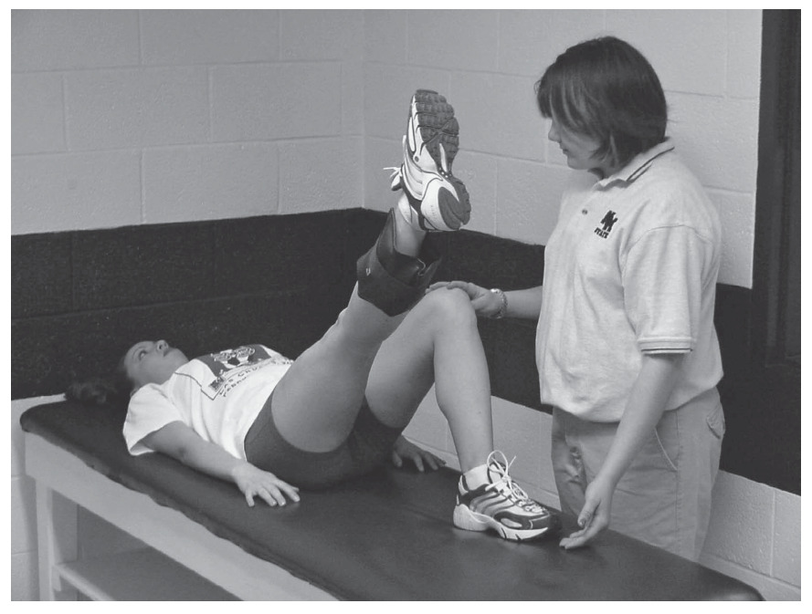
Hình 9.4: Việc đặt mục tiêu có thể thúc đẩy bệnh nhân dùng kỹ thuật đúng khi thực hiện các bài tập phục hồi chức năng.
Thử Thách Trí Não 9.7
- Đọc lại câu chuyện mở đầu chương này. Liệt kê những lý do có thể giải thích sự thiếu động lực của Anna. Phác thảo cách bạn có thể dùng đặt mục tiêu để giúp em tập trung lại.
- Nêu một điều bạn muốn đạt được trong môn thể thao hoặc sự nghiệp chuyên môn của mình (một mục tiêu dài hạn).
- a. Xác định ba mục tiêu ngắn hạn sẽ giúp bạn đạt được mục tiêu dài hạn của mình.
- b. Phân tích các mục tiêu ngắn hạn và dài hạn của bạn để xác định chúng dựa trên kết quả, thực hiện hay quá trình.
- c. Phân tích các mục tiêu của bạn để xác định chúng có đáp ứng các tiêu chí SMART hay không.
Nguyên Tắc Đặt Mục Tiêu
Khi đặt mục tiêu, hãy thiết lập cả mục tiêu ngắn hạn và dài hạn. Mục tiêu dài hạn có thể xác định mục tiêu tối chung, chẳng hạn như giành một chức vô địch nhất định, nhưng tính xa xôi của chúng khiến chúng kém hiệu quả. Điều đó không có nghĩa là chúng không phù hợp, mà là chúng nên được dùng cùng với các mục tiêu ngắn hạn. Mục tiêu ngắn hạn, vì mang tính trực tiếp hơn, làm tăng động lực; chúng cho phép người học thấy sự cải thiện về thực hiện và đóng vai trò là bước đệm để đạt được mục tiêu dài hạn. Mục tiêu trở nên có ý nghĩa nhất khi chúng tính đến khác biệt cá nhân, khi người học được tham gia vào quá trình đặt mục tiêu và khi họ được khuyến khích thường xuyên đánh giá tiến bộ của mình (Burton & Raedeke, 2008).
Luyện Tập Tinh Thần
Tiếp thu kỹ năng và thực hiện có thể hưởng lợi từ luyện tập tinh thần cũng như luyện tập thể chất. Một kỹ thuật đặc biệt—hình dung tinh thần—đã nhận được nhiều sự chú ý và có nhiều ứng dụng. Hình dung tinh thần liên quan đến việc hình dung hoặc diễn tập nhận thức một chuyển động khi không có bất kỳ thực hiện thể chất nào. Các nghiên cứu đã chỉ ra rằng hình dung tinh thần có thể giúp giảm hoặc kiểm soát lo âu trước thi đấu, tăng tự tin, nâng cao động lực và cải thiện chú ý chọn lọc (xem Ely et al., 2020, để ôn lại). Các vận động viên cũng dùng hình dung tinh thần như một chiến lược chuẩn bị hiệu quả trong thi đấu bằng cách diễn tập tinh thần thực hiện của họ trước khi thực sự thực hiện nó. Chẳng hạn, một vận động viên trượt băng nghệ thuật có thể ôn lại một bài biểu diễn trong đầu ngay trước khi lên băng, hoặc một golf thủ có thể hình dung thành công một cú đánh được đặt chiến lược trước khi thực sự đánh bóng. Trích dẫn sau đây từ một vận động viên nhảy cầu Olympic thành công mô tả việc anh thường xuyên dùng hình dung tinh thần chi tiết:
Tôi luôn thực hiện các cú nhảy của mình trong đầu. Vào buổi tối, trước khi đi ngủ, tôi luôn nhảy. Mười cú nhảy. Tôi bắt đầu bằng cú nhảy phía trước, cú đầu tiên mà
tôi phải thực hiện ở Thế vận hội, và tôi làm mọi thứ như thể tôi thực sự ở đó. Tôi thấy mình trên bảng nhảy với cùng một bộ đồ tắm. Mọi thứ đều giống hệt. Tôi thấy mình trong hồ bơi tại Thế vận hội đang thực hiện các cú nhảy của mình. Nếu cú nhảy sai, tôi quay lại và làm lại từ đầu. Phải mất một giờ đồng hồ để hình dung hoàn hảo tất cả các cú nhảy của tôi, nhưng đối với tôi, điều đó còn tốt hơn một buổi tập luyện khá. Tôi cảm thấy như mình đang ở trên bảng nhảy.
Orlick và Partington, 1988, tr. 112
Dù thường được liên kết với tâm lý học thể thao và thực hiện như đã nêu ở trên, việc dùng hình dung tinh thần cũng đã được chứng minh là tạo thuận lợi cho học kỹ năng. Dù không thể thay thế luyện tập thể chất, luyện tập tinh thần đã được chứng minh là hiệu quả hơn không luyện tập gì cả (Feltz & Landers, 1983; Hird et al., 1991). Hơn nữa, sự kết hợp giữa luyện tập thể chất và hình dung tinh thần được thấy là vượt trội hơn luyện tập thể chất đơn thuần (ví dụ, Hird et al., 1991; Post et al., 2015).
Những phát hiện này không chỉ giới hạn ở việc học các hoạt động thể thao. Các nghiên cứu đã đánh giá hiệu quả của luyện tập hình dung vận động đối với thực hiện và học tập ở những người có tình trạng thần kinh như bại não (Cabral-Sequeira,
GHI CHÚ NGHIÊN CỨU
Để khám phá ảnh hưởng của hình dung tinh thần đối với tiếp thu kỹ năng, Millard, Mahoney và Wardrop (2001) đã ngẫu nhiên giao 60 nữ vận động viên bơi lội thành thạo trong độ tuổi từ 11 đến 16 vào một trong bốn nhóm thí nghiệm: luyện tập tinh thần, luyện tập thể chất, luyện tập kết hợp tinh thần và thể chất, và không luyện tập. Nhiệm vụ cần học là thoát kayak ướt (kayak wet exit). Những người tham gia ở nhóm luyện tập tinh thần hoàn thành một buổi luyện tập tinh thần 30 phút mỗi ngày trong ba ngày liên tiếp. Nhóm luyện tập thể chất thực hiện ba bài tập trong ba ngày liên tiếp. Nhóm kết hợp thực hiện cùng một quy trình luyện tập với nhóm luyện tập tinh thần trong ba ngày đầu, rồi tham gia vào cùng một luyện tập thể chất với nhóm thể chất trong ba ngày tiếp theo. Những người tham gia ở ba nhóm này được yêu cầu ghi nhật ký sau mỗi lần luyện tập, trong đó họ ghi lại các thông tin như mức độ tự tin và tiến bộ cảm nhận được. Cuối cùng, nhóm không luyện tập không nhận được hướng dẫn hay luyện tập nào.
Kết quả nhật ký cho thấy các nhóm luyện tập tinh thần và nhóm kết hợp tự tin vào khả năng tinh thần thực hiện bài thoát kayak. Nhóm luyện tập tinh thần có mức đánh giá thoát kayak cao hơn nhóm không luyện tập. Các nhà nghiên cứu khẳng định rằng “kết quả cung cấp bằng chứng rằng sự kết hợp giữa luyện tập tinh thần và luyện tập thể chất hiệu quả hơn bất kỳ loại hình luyện tập đơn lẻ nào được kiểm tra” (tr. 982), ủng hộ quan điểm rằng người mới bắt đầu có thể hưởng lợi từ cả luyện tập tinh thần lẫn thể chất để tiếp thu kỹ năng.
Coelho và Teixeira, 2016); đột quỵ, chấn thương tủy sống và bệnh Parkinson (xem Dickstein & Deutsch, 2007); ở các vận động viên bị thương (ví dụ, Milne, Hall, & Forwell, 2005; Driediger, Hall, & Callow, 2006); trong huấn luyện lại các nhiệm vụ chi trên (xem Harris & Hebert, 2015) và các kỹ năng di chuyển (Malouin & Richards, 2010); để giảm đau (ví dụ, Davidson et al., 2016); và trong phục hồi chức năng (ví dụ, Christakou, Zervas, & Lavallee, 2007; Lebon, Guillot, & Collet, 2012). Hệ quả của những phát hiện này là người thực hành nên cân nhắc đưa hình dung tinh thần vào luyện tập để hỗ trợ việc học hoặc học lại một kỹ năng hay một phần của kỹ năng. Nhưng nên tiến hành việc này như thế nào?
Holmes và Collins (2001) đã phát triển mô hình hình dung vận động PETTLEP, cung cấp các hướng dẫn thực tế nhằm tăng hiệu quả của các can thiệp hình dung. Nền tảng của mô hình là ý tưởng rằng can thiệp hình dung nên mô phỏng bối cảnh của tình huống thực hiện càng sát càng tốt. Theo đó, các yếu tố sau, tương ứng với từ viết tắt, nên được cân nhắc khi thực hiện can thiệp hình dung: (1) thể chất, (2) môi trường, (3) nhiệm vụ, (4) thời điểm, (5) học tập, (6) cảm xúc và (7) góc nhìn (xem Wakefield et al., 2013, để ôn lại). Những yếu tố này “mô tả vị trí thể chất của cá nhân, môi trường cần
BẢNG 9.5
Khuyến nghị sử dụng mô hình PETTLEP để thiết kế các can thiệp hình dung (Wakefield et al., 2013)
YẾU TỐ — HỆ QUẢ THỰC TIỄN
- Thể chất: Người thực hiện nên chủ động tham gia, chứ không chỉ thư giãn.
- Môi trường: Tái tạo môi trường thực hiện thực tế, cố gắng đưa vào tất cả các giác quan (ngửi mùi cỏ mới cắt, nghe tiếng reo hò của khán giả khi họ ghi bàn và tập trung vào cảm giác của chuyển động). Nếu có thể, hãy hình dung trong chính môi trường nơi diễn ra thực hiện.
- Nhiệm vụ: Hình ảnh nên phản ánh bản chất của nhiệm vụ và được điều chỉnh, cập nhật khi trình độ kỹ năng cải thiện.
- Thời gian: Thực hiện hình dung theo thời gian thực.
- Học tập: Khi sự thành thạo kỹ năng của người thực hiện cải thiện, hình ảnh nên thay đổi để phản ánh năng lực hiện tại của họ.
- Cảm xúc: Cố gắng đưa vào những cảm xúc thường cảm nhận được trong một trận đấu (ví dụ, vui sướng, cơn hưng phấn adrenaline), nhưng tránh những cảm xúc làm suy yếu (ví dụ, sợ hãi, hoảng loạn).
- Góc nhìn: Góc nhìn, dù là bên trong (qua chính mắt bạn) hay bên ngoài (như xem chính mình trên video), sẽ phụ thuộc vào mục đích của hình dung, đặc điểm nhiệm vụ và sở thích của người thực hiện. Nhìn chung, Holmes và Collins (2001) khuyến nghị dùng góc nhìn bên trong vì nó tái tạo tình huống thực hiện, nhưng trong những trường hợp điều chỉnh kỹ thuật, tiêu điểm ngoại vi có thể hiệu quả.
được hình dung, nhiệm vụ liên quan, thời điểm hay thời lượng của hình dung, việc học tập hay những thay đổi diễn ra trong lúc hình dung, những cảm xúc liên quan đến nhiệm vụ và góc nhìn hình dung” (Schuster et al., 2011, tr. 77). Những cải thiện thấy được trong thực hiện cú đánh bunker trong golf, đặc biệt khi kết hợp với luyện tập thể chất (Smith, Wright, & Cantwell, 2008), cú sút phạt đền trong bóng đá (Ramsey et al., 2010), độ chính xác cú đá bằng chân không thuận ở các cầu thủ bóng đá đại học giải trí (Finn, Grills, & Bell, 2009), và cú nhảy xoay trên xà cân bằng trong thể dục dụng cụ (Smith et al., 2007) ủng hộ việc triển khai cách tiếp cận này nhằm tạo thuận lợi cho phát triển kỹ năng. Những khuyến nghị cụ thể do Wakefield et al. (2013) đưa ra cho người thực hành về dùng mô hình PETTLEP để thiết kế can thiệp hình dung có thể xem trong Bảng 9.5. Bạn có thể tự thử hình dung bằng cách thực hiện các nhiệm vụ được nêu trong Hoạt động Khám phá 9.3.
Vì Sao Hình Dung Tinh Thần Lại Hiệu Quả?
Một số giải thích đã được đề xuất để giải thích các hiệu ứng tăng cường học tập và thực hiện của hình dung tinh thần. Theo thuyết nhận thức, hình dung tinh thần tạo thuận lợi cho tiếp thu các yếu tố nhận thức của một kỹ năng bằng cách cho phép người học phát triển sự hiểu biết về các yêu cầu của một chuyển động, thử nghiệm các giải pháp cho những vấn đề vận động và phát triển các chiến lược thực hiện (Sackett, 1934; Hird et al., 1991). Hiệu quả của hình dung tinh thần nằm ở chỗ người học có thể luyện tập một kỹ năng lặp đi lặp lại mà không có nguy cơ chấn thương và không bị mỏi thể chất.
Thuyết thần kinh–cơ giả định rằng hành động hình dung chính mình thực hiện một chuyển động dẫn đến kích hoạt cùng các đường dẫn vận động đã được kích hoạt nếu chuyển động được thực hiện thật, nhưng ở mức dưới ngưỡng. Nói cách khác, cơ được chi phối theo cách tương tự trong hình dung tinh thần cũng như khi các chuyển động được luyện tập thật. Nghiên cứu ủng hộ ý tưởng này đã phát hiện rằng hoạt động cơ trong lúc hình dung, đo bằng EMG, thực sự tương tự như trong chuyển động thực tế, dù cường độ nhỏ hơn (Harris & Robinson, 1986; Jacobson, 1931; Jowdy & Harris, 1990; Suinn, 1980). Có vẻ như bằng cách diễn tập một kỹ năng qua hình dung tinh thần, người ta có thể củng cố các đường dẫn thần kinh dùng để thực hiện chuyển động thực tế.
Gần đây hơn, những tiến bộ trong hình ảnh thần kinh đã cho thấy các vùng tương tự trong não được kích hoạt trong khi diễn tập tinh thần các hành động như khi thực hiện chính các chuyển động thể chất đó, một hiện tượng được gọi là tương đương chức năng (functional equivalence) (Jeannerod, 2001). Theo đó, để tối đa hóa hiệu quả của các can thiệp hình dung, chúng nên mô phỏng các điều kiện thực hiện thực tế càng sát càng tốt. Đây chính là ý tưởng làm nền tảng cho mô hình PETTLEP. Ngoài ra, các nghiên cứu kiểm tra hình dung vận động bằng điện não đồ (EEG) và chụp cộng hưởng từ chức năng (fMRI) tiếp tục làm sáng tỏ các cơ chế thần kinh nền tảng, mà các nhà khoa học đang dùng để phát triển những công nghệ có thể, một ngày nào đó, giúp những người bị rối loạn di chuyển thoái hóa thần kinh lấy lại chức năng bằng cách chuyển ý nghĩ thành hành động thực hiện qua máy tính. Truy cập www.youtube.com/watch?v=-h3kiws4I54 để tìm hiểu thêm.
Hoạt Động Khám Phá 9.3
Hình Dung Tinh Thần I
Hoạt Động 1
Chọn bất kỳ vật nào trong phòng cho hoạt động này. Nhìn hình dạng và màu sắc của nó. Quan sát kỹ, tập trung vào từng chi tiết. Nhắm mắt lại và hình dung vật đó trong vài giây. Sau đó mở mắt và so sánh hình ảnh trong đầu bạn với vật thật.
Hoạt Động 2
Nhắm mắt và tưởng tượng rằng bạn đang ở trong phòng khách, và bạn cùng phòng hoặc người thân đang nấu bữa tối trong bếp. Bạn có thấy đồ nội thất của mình không? Nó màu gì? Ti vi có đang mở không? Bạn có nghe thấy nó không? Có tiếng động nào khác không? Bạn ngửi thấy mùi gì? Bạn nhận thấy những chi tiết nào khác? (Điều chỉnh từ Weinberg & Gould, 2019.)
Hoạt Động 3
Nhắm mắt và tái tạo trong đầu hành trình đi học của bạn hôm nay. Bạn lái xe, đi bộ, đi xe đạp hay đi phương tiện công cộng? Hãy nhìn và cảm nhận chính mình thực hiện các chuyển động liên quan đến phương tiện bạn dùng. Hình dung những người, môi trường và cảnh vật. Bạn thấy nóng hay lạnh? Bạn đang nghĩ gì? Bạn ngửi thấy mùi gì?
Khi thực hiện hoạt động này, bạn có thấy hình ảnh qua chính mắt mình hay qua góc nhìn của bạn, hay nó dường như là bạn đang xem một bộ phim về chính mình? Nếu bạn cảm thấy mình đang nhìn qua chính mắt mình, thì bạn đang dùng hình dung nội tại. Nếu, ngược lại, góc nhìn của bạn là của một người quan sát, bạn đang dùng hình dung ngoại vi. Sở thích dùng hình dung nội tại hay ngoại vi khác nhau giữa các cá nhân, và nhiều người chuyển qua lại tùy tình huống. Hãy thử lại hoạt động này, nhưng lần này dùng góc nhìn kia.
Dù ai cũng có khả năng thực hiện hình dung tinh thần, không phải ai cũng thành thạo như nhau trong việc sử dụng nó. Ban đầu, bạn có thể gặp khó khăn trong việc tạo ra những hình ảnh sống động, được kiểm soát, đưa vào tất cả các giác quan. Luyện tập sẽ giúp bạn phát triển khả năng hình dung của mình. Hãy bắt đầu với những vật hoặc tình huống quen thuộc, như trong các bài tập này.
Hoạt Động Khám Phá 9.4
Hình Dung Tinh Thần II*
DỤNG CỤ
- Một đoạn dây dài 10 inch
- 1 chìa khóa
QUY TRÌNH
Buộc chìa khóa vào đầu đoạn dây. Tiếp theo, đặt khuỷu tay lên bàn trong khi giữ đầu dây kia giữa ngón trỏ và ngón cái sao cho chìa khóa treo tự do. Khi dây đã đứng yên, hãy tập trung vào chìa khóa và hình dung nó chuyển động qua lại như một con lắc.
Bạn có làm được chìa khóa chuyển động không? Bạn giải thích kết quả này như thế nào?
* Điều chỉnh từ Vealey và Greenleaf, 2006.
GHI CHÚ NGHIÊN CỨU
Guillot, Moschberger và Collet (2013) so sánh hình dung tinh thần được thực hiện khi đứng yên với hình dung tinh thần được thực hiện kèm theo chuyển động thực tế. Người tham gia là 12 vận động viên nhảy cao cấp quốc gia trong độ tuổi từ 16 đến 25. Mỗi vận động viên hoàn thành phiên bản chỉnh sửa của Bảng Câu hỏi Hình dung Chuyển động để xác định năng lực hình dung cá nhân. Sau bốn lần khởi động thử, các vận động viên ngẫu nhiên thực hiện mười cú nhảy được hình dung và mười cú nhảy thực tế qua một thanh đặt ở mức 90 phần trăm thành tích cá nhân tốt nhất. Một nửa số cú hình dung được thực hiện khi đứng yên, nửa còn lại được thực hiện kèm theo các động tác tay tương ứng. Ba thước đo thực hiện đã được ghi lại. Thứ nhất, khả năng hình dung theo thời gian thực được xác định bằng cách so sánh thời gian nhảy thực tế với thời gian hình dung do chính các vận động viên ghi lại—họ bấm một đồng hồ cầm tay khi bắt đầu hình dung chuyển động đầu tiên và dừng lại khi kết thúc cú nhảy. Thứ hai, số lần thành công được ghi nhận. Thứ ba, kỹ thuật nhảy được hai chuyên gia đánh giá. Kết quả cho thấy hình dung tinh thần kết hợp với chuyển động thực tế làm tăng hiệu quả kỹ thuật của cú nhảy, tăng số lần thành công và vượt trội về độ khớp thời gian giữa cú nhảy được hình dung và cú nhảy thực tế. Vì vậy, trong nghiên cứu này, việc kết hợp hình dung tinh thần với chuyển động thực tế đã nâng cao thực hiện.
ĐƯA VÀO THỰC TẾ
Tình Huống Học Tập: Học Cú Chuyền Gián Tiếp Trong Khúc Côn Cầu
Dù các cầu thủ squirts đang ở giai đoạn liên kết đối với cú chuyền thuận tay cơ bản và cho thấy sự tiến bộ ổn định, Jennifer biết rằng độ phức tạp tăng thêm của việc đánh bóng vào thành bảng ở góc và tốc độ phù hợp để đến đúng vị trí và thời điểm là một khái niệm mới. Trước khi họ học được cách bóng bật ra khỏi thành bảng, việc chuyền đến một mục tiêu đang di chuyển là không thực tế đối với các cầu thủ squirts, những người mới được giới thiệu với cú chuyền gián tiếp. Cô cần đơn giản hóa kỹ năng này ngay từ đầu.
Kiểm Tra Kiến Thức Của Bạn
Làm thế nào để đơn giản hóa cú chuyền gián tiếp cho luyện tập ban đầu? Hãy thiết kế ba hoạt động Jennifer có thể dùng để đơn giản hóa kỹ năng trước khi thêm một người nhận đang di chuyển. Theo thứ tự nào bạn đề xuất luyện tập các hoạt động đó? Hãy giải thích chiến lược bạn dùng để đơn giản hóa kỹ năng và biện minh cho thứ tự bạn đề xuất. So sánh câu trả lời của bạn với câu trả lời mẫu tại www.routledge.com/cw/coker.
HƯỚNG NHÌN PHÍA TRƯỚC
Tiếp thu kỹ năng và nâng cao thực hiện là kết quả của những cơ hội luyện tập được thiết kế cẩn thận. Trong chương này, chúng ta đã kiểm tra một số chiến lược, gồm trình tự và các chiến lược tâm lý, sẽ giúp người thực hành tối đa hóa tiến bộ về trình độ kỹ năng. Trong chương tới, chúng ta sẽ tiếp tục tập trung vào các yếu tố ảnh hưởng đến hiệu quả luyện tập, khi chuyển sự chú ý sang tổ chức và lập lịch luyện tập.
TRỌNG TÂM CẦN NHỚ
Sau khi đọc chương này, bạn nên biết:
- Các kỹ năng có độ phức tạp nhiệm vụ cao và mức tổ chức nhiệm vụ thấp nhìn chung được phục vụ tốt nhất bằng luyện tập từng phần, trong khi luyện tập toàn phần được ưu tiên cho các kỹ năng có độ phức tạp thấp và mức tổ chức cao.
- Người thực hành có một số phương pháp luyện tập từng phần:
- Phân đoạn có nghĩa là tách kỹ năng thành các phần theo yếu tố không gian hoặc thời gian. Có thể thực hiện bằng phương pháp từng phần–toàn phần, từng phần tiến triển hoặc từng phần lặp lại, và các phần có thể tiến từ phần đầu đến phần cuối (chuỗi xuôi) hoặc theo thứ tự ngược lại (chuỗi ngược).
- Tách nhỏ là kỹ thuật luyện tập từng phần trong đó các thành phần thường được thực hiện đồng thời sẽ bị tách ra và luyện tập độc lập.
- Đơn giản hóa làm giảm mức độ khó của nhiệm vụ hoặc của một khía cạnh nào đó. Có thể thực hiện bằng cách điều chỉnh dụng cụ, giảm yêu cầu phối hợp của nhiệm vụ, thay đổi độ phức tạp của môi trường để biến kỹ năng mở thành kỹ năng khép kín hơn, dùng các hoạt động xây dựng kỹ năng và trò chơi dẫn nhập, và sắp xếp trình tự từ đơn giản đến phức tạp.
- Gợi ý chú ý hướng chú ý của người học vào một khía cạnh cụ thể của kỹ năng trong lúc thực hiện nó như một chỉnh thể, cho phép người học tập trung vào một thành phần nhiệm vụ hoặc một vấn đề chuyển động cụ thể mà không làm xáo trộn các đặc điểm thời gian và không gian nền tảng của kỹ năng.
- Hướng dẫn bằng tay có thể được dùng để truyền đạt các yêu cầu của kỹ năng và vì mục đích an toàn, nhưng nên được rút bỏ càng sớm càng tốt.
- Độ chính xác không gian được chi phối bởi sự đánh đổi giữa tốc độ và độ chính xác, trong đó nhấn mạnh tốc độ ảnh hưởng tiêu cực đến độ chính xác và ngược lại.
- Chuyển giao hai bên xảy ra khi luyện tập với một chi làm tăng tốc độ tiếp thu kỹ năng với chi đối bên trên cùng một nhiệm vụ.
- Sự kết hợp giữa mục tiêu kết quả, mục tiêu thực hiện và mục tiêu quá trình mang lại thực hiện vượt trội.
- Một mục tiêu được xây dựng tốt thì cụ thể, đo lường được, hướng đến hành động, thực tế và kịp thời (SMART).
- Sự kết hợp giữa luyện tập thể chất và hình dung tinh thần (việc hình dung hoặc diễn tập nhận thức một chuyển động) vượt trội hơn luyện tập thể chất đơn thuần.
Thực hành trong phòng thí nghiệm: Để hoàn thành bài thực hành cho chương này, hãy truy cập www.routledge.com/cw/coker và chọn Lab 9a, Phân đoạn; Lab 9b, Đơn giản hóa; Lab 9c, Hướng dẫn bằng tay; và Lab 9d, Đánh đổi giữa tốc độ và độ chính xác.
CÂU HỎI ÔN TẬP
- Hai đặc điểm nhiệm vụ nào bạn phải cân nhắc khi quyết định có chia một kỹ năng thành các phần hay không?
- Kỹ thuật luyện tập từng phần tiến triển và từng phần lặp lại có ưu điểm gì so với phương pháp từng phần–toàn phần?
- Hãy nêu một ví dụ về chuỗi ngược và một ví dụ về chuỗi xuôi, với một kỹ năng do bạn chọn.
- Hãy định nghĩa đơn giản hóa. Liệt kê và giải thích ba chiến lược đơn giản hóa khác nhau cho các kỹ năng do bạn chọn.
- Gợi ý chú ý là gì? Vì sao nó được đưa vào cuộc thảo luận về luyện tập toàn phần so với luyện tập từng phần?
- Hãy liệt kê những vấn đề tiềm ẩn liên quan đến việc dùng hướng dẫn bằng tay với tần suất cao.
- Điều kiện nào vi phạm nguyên lý tốc độ–độ chính xác?
- Chuyển giao hai bên là gì? Hãy giải thích cách một vận động viên bị chấn thương có thể tận dụng hiện tượng này.
- Từ viết tắt SMART viết tắt cho những gì?
- Hãy tạo một ví dụ về cách có thể đưa hình dung theo mô hình PETTLEP vào một chương trình phục hồi chức năng.
Lịch Luyện Tập
Chương 10 — DOI: 10.4324/9781003039716-10
Chương 10 — Lịch Luyện Tập
Ông Green đã trải qua ca phẫu thuật thay khớp háng và hiện đang chờ cuộc hẹn vật lý trị liệu đầu tiên. Ông cần học lại cách đi bằng chiếc khớp háng mới. Ông đã được cảnh báo rằng điều này sẽ đòi hỏi rất nhiều nỗ lực và luyện tập, nhưng ông sẵn sàng đón nhận thử thách. Sau cùng, ông có một mục tiêu: ông muốn có thể nhảy cùng cháu gái trong đám cưới của cháu.
Không có gì ngạc nhiên khi luyện tập là một thành phần then chốt của việc học hay học lại một kỹ năng vận động. Cũng không có gì ngạc nhiên khi sự thành thạo một kỹ năng cần có thời gian. Để tận dụng tối đa thời gian của mình, các lần thử luyện tập không chỉ nên được tăng số lượng mà còn phải được tối ưu hóa. Nếu nhà vật lý trị liệu của ông Green đã phát triển được sự hiểu biết thấu đáo về cách bối cảnh và sự phân bổ luyện tập ảnh hưởng đến việc học, thì giấc mơ nhảy cùng cháu gái trong đám cưới của cháu có thể trở thành hiện thực.
BỐI CẢNH LUYỆN TẬP
Một niềm tin phổ biến trong thể thao là các vận động viên phải nắm vững những nguyên tắc cơ bản. Những huấn luyện viên theo triết lý này thường tin rằng luyện tập trong các điều kiện không đổi — chẳng hạn như thực hiện mãi mãi một đường chuyền hay một cú sút giống hệt nhau — sẽ dẫn đến việc học tốt hơn, vì kiểu vận động sẽ được khắc sâu trong trí nhớ. Điều mà cách tiếp cận này bỏ qua là tầm quan trọng của khả năng khái quát hóa một kỹ năng sang nhiều tình huống thực hiện khác nhau, kể cả những tình huống có thể chưa từng được trải qua trước đây. Một cầu thủ vị trí shortstop chẳng hạn, sẽ không bắt những quả bóng lăn trên mặt đất với các thông số giống hệt nhau (tốc độ, quỹ đạo, vị trí trên sân) lặp đi lặp lại trong một trận đấu. Tương tự, một bệnh nhân hội chứng ống cổ tay đang tập để lấy lại chức năng bàn tay sẽ không cài cùng một chiếc áo mỗi ngày. Các nút áo có đủ hình dạng, kết cấu và kích cỡ khác nhau, và được dùng với nhiều loại vải khác nhau. Để đạt được mục tiêu tự cài được áo, bệnh nhân sẽ phải thao tác với nhiều loại nút trong vô số điều kiện. Vì vậy, luyện tập nên được thiết kế với sự biến thiên cố hữu này trong tâm trí.
Ủng Hộ Luyện Tập Biến Đổi
Ý niệm rằng tính biến thiên trong vận động và bối cảnh là một thành tố cần thiết cho sự phát triển kỹ năng và khả năng khái quát hóa có nền tảng lý thuyết vững chắc. Trên thực tế, một dự đoán căn bản của lý thuyết lược đồ của Schmidt (xem Chương 4) là luyện tập biến đổi sẽ tăng cường sự phát triển lược đồ của người học. Lược đồ này, đến lượt nó, sẽ nâng cao khả năng của người thực hiện trong việc chọn các đặc tả đáp án hay các giá trị thông số phù hợp nhằm đạt được một mục tiêu vận động. Những người ủng hộ tiếp cận dựa trên ràng buộc cũng đề xuất tính biến thiên có mục tiêu của luyện tập thay vì luyện tập máy móc, lặp đi lặp lại, để cho phép người học khám phá và tìm ra các giải pháp và kỹ thuật vận động tối ưu phù hợp với họ. Cụm từ lặp lại mà không lặp lại (repetition without repetition), do Bernstein (1967) đặt ra, nhắc nhở người thực hành rằng dù các lần lặp lại là một phần cần thiết của quá trình học, những lần lặp đó nên buộc người học liên tục
GHI CHÚ NGHIÊN CỨU (RESEARCH NOTES)
Douvis (2005) đã kiểm tra ảnh hưởng của luyện tập biến đổi đối với cú đánh thuận tay trong tennis ở trẻ em và thanh thiếu niên muộn. Bốn mươi bé trai từ 9 đến 10 tuổi và 40 nam sinh từ 18 đến 19 tuổi đã tham gia vào một chương trình hướng dẫn chung, ba lần mỗi tuần trong sáu tuần, chỉ khác nhau về điều kiện luyện tập. Trong giai đoạn luyện tập của mỗi buổi, người tham gia thực hiện 100 cú đánh thuận tay từ một điểm thực hiện cố định trên sân, nhắm vào không có mục tiêu cụ thể, một mục tiêu, bốn mục tiêu hoặc năm mục tiêu. Sau khi hoàn thành chương trình huấn luyện và một giai đoạn nghỉ ngơi 72 giờ, tất cả người tham gia thực hiện 60 lần thử chuyển giao tới một điểm mục tiêu duy nhất trên sân. Độ lệch về độ chính xác đã được ghi lại. Kết quả cho thấy thanh thiếu niên thực hiện các cú đánh chính xác hơn trẻ em. Ngoài ra, trẻ em luyện tập với bốn hoặc năm mục tiêu (luyện tập biến đổi) chính xác hơn đáng kể so với những trẻ luyện tập với một mục tiêu hoặc không có mục tiêu cụ thể, và ở thanh thiếu niên, luyện tập biến đổi cho độ chính xác cao hơn luyện tập không có mục tiêu cụ thể. Giả thuyết về tính biến thiên của luyện tập đã được ủng hộ, vì luyện tập với bốn hoặc năm mục tiêu mang lại tính nhất quán thực hiện cao hơn bất kể nhóm tuổi.
giải quyết vấn đề, đúng như điều họ sẽ làm trong một bối cảnh thực hiện, thay vì lặp đi lặp lại cùng một động tác.
Một số nghiên cứu ủng hộ dự đoán lý thuyết rằng luyện tập biến đổi có lợi cho việc học. Shea và Kohl (1991) nhận thấy rằng trong suốt các lần thử luyện tập trong nghiên cứu của họ, các nhóm luyện tập cố định (những người lặp đi lặp lại cùng một biến thể kỹ năng) thực hiện rõ rệt tốt hơn nhóm luyện tập biến đổi (những người luyện tập nhiều biến thể của một kỹ năng) trong một nhiệm vụ tạo lực. Tuy nhiên, kết quả của bài kiểm tra duy trì lại cho thấy hiệu ứng ngược lại — cho thấy những tiến bộ học tập lớn hơn thực tế đã đạt được bởi nhóm luyện tập biến đổi.
Video trên web: Video giải thích về “lặp lại mà không lặp lại”: www.youtube.com/watch?v=qVt-LBQGo9o
Để hiểu trọn vẹn ý nghĩa của những phát hiện này, chúng ta phải xem lại sự phân biệt giữa việc học và thực hiện. Hãy nhớ rằng việc học được định nghĩa là một thay đổi tương đối bền vững trong khả năng thực hiện một kỹ năng vận động của một người, như kết quả của luyện tập hoặc kinh nghiệm. Thực hiện, mặt khác, là một biểu hiện tạm thời của kỹ năng. Dù luyện tập cố định được thấy có ảnh hưởng lớn hơn đến thực hiện, luyện tập biến đổi lại có ảnh hưởng lớn hơn đến việc học. Những phát hiện tương tự đã được báo cáo cho việc ném phạt trong bóng rổ (Shoenfelt et al., 2002; Memmert, 2006), một nhiệm vụ né tránh chướng ngại vật (Cohen, Bloomberg, & Mulavara, 2005), cú đánh thuận tay trong tennis (Douvis, 2005), và cú phát bóng trong tennis (Hernández-Davo et al., 2014).
cần đưa ra một cách hệ thống các biến thiên trong điều kiện điều chỉnh, điều kiện không điều chỉnh, hoặc cả hai. Ví dụ, trong các kỹ năng mở, chẳng hạn như bắt một quả bóng lăn trên mặt đất, đáp án của một người phải phù hợp với yêu cầu của một môi trường luôn thay đổi. Đối với kỹ năng này, luyện tập nên trình bày các biến thiên ở cả điều kiện điều chỉnh (ví dụ, vị trí của người học trên sân, tốc độ và quỹ đạo của bóng) lẫn điều kiện không điều chỉnh (ví dụ, tiếng la ó của khán giả) có thể xảy ra trong bối cảnh ứng dụng. Cách tiếp cận tương tự cũng áp dụng cho các kỹ năng kín liên quan đến tính biến thiên giữa các lần thử. Luyện tập biến đổi cho động tác đứng dậy từ ghế chẳng hạn, có thể gồm các độ cao ghế khác nhau, ghế có và không có tay vịn, sự thay đổi về độ êm của mặt ngồi, và các bề mặt sàn khác nhau (gạch, thảm, vinyl, v.v.).
Nhưng còn những kỹ năng như thực hiện một bài thăng bằng trên xà, trong đó mục tiêu của thực hiện là tái tạo một kiểu vận động một cách nhất quán và chính xác thì sao? Trong những trường hợp như vậy, luyện tập nên được thiết kế sao cho các điều kiện điều chỉnh (ví dụ, chiều cao và chiều rộng của xà) giữ không đổi, trong khi người học tiếp xúc với nhiều điều kiện không điều chỉnh tiềm ẩn khác nhau (ví dụ, các yếu tố gây phân tâm).
CEREBRAL CHALLENGE 10.1 — Thử thách Trí não
Đôi khi người ta lập luận ủng hộ luyện tập biến đổi rằng trong một bối cảnh thực hiện thực tế, cùng một động tác không bao giờ được thực hiện hai lần. Bạn đồng ý hay không đồng ý với nhận định này? Hãy xây dựng một lập luận để bảo vệ quan điểm của bạn.
Nguyên Tắc Hướng Dẫn Luyện Tập Biến Đổi
Để tối đa hóa những lợi ích tiềm năng của luyện tập biến đổi, người thực hành phải cân nhắc cẩn thận cách thức và thời điểm đưa tính biến thiên vào buổi luyện tập.
Cách Triển Khai Tính Biến Thiên
Theo Gentile (2000), để xác định cách triển khai tính biến thiên trong luyện tập, trước hết phải đánh giá bản chất của kỹ năng đang được học và môi trường mà kỹ năng đó sẽ được thực hiện. Sau đó, tùy theo đánh giá đó, người thực hành

Hình 10.1: Đối với các kỹ năng mở, cần đưa cả biến thiên trong điều kiện điều chỉnh lẫn điều kiện không điều chỉnh vào luyện tập một cách hệ thống
bên cạnh việc thao tác bối cảnh mà kỹ năng được thực hiện, cũng có thể đa dạng hóa luyện tập kỹ năng thông qua việc dùng các khái niệm vận động và các thử thách (Boyce, Coker, & Bunker, 2006).
Các khái niệm vận động được dùng trong giáo dục thể chất tiểu học để tạo ra các biến thể vận động bằng cách mô tả cách các kỹ năng được thực hiện (Graham, Holt/Hale, & Parker, 2020). Những khái niệm này gồm các biến số như hướng (lên/xuống, tới/lùi, v.v.), thời gian (nhanh/chậm), lực (mạnh/nhẹ), và đường đi (thẳng/cong/zíc-zắc). Để biết thêm thông tin và một minh họa đồ họa về cách kết hợp các khái niệm vận động, người thực hành nên tham khảo Bánh Xe Phân Tích Vận động (Movement Analysis Wheel) của Graham và các cộng sự (2020).
Các thử thách là những biến thể của một nhiệm vụ có kèm theo một tiêu chí, cho phép người học kiểm tra tiến triển của mình và tự đánh giá thực hiện của họ. Theo Shimon (2011), có thể tạo ra các thử thách bằng cách đặt những câu hỏi như “Bạn có thể làm được bao nhiêu lần, xa đến đâu hoặc nhanh đến mức nào…?” Chẳng hạn, một cầu thủ bóng chuyền có thể được thử thách phát bóng 15 lần sang sân đối phương và xem chịu được bao nhiêu mục tiêu khác nhau đã được đặt trên sàn. Một ví dụ khác, khi huấn luyện lại cảm giác tự thân ở chi dưới và mắt cá chân bằng một bảng dao động, có thể thiết kế một loạt thử thách gồm (1) lắc bảng từ trước ra sau nhiều nhất có thể trong một phút, (2) giữ thăng bằng trên bảng dao động lâu nhất có thể mà các cạnh không chạm sàn, và (3) xoay bảng dao động thành một vòng tròn mà cạnh bảng không chạm sàn ba lần theo cả hai hướng.
Nhiệm vụ Thử thách từ PE Central: www.pecchallenge.org/challenges/challengelist.html
Thời Điểm Triển Khai Tính Biến Thiên
Mô hình các giai đoạn học của Gentile cung cấp cho người thực hành những hướng dẫn về thời điểm nên triển khai luyện tập biến đổi. Theo Gentile (2000),
BẢNG 10.1
Thay đổi bối cảnh luyện tập đối với kỹ năng kín và kỹ năng mở
Kỹ năng kín — Kỹ năng mở
- Phụ thuộc vào mức độ biến thiên giữa các lần thử (ITV) — Thao tác cả điều kiện điều chỉnh lẫn điều kiện không điều chỉnh.
- Kỹ năng kín, không có ITV — Giữ điều kiện điều chỉnh cố định; thao tác các điều kiện không điều chỉnh.
- Kỹ năng kín, có ITV — Thao tác cả điều kiện điều chỉnh lẫn điều kiện không điều chỉnh.
mục tiêu của người học khi được giới thiệu một kỹ năng vận động mới là phát triển sự hiểu biết về các yêu cầu của nhiệm vụ. Luyện tập trong giai đoạn học ban đầu này vì vậy nên tạo điều kiện cho người học phát triển một kiểu vận động cơ bản. Luyện tập nên được tiến hành theo cách không làm người mới bắt đầu choáng ngợp, đồng thời cung cấp cơ hội thành công để nâng cao sự tự tin của họ. Những mục tiêu này đạt được tốt nhất thông qua luyện tập cố định. Một khi người học đã tiếp thu được kiểu vận động cơ bản, nên đưa các chiến lược luyện tập biến đổi vào.
CEREBRAL CHALLENGE 10.2 — Thử thách Trí não
- Bệnh nhân của bạn là ông Green, người đàn ông trong câu chuyện mở đầu đang học lại cách đi sau ca phẫu thuật thay khớp háng. Như bạn còn nhớ, mục tiêu của ông là nhảy cùng cháu gái trong đám cưới của cháu. Hãy giải thích cách bạn sẽ đưa luyện tập biến đổi vào chương trình điều trị của ông. Hãy mô tả các biến số bạn sẽ thao tác và nêu lý do làm như vậy.
- Đối với một kỹ năng do bạn chọn, hãy giải thích cách bạn sẽ triển khai luyện tập biến đổi.
CEREBRAL CHALLENGE 10.3 — Thử thách Trí não
Một người thực hành có thể quyết định tiếp tục dùng luyện tập cố định thay vì chuyển sang luyện tập biến đổi sau khi người học đã hiểu kiểu vận động cơ bản, vì người học sẽ trải nghiệm thành công nhiều hơn trong luyện tập. Bạn đã học trước đó rằng trải nghiệm thành công trong luyện tập dẫn đến động lực lớn hơn. Bạn có thể dùng những chiến lược nào để duy trì động lực của người học trong khi vẫn áp dụng lịch luyện tập biến đổi?
Tổ Chức Buổi Luyện Tập: Nhiễu Bối Cảnh
Sau khi xác định rằng tính biến thiên trong luyện tập là cần thiết, người thực hành tiếp theo phải quyết định cách tổ chức buổi luyện tập. Dù người học đang học nhiều biến thể trong một kỹ năng (ví dụ, thực hiện cú ném rổ từ các khu vực khác nhau trên sân, cả khi có lẫn khi không có hậu vệ) hay đang cố tiếp thu nhiều kỹ năng khác nhau (ví dụ, cú ném đứng tại chỗ, cú ném lên rổ, cú ném rổ khi nhảy, và cú ném phạt), người thực hành cũng phải chọn một trình tự luyện tập tối ưu. Những gợi ý hữu ích có thể được rút ra từ một hiện tượng luyện tập gọi là nhiễu bối cảnh.
QUAN NIỆM SAI PHỔ BIẾN (COMMON MYTH)
Việc duy trì dài hạn một kỹ năng vận động đạt được tốt nhất bằng cách luyện tập một kỹ năng lặp đi lặp lại trước khi chuyển sang một phiên bản khác của nhiệm vụ hoặc sang một nhiệm vụ hoàn toàn khác.
Nhiễu bối cảnh phát sinh từ việc chuyển đổi từ kỹ năng này sang kỹ năng khác, hoặc thay đổi bối cảnh mà một
nhiệm vụ được luyện tập từ lần thử này sang lần thử khác. Dù thuật ngữ “nhiễu” thường mang nghĩa tiêu cực, nhiễu bối cảnh là một chiến lược học tập tích cực đã được chứng minh là tạo thuận lợi cho tiếp thu kỹ năng (Battig, 1972, 1979). Mức độ nhiễu bối cảnh xảy ra là chức năng của cách các nhiệm vụ được tích hợp trong một buổi luyện tập. Ở một đầu của dải khả năng, nhiễu bối cảnh thấp xảy ra khi các lần thử luyện tập được tổ chức theo lịch theo khối. Trong luyện tập theo khối, người học luyện tập một kỹ năng hay một biến thể kỹ năng lặp đi lặp lại rồi mới chuyển sang một kỹ năng hay biến thể khác. Ví dụ, trong một buổi luyện tập 30 phút, một huấn luyện viên khúc hốc quy có thể cho các cầu thủ tập chuyền bóng trong 10 phút, chuyển sang cú sút cổ tay trong 10 phút tiếp theo, và dành 10 phút cuối cho cú sút mạnh. Nhiễu bối cảnh cao xảy ra khi nhiều nhiệm vụ hay biến thể nhiệm vụ được thực hiện theo thứ tự ngẫu nhiên. Trong luyện tập ngẫu nhiên, huấn luyện viên khúc hốc quy có thể cho các cầu thủ thực hiện cùng số lần lặp lại trong buổi 30 phút, nhưng các kỹ năng được sắp xếp sao cho không biến thể nào (chuyền, sút cổ tay, sút mạnh) được lặp lại hai lần liên tiếp.
Hiện Tượng Nhiễu Bối Cảnh
Các nghiên cứu xem xét hiệu quả của luyện tập ngẫu nhiên so với luyện tập theo khối đối với tiếp thu kỹ năng đã cho thấy một phát hiện khá nhất quán: nhiễu bối cảnh thấp (luyện tập theo khối) thường tạo ra thực hiện ngắn hạn tốt hơn trong lúc luyện tập, nhưng việc luyện tập nhiều kỹ năng hay biến thể kỹ năng theo thứ tự ngẫu nhiên (nhiễu bối cảnh cao) lại dẫn đến tiến bộ học tập dài hạn lớn hơn (ví dụ, Shea & Morgan, 1979). Sự đảo ngược kết quả này của luyện tập ngẫu nhiên đã được gọi là hiện tượng nhiễu bối cảnh.
Các nhà nghiên cứu đã đưa ra hai giải thích để lý giải hiện tượng nhiễu bối cảnh. Giả thuyết thứ nhất, giả thuyết tinh chỉnh (elaboration hypothesis), cho rằng khi dùng luyện tập ngẫu nhiên, bộ nhớ làm việc đồng thời chứa nhiều nhiệm vụ, cho phép dễ dàng phân biệt giữa chúng hơn (Shea & Morgan, 1979). Những sự phân biệt này củng cố biểu diễn trí nhớ của từng kỹ năng, làm cho kỹ năng đó sẵn có hơn đối với người học.
Một đề xuất thứ hai, do Lee và Magill (1985) đưa ra và được gọi là giả thuyết tái cấu trúc kế hoạch hành động (action plan reconstruction hypothesis), cho rằng luyện tập ngẫu nhiên tạo thuận lợi cho việc học bằng cách gây ra sự quên tạm thời các giải pháp nhiệm vụ giữa các lần thử. Hệ quả là người học bị buộc phải tạo lại một giải pháp nhiệm vụ mỗi khi họ thử một biến thể kỹ năng cụ thể. Trong luyện tập theo khối, sự tái tạo này chỉ xảy ra ở lần thử đầu tiên của mỗi khối. Vì vậy, luyện tập theo khối khuyến khích học thụ động thay vì lôi kéo người học vào các hoạt động xử lý nhằm củng cố chương trình vận động và sự truy xuất nó từ trí nhớ (Patterson & Lee, 2008).
Nhiễu Bối Cảnh Trong Bối Cảnh Ứng Dụng
Dù hiện tượng nhiễu bối cảnh đã được chứng minh là tương đối bền vững trong môi trường phòng thí nghiệm (ví dụ, Shea & Morgan, 1979; Lee & Magill, 1983; Wood & Ging, 1991; Tsutsui, Lee, & Hodges, 1998; Li & Wright, 2000; Maslovat et al.,
GHI CHÚ NGHIÊN CỨU (RESEARCH NOTES)
Để xác định liệu hiện tượng nhiễu bối cảnh có đúng với những người thực hiện lành nghề hay không, Hall, Domingues, và Cavasos (1994) đã kiểm tra ảnh hưởng của các lịch luyện tập đánh bóng khác nhau đối với thực hiện đánh bóng của các cầu thủ bóng chày đại học. Các cầu thủ tham gia hai buổi luyện tập đánh bóng bổ sung trong sáu tuần, trong đó họ nhận 15 cú bóng nhanh, 15 cú bóng cong và 15 cú bóng đổi tốc độ. Thứ tự trình bày các cú ném phụ thuộc vào việc phân nhóm. Các cầu thủ trong nhóm theo khối nhận 15 cú ném liên tiếp của mỗi loại theo các khối lặp lại, còn nhóm ngẫu nhiên nhận cùng những cú ném đó nhưng theo thứ tự ngẫu nhiên. Khi được kiểm tra trong điều kiện giống thi đấu, các cầu thủ ở nhóm ngẫu nhiên thực hiện tốt hơn những người ở nhóm theo khối. Những kết quả này chứng minh rằng luyện tập ngẫu nhiên không chỉ có lợi cho người mới bắt đầu mà còn tạo thuận lợi cho sự cải thiện thực hiện ở cả những người thực hiện lành nghề.
2004; Simon, 2007), các nghiên cứu kiểm tra khả năng khái quát hóa của nó sang các bối cảnh ứng dụng lại kém thuyết phục hơn (xem Barreiros, Figueiredo, & Godinho [2007], Brady [2008], và Wright & Kim [2020] để xem các bài tổng quan). Kết quả duy trì vượt trội đã được tìm thấy cho luyện tập ngẫu nhiên trong các nghiên cứu dùng cú phát cầu lông (Goode & Magill, 1986; Wrisberg & Liu, 1991), cú đánh bóng chày (Hall et al., 1994), cú đánh thuận tay và trái tay trong tennis (Hebert, Landin, & Solomon, 1996), cú putt và cú chip trong golf (Porter et al., 2007), cú lật kayak (Smith & Davies, 1995), bắn súng trường (Boyce & Del Rey, 1990), và các kỹ năng trượt tuyết trên ván (Smith, 2002); trong khi các cuộc điều tra khác lại cho thấy không có khác biệt giữa lịch luyện tập theo khối và ngẫu nhiên (ví dụ, Smith, Gregory, & Davies, 2003; Jones & French, 2007; Zetou et al., 2007; Žuvela, Maleš, & Čerkez, 2009; Bertollo et al., 2010; Cheong et al., 2012; Jimenez-Diaz, Morrera-Castro, & Salazar, 2018). Lại có những nghiên cứu khác cho thấy không có khác biệt giữa luyện tập theo khối và ngẫu nhiên về duy trì, nhưng lại cho thấy lợi ích học tập có thể khái quát hóa thông qua các bài kiểm tra chuyển giao — một chỉ báo khác của việc học được thảo luận trong Chương 5. Ví dụ gồm việc học các kỹ năng tự ăn ở bệnh nhân đột quỵ (Jo, Noh, & Kam, 2020) và các kỹ năng khúc hốc quy trên sân cỏ (Cheong, Lay, & Razman, 2016).
Những phát hiện mâu thuẫn này về lợi ích của luyện tập ngẫu nhiên trong bối cảnh ứng dụng đã được quy cho một số yếu tố. Trước hết, bản chất của nhiệm vụ dường như ảnh hưởng đến hiệu ứng nhiễu bối cảnh. Ý niệm này dựa trên giả thuyết của Magill và Hall (1990) rằng xác suất gây ra hiệu ứng nhiễu bối cảnh phụ thuộc vào việc các biến thể nhiệm vụ được triển khai có do cùng một chương trình vận động tổng quát chi phối hay không. Magill và Hall cho rằng luyện tập các nhiệm vụ do những chương trình vận động khác nhau kiểm soát buộc người học phải tham gia vào nhiều xử lý nhận thức hơn, lần lượt dẫn đến nhiễu lớn hơn và việc học được tăng cường. Mặt khác, các biến thể trong cùng một nhiệm vụ chỉ yêu cầu điều chỉnh thông số của cùng một chương trình, nên ít có khả năng tạo ra mức nhiễu tới hạn cần thiết để gây ra hiệu ứng tương tự. Magill và Hall còn cho rằng luyện tập các kỹ năng khác biệt hơn sẽ mang lại tiến bộ học tập lớn hơn so với luyện tập các kỹ năng giống nhau.
Tuy nhiên, một số nghiên cứu lại cho thấy chỉ điều chỉnh thông số cũng có thể gây ra hiệu ứng nhiễu bối cảnh (Keller et al., 2006; Landin & Hebert, 1997; Sekiya et al., 1994). Cần thêm nghiên cứu để giải quyết tranh luận này.
Các đặc điểm của người học, chẳng hạn như tuổi và trình độ kỹ năng, cũng được cho là ảnh hưởng đến hiệu ứng nhiễu bối cảnh. Dù số lượng còn hạn chế, các nghiên cứu khám phá mối quan hệ giữa nhiễu bối cảnh và độ tuổi đã nhận thấy luyện tập theo khối (nhiễu bối cảnh thấp) nhìn chung thúc đẩy việc học tốt hơn ở trẻ em (Hall & Boyle, 1993; Brady, 1998). Tương tự, lợi thế của luyện tập theo khối cũng được ghi nhận ở những người học mới bắt đầu trong các giai đoạn đầu của tiếp thu kỹ năng (Del Rey, Whitehurst, & Wood, 1983; Hebert et al., 1996; Landin & Hebert, 1997). Vì cần một mức độ xử lý nhận thức cao trong giai đoạn học ban đầu để phát triển sự hiểu biết về động tác, nên có khả năng mức nhiễu cao do điều kiện luyện tập ngẫu nhiên tạo ra chỉ đơn giản là làm người học quá tải (Magill & Hall, 1990). Do đó, các điều kiện nhiễu cao có thể chỉ hiệu quả sau khi đạt được một mức độ thành thạo nhất định (Del Rey et al., 1983; Del Rey, 1989; Hebert et al., 1996).
Những kết quả này gợi ý rằng việc học ban đầu nên được tổ chức bằng luyện tập theo khối, sau đó chuyển sang luyện tập ngẫu nhiên một khi người học đã đạt được một mức độ thành thạo nhất định. Tuy nhiên, dựa trên phát hiện của mình, Landin và Hebert (1997) đề xuất rằng mức nhiễu bối cảnh trung bình có thể tốt hơn trong bối cảnh ứng dụng. Để tạo ra nhiễu bối cảnh mức trung bình, người thực hành có thể dùng các mức độ khác nhau của luyện tập tuần tự, trong đó một trình tự cố định các lần thử được lặp đi lặp lại. Thay vì 10 cú sút liên tiếp ở mỗi trong bốn vị trí (theo khối) hoặc một cú sút từ mỗi vị trí qua 10 vòng (ngẫu nhiên), một ví dụ về luyện tập tuần tự là thực hiện một cú sút từ mỗi trong bốn vị trí rồi lặp lại vòng đó 20 lần. Một ví dụ khác là thực hiện năm cú sút liên tiếp ở mỗi trong bốn vị trí, lặp lại vòng đó hai lần. Hình thức luyện tập tuần tự sau, được gọi là luyện tập theo khối lặp lại, kết hợp các ưu điểm của luyện tập theo khối và ngẫu nhiên; nó cung cấp cho người học cơ hội điều chỉnh từng nhiệm vụ trong khi vẫn thực hiện nhiều nhiệm vụ trong một buổi luyện tập (Landin & Hebert, 1997; Proteau et al., 1994).
Chiến lược này cũng dường như có lợi vì về mặt lý thuyết nó đáp ứng được dải trình độ kỹ năng rộng thường thấy trong bối cảnh ứng dụng (Landin & Hebert, 1997). Dù cần thêm nghiên cứu để khám phá trọn vẹn tiềm năng của nhiễu bối cảnh mức trung bình trong các bối cảnh ứng dụng, Keller và các cộng sự đã báo cáo sự ủng hộ cho việc sử dụng nó (2006). Xem Bảng 10.2 để có ví dụ về các biến thể lịch luyện tập.
Mức nhiễu bối cảnh trung bình dường như phù hợp với các ý tưởng do Guadagnoli và Lee (2004) đề xuất trong khung điểm thử thách (challenge point framework) (Brady, 2008). Theo khung này, một lượng thông tin tối ưu phải sẵn có thì việc học mới có thể xảy ra. Lượng thông tin đó là chức năng của trình độ kỹ năng của người học và độ khó của nhiệm vụ đang được học (Guadagnoli & Lee, 2004). Theo đó, người thực hành nên cân nhắc mối quan hệ giữa trình độ kỹ năng và độ phức tạp của nhiệm vụ để xác định mức nhiễu bối cảnh có thể tạo thuận lợi tốt nhất cho việc học.
BẢNG 10.2
Ví dụ về các biến thể luyện tập (theo khối, tuần tự, theo khối lặp lại và ngẫu nhiên) để luyện tập ba kỹ năng khúc hốc quy khác nhau (chuyền bóng, sút mạnh và sút cổ tay) trong một buổi
Loại hình luyện tập — Cách triển khai
- Luyện tập theo khối — chuyền × 20; sút mạnh × 20; sút cổ tay × 20.
- Luyện tập tuần tự — chuyền × 1; sút mạnh × 1; sút cổ tay × 1 } × 20.
- Luyện tập theo khối lặp lại — chuyền × 5; sút mạnh × 5; sút cổ tay × 5 } × 4.
- Luyện tập ngẫu nhiên — chuyền, sút mạnh, sút cổ tay, sút mạnh, chuyền, sút cổ tay, chuyền, sút mạnh, chuyền, sút cổ tay, sút mạnh, sút cổ tay, chuyền, sút cổ tay, sút mạnh, chuyền, sút mạnh, chuyền, sút cổ tay, sút mạnh, sút cổ tay, sút mạnh, chuyền, sút cổ tay, sút mạnh, sút cổ tay, chuyền, sút mạnh, chuyền, sút cổ tay, chuyền, sút mạnh, chuyền, sút cổ tay, sút mạnh, sút cổ tay, sút mạnh, chuyền, sút mạnh, sút cổ tay, chuyền, sút cổ tay, sút mạnh, sút cổ tay, sút mạnh, chuyền, sút cổ tay, chuyền, sút mạnh, sút cổ tay, sút mạnh, chuyền, sút cổ tay, chuyền, sút mạnh, chuyền, sút cổ tay, chuyền, sút cổ tay, sút mạnh.
Phù hợp với giả thuyết điểm thử thách là một lịch luyện tập tăng dần mức nhiễu bối cảnh một cách hệ thống. Porter và Magill (2010) đã tiến hành hai thí nghiệm xem xét một tiến trình luyện tập tăng từ nhiễu bối cảnh thấp đến trung bình rồi cao, so với các mức cố định (chỉ theo khối hoặc chỉ ngẫu nhiên). Việc tăng dần mức nhiễu bối cảnh một cách hệ thống được thấy là tạo thuận lợi cho việc học các nhiệm vụ do cùng một chương trình vận động chi phối (các biến thể khoảng cách trong cú putt golf) cũng như các nhiệm vụ do các chương trình vận động tổng quát khác nhau chi phối (ba đường chuyền khác nhau trong bóng rổ: chuyền ngực, chuyền qua đầu, chuyền bằng một tay). Những phát hiện tương tự cũng đã được báo cáo bởi Porter và Beckerman (2016) và Porter và Saemi (2010), những người lưu ý rằng “một lý do khiến lịch luyện tập cung cấp sự gia tăng dần CI [nhiễu bối cảnh] có thể có lợi là nó thử thách người học ở mức phù hợp bằng cách tạo ra một môi trường trở nên khó khăn hơn dần khi trình độ kỹ năng của vận động viên cải thiện” (tr. 69).
Hệ Quả Của Nhiễu Bối Cảnh Đối Với Tổ Chức Luyện Tập
Dù cần thêm các cuộc điều tra trong nhiều môi trường thể thao và vận động khác nhau, các phương pháp nghiên cứu mới hứa hẹn sẽ giải quyết một số
sự khác biệt về hiệu quả của huấn luyện nhiễu bối cảnh (xem Farrow & Buszard, 2017). Tuy nhiên, nghiên cứu cho đến nay nên khuyến khích người thực hành xem xét lại các phương pháp luyện tập truyền thống ăn sâu (Coker & Fischman, 2010). Luyện tập theo khối dường như có lợi trong giai đoạn tiếp thu kỹ năng sơ khởi và nên được dùng cho đến khi người học nắm được ý của động tác. Một khi đã đạt được sự thành thạo cơ bản, nên đưa mức nhiễu bối cảnh trung bình hoặc cao vào để lôi kéo người học vào các hoạt động xử lý nhận thức bậc cao nhằm tạo thuận lợi cho việc học. Luyện tập nên được tổ chức bằng các lịch tuần tự, theo khối lặp lại và ngẫu nhiên kết hợp nhiều kỹ năng và nhiều biến thể kỹ năng. Ví dụ, thay vì bắt một cầu thủ tennis phát bóng vào cùng một điểm ở mỗi lần luyện, hãy đặt các cọc nhựa màu ở những vị trí khác nhau quanh sân để thay đổi vị trí phát bóng. Hãy luyện cú thuận tay và trái tay trong cùng một buổi, và thay đổi loại bóng chuyền hoặc khu vực sân mà người học đánh bóng (Jackson, 2001). Trong một phòng khám phục hồi chức năng, hãy thiết kế các trạm để bệnh nhân có thể luyện các kỹ năng thao tác khác nhau. Với những bệnh nhân học lại cách đi, hãy thay đổi độ dốc, hướng và tốc độ. Để dạy bắt bóng, hãy dùng nhiều vật khác nhau về kích cỡ và kết cấu, gồm bóng, vòng, túi đậu và gà cao su. Hình 10.2 đưa ra các bước thiết kế một buổi luyện tập có nhiễu bối cảnh.
Khi triển khai các mức nhiễu bối cảnh cao hơn, hãy nhớ rằng thực hiện trong lúc luyện tập có thể suy giảm. Tuy nhiên, không được để kiểu vận động bị rối loạn hoàn toàn. Người thực hành phải cảnh giác trong việc

Hình 10.2: Thiết kế các buổi luyện tập có nhiễu bối cảnh
Để thiết kế các buổi luyện tập kết hợp mức nhiễu bối cảnh từ trung bình đến cao:
- Xác định các kỹ năng cần luyện tập.
- Xác định các biến thể kỹ năng và bối cảnh thực hiện có thể ảnh hưởng đến cách kỹ năng được thực hiện.
- Thiết kế luyện tập sao cho người học đối mặt với các kỹ năng, biến thể và bối cảnh khác nhau — dùng luyện tập tuần tự hoặc theo khối lặp lại cho mức nhiễu bối cảnh trung bình và luyện tập ngẫu nhiên cho mức nhiễu bối cảnh cao.
VÍ DỤ: SÚT BÓNG VÀO LƯỚI TRONG KHÚC HỐC QUY
Các cú sút cần luyện: sút cổ tay, sút mạnh, sút trái tay.
Các biến thể: khoảng cách và góc tới lưới, có hoặc không có hậu vệ, vị trí mục tiêu trên lưới, sau một đường chuyền hoặc khi đang giữ bóng.
Bài tập: Một cầu thủ trượt với puck đến vị trí 1 và thực hiện cú sút mạnh. Sau đó cầu thủ trượt đến vị trí 2, nơi nhận một đường chuyền từ cầu thủ khác và thực hiện cú sút cổ tay. Một puck đã sẵn ở vị trí 3, và cầu thủ sút nó bằng cú sút trái tay. Rồi cầu thủ nhận một đường chuyền từ góc sân, trượt đến vòng tròn giữa sân, và trở lại vị trí 4 để thực hiện một cú sút mạnh khác. Khi cầu thủ di chuyển đến từng vị trí sút, huấn luyện viên hét lên góc nào của lưới cần sút tới. Bài tập có thể thực hiện có hoặc không có hậu vệ.
Các vị trí trên sân: 1, 4, 2, 3.
xác định liệu các yêu cầu của cấu trúc luyện tập có đang ảnh hưởng bất lợi đến việc học hay không và, nếu cần, quay lại các mức nhiễu bối cảnh thấp hơn.
Thực hiện kém hơn gắn với mức nhiễu bối cảnh cao hơn có thể dẫn đến động lực giảm sút. Ý niệm này được ủng hộ bởi các nghiên cứu xem xét ước tính của người học về tiến triển của họ trong các điều kiện nhiễu bối cảnh khác nhau. Khi được yêu cầu dự đoán mình sẽ làm thế nào trong một bài kiểm tra duy trì, những người học luyện tập trong điều kiện ngẫu nhiên đã đánh giá thấp điểm số của mình, dù họ dự đoán thực hiện chính xác hơn những người luyện tập theo khối; những người học này lại tự tin quá mức vào đánh giá về mức độ mình đã học được (Simon và Bjork, 2001; Simon, 2007). Do đó, “ấn tượng sai rằng việc học tiến triển kém hơn thực tế,” như Lee và Wishart (2005, tr. 74) lưu ý, có thể dẫn đến việc chấm dứt luyện tập. Khi chuyển từ luyện tập theo khối sang các mức nhiễu bối cảnh cao hơn, người học nên được giáo dục về lợi ích của việc luyện tập trong điều kiện nhiễu bối cảnh cao hơn.
CEREBRAL CHALLENGE 10.4 — Thử thách Trí não
- Bạn có thể kết hợp luyện tập ngẫu nhiên và biến đổi cho các cú phát bóng drive, lob và z trong môn bóng racquetball như thế nào?
- Bạn có thể dùng luyện tập ngẫu nhiên và biến đổi như thế nào để giúp ông Green, trong tình huống mở đầu chương, học lại cách đi?
- Bạn sẽ thay đổi câu trả lời cho câu 1 và 2 như thế nào để triển khai lịch luyện tập theo khối lặp lại trong từng tình huống?
- Hãy nhớ lại từ mô hình tích hợp giới thiệu trong Chương 1 rằng thiết kế và triển khai trải nghiệm học tập phụ thuộc vào hồ sơ tình huống. Những yếu tố nào cần được cân nhắc trước khi chọn dùng luyện tập theo khối, theo khối lặp lại hay ngẫu nhiên để giúp ông Green học lại cách đi?
HOẠT ĐỘNG TÁCH RỜI SO VỚI HOẠT ĐỘNG DỰA TRÊN TRÒ CHƠI
Hoạt động trình bày trong Hình 10.2 là một ví dụ về bài tập tách rời. Dù cả luyện tập biến đổi lẫn nhiễu bối cảnh đều đã được kết hợp trong thiết kế của nó, rất ít hay không có sự tri giác và ra quyết định nào được yêu cầu, vì huấn luyện viên đã quyết định trước những gì cầu thủ sẽ làm ở mỗi trạm. Trong các bài tập huấn luyện tách rời, tiêu điểm là thực hiện động tác, và hình thức luyện tập này gắn với cách tiếp cận hướng dẫn trực tiếp truyền thống. Mặt khác, các hoạt động dựa trên trò chơi tích hợp các kỹ năng kỹ thuật, tri giác và ra quyết định bằng cách áp đặt một bối cảnh trò chơi (có cả đối thủ) để kích thích giải quyết vấn đề. Những hoạt động này thường có dạng các tình huống hoặc trò chơi quy mô nhỏ/được điều chỉnh, phù hợp
CEREBRAL CHALLENGE 10.5 — Thử thách Trí não
Hoạt động theo trạm là một cách tuyệt vời để triển khai luyện tập theo khối lặp lại hoặc ngẫu nhiên. Ví dụ, trong bóng đá, có thể thiết lập sáu trạm quanh sân để luyện cú sút bằng mu bàn chân, cú bắt bóng, dắt bóng, sút volley, ném biên và đánh đầu. Tại mỗi trạm, một thẻ nhiệm vụ như ví dụ được cung cấp sẽ mô tả hoạt động cần thực hiện và số lần thử cần làm trước khi người học chuyển sang trạm kế tiếp.
- Dùng một hay nhiều kỹ năng do bạn chọn, hãy thiết kế một buổi luyện tập theo trạm. Với mỗi trạm, hãy nêu rõ trình tự luân chuyển được dùng, thiết bị cần có, cách bạn sẽ dán nhãn trạm để dễ nhìn thấy, và nội dung ghi trên thẻ nhiệm vụ.
- Hãy suy đoán về những điểm yếu tiềm ẩn của loại hình luyện tập đặc thù này.
Trạm 1
Bắt đầu từ phía trong của cọc đầu tiên, hãy dắt bóng qua các cọc, dùng mặt trong của bàn chân khi đi lên và mặt ngoài của bàn chân khi quay về. Lặp lại mười lần rồi chuyển sang Trạm 2.
với cách tiếp cận bàn tay buông (hands-off approach), và đã được chứng minh là cải thiện khả năng ra quyết định và nhận thức chiến thuật của cầu thủ trong các bối cảnh thi đấu đồng đội cạnh tranh, đặc biệt khi huấn luyện viên thúc cầu thủ suy nghĩ về các khía cạnh khác nhau của trò chơi thông qua các chiến lược đặt câu hỏi hiệu quả. Tuy nhiên, có rất ít bằng chứng ủng hộ việc các hoạt động dựa trên trò chơi có hiệu quả đối với phát triển kỹ năng kỹ thuật ở các vận động viên (xem Kinnerk et al., 2018 để xem tổng quan).
Dù có những kết quả có lợi của cách tiếp cận dựa trên trò chơi trong thể thao, Stolz và Pill (2014) báo cáo kết quả chưa xác định về hiệu quả của nó trong giảng dạy giáo dục thể chất, trong khi Miller (2015) không tìm thấy sự ủng hộ cho cả phát triển kỹ năng kỹ thuật lẫn phát triển khả năng ra quyết định trong lúc chơi. Dù một số lý do cho sự không nhất quán trong nghiên cứu
Video trên web: So sánh bài tập tách rời với hoạt động dựa trên trò chơi để phát triển khả năng làm chủ bóng trong bóng đá: www.youtube.com/watch?time_continue=192&v=ZeVzoQUBKn4
đã được nêu ra, Miller (2015) gợi ý rằng khối lượng can thiệp đóng vai trò trong sự phát triển của khả năng ra quyết định và thực hiện kỹ năng trong cách tiếp cận dựa trên trò chơi. Những cân nhắc khác khi quyết định nên dùng phương pháp nào gồm mức độ sẵn sàng phát triển của người học (Dania & Harvey, 2020), trình độ thành thạo kỹ năng nền tảng của họ (Holt, Ward, & Wallhead, 2006), và mục tiêu học tập.
PHÂN BỔ LUYỆN TẬP
Cho đến nay, thảo luận của chúng ta về tổ chức các buổi luyện tập tập trung vào việc sắp xếp các nhiệm vụ và các biến thể của nhiệm vụ trong một buổi. Tổ chức luyện tập cũng gồm các quyết định về thời lượng và tần suất của chính các buổi luyện tập, cũng như sự phân bổ thời gian trong một buổi duy nhất. Nên đưa ra những quyết định này như thế nào để tối ưu hóa việc học?
Luyện Tập Dồn So Với Luyện Tập Phân Bổ
Người thực hành có thể dễ dàng thao tác sự phân bổ luyện tập, được định nghĩa theo tỉ lệ giữa thời gian người học thực sự tham gia luyện tập và thời gian nghỉ ngơi. Do đó, việc lịch luyện tập dồn hay phân bổ có lợi hơn cho tiếp thu kỹ năng là một câu hỏi mà người thực hành phải đặt ra. Luyện tập dồn được định nghĩa là luyện tập trong đó lượng thời gian dành cho nghỉ ngơi giữa các buổi hoặc các lần thử tương đối ít hơn lượng thời gian người học tham gia luyện tập. Trong luyện tập phân bổ, thành phần nghỉ ngơi giữa các buổi hoặc các lần thử bằng hoặc lớn hơn thành phần luyện tập.
Các nhà nghiên cứu đã kiểm tra ảnh hưởng của lịch luyện tập dồn so với phân bổ đối với tiếp thu kỹ năng, cả giữa các buổi lẫn trong một buổi luyện tập (xem Bảng 10.3). Liên quan đến thời lượng và tần suất của chính các buổi luyện tập,
GHI CHÚ NGHIÊN CỨU (RESEARCH NOTES)
Moulton và các cộng sự (2006) đã kiểm tra ảnh hưởng của phân bổ luyện tập đối với việc tiếp thu một kỹ năng phẫu thuật, cụ thể là nối mạch máu vi phẫu. Ba mươi tám bác sĩ nội trú phẫu thuật cấp thấp được phân ngẫu nhiên vào một lịch luyện tập dồn hoặc phân bổ. Mỗi nhóm luyện tập trong cùng một khoảng thời gian; nhóm dồn nhận bốn buổi huấn luyện trong một ngày, trong khi nhóm phân bổ nhận cùng bốn buổi đó trải ra trong bốn tuần, mỗi tuần một buổi. Một bài kiểm tra duy trì sau một tháng và một bài kiểm tra chuyển giao sang một con chuột đang gây mê còn sống đã chứng minh tính vượt trội của luyện tập phân bổ, vì nhóm này thực hiện tốt hơn đáng kể nhóm luyện tập dồn.
nghiên cứu cho thấy lợi thế học tập thuộc về những buổi gặp ngắn hơn và thường xuyên hơn (xem Baddeley & Longman, 1978 để có một nghiên cứu kinh điển). Việc dàn trải các buổi luyện tập qua nhiều ngày, so với việc dồn tất cả các buổi trong một ngày, đã được chứng minh là nâng cao cả thực hiện lẫn việc học (Dail & Christina, 2004; Shea, Lai et al., 2001). Vì vậy, trừ khi quyết định về tần suất luyện tập và thời lượng nằm ngoài tầm kiểm soát của người thực hành, luyện tập phân bổ được ưu tiên.
Sự phân bổ luyện tập tối ưu trong một buổi duy nhất vẫn còn gây tranh cãi. Sau khi xem xét các tài liệu về phân bổ luyện tập, Lee và Genovese (1988) đề xuất rằng luyện tập phân bổ có lợi cho cả thực hiện lẫn việc học, nhưng có lợi hơn cho thực hiện. García và các cộng sự (2008) đã ủng hộ đề xuất này. Hơn nữa, sự phân bổ luyện tập tối ưu dường như phụ thuộc vào nhiệm vụ (Donovan & Radosevich, 1999; Lee & Genovese, 1988, 1989). Đối với các kỹ năng liên tục — chẳng hạn như đạp xe hay bơi — luyện tập phân bổ dường như mang lợi thế học tập lớn hơn luyện tập dồn (Lee & Genovese, 1988). Ngược lại, các kỹ năng rời rạc — chẳng hạn như ném bóng, đá bóng bật cao hay bắt bóng — dường như được phục vụ tốt nhất bằng luyện tập dồn (Carron, 1969; Lee & Genovese, 1988, 1989).
Hệ Quả Thực Tiễn
Nghiên cứu về luyện tập dồn so với phân bổ đưa ra cho người thực hành một số hướng dẫn về việc sắp xếp các buổi luyện tập, huấn luyện hoặc phục hồi chức năng. Trước hết, việc học được tăng cường khi các buổi luyện tập ngắn hơn và thường xuyên hơn được sắp xếp (luyện tập phân bổ). Tốt hơn là luyện tập ba lần mỗi tuần, mỗi lần 30 phút, so với một lần mỗi tuần trong 90 phút.
BẢNG 10.3
(a) Ví dụ về phân bổ giữa các buổi luyện tập; (b) ví dụ về phân bổ hoạt động và nghỉ ngơi trong một buổi luyện tập
Ngày — Thời gian luyện tập — Loại luyện tập
- Thứ Hai — 11:00 sáng — Phát triển kỹ thuật; 4:30 chiều — Tạ.
- Thứ Ba — 6:00 sáng — Thể lực; 2:00 chiều — Ném bóng.
- Thứ Tư — 11:00 sáng — Phát triển kỹ thuật; 4:30 chiều — Tạ.
- Thứ Năm — Không luyện tập — Nghỉ ngơi tích cực.
- Thứ Sáu — 11:00 sáng — Phát triển kỹ thuật; 4:30 chiều — Tạ.
- Thứ Bảy — 10:00 sáng — Ném bóng.
(b) Buổi tập tạ
- Cơ giật (Snatch) — 5 × 70, 75, 80, 85, 90.
- Đẩy ngực (Bench) — 5 × 90, 100, 105, 110, 120.
- Squat — 5 × 150, 160, 175, 185, 195.
- Giật cả dáng (Split jerks) — 3 × 12 × 75.
- Kéo xô (Pullovers) — 3 × 15 × 45.
- Xoay bụng (Ab twists) — 3 × 15 × 25.
- Nghỉ 3 phút giữa các hiệp.
(a) Phân bổ giữa các buổi luyện tập.
CEREBRAL CHALLENGE 10.6 — Thử thách Trí não
Hãy xác định bạn sẽ dùng luyện tập dồn hay phân bổ cho các kỹ năng sau. Hãy biện minh cho câu trả lời của bạn.
- a. Nhảy xà thể dục dụng cụ.
- b. Cú ném phạt trong bóng rổ.
- c. Bơi bướm.
- d. Một bài múa.
- e. Một kỹ thuật massage cụ thể.
- f. Giữ thăng bằng bằng chân bị thương khi đứng trên tấm bạt lò xo (ví dụ, phục hồi mắt cá chân).
Nên dùng luyện tập phân bổ để tránh các vấn đề liên quan đến mệt mỏi ở mức cao. Mệt mỏi kéo dài có thể khiến người học luyện tập các kiểu vận động sai, và điều này sẽ ảnh hưởng bất lợi đến việc học nếu vượt quá ranh giới của chương trình vận động tổng quát. Ngoài ra, mức độ mệt mỏi cao hơn khiến người học dễ bị chấn thương hơn. Vì vậy, nên dùng các đợt làm việc ngắn hơn, thường xuyên hơn với khoảng nghỉ đầy đủ giữa các buổi cho các kỹ năng mới và phức tạp, các nhiệm vụ liên tục, các nhiệm vụ vốn có yêu cầu năng lượng cao, và các nhiệm vụ mà thực hiện có liên quan đến một mức độ rủi ro nhất định. Ví dụ của những nhiệm vụ này gồm trượt băng nghệ thuật và leo núi đá. Lịch này cũng được khuyến nghị cho các kỹ năng luyện tập trong môi trường trị liệu, nơi người học mệt mỏi có thể ngã, chẳng hạn như giữ thăng bằng trên bảng dao động, và cho những người học thiếu thể lực cần thiết để duy trì hoạt động trong thời gian dài. Luyện tập nên được sắp xếp sao cho các kỹ năng mới hoặc những kỹ năng mang tính kỹ thuật cao được dạy và luyện tập vào đầu buổi, khi người học còn tươi mới; sau đó thể lực được thực hiện về cuối buổi (Jones et al., 1993).
Đối với luyện tập dồn các kỹ năng rời rạc — chẳng hạn như bắn cung hay đá bóng bật cao — người thực hành nên sắp xếp các khoảng nghỉ ngắn giữa các lần thử nhằm tối đa hóa số lần lặp và tăng cường việc học. Luyện tập dồn cũng có thể hiệu quả khi dùng với những người học đã tiếp thu kỹ năng cơ bản, có động lực, có thể trạng tốt và có khả năng chú ý kéo dài (Christina & Corcos, 1988; Jones et al., 1993). Cuối cùng, sự mệt mỏi thường hiện diện trong thi đấu có thể được tái tạo thông qua luyện tập dồn. Với điều kiện mức mệt mỏi chỉ ở mức nhẹ đến trung bình, chiến lược này có thể tăng cường thể lực và thực hiện trong tình huống thi đấu (Christina & Corcos, 1988). Tuy nhiên, luyện tập khi quá mệt mỏi, như đã thảo luận trước đó, có thể gây tác động có hại cho người học và nên tránh.
TỰ KIỂM SOÁT CÁC BIẾN SỐ LUYỆN TẬP
Cũng phù hợp với khung điểm thử thách là luyện tập tự điều chỉnh hay tự kiểm soát, trong đó người học được quyền chọn một số đặc điểm của tình huống luyện tập và đã được chứng minh là tạo thuận lợi cho việc học. Một ví dụ là tự kiểm soát lịch luyện tập cho nhiều nhiệm vụ (Keetch & Lee, 2007; Wu & Magill, 2011). Theo Wu và Magill (2011), khi người học được cơ hội tự chọn lịch luyện tập, cách tiếp cận họ thường áp dụng nhất là tăng dần mức nhiễu bối cảnh, và việc chuyển đổi nhiệm vụ (đổi sang nhiệm vụ khác để luyện) dường như được điều chỉnh bởi thực hiện thành công. Nói cách khác, khi luyện tập tiến triển và trình độ kỹ năng cải thiện, người học “có xu hướng chuyển nhiệm vụ thường xuyên hơn, tạo ra một lịch luyện tập có nhiều nhiễu bối cảnh hơn” (tr. 456).
Lợi thế của tự kiểm soát cũng đã được báo cáo cho số lượng và khoảng cách của các lần thử luyện tập. Trong một nghiên cứu của Post et al. (2011), những người tham gia học ném phi tiêu để đạt độ chính xác bằng tay không thuận đã hoàn thành một buổi luyện tập sau khi được cho biết phần thưởng: người có thành tích cao nhất trong bài kiểm tra ngày hôm sau sẽ nhận một thẻ quà tặng trị giá 50 đô la. Những người tham gia được cơ hội chọn thời điểm dừng luyện tập chính xác hơn trong bài chuyển giao so với những người được quyết định sẵn lượng luyện tập. Những phát hiện tương tự đã được Lessa và Chiviacowsky (2015) báo cáo, khi họ thấy tự kiểm soát số lần thử luyện tập tạo thuận lợi cho việc học và thực hiện một nhiệm vụ xếp cốc tốc độ ở người cao tuổi. Ngoài ra, việc cho người học kiểm soát cả tổng số cú sút lẫn khoảng cách giữa các cú sút có lợi cho việc học cú ném đứng tại chỗ trong bóng rổ (Post et al., 2014). Cuối cùng, vì trong nghiên cứu nêu trên, tự kiểm soát về số lượng và nhịp độ được kết hợp với nhau, Aiken và các cộng sự (2020) đã kiểm tra riêng lẻ tác động của từng yếu tố, và nhận thấy cả hai lựa chọn đều tạo thuận lợi cho việc học một cách độc lập.
Dù cần thêm nghiên cứu để hiểu trọn vẹn cách người học chọn xây dựng trải nghiệm học tập của mình cũng như những hệ quả đối với thiết kế luyện tập, một số giải thích đã được đưa ra nhằm lý giải các tác động có lợi của tự kiểm soát. Chiviacowsky và Wulf (2002) lập luận rằng khi được trao quyền tự chủ trong việc chọn các đặc điểm của môi trường luyện tập, người học có thể đáp ứng tốt hơn nhu cầu cá nhân của mình. Ngoài ra, luyện tập tự kiểm soát cũng có thể tạo ra một bầu không khí động lực tích cực cho việc học thông qua kỳ vọng được nâng cao (Lewthwaite et al., 2015), một ý niệm được ủng hộ bởi lý thuyết OPTIMAL do Wulf và Lewthwaite (2016) đề xuất và được thảo luận trong Chương 7.
TỐI ĐA HÓA THỜI GIAN TRÊN NHIỆM VỤ
Khi một người học đang nghỉ ngơi, chờ đến lượt, nghe quá nhiều hướng dẫn bằng lời, hoặc tham gia vào một bài tập được thiết kế kém, thời gian luyện tập quý giá bị lãng phí. Xét đến lượng luyện tập cần thiết để thành thạo một kỹ năng, và thực tế là thời gian sẵn có cho việc luyện tập đó thường bị hạn chế, thời gian lãng phí khiến người học không thể tối đa hóa tiềm năng học tập của mình. May mắn thay, một số chiến lược có thể giảm thời gian chết và tối đa hóa thời gian trên nhiệm vụ.
CEREBRAL CHALLENGE 10.7 — Thử thách Trí não
Đối với một kỹ năng do bạn chọn, hãy gợi ý những hoạt động có thể lấp đầy các khoảng nghỉ trong luyện tập và tối đa hóa hiệu quả luyện tập.
Khoảng Nghỉ Giữa Các Lần Thử
Rõ ràng, vì những tác động có hại tiềm ẩn của mệt mỏi ở mức cao (Godwin & Schmidt, 1971; Arnett, DeLuccia, & Gilmartin, 2000), không được từ chối cho người học nghỉ ngơi đầy đủ. Để tối đa hóa lợi ích của thời gian nghỉ, người thực hành thường có thể lấp đầy khoảng nghỉ bằng một hoạt động khác. Kỹ thuật này thường được dùng trong tập tạ, trong đó khoảng nghỉ của một nhóm cơ mệt được lấp bằng một hoạt động dùng nhóm cơ khác. Ví dụ, nếu chế độ tập của một vận động viên gồm ba hiệp, mỗi hiệp mười lần, cho động tác cuộn tay nhị đầu và duỗi tay ba đầu, vận động viên có thể luân phiên liên tục giữa hai bài tập. Chiến lược này cho phép cơ nhị đầu cánh tay có thời gian hồi phục đầy đủ trong khi cơ ba đầu đang được tập luyện. Những kết quả tương tự có thể đạt được thông qua việc dùng nhiễu bối cảnh. Trong luyện tập theo khối lặp lại hoặc ngẫu nhiên, sự hồi phục thường được tích hợp sẵn trong chương trình và người học không phải ngừng hoạt động hoàn toàn. Ví dụ, trong bóng chuyền, có thể dùng một vòng luân chuyển trong đó cầu thủ đập bóng, rồi chuyển sang vị trí chuyền bóng, rồi sang phía bên kia lưới để chắn, rồi bảo vệ phía sau hàng chắn, và cuối cùng kết thúc bằng việc nhặt bóng.
Thay Thế Dụng Cụ
Beauchamp, Darst, và Thompson (1990) nhận thấy khoảng 20 phần trăm thời gian của một học sinh giáo dục thể chất trung học được dùng để chờ tham gia. Tương tự, Lacy và Lamaster (1996) nhận thấy 22 đến 28 phần trăm thời gian trong giáo dục thể chất tiểu học được dùng để chờ. Một lý do là giới hạn do lượng dụng cụ không đủ. Một huấn luyện viên bóng đá trẻ chẳng hạn, có thể có 20 thành viên nhưng chỉ có tám quả bóng. Tương tự, một giáo viên thể chất dạy cú putt trong một học phần golf có thể chỉ có bảy lỗ trên sân putt mà 35 người học phải được phân vào. Tác động đến thời gian chờ là rõ ràng, nhưng vấn đề này có thể được khắc phục bằng cách dùng dụng cụ thay thế. Ngoài tám quả bóng đá, huấn luyện viên có thể dùng bóng sân chơi có kích cỡ tương đương để dạy các kỹ năng dắt và sút bóng. Giáo viên thể chất có thể cho mỗi học sinh một cọc gậy để làm mục tiêu.
Một học sinh có thể putt bóng tới cọc thì cũng nên đưa được bóng vào lỗ. Bóng mềm có thể thay thế cho quả tạ đẩy, túi nhựa tạp hóa cho khăn quàng dùng trong tung hứng, hộp đựng bóng tennis nhồi cát cho tạ, và ruột xe đạp cho ống cao su phẫu thuật. Khả năng chỉ bị giới hạn bởi sự sáng tạo của người thực hành. Tuy nhiên, hãy cẩn thận để dụng cụ thay thế không làm thay đổi sự phối hợp nền tảng của kiểu vận động. Nếu những thay đổi rõ rệt trong kiểu vận động biểu hiện do việc dùng dụng cụ thay thế, nên điều chỉnh hoặc bỏ dụng cụ đó.
CEREBRAL CHALLENGE 10.8 — Thử thách Trí não
Đối với một kỹ năng do bạn chọn, hãy liệt kê những phương án thay thế có thể dùng khi lượng dụng cụ không đủ.
GHI CHÚ NGHIÊN CỨU (RESEARCH NOTES)
Thường thì, như trường hợp đẩy tạ, thiếu cơ sở vật chất hạn chế luyện tập vì người học phải chờ đến lượt. Một chiến lược nhằm giảm thời gian chờ là điều chỉnh bối cảnh thực hiện. Để kiểm tra ảnh hưởng của việc điều chỉnh bối cảnh thực hiện đối với tiếp thu kỹ năng, Coker (2005a) đã so sánh một lịch luyện tập điều chỉnh — trong đó người học luyện tập 50 phần trăm thời gian trong bối cảnh thực hiện tự nhiên và 50 phần trăm thời gian trong bối cảnh đã điều chỉnh — với việc luyện tập trong bối cảnh thực hiện tự nhiên 100 phần trăm thời gian. Hai mươi hai sinh viên đại học tình nguyện học cú ném biên trong bóng đá. Họ được chia ngẫu nhiên thành hai nhóm. Cả hai nhóm đều xem cùng một video hướng dẫn trình diễn cú ném đúng và thực hiện bốn khối, mỗi khối 15 lần ném luyện tập. Nhóm Luyện tập Bối cảnh Tự nhiên (NSP) thực hiện cả 60 cú ném vào một phòng tập mở, nơi họ có thể thấy quỹ đạo và điểm rơi của bóng. Nhóm Bối cảnh Luyện tập Điều chỉnh (MPS) luân phiên mỗi khối giữa điều kiện nhìn toàn cảnh và ném vào một tấm bạt căng trước tường phòng tập (50 phần trăm bối cảnh tự nhiên và 50 phần trăm bối cảnh điều chỉnh). Phản hồi về kỹ thuật ném đã được cung cấp. Kết quả cho thấy người tham gia ở cả hai nhóm đều cải thiện đáng kể khoảng cách ném. Ngoài ra, theo phân tích động học, hình thức ném cũng cải thiện đáng kể ở cả hai nhóm. Do đó, những người tham gia dành một nửa số lần thử luyện tập trong bối cảnh điều chỉnh đã học tốt như những người chỉ luyện tập trong bối cảnh thực hiện tự nhiên 100 phần trăm thời gian. Tác giả kết luận rằng việc luân phiên giữa bối cảnh tự nhiên và bối cảnh điều chỉnh dường như là một chiến lược khả thi để giảm thời gian chờ trong giáo dục thể chất.
Thiết Kế Bài Tập
Để tối đa hóa thời gian trên nhiệm vụ, người thực hành nên thiết kế các bài tập sao cho bảo đảm sự tham gia tích cực của tất cả người học. Ngoài ra, bài tập hiệu quả nên nhắm trực tiếp vào mục tiêu học tập. Tuy nhiên, nhiều bài tập và hoạt động truyền thống không đáp ứng được các tiêu chí này. Ví dụ, trong bóng chuyền, sau khi đã hình thành kiểu vận động cơ bản cho cú chuyền cẳng tay và cú chuyền trên đầu, một bài tập phổ biến là chia lớp thành hai hoặc ba nhóm lớn (sáu đến tám người) và thử thách người học xem họ có thể đánh bóng bao nhiêu lần trước khi bóng chạm sàn. Bài tập này
CEREBRAL CHALLENGE 10.9 — Thử thách Trí não
- Hãy thiết kế lại bài tập bóng chuyền trình bày trong phần Thiết kế Bài Tập. Hãy giải thích lý do vì sao bài tập của bạn hiệu quả hơn.
- Mục đích của việc học bài tập dệt (weave drill) trong bóng rổ là gì? Bạn có nghĩ nó hiệu quả không? Hãy biện minh cho câu trả lời của bạn.
Hoạt Động Khám Phá 10.1: Thời Gian Trên Nhiệm Vụ
Hoạt động này liên quan đến việc quan sát một buổi luyện tập của đội hoặc một lớp giáo dục thể chất đang học kỹ năng chuyền hay sút bóng (bóng đá, khúc hốc quy trên sân cỏ, bóng rổ, v.v.). Trước khi quan sát, hãy tải ứng dụng Dartfish EasyTag lên điện thoại hoặc máy tính bảng của bạn. Tạo một bảng đại diện cho từng cầu thủ/học sinh tương tự như bảng minh họa bên phải và làm quen với cách ứng dụng hoạt động (xem www.youtube.com/watch?v=Hc3GAdFu97I).
Hãy quan sát một số hoạt động/bài tập luyện tập, ghi chú với mỗi hoạt động số lần mà mỗi cầu thủ/học sinh có cơ hội thực hiện nhiệm vụ (ví dụ, sút, chuyền hoặc nhận bóng). Sau đó xác định tổng số lần mỗi cá nhân đã chạm/thao tác với bóng và mức độ họ có vẻ được động lực hóa trong bài tập. Ngoài ra, hãy thảo luận mức độ mà thiết kế của bài tập mang tính đại diện đối với bối cảnh thực hiện thực tế. Dựa trên dữ liệu của bạn, hãy xác định giá trị của bài tập và đưa ra gợi ý về cách cải thiện nó, hoặc đề xuất một hoạt động thay thế có thể tạo thuận lợi hiệu quả hơn cho tiếp thu kỹ năng.
cung cấp cho người học cơ hội luyện tập các kỹ năng mới học, thúc đẩy luyện tập ngẫu nhiên và nâng cao động lực, nhưng với quy mô của các nhóm, mỗi người học sẽ không có nhiều lần chạm bóng. Hơn nữa, định hướng mục tiêu của người học sẽ là không để bóng chạm đất thay vì chú ý đến hình thức của họ. Thêm vào đó, bài tập này không mang tính đại diện cho bối cảnh thực hiện thực tế. Vì vậy, hiệu quả của hoạt động này đáng bị nghi ngờ. Hãy dùng Hoạt động Khám phá 10.1 để kiểm tra ảnh hưởng của thiết kế bài tập đối với thời gian trên nhiệm vụ.
ĐƯA VÀO THỰC HÀNH (PUTTING IT INTO PRACTICE)
Tình Huống Học Tập: Phục Hồi Chấn Thương Bảo Mắt Cổ Chân
Quá trình phục hồi của Darren đã tiến triển tốt và cậu hiện đang thực hiện các hoạt động thăng bằng chức năng để chuẩn bị trở lại làm việc thực địa.
Kiểm Tra Kiến Thức Của Bạn
Có vô số bài tập để cải thiện thăng bằng/cảm giác tự thân. Ngoài ra, có thể kê đơn nhiều biến thể của những bài tập đó. Ví dụ, bạn có thể đứng thăng bằng bằng một chân hoặc hai chân, mắt mở hoặc nhắm, v.v. Hãy liệt kê nhiều biến thể bài tập thăng bằng mà bạn có thể nghĩ ra (bạn có thể muốn xem lại các bài tập được liệt kê ở cuối Chương 1). Sau đó, hãy thiết kế một chương trình luyện tập biến đổi cho Darren dựa trên hồ sơ tình huống hiện tại của cậu. Hãy so sánh câu trả lời của bạn với câu trả lời mẫu tại www.routledge.com/cw/coker.
NHÌN VỀ PHÍA TRƯỚC (A LOOK AHEAD)
Khi lên kế hoạch luyện tập và các trải nghiệm phục hồi chức năng, người thực hành phải quyết định cách tổ chức các lần thử luyện tập và phân bổ những lần thử đó giữa các buổi cũng như trong một buổi luyện tập nhằm tối ưu hóa việc học. Người thực hành phải xác định nên dùng luyện tập ngẫu nhiên hay theo khối, khi nào lịch dồn hoặc phân bổ có lợi, và cách tối đa hóa thời gian trên nhiệm vụ. Một khi người học bắt đầu luyện tập kỹ năng, tiêu điểm của người thực hành chuyển sang sửa lỗi; tuy nhiên, trước khi sửa được một lỗi, phải xác định nguyên nhân của nó. Việc phát hiện lỗi sẽ được thảo luận trong chương tiếp theo.
ĐIỂM TRỌNG TÂM (FOCUS POINTS)
Sau khi đọc chương này, bạn nên biết:
- Khi người học lần đầu được giới thiệu một kỹ năng vận động mới, họ nên tham gia luyện tập cố định, chỉ luyện một biến thể duy nhất của nhiệm vụ. Một khi đã tiếp thu kiểu vận động cơ bản, họ nên tham gia các chiến lược luyện tập biến đổi, luyện đi luyện lại nhiều biến thể của nhiệm vụ.
- Đối với các kỹ năng mở và các kỹ năng kín liên quan đến tính biến thiên giữa các lần thử, người thực hành nên đưa một cách hệ thống các biến thiên trong cả điều kiện điều chỉnh lẫn điều kiện không điều chỉnh có thể hiện diện trong bối cảnh ứng dụng. Đối với các kỹ năng kín không liên quan đến tính biến thiên giữa các lần thử, người học nên tiếp xúc với nhiều điều kiện không điều chỉnh tiềm ẩn, trong khi điều kiện điều chỉnh của kỹ năng nên giữ không đổi.
- Tăng nhiễu bối cảnh — sự nhiễu phát sinh từ việc chuyển từ kỹ năng này sang kỹ năng khác hoặc thay đổi bối cảnh mà một nhiệm vụ được luyện tập từ lần thử này sang lần thử khác — đã được chứng minh là tạo thuận lợi cho việc học.
- Nhiễu bối cảnh thấp xảy ra trong luyện tập theo khối, khi người học luyện tập một kỹ năng hay biến thể kỹ năng lặp đi lặp lại trước khi thử một kỹ năng hay biến thể khác. Nhiễu bối cảnh cao xảy ra khi nhiều nhiệm vụ hay biến thể nhiệm vụ được thực hiện theo thứ tự ngẫu nhiên.
- Việc học ban đầu nên được tổ chức bằng luyện tập theo khối, với sự gia tăng dần nhiễu bối cảnh được đưa vào khi sự phát triển kỹ năng của người học cải thiện.
- Luyện tập theo khối lặp lại kết hợp các ưu điểm của luyện tập theo khối và ngẫu nhiên.
- Việc học được tăng cường khi các buổi luyện tập ngắn hơn và thường xuyên hơn.
- Luyện tập phân bổ được khuyến nghị cho các kỹ năng mới và phức tạp, các nhiệm vụ liên tục, các nhiệm vụ vốn có yêu cầu năng lượng cao, và các nhiệm vụ mà thực hiện có liên quan đến một mức độ rủi ro nhất định. Luyện tập dồn có thể hiệu quả cho những người học đã tiếp thu kỹ năng cơ bản, có động lực cao, có thể trạng tốt và có khả năng chú ý kéo dài.
- Để tối đa hóa thời gian trên nhiệm vụ, người thực hành nên cân nhắc cẩn thận các khoảng nghỉ, việc thay thế dụng cụ và thiết kế bài tập.
Thí Nghiệm
Để hoàn thành thí nghiệm của chương này, hãy truy cập www.routledge.com/cw/coker và chọn Lab 10, Luyện Tập Biến Đổi.
CÂU HỎI ÔN TẬP (REVIEW QUESTIONS)
- Hãy giải thích khái niệm và ý nghĩa của tính biến thiên trong luyện tập. Vì sao lại quan trọng phải phân biệt giữa việc học và thực hiện khi trả lời câu hỏi này?
- Người thực hành nên đánh giá những biến số nào để xác định cách thức và thời điểm triển khai tính biến thiên trong luyện tập?
- Hãy so sánh và đối chiếu luyện tập ngẫu nhiên với luyện tập theo khối.
- Hiện tượng nhiễu bối cảnh là gì?
- Hãy mô tả hai giả thuyết đã được đề xuất nhằm lý giải hiện tượng nhiễu bối cảnh.
- Những yếu tố hạn chế nào đã được phát hiện là ảnh hưởng đến hiện tượng nhiễu bối cảnh?
- Chiến lược luyện tập nào có thể được dùng để tạo ra nhiễu bối cảnh mức trung bình?
- Hãy so sánh và đối chiếu luyện tập dồn với luyện tập phân bổ.
- Vì sao nên tránh mệt mỏi cao kéo dài?
- Hãy liệt kê và giải thích ba yếu tố có thể ảnh hưởng bất lợi đến thời gian trên nhiệm vụ.
Chương 11 — Chẩn Đoán Lỗi
Mã DOI: 10.4324/9781003039716-11
Chương 11 — Chẩn Đoán Lỗi
Sally cảm thấy bực bội. Cô đã dành hàng giờ đồng hồ với huấn luyện viên tennis của mình để luyện cú đánh trái tay (backhand). Kỹ thuật của cô hoàn hảo, nhưng trong thi đấu cô luôn chạm bóng quá muộn. Huấn luyện viên bảo cô rằng kỹ thuật trông rất tốt và cô chỉ cần vung vợt nhanh hơn. Thế nhưng, dù cô có cố gắng đến đâu, cô vẫn không thể khắc phục được vấn đề. Cô không biết còn phải làm gì khác, và huấn luyện viên cũng chưa đưa ra gợi ý nào khác.
PHÂN TÍCH KỸ NĂNG
Người thực hành phải cung cấp cho người học thông tin về mức độ đúng đắn của thực hiện của họ và đề ra những điều chỉnh nhằm cải thiện. Tuy nhiên, trước khi có thể cung cấp thông tin này, người thực hành phải có khả năng phân tích chính xác thực hiện và xác định không chỉ là có tồn tại lỗi hay không, mà còn là nguyên nhân của lỗi đó và cách khắc phục. Quá trình này được mô tả ở nửa sau của mô hình tích hợp đã được giới thiệu trong Chương 1. Để xác định tính đúng đắn của một đáp án, cách tiếp cận phổ biến nhất là đơn giản là quan sát thực hiện. Với hình thức đánh giá này, người thực hành thường so sánh kỹ thuật của người học với kỹ thuật điển hình của một cá nhân có trình độ điêu luyện. Thật không may, ba hạn chế tiềm ẩn vốn cố hữu trong cách tiếp cận này.
Thứ nhất, dù việc cố sao chép hay áp dụng kỹ thuật của một vận động viên vô địch có thể là tự nhiên, thì kỹ thuật đó không nhất thiết phù hợp nhất với mọi người học. Kết quả mong muốn cũng có thể đạt được thông qua các biến thể của một kỹ thuật cụ thể, và việc vận động viên hình thành những nét riêng của mình là điều không hiếm gặp. Do đó, người thực hành phải phát triển sự hiểu biết thấu đáo về cơ sinh học (biomechanics) để xác định các thành phần cơ bản của kỹ thuật đúng. Bên cạnh đó, người học có thể không chia sẻ cùng năng lực và thuộc tính nền tảng với vận động viên mà họ đang cố noi theo. Hệ quả là, một số kỹ thuật có thể trở nên không phù hợp vì khác biệt cá nhân.
Hạn chế thứ hai là khuyết điểm được quan sát thấy không nhất thiết phản ánh đúng nguyên nhân tiềm ẩn của lỗi. Ví dụ, một người thực hành có thể thấy một cầu thủ bóng chuyền đánh bóng vào lưới khi phát bóng và muốn sửa cú vung tay hoặc lượng lực tạo ra. Tuy nhiên, nếu cầu thủ ném bóng quá xa về phía trước so với cánh tay đánh, điều đó cũng sẽ khiến cô đánh bóng với góc quá thấp để vượt qua lưới. Trong tình huống này, cần sửa cú ném bóng (toss), chứ không phải cú vung tay. Tương tự, một cầu thủ đánh bóng chày thuận tay phải có thể liên tục đánh bóng lệch sang phải. Một cách giải thích cho lỗi này là tốc độ vung chậm do vận động viên đưa gậy ra khỏi vai và thực hiện cú vung dài, vét rộng. Tuy nhiên, khả năng thứ hai là vận động viên gặp khó khăn trong việc nhận diện cú ném và chậm bắt đầu cú vung của mình.
Ví dụ về cú đánh trong đoạn trước gợi ra hạn chế thứ ba và là trọng tâm của chương này: Các lỗi không phải lúc nào cũng là kết quả của kỹ thuật kém. Nhiều lỗi có thể quy cho những khiếm khuyết trong lĩnh vực học vận động. Tuy nhiên, vì chúng ta chỉ thấy đầu ra của thực hiện của người học, nên người thực hành có xu hướng tập trung vào kết quả của vận động và chỉ cung cấp phản hồi về những khía cạnh kỹ thuật có thể quan sát được của kỹ năng (Rothstein, 1986). Hệ quả là, các quá trình nền tảng dẫn đến thực hiện thường bị bỏ qua,
vì chúng không thể quan sát trực tiếp. Mục đích của chương này là xác định những lỗi tiềm ẩn có thể biểu hiện không phải do kỹ thuật kém, mà do các vấn đề liên quan đến học vận động và kiểm soát vận động.
LẬP KẾ HOẠCH QUAN SÁT
Phân tích kỹ năng chính xác bắt đầu từ kỹ năng quan sát tốt. Sau cùng, bạn không thể sửa một lỗi nếu trước tiên không phát hiện được nó và xác định nguyên nhân của nó. Kỹ năng quan sát và phân tích không đến một cách tự nhiên với hầu hết người thực hành vận động con người; tuy nhiên, với luyện tập và sự hiểu biết về cách tiến hành quan sát có hệ thống, bất kỳ người thực hành nào cũng có thể phát triển các kỹ năng này. Hãy thử kiểm tra kỹ năng quan sát của bạn trong Hoạt động Khám phá 11.1.
Khác với những bức ảnh tĩnh được trình bày trong Hoạt động Khám phá, vận động con người diễn ra vừa năng động vừa nhanh, nên người quan sát chỉ có một phần nhỏ của giây để đánh giá một lần thực hiện. Vì vậy, quan sát tốt bắt đầu bằng một kế hoạch (Hall, 2019).
Xác Định Mục Đích Và Các Yếu Tố Then Chốt Của Kỹ Năng
Trước khi tiến hành quan sát, người thực hành nên xác định cả mục đích của kỹ năng được quan sát lẫn các yếu tố then chốt của nó. Các yếu tố then chốt, còn gọi là đặc điểm quan trọng, là những chuyển động cụ thể của cơ thể có thể quan sát được và ảnh hưởng đến thực hiện của kỹ năng (xem Hình 11.1 để có ví dụ). Việc xác định chúng đòi hỏi sự hiểu biết thấu đáo cả về bản thân kỹ năng lẫn cơ sinh học. Nhiều sách giáo khoa, sách chuyên biệt, trang web và tạp chí, cũng như các người thực hành vận động khác, có thể hỗ trợ. Khi các yếu tố then chốt của kỹ năng đã được xác định, người thực hành có thể quyết định những yếu tố nào sẽ là tiêu điểm của lần quan sát.

Hình 11.1: Các yếu tố then chốt khi bắt một quả bóng lăn trên mặt đất
- Hai chân rộng bằng vai
- Đầu gối cong/thân người thấp
- Trọng lượng dồn vào mu bàn chân
- Găng tay mở để lòng bàn tay hướng lên
- Tay kia nằm trong vùng của găng tay
- Tập trung vào quả bóng
- Vào đúng vị trí ngay phía trước quả bóng
- Hạ người xuống, đầu gối cong, thân sát mặt đất
- Duỗi tay ra, găng mở với lòng bàn tay hướng lên và đặt trên mặt đất phía trước bạn
- Hai tay duỗi thẳng—vươn về phía trước chân để lấy bóng
- Mắt dõi xuống quả bóng
- Nhìn bóng vào trong găng tay
- Khép găng tay lại quanh quả bóng
- Tay kia che lên quả bóng
- Kéo bóng vào sát thân người
- Trong một chuyển động liên tục, đứng dậy và xoay người sang tư thế ném
- Bước về phía mục tiêu và ném bóng
HOẠT ĐỘNG KHÁM PHÁ 11.1 — Chẩn Đoán Lỗi
Thiết bị:
- Đồng hồ bấm giờ hoặc đồng hồ điện tử
- Một người bạn cùng học
Quy trình: Có ba điểm khác biệt giữa hai bức tranh. Hãy bấm giờ xem bạn mất bao lâu để tìm ra chúng. Sau đó, hãy bấm giờ một người đang thực hiện cú nhảy thẳng đứng (vertical jump). Hãy chú ý ghi lại thời gian cần thiết để hoàn thành từng nhiệm vụ.
Câu hỏi:
- Sự khác biệt về thời gian giữa việc bạn tìm ra ba điểm sai trong sơ đồ và việc thực hiện cú nhảy thẳng đứng là bao nhiêu?
- Hãy liệt kê những khác biệt khi quan sát một bức tranh tĩnh so với một chuyển động năng động trong việc phát hiện các khuyết điểm của thực hiện.
Xác Định Góc Nhìn Quan Sát
Bước thứ hai trong việc xây dựng kế hoạch quan sát là xác định góc nhìn tối ưu để quan sát kỹ năng và, cụ thể hơn, các yếu tố then chốt đã được chọn làm tiêu điểm.
Để nhìn thấy mọi khía cạnh quan trọng của kỹ năng, có thể cần phải quan sát kỹ năng từ một số vị trí khác nhau. Bên cạnh đó, khoảng cách mà người thực hành quan sát sẽ thay đổi tùy theo tiêu điểm của lần quan sát. Ví dụ, để tập trung vào toàn bộ chuyển động, người quan sát cần đứng xa người học hơn; nếu người thực hành cần quan sát chuyển động mắt của người thực hiện để xác định tiêu điểm thị giác của vận động viên hướng về đâu, thì có thể cần một góc nhìn cận cảnh. Người quan sát nên chọn một vị trí cho phép nhìn rõ mà không bị phân tâm.
Quyết Định Số Lần Quan Sát
Cần quan sát bao nhiêu lần thử trước khi đưa ra phán đoán về chất lượng của thực hiện? Không có một con số cụ thể nào, nhưng không nên phân tích dựa trên một lần thực hiện duy nhất. Những người thực hành có kinh nghiệm quan sát hạn chế sẽ cần xem thêm nhiều lần thử để xác định nguyên nhân tiềm ẩn của một lỗi. Ngoài ra, khi độ phức tạp của nhiệm vụ tăng lên, số lần quan sát cần thiết để đánh giá chính xác thực hiện cũng tăng theo. Cuối cùng, như đã lưu ý trước đó, một đặc điểm của người mới học là sự không nhất quán trong thực hiện. Do đó, việc xác định lỗi ổn định và/hoặc lỗi then chốt có thể đòi hỏi phải quan sát nhiều lần.
Cân Nhắc Sử Dụng Video
Quyết định cuối cùng là có ghi lại thực hiện bằng video hay không. Video hữu ích vì nó cho phép cả người thực hành lẫn người học xem lại nhiều lần; có thể làm chậm, tạm dừng và tua từng khung hình; và nó ghi lại những chuyển động diễn ra quá nhanh (dưới một phần tư giây) để mắt người có thể thấy (Hall, 2019). Tuy nhiên, video cũng có một số nhược điểm. Những người học không quen bị quay phim có thể thấy ngại ngùng hoặc tự ti và thay đổi thực hiện của họ. Ngoài ra, việc xem lại có thể khó nhìn trên máy quay video kỹ thuật số hoặc thậm chí trên điện thoại thông minh vì kích thước màn hình.
XÁC ĐỊNH NGUYÊN NHÂN CỦA LỖI VÀ CÁCH KHẮC PHỤC
Khi người thực hành đã quan sát thực hiện và phát hiện sự tồn tại của một hoặc nhiều lỗi vận động, họ phải xác định nguyên nhân tiềm ẩn của các lỗi đó. Người thực hành nên bắt đầu bằng cách hỏi tại sao một hành vi nhất định lại được quan sát thấy. Tại sao cú đánh trái tay lại muộn? Tại sao bệnh nhân lại mất thăng bằng? Hãy nhớ rằng, như đã lưu ý ở phần trước, câu trả lời có thể không liên quan đến kỹ thuật. Ví dụ, mệt mỏi, dự đoán sai vị trí của đồng đội, hoặc một lỗi kỹ thuật đều có thể là nguyên nhân khả dĩ của một đường chuyền lệch đích trong bóng đá. Vì chiến lược can thiệp phù hợp sẽ khác nhau cho mỗi khả năng, nên việc xác định đúng nguyên nhân thực sự của lỗi là then chốt đối với quá trình nâng cao thực hiện. Do đó, người thực hành phải nhận biết về nhiều nguồn gốc tiềm ẩn của lỗi nhằm bảo đảm rằng các điều chỉnh được đưa ra vừa chính xác
CEREBRAL CHALLENGE 11.1 — Thử Thách Trí Não
Đối với một kỹ năng bạn chọn, hãy liệt kê các yếu tố then chốt và xác định góc nhìn tối ưu để quan sát từng yếu tố.
Yếu tố then chốt:
Kế hoạch quan sát:
và hiệu quả. Các nguồn gốc gây lỗi có thể được xếp vào năm nhóm lớn, như mô tả trong Hình 11.2: (1) lỗi do ràng buộc cá nhân, nhiệm vụ hoặc môi trường, (2) lỗi hiểu, (3) lỗi chọn đáp án, (4) lỗi thực hiện, và (5) lỗi cảm giác.
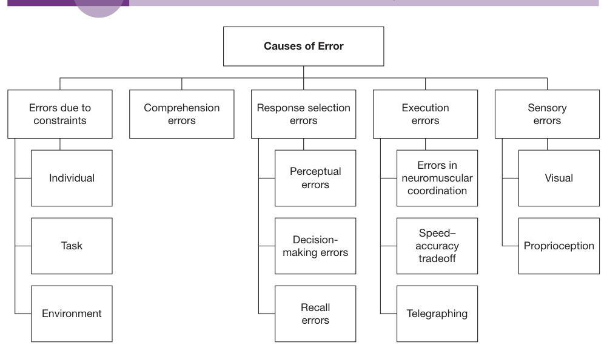
Hình 11.2: Các nguyên nhân có thể gây lỗi liên quan đến học vận động và kiểm soát vận động
- Nguyên nhân gây lỗi
- Lỗi do ràng buộc
- Cá nhân
- Nhiệm vụ
- Môi trường
- Lỗi hiểu
- Lỗi chọn đáp án
- Lỗi nhận thức
- Lỗi ra quyết định
- Lỗi nhớ lại
- Lỗi thực hiện
- Lỗi phối hợp thần kinh cơ
- Đánh đổi tốc độ–độ chính xác
- Tiết lộ ý định
- Lỗi cảm giác
- Thị giác
- Cảm giác tự thân
Lỗi Do Ràng Buộc Cá Nhân, Nhiệm Vụ Hoặc Môi Trường
Ràng buộc định hình hành vi. Theo đó, lỗi có thể phát sinh như hệ quả của nhiệm vụ hoặc môi trường so với mức độ phát triển cá nhân của người thực hiện. Ví dụ, một lỗi phổ biến mà người học nhỏ tuổi mắc phải khi thực hiện cú ném phạt (free throw) là đẩy bóng theo kiểu ném tạ (shot put). Kiểu chuyển động không chính thống này xuất hiện không phải vì người học không hiểu kỹ thuật đúng, mà vì đó là cách duy nhất họ có thể tạo đủ lực để đưa bóng vào rổ được đặt quá cao. Khi người thực hành hạ rổ xuống để phù hợp với mức độ phát triển của người học, lỗi đó nhiều khả năng sẽ được khắc phục.
Thiết bị cũng có thể tạo ra các lỗi vận động không mong muốn. Một cây gậy quá nặng sẽ làm thay đổi kiểu vung của người học; nạng (crutches) được điều chỉnh không phù hợp sẽ gây vấn đề cho việc di chuyển (locomotion) của bệnh nhân; và tốc độ của máy chạy bộ có thể quyết định độ dài và tần số bước chân của người dùng.

Hình 11.3: Nếu không được điều chỉnh phù hợp, nạng có thể gây lỗi trong di chuyển
Lỗi cũng có thể phát sinh từ cấu trúc của một nhiệm vụ hoặc bài tập. Ví dụ, ở độ tuổi 5 hoặc 6, hệ thống thị giác phát triển đến mức có thể theo dõi hiệu quả các vật thể chuyển động trong mặt phẳng ngang (Payne & Isaacs, 2020). Tuy nhiên, phải đến giữa độ tuổi 8 và 9, trẻ mới có thể theo dõi một quả bóng bay theo đường cong (Morris, 1980). Việc thường xuyên ném bóng với quỹ đạo cong cao để cho trẻ có thêm thời gian chạy vào vị trí dưới bóng thực chất lại làm nhiệm vụ khó hơn nhiều và giảm cơ hội bắt bóng thành công của người học.
QUAN NIỆM SAI PHỔ BIẾN
Khi dạy trẻ cách bắt bóng, bạn nên ném bóng với quỹ đạo cong cao để cho trẻ có đủ thời gian theo dõi và chạy vào vị trí bên dưới quả bóng nhằm bắt thành công.
Thay vào đó, nên ném bóng thẳng về phía trẻ để phù hợp với sự phát triển thị giác của trẻ, cho đến khi người học được khoảng 8 hoặc 9 tuổi. Những lỗi khác sẽ phát sinh khi môi trường thay đổi từ môi trường đóng, chẳng hạn đánh bóng trên giá đặt sẵn (tee), sang môi trường mở hơn, chẳng hạn đánh một cú ném tới. Người thực hành nên kỳ vọng thấy thực hiện suy giảm khi người học thích nghi với những yêu cầu mới đặt ra cho họ. Tuy nhiên, sự lặp lại kéo dài của lỗi mà không có dấu hiệu thích nghi có thể cho thấy yêu cầu của nhiệm vụ mới đang vượt quá năng lực hiện tại của người học. Trong những trường hợp như vậy, người thực hành có thể phải quay lại cho người học luyện tập kỹ năng trong một môi trường đóng hơn trong một khoảng thời gian.
CEREBRAL CHALLENGE 11.2 — Thử Thách Trí Não
Hãy liệt kê những lỗi vận động có thể xảy ra trong thể thao hoặc phục hồi chức năng do kích thước thiết bị, vật thể hoặc dụng cụ không phù hợp.
Sợ hãi cũng có thể là nguồn gốc gây lỗi. Người mới học bơi thường sợ nước. Nỗi sợ bóng có thể trúng mình đóng vai trò trong việc bắt và đánh bóng. Nỗi sợ độ cao hoặc sợ ngã phải được khắc phục trước khi người học có thể thực hiện đúng động tác dây leo (rappel), nhảy trượt tuyết (ski jump) hoặc leo núi đá. Hơn nữa, người thực hiện có thể thay đổi kỹ thuật nếu họ sợ tái chấn thương một chi bị thương vừa được phục hồi. Cuối cùng, một dạng sợ hãi khác — nỗi sợ thất bại — có thể có tác động tiêu cực đến thực hiện. Để đối phó với nỗi sợ này, người thực hành nên đưa vào việc đặt mục tiêu, tạo cơ hội cho mọi người học trải nghiệm thành công trong luyện tập, và tạo ra một môi trường nơi người học không sợ mắc lỗi.
Lỗi Hiểu
Lỗi hiểu xảy ra khi người học không hiểu các yêu cầu của kỹ năng hoặc những gì được mong đợi. Những lỗi này phát sinh khi người học không hiểu đầy đủ hướng dẫn được đưa ra, có thời gian chú ý ngắn hoặc năng lực chú ý hạn chế, hoặc thiếu động lực. Trong trường hợp này, chỉ cần giải thích lại kỹ năng. Hãy chắc chắn dùng thuật ngữ phù hợp với độ tuổi và trình độ kỹ năng của người học, và tránh quá tải người học với quá nhiều thông tin. Cuối cùng, hãy kiểm tra sự hiểu biết.
Lỗi hiểu cũng có thể xảy ra khi người học đang cố sửa và tinh chỉnh kỹ năng của mình. Dù người thực hành có thể đã cho người học nhận biết về sự tồn tại của vấn đề, người học vẫn có thể không hiểu đầy đủ lỗi là gì hoặc nó được tạo ra như thế nào. Một chiến lược hữu ích trong tình huống này là quay lại thực hiện và cho người học xem họ đang làm sai điều gì. Bên cạnh đó, người học phải được hướng dẫn chú ý đến các hệ quả cảm giác của chuyển động mình nhằm phát triển khả năng phát hiện và điều chỉnh lỗi.
Các chiến lược đặt câu hỏi khuyến khích người học tự đánh giá thực hiện của mình trước khi nhận phản hồi có hiệu quả trong việc đạt được điều này và sẽ được thảo luận chi tiết ở chương sau. Mặt khác, người học có thể hiểu lỗi nhưng lại không chắc cách thực hiện một thay đổi để điều chỉnh hành vi. Ngoài việc tiếp tục trình diễn mẫu và phản hồi, hướng dẫn bằng tay hoặc một mô phỏng (simulator) có thể hữu ích trong tình huống này.

Hình 11.4: Nỗi sợ ngã có thể cản trở thực hiện của một người leo núi
Lỗi Chọn Đáp Án
Thực hiện thành công của nhiều kỹ năng vận động, chẳng hạn cú đánh trái tay trong tennis, không chỉ phụ thuộc vào cách kỹ năng được thực hiện, mà còn vào cách người thực hiện nhanh chóng và chính xác đánh giá tình huống và quyết định một đáp án. Bất kỳ sự chậm trễ nào trong các quá trình dẫn đến lựa chọn đáp án đều ảnh hưởng đến thời điểm của đáp án cũng như chất lượng của nó. Do đó, người thực hành phải có khả năng phân biệt giữa thực hiện chuyển động chậm và khởi động chuyển động chậm. Thực hiện chuyển động chậm thường nhất là kết quả của vấn đề kỹ thuật. Mặt khác, nếu chuyển động được khởi động chậm, lỗi nhiều khả năng quy cho một vấn đề nhận thức hoặc ra quyết định. Sự phân biệt này, nếu được cân nhắc, đã có thể giúp huấn luyện viên của Sally chẩn đoán nguyên nhân của lỗi đánh trái tay. Vì kỹ thuật của cô đúng và việc tăng tốc toàn bộ chuyển động không hiệu quả, bước tiếp theo lẽ ra là xem xét các chiến lược chọn đáp án của Sally.
Lỗi Nhận Thức
Trừ khi người học có thể nhanh chóng và chính xác phân biệt cái gì liên quan đến nhiệm vụ trong số vô số kích thích hiện diện trong môi trường, việc lựa chọn đáp án sẽ bị chậm trễ hoặc sai. Các lỗi vận động thường phát sinh khi người học không biết tìm manh mối nào trong môi trường, không phân biệt được giữa kích thích liên quan và không liên quan đến nhiệm vụ, hoặc tập trung chú ý vào sai manh mối. Ví dụ, một cầu thủ bóng rổ tập trung vào chuyển động đầu của đối thủ thay vì vùng giữa thân sẽ dễ bị lừa bởi một cú giả (fake).
Trong một số trường hợp, người học có thể hiểu manh mối nào là liên quan nhưng lại không nhìn vào những vùng giàu thông tin trong môi trường nơi các manh mối đó xuất hiện (Magill, 1998; Rothstein, 1986). Điều này cũng cản trở khả năng ra quyết định của người học.
Để xác định liệu bất kỳ nguyên nhân nào trong số này có phải là nguồn gốc của lỗi thời điểm của Sally hay không, huấn luyện viên của cô phải xác định được Sally có đọc đúng các tình huống thi đấu hay không. Thứ nhất, Sally có biết cần tìm manh mối then chốt nào không? Thứ hai, cô có phát hiện được thông tin đó trong khi thi đấu không? Nếu không, các chiến lược can thiệp sẽ tập trung vào những điều sau:
- Dạy các manh mối then chốt.
- Nhắc Sally chuẩn bị đáp án sớm hơn (ví dụ, bắt đầu chuẩn bị ngay khi bóng rời vợt đối thủ và đưa vợt về vị trí vung ngược (backswing) trước khi bóng chạm đất).
- Hướng sự chú ý của cô đến nơi các manh mối xuất hiện trong môi trường.
- Cung cấp nhiều cơ hội luyện tập trong nhiều tình huống khác nhau có chứa các manh mối phổ biến liên quan đến nhiệm vụ.
Mức độ hưng phấn (arousal) cũng có thể dẫn đến lỗi nhận thức, vì nó ảnh hưởng đến độ thành thạo trong đánh giá của người học. Như đã lưu ý trong Chương 3, khi mức độ hưng phấn quá thấp, tiêu điểm chú ý trở nên quá rộng; người học khi đó không thể chỉ tập trung vào các manh mối liên quan đến nhiệm vụ. Mặt khác, khi mức độ hưng phấn tăng đến mức người học trở nên quá hưng phấn, tiêu điểm chú ý trở nên hẹp đến mức người học có thể không còn khả năng quét môi trường hiệu quả, khiến các kích thích có ý nghĩa tiềm ẩn không được phát hiện. Cả hai tình huống đều có thể dẫn đến đáp án không chính xác, vì người thực hiện thiếu thông tin cần thiết để ra quyết định phù hợp.
CEREBRAL CHALLENGE 11.3 — Thử Thách Trí Não
Bạn đang dạy cầu lông cho một lớp giáo dục thể chất lớp bảy. Bạn đã cùng các em luyện cú phát bóng dài và nhận thấy nhiều em gặp khó khăn trong việc đánh cầu sau khi thả cầu. Hãy liệt kê những lý do có thể khiến các em đánh trượt cầu và đưa ra gợi ý để khắc phục vấn đề.
Lỗi Ra Quyết Định
Nhiều lỗi phát sinh từ vấn đề ra quyết định. Một người học đánh giá sai vận tốc, hướng, độ cao, trọng lượng, khoảng cách, quỹ đạo của một vật thể, hoặc vị trí của đối thủ hay đồng đội, có thể chọn sai đáp án hoặc chọn đúng chuyển động nhưng áp dụng sai thông số điều khiển cho tình huống. Việc chú ý đến các kích thích không liên quan đến nhiệm vụ, chẳng hạn bị lừa bởi một cú giả đầu, cũng có thể gây chậm trễ tạm thời trong việc đáp án. Hơn nữa,
dự đoán sai thời điểm một vật thể, một người hoặc một tín hiệu âm nhạc xuất hiện có thể khiến người học khởi động chuyển động sai thời điểm và đáp án quá sớm hoặc quá muộn. Một lần nữa, những lỗi ra quyết định này có thể được khắc phục bằng cách tăng khả năng của người thực hiện trong việc xác định và định vị các manh mối then chốt, và bằng cách giúp người thực hiện phát triển mối quan hệ nhân–quả chặt chẽ hơn giữa một manh mối cụ thể và đáp án phù hợp.
Chậm trễ đáp án có thể xảy ra nếu người học không giảm được số lựa chọn đáp án. Theo Định luật Hick (Hick's Law), mức độ bất định càng cao trong một tình huống thì người học càng mất nhiều thời gian để quyết định nên đáp án nào. Nhiều vấn đề ra quyết định có thể được giải quyết bằng cách giảm số lựa chọn đáp án có thể có. Người học nên được hướng dẫn cách tìm một cách có hệ thống các đặc điểm thực hiện then chốt trong một tình huống nhất định, như một tiền vệ (quarterback) làm trong một pha tấn công theo lựa chọn (option play). Tăng khả năng của người học trong việc nhận diện các yếu tố dự báo tiềm ẩn, chẳng hạn xu hướng của đối thủ hoặc của tình huống, cũng giúp giảm bất định. Ví dụ, nếu Sally biết rằng bất cứ khi nào đối thủ gặp khó khăn trong thi đấu, cô ấy sẽ đánh bóng vào cú trái tay của Sally, thì Sally có thể chuẩn bị tốt hơn cho cú đánh sắp tới.
CEREBRAL CHALLENGE 11.4 — Thử Thách Trí Não
Trong suốt một buổi tổng dượt, một vũ công liên tục không khớp nhịp với phần còn lại của đoàn. Hãy đề xuất những lý do có thể gây ra tình trạng này và đưa ra gợi ý để khắc phục vấn đề.
CEREBRAL CHALLENGE 11.5 — Thử Thách Trí Não
Một vận động viên liên tục bị vượt qua khi chơi phòng thủ cá nhân. Bạn sẽ nhìn vào những gì để xác định lý do người học này không thể bám sát nhiệm vụ được giao? Bạn có thể đưa ra khuyến nghị gì để khắc phục vấn đề?
Lỗi Nhớ Lại
Người học thường gặp khó khăn trong việc nhớ các chuyển động và chiến lược vì khoảng cách thời gian giữa các buổi luyện tập. Một số người học thậm chí còn quên ngay những gì người hướng dẫn vừa bảo họ thử đưa vào lần thử tiếp theo.
Đôi khi, người học không thể nhớ lại cần làm gì trong một tình huống nhất định. Ví dụ, trong bóng đá, người học nhỏ tuổi được dạy chơi đúng vị trí của mình, nhưng trong sự phấn khích của trận đấu, nhiều em quên vị trí và chạy theo bóng. Thường thì người học có khả năng thực hiện đúng chuyển động nhưng
chỉ đơn giản là quên làm nó vào thời điểm thích hợp. Nhắc nhở cùng các chiến lược đặt câu hỏi tập trung chú ý, chẳng hạn “Lần này con sẽ tập trung vào gì?”, thường là đủ để khắc phục các lỗi do quên.
Lỗi Thực Hiện
Đôi khi người học chọn đúng đáp án cho một tình huống nhưng không thể thực hiện đáp án đó một cách chính xác. Ví dụ, một cầu thủ racquetball có thể chọn đúng cú đánh kết thúc (kill shot) trong một tình huống nhất định nhưng lại đánh hư bóng. Các lỗi thực hiện xảy ra vì nhiều lý do, bao gồm luyện tập chưa đủ và thực hiện chuyển động quá nhanh.
Lỗi Phối Hợp Thần Kinh Cơ
Người thực hành phải có khả năng phân biệt giữa điều người học có thể làm và điều họ biết (Christina & Corcos, 1988). Thường thì lỗi vận động xảy ra không phải vì thiếu hiểu biết, mà vì người học chưa có đủ thời gian luyện tập để thiết lập sự phối hợp thần kinh cơ phù hợp (Wang & Griffin, 1998). Trong những trường hợp như vậy, lỗi nhiều khả năng sẽ được khắc phục khi có thêm cơ hội luyện tập. Tuy nhiên, trong một số trường hợp, người học không có năng lực nền tảng cần thiết để phát triển mức độ thành thạo cao hoặc thiếu các điều kiện thể chất tiên quyết để hoàn thành nhiệm vụ hay một thành phần của nhiệm vụ. Nếu vấn đề bắt nguồn từ một khiếm khuyết thể chất, chẳng hạn mức sức mạnh không đủ hay tầm vận động kém, thì trước tiên phải giải quyết khiếm khuyết đó. Nói cách khác, người học sẽ phải cải thiện sức mạnh hoặc tầm vận động trước khi có thể thực hiện đúng kỹ năng. Nếu vấn đề bắt nguồn từ một phẩm chất thể chất do di truyền quyết định, thì luyện tập thêm sẽ không mang lại lời giải.
Vấn đề phối hợp thần kinh cơ sẽ phát sinh khi người học cố thay thế một kiểu chuyển động đã hình thành bằng một kiểu mới. Trong suốt quá trình này, chuyển giao tiêu cực sẽ xảy ra, theo đó kiểu đã học trước đó cản trở việc tiếp thu chuyển động mới. Lỗi sẽ phát sinh không phải vì thiếu hiểu biết hay năng lực, mà vì chuyển giao tiêu cực phải được khắc phục. Điều này, đương nhiên, cần thời gian và luyện tập. Chuyển giao tiêu cực cũng có thể xảy ra giữa hai kỹ năng có bản chất tương tự nhau, chẳng hạn cú vung gậy golf và cú vung gậy bóng chày. Lỗi phối hợp sẽ phát sinh khi một cá nhân có kinh nghiệm ở một kỹ năng cố giải quyết những điểm giống và khác với một kỹ năng khác.
Cuối cùng, sự phối hợp thần kinh cơ có thể bị suy giảm khi người học cố ý chú ý đến các chi tiết của một kỹ năng thường được thực hiện tự động. Việc chú ý đến các thành phần chuyển động vốn được thực hiện tự động làm gián đoạn dòng chảy bình thường của chuyển động. Điều này có thể thấy khi người lần đầu dùng máy chạy bộ được bảo hãy đi bộ như cách họ thường làm. Kiểu dáng đi của họ sẽ thay đổi cho đến khi họ thấy thoải mái với thiết bị và không còn nghĩ về cách họ đi bộ bình thường nữa.
Đánh Đổi Tốc Độ–Độ Chính Xác
Kết quả thực hiện có thể bị ảnh hưởng bởi sự đánh đổi giữa tốc độ và độ chính xác (speed–accuracy tradeoff). Ví dụ, nếu cú ném kiểu cối xay gió (windmill pitch) được thực hiện quá nhanh, cầu thủ ném sẽ mất độ chính xác và gặp khó khăn đưa bóng vào vùng strike. Tương tự, các kiểu chuyển động sẽ không được thực hiện chính xác nếu bệnh nhân thực hiện bài tập phục hồi quá nhanh. Chỉ bằng cách làm chậm lại việc thực hiện chuyển động, người học có thể khắc phục lỗi.
Tuy nhiên, trong những trường hợp liên quan đến độ chính xác về thời gian, việc tăng tốc chuyển động lại có thể giảm lỗi. Trong tình huống mở đầu chương, lời khuyên của huấn luyện viên Sally là tăng tốc cú vung là tốt, nhưng khi tăng tốc không khắc phục được lỗi thì huấn luyện viên lẽ ra phải tiếp tục tìm kiếm các nguyên nhân tiềm ẩn khác.
CEREBRAL CHALLENGE 11.6 — Thử Thách Trí Não
Hãy liệt kê những tình huống mà người học có thể giành lợi thế bằng cách che giấu một động tác sắp tới. Tiếp theo, hãy liệt kê những cách mà người học có thể vô tình tiết lộ ý định, cho phép đối thủ dự đoán động tác sắp tới.
Tiết Lộ Ý Định
Trong thi đấu, thành công có thể phụ thuộc vào khả năng của người thực hiện giành lợi thế trước đối thủ. Một cách giành lợi thế là tăng mức độ bất định của đối thủ trong tình huống, khiến phản án của đối thủ bị chậm lại. Lợi thế này có thể bị mất nếu đối thủ đoán đúng sự kiện sẽ xảy ra và thời điểm xảy ra. Ví dụ, lý do cú phát bóng của một người học luôn bị trả về dễ dàng có thể là người học đó đang tiết lộ ý định của mình — tức là “báo hiệu” (telegraphing) — cho phép đối thủ chuẩn bị trước. Người học phải được hướng dẫn cách che giấu ý định của mình.
Lỗi Cảm Giác
Lỗi có thể phát sinh từ những hạn chế của các cơ chế cảm giác trong thực hiện vận động. Xét tầm quan trọng của thị giác và cảm giác tự thân cả trong nhận thức lẫn trong phản hồi do đáp án tạo ra, thì sự can thiệp vào đóng góp của chúng có thể cản trở học tập và thực hiện.
Lỗi Thị Giác
Theo Knudson và Kluka (1997), lỗi vận động có thể phát sinh khi yêu cầu thị giác của môn thể thao vượt quá những gì có thể về mặt thể chất. Ví dụ, một người học có thể không thấy các manh mối quan trọng vì cô đang chớp mắt hoặc vì sự kiện diễn ra quá nhanh. Bóng râm có thể gây rối loạn cho hệ thống thị giác
GHI CHÚ NGHIÊN CỨU
Một số nhà nghiên cứu đã đề xuất rằng tồn tại mối quan hệ giữa loại giày dép được mang và dáng đi cùng thăng bằng ở người cao tuổi (Sudarsky, 1990; Wasson et al., 1990). Theo Waked, Robbins và McClaran (1997), mối quan hệ này bắt nguồn từ ảnh hưởng của giày đối với cảm giác tự thân. Mười ba tình nguyện viên nam cao tuổi đã đi trên một thanh thăng bằng (cao 3,9 cm, rộng 7,8 cm, dài 9 m), một lần khiêng chân trần và sau đó sáu lần khi mang giày giống hệt nhau ngoại trừ độ dày và độ cứng của đế giữa. Các thước đo gồm tần suất thất bại thăng bằng, sai số vị trí chân và nhận biết vị trí chân. Kết quả cho thấy (1) độ ổn định và nhận biết vị trí chân có liên quan với nhau, (2) khi đế giữa dày hơn thì sai số vị trí chân cũng tăng, và (3) đế giữa cứng hơn dẫn đến ít sai số vị trí chân hơn. Dựa trên những kết quả này, các nhà nghiên cứu kết luận rằng độ dày và độ cứng của đế giày ảnh hưởng đến nhận biết vị trí chân, từ đó tác động đến độ ổn định. Điều thú vị là người cao tuổi lại có xu hướng thích giày chạy bộ mềm và dày. Do đó, các vấn đề thăng bằng ở người cao tuổi có thể là hệ quả của sở thích chọn giày của họ.
và ảnh hưởng đến thực hiện. Một điểm quan sát không phù hợp có thể che khuất tầm nhìn của người học. Các vật che khuất cũng có thể được sắp đặt có chủ đích, chẳng hạn trong môn khúc côn cầu khi một đồng đội cố chặn tầm nhìn của thủ môn trong lúc một đồng đội khác sút puck.
Lỗi Cảm Giác Tự Thân
Phản hồi cảm giác không chính xác phát sinh từ đau cơ–xương–khớp hoặc chấn thương ở các thụ thể khớp, cơ hoặc da có thể dẫn đến suy giảm phối hợp và kiểm soát trong chuyển động tự nguyện, cũng như phát hiện và điều chỉnh lỗi sai lệch (Hodges, 2007). Một bệnh nhân có khiếm khuyết cảm giác tự thân chẳng hạn, có thể thiếu khả năng kiểm soát khi thực hiện các nhiệm vụ hằng ngày. Trong trường hợp này, thiết bị có thể được điều chỉnh, chẳng hạn mở rộng cán dụng cụ nhà bếp để tăng cảm giác “chạm” và giúp dễ kiểm soát hơn.
Khiếm khuyết cảm giác tự thân cũng có thể gây ra “phản ứng phản xạ bị chậm lại do thời gian cần thiết để đạt đến ngưỡng phát hiện chuyển động tăng lên” (Hodges, 2007, tr. 121). Sự chậm trễ này ảnh hưởng đến thực hiện và cũng có thể làm tăng nguy cơ chấn thương hoặc tái chấn thương, chẳng hạn khi một người chạy bộ địa hình không thể thực hiện liên tục những điều chỉnh nhỏ cần thiết để giữ thăng bằng khi chạy trên mặt đất gồ ghề.
CÓ NÊN SỬA LỖI HAY KHÔNG?
Christina và Corcos (1988) đề xuất rằng khi bản chất của lỗi đã được xác định, người thực hành nên cân nhắc ba câu hỏi trước khi sửa nó. Những câu hỏi này liên quan đến năng lực của người học, thời gian và động lực (xem Hình 11.5).
Chương 11 — Chẩn Đoán Lỗi: Có Nên Sửa Lỗi Hay Không?
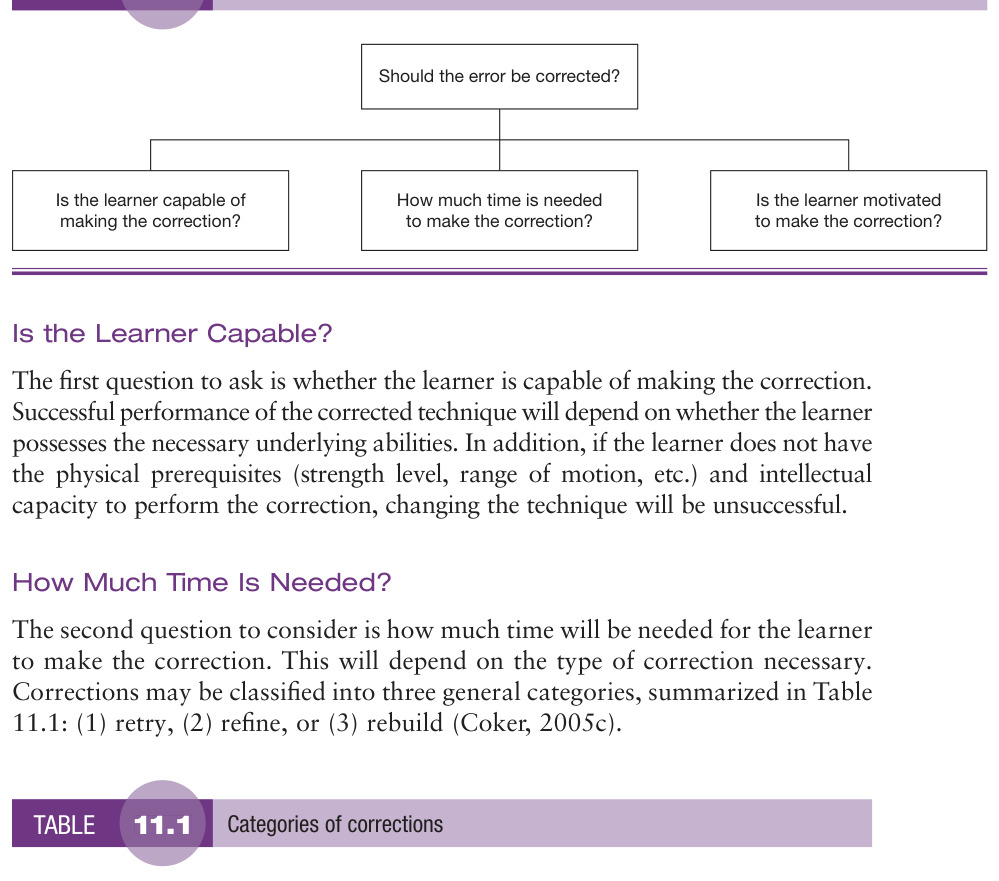
Hình 11.5: Các quyết định cần đưa ra để xác định có nên sửa một lỗi hay không
- Người học có đủ năng lực thực hiện điều chỉnh không?
- Cần bao nhiêu thời gian để thực hiện điều chỉnh?
- Người học có động lực thực hiện điều chỉnh không?
Người Học Có Đủ Năng Lực Không?
Câu hỏi đầu tiên cần đặt ra là liệu người học có đủ năng lực thực hiện điều chỉnh hay không. Thực hiện thành công kỹ năng đã được điều chỉnh sẽ phụ thuộc vào việc người học có sở hữu các năng lực nền tảng cần thiết hay không. Bên cạnh đó, nếu người học không có các điều kiện thể chất tiên quyết (mức sức mạnh, tầm vận động, v.v.) và năng lực trí tuệ để thực hiện điều chỉnh, thì việc thay đổi kỹ thuật sẽ không thành công.
Cần Bao Nhiêu Thời Gian?
Câu hỏi thứ hai cần cân nhắc là người học sẽ cần bao nhiêu thời gian để thực hiện điều chỉnh. Điều này phụ thuộc vào loại điều chỉnh cần thiết. Các điều chỉnh có thể được phân loại thành ba nhóm lớn, tóm tắt trong Bảng 11.1: (1) thử lại, (2) tinh chỉnh, hoặc (3) xây lại (Coker, 2005c).
BẢNG 11.1
Danh mục các kiểu điều chỉnh
- Thử lại (Retry): Sửa đổi đơn giản một khuôn mẫu đã hình thành; dễ sửa; cần rất ít hoặc không cần học tập; có thể thay đổi nhanh; ít hoặc không có tác động bất lợi đến thực hiện.
- Tinh chỉnh (Refine): Cải thiện một khuôn mẫu đã hình thành; cần nỗ lực vừa phải để sửa; cần một lượng học tập hợp lý; cần nhiều mức độ thời gian khác nhau; thực hiện giảm sút ban đầu.
- Xây lại (Rebuild): Khuôn mẫu hoàn toàn mới; khó sửa; cần học tập sâu rộng; cần rất nhiều thời gian; tác động tiêu cực đến thực hiện lúc đầu; chuyển giao tiêu cực; gây bực bội.
Trích từ Coker, C. A. (2005c). Correcting faulty mechanics: To fix or not to fix? Strategies, 19(1), 29–31. Được in lại với sự cho phép của Hội Giáo dục Thể chất và Sức khỏe (http://www.shapeamerica.org).
Trong những trường hợp kiểu phối hợp đã đúng và sự thay đổi chỉ đơn giản là điều chỉnh cách thực hiện, người học có thể chỉ cần thử lại kỹ năng. Ví dụ, các lỗi xảy ra do quên có thể dễ dàng được khắc phục bằng nhắc nhở. Tương tự, những thay đổi trong kiểm soát chuyển động, chẳng hạn tăng tốc độ thực hiện, là tương đối dễ áp dụng. Một cầu thủ racquetball có thể chỉ cần vung cổ tay nhanh hơn khi chạm bóng để tăng hiệu quả của cú đánh kết thúc, hoặc một bệnh nhân có thể phải điều chỉnh vị trí đặt gậy khi đi lại. Thông qua gợi ý chú ý, những lỗi này có thể được giải quyết tương đối nhanh và với ít hoặc không có tác động bất lợi đến thực hiện.
Những điều chỉnh khác liên quan đến việc tinh chỉnh một kiểu phối hợp đang hình thành. Ví dụ, một lỗi phổ biến trong kiểu bơi tự do là hạ khuỷu tay trong giai đoạn đưa tay về phía trước (recovery), thường là hệ quả của việc duỗi tay quá mức trước khi đưa tay xuống nước. Để sửa lỗi này, người học phải phát triển thêm kiểu chuyển động hiện có. Thực hiện sẽ có phần không ổn định lúc đầu khi người bơi học cách tinh chỉnh thời điểm và sự phối hợp của kỹ năng. Kiểu điều chỉnh này có thể mất vài tuần, vài tháng, hoặc trong một số trường hợp còn lâu hơn (Melville, 1988).
Những điều chỉnh liên quan đến thay đổi căn bản một kỹ năng đã được học kỹ là tốn thời gian nhất. Người học không chỉ phải quay lại giai đoạn nhận thức của việc học, mà chuyển giao tiêu cực sẽ xảy ra giữa kỹ năng đã học trước đó và kỹ năng được điều chỉnh. Hệ quả là, kiểu phối hợp phải được xây dựng lại, một quá trình đòi hỏi luyện tập đáng kể. Phân tích chi phí–lợi ích có thể cho thấy thời gian dành để học lại một kỹ năng cơ bản là không xứng đáng. Thay vào đó, việc luyện tập các chiến lược, tình huống và/hoặc kỹ năng thi đấu có thể quan trọng hơn và/hoặc hiệu quả hơn về mặt thời gian. Hơn nữa, thời điểm là tất cả. Nếu một điều chỉnh như vậy được thực hiện hai tuần trước một cuộc thi lớn, kết quả có thể thảm hại.
CEREBRAL CHALLENGE 11.7 — Thử Thách Trí Não
a. Hãy xác định và liệt kê năm lỗi phổ biến liên quan đến một kỹ năng bạn chọn. Với mỗi lỗi được liệt kê, hãy xác định kiểu điều chỉnh tương ứng là (1) thử lại, (2) tinh chỉnh, hay (3) xây lại.
b. Khi huấn luyện một đội bóng đá varsity cấp trường trung học, bạn nhận thấy một vận động viên có lỗi căn bản trong kỹ thuật. Em ấy là học sinh cuối cấp và không có cơ hội nhận học bổng bóng đá đại học. Bạn có sửa lỗi đó không? Những cân nhắc nào đã dẫn đến quyết định của bạn?
Người Học Có Động Lực Sửa Lỗi Không?
Câu hỏi cuối cùng cần giải quyết là liệu người học có động lực thực hiện điều chỉnh hay không. Trong một số trường hợp, người học không tin rằng việc điều chỉnh là quyết định đúng. Ngoài ra, nếu điều chỉnh liên quan đến
việc hình thành một kiểu phối hợp mới, thực hiện sẽ xấu đi trước khi tốt lên, và người học sẽ phải đầu tư đáng kể thời gian và luyện tập để theo đuổi sự thay đổi đến cùng. Người thực hành phải chắc chắn rằng người học đã sẵn sàng và sẵn lòng chấp nhận thách thức này.
ĐƯA VÀO THỰC TIỄN
Tình Huống Học Tập: Học Đường Chuyền Gián Tiếp Trong Khúc Côn Cầu
Nhận puck cũng quan trọng như thực hiện một đường chuyền tốt. Jennifer quan sát thấy một trong các cầu thủ gặp khó khăn trong việc nhận bóng vì puck liên tục bật ra khỏi gậy. Cậu có vẻ ở đúng vị trí nhưng hoặc là chưa sẵn sàng khi puck đến, hoặc là giữ cổ tay quá cứng, khiến puck bật ra khỏi lưỡi gậy.
Kiểm Tra Kiến Thức
Hãy mô tả bản chất của hai lỗi có thể được xác định ở trên theo thuật ngữ học vận động. Bạn sẽ chẩn đoán thế nào để biết đâu là nguyên nhân thực sự của vấn đề quan sát được nhằm chọn chiến lược can thiệp phù hợp để khắc phục? Hãy so sánh câu trả lời của bạn với câu trả lời mẫu tại www.routledge.com/cw/coker.
NHÌN VỀ PHÍA TRƯỚC
Khi một lỗi đã được phát hiện, nguyên nhân đã được xác định và quyết định sửa nó đã được đưa ra, bước tiếp theo là xây dựng các chiến lược can thiệp hiệu quả nhằm nâng cao trình độ kỹ năng và thực hiện. Những chiến lược sửa lỗi này, cùng với các nguyên lý và hướng dẫn cho việc lựa chọn và triển khai chúng, sẽ được khám phá trong chương tiếp theo.
ĐIỂM NHẤN
Sau khi đọc chương này, bạn nên biết rằng:
- Khi chẩn đoán lỗi, người thực hành có xu hướng tập trung vào kết quả của vận động và chỉ cung cấp phản hồi về những khía cạnh kỹ thuật có thể quan sát được của kỹ năng, nhưng nhiều lỗi có thể quy cho những khiếm khuyết trong học vận động.
- Khi tiến hành quan sát, người thực hành nên xác định mục đích và các yếu tố then chốt của kỹ năng, xác định góc nhìn tối ưu, quyết định số lần thử cần quan sát trước khi đưa ra phán đoán về chất lượng thực hiện, và chọn có ghi hình hay không.
- Lỗi có thể phát sinh do ràng buộc cá nhân, nhiệm vụ hoặc môi trường.
- Lỗi hiểu xảy ra khi người học không hiểu các yêu cầu của kỹ năng hoặc những gì được mong đợi.
- Lỗi lựa chọn có thể phát sinh từ vấn đề đánh giá môi trường để tìm manh mối liên quan đến nhiệm vụ, ra quyết định sai, hoặc quên.
- Lỗi thực hiện có thể xảy ra khi người học chưa có đủ thời gian thiết lập sự phối hợp thần kinh cơ phù hợp, khi chuyển động được thực hiện quá nhanh, hoặc khi người học tiết lộ ý định, cho phép đối thủ dự đoán các động tác của mình.
- Lỗi ra quyết định và kiểm soát vận động có thể phát sinh từ khó khăn với thị giác và cảm giác tự thân.
- Việc có nên sửa một lỗi hay không phụ thuộc vào năng lực của người học trong việc thực hiện điều chỉnh, lượng thời gian sẵn có và mức độ động lực.
PHÒNG THÍ NGHIỆM
Để hoàn thành bài thí nghiệm của chương này, hãy truy cập www.routledge.com/cw/coker và chọn Lab 11, Skill Analysis (Phân Tích Kỹ Năng).
CÂU HỎI ÔN TẬP
- Hãy thảo luận vì sao việc xác định nguyên nhân tiềm ẩn của một lỗi được quan sát lại quan trọng.
- Hãy liệt kê và giải thích ba hạn chế có thể có khi dùng quan sát để đánh giá thực hiện.
- Cần đưa ra bốn quyết định nào khi lập kế hoạch quan sát?
- Khi nào bạn sẽ dùng video để ghi lại thực hiện của người học?
- Sau khi phát hiện một lỗi, người thực hành nên luôn đặt câu hỏi gì?
- Khi làm việc với trẻ em, vì sao việc điều chỉnh kích thước thiết bị lại có ích? Hãy nêu một ví dụ để ủng hộ câu trả lời của bạn.
- Những chiến lược nào có thể hữu ích để giúp một người học đang mắc lỗi hiểu? Hãy giải thích đầy đủ câu trả lời của bạn.
- Các lỗi liên quan đến lựa chọn đáp án được chia thành ba nhóm. Hãy liệt kê và giải thích từng nhóm.
- Người thực hành nên cân nhắc những gì để quyết định có sửa một lỗi vận động hay không?
- Cần bao nhiêu thời gian để thực hiện một điều chỉnh kiểu “xây lại”?
Chương 12 — Sửa Lỗi
Mã DOI: 10.4324/9781003039716-12.
“Trông cú đó thế nào?” nữ vũ công hỏi. “Tôi nghĩ lần này mình đã giữ được khung chậu thẳng hàng.” Những câu hỏi như vậy rất phổ biến, vì người học thường tìm đến người thực hành để nhận phản hồi. Theo Chen (2001), phản hồi đó là hình thức hướng dẫn quan trọng nhất mà người thực hành có thể cung cấp cho người học. Nhưng phản hồi không phải là chiến lược can thiệp duy nhất có thể dùng để sửa lỗi. Cải thiện thực hiện cũng có thể đạt được thông qua việc thao tác chiến lược với các biến số của nhiệm vụ và/hoặc của luyện tập.
Chương này sẽ thảo luận các chiến lược can thiệp đa dạng mà người thực hành có thể dùng để tinh chỉnh kỹ năng. Hãy nhớ lại mô hình tích hợp đã trình bày trong Chương 1: người học, nhiệm vụ và môi trường nên được cân nhắc khi chọn chiến lược triển khai trong một tình huống cụ thể.
CÁC LOẠI PHẢN HỒI
Phản hồi là thuật ngữ chung dùng để chỉ thông tin mà một người học nhận được về chính thực hiện của mình đối với một vận động hay kỹ năng. Thông tin này có thể đến từ cả nguồn bên trong (nội tại) lẫn bên ngoài (bổ sung) (xem Hình 12.1). Phản hồi nội tại là thông tin do đáp án tạo ra, sẵn có cho người học thông qua các hệ thống cảm giác của họ, cả trong lúc thực hiện lẫn như hệ quả của thực hiện; bao gồm thị giác, thính giác, cảm giác tự thân và xúc giác. Ví dụ gồm một cầu thủ ném bóng nhìn quỹ đạo của bóng sau khi buông tay, hoặc một vận động viên thể dục dụng cụ trên xà đơn cảm thấy mình đang mất thăng bằng. Phản hồi bổ sung là thông tin nhận được từ một nguồn bên ngoài, bổ sung cho thông tin cảm giác của chính người học. Ví dụ về phản hồi bổ sung gồm lời nhận xét của người thực hành;
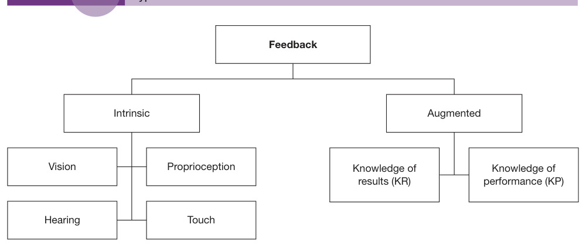
Hình 12.1: Các loại phản hồi
- Phản hồi
- Nội tại (Intrinsic)
- Cảm giác tự thân
- Thị giác
- Xúc giác
- Thính giác
- Bổ sung (Augmented)
- Tri thức về kết quả (KR)
- Tri thức về thực hiện (KP)
- Nội tại (Intrinsic)
một đoạn video phát lại cảnh người học thực hiện một kỹ năng; và khoảng cách, thời gian hoặc điểm số thu được từ thực hiện do một trọng tài chính thức công bố. Nhìn chung, thông tin bổ sung được trình bày cho người học sau khi chuyển động hoàn tất và vì thế được gọi là phản hồi cuối (terminal feedback). Đôi khi phản hồi bổ sung lại được cung cấp trong lúc kỹ năng đang được thực hiện. Khi đó nó được gọi là phản hồi đồng thời (concurrent feedback). Khi một huấn luyện viên hô vang thời gian chia đoạn cho một vận động viên chạy bộ trong cuộc đua, hoặc một nhà trị liệu nhắc bệnh nhân giữ độ nghiêng khung chậu tốt trong lúc tập, thì đó là phản hồi vừa bổ sung vừa đồng thời.
Phản hồi bổ sung có thể được phân loại tiếp thành tri thức về kết quả hoặc tri thức về thực hiện. Tri thức về kết quả (knowledge of results, KR) là phản hồi bổ sung cung cấp cho người học thông tin về kết quả của một đáp án và quan tâm đến mức độ thành công của hành động dự định so với mục tiêu. Ví dụ, một huấn luyện viên có thể nói với một vận động viên nhảy xa rằng chân đặt của anh cách vạch xuất phát 4 cm, một nhà trị liệu có thể nói với bệnh nhân rằng tầm với chức năng của anh đã cải thiện 20 phần trăm, hoặc một huấn luyện viên cá nhân có thể ghi nhận việc khách hàng thực hiện đúng một bài tập.
Thông tin về các đặc điểm cụ thể của thực hiện đã dẫn đến kết quả được gọi là tri thức về thực hiện (knowledge of performance, KP). Báo cho một bệnh nhân biết cô cần dồn trọng lượng về phía trước nhiều hơn trước khi cố đứng dậy, nói với một học sinh rằng cú đưa khuỷu tay trong kiểu bơi tự do của em cần cao hơn, và cho một vận động viên xem video phát lại một lần thực hiện — tất cả đều là ví dụ về cung cấp tri thức về thực hiện.
CEREBRAL CHALLENGE 12.1 — Thử Thách Trí Não
Hãy xác định các phát biểu phản hồi bổ sung sau đây là ví dụ về tri thức về kết quả (KR) hay tri thức về thực hiện (KP).
- Bàn chân bạn đặt trên thanh nên nghiêng hơn một chút.
- Bạn phải cúi đầu xuống và giữ mắt nhìn vào bóng.
- Tuyệt vời! Bạn đã đứng trên bảng dao động được 28 giây.
- Theo súng radar, cú ném đó đạt tốc độ 92 dặm/giờ.
- Khi vung chân về phía trước, hãy cố nhấc các ngón chân lên.
- Bạn cần hạ tạ xuống chậm hơn.
- Nhìn vào phân bố các cú trúng, bạn đang bắn cao và sang phải.
CHỨC NĂNG CỦA PHẢN HỒI BỔ SUNG
Phản hồi bổ sung có ba chức năng chính: sửa lỗi, tạo động lực và củng cố.
Sửa Lỗi
Một vai trò của phản hồi bổ sung là cung cấp thông tin để khắc phục các lỗi thực hiện. Thông tin này có thể gồm mô tả về các khía cạnh đúng và/hoặc sai của thực hiện, giải thích tại sao một lỗi lại xảy ra, chỉ dẫn cách sửa lỗi, hoặc các chi tiết cụ thể về kết quả của thực hiện (Christina & Corcos, 1988). Thông tin này hướng dẫn người học điều chỉnh các lần thử chuyển động sau đó nhằm nâng cao tiếp thu kỹ năng và thực hiện. Kết quả này được minh họa trong Hoạt động Khám phá 12.1.
Động Lực
Phản hồi bổ sung có thể đóng vai trò tạo động lực trong quá trình học. Khi người học nhận được thông tin về thực hiện của mình, họ có thể so sánh nó với các mục tiêu đã được thiết lập từ trước để xác định tiến bộ của mình. Nếu phép so sánh đó cho thấy sự cải thiện, người học sẽ được khích lệ tiếp tục cố gắng đạt mục tiêu. Những câu như “Bạn làm được mà!” hay “Cố lên, bạn đang đi đúng hướng” cũng có thể giúp người học vượt qua những buổi luyện tập gian truân, thử thách khó khăn và các giai đoạn thực hiện đi ngang.
HOẠT ĐỘNG KHÁM PHÁ 12.1 — Tính Định Hướng Của Tri Thức Về Kết Quả (KR)
Thiết bị:
- Năm cái kẹp giấy
- Bút chì
- Một người bạn
- Bản phóng to của hình minh họa (bên phải)
- Băng bịt mắt
Quy trình: Đặt sơ đồ mục tiêu con lừa lên bàn. Bịt mắt một người. Người đó sẽ cố “gắn đuôi” (đặt một cái kẹp giấy) vào con lừa. Sau mỗi lần thử, người bạn kia tháo kẹp giấy và dùng bút chì đánh dấu vào vị trí đầu kẹp giấy đã đặt. Quá trình này lặp lại trong năm lần thử. Năm lần thử tiếp theo, người bị bịt mắt được cung cấp KR cho biết kẹp giấy đã rơi vào vòng nào và nằm ở nửa trái hay nửa phải của đường thẳng đứng kẻ qua mục tiêu. (Nếu hoàn toàn trượt mục tiêu, hãy cho biết hướng trượt.) Dùng một ký hiệu khác, người bạn sẽ đánh dấu bằng bút chì tại vị trí đầu kẹp giấy đã đặt. Sau khi cả mười lần thử hoàn tất, người bạn bị bịt mắt có thể tháo băng và nhìn kết quả.
tiếp theo
HOẠT ĐỘNG KHÁM PHÁ 12.1 — tiếp theo
Câu hỏi:
- Kết quả của hai điều kiện KR (không có KR so với có KR) so sánh với nhau thế nào?
- Hãy suy ngẫm về suy nghĩ của bạn trong hai điều kiện. Có khác biệt nào không?
- Nói chung, theo bạn trong những điều kiện nào thì việc cung cấp KR cho người học là quan trọng? Có điều kiện nào mà việc cung cấp KR lại không cần thiết không?
Củng Cố
Chức năng thứ ba mà phản hồi bổ sung có thể đảm nhận là củng cố nỗ lực của người học. Khi được dùng theo cách này, phản hồi bổ sung làm tăng khả năng một đáp án sẽ lặp lại ở những lần thử sau trong hoàn cảnh tương tự. Những lời khen như “Cố rất tốt” hay “Tiếp tục ép bóng nhé”, hoặc một cử chỉ ăn mừng như vỗ tay cao, có thể củng cố tích cực và nhờ đó làm mạnh thêm một hành vi. Tương tự, sự thỏa mãn mà người học có được từ việc được thừa nhận đã thực hiện thành công một đáp án có thể khơi gợi mong muốn lặp lại
GHI CHÚ NGHIÊN CỨU
Chấn thương do căng thẳng lặp lại có thể phát sinh từ các lực va chạm như những lực xảy ra trong chuỗi nhảy–tiếp đất khi đập bóng. Cronin, Bressel và Finn (2008) đã điều tra xem một buổi duy nhất cung cấp phản hồi bổ sung về kỹ thuật tiếp đất có giảm được lực va chạm trong cú đập bóng chuyền hay không. Sau năm lần nhảy luyện tập để làm quen với quy trình, 15 nữ vận động viên bóng chuyền liên trường hạng nhất đã thực hiện năm cú đập chuẩn với kiểu chạy bốn bước, tiếp đất bằng cả hai chân, trong đó một chân tiếp đất lên bàn đo lực. Sau các cú nhảy chuẩn, các nhà nghiên cứu tiến hành một buổi can thiệp kéo dài hai phút, trong đó người tham gia quan sát huấn luyện viên trình diễn kỹ thuật tiếp đất đúng — nhấn mạnh động tác mũi chân–gót chân, tiếp đất đều trên cả hai chân và gập gối gần 90 độ để hấp thụ lực tiếp đất. Sau đó, người tham gia được năm lần nhảy luyện tập kèm phản hồi từ huấn luyện viên về động học chi. Sau khi can thiệp, người tham gia thực hiện thêm năm cú nhảy kiểm tra mà không có hướng dẫn hay phản hồi. Phản hồi bổ sung được thấy làm giảm lực phản ứng mặt đất thẳng đứng tới 23,6 phần trăm, một mức giảm có ý nghĩa. Vì vậy, nghiên cứu này chứng minh rằng một buổi phản hồi bổ sung duy nhất có tác động ngay lập tức trong việc giảm lực va chạm khi tiếp đất.
Câu hỏi: Trong nghiên cứu này, một bài kiểm tra sau đã được dùng để xem xét tác động của phản hồi bổ sung trong việc giảm lực va chạm lúc tiếp đất. Bạn có gợi ý gì để xác định những kết quả này có bền vững không? Nói cách khác, làm thế nào để bạn thấy liệu can thiệp có tác động dài hạn hay không?
đáp án thành công đó. Việc loại bỏ một hệ quả tiêu cực cũng có thể củng cố hành vi. Nếu bạn đã học lái xe với hộp số tay, có lẽ bạn đã trải nghiệm cái gọi là củng cố tiêu cực. Cho đến khi người mới học biết phối hợp các chuyển động khi sang số, chiếc xe sẽ giật cục hoặc tắt máy. Vì người học muốn tránh kết quả đáng xấu hổ đó, củng cố tiêu cực đóng vai trò làm mạnh thêm chuyển động phối hợp mong muốn.
NGUỒN CỦA PHẢN HỒI BỔ SUNG
Có lẽ những nguồn phản hồi bổ sung phổ biến nhất là mô tả bằng lời và các buổi trình diễn mẫu. Tuy nhiên, phản hồi có thể được truyền tải bằng nhiều cách khác.
Nguồn Thính Giác
Trong nhiều trường hợp, phản hồi bổ sung mang dạng thính giác. Ví dụ, các âm thanh phát sinh từ việc thực hiện kỹ năng có thể giúp người học đánh giá thực hiện của họ. Thông tin về nhịp điệu có thể được truyền qua vỗ tay hoặc một máy nhịp (metronome). Phản hồi thính giác cũng tồn tại dưới dạng còi báo và tín hiệu cảnh báo. Các thiết bị phản hồi thính giác đã được chứng minh có tác động tích cực trong việc chỉnh vị trí chân trong một bài tập thanh barre ở môn múa (Clarkson et al., 1986); giúp người bơi duy trì nhịp bơi và vận tốc tổng thể mong muốn (Chollet, Micallef, & Rabischong, 1988); hỗ trợ vận động viên thể dục dụng cụ giữ được sự căn chỉnh cơ thể mong muốn khi thực hiện động tác vòng trên yên ngựa (Baudry, Leroy, Thouvarecq, & Choller, 2006); tăng tần suất cánh tay và vận tốc trung bình của thuyền đồng thời cải thiện sự đồng bộ trong môn chèo thuyền (Schafert, Mattes, & Efenberg, 2011); cải thiện nền hỗ trợ chức năng trong phục hồi dáng đi (Aruin, Hanke, & Sharma, 2003); điều chỉnh dáng đi chạy bộ (Agresta & Brown, 2015); và khôi phục tốc độ đi lại cùng tính đối xứng và thăng bằng khi đứng và đi ở bệnh nhân đột quỵ (Sungkarat, Fisher, & Kovindha, 2011).
Phản Hồi Sinh Học
Khi các thước đo sinh lý được liên tục phản hồi cho người học thông qua một dạng thiết bị nào đó, thông tin cảm giác bổ sung được cung cấp được gọi là phản hồi sinh học (biofeedback). Được chứng minh là hiệu quả trong việc định hình hành vi, phản hồi sinh học cho phép theo dõi liên tục các trạng thái sinh lý trong lúc thực hiện một đáp án. Một số thiết bị thính giác được dùng trong các nghiên cứu liệt kê ở phần trước là ví dụ về phản hồi sinh học. Các ví dụ khác gồm người chạy marathon tự đo mạch trong một buổi tập hoặc dùng máy theo dõi nhịp tim để xác định mức độ cường độ của mình.
Dùng thông tin từ phản hồi sinh học, người thực hiện học cách thay đổi và kiểm soát các chuyển động của mình. Ví dụ, dùng một thiết bị phản hồi điện da (electrodermal response, EDR) dạng cầm tay với các thành viên của Đội Thể dục Nghệ thuật Nhịp nhàng Hoa Kỳ, Peper và Schmid (1983/1984) đã minh họa cách suy nghĩ và cảm xúc của các vận động viên ảnh hưởng đến trạng thái sinh lý của họ. Các nhà nghiên cứu đã dùng thông tin này để giúp
HOẠT ĐỘNG KHÁM PHÁ 12.2 — Chức Năng Của Phản Hồi Bổ Sung
Tải ứng dụng Dartfish EasyTag vào điện thoại hoặc máy tính bảng của bạn. Tạo một bảng tương tự như bảng trong hình minh họa và làm quen với cách ứng dụng hoạt động (xem www.youtube.com/watch?v=Hc3GAdFu97I). Quan sát một giáo viên, huấn luyện viên hoặc nhà trị liệu, hoặc tự quay video bạn đang dạy một kỹ năng. Với mỗi phát biểu phản hồi được đưa ra, hãy xác định và ghi lại chức năng mà nó phục vụ (xem hình bên phải).
Câu hỏi:
- Nhóm nào nhận được nhiều dấu gạch nhất? Nhóm nào ít nhất?
- Hãy suy đoán tại sao bạn lại thu được những kết quả đó.
- Hãy suy đoán mức độ hiệu quả của khuôn mẫu được bộc lộ đối với việc tiếp thu kỹ năng của người học.
- Những quan sát nào khác đáng chú ý?
GHI CHÚ NGHIÊN CỨU
Trong môn chèo thuyền hiệu suất cao, phản hồi dựa trên thị giác thường được cung cấp để tinh chỉnh kỹ thuật. Vì chiến lược này chỉ dành cho vận động viên có thị lực, Schaffert và Mattes (2015) đã kiểm tra ảnh hưởng của phản hồi thính giác đối với tốc độ thuyền trung bình trong luyện tập trên nước của những người chèo khiếm thị. Người tham gia là sáu vận động viên ở đội chèo bốn người có hoa tiêu (coxed four) của Đội Para-Chèo thuyền Quốc gia Đức. Quy trình được tiến hành qua bảy buổi phản hồi trong khoảng thời gian hai tuần. Hệ thống phản hồi, gọi là Sofrow, đo và lưu gia tốc cùng quãng đường thuyền đi được, sau đó chuyển đổi thành phản hồi âm thanh được trình chiếu cho các vận động viên qua loa của hộp Cox Box® hiện có trên quãng 500 m. Mỗi khối thực hiện 500 m được chia thành năm đoạn, luân phiên giữa có phản hồi thính giác và không có. Phản hồi âm thanh được thấy làm tăng đáng kể tốc độ thuyền và cải thiện cấu trúc thời gian của chu kỳ chèo. Hơn nữa, báo cáo chủ quan cho thấy các vận động viên tin rằng đó là một công cụ hỗ trợ luyện tập hữu ích.
mỗi vận động viên không chỉ xác định và dừng được những suy nghĩ và cảm xúc tiêu cực, mà còn tái cấu trúc được lời tự thoại (self-talk) của mình, làm cho nó tích cực hơn.
Phản hồi sinh học đặc biệt hữu ích để dạy bệnh nhân phục hồi chức năng điều chỉnh các chuyển động của họ. Dùng một hệ thống phản hồi hỗ trợ máy tính
cung cấp phản hồi tức thì về hoạt động cơ và độ dịch góc của khớp, Colborne, Olney và Griffin (1993) đã kiểm tra việc dùng phản hồi sinh học để huấn luyện lại dáng đi ở bệnh nhân đột quỵ. Các mục tiêu về hoạt động cơ và chuyển động khớp, cùng với các tín hiệu về thời điểm cụ thể của chúng trong chu kỳ dáng đi, được cung cấp xuyên suốt thời gian huấn luyện. Dựa trên kết quả, các tác giả kết luận rằng phản hồi hỗ trợ máy tính là một công cụ hiệu quả để huấn luyện lại dáng đi ở bệnh nhân đột quỵ. Các ví dụ khác về lợi ích của phản hồi sinh học trong phục hồi chức năng gồm giảm thiểu dao động cơ thể khi đứng yên (ví dụ Jehu, Thibault, & Lajoie, 2016), cải thiện kiểm soát xương bả vai–ngực (ví dụ Antunes, Carnide, & Matias, 2016), cải thiện phối hợp và kiểm soát thần kinh cơ sau phẫu thuật sửa chữa sụn chêm (Oravitan & Avram, 2013), huấn luyện lại dáng đi (ví dụ Willy et al., 2016), và nâng cao thực hiện bài squat với trọng lượng cơ thể, sau đó chuyển giao sang cải thiện cơ chế tiếp đất (Bonnette et al., 2020).
Để xem tổng quan về các phát triển trong khái niệm, công nghệ và ứng dụng phản hồi sinh học trong phục hồi thần kinh, hãy xem Huang, Wolf và He (2006). Để xem một ví dụ về phản hồi sinh học nhằm cải thiện tư thế, hãy truy cập www.youtube.com/watch?v=p8qJT3RKhFE.
Màn Hình Thị Giác Và Can Thiệp Quan Sát
Phản hồi thực hiện có thể được hiển thị trực quan theo nhiều cách. Thống kê trận đấu có thể được vẽ trên biểu đồ, và kiểu bắn có thể được xem lại bằng cách kiểm tra mục tiêu. Các chuỗi hình ảnh từng khung hình có thể cho thấy thông tin quan trọng về việc thực hiện của nhiều thành phần kỹ năng, và có thể được kết hợp với các biểu diễn đồ họa của các biến động học gồm thời gian, độ dịch chuyển, vận tốc và góc (xem Hình 12.2). Những biến số tương tự cũng có thể được đo và hiển thị trên các bản ghi video được quay bằng nhiều ứng dụng phân tích kỹ năng như Dartfish, Hudl Technique, Coach My Video và Coach's Eye, nhưng các ứng dụng này cũng cho phép người dùng chuyển từng khung hình. Công nghệ đeo được như máy theo dõi nhịp tim và thiết bị theo dõi thể lực cung cấp phản hồi tức thì và, khi kết hợp với các hệ thống theo dõi sức khỏe như Hệ thống IHT Spirit™, cho phép học sinh giáo dục thể chất theo dõi thực hiện và tiến bộ của mình. Ngoài ra, hãy xem GyroCoach™, cung cấp phản hồi sinh học trực quan theo thời gian thực dựa trên laser để hỗ trợ phục hồi chức năng, tại https://www.biokinematics.com/tutorials.
Xem Lại Video
Bản ghi video đã được sử dụng rộng rãi trong giới người thực hành vận động, đặc biệt vì sự dễ dàng trong ghi hình, xem lại và chia sẻ qua điện thoại thông minh và máy tính bảng. Tuy nhiên, khi dùng quan sát như một chiến lược can thiệp, Ste-Marie và các cộng sự (2012) khuyến nghị người thực hành trước tiên cân nhắc đặc điểm của người quan sát và của nhiệm vụ, rồi mới tính đến bối cảnh và kết quả mong muốn của người học. Ví dụ, vì trẻ nhỏ xử lý thông tin được mô phỏng khác với người lớn (xem Chương 8), Ste-Marie et al. (2012) đề xuất
rằng một người mới học 6 tuổi đang học một chuỗi vũ động sẽ có lợi hơn từ một giáo viên khéo léo (trực tiếp hoặc qua video) trình diễn mẫu theo thời gian thực, đồng thời dùng ẩn dụ để gợi ý các thành phần của nhiệm vụ, thay vì xem lại chính thực hiện của mình qua video. Tuy nhiên, đối với một vận động viên đang tinh chỉnh kỹ năng, tự quan sát bằng video phát lại là một chiến lược khả thi. Guadagnoli, Holcomb và Davis (2002), ví dụ, đã chứng minh rằng phản hồi video, kết hợp với phản hồi bằng lời trong luyện tập, vượt trội hơn so với chỉ phản hồi bằng lời hoặc luyện tập không có phản hồi bổ sung trong việc cải thiện khoảng cách và độ chính xác của cú đánh ở những golf thủ có trình độ trung bình. Lợi ích cũng đã được ghi nhận đối với phản hồi video cho phép người học so sánh mình với một người thực hiện chuyên gia (xem Chương 8). Ví dụ, so sánh cạnh nhau là có thể nhờ công nghệ chia đôi màn hình. Chồng lớp video (video overlay), trong đó thực hiện của người học được chồng lên của một chuyên gia, cũng được thấy là phương pháp hiệu quả để cải thiện cơ chế tiếp đất trong cú ném bóng rổ của các vận động viên bóng nữ ưu tú (Benjaminse et al., 2017).

Hình 12.2: Trình tự hình người gậy và đồ thị tương ứng về vận tốc quả bóng trong cú ném biên bóng đá
Trục vận tốc (cm/giây): 1500, 1000, 500, 0. Trục thời gian (giây): 0, 1, 2, 3.
Để hiểu rõ hơn về thông tin mà cá nhân trích xuất khi xem lại thực hiện của mình, Hars và Calmels (2007) đã kiểm tra việc tự quan sát ở các vận động viên thể dục dụng cụ ưu tú. Theo báo cáo tự nhận, các vận động viên chủ yếu chú ý đến thông tin không gian và dùng video phát lại không chỉ để cải thiện thực hiện mà còn để tăng cường hình dung tinh thần và nhận thức thị giác, cũng như cải thiện tự đánh giá. Nhưng để can thiệp quan sát này có hiệu quả, người học phải hiểu cần tìm gì và cách giải thích những gì họ thấy, điều này phụ thuộc vào cả trình độ kỹ năng lẫn việc phát lại có kèm gợi ý hay không. Trong một tổng quan rộng rãi các nghiên cứu tìm hiểu hiệu quả của việc dùng video như cơ chế truyền tải phản hồi, Rothstein và Arnold (1976) nhận thấy rằng, khi được cung cấp các gợi ý giúp hướng chú ý vào những khía cạnh quan trọng nhất của thực hiện,
người học đã có thể dùng video tốt hơn như một nguồn thông tin hỗ trợ tiếp thu kỹ năng, đặc biệt là với người mới học. Nếu thiếu lợi ích của các gợi ý định hướng chú ý, người mới có thể bị choáng ngợp trước lượng thông tin được trình bày (Newell & Walter, 1981). Một nghiên cứu trên các vận động viên thể dục dụng cụ trình độ cao, tuy nhiên, cũng minh họa giá trị của các gợi ý bổ sung đi kèm phản hồi video, mở rộng phát hiện trước đó sang lĩnh vực người thực hiện lành nghề (Menickelli et al., 2000).
Việc cung cấp các gợi ý hướng sự chú ý của người học vào các khía cạnh kỹ thuật cụ thể của chuyển động trước khi họ xem lại video đã được chứng minh là hiệu quả; các gợi ý đưa thông tin về bản chất của điều chỉnh cần thực hiện cũng vậy. Kernodle và Carlton (1992) nhận thấy các gợi ý tập trung chú ý (ví dụ, “Hãy tập trung vào cánh tay trái tại thời điểm buông bóng”) và các gợi ý gợi ý nên sửa gì (ví dụ, “Duỗi cánh tay trái ra khi buông bóng”) vượt trội hơn việc cung cấp KR (thông tin bằng lời về kết quả) và KP (chỉ phát lại video) trong học cú ném qua vai. Ngoài ra, những người tham gia nhận thông tin về bản chất của điều chỉnh cần thực hiện cho thấy kỹ thuật ném tiến bộ hơn so với người tham gia ở ba điều kiện còn lại.
Điều thú vị là, khi những người tham gia học cú ném rổ kiểu đặt (set shot) được tự quyết định thời điểm xem lại video thực hiện của mình (tự kiểm soát KP video), Aiken et al. (2012) đã ghi nhận sự cải thiện kỹ thuật dù không có gợi ý chú ý cá nhân hóa từ người hướng dẫn. Dù không cung cấp gợi ý định hướng chú ý, một tấm áp phích liệt kê bảy gợi ý hướng dẫn cho tư thế set shot đúng vẫn có sẵn trong suốt giai đoạn tiếp thu. Nhóm tự kiểm soát nhìn vào poster nhiều hơn gấp hơn hai lần so với nhóm kia, nhóm mà lịch xem lại video được áp đặt cho họ. Các nhà nghiên cứu giả thuyết rằng nhóm tự kiểm soát có khả năng tham gia vào quá trình học nhiều hơn vì họ dùng nhiều nguồn thông tin hơn để hỗ trợ phát triển kỹ năng. Tuy nhiên, cần lưu ý rằng vì không có phép so sánh trực tiếp với một nhóm thực sự nhận gợi ý định hướng chú ý kèm phát lại video, nên cần thêm nghiên cứu để hiểu trọn vẹn tiềm năng của chiến lược hướng dẫn này.
Các Giai Đoạn Học Từ Phản Hồi Video
Hebert, Landin và Menickelli (1998) xác định bốn giai đoạn riêng biệt mà các vận động viên trải qua khi được giới thiệu với video. Darden (1999) mô tả các giai đoạn này là sốc, phát hiện lỗi, sửa lỗi và độc lập; ông đề xuất một số mẹo thực tiễn dựa trên đặc điểm của từng giai đoạn.
1. Giai đoạn sốc. Khi người học lần đầu được xem mình trên video, họ trải qua một giai đoạn bận tâm về ngoại hình. Trước khi có thể dùng phản hồi video như một công cụ hướng dẫn, họ
phải quen với việc nhìn thấy mình trên màn hình. Cho đến lúc đó, việc chỉ ra các khía cạnh kỹ thuật trong thực hiện của họ sẽ vô ích.
GHI CHÚ NGHIÊN CỨU
Một trong những chức năng của phản hồi bổ sung là tạo động lực cho người học hướng tới mục tiêu. Để kiểm tra cách phản hồi thị giác hỗ trợ đạt mục tiêu, Hopper et al. (2003) đã điều tra ảnh hưởng của phản hồi video đối với công suất trong lúc thực hiện bài đạp chân (leg press). Mười sáu nữ vận động viên khúc côn cầu trên cỏ ưu tú được ngẫu nhiên chia thành hai nhóm, cả hai đều được kiểm tra trong cả điều kiện có và không có phản hồi thị giác nhưng theo thứ tự ngược lại. Tất cả người tham gia đều phải hoàn thành một buổi khởi động chuẩn trước khi kiểm tra. Sau đó, hai lần thử gồm ba lần lặp ở tải trọng tuyệt đối 50 kg được tiến hành cho cả hai điều kiện (có phản hồi thị giác và không có phản hồi thị giác). Phản hồi thị giác được cung cấp dưới dạng một màn hình máy tính đặt bên trái máy đạp chân, hiển thị công suất đầu ra trên biểu đồ cột. Kết quả cho thấy việc cung cấp phản hồi thị giác có tác động tích cực đến thực hiện, vì công suất đầu ra cao hơn đáng kể so với khi không có phản hồi thị giác. Các tác giả cho rằng việc cung cấp phản hồi thị giác trong cả huấn luyện kháng lực lẫn phục hồi chức năng đều có thể nâng cao thực hiện.
2. Giai đoạn phát hiện lỗi. Ở giai đoạn phát hiện lỗi, người học bắt đầu quan sát một cách phê phán các lần thử luyện tập của mình và xác định các lỗi thực hiện cụ thể. Việc cung cấp các gợi ý tập trung chú ý về môi trường hoặc về các khía cạnh của chính chuyển động là quan trọng ở giai đoạn này nhằm thúc đẩy phát triển khả năng phát hiện lỗi. Như đã nói ở phần trước, người học không phải lúc nào cũng phân biệt được thông tin liên quan và không liên quan đến nhiệm vụ. Ví dụ, nếu thực hiện có liên quan đến một vật bay, người học có xu hướng tự nhiên là theo dõi nó để xem nó đi về đâu thay vì nhìn vào kỹ thuật của mình. Người học nên được nhắc nhở chú ý đến kiểu chuyển động bên cạnh kết quả thực hiện (Darden, 1999).
3. Giai đoạn sửa lỗi. Với luyện tập và hướng dẫn, người học bắt đầu hình thành liên hệ giữa các yếu tố kỹ thuật cụ thể và kết quả, rồi tiến tới giai đoạn thứ ba. Ở đây, người học không chỉ tự xác định lỗi của mình mà còn bắt đầu hiểu tại sao lỗi lại xảy ra. Sự hiểu biết này lại trở thành nền tảng cho việc ra quyết định trong xây dựng chiến lược sửa lỗi. Vì vậy, cần nhấn mạnh việc nâng cao kỹ năng giải quyết vấn đề của người học trong giai đoạn này.
4. Giai đoạn độc lập. Ở giai đoạn cuối, sự phụ thuộc vào phản hồi của giáo viên hầu như không còn, nếu có. Người học có thể nhất quán xác định và tự sửa lỗi của mình và nên được khuyến khích tiếp tục làm vậy. Do đó, tự dẫn dắt là tiêu điểm của giai đoạn cuối này.
Thiết Bị Và Bài Tập
Bài tập và thiết bị có thể cung cấp phản hồi thực hiện. Ví dụ, bài tập gậy kéo dài (extended club drill) được thiết kế để cung cấp cho người học thông tin về việc tay có hoạt động quá mức trong cú đánh ngắn (chip shot) hay không (Owens & Bunker, 1995; Hình 12.3). Một cây gậy thứ hai được đưa vào thiết lập thông thường của người học, tạo ra phần kéo dài vươn lên trên thắt lưng. Nếu tay hoạt động quá mức trong cú vung, cán của cây gậy thứ hai sẽ chạm vào sườn người học.
Phản hồi bổ sung cũng có thể đến từ các thiết bị sẵn có để theo dõi thực hiện, chẳng hạn súng radar, hoặc từ chính thiết bị được dùng để thực hiện kỹ năng. Ví dụ, chơi bắt bóng với một quả trứng sống là một chiến lược vui nhộn nhưng có thể gây lộn xộn để dạy khái niệm hấp thụ (absorption). Việc quả trứng bị vỡ hay còn nguyên sau một lần thử cung cấp cho người học thông tin bổ sung về thực hiện. Nhiều dụng cụ hỗ trợ dạy học trong golf, chẳng hạn gậy có bản lề, được thiết kế để cung cấp phản hồi. Nếu có lỗi trong cơ chế vung, bản lề của cây gậy sẽ gãy, làm gậy gập lại (xem video tại www.youtube.com/watch?v=WwLLlplISMM). Nhiều thiết bị thể dục nhịp điệu trong phòng tập được thiết kế để cung cấp cho người học cả phản hồi đồng thời lẫn phản hồi cuối; bao gồm số bậc đã leo, calo đã đốt, hoặc quãng đường đã chèo, đạp xe hay chạy. Tương tự, máy theo dõi nhịp tim, máy đếm bước chân và máy tính xe đạp là những nguồn thông tin phổ biến. Trong huấn luyện phi công, các mô phỏng chuyến bay tinh vi có thể ghi lại các thước đo như nhịp tim, tần số hô hấp, huyết áp, EEG, điểm nhìn của mắt, kích thước đồng tử và tần số chớp mắt. Sau chuyến bay, các biến sinh lý này có thể được đối chiếu với các bản ghi như thao tác cần điều khiển và phản ứng của máy bay, cung cấp phản hồi thực hiện chi tiết.

Hình 12.3: Bài tập gậy kéo dài được thiết kế để cung cấp cho người học phản hồi về thực hiện. Nếu có lỗi trong cơ chế vung, bản lề của cây gậy sẽ gãy, làm gậy gập lại.
CEREBRAL CHALLENGE 12.2 — Thử Thách Trí Não
Đối với một môn thể thao hoặc chuyển động bạn chọn, hãy liệt kê các bài tập hoặc thiết bị được thiết kế để cung cấp cho người học phản hồi.
NỘI DUNG CỦA PHẢN HỒI BỔ SUNG
Để bảo đảm phản hồi hữu ích, bất kể nguồn gốc hay phương thức truyền tải, người thực hành phải cân nhắc nội dung của nó. Ví dụ, nói với một người học rằng cô đã trượt một cú đánh khi kết quả thì quá rõ ràng sẽ là không cần thiết. Giờ chúng ta chuyển sang các câu hỏi về thông tin nào nên được thể hiện trong một phát biểu phản hồi để hỗ trợ tốt nhất cho người học. Người thực hành có nên nói cho người học biết điều gì đã làm đúng, hay nên tập trung vào các lỗi thực hiện? Có nên mô tả các lỗi thực hiện, hay giải thích cách điều chỉnh chuyển động sẽ có lợi hơn? Thông tin nên chính xác đến mức nào?
Phản Hồi Về Lỗi So Với Phản Hồi Về Điều Đúng
Một quyết định quan trọng cần đưa ra là tập trung vào các lỗi thực hiện của người học hay làm nổi bật những gì đã làm đúng. Hãy nhớ rằng phản hồi bổ sung có ba chức năng chính: tạo động lực, củng cố, hoặc cung cấp thông tin về tính đúng đắn của một đáp án nhằm điều chỉnh các lần thử sau. Khi người học nhận thông tin về một lỗi thực hiện, họ sẽ dùng phản hồi đó để điều chỉnh thực hiện tương lai. Do đó, nếu mục tiêu của phản hồi là thúc đẩy tiếp thu kỹ năng, người thực hành nên cung cấp thông tin dựa trên lỗi. Tuy nhiên, nếu mục tiêu là xác nhận tiến bộ của người học hoặc khuyến khích sự kiên trì, người thực hành nên tập trung vào thành tích của người học và làm nổi bật các đặc điểm đúng của lần thực hiện. Sự kết hợp cả hai có lẽ là tối ưu. Coker và Fischman (2010) cùng Wrisberg (2007) ủng hộ khuyến nghị này và ủng hộ dùng cách tiếp cận “bánh mì kẹp” (sandwich), trong đó thông tin sửa lỗi được kẹp giữa củng cố và động lực. Với chiến lược này, trước tiên người thực hành cung cấp cho người học thông tin củng cố thực hiện đúng, rồi cung cấp thông tin hỗ trợ sửa lỗi, và cuối cùng đưa lời khích lệ để thúc đẩy người học áp dụng các khuyến nghị sửa lỗi. Một ví dụ dùng cách tiếp cận bánh mì kẹp cho nữ vũ công trong câu chuyện mở đầu có thể là:
Củng cố: “Tốt lắm! Lần này khung chậu của bạn đã thẳng hàng.”
Sửa lỗi: “Ở lần thử tới, hãy cố giữ sự xoay hông ra ngoài trong khi vẫn tập trung căn chỉnh khung chậu. Khi bạn kết hợp được cả căn chỉnh khung chậu lẫn xoay hông ra ngoài, độ ổn định sẽ cải thiện và bạn sẽ dễ xoay người hơn.”
Khích lệ: “Bạn gần làm được rồi.”
Điều thú vị là một lợi thế học tập đã được tìm thấy khi KR được cung cấp sau những lần thử tương đối tốt (điểm chính xác cao hơn) so với sau những lần thử tương đối kém (điểm chính xác thấp hơn) trong một nhiệm vụ ném túi đậu (Chiviacowsky & Wulf, 2007). Nhiều nghiên cứu sau đó đã chứng minh hiệu ứng tương tự (ví dụ Ahmadi et al., 2011; Badami, Kohestani, & Taghian, 2011; Chiviacowsky, 2014; Chiviacowsky et al., 2009; Goudini et al., 2018). Ngoài ra, khi người học được tùy chọn tự kiểm soát phản hồi của mình, người ta ghi nhận xu hướng ưu tiên yêu cầu phản hồi sau những lần thử tương đối thành công (ví dụ Chiviacowsky & Wulf, 2002; Chiviacowsky, 2014; McRae, Patterson, & Hansen, 2015; Patterson & Carter, 2010). Những phát hiện này ủng hộ lập luận rằng phản hồi phục vụ chức năng động lực có thể thúc đẩy tiếp thu kỹ năng. Thực tế, Badami, VaezMousavi et al. (2011) đã kiểm tra chính vấn đề này và quả thật tìm thấy mức độ động lực nội tại cao hơn cũng như cảm nhận năng lực tốt hơn khi phản hồi được cung cấp sau những lần thử tốt.
Phóng Đại Lỗi
Một chiến lược dựa trên lỗi từng nhận được sự chú ý là cố tình phóng đại một lỗi đã được xác định. Milanese et al. (2008) đã so sánh phóng đại lỗi (Method of Amplification of Errors) với hướng dẫn bằng lời trực tiếp và với việc không hướng dẫn về thực hiện cú nhảy xa đứng tại chỗ của học sinh giáo dục thể chất 13 tuổi. Sau khi xác định lỗi thực hiện chính của mỗi học sinh, những người ở nhóm phóng đại lỗi được hướng dẫn phóng đại lỗi đó càng nhiều càng tốt, tiếp theo là một lần thử không có hướng dẫn và các em nhảy tự do. Hai bước này được lặp lại ba lần theo trình tự luân phiên. Ngược lại, nhóm hướng dẫn trực tiếp nhận phản hồi quy định cách sửa lỗi chính của mình theo cùng trình tự can thiệp–nhảy tự do luân phiên. Nhóm đối chứng thực hiện sáu cú nhảy mà không có phản hồi hay hướng dẫn. Dù thực hiện cải thiện ở cả hai can thiệp, phóng đại lỗi cho thấy mức cải thiện lớn hơn đáng kể so với phương pháp hướng dẫn trực tiếp. Các nhà nghiên cứu khác
CEREBRAL CHALLENGE 12.3 — Thử Thách Trí Não
Hãy viết lại phát biểu sau bằng kỹ thuật bánh mì kẹp: “Không, không, không. Con làm sai hết rồi. Khi con đánh bóng, con phải hướng mặt về phía mục tiêu. Anh phải nói với con bao nhiêu lần nữa?”
cũng đã ghi nhận lợi ích của phóng đại lỗi trong việc sửa một lỗi kỹ thuật ở cú vung gậy golf (Milanese et al., 2016), học một nhiệm vụ vận động dựa trên thời điểm (Milot et al., 2010), và cải thiện kỹ thuật cú cử tạ (snatch) (Milanese et al., 2017), nhưng cần thêm nghiên cứu để xác định tiềm năng áp dụng của phương pháp này.
Phản Hồi Mô Tả So Với Phản Hồi Chỉ Định
Người thực hành có thể cung cấp tri thức về thực hiện cho người học theo hai định dạng. Ở định dạng thứ nhất, phản hồi mô tả, người thực hành chỉ đơn giản mô tả bản chất của lỗi thực hiện. Ví dụ, nếu cú chuyền bằng mu bàn chân trong bóng đá của người học không chính xác do bóng quay quá nhiều, người thực hành có thể nói: “Bạn đang tạo quá nhiều độ xoang cho bóng.” Trong phản hồi chỉ định, người thực hành đưa ra gợi ý về cách khắc phục vấn đề; ví dụ: “Bạn cần chạm bóng ngay bên trái hoặc bên phải đường giữa để loại bỏ độ xoang không mong muốn.”
Việc dùng phản hồi mô tả hay chỉ định phụ thuộc vào trình độ kỹ năng của người học. Các phát biểu mô tả chỉ hiệu quả nếu người học hiểu được hàm ý của chúng. Hãy nhớ rằng người mới học đang cố hình thành sự hiểu biết về các yêu cầu của chuyển động. Ngoài ra, họ thiếu khả năng liên hệ nguyên nhân của một lỗi với những điều chỉnh cần thiết để sửa nó. Điều này hàm ý rằng, dù phản hồi mô tả có thể đủ với người học đã đạt được một mức thành thạo nhất định, thì người mới bắt đầu sẽ có lợi hơn từ các phát biểu chỉ định. Sự kết hợp giữa phản hồi mô tả và chỉ định — “Bạn đã khởi động chuyển động quá sớm. Hãy đợi đến khi thấy gót chân sau của cầu thủ ném nhấc khỏi mặt đất” — có thể giúp người học hình thành liên hệ giữa lỗi và cách sửa.
Độ Chính Xác Của Phản Hồi Bổ Sung
Người thực hành có thể dùng các mức độ chính xác khác nhau để truyền thông tin cho người học. “Góc tấn công của bạn chỉ là 30 độ” và “Đầu mũi lao đã quá thấp khi buông tay” đều là những phát biểu phản hồi hợp lệ mô tả cùng một lỗi. Câu hỏi đặt ra là mức độ chính xác trong phản hồi ảnh hưởng thế nào đến khả năng dùng thông tin của người học. Một lần nữa, người thực hành phải cân nhắc trình độ kỹ năng của người học. Trong các giai đoạn đầu của việc học, khi người học đang cố hình thành hiểu biết về yêu cầu của chuyển động, phản hồi có thể khá tổng quát mà vẫn hiệu quả (Magill & Wood, 1986). Khi kỹ năng được tinh chỉnh về sau trong quá trình học, thông tin chính xác hơn trở nên hữu ích, miễn là người học hiểu ý nghĩa của nó. Người thực hành nên lưu ý rằng, ngay cả với người thực hiện trình độ cao, thông tin vẫn có thể quá chính xác, như Giblin và các cộng sự (2015) đã chứng minh khi họ phát hiện rằng các vận động viên tennis trẻ lành nghề không thể dùng phản hồi động học cụ thể để điều chỉnh các khía cạnh của cú phát bóng.
Chương 12 — Sửa Lỗi
CEREBRAL CHALLENGE 12.4 — Thử thách Trí não
Hãy xác định xem các phát biểu về phản hồi bổ sung sau đây là ví dụ về phản hồi miêu tả (D) hay phản hồi chỉ dẫn (P):
- Bàn chân trụ của bạn đang tiếp đất quá xa về phía trước.
- Khi bạn buông bóng, hãy tiếp tục uốn cổ tay sao cho các ngón tay hướng xuống đất.
- Thu cánh tay lại nhanh hơn.
- Quả bóng nằm sau đầu bạn khi bạn chạm bóng.
- Chuyển động từ gót chân đến mũi chân nên diễn ra mượt mà.
- Đầu gối của bạn chưa đạt đến mức duỗi thẳng hoàn toàn.
- Dồn trọng lượng cơ thể về phía trước trước khi bạn bước một bước.
- Góc của mặt vợt quá thấp khi chạm bóng.
CEREBRAL CHALLENGE 12.5 — Thử thách Trí não
Hãy chọn và xem hai clip sau:
- Ném phạt tự do (Free throw): www.youtube.com/watch?v=ZGustJB-caY&feature=plcp
- Lăn người bánh xe (Cartwheel): www.youtube.com/watch?v=3RX-1svEWMI&feature=plcp
- Đường chuyền bóng đá (Soccer pass): www.youtube.com/watch?v=IFs83cdHs9w&feature=plcp
- Phát bóng bóng chuyền (Volleyball serve): www.youtube.com/watch?v=x5SaTdAzqAE&feature=plcp
- Chuyền bóng bóng chuyền (Volleyball pass): www.youtube.com/watch?v=rB77aHgsk7w&feature=plcp
- Lộn người (Walkover): www.youtube.com/watch?v=8F3gGwzFrlY&feature=plcp
- Đối với mỗi clip, hãy xác định một lỗi thực hiện.
- Đối với mỗi lỗi bạn đã xác định, hãy xây dựng một phát biểu phản hồi.
- Phát biểu của bạn được phân loại là tri thức về kết quả hay tri thức về thực hiện?
- Nội dung phát biểu của bạn mang tính miêu tả, chỉ dẫn, hay cả hai?
- Hãy viết lại phát biểu của bạn bằng cách dùng cách tiếp cận “bánh sandwich”.
TẦN SUẤT PHẢN HỒI BỔ SUNG
Theo truyền thống, người ta từng cho rằng phản hồi bổ sung được cung cấp cho người học càng thường xuyên thì mức độ tiến bộ trong học tập càng lớn (Thorndike, 1931). Theo quan niệm này, một môi trường học tập tối ưu là môi trường trong đó người thực hành cung cấp cho người học phản hồi bổ sung sau mỗi lần thực hiện. Nghiên cứu đương đại bác bỏ nhận định này đã dẫn đến những ý tưởng mới về tần suất mà người thực hành nên cung cấp phản hồi bổ sung.
Giả Thuyết Hướng Dẫn
Theo giả thuyết hướng dẫn, phản hồi bổ sung có thể hướng dẫn người học trong việc sửa các lỗi thực hiện, nhưng việc cung cấp quá nhiều phản hồi có thể có tác động bất lợi đến tiếp thu kỹ năng (Salmoni, Schmidt, & Walter, 1984; Schmidt et al., 1989; Winstein & Schmidt, 1990; Winstein et al., 1994). Người ta cho rằng điều này xảy ra do người học phát triển sự phụ thuộc quá mức vào phản hồi ngoại tại. Một người học nhận phản hồi bổ sung với tần suất cao, chẳng hạn sau mỗi lần thử, sẽ bắt đầu dựa vào nó và từ bỏ việc xử lý các nguồn thông tin quan trọng khác, chẳng hạn như phản hồi nội tại. Thay vì tham gia tích cực vào quá trình học tập, người học có thể trở thành một người nghe thụ động và không phát triển được các kỹ năng giải quyết vấn đề giá trị vốn sẽ cần thiết trong những dịp tương lai khi không có phản hồi bổ sung. Ngược lại, việc cung cấp phản hồi bổ sung với tần suất tương đối thấp khuyến khích người học trở thành một người tư duy suy ngẫm và nâng cao việc học. Câu hỏi vẫn chưa được giải quyết là cần cung cấp chính xác bao nhiêu phản hồi bổ sung để tối ưu hóa việc học.
Một câu hỏi quan trọng khác là liệu việc giảm tần suất phản hồi có mang lại lợi ích cho học vận động ở trẻ em theo cách tương tự như ở người lớn hay không. Theo Sullivan, Kantak, và Burtner (2008), trẻ em sử dụng phản hồi khác với người lớn và có thể cần nhiều lần thử luyện tập có phản hồi hơn cũng như một lịch giảm tần suất dần dần hơn. Trong nghiên cứu của họ, 20 người trưởng thành trẻ (tuổi trung bình 25,6) và 20 trẻ em (tuổi trung bình 10,7) đã thực hiện một nhiệm vụ định vị tuyến tính và nhận phản hồi sau mỗi lần thử (100 phần trăm) hoặc theo lịch giảm dần (100 phần trăm trong buổi một, 75 phần trăm trong buổi hai, 50 phần trăm trong buổi ba, và 25 phần trăm trong buổi bốn). Trong khi kết quả bài kiểm tra duy trì của những người trưởng thành trẻ phù hợp với các tài liệu trước đó, trẻ em lại cho thấy kết quả ngược lại; những trẻ nhận phản hồi sau mỗi lần thử thực hiện nhiệm vụ chính xác và nhất quán hơn so với những trẻ nhận lịch phản hồi giảm dần. Các tác giả cho rằng phát hiện của họ phù hợp với khung điểm thử thách (Guadagnoli & Lee, 2004). Nói cách khác, lịch phản hồi giảm dần “đã vượt quá điểm thử thách tối ưu ở trẻ em và gợi ra một mức độ nỗ lực nhận thức làm quá tải khả năng xử lý thông tin của các em” (Sullivan et al., 2008, tr. 729). Lợi thế của tần suất phản hồi cao hơn ở trẻ em cũng đã được ghi nhận về độ chính xác ném túi đậu (Chiviacowsky, Wulf, de Medeiros, Kaefer, & Wally, 2008) và về học hình thức ném qua vai (Petranek, Bolter, & Bell, 2019). Dù cần thêm nghiên cứu trong lĩnh vực này, Sullivan et al. (2008) gợi ý rằng những người thực hành làm việc với trẻ em cần nhận biết nỗ lực nhận thức trong tiếp thu kỹ năng và điều chỉnh tần suất phản hồi cho phù hợp.
Các Chiến Lược Giảm Tần Suất Phản Hồi
Có một số chiến lược để giảm tần suất phản hồi một cách có hệ thống. Đó là các cách tiếp cận phản hồi mờ dần, theo dải, tóm tắt, trung bình và tự kiểm soát.
QUAN NIỆM SAI PHỔ BIẾN (COMMON MYTH)
Phản hồi bổ sung được cung cấp càng thường xuyên thì mức độ tiến bộ trong học tập càng lớn.
Phản Hồi Mờ Dần
Phản hồi mờ dần đã được chứng minh là một chiến lược giảm tần suất hiệu quả (Winstein & Schmidt, 1990). Trong phản hồi mờ dần, người học được cung cấp phản hồi với tần suất cao trong các giai đoạn đầu của quá trình học, nhằm tạo điều kiện cho sự hiểu biết và tiếp thu mô hình vận động cơ bản. Một khi người học đạt được mức thành thạo cơ bản, phản hồi bổ sung sẽ dần được rút lui. Lịch giảm tần suất phản hồi sẽ phụ thuộc vào sự tiến bộ của từng cá nhân.
Phản Hồi Theo Dải
Một kỹ thuật thúc đẩy các hoạt động xử lý thông tin quan trọng ở phía người học là phản hồi theo dải (Lai & Shea, 1999; Sherwood, 1988; Smith, Taylor, & Withers, 1997). Kỹ thuật này cũng dựa trên ý tưởng cung cấp nhiều thông tin hơn trong các giai đoạn đầu của quá trình học và giảm dần phản hồi khi người học tiến bộ. Trong phản hồi theo dải, một phạm vi “đúng” được xác định trước, và phản hồi bổ sung chỉ được cung cấp ở những lần thử mà lỗi nằm ngoài phạm vi đó. Chẳng hạn, trong môn phát bóng bóng chuyền, phạm vi đúng cho cú ném bóng có thể được xác định là nằm giữa vai và một điểm cách vai một bàn chân về phía trước. Nếu cú ném của người học nằm trong phạm vi này, không có phản hồi nào được đưa ra, cho thấy cú ném đó là chấp nhận được. Nếu cú ném nằm ngoài phạm vi, do quá xa về phía sau hoặc phía trước, người thực hành sẽ cung cấp cho người học thông tin để sửa lỗi. Lợi ích của cách tiếp cận này là phản hồi được giảm dần một cách có hệ thống theo mức độ thành thạo của người học. Bên cạnh đó, người học nhận được sự củng cố tích cực ở những lần thử thực sự nằm trong dải, điều này sẽ giúp củng cố hành vi dẫn đến kết quả đó.
Vickers và các cộng sự (ví dụ Vickers et al., 2004) đã xác định một vấn đề thú vị trong việc sử dụng phản hồi theo dải. Một số huấn luyện viên đang dùng kỹ thuật này báo cáo rằng họ đã gặp vấn đề giao tiếp với một số vận động viên, phụ huynh, thậm chí cả quản lý. Việc huấn luyện viên giảm lượng thông tin bị một số người hiểu là không giúp đỡ vận động viên, và một số vận động viên cảm thấy bị bỏ rơi hoặc bị phớt lờ (Chambers & Vickers, 2006). Trong nỗ lực giải quyết tình huống khó xử này, cũng như các vấn đề khác đã xác định, Chambers và Vickers (2006) đã kiểm tra hiệu quả của việc đặt câu hỏi cho vận động viên về thực hiện của họ khi tần suất phản hồi được giảm. Việc kết hợp phản hồi theo dải với đặt câu hỏi đã được chứng minh là hiệu quả trong việc cải thiện kỹ thuật bơi ở các vận động viên thi đấu. Chiến lược đặt câu hỏi sẽ được thảo luận chi tiết hơn sau trong chương này.
Phản Hồi Tóm Tắt
Phản hồi tóm tắt là một cách khác để tránh những tác động có hại tiềm ẩn của phản hồi bổ sung đối với việc học. Trong phản hồi tóm tắt, người thực hành cung cấp
GHI CHÚ NGHIÊN CỨU (RESEARCH NOTES)
Vì phản hồi theo dải dựa trên một phạm vi đúng, một câu hỏi đáng quan tâm là phạm vi đó nên rộng đến mức nào. Dùng nhiệm vụ ném bóng goalball, Shimony, Lidor, và Ziv (2020) đã kiểm tra tác động của dải rộng so với dải hẹp lên độ chính xác và tính nhất quán. Goalball là một môn thể thao đồng đội xâm lấn không lãnh thổ dành cho vận động viên khiếm thị (để tìm hiểu thêm, truy cập www.youtube.com/watch?v=0bZ51jzmbAQ ). Sau bài kiểm tra trước, 14 vận động viên goalball ưu tú đã thực hiện ba khối, mỗi khối mười cú ném về một mục tiêu. Phản hồi dưới dạng tri thức về kết quả được đưa ra dựa trên dải được phân nhóm, rộng hay hẹp. Phản hồi bằng lời chỉ được cung cấp nếu bóng rơi ngoài dải được gán và gồm thông tin về hướng (trái hay phải) cũng như khoảng cách tính bằng xăng-ti-mét từ các cạnh của mục tiêu. Người tham gia cũng được thông báo rằng cú ném của họ được xem là trúng nếu họ không nhận được phản hồi. Bảy mươi hai giờ sau buổi luyện tập, người tham gia thực hiện bài kiểm tra duy trì và bài kiểm tra chuyển giao trong đó góc ném được thay đổi. Không có khác biệt có ý nghĩa nào được tìm thấy về kích thước dải trong bài kiểm tra duy trì, nhưng nhóm dải rộng vượt trội nhóm dải hẹp trong bài kiểm tra chuyển giao. Dựa trên phát hiện của mình, các tác giả đề xuất dùng dải rộng phù hợp với nhu cầu của từng vận động viên.
bản tóm tắt về thực hiện sau khi người học hoàn thành một số lần thử nhất định. Chẳng hạn, trong môn nhảy ngăn, một con ngựa và người cưỡi phải vượt qua nhiều chướng ngại. Phản hồi bổ sung sẽ được giữ lại cho đến khi hoàn thành chuỗi cú nhảy. Sau đó, người học sẽ nhận phản hồi cụ thể về từng cú nhảy trong chuỗi. Một ví dụ khác về phản hồi tóm tắt là cho người học xem lại video về các lần thực hiện của mình sau một số lần thử nhất định. Với tác động tích cực của phản hồi tóm tắt đối với việc học (Schmidt et al., 1989), nghiên cứu đã chuyển sang xác định số lần thực hiện tối ưu cần được tóm tắt. Câu trả lời có thể là một hàm của độ phức tạp của nhiệm vụ (Schmidt, Lange, & Young, 1990; Swinnen, 1996).
Phản Hồi Trung Bình
Phản hồi trung bình là một chiến lược giảm phản hồi hiệu quả khác, tương tự như phản hồi tóm tắt. Trong phản hồi trung bình, người học nhận phản hồi bổ sung sau khi hoàn thành một số lần thử nhất định, như trong phản hồi tóm tắt. Tuy nhiên, phản hồi này sẽ đề cập đến lỗi thực hiện trung bình xảy ra trong chuỗi. Chẳng hạn, để hỗ trợ một bệnh nhân học cách đứng dậy khỏi ghế bằng khung tập đi, một nhà trị liệu thiết kế luyện tập trong đó bệnh nhân nhận phản hồi sau mỗi lần thử thứ năm. Dù nhà trị liệu nhận thấy một số lỗi trong các lần thử luyện tập, xu hướng phổ biến nhất của bệnh nhân là kéo lên vào khung tập đi khi đứng dậy. Phản hồi sẽ chỉ đề cập đến lỗi này.
Đối với người thực hành, phản hồi trung bình có một số ưu điểm so với phản hồi tóm tắt. Thứ nhất, nó loại bỏ nhu cầu kể lại từng lỗi được quan sát. Thứ hai, nó buộc người thực hành tập trung phân tích để khám phá những lỗi thực sự trong thực hiện và bỏ qua tính biến thiên thực hiện thỉnh thoảng. Cuối cùng, nó giảm khả năng làm người học bị quá tải với quá nhiều thông tin.
Phản Hồi Tự Kiểm Soát
Trong phản hồi tự kiểm soát, thay vì người thực hành quyết định khi nào đưa phản hồi, người học chọn thời điểm phản hồi được đưa ra và chỉ khi đó mới nhận nó. Ngoài việc vừa giảm vừa cá nhân hóa tần suất phản hồi (Carter, Rathwell, & Ste-Marie, 2016), chiến lược này lôi kéo người học tham gia tích cực vào quá trình học và được nhiều nghiên cứu ủng hộ, những nghiên cứu đã chỉ ra rằng việc cho người học lựa chọn lịch phản hồi của mình dẫn đến khả năng duy trì tốt hơn so với phản hồi do người thực hành kiểm soát truyền thống (xem Sanli et al., 2013, để có bài tổng quan).
Hai giải thích đã được đề xuất để giải thích các tác động có lợi của phản hồi tự kiểm soát. Thứ nhất, giải thích về xử lý thông tin dựa trên một số nghiên cứu đã báo cáo rằng người học dựa trên thực hiện của mình để yêu cầu phản hồi và dùng thông tin đó vừa để xác nhận thành công vừa để sửa lỗi (Post et al., 2016). Điều này gợi ý rằng phản hồi tự kiểm soát làm tăng sự tham gia của người học vào việc xử lý phản hồi nội tại và phản hồi bổ sung, một quan điểm đã được nhiều nghiên cứu ủng hộ (ví dụ Barros et al., 2019; Carter et al., 2016; Carter & Ste-Marie, 2017; Figueiredo et al., 2018; Grand et al., 2015). Vậy tại sao người học lại chọn yêu cầu phản hồi vào thời điểm họ làm vậy? Trong hầu hết các trường hợp, người học thể hiện sự ưu tiên nhận phản hồi sau những lần thử được cảm nhận là tốt (ví dụ Chiviacowsky, 2014; Chiviacowsky & Wulf, 2002; Januário et al., 2019; McRae, Patterson, & Hansen, 2015; Patterson & Carter, 2010), dù một số nghiên cứu ghi nhận quyết định yêu cầu phản hồi sau cả lần thử tốt lẫn lần thử kém (Aiken et al., 2012; Laughlin et al., 2015; Post et al., 2016). Sự khác biệt này có thể là một hàm của thông tin do phản hồi cung cấp (ví dụ tri thức về kết quả so với tri thức về thực hiện) và cách sử dụng thông tin đó sau này (ví dụ xác nhận thành công so với sửa lỗi), nhưng cần thêm nghiên cứu để kiểm tra khả năng này. Dù sao đi nữa, Carter, Carlsen, và Ste-Marie (2014), những người mở rộng công trình của Chiviacowsky và Wulf (2005), chỉ ra rằng “yếu tố then chốt dẫn đến tăng cường học tập dường như là cơ hội được quyết định sau khi thực hiện vận động
CEREBRAL CHALLENGE 12.6 — Thử thách Trí não
Quay lại Hoạt động Khám phá 12.1. Khi người thực hiện được cho xem các dấu bút chì cho từng lần thử sau khi hoàn thành tất cả mười lần thử, đó là phản hồi tóm tắt. Bạn sẽ thiết kế lại thí nghiệm như thế nào để cung cấp phản hồi theo dải? Bạn sẽ thiết kế lại thí nghiệm như thế nào để cung cấp phản hồi trung bình?
liệu họ có muốn phản hồi hay không,” ủng hộ quan điểm rằng những lợi thế học tập của phản hồi tự kiểm soát phụ thuộc vào thực hiện (tr. 7).
Theo Chiviacowsky, Wulf, và Lewthwaite (2012), sự ưu tiên của người học tự kiểm soát trong việc nhận phản hồi chủ yếu sau những lần thử thành công, như đã thấy trong một số nghiên cứu nêu trên, có thể “phản ánh biểu hiện của một nhu cầu tâm lý cơ bản về năng lực hoặc sự thấu hiểu của người tham gia rằng việc học của họ tốt hơn khi trải nghiệm thành công hoặc một yếu tố tương quan như cảm nhận hiệu quả bản thân” (tr. 6). Giải thích thay thế này về lợi ích của phản hồi tự kiểm soát cho rằng quyền tự chủ có ảnh hưởng về mặt động lực đối với việc học—một ý tưởng cũng được ủng hộ bởi thuyết OPTIMAL do Wulf và Lewthwaite (2016) đề xuất và được thảo luận trong Chương 7. Những phát hiện về cảm nhận năng lực và hiệu quả bản thân cao hơn trong một số nghiên cứu ủng hộ quan điểm này (Badami, VaezMousavi, et al., 2011; Chiviacowsky et al., 2012; Chiviacowsky, 2014).
Carter et al. (2016) cung cấp thêm những hiểu biết về sự ưu tiên của người tham gia trong việc yêu cầu phản hồi. Trong nghiên cứu của mình, họ hỏi người tham gia về chiến lược yêu cầu tri thức về kết quả trong nửa đầu và nửa sau của luyện tập. Chiến lược phổ biến được viện dẫn trong nửa đầu luyện tập là “thiết lập một đường cơ sở về hiểu biết”, trong khi có sự chuyển sang “xác nhận một lần thử được cảm nhận là ‘tốt’” trong nửa sau luyện tập. Nói cách khác, người học dùng phản hồi cho những mục đích khác nhau tùy thuộc vào việc họ đang ở giai đoạn đầu hay cuối của luyện tập. Dù cần thêm nghiên cứu để hiểu đầy đủ lý do người học yêu cầu phản hồi vào thời điểm họ làm vậy, bằng chứng hiện tại gợi ý rằng người thực hành nên cân nhắc việc trao cho người học quyền kiểm soát lịch phản hồi của họ, chỉ cung cấp thông tin khi được yêu cầu.
THỜI ĐIỂM CỦA PHẢN HỒI BỔ SUNG
Việc trình bày phản hồi bổ sung có thể được chia thành ba khoảng thời gian, như minh họa trong Hình 12.4. Khoảng thời gian từ khi kết thúc một lần thực hiện đến khi bắt đầu lần thực hiện tiếp theo được gọi là khoảng giữa các lần thử. Khoảng này lại được chia nhỏ thành khoảng trễ phản hồi, tức thời gian từ khi kết thúc một lần thực hiện cho đến khi phản hồi bổ sung được cung cấp, và khoảng sau phản hồi, tức thời gian từ lúc cung cấp phản hồi bổ sung đến khi khởi động lần thực hiện tiếp theo.

Hình 12.4: Mô hình thời gian trình bày phản hồi bổ sung
LẦN THỰC HIỆN #1. KHOẢNG TRỄ PHẢN HỒI. CUNG CẤP PHẢN HỒI BỔ SUNG. KHOẢNG SAU PHẢN HỒI. LẦN THỰC HIỆN #2. KHOẢNG GIỮA CÁC LẦN THỬ.
Phần sau đây xem xét hai khoảng con này, vì độ dài và bản chất của hoạt động diễn ra trong chúng đều ảnh hưởng đến hiệu quả của phản hồi liên quan đến thực hiện.
Khoảng Trễ Phản Hồi
Một hiểu lầm về thời điểm của phản hồi bổ sung là phản hồi nên được cung cấp cho người học ngay sau một lần thực hiện. Trái lại, nghiên cứu đã chứng minh rằng việc cung cấp phản hồi bổ sung ngay lập tức có thể có tác động tiêu cực đến việc học (Swinnen et al., 1990). Khi phản hồi bổ sung được cung cấp quá sớm, người học bị ngăn cản không thể đánh giá phản hồi nội tại do đáp án tạo ra, cản trở sự phát triển cơ chế phát hiện và sửa lỗi. Trong nghiên cứu ủng hộ quan điểm này, Anderson et al. (2005) nhận thấy rằng những người học nhận tri thức về kết quả trễ đã dùng nhiều nguồn phản hồi nội tại hơn và đa dạng hơn so với những người nhận tri thức về kết quả ngay sau mỗi lần thử.
Vậy người thực hành nên đợi bao lâu trước khi cung cấp phản hồi?
QUAN NIỆM SAI PHỔ BIẾN (COMMON MYTH)
Phản hồi bổ sung nên được cung cấp cho người học ngay sau lần thực hiện.
Dường như người học chỉ cần đủ thời gian, thường là vài giây, để xử lý phản hồi do chính chuyển động của mình tạo ra. Việc trì hoãn cung cấp phản hồi lâu hơn dường như không gây ảnh hưởng bất lợi cho việc học, dù rằng một khoảng trễ kéo dài có thể khiến người học quên mất chi tiết của lần luyện tập.
Việc nhắc người học ước tính các lỗi thực hiện của chính mình trước khi người thực hành cung cấp phản hồi bổ sung cũng đã được chứng minh là có lợi cho việc học ở cả người lớn (Barros et al., 2019; Guadagnoli & Kohl, 2001; Liu & Wrisberg, 1997; Swinnen et al., 1990) lẫn trẻ em (Silva, Pereira-Monfredini, & Teixeira, 2017). Theo đó, Chen (2001) khuyến nghị người thực hành giúp người học phát triển kỹ năng tự đánh giá bằng cách đặt câu hỏi trong lúc luyện tập để gợi ra sự suy ngẫm về các lần thử của họ. Chẳng hạn, một người thực hành có thể hỏi người học: “Động tác kết thúc (follow-through) của bạn lần đó thế nào?” hay “Bạn nghĩ tại sao quả bóng lại đi lệch sang trái?” Vũ công ở đầu chương, người cho rằng cô thấy khung chậu của mình đã thẳng hàng, có thể được nhắc giải thích làm thế nào cô đi đến kết luận đó. Như đã nêu trước đó, Chambers và Vickers (2006) ủng hộ chiến lược này, nhận thấy tác động tích cực lên thực hiện khi dùng phản hồi theo dải kết hợp với chiến lược đặt câu hỏi. Họ cho rằng “đặt câu hỏi cung cấp cho huấn luyện viên một phương pháp khuyến khích học tập tích cực thông qua giải quyết vấn đề, khám phá và nhận thức về thực hiện” (tr. 187).
Ban đầu, người học có thể gặp khó khăn trong việc trả lời những câu hỏi như vậy. Tự đánh giá là một năng lực cần được phát triển. Người thực hành có thể hướng dẫn người học đi qua quá trình này bằng cách đặt những câu hỏi tiếp theo cụ thể hơn dẫn người học đến câu trả lời. Chẳng hạn, một câu hỏi phụ về động tác kết thúc của một cầu thủ có thể là: “Bạn có nghĩ cánh tay của mình đi thẳng xuống, hay nó đã cắt ngang cơ thể bạn?” Cuối cùng, các tương tác giữa người thực hành và người học sẽ
trở thành sự trao đổi ý tưởng thay vì sự chuyển giao thông tin một chiều, và người học sẽ phát triển các năng lực giải quyết vấn đề cần thiết cho việc tiếp thu kỹ năng và nâng cao thực hiện hơn nữa.
Khoảng Sau Phản Hồi
Trong khoảng sau phản hồi, người học tổng hợp thông tin nhận được từ bên trong lẫn bên ngoài (thông qua phản hồi bổ sung) và hình thành một kế hoạch vận động mới. Một lần nữa, người học cần có đủ thời gian để xử lý và lập kế hoạch. Vì những hoạt động này phụ thuộc vào độ phức tạp của kỹ năng, độ dài của khoảng sau phản hồi sẽ thay đổi tương ứng.
Trong một số trường hợp, người học có thể cần được nhắc nhở tham gia vào các hoạt động xử lý. Bằng cách hỏi người học họ đang nghĩ gì về lần thử sắp tới, người thực hành vừa có thể khuyến khích xử lý tích cực nhằm điều chỉnh vận động, vừa kiểm tra sự hiểu biết. Người thực hành có thể bảo đảm hơn nữa rằng người học hiểu bằng cách quan sát mức độ phản hồi bổ sung đã giúp người học điều chỉnh đáp án tiếp theo như thế nào.
THAO TÁC CÁC RÀNG BUỘC CỦA NHIỆM VỤ
Dù có xu hướng dựa vào việc cung cấp phản hồi để sửa lỗi, hãy nhớ lại từ Chương 8 rằng các mô hình vận động cũng có thể được định hình bằng cách thao tác các biến số của nhiệm vụ và/hoặc luyện tập. Chẳng hạn, để sửa một cú nhảy vào kém trong môn nhảy xuống nước, hãy đặt một ống bọt xốp ở độ cao cẳng chân và hướng dẫn người học nhảy qua nó mà không chạm vào. Người học sẽ bản năng đẩy mạnh hơn khi rời thành bể, từ đó sửa được lỗi. Để cải thiện độ dài sải chân trong huấn luyện lại dáng đi, hãy dùng các đố nhựa (poly spot) hoặc mục tiêu đặt ở những khoảng cách mong muốn. Khi nhịp của kiểu bơi ếch bị ảnh hưởng do giai đoạn lướt ngắn lại, hãy cho người học chuyển một vật (như kính bơi) từ tay này sang tay kia trước khi bắt đầu cú quạt tiếp theo. Hành động bổ sung này sẽ gợi ra hành vi mong muốn. Một lỗi thường gặp khi thực hiện cú chip trong golf là đánh bóng từ dưới lên trong nỗ lực đưa bóng lên không trung. Một chiến lược can thiệp hiệu quả để sửa lỗi này là đặt một bao bọc đầu gậy driver cách quả bóng khoảng 12 inch và hướng dẫn người học tăng tốc mặt gậy về phía đó khi thực hiện cú đánh (Owens & Bunker, 1995). Chạy các quãng nghỉ trong khi cầm một miếng khoai tây chiên ở mỗi tay mà không làm nó vỡ có thể sửa được tư thế chạy căng và kém hiệu quả. Cuối cùng, hãy truy cập www.youtube.com/watch?v=t0KKKIkDkYk để xem một hoạt động cải thiện cú lắc cổ tay trong môn squash theo cách tiếp cận “hands-off” (không dùng vợt).
CEREBRAL CHALLENGE 12.7 — Thử thách Trí não
Hãy tự lập một danh sách kiểm tra để cung cấp phản hồi bổ sung dựa trên thông tin được trình bày trong chương này.
ĐƯA VÀO THỰC TẾ
Tình Huống Học Tập: Phục Hồi Chấn Thương Bong Gân Mắt Cá
Nhà vật lý trị liệu đã thêm nhiều hoạt động bước xuống khác nhau vào chương trình phục hồi của Darren (các độ cao, hướng và bề mặt tiếp đất khác nhau, có hoặc không có ba lô, v.v.). Dù Darren có thể thực hiện các động tác, cô nhận thấy anh luôn nhìn xuống, quan sát từng bước. Đây là một lỗi thường gặp khi cảm giác tự thân bị suy giảm.
Kiểm Tra Kiến Thức Của Bạn
Hãy thiết kế một hoạt động can thiệp thao tác các ràng buộc của nhiệm vụ để giúp Darren rời mắt khỏi bàn chân và nhìn thẳng về phía trước. So sánh câu trả lời của bạn với câu trả lời mẫu tại www.routledge.com/cw/coker.
HƯỚNG NHÌN PHÍA TRƯỚC
Thông qua phản hồi bổ sung, người thực hành có thể hướng dẫn, tạo động lực và củng cố người học nhằm nâng cao tiếp thu kỹ năng và thực hiện. Hiệu quả của phản hồi phụ thuộc vào nhiều biến số, gồm loại, nguồn, nội dung, tần suất và thời điểm của phản hồi. Tuy nhiên, phản hồi không phải là chiến lược can thiệp duy nhất có thể dùng để sửa lỗi thực hiện. Bằng cách thao tác các ràng buộc của nhiệm vụ, người thực hành cũng có thể gợi ra những sửa chữa về kỹ thuật và chiến thuật.
Cuốn sách này đã giới thiệu cho bạn các quá trình chi phối việc tiếp thu và kiểm soát vận động. Bằng cách hiểu các khái niệm và nguyên lý được trình bày ở đây, cũng như các ứng dụng của chúng, bạn có thể nhìn về những thách thức tương lai với sự tự tin rằng mình sẽ đưa ra được những quyết định hướng dẫn hiệu quả nhằm tối đa hóa tiềm năng của khách hàng, bệnh nhân, học sinh hay vận động viên.
TRỌNG TÂM CẦN NHỚ
Sau khi đọc chương này, bạn nên biết:
- “Phản hồi” là thuật ngữ chung dùng để mô tả thông tin người học nhận được về thực hiện của một vận động hay kỹ năng.
- Phản hồi có thể là nội tại, đến từ hệ thống cảm giác của chính cá nhân, hoặc bổ sung, do một nguồn ngoại tại cung cấp.
- Tri thức về kết quả cung cấp thông tin liên quan đến kết quả của một đáp án và quan tâm đến mức độ thành công của hành động dự kiến so với mục tiêu của nó.
- Tri thức về thực hiện cung cấp thông tin liên quan đến các đặc điểm cụ thể của thực hiện đã dẫn đến kết quả.
- Phản hồi bổ sung có chức năng cung cấp thông tin để sửa lỗi, tạo động lực và củng cố.
- Ngoài mô tả bằng lời và trình diễn mẫu, các nguồn phản hồi bổ sung gồm phản hồi thính giác, màn hình thị giác, phát lại video, thiết bị và bài tập, cùng phản hồi sinh học (biofeedback).
- Trong cách tiếp cận “bánh sandwich”, người thực hành trước tiên đưa cho người học thông tin để củng cố thực hiện đúng, sau đó cung cấp thông tin về sửa lỗi, và cuối cùng đưa ra lời khuyến khích để thúc đẩy người học áp dụng các đề xuất.
- Việc cung cấp cả thông tin miêu tả lẫn thông tin chỉ dẫn có thể giúp người học hình thành mối liên hệ giữa các lỗi và cách sửa chúng.
- Người học cần phản hồi bổ sung với tần suất cao trong giai đoạn đầu của quá trình học. Tuy nhiên, trừ khi tần suất đó được giảm dần khi người học trở nên thành thạo hơn, người học có thể phát triển sự phụ thuộc quá mức vào người thực hành.
- Để giảm tần suất phản hồi, người thực hành có thể dùng phản hồi mờ dần, theo dải, tóm tắt, trung bình và phản hồi do người học điều chỉnh.
- Người học cần thời gian để xử lý phản hồi nội tại và hình thành một kế hoạch vận động mới cho lần thử tiếp theo.
- Việc nhắc người học ước tính các lỗi thực hiện của chính mình trước khi cung cấp phản hồi bổ sung có thể tạo thuận lợi cho việc học.
- Nên cân nhắc thao tác có chủ đích các biến số then chốt của nhiệm vụ và/hoặc luyện tập khi sửa lỗi thực hiện.
Thực hành trong phòng thí nghiệm: Để hoàn thành bài thực hành cho chương này, hãy truy cập www.routledge.com/cw/coker và chọn Lab 12, Tri Thức Về Kết Quả.
CÂU HỎI ÔN TẬP
- Hãy định nghĩa các thuật ngữ sau:
- phản hồi
- phản hồi nội tại
- phản hồi bổ sung
- tri thức về kết quả
- tri thức về thực hiện
- Hãy so sánh và đối chiếu phản hồi cuối (terminal feedback) và phản hồi đồng thời (concurrent feedback).
- Hãy xây dựng một sơ đồ dòng chảy để biểu diễn tất cả các loại và loại con của phản hồi.
- Hãy so sánh và đối chiếu củng cố tích cực và củng cố tiêu cực.
- Phản hồi có thể đảm nhiệm ba chức năng nào?
- Hãy nêu tên bốn giai đoạn của học phản hồi video và đặc điểm của từng giai đoạn.
- Hãy so sánh và đối chiếu:
- phản hồi dựa trên lỗi và phản hồi sửa lỗi
- phản hồi miêu tả và phản hồi chỉ dẫn
- Ý nghĩa của giả thuyết hướng dẫn là gì?
- Người thực hành có thể dùng những chiến lược nào để giảm tần suất phản hồi bổ sung?
- Khoảng giữa các lần thử có thể được chia thành hai khoảng bổ sung. Hãy nêu tên và định nghĩa chúng.
Tiếp Ngôn: Các Tình Huống Giảng Dạy
Tiếp ngôn — DOI: 10.4324/9781003039716-13
Hiệu quả của bạn với tư cách là người thực hành sẽ phụ thuộc vào khả năng tích hợp nhiều khái niệm và nguyên lý của học vận động và kiểm soát vận động. Sau đây là hai tình huống và các câu hỏi tương ứng được thiết kế để cung cấp cho bạn cơ hội áp dụng những gì bạn đã học trong cuốn sách này. Hãy nhớ cân nhắc người học, nhiệm vụ và môi trường mà nhiệm vụ được thực hiện trong mọi trường hợp.
CÁC TÌNH HUỐNG
Giáo Dục Thể Chất
Trong khuôn khổ chuẩn bị nghề nghiệp của bạn, bạn phải hoàn thành một số lần quan sát một lớp giáo dục thể chất tại trường trung học cơ sở địa phương. Bạn quyết định quan sát một lớp tám gồm cả nam và nữ vừa bắt đầu một học phần về bóng đá. Có 30 học sinh trong lớp, gồm Chris và Morgan. Kinh nghiệm vận động của Chris còn hạn chế và chủ yếu được tích lũy qua các tiết giáo dục thể chất. Morgan thì lại rất năng động, đã chơi bóng chày, bóng chày mềm và bóng rổ, đồng thời chạy điền kinh.
Câu Hỏi 1.1
Trong lần quan sát đầu tiên, giáo viên giới thiệu kỹ thuật rê bóng. Sau mô tả và trình diễn mẫu ban đầu, học sinh được ghép thành từng cặp để làm một bài tập. Trong bài tập này, một học sinh rê bóng sang phía bên kia phòng tập trong khi bạn mình cố giành lấy bóng. Giáo viên nhấn mạnh rằng mục tiêu của bài tập là rê bóng mà không nhìn vào bóng. Khi bài tập tiến triển, giáo viên nhận thấy tất cả học sinh hoặc là mất bóng, hoặc là dồn toàn bộ thị giác vào bóng.
- Hãy giải thích tại sao đây không phải là một bài tập hiệu quả.
- Hãy đề xuất một bài tập thay thế sẽ hiệu quả hơn cho nhóm người học này, và đưa ra lý do đầy đủ cho đề xuất của bạn.
Câu Hỏi 1.2
Khi bạn đến quan sát vào ngày hôm sau, bạn nhận thấy không có đủ bóng đá cho mọi người. Hóa ra huấn luyện viên bóng đá đã mượn một số quả bóng và vẫn chưa trả lại. Để mọi người đều có bóng cho bài học về đường chuyền, giáo viên đã quyết định thay thế những quả bóng đá bị thiếu bằng bóng sân chơi có kích thước tương tự.
- Hãy đánh giá những lợi ích và bất lợi tiềm ẩn của chiến lược này.
- Dựa trên đánh giá của bạn, bạn có đồng ý hay không đồng ý với việc dùng bóng sân chơi trong tình huống này? Hãy biện minh cho câu trả lời của bạn.
Câu Hỏi 1.3
Kỹ năng tiếp theo được giới thiệu cho lớp là kỹ năng chặn bóng (trapping).
- Nếu bạn đang dạy kỹ năng này, bạn sẽ dùng phương pháp nào, chia nhỏ (part) hay toàn bộ (whole)?
- Bạn đã cân nhắc những yếu tố nào khi đưa ra quyết định? Hãy giải thích đầy đủ câu trả lời của bạn.
Câu Hỏi 1.4
Khi dạy kỹ năng chặn bóng, giáo viên có nhắc đến việc đệm hoặc hấp thụ bóng như cách bạn làm khi bắt một quả bóng chày mềm hay bóng chày.
- Giáo viên đang dùng chiến lược nào để cố gắng tạo điều kiện cho người học hiểu khái niệm này?
- Gợi ý này có hiệu quả như nhau đối với Chris và Morgan không? Tại sao có hoặc tại sao không?
Câu Hỏi 1.5
- Bạn sẽ đề xuất dùng phương pháp nào, phân đoạn (segmentation) hay đơn giản hóa (simplification), để dạy người học kỹ năng đánh đầu trong bóng đá? Hãy bảo vệ lựa chọn của bạn.
- Hãy phác thảo cách bạn sẽ thiết kế trải nghiệm học tập bằng phương pháp bạn đã chọn.
Câu Hỏi 1.6
- Hãy thiết kế một bài tập kết hợp cả luyện tập ngẫu nhiên và luyện tập biến đổi để giúp người học tinh chỉnh các kỹ năng rê, chặn và chuyền bóng.
- Việc kết hợp luyện tập ngẫu nhiên và biến đổi có hiệu quả như nhau đối với Chris và Morgan không? Hãy giải thích.
Câu Hỏi 1.7
Chris đang gặp khó khăn trong việc chuyền bóng và giáo viên đi đến giúp. Sau khi phân tích các lần thử của Chris, giáo viên đưa ra phản hồi ngoại tại sau: “Không, không phải vậy. Con quá căng. Sao con căng thế? Đầu con không thẳng và con không sút xuyên qua tâm quả bóng—trách gì bóng không đi thẳng! Con không làm tốt hơn được sao?”
- Hãy viết lại phát biểu này để cung cấp cho Chris phản hồi hiệu quả hơn.
- Hãy giải thích tại sao phiên bản của bạn hiệu quả hơn.
Câu Hỏi 1.8
Chris đã tiến bộ rất xa trong luyện tập và đã khá thành thạo trong việc sút bóng. Tuy nhiên, mỗi khi bóng được chuyền gần khung thành, hậu vệ lại cướp bóng trước khi Chris kịp sút. Giáo viên quyết định rằng kỹ thuật sút của Chris ổn, nhưng Chris mất quá nhiều thời gian để phản ứng với bóng.
- Hãy liệt kê những lý do có thể khiến Chris không phản ứng nhanh được trong tình huống này.
- Hãy đưa ra gợi ý cho từng lý do đã nêu để sửa vấn đề.
Phục Hồi Chức Năng
Bạn vừa mới bắt đầu làm việc tại một phòng khám phục hồi chức năng. Một trong những ca đầu tiên của bạn là một bệnh nhân đã cắt cụt chân dưới đầu gối (BKA) ở chân trái. Bệnh nhân đã được lắp chân giả và sẵn sàng bắt đầu huấn luyện thăng bằng, luyện tập các kỹ thuật di chuyển (ví dụ, lên xe hơi) và huấn luyện dáng đi.
Câu Hỏi 2.1
Những tác động tâm lý đi kèm với việc cắt cụt một chi là yếu tố đáng kể cần cân nhắc trong quá trình phục hồi của bệnh nhân. Chẳng hạn, mức độ động lực của bệnh nhân sẽ ảnh hưởng trực tiếp đến quá trình học. Khi bệnh nhân không tiến triển nhanh như kỳ vọng, sự bực bội có thể dẫn đến mất động lực. Bạn sẽ dùng những chiến lược nào để tạo động lực cho bệnh nhân trong suốt quá trình phục hồi?
Câu Hỏi 2.2
Mối lo ngại lớn của bệnh nhân, vốn thường gặp ở những người đang học dùng chân giả chi dưới, là nỗi sợ ngã.
- Bạn dự kiến mức độ hưng phấn nào sẽ đi kèm với nỗi sợ ngã?
- Điều đó có thể ảnh hưởng thế nào đến việc huấn luyện của bệnh nhân? Đến việc thực hiện các hoạt động sinh hoạt hằng ngày?
- Bạn sẽ đưa những chiến lược nào vào chương trình phục hồi của bệnh nhân để giảm nỗi sợ ngã?
Câu Hỏi 2.3
Hãy mô tả cách bạn có thể đưa việc đặt mục tiêu vào quá trình phục hồi cho bệnh nhân này. Hãy gồm một ví dụ về mục tiêu có thể phù hợp trong tình huống này.
Câu Hỏi 2.4
Việc mất cảm giác tự thân khiến bệnh nhân cắt cụt dưới đầu gối (BKA) gặp khó khăn trong việc học cân bằng độ dài sải chân. Bạn có thể dùng những cơ chế phản hồi thay thế nào để bù đắp cho cảm giác tự thân đã mất của bệnh nhân?
Câu Hỏi 2.5
Để thiết kế những trải nghiệm luyện tập biến đổi hiệu quả, người thực hành phải đánh giá bản chất của kỹ năng và các bối cảnh mà kỹ năng sẽ được thực hiện. Hãy liệt kê các biến thể nên được đưa vào huấn luyện chân giả cho:
- học cách ngã an toàn;
- di chuyển (ví dụ, lên xe hơi);
- dáng đi (cả trong nhà và ngoài trời).
ĐÁP ÁN
Tình Huống Giáo Dục Thể Chất
Câu Hỏi 1.1
Đây không phải là một bài tập hiệu quả vì một số lý do. Thứ nhất, mục tiêu học tập do giáo viên nêu ra—rê bóng mà không nhìn vào bóng—là quá cao. Vì học sinh mới chỉ nhận được giải thích và trình diễn mẫu ban đầu, hầu hết các em sẽ ở giai đoạn nhận thức của quá trình học. Do đó, các em nên được cho cơ hội luyện tập kỹ năng để phát triển sự hiểu biết cơ bản về vận động. Một khi người học đã hình thành một mức thành thạo nhất định trong rê bóng, bước tiếp theo sẽ là học cách rê bóng mà không nhìn vào bóng.
Thứ hai, bài tập không nhắm vào mục tiêu học tập. Theo hướng dẫn của giáo viên, mục tiêu của bài tập là rê bóng sang phía bên kia phòng tập mà không nhìn vào bóng. Với một hậu vệ đứng trước người rê bóng, mục tiêu của bài tập đối với người học trở thành bảo vệ bóng.
Thứ ba, với một hậu vệ đứng trước người học có nhiệm vụ giành lấy bóng, bối cảnh thực hiện kỹ năng trở nên mở và do đó phức tạp hơn. Vì người học đang ở giai đoạn nhận thức, nhu cầu chú ý cho việc tạo ra vận động rất cao. Nhu cầu bổ sung do hậu vệ áp đặt vượt quá năng lực chú ý của người học, gây ra nhiễu. Kết quả là hoặc mức độ thực hiện suy giảm, hoặc một trong các nhiệm vụ bị bỏ qua. Điều này thể hiện rõ ở việc người học hoặc là mất quyền kiểm soát bóng, hoặc là dồn toàn bộ thị giác vào bóng.
Câu Hỏi 1.2
Có hai yếu tố cần cân nhắc ở đây. Lợi ích của việc dùng bóng sân chơi là sẽ làm tăng lượng thời gian dành cho nhiệm vụ. Câu hỏi người thực hành phải đặt ra trước khi áp dụng chiến lược này là liệu việc dùng bóng sân chơi có khiến người học thực hiện một mô hình vận động vượt quá ranh giới của chương trình vận động tổng quát đang được hình thành hay không. Miễn rằng những thay đổi rõ rệt về mô hình vận động không biểu hiện do việc dùng thiết bị thay thế, đây là một chiến lược tốt.
Câu Hỏi 1.3
Vì kỹ năng có mức độ tổ chức nhiệm vụ cao và độ phức tạp nhiệm vụ thấp, nên luyện tập toàn bộ được khuyến nghị.
Câu Hỏi 1.4
Việc giáo viên nhắc đến đệm bóng như cách bạn làm khi bắt bóng chày mềm hay bóng chày là một ví dụ về nỗ lực tận dụng chuyển giao tích cực. Bất cứ khi nào bạn cố tận dụng chuyển giao, điều quan trọng là phải bảo đảm rằng kỹ năng hay khái niệm bạn viện dẫn đã được học kỹ. Với kinh nghiệm quá khứ của Morgan về bóng chày và bóng chày mềm, lời nhắc đó có khả năng hiệu quả. Đối với Chris, người có kinh nghiệm vận động hạn chế, lời nhắc sẽ không có ý nghĩa và ý tưởng giáo viên muốn truyền đạt sẽ không được chuyển tải hiệu quả.
Câu Hỏi 1.5
Một lần nữa, người thực hành phải đánh giá mức độ tổ chức nhiệm vụ và độ phức tạp nhiệm vụ để xác định nên dùng phương pháp nào, phân đoạn hay đơn giản hóa. Thứ nhất, kỹ năng được xem là có mức độ tổ chức nhiệm vụ tương đối cao. Thứ hai, vì đánh đầu đòi hỏi người học phải căn chỉnh thời gian hành động của mình với quả bóng đang bay tới, vận động này có độ phức tạp nhất định. Tuy nhiên, độ phức tạp đó có thể dễ dàng được giảm. Luyện tập có thể bắt đầu bằng việc mỗi người học dán một miếng băng keo nhỏ lên giữa trán. Sau đó, dùng những quả bóng nhẹ hơn như bóng bãi biển, người học ném bóng lên không và cố chạm vào bóng bằng điểm băng keo trên trán. Khi đã thành thạo, họ có thể chuyển sang bóng cứng hơn một chút như bóng chuyền hoặc bóng sân chơi, và cuối cùng là bóng đá. Bên cạnh đó, luyện tập có thể tiến triển từ tự ném sang bạn ném giúp. Các cú ném ban đầu nên dễ đoán và ở khoảng cách gần, rồi dần dần xa hơn và khó đoán hơn.
Câu Hỏi 1.6
Một người bạn rê bóng dọc sân rồi chuyền cho người bạn kia, người này chặn bóng và rê tiếp trước khi chuyền lại cho người bạn đầu tiên. Các biến thể về khoảng cách, tốc độ, chân dùng, loại đường chuyền, kiểu chặn bóng, v.v. sẽ được đưa vào.
Mức độ nhiễu bối cảnh cao có thể gây quá tải nếu người học vẫn đang cố hình thành sự hiểu biết về vận động. Với kinh nghiệm quá khứ của Morgan và Chris, có khả năng Morgan tiến triển nhanh hơn trong quá trình học và đã sẵn sàng xử lý một bài tập như thế này, trong khi Chris thì chưa. Câu trả lời phụ thuộc vào mức độ thành thạo của người học tại thời điểm bài tập được giới thiệu.
Câu Hỏi 1.7
Cách tiếp cận “bánh sandwich” sẽ hiệu quả hơn trong tình huống này. Dùng chiến lược này, một phiên bản hiệu quả hơn sẽ là: “Tốt lắm! Cú chạm bóng của con mạnh hơn nhiều. Ở lần thử tới, hãy tập trung sút xuyên qua tâm quả bóng. Như vậy bóng sẽ đi thẳng. Chúng ta thử lại nhé. Con gần đúng rồi.”
Phiên bản này hiệu quả hơn vì nó xác nhận sự tiến bộ của người học, khuyến khích sự kiên trì tiếp tục và đưa ra phản hồi chỉ dẫn, vốn có lợi hơn cho người học mới bắt đầu.
Câu Hỏi 1.8
Lỗi trong tình huống này là sự chậm trễ trong đáp trả. Nhiều lý do có thể gây ra sự chậm trễ này. Thứ nhất, người thực hành phải xác định liệu Chris có đọc đúng các tình huống thi đấu hay không. Chris có biết những tín hiệu then chốt cần tìm kiếm không? Chris có phát hiện được thông tin đó trong một trận đấu không? Nếu không, các chiến lược can thiệp nên tập trung vào việc dạy Chris các tín hiệu then chốt là gì, nhắc Chris chuẩn bị đáp án sớm hơn, hướng sự chú ý của Chris tới nơi trong môi trường các tín hiệu xuất hiện, và cung cấp nhiều cơ hội luyện tập trong nhiều tình huống khác nhau có chứa các tín hiệu liên quan phổ biến đến nhiệm vụ. Thứ hai, tiêu điểm chú ý của Chris có thể quá rộng hoặc quá hẹp, tùy vào mức độ hưng phấn. Thứ ba, sự chậm trễ trong đáp trả có thể do vấn đề ra quyết định. Việc giảm số lượng đáp án lựa chọn và tăng khả năng nhận diện các yếu tố dự báo tiềm ẩn, chẳng hạn như xu hướng của đối thủ hoặc của tình huống, có thể giải quyết được vấn đề.
Tình Huống Phục Hồi Chức Năng
Câu Hỏi 2.1
Trong suốt quá trình học, bệnh nhân phải có cơ hội trải nghiệm một mức độ thành công nhất định. Điều này sẽ tạo ra cảm giác thành đạt, từ đó thúc đẩy người học luyện tập thêm. Bệnh nhân cũng cần được dạy rằng thách thức là một phần không thể thiếu của quá trình học. Phản hồi tích cực và việc cung cấp sự khích lệ cùng củng cố là rất quan trọng. Sự đơn điệu của luyện tập lặp đi lặp lại có thể được giảm nếu nhà trị liệu làm cho việc luyện tập trở nên vui vẻ và đưa sự đa dạng vào phác đồ huấn luyện khi có thể. Một kỹ thuật tạo động lực mạnh mẽ khác là đặt mục tiêu. Kỹ thuật này sẽ được thảo luận trong phần trả lời Câu hỏi 2.3.
Câu Hỏi 2.2
Người ta có thể kỳ vọng nỗi sợ ngã dẫn đến mức độ lo âu cao, gây ra mức độ hưng phấn cao. Nỗi sợ ngã rõ ràng sẽ ảnh hưởng đến động lực thực hiện các hoạt động khác nhau của bệnh nhân. Hơn nữa, bệnh nhân có khả năng biểu lộ sự phụ thuộc quá mức vào chi không bị ảnh hưởng.
Khi bệnh nhân tiến triển, mức độ hưng phấn cao sẽ ảnh hưởng đến tiêu điểm chú ý của cô ấy, và thực hiện các hoạt động trong môi trường mở hơn có khả năng bị suy giảm (ví dụ, đi qua đám đông). Để giảm nỗi sợ và sự lo âu sau đó của bệnh nhân, người thực hành không chỉ phải dạy cô ấy cách ngã an toàn (theo cách giảm thiểu nguy cơ chấn thương) mà còn phải dạy phải làm gì trong trường hợp ngã. Các bài tập thăng bằng và phối hợp củng cố tư thế tốt nên được đưa vào các giai đoạn đầu của phác đồ phục hồi.
Câu Hỏi 2.3
Người thực hành nên thực hiện một số bước để đưa việc đặt mục tiêu vào quá trình phục hồi. Thứ nhất, người thực hành và bệnh nhân nên đặt sự kết hợp của các mục tiêu ngắn hạn, dài hạn, thực hiện và quá trình. Những mục tiêu đó nên đạt chuẩn SMART: cụ thể, đo lường được, định hướng hành động, thực tế và kịp thời. Bệnh nhân nên được tham gia vào quá trình đặt mục tiêu và được khuyến khích đánh giá tiến bộ thường xuyên. Cuối cùng, người thực hành phải luôn ủng hộ và cung cấp sự củng cố tích cực trong suốt quá trình phục hồi.
Một ví dụ về mục tiêu có thể phù hợp trong tình huống này là: “Thực hiện một lần di chuyển độc lập và an toàn sang giường, với sự hỗ trợ sẵn của nhà trị liệu, 8 trong 10 lần, vào cuối tuần thứ hai.”
Câu Hỏi 2.4
Để giúp bệnh nhân hình thành một khung tham chiếu cho các hoạt động khác nhau, người thực hành nên tạo cơ hội trải nghiệm nhiều tư thế và vận động trong nhiều môi trường đa dạng. Người thực hành nên hướng sự chú ý của bệnh nhân vào cảm giác liên quan đến một vận động để giúp bệnh nhân nhận ra và giải thích các tín hiệu cảm giác tự thân nhận được từ các nguồn khác. Bên cạnh đó, người thực hành nên giúp bệnh nhân phát triển kỹ năng tự đánh giá bằng cách đặt câu hỏi trong lúc luyện tập nhằm gợi ra sự suy ngẫm của bệnh nhân về các lần thử. Thông tin về vận động và vị trí cơ thể cũng có thể có được thông qua phản hồi thị giác. Các cơ chế phản hồi thay thế khác có thể gồm phản hồi sinh học (ví dụ, thiết bị theo dõi tải trọng), gương và phát lại video.
Câu Hỏi 2.5
- Thao tác độ cao và vị trí. (Lưu ý: An toàn là ưu tiên hàng đầu.)
- Thao tác địa điểm di chuyển tới. Ví dụ gồm giường, xe lăn, bồn cầu, bồn tắm, vòi sen, sàn nhà, xe hơi và nhiều loại nội thất khác.
- Thao tác bề mặt (nhẵn, thô, có thảm, không bằng phẳng); huấn luyện trên cầu thang, dốc, bó vỉa, thang máy và thang cuốn; đi lại và di chuyển ở những nơi chật hẹp và trong đám đông; luyện tập mở cửa, bước qua chướng ngại vật, v.v.
BẢNG THUẬT NGỮ
Năng lực (Ability) — Đặc điểm di truyền là điều kiện tiên quyết cho sự phát triển mức độ thành thạo của kỹ năng.
Nhiệm vụ nhắm mục tiêu trừu tượng (Abstract targeting task) — Nhiệm vụ có một mục tiêu cố định trong không gian nhưng vị trí nhắm tối ưu lại khó phát hiện hơn.
Hướng tâm (Afferent) — Theo nghĩa đen, mang đến; mô tả phần của hệ thần kinh ngoại biên (PNS) phát hiện những thay đổi trong môi trường và dẫn các xung thần kinh từ các thụ thể cảm giác về hệ thần kinh trung ương (CNS).
Sự mời gọi hành động (Affordances) — Những khả năng hành động của môi trường và nhiệm vụ liên quan đến năng lực của chính người tri giác.
Hệ thống ngoại vi (Ambient system) — Hệ thống thị giác hoạt động ở mức độ dưới ý thức và được cho là chịu trách nhiệm về định vị và định hướng không gian.
Dự báo (Anticipation) — Việc dự đoán sự kiện nào sẽ xảy ra hoặc thời điểm một sự kiện sẽ xảy ra.
Lo âu (Anxiety) — Cảm xúc phát sinh từ việc cá nhân cảm nhận một tình huống là có tính đe dọa.
Mức độ hưng phấn (Arousal) — “Một sự kích hoạt chung về sinh lý và tâm lý của cơ thể, thay đổi theo một dải liên tục từ giấc ngủ sâu đến sự phấn khích mãnh liệt” (Gould & Krane, 1992).
Giai đoạn liên kết (Associative stage) — Giai đoạn trung gian của quá trình học trong mô hình của Fitts và Posner.
Gợi ý chú ý (Attention cueing) — Kỹ thuật luyện tập trong đó người học hướng chú ý đến một khía cạnh cụ thể của kỹ năng trong lúc thực hiện kỹ năng đó như một toàn thể.
Tiêu điểm chú ý (Attentional focus) — Quá trình chú ý có chọn lọc đến thông tin cụ thể của môi trường.
Trạng thái hút (Attractor state) — Trạng thái ổn định hay mô hình ưu tiên mà một hệ thống tự phát chuyển về phía đó.
Phản hồi bổ sung (Augmented feedback) — Thông tin nhận được từ một nguồn ngoại tại bổ sung cho thông tin cảm giác của chính người học.
Tính tự động (Automaticity) — Năng lực thực hiện một kỹ năng với rất ít hoặc không có sự kiểm soát có ý thức.
Giai đoạn tự chủ (Autonomous stage) — Giai đoạn cao nhất hay cuối cùng của quá trình học trong mô hình của Fitts và Posner.
Phản hồi trung bình (Average feedback) — Phản hồi bổ sung, được cung cấp sau khi hoàn thành một số lần thử nhất định, về lỗi thực hiện trung bình.
Chuỗi ngược (Backward chaining) — Kỹ thuật luyện tập một phần trong đó các thành phần của kỹ năng được trình bày và luyện tập theo trình tự tiến từ thành phần cuối cùng về thành phần đầu tiên.
Phản hồi theo dải (Bandwidth feedback) — Phản hồi bổ sung trong đó phản hồi chỉ được cung cấp ở những lần thử mà lỗi nằm ngoài một phạm vi đúng được xác định trước.
Chuyển giao hai chi (Bilateral transfer) — Việc luyện tập với một chi làm tăng tốc độ tiếp thu kỹ năng với chi đối bên cùng một nhiệm vụ.
Phản hồi sinh học (Biofeedback) — Một dạng phản hồi bổ sung trong đó thông tin sinh lý được cung cấp đồng thời cho người học.
Luyện tập theo khối (Blocked practice) — Lịch luyện tập trong đó người học lặp đi lặp lại một biến thể của kỹ năng rồi mới chuyển sang biến thể khác.
Người điều hành trung ương (Central executive) — Thành phần của trí nhớ làm việc kiểm soát dòng thông tin giữa vòng lặp âm vị và bảng phác thảo thị giác-không gian, điều hòa việc xử lý thông tin và quản lý các hoạt động chú ý.
Vỏ não (Cerebral cortex) — Lớp ngoài cùng của đại não.
Thời gian phản ứng lựa chọn (Choice RT) — Thời gian phản ứng phát sinh từ một tình huống có liên quan đến lựa chọn về cách đáp trả.
Kỹ năng đóng (Closed skill) — Kỹ năng được thực hiện trong môi trường ổn định và có thể dự đoán, cho phép người thực hiện kiểm soát tình huống thực hiện.
Kiểm soát vòng kín (Closed-loop control) — Chế độ kiểm soát trong đó phản hồi hỗ trợ phát hiện và sửa lỗi.
Giai đoạn nhận thức (Cognitive stage) — Giai đoạn đầu hay giai đoạn khởi đầu của quá trình học trong mô hình của Fitts và Posner.
Phản hồi đồng thời (Concurrent feedback) — Phản hồi bổ sung được cung cấp trong lúc thực hiện kỹ năng.
Ràng buộc (Constraint) — Ranh giới có ảnh hưởng đến năng lực vận động của một cá nhân.
Tiếp cận dựa trên ràng buộc (Constraint-led approach) — Mô hình học kỹ năng trong đó người hướng dẫn đóng vai trò người tạo điều kiện, xác định và thao tác các ràng buộc nhằm tạo thuận lợi cho tiếp thu kỹ năng.
Thông tin bối cảnh (Contextual information) — Tập hợp các hoàn cảnh hay sự kiện bao quanh một sự kiện hoặc tình huống cụ thể.
Nhiễu bối cảnh (Contextual interference) — Sự nhiễu phát sinh từ việc chuyển từ kỹ năng này sang kỹ năng khác hoặc thay đổi bối cảnh luyện tập một nhiệm vụ từ lần thử này sang lần thử khác.
Hiệu ứng nhiễu bối cảnh (Contextual interference effect) — Nhiễu bối cảnh thấp thường tạo ra thực hiện ngắn hạn tốt hơn trong lúc luyện tập, nhưng nhiễu bối cảnh cao dẫn đến mức độ tiến bộ học tập dài hạn lớn hơn.
Kỹ năng liên tục (Continuous skill) — Kỹ năng mà điểm bắt đầu và điểm kết thúc là tùy ý hoặc do một yếu tố môi trường quyết định thay vì do chính nhiệm vụ quyết định.
Kiểm soát (Control) — Việc thao tác các biến số trong một vận động nhằm đáp ứng yêu cầu của một tình huống nhất định.
Tham số kiểm soát (Control parameters) — Các biến số đưa hệ thống vào những trạng thái hút mới.
Phối hợp (Coordination) — Quá trình tổ chức các bậc tự do sẵn có của một hệ thống thành một mô hình vận động hiệu quả nhằm đạt được mục tiêu một cách có hiệu quả.
Tái bản đồ vỏ não (Cortical remapping) — Sự tổ chức lại một hay nhiều vùng ở vỏ não dẫn đến một bản đồ vỏ não mới.
Đặc điểm then chốt (Critical features) — Những vận động cụ thể của cơ thể có thể quan sát được và ảnh hưởng đến thực hiện của một kỹ năng.
Giả thuyết sử dụng tín hiệu (Cue utilization hypothesis) — Mô hình trong đó những thay đổi về tiêu điểm chú ý xảy ra theo mức độ hưng phấn.
Mất đầu vào cảm giác (Deafferentation) — Sự mất đầu vào cảm giác do gián đoạn hoặc phá hủy các dây thần kinh cảm giác của một hay nhiều chi. Tình trạng này được tạo ra bằng phẫu thuật trong các thí nghiệm trên động vật để phản hồi do đáp án tạo ra không thể đến được hệ thần kinh trung ương.
Lừa dối (Deception) — Việc cố ý trình bày các tín hiệu báo trước sai nhằm gợi ra một đáp án không đúng.
Tri thức tường minh (Declarative knowledge) — Thông tin được dùng để quyết định phải làm gì trong một tình huống nhất định.
Trí nhớ tường minh (Declarative memory) — Phần trí nhớ của chúng ta dùng cho sự kiện hay dữ kiện; thường được chia thành hai loại: trí nhớ tình tiết và trí nhớ ngữ nghĩa.
Bậc tự do (Degrees of freedom) — Những yếu tố vận động độc lập phải được tổ chức để tạo ra một mô hình vận động được kiểm soát.
Vấn đề bậc tự do (Degrees of freedom problem) — Vấn đề về cách chúng ta phối hợp và kiểm soát các bậc tự do sẵn có để tạo ra một vận động cụ thể.
Phản hồi miêu tả (Descriptive feedback) — Phản hồi bổ sung trong đó người thực hành mô tả bản chất của lỗi thực hiện.
Kỹ năng rời rạc (Discrete skill) — Kỹ năng có điểm bắt đầu và điểm kết thúc được xác định rõ ràng.
Ngụy trang (Disguise) — Nỗ lực của một cầu thủ nhằm che giấu hoặc trì hoãn sự xuất hiện của các tín hiệu báo trước về hành động dự kiến để kéo dài thời gian ra quyết định của đối thủ.
Luyện tập phân bổ (Distributed practice) — Lịch luyện tập trong đó thành phần nghỉ giữa các buổi hay các lần thử bằng hoặc lớn hơn thành phần luyện tập.
Cách tiếp cận sinh thái (Ecological approach) — Mô hình tri giác trong đó người tri giác giải thích môi trường và các nhiệm vụ trực tiếp theo các sự mời gọi hành động.
H ly tâm (Efferent) — Theo nghĩa đen, mang đi từ; mô tả phần của hệ thần kinh ngoại biên truyền các xung đi từ hệ thần kinh trung ương đến các cơ quan hiệu ứng.
Trí nhớ tình tiết (Episodic memory) — Trí nhớ về những trải nghiệm và sự kiện cá nhân gắn với một thời điểm và bối cảnh cụ thể.
Học không lỗi (Errorless learning) — Chiến lược học tiềm ẩn trong đó số lỗi mắc phải trong luyện tập được giảm có chủ đích bằng cách cho người học ban đầu thực hiện các nhiệm vụ đơn giản, rồi tăng dần độ khó.
Dự báo sự kiện (Event anticipation) — Dự đoán sự kiện nào sẽ xảy ra.
Học tường minh (Explicit learning) — Tri thức thu được thông qua những giải thích bằng lời tường minh.
Tiêu điểm ngoại vi (External focus) — Việc hướng chú ý vào các tác động của chính hành động của một người.
Thụ thể ngoại cảm (Exteroceptors) — Các thụ thể nằm ở hoặc gần bề mặt cơ thể, phát hiện các kích thích bên ngoài cơ thể và cung cấp thông tin về môi trường.
Phản hồi mờ dần (Faded feedback) — Kỹ thuật phản hồi trong đó người học ban đầu được cung cấp phản hồi với tần suất cao, sau đó phản hồi được rút dần.
Khoảng trễ phản hồi (Feedback-delay interval) — Khoảng thời gian từ lúc kết thúc một lần thực hiện cho đến khi phản hồi bổ sung được cung cấp.
Đầu vào trước (Feedforward) — Mô tả việc gửi thông tin trước một vận động nhằm chuẩn bị hoặc điều chỉnh vận động từ trước.
Kỹ năng vận động tinh (Fine motor skill) — Kỹ năng vận động liên quan đến những vận động rất chính xác, thường được thực hiện bằng các nhóm cơ nhỏ hơn.
Cố thị (Fixation) — Việc hướng sự chú ý thị giác vào một vật thể cụ thể.
Cố thị/Đa dạng hóa (Fixation/Diversification) — Giai đoạn thứ hai và cuối cùng của quá trình học trong mô hình của Gentile.
Mục tiêu cố định (Fixed target) — Mục tiêu ổn định và có thể dự đoán về vị trí, đòi hỏi người thực hiện phải cố thị vào một vị trí cụ thể trước khi thực hiện đáp án.
Hệ thống tiêu (Focal system) — Hệ thống thị giác có chức năng nhận diện các vật thể chủ yếu nằm ở vùng trung tâm của trường thị giác.
Giai đoạn báo hiệu (Foreperiod) — Khoảng thời gian giữa việc đưa ra tín hiệu cảnh báo và kích thích mà tín hiệu đó báo trước.
Chuỗi xuôi (Forward chaining) — Kỹ thuật luyện tập một phần trong đó các thành phần của kỹ năng được trình bày và luyện tập theo trình tự tiến từ thành phần đầu tiên về thành phần cuối cùng.
Tách nhỏ (Fractionization) — Kỹ thuật luyện tập một phần trong đó các thành phần của kỹ năng thường được thực hiện đồng thời được tách ra và luyện tập độc lập.
Đóng băng các bậc tự do (Freezing the degrees of freedom) — Chiến lược trong đó người học đóng băng hoặc cố định các khả năng vận động của một khớp, khiến chi hoặc các chi hoạt động như một đơn vị hay một đoạn duy nhất, nhằm đạt được mục tiêu của một nhiệm vụ.
Mô hình vận động chức năng (Functional movement pattern) — Mô hình vận động sẽ thực hiện được một mục tiêu nhiệm vụ cụ thể.
Chương trình vận động tổng quát (Generalized motor program) — Một biểu diễn trừu tượng của một lớp hành động hay mô hình vận động có thể được điều chỉnh để tạo ra các kết quả đáp án khác nhau.
Giai đoạn nắm bắt ý tưởng vận động (Getting the idea of the movement stage) — Giai đoạn học đầu tiên trong mô hình của Gentile, đặc trưng bởi việc người học cố gắng phát triển sự hiểu biết về các yêu cầu của vận động.
Cơ quan gân Golgi (Golgi tendon organs) — Các thụ thể tự thân nằm tại điểm nối giữa gân và cơ, cho biết mức độ phát triển sức căng trong gân.
Kỹ năng vận động thô (Gross motor skill) — Kỹ năng vận động ít nhấn mạnh vào độ chính xác và thường là kết quả của các vận động nhiều chi.
Khám phá có hướng dẫn (Guided discovery) — Kỹ thuật học trong đó người thực hành đặt ra một chuỗi câu hỏi, mỗi câu gợi ra một đáp án đúng duy nhất do người học tự khám phá.
Người thực hành “buông tay” (Hands-off practitioner) — Vai trò được xác định lại của người thực hành như một người tạo điều kiện, xác định và điều chỉnh các ràng buộc then chốt để hướng dẫn người học tìm kiếm các giải pháp vận động tối ưu.
Định luật Hick (Hick’s Law) — Mức độ không chắc chắn trong một tình huống càng cao thì thời gian cần để quyết định đáp án cần thực hiện càng dài; thời gian phản ứng lựa chọn (RT) có liên hệ logarithm với số lượng lựa chọn đáp án.
Hình dung tinh thần (Imagery) — Việc hình dung hoặc diễn tập nhận thức về một vận động khi không có bất kỳ thực hiện thể chất nào.
Học tiềm ẩn (Implicit learning) — Tri thức thu được mà không có nhận thức có ý thức.
Khác biệt cá nhân (Individual differences) — Các đặc điểm tương đối ổn định và bền bỉ làm cho mỗi người chúng ta trở nên độc nhất.
Xử lý thông tin (Information processing) — Mô hình tri giác trong đó người thực hiện nhận một lượng thông tin dồi dào, tập trung vào các kích thích liên quan, chọn một đáp án và nhận phản hồi nội tại về kết quả của đáp án.
Tiêu điểm nội tại (Internal focus) — Việc hướng chú ý vào chính các vận động của cơ thể mình.
Nơ-ron trung gian (Interneuron) — Tế bào thần kinh nằm giữa nơ-ron cảm giác và nơ-ron vận động trong một cung phản xạ.
Thụ thể nội tạng (Interoceptors) — Các thụ thể phát hiện các kích thích từ các tạng bên trong và cung cấp thông tin về môi trường nội tại.
Khoảng giữa các lần thử (Inter-trial interval) — Khoảng thời gian từ khi kết thúc một lần thực hiện đến khi bắt đầu lần thực hiện tiếp theo.
Phản hồi nội tại (Intrinsic feedback) — Thông tin do đáp án tạo ra, sẵn có cho người học từ hệ thống cảm giác của họ trong suốt và như hệ quả của việc thực hiện.
Đặc điểm bất biến (Invariant features) — Các đặc điểm nền tảng tương đối cố định xác định một chương trình vận động.
Nguyên tắc chữ U ngược (Inverted-U principle) — Mối quan hệ giữa mức độ hưng phấn và hiệu suất trong đó tồn tại một mức hưng phấn tối ưu cho hiệu suất đỉnh cao.
Hiệu ứng mỉa mai (Ironic effects) — Hiện tượng trong đó hành động mà một cá nhân đang cố tránh lại thực sự được thực hiện.
Thụ thể cảm giác vận động khớp (Joint kinesthetic receptors) — Các thụ thể nằm trong và quanh các khớp hoạt dịch, đáp ứng với áp lực, gia tốc và giảm tốc, và sức căng quá mức lên khớp.
Yếu tố then chốt (Key elements) — Các vận động cụ thể của cơ thể có thể quan sát được và ảnh hưởng đến việc thực hiện một kỹ năng.
Động học (Kinematic) — Mô tả về chuyển động.
Tri thức về thực hiện (Knowledge of performance) — Phản hồi bổ sung cung cấp thông tin về các đặc điểm cụ thể của việc thực hiện đã dẫn đến kết quả.
Tri thức về kết quả (Knowledge of results) — Phản hồi bổ sung cung cấp cho người học thông tin về kết quả của một đáp án và quan tâm đến mức độ thành công của hành động dự định so với mục tiêu.
Học tập (Learning) — Một sự thay đổi tương đối bền vững trong khả năng thực hiện kỹ năng vận động của một người, là kết quả của luyện tập hoặc kinh nghiệm.
Năng lực chú ý hạn chế (Limited attentional capacity) — Một giới hạn về lượng thông tin mà một người có thể xử lý hoặc chú ý đến.
Trí nhớ dài hạn (Long-term memory) — Trí nhớ được đặc trưng là có dung lượng và thời gian duy trì dường như không giới hạn.
Nhắm mục tiêu bằng tay (Manual aiming) — Hành động với tới hoặc đưa tay đến một vị trí mục tiêu.
Dẫn dắt bằng tay (Manual guidance) — Việc di chuyển cơ thể người học một cách thể chất qua vận động mục tiêu.
Luyện tập dồn (Massed practice) — Lịch luyện tập trong đó lượng thời gian dành cho nghỉ giữa các buổi hoặc các lần thử ít hơn tương đối so với thời gian người học đang luyện tập.
Trí nhớ (Memory) — Khả năng lưu trữ và nhớ lại thông tin.
Nơ-ron gương (Mirror neurons) — Các tế bào thần kinh bắn cả khi chúng ta thực hiện một hành động lẫn khi chúng ta xem người khác thực hiện cùng hành động đó.
Quan sát hỗn hợp (Mixed observation) — Việc quan sát cả mô hình người mới học và mô hình chuyên gia, so với chỉ một mô hình lành nghề hoặc không lành nghề.
Động lực (Motivation) — Một trạng thái bên trong thúc đẩy và định hướng hành động hay hành vi.
Kiểm soát vận động (Motor control) — Nghiên cứu về các khía cạnh thần kinh, thể chất và hành vi làm nền tảng cho vận động của con người.
Học vận động (Motor learning) — Nghiên cứu về các quá trình liên quan đến việc tiếp thu và tinh chỉnh các kỹ năng vận động, cũng như các biến số thúc đẩy hoặc cản trở việc tiếp thu đó.
Chương trình vận động (Motor program) — Một biểu diễn trừu tượng của một kế hoạch vận động, được lưu trong trí nhớ, chứa tất cả các lệnh vận động cần thiết để thực hiện hành động dự định.
Kỹ năng vận động (Motor skill) — Một hành động hay nhiệm vụ hướng đến mục tiêu đòi hỏi vận động tự nguyện của cơ thể và/hoặc các chi và phải được học.
Khái niệm vận động (Movement concepts) — Mô tả cách một kỹ năng cần được thực hiện.
Thời gian vận động (Movement time) — Khoảng thời gian giữa lúc bắt đầu một vận động và lúc vận động đó hoàn thành.
Nhiệm vụ mục tiêu di động (Moving target task) — Nhiệm vụ đòi hỏi người thực hiện phải dự báo vị trí sắp tới của mục tiêu.
Thoi cơ (Muscle spindles) — Các thụ thể tự thân nằm giữa các sợi cơ xương trong bụng cơ, cho biết mức độ và tốc độ thay đổi chiều dài của cơ.
Chuyển giao tiêu cực (Negative transfer) — Việc học một kỹ năng mới hoặc thực hiện nó trong điều kiện mới bị ảnh hưởng tiêu cực bởi kinh nghiệm trước đó với một hay nhiều kỹ năng khác.
Tính dẻo thần kinh (Neural plasticity) — Khả năng của não thay đổi tổ chức và, cuối cùng, chức năng của nó trong suốt cuộc đời.
Sư phạm phi tuyến (Non-linear pedagogy) — Một cách tiếp cận lý thuyết đối với luyện tập dựa trên vai trò tương tác của các ràng buộc trong việc định hình hành vi vận động.
Kiểm soát vòng mở (Open-loop control) — Một chế độ kiểm soát trong đó một kế hoạch hành động được tạo ra chứa tất cả thông tin cần thiết để hoàn thành một đáp án.
Kỹ năng mở (Open skill) — Kỹ năng vận động được thực hiện trong một môi trường không thể đoán trước và luôn thay đổi.
Giao thoa thị giác (Optic chiasm) — Điểm mà tại đó một số sợi từ mỗi dây thần kinh thị giác bắt chéo, cho phép tín hiệu thị giác được xử lý bởi phía đối diện của não.
Dòng chảy quang học (Optic flow) — Chuyển động thị giác được cảm nhận của các vật thể khi người quan sát di chuyển so với chúng.
Mục tiêu kết quả (Outcome goals) — Các mục tiêu quan tâm đến kết quả cuối cùng của một cuộc thi so với đối thủ.
Thông số (Parameters) — Các đặc điểm linh hoạt xác định cách thực hiện một chương trình vận động tổng quát.
Phương pháp luyện tập theo phần (Part practice method) — Chiến lược giảng dạy trong đó người hướng dẫn chia kỹ năng thành các phần hay đoạn tự nhiên và người học luyện tập các phần đó riêng biệt cho đến khi thuần thục, rồi tích hợp chúng để thực hiện toàn bộ kỹ năng.
Tri giác (Perception) — Quá trình mà nghĩa được gán cho thông tin.
Không gian làm việc tri giác–vận động (Perceptual-motor workspace) — Các nguồn thông tin tri giác của cá nhân và phạm vi khả năng vận động cho một nhiệm vụ cụ thể.
Thu hẹp tri giác (Perceptual narrowing) — Sự thu hẹp của tiêu điểm chú ý khi mức độ hưng phấn tăng lên.
Hiệu suất (Performance) — Hành động thực hiện một kỹ năng.
Mục tiêu hiệu suất (Performance goals) — Các mục tiêu quan tâm đến sự tự cải thiện.
Đường bằng hiệu suất (Performance plateau) — Một giai đoạn trong quá trình học mà tại đó không có thay đổi rõ rệt nào về hiệu suất xảy ra.
Chuyển pha (Phase shift) — Sự thay đổi trạng thái ổn định của một hệ thống gây ra sự tổ chức lại tự phát thành một hình thức mới.
Vòng lặp ngữ âm (Phonological loop) — Hệ thống trí nhớ chịu trách nhiệm lưu trữ ngắn hạn tài liệu nói và viết.
Tế bào cảm quang (Photoreceptors) — Các tế bào nhạy sáng nằm ở mắt.
Chuyển giao tích cực (Positive transfer) — Việc học một kỹ năng mới hoặc thực hiện nó trong điều kiện mới được ảnh hưởng tích cực bởi kinh nghiệm trước đó với một hay nhiều kỹ năng khác.
Khoảng sau phản hồi (Post-feedback interval) — Thời gian từ lúc cung cấp phản hồi bổ sung đến lúc bắt đầu lần thực hiện tiếp theo.
Bài kiểm tra sau luyện tập (Post-test) — Bài kiểm tra thực hiện kỹ năng được tiến hành ngay sau một giai đoạn luyện tập, dùng để xác định người học có thể làm được gì sau khi luyện tập một kỹ năng.
Định luật lũy thừa của luyện tập (Power law of practice) — Khi học một kỹ năng mới, thường có sự cải thiện lớn ban đầu về hiệu suất, sau đó chậm lại trong các giai đoạn luyện tập về sau (Newell & Rosenbloom, 1981).
Tín hiệu báo trước (Precue) — Các manh mối trong môi trường có thể giúp người thực hiện dự báo.
Tiếp cận và nắm (Prehension) — Hành động với tới và nắm lấy.
Phản hồi chỉ dẫn (Prescriptive feedback) — Phản hồi bổ sung trong đó người thực hành đưa ra một gợi ý về cách sửa một vấn đề thực hiện.
Nhiễu chủ động (Proactive interference) — Sự nhiễu của các trí nhớ cũ đối với việc duy trì các trí nhớ mới.
Tri thức thủ tục (Procedural knowledge) — Thông tin liên quan đến các kỹ năng, thao tác và hành động.
Trí nhớ thủ tục (Procedural memory) — Trí nhớ về cách thực hiện các kỹ năng và hành động khác nhau.
Đánh giá quá trình (Process assessment) — Các khía cạnh cụ thể của việc thực hiện kỹ năng.
Mục tiêu quá trình (Process goals) — Các mục tiêu hướng tiêu điểm của người thực hiện đến việc đạt được một yếu tố kỹ thuật nào đó trong lúc thực hiện kỹ năng.
Đánh giá sản phẩm (Product assessment) — Kết quả của việc thực hiện.
Cảm giác tự thân (Proprioception) — Dòng thông tin cảm giác liên tục được nhận từ các thụ thể nằm ở cơ, gân, khớp và tai trong liên quan đến vận động và vị trí của cơ thể.
Thụ thể tự thân (Proprioceptors) — Các thụ thể cung cấp thông tin về vị trí và vận động của cơ thể bằng cách phát hiện những thay đổi về sức căng cơ, vị trí khớp và thăng bằng.
Thời gian không chế tâm lý (Psychological refractory period (PRP)) — Sự chậm trễ trong việc đáp án với kích thích thứ hai trong tình huống mà hai kích thích, mỗi kích thích đòi hỏi một đáp án khác nhau, được trình bày liên tiếp trong một khoảng thời gian ngắn.
Mắt lặng (Quiet eye) — Điểm cố thị cuối cùng hướng vào một mục tiêu hay vật thể cụ thể trước khi bắt đầu vận động.
Luyện tập ngẫu nhiên (Random practice) — Lịch luyện tập trong đó người học thực hiện nhiều biến thể của nhiệm vụ theo một thứ tự ngẫu nhiên.
Yếu tố giới hạn tốc độ (Rate limiters) — Các ràng buộc cản trở hoặc hạn chế khả năng thay đổi của một hệ thống.
Thời gian phản ứng (Reaction time) — Khoảng thời gian giữa lúc một kích thích được trình bày và lúc một đáp án được bắt đầu.
Phản xạ (Reflex) — Một đáp án tự động, không tự nguyện đối với các kích thích.
Cung phản xạ (Reflex arc) — Đường dẫn đơn giản nhất mà qua đó một phản xạ xảy ra.
Điều kiện điều chỉnh (Regulatory conditions) — Các yếu tố môi trường xác định các đặc điểm vận động cần thiết để thực hiện thành công một kỹ năng.
Lực tương đối (Relative force) — Khái niệm rằng khi lực tổng thể dùng để thực hiện một vận động thay đổi, đặc điểm lực thực tế của từng thành phần nên thay đổi theo tỷ lệ tương ứng.
Luyện tập theo khối lặp lại (Repeated blocked practice) — Một hình thức luyện tập tuần tự trong đó một trình tự cố định các khối lần thử luyện tập được lặp lại.
Thời gian đáp án (Response time) — Khoảng thời gian từ lúc một kích thích được trình bày đến lúc đáp án hoàn thành (kết hợp của RT và MT).
Bài kiểm tra duy trì (Retention test) — Bài kiểm tra thực hiện kỹ năng được tiến hành sau một giai đoạn không luyện tập, đo lường mức độ bền bỉ của hiệu suất kỹ năng đã được cải thiện.
Nhiễu hồi tố (Retroactive interference) — Sự nhiễu của việc học mới đối với việc duy trì các trí nhớ cũ hơn.
Lược đồ (Schema) — Một quy tắc hay mối quan hệ định hướng việc ra quyết định khi người học đối mặt với một vấn đề vận động.
Phân đoạn (Segmentation) — Kỹ thuật luyện tập một phần trong đó kỹ năng được tách thành các phần theo yếu tố không gian hoặc thời gian.
Chú ý chọn lọc (Selective attention) — Khả năng chú ý hay tập trung vào một mục cụ thể giữa vô số kích thích.
Tự kiểm soát (Self-control) — Việc trao cho người học quyền kiểm soát để lựa chọn một số đặc điểm của tình huống học.
Phản hồi tự kiểm soát (Self-controlled feedback) — Phản hồi bổ sung chỉ được cung cấp cho người học khi người đó yêu cầu.
Tự tổ chức (Self-organization) — Sự nổi lên tự phát của một mô hình vận động như kết quả của sự tương tác giữa các ràng buộc sinh thể, môi trường và nhiệm vụ luôn thay đổi đặt lên người học.
Tự thoại (Self-talk) — Các tín hiệu gợi ý do người học dùng để tự dẫn dắt mình qua một hành động hay một trình tự vận động.
Trí nhớ ngữ nghĩa (Semantic memory) — Trí nhớ về tri thức chung được phát triển qua các trải nghiệm nhưng không gắn với thời gian.
Trí nhớ cảm giác (Sensory memory) — Hệ thống trí nhớ giữ lại một ấn tượng ngắn ngủi về một kích thích cảm giác sau khi kích thích ban đầu đã kết thúc, cho phép xác định xem nó có cần thêm sự chú ý hay không.
Luyện tập tuần tự (Serial practice) — Sự lặp lại của một trình tự cố định các lần thử luyện tập.
Kỹ năng chuỗi (Serial skill) — Kỹ năng vận động được cấu thành từ một số kỹ năng rời rạc, trong đó việc thực hiện tích hợp có ý nghĩa quyết định cho việc đạt được mục tiêu.
Đơn giản hóa (Simplification) — Kỹ thuật luyện tập một phần trong đó mức độ khó của nhiệm vụ hay một khía cạnh nào đó của nhiệm vụ được giảm bớt.
Giả thuyết đặc thù (Specificity hypothesis) — Giả thuyết rằng các cá nhân thừa hưởng một số lượng lớn các năng lực vận động, và sự thừa hưởng của mỗi năng lực độc lập với các năng lực khác.
Sự đánh đổi tốc độ–độ chính xác (Speed–accuracy tradeoff) — Thực tế rằng việc nhấn mạnh tốc độ trong thực hiện ảnh hưởng tiêu cực đến độ chính xác và ngược lại.
Cố thị (Spotting) — Việc cố định sự chú ý thị giác vào một điểm cụ thể trong lúc cơ thể xoay, nhằm giảm chóng mặt và giữ phương hướng.
Kích thích (Stimulus) — Một sự thay đổi trong môi trường gợi ra một đáp án.
Tương thích kích thích–đáp án (Stimulus–response compatibility) — Mức độ mà một kích thích và đáp án tương ứng có liên hệ tự nhiên với nhau.
Phản hồi tóm tắt (Summary feedback) — Phản hồi bổ sung trong đó người thực hành cung cấp cho người học một bản tóm tắt về việc thực hiện sau khi một số lần thử nhất định đã hoàn thành.
Phân tích nhiệm vụ (Task analysis) — Việc chia một kỹ năng thành các thành phần cấu thành và các năng lực nền tảng tương ứng.
Tau (Tau) — Biến số quang học cung cấp thông tin “thời gian đến lúc chạm” bằng cách lấy kích thước của hình ảnh trên võng mạc tại bất kỳ vị trí nào trên quỹ đạo tiến lại của vật thể rồi chia cho tốc độ thay đổi của hình ảnh đó.
Phân loại học (Taxonomy) — Mô hình mà các kỹ năng được phân loại vào đó.
Dự báo thời điểm (Temporal anticipation) — Dự đoán thời điểm một sự kiện sẽ xảy ra.
Phản hồi cuối (Terminal feedback) — Phản hồi bổ sung được trình bày sau khi vận động hoàn thành.
Lo âu đặc trưng (Trait anxiety) — Xu hướng của một cá nhân xem các tình huống là đe dọa hay không đe dọa.
Chuyển giao (Transfer) — Hiện tượng trong đó việc học một kỹ năng mới hoặc thực hiện nó trong điều kiện mới bị ảnh hưởng bởi kinh nghiệm trước đó với một hay nhiều kỹ năng khác.
Thuyết xử lý phù hợp để chuyển giao (Transfer appropriate processing theory) — Thuyết cho rằng chúng ta nên kỳ vọng chuyển giao tích cực khi điều kiện luyện tập yêu cầu người học tham gia vào các quá trình giải quyết vấn đề tương tự như những quá trình mà nhiệm vụ chuẩn đòi hỏi.
Bài kiểm tra chuyển giao (Transfer test) — Bài kiểm tra đo lường khả năng thích ứng của một đáp án, được xác định bằng cách kiểm tra khả năng của người học trong việc dùng một kỹ năng trong một bối cảnh hay cách thức mới.
Luyện tập biến đổi (Variable practice) — Lịch luyện tập trong đó nhiều biến thể của một nhiệm vụ nhất định được luyện tập.
Tín hiệu bằng lời (Verbal cue) — Một từ hay cụm từ ngắn gọn tập trung sự chú ý của người học hoặc gợi ý một vận động hay trình tự vận động.
Bộ tiền đình (Vestibular apparatus) — Một nhóm tập thể các cơ quan thụ thể ở tai trong đáp ứng với những thay đổi về tư thế và thăng bằng.
Tìm kiếm thị giác (Visual search) — Quá trình hướng sự chú ý thị giác trong lúc cố tìm các tín hiệu điều chỉnh then chốt trong môi trường.
Bảng phác thảo không gian–thị giác (Visuospatial sketchpad) — Hệ thống trí nhớ chịu trách nhiệm lưu trữ tạm thời và thao tác thông tin không gian và thị giác.
Trí nhớ làm việc (Working memory) — Một tập hợp các thành phần xử lý thông tin tương tác với nhau, lưu trữ và quản lý tích cực thông tin cần thiết để thực hiện các nhiệm vụ nhận thức phức tạp.
Chuyển giao bằng không (Zero transfer) — Kinh nghiệm trước đó với một hay nhiều kỹ năng khác không có ảnh hưởng đến việc học một kỹ năng mới hoặc việc thực hiện nó trong điều kiện mới.
Vùng chức năng tối ưu (Zone of optimal functioning) — Phạm vi các mức hưng phấn dẫn đến hiệu suất tối ưu.
- Abdollahipour, R., Palomo Nieto, M., Psotta, R., & Wulf, G. (2017). External focus of attention and autonomy support have additive benefits for motor performance in children. Psychology of Sport and Exercise, 32, 17–24.
- Abdollahipour, R., Valtr, L., & Wulf, G. (2020). Optimizing bowling performance. Journal of Motor Learning & Development, 8(2), 233–244.
- Abernethy, B. (1997). Motor control adaptations to training. In B. Abernethy, V. Kippers, L. T. Mackinnon, R. J. Neal, & S. Hanrahan (Eds.), The biophysical foundations of human movement (pp. 334–353). Champaign, IL: Human Kinetics.
- Abernethy, B., Neal, R. J., & Koning, P. (1994). Visual-perceptual and cognitive differences between expert, intermediate and novice snooker players. Applied Cognitive Psychology, 8, 185–211.
- Abernethy, B., Schorer, J., Jackson, R. C., & Hagemann, N. (2012). Perceptual training methods compared: The relative ef cacy of diferent approaches to enhancing sport-specifi c anticipation. Journal of Experimental Psychology: Applied, 18(2), 143–153.
- Abernethy, B. & Wood, J. (2001). Do generalized visual training programmes for sport really work? An experimental investigation. Journal of Sports Sciences, 19, 203–222.
- Adams, R. & Dijkstra, S. (1966). Short-term memory for motor responses. Journal of Experimental Psychology, 71, 314–318.
- Agar, C., Humphries, C. A., Naquin, M., Hebert, E., & Wood, R. (2016). Does varying attentional focus affect skill acquisition in children? A comparison of internal and external focus instructions and feedback. Physical Educator, 73(4), 639–651.
- Agresta, C. & Brown, A. (2015). Gait retraining for injured and healthy runners using augmented feedback: A systematic literature review. Journal of Orthopaedic & Sports Physical Therapy, 45(8), 576–584.
- Ahmadi, P., Sabzi, A., Heirani, A., & Hasanvand, B. (2011). The effect of feedback after good, poor, good-poor and self-control conditions in an acquisition and learning of force production task. Facta-Universitatis: Series Physical Education & Sport, 9(1), 35–43.
- Aiken, C. A., Fairbrother, J. T., & Post, P. G. (2012). The ef ects of self-controlled video feedback on the learning of the basketball set shot. Frontiers in Psychology, 3, 1–8.
- Aiken, C. A., Post, P. G., Hout, M. C., & Fairbrother, J. T. (2020). Self-controlled amount and pacing of practice facilitate learning of a sequential timing task. Journal of Sports Sciences, 38(4), 405–415.
- Alder, D., Ford, P. R., Causer, J., & Williams, A. M. (2014). The coupling between gaze behavior and opponent kinematics during anticipation of badminton shots. Human Movement Science, 37, 167–179.
- Alderman, B. L., Beighle, A., & Pangrazi, R. P. (2006). Enhancing motivation in physical education. Journal of Physical Education, Recreation, and Dance, 77, 41–45, 51.
- Alhosseini, N. Z., Safavi, S., & Zadeh, M. N. (2015). Efect of skill level and indirect measurements in the attack situations in handball. Journal of Neuroscience and Behavioral Health, 7(2), 8–14.
- Allard, F. (1982). Cognition, expert performance and sport. In J. H. Salmela, J. T. Partington, & T. Orlick (Eds.), New paths of sport learning and excellence (pp. 22–27). Ottawa: Sport in Perspectives.
- Allard, F., Graham, S., & Paarsalu, M. F. (1980). Perception in sport: Basketball. Journal of Sport Psychology, 2, 14–21.
- Almonroeder, T. G., Jayawickrema, J., Richardson, C. T., & Mercker, K. L. (2020). The infl uence of attentional focus on landing stifness in female athletes: A cross-sectional study. International Journal of Sports Physical Therapy, 15(4), 510–518.
- An, J., Lewthwaite, R., Lee, S., & Wulf, G. (2020). Choice of practice-task order enhances golf skill learning. Psychology of Sport & Exercise, 50, DOI: 10.1016/j.psychsport.2020.101737.
- Anderson, D. I., Magill, R. A., Sekiya, H., & Ryan, G. (2005). Support for an explanation of the guidance effect in motor skill learning. Journal of Motor Behavior, 37, 231–238.
- Anderson, D. I. & Sidaway, B. (1994). Coordination changes associated with practice of a soccer kick. Research Quarterly for Exercise and Sport, 65(2), 93–99.
- Anderson, R., Campbell, M. J., & Ste-Marie, D. (2015). Accelerating skill acquisition in rowing using self-based observational learning and expert modelling during performance. International Journal of Sports Science & Coaching, 10(2/3), 425–437.
- Andrieux, M., Boutin, A., & Thon, B. (2016). Self-control of task difculty during early practice promotes motor skill learning. Journal of Motor Behavior, 48(1), 57–65.
- Andrieux, M., Danna, J., & Thon, B. (2012). Self-control of task difculty during training enhances motor learning of a complex coincidence-anticipation task. Research Quarterly for Exercise and Sport, 83, 27–35.
- Andrieux, M. & Proteau, L. (2013). Observation learning of a motor task: Who and when? Experimental Brain Research, 229, 125–137.
- Andrieux, M. & Proteau, L. (2014). Mixed observation favors motor learning through better estimation of the model’s performance. Experimental Brain Research, 232, 3121–3132.
- Andrieux, M., & Proteau, L. (2016). Observational learning: Tell beginners what they are about to watch and they will learn better. Frontiers in Psychology, 7, 51.
- Antunes, A., Carnide, F., & Matias, R. (2016). Real-time kinematic biofeedback improves scapulothoracic control and performance during scapular-focused exercises: A single-blind randomized controlled laboratory study. Human Movement Science, 48, 44–53.
- Appelbaum, L. G. & Erickson, G. (2018). Sports vision training: A review of the state-of-the-art in digital training techniques. International Review of Sport & Exercise Psychology, 11(1), 160–189.
- Araújo, D., Davids, K., Bennett, S. J., Button, C., & Chapman, G. (2004). Emergence of sport skills under constraints. In A. M. Williams & N. J. Hodges (Eds.), Skill acquisition in sport: Research, theory and practice (pp. 409–433). London: Routledge, Taylor & Francis.
- Arnett, M. G., DeLuccia, D., & Gilmartin, K. (2000). Male and female diferences and the specifi city of fatigue on skill acquisition and transfer performance. Research Quarterly for Exercise and Sport, 71, 201–205.
- Aruin, A. S., Hanke, T. A., & Sharma, A. (2003). Base of support feedback in gait rehabilitation. Journal of Rehabilitation Research, 26, 309–312.
- Ashford, D., Bennett, S. J., & Davids, K. (2006). Observational modeling effects for movement dynamics and movement outcome measures across difering task constraints: A meta-analysis. Journal of Motor Behavior, 38(3), 185–205.
- Ashford, D., Davids, K., & Bennett, S. J. (2007). Developmental ef ects infl uencing observational modeling: A meta-analysis. Journal of Sports Sciences, 25(5), 547–558.
- Atkinson, R. C. & Shifrin, R. M. (1968). Human memory: A proposed system and its control processes. In K. W. Spence & J. T. Spence (Eds.), The psychology of learning and motivation (Vol. 2) (pp. 89–195). Orlando, FL: Academic Press.
- Atkinson, R. C. & Shifrin, R. M. (1971). The control of short-term memory. Scientifi c American, 225, 82–90.
- Ávila, L. T. G., Chiviacowsky, S., Wulf, G., & Lewthwaite, R. (2012). Positive social-comparative feedback enhances motor learning in children. Psychology of Sport and Exercise, 13, 849–853.
- Azar, B. (1998). Why can’t this man feel whether or not he is standing up? APA Monitor Online, 29(6).
- Azémar, G., Stein, J. F., & Ripoll, H. (2008). Efets de la dominance oculaire sur la coordination oeil-main dans les duels sportifs. Science & Sports, 23(6), 263–278.
- Badami, R., Kohestani, S., & Taghian, F. (2011). Feedback on more accurate trials enhances learning of sport skills. World Applied Sciences Journal, 13(3), 537–540.
- Badami, R., VaezMousavi, M., Wulf, G., & Namazizadeh, M. (2011). Feedback after good trials enhances intrinsic motivation. Research Quarterly for Exercise and Sport, 82, 360–364.
- Badami, R., VaezMousavi, M., Wulf, G., & Namazizadeh, M. (2012). Feedback about more accurate versus less accurate trials: Dif erential effects on self-confidence and activation. Research Quarterly for Exercise and Sport, 83, 196–203.
- Baddeley, A. D. (2003). Working memory: Looking back and looking forward. Nature Reviews: Neuroscience, 4, 829–839.
- Baddeley, A. D. & Hitch, G. (1974). Working memory. In G. H. Bower (Ed.), The psychology of learning and motivation: Advances in research and theory (Vol. 8) (pp. 47–89). New York: Academic Press.
- Baddeley, A. D. & Longman, D. J. A. (1978). The influence of length and frequency of training sessions on the rate of learning to type. Ergonomics, 21(8), 627–635.
- Bahill, A. T. & La Ritz, T. (1984). Why can’t batters keep their eyes on the ball? American Scientist, 72, 249–253.
- Ball, K. A. (2011). Kinematic comparison of the preferred and non-preferred foot punt kick. Journal of Sports Science, 29(14), 1545–1552.
- Bandura, A. (1986). Social foundations of thought and action: A social cognitive theory. Englewood Clifs, NJ: Prentice Hall.
- Banks, S., Sproule, J., Higgins, P., & Wulf, G. (2020). Forward thinking: When a distal external focus makes you faster. Human Movement Science, 74, N.PAG.
- Barreiros, J., Figueiredo, T., & Godinho, M. (2007). The contextual interference effect in applied settings. European Physical Education Review, 13, 195–208.
- Barris, S., Davids, K., & Farrow, D. (2013). Representative learning design in springboard diving: Is dry-land training representative of a pool dive? European Journal of Sport Science, 13(6), 638–645.
- Barros, J. A. C., Yantha, Z. D., Carter, M. J., Hussien, J., & Ste-Marie, D. M. (2019). Examining the impact of error estimation on the effects of self-controlled feedback. Human Movement Science, 63, 182–198.
- Barzouka, K., Sotiropoulos, K., & Kioumourtzoglou, E. (2015). The effect of feedback through an expert model observation on performance and learning the pass skill in volleyball and motivation. Journal of Physical Education and Sport, 15(3), 407–416.
- Battig, W. F. (1972). Intra-task interference as a source of facilitation in transfer and retention. In R. F. Thompson & J. F. Voss (Eds.), Topics in learning and performance (pp. 131–159). New York: Academic Press.
- Battig, W. F. (1979). The flexibility of human memory. In. L. S. Cermak & F. I. M. Craik (Eds.), Level of processing in human memory (pp. 23–44). Hillsdale, NJ: Erlbaum.
- Baudry, L., Leroy, D., & Chollet, D. (2006). The effect of combined self- and skilled modeling on the performance of the double leg circle on the pommel horse. Journal of Sports Sciences, 24, 1055–1063.
- Baudry, L., Leroy, D., Thouvarecq, R., & Choller, D. (2006). Auditory concurrent feedback benefi ts on the circle performed in gymnastics. Journal of Sports Sciences, 24, 149–156.
- Beauchamp, L., Darst, P. W., & Thompson, L. P. (1990). Academic learning time as an indication of quality high school physical education. Journal of Physical Education, Recreation and Dance, 61(1), 92–95.
- Becker, J. T. & Morris, R. G. (1999). Working memory. Brain and Cognition, 41, 1–8.
- Beilock, S. L., Carr, T. H., McMahon, C., & Starkes, J. L. (2002). When paying attention becomes counter productive: Impact of divided versus skill focused attention on novice and experienced performance of sensorimotor skills. Journal of Experimental Psychology, 8, 6–16.
- Belkin, D. S. & Eliot, J. F. (1997). Motor skill acquisition and the speed–accuracy trade-of in a field based task. Journal of Sport Behavior, 20(1), 16–28.
- Benjaminse, A., Postma, W., Janssen, I., & Otten, E. (2017). Video feedback and 2-dimensional landing kinematics in elite female handball players. Journal of Athletic Training, 52(11), 993–1001.
- Bernstein, N. (1967). The coordination and regulation of movements. Oxford, UK: Pergamon.
- Bertollo, M., Berchicci, M., Carraro, A., Comani, S., & Robazza, C. (2010). Blocked and random practice organization in the learning of rhythmic dance step sequences. Perceptual & Motor Skills, 110(1), 77–84.
- Binsch, O., Oudejans, R. R., Bakker, F. C., & Savelsbergh, G. J. (2010). Ironic effects and fi nal target fixation in a penalty shooting task. Human Movement Science, 29(2), 277–288.
- Blankenship, B. T. (2008). The psychology of teaching physical education: From theory to practice. Scottsdale, AZ: Holcomb Hathaway.
- Bonnette, S., DiCesare, C. A., Kiefer, A. W., Riley, M. A., Barber Foss, K. D., Thomas, S., Diekfuss, J. A., & Myer, G. D. (2020). A technical report on the development of a real-time visual biofeedback system to optimize motor learning and movement deficit correction. Journal of Sports Science & Medicine, 19(1), 84–94
- Boyce, B. A., Coker, C. A., & Bunker, L. B. (2006). Pedagogy and motor learning perspectives on variability of practice: Finding a common ground. Quest, 58, 330–343.
- Boyce, B. A. & Del Rey, P. (1990). Designing applied research in a naturalistic setting using a contextual interference paradigm. Journal of Human Movement Studies, 18, 189–200.
- Brace, D. K. (1927). Measuring motor ability. New York: A. S. Barnes.
- Brady, F. (1998). The theoretical and empirical review of the contextual interference effect and the learning of motor skills. Quest, 50, 266–293.
- Brady, F. (2008). The contextual interference effect in sport skills. Perceptual and Motor Skills, 106, 461–472.
- Bransford, J. D., Franks, J. J., Morris, C. D., & Stein, B. S. (1979). Some general constraints on learning and memory research. In L. S. Cermak & F. I. M. Craik (Eds.), Levels of processing in human memory (pp. 331–354). Hillsdale, NJ: Erlbaum.
- Brebner, J. T. & Welford, A. T. (1980). Introduction: An historical background sketch. In A. T. Welford (Ed.), Reaction times (pp. 1–23). New York: Academic Press.
- Brenton, J., Müller, S., & Harbaugh, A. G. (2019). Visual-perceptual training with motor practice of the observed movement pattern improves anticipation in emerging expert cricket batsmen. Journal of Sports Sciences, 37(18), 2114–2121.
- Broadbent, D. P., Causer, J., Williams, A. M., & Ford, P. R. (2015). Perceptual-cognitive skill training and its transfer to expert performance in the field: Future research directions. European Journal of Sport Science, 15(4), 322–331.
- Broglio, S. P., Cantu, R. C., Gioia, G. A., Guskiewicz, K. M., Kutcher, J., Palm, M., & Valovich
- McLeod, T. C. (2014). National Athletic Trainers’ Association position statement: Management of sport concussion. Journal of Athletic Training, 49(2), 245–265.
- Bruce, L., Farrow, D., & Young, W. (2004). Reactive agility—the forgotten aspect of testing and training agility in team sports. Sports Coach, 27(3), 34–35.
- Brunt, D., Laferty, M. J., McKeon, A., Goode, B., Mulhausen, C., & Polk, P. (1991). Invariant characteristics of gait initiation. American Journal of Physical and Medical Rehabilitation, 70(4), 206–212.
- Brymer, E. & Renshaw, I. (2010). An introduction to the constraints-led approach to learning in outdoor education. Australian Journal of Outdoor Education, 14, 33–41.
- Buccino, G. & Riggio, L. (2006). The role of the mirror neuron system in motor learning. Kinesiology, 38(1), 5–15.
- Buccino, G., Vogt, S., Ritzl, A., Fink, G. R., Zilles, K., Freund, H. J., & Rizzolatti, G. (2004). Neural circuits underlying imitation learning of hand actions: An event-related fMRI study. Neuron, 42, 323–334.
- Burton, A. W. (1987). Confronting the interaction between perception and movement in adapted physical education. Adapted Physical Education Quarterly, 4, 257–267.
- Burton, D. & Raedeke, T. (2008). Sport psychology for coaches. Champaign, IL: Human Kinetics.
- Buszard, T., Reid, M., Masters, R., & Farrow, D. (2016). Scaling the equipment and play area in children’s sport to improve motor skill acquisition: A systematic review. Sports Medicine, 46(6), 829–843.
- Button, C., Seifert, L., Chow, J. Y., Araújo, D., & Davids, K. (2021). Dynamics of skill acquisition: An ecological dynamics approach. Champaign, IL: Human Kinetics.
- Byers, B. B. (2000). “Just do it”: Commercial slogan or movement principle? Journal of Physical Education, Recreation and Dance, 71(9), 16–19.
- Cabral-Sequeira, A. S., Coelho, D. B., & Teixeira, L. A. (2016). Motor imagery training promotes motor learning in adolescents with cerebral palsy: Comparison between left and right hemiparesis. Experimental Brain Research, 234(6), 1515–1524.
- Caldwell, G. & Clark, J. E. (1990). The measurement and evaluation of skill within the dynamical systems perspective. In J. E. Clark & J. H. Humphrey (Eds.), Advances in motor development research (pp. 165–199). New York: AMS.
- Carron, A.V. (1969). Performance and learning in a discrete motor task under massed vs. distributed practice. Research Quarterly, 40, 481–489.
- Carson, R. G. & Riek, S. (2001). Changes in muscle recruitment patterns during skill acquisition. Experimental Brain Research, 138(1), 71–87.
- Carter, M. J., Carlsen, A. N., & Ste-Marie, D. M. (2014). Self-controlled feedback is ef ective if it is based on the learner’s performance: A replication and extension of Chiviacowsky and Wulf (2005). Frontiers in Psychology, 5, 1325.
- Carter, M., Rathwell, S., & Ste-Marie, D. (2016). Motor skill retention is modulated by strategy choice during self-controlled knowledge of results schedules. Journal of Motor Learning & Development, 7(2), 100–115.
- Carter, M. J. & Ste-Marie, D. M. (2017). An interpolated activity during the knowledge-of- results delay interval eliminates the learning advantages of self-controlled feedback schedules. Psychological Research, 81(2), 399–406.
- Cartwright, L. & Pitney, W. (2011). Fundamentals of athletic training (3rd ed.). Champaign, IL: Human Kinetics.
- Castiello, U. (2005). The neuroscience of grasping. Nature Reviews Neuroscience, 6(9), 726–736.
- Causer, J., Janelle, C. M., Vickers, J. N., & Williams, A. M. (2012). Perceptual expertise: What can be trained? In N. J. Hodges & A. M. Williams (Eds.), Skill acquisition in sport: Research, theory and practice. New York, NY: Routledge.
- Centers for Disease Control and Prevention (CDC), National Center for Injury Prevention and Control. (2003). Report to Congress on mild traumatic brain injury in the United States: Steps to prevent a serious public health problem. Atlanta, GA: Author.
- Chamberlin, C. J. & Lee, T. D. (1993). Arranging practice conditions and designing instruction. In R. N. Singer, M. Murphy, & L. K. Tennant (Eds.), Handbook of research on sport psychology (pp. 213–241). New York: Macmillan.
- Chambers, K. L. & Vickers, J. N. (2006). Efects of bandwidth feedback and questioning on the performance of competitive swimmers. The Sport Psychologist, 20, 184–197.
- Chase, M. A., Ewing, M. E., Lirgg, C. D., & George, T. R. (1994). The effects of equipment modifications on children’s self-efcacy and shooting performance. Research Quarterly for Exercise and Sport, 65, 159–168.
- Chase, W. G. & Simon, H. A. (1973). Perception in chess. Cognitive Psychology, 4, 55–81.
- Chen, D. D. (2001). Trends in augmented feedback research and tips for the practitioner. Journal of Physical Education, Recreation and Dance, 72(1), 32–36.
- Cheong, J. P. G., Lay, B., Grove, J. R., Medic, N., & Razman, R. (2012). Practicing fi eld hockey skills along the contextual interference continuum: A comparison of five practice schedules. Journal of Sports Science & Medicine, 11(2), 304–311.
- Cheong, J. P. G., Lay, B., & Razman, R. (2016). Investigating the contextual interference ef ect using combination sports skills in open and closed skill environments. Journal of Sports Science & Medicine, 15(1), 167–175.
- Cherry, E. C. (1953). Some experiments on the recognition of speech, with one and two ears. Journal of the Acoustical Society of America, 25, 975–979.
- Chien, J. H., Post, J., & Siu, K. C. (2018). Efects of aging on the obstacle negotiation strategy while stepping over multiple obstacles. Scientifi c Reports, 8, 8576. https://doi.org/10.1038/ s41598-018-26807-5
- Chiviacowsky, S. (2014). Self-controlled practice: Autonomy protects perceptions of competence and enhances motor learning. Psychology of Sport & Exercise, 15(5), 505–510.
- Chiviacowsky, S. & Wulf, G. (2002). Self-controlled feedback: Does it enhance learning because performers get feedback when they need it? Research Quarterly for Exercise and Sport, 73, 408–415.
- Chiviacowsky, S. & Wulf, G. (2005). Self-controlled feedback is efective if it is based on the learner’s performance. Research Quarterly for Exercise and Sport, 76, 42–48.
- Chiviacowsky, S. & Wulf, G. (2007). Feedback after good trials enhances learning. Research Quarterly for Exercise and Sport, 78, 40–47.
- Chiviacowsky, S., Wulf, G., de Medeiros, F., Kaefer, A., & Tani, G. (2008). Learning benefi ts of self-controlled knowledge of results in 10-year-old children. Research Quarterly for Exercise & Sport, 79(3), 405–410.
- Chiviacowsky, S., Wulf, G., de Medeiros, F., Kaefer, A., & Wally, R. (2008). Self-controlled feedback in 10-year-old children: Higher feedback frequencies enhance learning. Research Quarterly for Exercise and Sport, 79, 122–127.
- Chiviacowsky, S., Wulf, G., & Lewthwaite, R. (2012). Self-controlled learning: The importance of protecting perceptions of competence. Frontiers in Psychology, 3:458.
- Chiviacowsky, S., Wulf, G., Wally, R., & Borges, T. (2009). KR after good trials enhances learning in older adults. Research Quarterly for Exercise and Sport, 80, 663–668.
- Chollet, D., Micallef, J. P., & Rabischong, P. (1988). Biomechanical signals for external biofeedback to improve swimming techniques. In B. E. Ungerechts, K. Wilke, & K. Reischle (Eds.), Swimming V (pp. 389–396). Champaign, IL: Human Kinetics.
- Chow, J. Y., Davids, K., Button, C., & Koh, M. (2007). Variation in coordination of a discrete multi articular action as a function of skill level. Journal of Motor Behavior, 30, 463–479.
- Chow, J. Y., Davids, K. W., Button, C., & Koh, M. (2008). Coordination changes in a discrete multi-articular action as a function of practice. Acta Psychologica, 127(1), 163.
- Chow, J. Y., Davids, K. W., Button, C., Renshaw, I., Shuttleworth, R., & Uehara, L. A. (2009). Non-linear pedagogy: Implications for teaching games for understanding (TGfU). In T. A. J. Hopper & J. Butler (Eds.), TGfU: Simply good pedagogy: Understanding a complex challenge (pp. 131–143). Ottawa, ON: Physical and Health Education Canada.
- Chow, J. Y., Davids, K., Button, C., Shuttleworth, R., Renshaw, I., & Araújo, D. (2007). The role of non-linear pedagogy in physical education. Review of Educational Research, 77, 251–278.
- Chow, J. Y., Davids, K., Shuttleworth, R., and Araújo, D. (2019). Ecological dynamics and transfer from practice to performance in sport. In N. Hodges and M. Williams (Eds.), Skill Acquisition in Sport (pp. 1–20). London: Routledge.
- Christakou, A., Zervas, Y., & Lavallee, D. (2007). The adjunctive role of imagery on the functional rehabilitation of a grade II ankle sprain. Human Movement Science, 26(1), 141–154.
- Christina, R. W. & Corcos, D. M. (1988). Coaches’ guide to teaching sport skills. Champaign, IL: Human Kinetics.
- Chua, L.-K., Wulf, G., & Lewthwaite, R. (2018). Onward and upward: Optimizing motor performance. Human Movement Science, 60, 107–114.
- Ciapponi, T. (2001, April). Speed–accuracy tradeof in sport skills. Paper presented at the meeting of the American Alliance for Health, Physical Education, Recreation and Dance. Cincinnati, OH.
- Cirer-Sastre, R., Beltrán-Garrido, J. V., & Corbi, F. (2017). Contralateral effects after unilateral strength training: A meta-analysis comparing training loads. Journal of Sports Science & Medicine, 16(2), 180–186.
- Clark, J. E. (1995). On becoming skillful: Patterns and constraints. Research Quarterly for Exercise and Sport, 66(3), 173–183.
- Clark, S. E. & Ste-Marie, D. M. (2007). The impact of self-as-a-model interventions on children’s self-regulation of learning and swimming performance. Journal of Sports Sciences, 25, 577–586.
- Clarkson, P. M., James, R., Watkins, A., & Foley, P. (1986). The effect of augmented feedback on foot pronation during bar exercise in dance. Research Quarterly for Exercise and Sport, 57, 33–40.
- Cohen, H. S., Bloomberg, J. J., & Mulavara, A. P. (2005). Obstacle avoidance in novel visual environments improved by variable practice training. Perceptual and Motor Skills, 101, 853–861.
- Coker, C. A. (2005a). Practice setting modification and skill acquisition. The Physical Educator, 62, 26–31.
- Coker, C. A. (2005b). Teaching tips for simplifi cation. Teaching Elementary Physical Education, 16, 8–9.
- Coker, C. A. (2005c). Correcting faulty mechanics: To fix or not to fi x? Strategies, 19(1), 29–31.
- Coker, C. A. (2006). To break it down or not break it down: That is the question. Teaching Elementary Physical Education, 17, 26–27.
- Coker, C. A. (2016). Optimizing external focus of attention instructions: The role of attainability. Journal of Motor Learning and Development, 4(1), 116–125.
- Coker, C. A. & Fischman, M. G. (2010). Motor skill learning for efective coaching and performance. In J. M. Williams (Ed.), Applied sport psychology: Personal growth to peak performance (6th ed., pp. 21–41). New York: McGraw-Hill.
- Coker, C. A. & Hunfalvay, M. (April 2004). Progressions and practice. Paper presented at the annual meeting of the American Alliance for Health, Physical Education, Recreation and Dance. New Orleans, LA.
- Colborne, G. R., Olney, S. J., & Grifn, M. P. (1993). Feedback of ankle joint angle and soleus electromyography in the rehabilitation of hemiplegic gait. Archives of Physical Medicine and Rehabilitation, 74(10), 1100–1106.
- Coldwells, A. & Hare, M. E. (1994). The transfer of skill from short tennis to lawn tennis. Ergonomics, 37(1), 17–21.
- Cole, J. (1995). Pride and a daily marathon. Cambridge, MA: MIT.
- Colombo-Dougovito, A. M. & Block, M. (2016). Make task constraints work for you: Teaching object-control skills to students with Autism Spectrum Disorder. Journal of Physical Education, Recreation & Dance, 87(1), 32–37.
- Correia, V., Araújo, D., Cummins, A., & Craig, C. M. (2012). Perceiving and acting upon spaces in a VR rugby task: Expertise effects in afordance detection and task achievement. Journal of Sport & Exercise Psychology, 34(3), 305–321.
- Correia, V., Araújo, D., Duarte, R., Travassos, B., Passos, P., & Davids, K. (2012). Changes in practice task constraints shape decision making behaviours of team games players. Journal of Science and Medicine in Sport, 15, 244–249.
- Cramer, S. C., Sur, M., Dobkin, B. H., O’Brien, C., Sanger, T. D., Trojanowski, J. Q., & Vinogradov, S. (2011). Harnessing neuroplasticity for clinical applications. Brain: A Journal of Neurology, 134(6), 1591–1609.
- Cronin, J. B., Bressel, E., & Finn, L. (2008). Augmented feedback reduces ground reaction forces in the landing phase of the volleyball spike jump. Journal of Sport Rehabilitation, 17, 148–159.
- Dail, T. K. & Christina, R. W. (2004). Distribution of practice and metacognition in learning and long-term retention. Research Quarterly for Exercise and Sport, 75, 148–155.
- Dania, A. & Harvey, S. (2020). Teaching basketball to sampling-year athletes: A game-centered and situated learning perspective. Journal of Physical Education & Sport, 20(2), 529–538.
- Darden, G. F. (1997). Demonstrating motor skills: Rethinking that expert demonstration. Journal of Physical Education, Recreation and Dance, 68(6), 31–35.
- Darden, G. F. (1999). Videotape feedback for student learning and performance: A learning stages approach. Journal of Physical Education, Recreation and Dance, 70(9), 40–45, 62.
- Davids, K. (2006). Perceptual-motor workspace. In R. Bartlett, C. Grafton, & C. Rolf (Eds.), Encyclopedia of international sports studies (p. 1004). London: Taylor & Francis.
- Davids, K., Araújo, D., & Shuttleworth, R. (2005). Applications of dynamical systems theory to football. In T. Reilly, J. Cabri, & D. Araújo (Eds.), Science and football: The proceedings of the 5th world congress on sports science and football (pp. 537–550). London: Routledge, Taylor & Francis.
- Davids, K., Araújo, D., Shuttleworth, R., & Button, C. (2003). Acquiring skill in sport: A constraints-led perspective. International Journal of Computer Sciences in Sport, 2, 31–39.
- Davids, K., Button, C., & Bennett, S. (2008). Dynamics of skill acquisition: A constraints-led approach. Champaign, IL: Human Kinetics.
- Davidson, F., Snow, S., Hayden, J. A., & Chorney, J. (2016). Psychological interventions in managing post-operative pain in children: A systematic review. Pain, 157(9), 1872–1886.
- Dayan, E. & Cohen, L. (2011). Neuroplasticity subserving motor skill learning. Neuron, 72(3), 443–454.
- Del Rey, P. (1989). Training and contextual interference effects on memory and transfer. Research Quarterly for Exercise and Sport, 60, 342–347.
- Del Rey, P., Whitehurst, M., & Wood, J. M. (1983). Efects of experience and contextual interference on learning and transfer by boys and girls. Perceptual Motor Skills, 56, 581–582.
- de Werd, M. M., Boelen, D., Rikkert, M. G., & Kessels, R. P. (2013). Errorless learning of everyday tasks in people with dementia. Clinical Interventions in Aging, 8, 1177–1190.
- Dickstein, R. & Deutsch, J. E. (2007). Motor imagery in physical therapist practice. Physical Therapy, 87, 942–953.
- Digmann, J., Prouty, Z., Klein, A., Castro, W., Lang, A., Fontana, F., & Mack, M. (2018). Quiet eye: Practical applications in sport and physical education. JOPERD: The Journal of Physical Education, Recreation & Dance, 89(9), 20–25.
- Domuracki, K., Wong, A., Olivieri, L., & Grierson, L. E. (2015). The impacts of observing fl awed and flawless demonstrations on clinical skill learning. Medical Education, 49, 186–192.
- Donovan, J. J. & Radosevich, D. J. (1999). A meta-analytic review of the distribution of practice effect: Now you see it, now you don’t. Journal of Applied Psychology, 84(5), 795–805.
- Douvis, S. (2005). Variable practice in learning the forehand drive in tennis. Perceptual and Motor Skills, 101, 531–545.
- Drews, F. A., Yazdani, H., Godfrey, C. N., Cooper, J. M., & Strayer, D. L. (2009). Text messaging during simulated driving. Human Factors, 51, 762–770.
- Driediger, M., Hall, C., & Callow, N. (2006). Imagery use by injured athletes: A qualitative analysis. Journal of Sports Sciences, 24, 261–271.
- Drowatzky, J. N. & Zucatto, F. C. (1967). Inter relationships between selected measures of static and dynamic balance. Research Quarterly, 38, 509–510.
- Duncan, P. W., Weiner, D. K., Chandler, J., & Studenski, S. (1990). Functional reach: A new clinical measure of balance. Journal of Gerontology: Medical Sciences, 45(6), M192–197.
- Durham, K., Van Vliet, P. M., Badger, F., & Sackley, C. (2009). Use of information feedback and attentional focus of feedback in treating the person with a hemiplegic arm. Physiotherapy Research International, 14(2), 77–90.
- Easterbrook, J. A. (1959). The effect of emotion on cue utilization and the organization of behavior. Psychological Review, 66, 183–201.
- Eichstaedt, C. B. & Kalakian, L. H. (1993). Developmental/adapted physical education: Making ability count (3rd ed.). New York: Macmillan.
- Ellis, L., Gastin, P., Lawrence, S., Savage, B., Buckeridge, A., Stapf, A., Tumilty, D., Quinn, A.,
- Woolford, S., & Young, W. (2000). Protocols for the physiological assessment of team sports players. In C. J. Gore (Ed.), Physiological tests for elite athletes (pp. 128–144). Champaign, IL: Human Kinetics.
- Ellison, P. H., Kearney, P. E., Sparks, S. A., Murphy, P. N., & Marchant, D. C. (2018). Further evidence against eye–hand coordination as a general ability. International Journal of Sports Science & Coaching, 13(5), 687–693.
- Ely, F. O., Munroe-Chandler, K. J., O, J., & McCullagh, P. (2020). The practice of imagery: A review of 25 years of applied sport imagery recommendations. Journal of Imagery Research in Sport & Physical Activity, 15(1), 1–18.
- Emanuel, M., Jarus, T., & Bart, O. (2008). Efect of focus of attention and age on motor acquisition, retention, and transfer: A randomized trial. Physical Therapy, 88, 251–260.
- Ennis, C. (1992). Reconceptualizing learning as a dynamical system. Journal of Curriculum and Supervision, 7(2), 115–130.
- Erickson, G. B. (2007). Sports vision: Vision care for the enhancement of sports performance. Oxford, UK: Butterworth-Heinemann.
- Fajen, B. R., Riley, M. A., & Turvey, M. T. (2009). Information, afordances, and the control of action in sport. International Journal of Sport Psychology, 40, 79–107.
- Farrow, D. & Buszard, T. (2017). Exploring the applicability of the contextual interference ef ect in sport practice. Progress in Brain Research, 234, 69–83.
- Farrow, D., Young, W., & Bruce, L. (2005). The development of a test of reactive agility for netball: A new methodology. Journal of Science & Medicine in Sport, 8(1), 52–60.
- Feltz, D. L. & Landers, D. M. (1983). The effects of mental practice on motor skill learning and performance: A meta analysis. Journal of Sport Psychology, 5, 1–8.
- Feng, H., Li, C., Liu, J., Wang, L., Ma, J., Li, G., Gan, L., Shang, X., & Wu, Z. (2019). Virtual reality rehabilitation versus conventional physical therapy for improving balance and gait in Parkinson’s Disease patients: A randomized controlled trial. Medical Science Monitor, 25, 4186–4192.
- Figueiredo, L. S., Ugrinowitsch, H., Freire, A. B., Shea, J. B., & Benda, R. N. (2018). External control of knowledge of results: Learner involvement enhances motor skill transfer. Perceptual & Motor Skills, 125(2), 400–416.
- Filby, W. C. D., Maynard, I. W., & Graydon, J. K. (1999). The effect of multiple-goal strategies on performance outcomes in training and competing. Journal of Applied Sport Psychology, 11, 230–246.
- Finn, J., Grills, A., & Bell, D. (2009). A comparison of PETTLEP imagery, physical practice and their combination in the facilitation of non-dominant leg kicking accuracy. In B. Drust, T. Reilly, & A. M. Williams (Eds.), International Research in Science and Soccer (pp. 177–189) . New York: Routledge.
- Fitts, P. M. (1954). The information capacity of the human motor system in controlling the amplitude of movement. Journal of Experimental Psychology, 47, 381–391.
- Fitts, P. M. & Posner, M. I. (1967). Human performance. Belmont, CA: Brooks/Cole.
- Fleishman, E. A. (1962). The description and prediction of perceptual motor skill learning. In R. Glasser (Ed.), Training research and education (pp. 137–175). Pittsburgh: University of Pittsburgh.
- Fleury, M., Bard, C., Teasdale, N., Paillard, J., Cole, J., Lajoie, Y., & Lamarre, Y. (1995). Weight judgment: The discrimination capacity of a deaferented subject. Brain, 118, 1149–1156.
- Focke, A., Spancken, S., Stockinger, C., Thürer, B., & Stein, T. (2016). Bilateral practice improves dominant leg performance in long jump. European Journal of Sport Science, 16(7), 787–793.
- Fontana, F. E., Furtado Jr., O., Mazzardo, O., & Gallagher, J. D. (2009). Whole and part practice: A meta-analysis. Perceptual & Motor Skills, 109(2), 517–530.
- Fronske, H., Blakemore, C., & Abendroth-Smith, J. (1997). The effect of critical cues on overhand throwing efciency of elementary school children. The Physical Educator, 54(2), 88–95.
- Fronske, H. & Heath, E. (2015). Teaching cues for sport skills for secondary school students. San Francisco: Pearson.
- Gabriel, D. A. & Boucher, J. P. (1998). Practice effects on the timing and magnitude of agonist activity during ballistic elbow flexion to a target. Research Quarterly for Exercise and Sport, 69, 30–37.
- García, J. A., Moreno, F. J., Reina, R. R., Menayo, R. R., & Fuentes, J. P. (2008). Analysis of effects of distribution of practice in learning and retention of a continuous and discrete skill presented on a computer. Perceptual & Motor Skills, 107(1), 261–272.
- Gentile, A. M. (1972). A working model of skill acquisition with application to teaching. Quest, Monograph, 17, 3–23.
- Gentile, A. M. (2000). Skill acquisition: Action, movement, and the neuromotor processes. In J. H. Carr & R. B. Shepard (Eds.), Movement science: Foundations for physical therapy in rehabilitation (pp. 111–180). Rockville, MD: Aspen.
- Getchell, N. & Gagen, L. (2006). Adapting activities for all children: Considering constraints can make planning simple and ef ective. Palaestra, 22, 20–27.
- Ghorbani, S. (2019). Motivational effects of enhancing expectancies and autonomy for motor learning: An examination of the OPTIMAL theory. The Journal of General Psychology, 146(1), 79–92.
- Ghorbani, S. & Bund, A. (2020). Motivational effects of enhanced expectancies for motor learning in individuals with high and low self-efcacy. Perceptual & Motor Skills, 127(1), 263–274.
- Gibbons, E. M., Thomson, A. N., de Noronha, M., & Joseph, S. (2016). Are virtual reality technologies efective in improving lower limb outcomes for patients following stroke—a systematic review with meta-analysis. Topics in Stroke Rehabilitation, 23(6), 440–457.
- Giblin, G., Farrow, D., Reid, M., Ball, K., & Abernethy, B. (2015). Exploring the kinaesthetic sensitivity of skilled performers for implementing movement instructions. Human Movement Science, 41, 76–91.
- Gibson, J. J. (1950). Perception of the visual world. Boston, MA: Houghton Mifin.
- Gibson, J. J. (1979). The ecological approach to visual perception. Boston, MA: Houghton Mifin.
- Godwin, M. A. & Schmidt, R. A. (1971). Muscular fatigue and discrete motor learning. Research Quarterly for Exercise and Sport, 42, 374–383.
- Gokeler, A., Neuhaus, D., Benjaminse, A., Grooms, D. R., & Baumeister, J. (2019). Principles of motor learning to support neuroplasticity after ACL injury: Implications for optimizing performance and reducing risk of second ACL injury. Sports Medicine, 49(6), 853–865.
- Goldenberg, L. & Twist, P. (2007). Strength ball training. Champaign, IL: Human Kinetics.
- Gonçalves, G. S., Cardozo, P. L., Valentini, N. C., & Chiviacowsky, S. (2018). Enhancing performance expectancies through positive comparative feedback facilitates the learning of basketball free throw in children. Psychology of Sport & Exercise, 36, 174–177.
- Goode, S. & Magill, R. A. (1986). Contextual interference effects in learning three badminton serves. Research Quarterly for Exercise and Sport, 57, 308–314.
- Gorman, A. D. & Maloney, M. A. (2016). Representative design: Does the addition of a defender change the execution of a basketball shot? Psychology of Sport and Exercise, 27, 112–119.
- Gottwald, V. M., Owen, R., Lawrence, G. P., & McNevin, N. (2020). An internal focus of attention is optimal when congruent with aferent proprioceptive task information. Psychology of Sport & Exercise, 47, N.PAG.
- Goudini, R., Saemi, E., Ashrafpoornavaee, S., & Abdoli, B. (2018). The effect of feedback after good and poor trials on the continuous motor tasks learning. Acta Gymnica, 48(1), 3–8.
- Gould, D. (2021). Goal setting for peak performance. In J. Williams and V. Krane (Eds.), Applied sport psychology: Personal growth to peak performance (pp. 189–210) . New York: McGraw-Hill.
- Gould, D. & Krane, V. (1992). The arousal-performance relationship: Current status and future directions. In T. S. Horn (Ed.), Advances in sport psychology (pp. 119–142). Champaign, IL: Human Kinetics.
- Gould, D. & Weiss, M. R. (1981). The effects of model similarity and model talk on self-efcacy and muscular endurance. Journal of Sport and Exercise Psychology, 3, 17–29.
- Graham, G. M., Holt/Hale, S. A., & Parker, M. A. (2020). Children moving: A refl ective approach to teaching physical education. Boston, MA: McGraw-Hill.
- Grand, K. F., Bruzi, A. T., Dyke, F. B., Godwin, M. M., Leiker, A. M., Thompson, A. G., & Miller, M. W. (2015). Why self-controlled feedback enhances motor learning: Answers from electroencephalography and indices of motivation. Human Movement Science, 43, 23–32.
- Gray, R. (2017). Transfer of training from virtual to real baseball batting. Frontiers in Psychology, 8. Article 2183. https://doi.org/10.3389/fpsyg.2017.02183
- Gray, R. & Beilock, S. L. (2011). Hitting is contagious: Expertise and action induction. Journal of Experimental Psychology: Applied, 17(1), 49–59.
- Green, T. D. & Flowers, J. H. (1991). Implicit vs. explicit learning processes in a probabilistic, continuous fine motor catching task. Journal of Motor Behavior, 23, 239–300.
- Grifey, D. & Housner, L. D. (2007). Designing efective instructional tasks for physical education and sports. Champaign, IL: Human Kinetics.
- Grosse, S. J. (2009). Aquatic progressions: The buoyancy of water facilitates balance and gait. Rehab Management, 22(3), 25–27.
- Guadagnoli, M., Holcomb, W., & Davis, M. (2002). The efcacy of video feedback for learning the golf swing. Journal of Sports Sciences, 20, 615–622.
- Guadagnoli, M. A. & Kohl, R. M. (2001). Knowledge of results for motor learning: Relationship between error estimation and knowledge of results frequency. Journal of Motor Behavior, 33(2), 217–224.
- Guadagnoli, M. A. & Lee, T. D. (2004). Challenge point: A framework for conceptualizing the ef ects of various practice conditions in motor learning. Journal of Motor Behavior, 36(2), 212–224.
- Guillot, A., Moschberger, K., & Collet, C. (2013). Coupling movement with imagery as a new perspective for motor imagery practice. Behavioral and Brain Functions, 9, 8.
- Guimarães, A. N., Ugrinowitsch, H., Dascal, J. B., Porto, A. B., & Okazaki, V. H. A. (2020). Freezing degrees of freedom during motor learning: A systematic review. Motor Control, 24(3), 457–471.
- Hagemann, N., Strauss, B., & Cañal-Bruland, R. (2006). Training perceptual skill by orienting visual attention. Journal of Sport and Exercise Psychology, 28, 143–158.
- Hall, K. G. & Boyle, M. (1993). The effects of contextual interference on shufeboard skill in children. Research Quarterly for Exercise and Sport, Abstracts, 64, A-74.
- Hall, K. G., Domingues, D. A., & Cavasos, R. (1994). Contextual interference effects with skilled baseball players. Perceptual and Motor Skills, 78, 835–841.
- Hall, S. J. (2019). Basic biomechanics. New York: McGraw-Hill.
- Halperin, I., Chapman, D. W., Martin, D. T., Abbiss, C., & Wulf, G. (2016). Coaching cues in amateur boxing: An analysis of ringside feedback provided between rounds of competition. Psychology of Sport & Exercise, 2544–2550.
- Halperin, I., Chapman, D. W., Martin, D. T., Lewthwaite, R., & Wulf, G. (2017). Choices enhance punching performance of competitive kickboxers. Psychological Research, 81, 1051–1058.
- Handford, C., Davids, K., Bennett, S., & Button, C. (1997). Skill acquisition in sport: Some applications of an evolving practice ecology. Journal of Sports Sciences, 15, 621–640.
- Hanin, Y. L. (1980). A study of anxiety in sports. In W. F. Straub (Ed.), Sport psychology: An analysis of athlete behavior (pp. 236–249). Ithaca, NY: Mouvement.
- Harbourne, R. T. & Stergiou, N. (2009). Movement variability and the use of nonlinear tools: Principles to guide physical therapist practice. Physical Therapy, 89(3), 267–282.
- Harris, D. J., Buckingham, G., Wilson, M. R., Brookes, J., Mushtaq, F., Mon-Williams, M., & Vine, S. J. (2020). The effect of a virtual reality environment on gaze behaviour and motor skill learning. Psychology of Sport & Exercise, 50, N.PAG.
- Harris, D. V. & Harris, B. L. (1984). The athlete’s guide to sport psychology: Mental skills for physical people. Champaign, IL: Human Kinetics.
- Harris, D. V. & Robinson, W. J. (1986). The ef ects of skill level on EMG activity during internal and external imagery. Journal of Sport Psychology, 8, 105–111.
- Harris, J. E. & Hebert, A. (2015). Utilization of motor imagery in upper limb rehabilitation: A systematic scoping review. Clinical Rehabilitation, 29(11), 1092–1107.
- Hars, M. & Calmels, C. (2007). Observation of elite gymnastic performance: Processes and perceived functions of observation. Psychology of Sport and Exercise, 8, 337–354.
- Hatzigeorgiadis, A., Theodorakis, Y., & Zourbanos, N. (2004). Self-talk in the swimming pool: The effects of ST on thought content and performance on water-polo tasks. Journal of Applied Sport Psychology, 16, 138–150.
- Hay, L. & Schoebel, P. (1990). Spatio-temporal invariants in hurdle racing patterns. Human Movement Science, 9, 37–54.
- Haywood, K. M. & Getchell, N. (2020). Life span motor development. Champaign, IL: Human Kinetics.
- Hebert, E. (2019). The effects of observing a learning model (or two) on motor skill acquisition. Journal of Motor Learning & Development, 7(2), 4–17.
- Hebert, E. P. & Landin, D. (1994). Efects of a learning model and augmented feedback on tennis skill acquisition. Research Quarterly for Exercise and Sport, 65(3), 250–257.
- Hebert, E., Landin, D., & Menickelli, J. (1998). Videotape feedback: What learners see and how they use it. Journal of Sport Pedagogy, 4, 12–28.
- Hebert, E. P., Landin, D., & Solomon, M. A. (1996). Practice schedule effects on the performance and learning of low- and high-skilled students: An applied study. Research Quarterly for Exercise and Sport, 67, 52–58.
- Hebert, E. P., Landin, D., & Solomon, M. A. (2000). The impact of task progressions on students’ practice quality and task-related thoughts. Journal of Teaching in Physical Education, 19, 338–354.
- Hebert, E. P., Landin, D., & Solomon, M. A. (2004). The impact of task progressions on college students’ skill achievement in tennis. Journal of Human Movement Studies, 46, 227–248.
- Hendy, A. M., Spittle, M., & Kidgell, D. J. (2012). Cross education and immobilisation: Mechanisms and implications for injury rehabilitation. Journal of Science & Medicine in Sport, 15(2), 94–101.
- Henry, F. M. (1968). Specificity vs. generality in learning motor skills. In R. C. Brown & G. S. Kenyon (Eds.), Classical studies on physical activity (pp. 331–340). Englewood Clif s, NJ: Prentice-Hall.
- Henry, F. M. & Rogers, D. E. (1960). Increased response latency for complicated movements and the “memory drum” theory of neuromotor reaction. Research Quarterly, 31, 448–458.
- Hernández-Davo, H., Urbán, T., Sarabia, J. M., Juan-Recio, C., & Javier Moreno, F. (2014). Variable training: Efects on velocity and accuracy in the tennis serve. Journal of Sports Sciences, 32(14), 1383–1388.
- Hick, W. E. (1952). On the rate of gain of information. Quarterly Journal of Experimental Psychology, 4, 11–26.
- Hicks, R. E., Gualtieri, C. T., & Schroeder, S. R. (1983). Cognitive and motor components of bilateral transfer. American Journal of Psychology, 96, 223–228.
- Hird, J. S., Landers, D. M., Thomas, J. R., & Horan, J. J. (1991). Physical practice is superior to mental practice in enhancing cognitive and motor task performance. Journal of Sport and Exercise Psychology, 13, 281–293.
- Hirose, T., Tsutsui, S., Okuda, S., & Imanaka, K. (2004). Efectiveness of the use of a learning model and concentrated schedule in observational learning of a new bimanual coordination pattern. International Journal of Sport and Health Science, 2, 97–104.
- Hodges, N. & Franks, I. M. (2004). Instructions and demonstrations: Creating and constraining movement options. In A. M. Williams & N. J. Hodges (Eds.), Skill acquisition in sport: Research, theory and practice (pp. 145–174). London: Routledge.
- Hodges, N. J., Hayes, S. J., Horn, R. R., & Williams, A. M. (2005). Changes in coordination, control and outcome as a result of extended practice with the non-dominant foot on a soccer skill. Ergonomics, 48, 1672–1685.
- Hodges, P. W. (2007). Motor control. In G. Kolt & L. Snyder-Mackler (Eds.), Physical therapies in sport and exercise (pp. 115–132). Edinburgh, UK: Churchill Livingstone.
- Hollands, M. A., Patla, A. E., & Vickers, J. N. (2002). Look where you are going! Gaze behavior associated with maintaining and changing direction. Experimental Brain Research, 143, 221–230.
- Holmes, P. S. & Collins, D. J. (2001). The PETTLEP approach to motor imagery: A functional equivalence model for sport psychologists. Journal of Applied Sport Psychology, 13, 60–83.
- Holt, J., Ward, P., & Wallhead, T. (2006). The transfer of learning from play practices to game play in young adult soccer players. Physical Education & Sport Pedagogy, 11(2), 101–118.
- Hong, S. L. & Newell, K. M. (2006). Change in the organisation of degrees of freedom with learning. Journal of Motor Behavior, 38(2), 88–100.
- Hopper, D., Berg, M., Andersen, H., & Madan, R. (2003). The influence of visual feedback on power during leg press on elite women field hockey players. Physical Therapy in Sport, 4, 182–186.
- Houglum, P. (2016). Therapeutic exercise for musculoskeletal injuries. Champaign, IL: Human Kinetics.
- Huang, H., Wolf, S. L., & He, J. (2006). Recent developments in biofeedback for neuromotor rehabilitation. Journal of Neuroengineering and Rehabilitation, 3, 11.
- Iglesias, D., García-González, L., García, T., León, B., & Del Villar, F. (2010). Expertise development in sport: Contributions under cognitive psychology perspective. Journal of Human Sport & Exercise, 5(3), 462–475.
- Inui, N. (2005). Lateralization of bilateral transfer of visuomotor information in right-handers and left-handers. Journal of Motor Behavior, 37, 275–284.
- Jackson, B. (2001, April). Mixing and matching your repetitions: Contextual interference as a learning opportunity. Paper presented at the meeting of the American Alliance for Health, Physical Education, Recreation and Dance. Cincinnati, OH.
- Jackson, R. C., Warren, S., & Abernethy, B. (2006). Anticipation skill and susceptibility to deceptive movement. Acta Psychologica, 123(3), 355–371.
- Jackson, S. (2011). Biomechanical analysis of badminton serves using standard and body scaled equipment: A perception-action perspective. Arkansas Journal, 46(1), 31–36.
- Jacobson, E. (1931). Electrical measurements of neuromuscular states during mental activities. American Journal of Physiology, 96, 115–121.
- Jaegars, S. M. H. J., Peterson, R. F., Dantuma, R., Hillen, B., Geuze, R., & Schellekens, J. (1989). Kinesiologic aspects of motor learning in dart throwing. Journal of Human Movement Studies, 16, 161–171.
- Jalalvand, M., Bahram, A., Daneshfar, A., & Arsham, S. (2019). The effect of gradual self-control of task difculty and feedback on learning golf putting. Research Quarterly for Exercise & Sport, 90(4), 429–439.
- Janelle, C. M., Champenoy, J. D., Coombes, S. A., & Mousseau, M. B. (2003). Mechanisms of attentional cueing during observational learning to facilitate motor skill acquisition. Journal of Sports Sciences, 21, 825–838.
- Januário, M. S., Figueiredo, L. S., Portes, L. L., & Benda, R. N. (2019). Efects of self-controlled knowledge of results on learning a Taekwondo serial skill. Perceptual & Motor Skills, 126(6), 1178–1194.
- Jeannerod, M. (1996). Reaching and grasping: Parallel specification of visuomotor channels. In H. Heuer & S. W. Keele (Eds.), Handbook of perception and action. Vol. 2: Motor skills (pp. 405–460). San Diego: Academic Press.
- Jeannerod, M. (2001). Neural simulation of action: A unifying mechanism for motor cognition. Neuro-Image, 14(1), 103–109.
- Jefreys, I. (2006). Motor learning: Applications for agility, part 1. Strength & Conditioning Journal, 28(5), 72–76.
- Jehu, D. A., Thibault, J., & Lajoie, Y. (2016). Magnifying the scale of visual biofeedback improves posture. Applied Psychophysiology and Biofeedback, 41(2), 151–155.
- Jimenez-Diaz, J., Morrera-Castro, M., & Salazar, W. (2018). The contextual interference effect on the performance of fundamental motor skills in adults. Human Movement, 19(1), 20–25.
- Jo, E.-J., Noh, D.-H., & Kam, K.-Y. (2020). Efects of contextual interference on feeding training in patients with stroke. Human Movement Science, 69, 102560.
- Johnston, W., Heiderscheit, B., Sanfi lippo, J., Brooks, M. A., & Caulfi eld, B. (2020). Athletes with a concussion history in the last two years have impairments in dynamic balance performance. Scandinavian Journal of Medicine & Science in Sports, 30(8), 1497–1505.
- Jones, B. J., Wells, L. J., Peters, R. E., & Johnson, D. J. (1993). Guide to ef ective coaching: Principles and practice. Madison, WI: WCB Brown and Benchmark.
- Jones, L. & French, K. E. (2007). Efects of contextual interference on acquisition and retention of three volleyball skills. Perceptual and Motor Skills, 105, 883–890.
- Jowdy, D. P. & Harris, D. V. (1990). Muscular responses during mental imagery as a function of motor skill level. Journal of Sport and Exercise Psychology, 12, 191–201.
- Jung, D., Park, J.-W., Kim, Y.-H., & You, J. (Sung) H. (2019). Neuroplastic and motor behavioral changes after intermanual transfer training of non-dominant hand: A prospective fMRI study. NeuroRehabilitation, 44(1), 25–35.
- Kahneman, D. (1973). Attention and ef ort. Englewood Clifs, NJ: Prentice-Hall.
- Kamins, M. L. & Dweck, C. S. (1999). Person versus process praise and criticism: Implications for contingent self-worth and coping. Developmental Psychology, 35(3), 835–847.
- Keetch, K. M. & Lee, T. D. (2007). The effect of self-regulated and experimenter-imposed practice schedules on motor learning for tasks of varying difculty. Research Quarterly for Exercise & Sport, 78(5), 476–486.
- Keller, G., Li, Y., Weiss, L. W., & Relyea, G. E. (2006). Contextual interference effect on acquisition and retention of pistol shooting skills. Perceptual and Motor Skills, 103, 241–252.
- Kelso, J. A. S. & Schöner, G. (1988). Self-organization of coordinative movement patterns. Human Movement Science, 7, 27–46.
- Kernodle, M. W. & Carlton, L. G. (1992). Information feedback and the learning of multiple- degree-of-freedom activities. Journal of Motor Behavior, 24(2), 187–196.
- Kim, A., Schweighofer, N., & Finley, J. M. (2019). Locomotor skill acquisition in virtual reality shows sustained transfer to the real world. Journal of Neuroengineering and Rehabilitation, 16(1), 113.
- Kinnerk, P., Harvey, S., MacDonncha, C., & Lyons, M. (2018). A review of the game-based approaches to coaching literature in competitive team sport settings. Quest, 70(4), 401–418.
- Klapp, S. T., Nelson, J. M., & Jagacinski, R. J. (1998). Can people tap concurrent bimanual rhythms independently? Journal of Motor Behavior, 30, 301–322.
- Kleim, J. A. & Jones, T. A. (2008). Principles of experience-dependent neural plasticity: Implications for rehabilitation after brain damage. Journal of Speech, Language, and Hearing Research: JSLHR, 51(1), S225–S239.
- Klein, B. (2020). The OPTIMAL theory of motor learning: A better way to teach movement. Retrieved December 11, 2020, from https://omnusathleticperformance.com/the-optimal-theory- of-motor-learning-a-better-way-to-teach-movement/ .
- Kluka, D. A. (1999). Motor behavior: From learning to performance. Englewood, CO: Morton.
- Knudson, D. & Kluka, D. A. (1997). The impact of vision training on sport performance. Journal of Health, Physical Education, Recreation and Dance, 68(4), 17–24.
- Knudson, D. V. (2013). Qualitative diagnosis of human movement: Improving performance in sport and exercise. Champaign, IL: Human Kinetics.
- Kohl, R. M. & Roenker, D. L. (1983). Mechanism involvement during skill imagery. Journal of Motor Behavior, 15, 197–206.
- Kolb, B. & Gibb, R. (2014). Searching for the principles of brain plasticity and behavior. Cortex; A Journal Devoted to the Study of the Nervous System and Behavior, 58, 251–260.
- Kolb, B., Gibb, R., & Robinson, T. (2003). Brain plasticity and behavior. Current Directions in Psychological Science, 12(1), 1–5.
- Komar, J., Chow, J., Chollet, D., & Seifert, L. (2014). Efect of analogy instructions with an internal focus on learning a complex motor skill. Journal of Applied Sport Psychology, 26(1), 17–32.
- Konczak, J., vander Velden, H., & Jaeger, L. (2009). Learning to play the violin: Motor control by freezing, not freeing degrees of freedom. Journal of Motor Behavior, 41(3), 243–252.
- Krause, L., Farrow, D., Pinder, R., Buszard, T., Kovalchik, S., & Reid, M. (2019). Enhancing skill transfer in tennis using representative learning design. Journal of Sports Sciences, 37(22), 2560–2568.
- Kreighbaum, E. & Barthels, K. (1996). Biomechanics: A qualitative approach for studying human movement. San Francisco: Benjamin Cummings.
- Krishnan, C., Ranganathan, R., & Tetarbe, M. (2017). Interlimb transfer of motor skill learning during walking: No evidence for asymmetric transfer. Gait & Posture, 56, 24–30.
- Krzepota, J., Stepinski, M., & Zwierko, T. (2016). Gaze control in one versus one defensive situations in soccer players with various levels of expertise. Perceptual & Motor Skills, 123(3), 769–783.
- Kumar, S. & Mandal, M. K. (2005). Bilateral transfer of skill in left- and right-handers. Laterality, 10, 337–344.
- Künzell, S. & Lukas, S. (2011). Facilitation effects of a preparatory skateboard training on the learning of snowboarding. Kinesiology, 43(1), 56–63.
- Kuzmits, F. E. & Adams, A. J. (2008). The NFL combine: Does it predict performance in the National Football League? Journal of Strength and Conditioning Research, 22(6), 1721–1727.
- Labiadh, L., Ramanantsoa, M., & Golomer, E. (2010). Preschool-aged children’s jumps: Imitation performances. Journal of Electromyography & Kinesiology, 20(2), 322–329.
- Lacy, A. & Lamaster, K. (1996). Teacher behaviors and student academic learning time in elementary physical education. The Physical Educator, 53(1), 44–50.
- Lai, Q. & Shea, C. H. (1999). Bandwidth knowledge of results enhances generalized motor program learning. Research Quarterly for Exercise and Sport, 70, 79–83.
- Lam, W. K., Maxwell, J. P., & Masters, R. S. W. (2009). Analogy learning and the performance of motor skills under pressure. Journal of Sport and Exercise Psychology, 31, 337–357.
- Land, M. F. & McLeod, P. (2000). From eye movements to actions: How batsmen hit the ball. Nature Neuroscience, 3, 1340–1345.
- Landin, D. (1994). The role of verbal cues in skill learning. Quest, 46, 299–313.
- Landin, D. & Hebert, E. P. (1997). A comparison of three practice schedules along the contextual interference continuum. Research Quarterly for Exercise and Sport, 68, 357–361.
- Landin, D. & Hebert, E. P. (1999). The influence of self-talk on the performance of skilled female tennis players. Journal of Applied Sport Psychology, 11, 263–282.
- Larish, D. D. & Stelmach, G. E. (1982). Preprogramming, programming and reprogramming of aimed hand movements as a function of age. Journal of Motor Behavior, 14, 322–340.
- Laskowski, E. R., Newcomer-Aney, K., & Smith, J. (1997). Refining rehabilitation with proprioception training: Expediting return to play. The Physician and Sportsmedicine, 25(10), 89–102.
- Laughlin, D. D., Fairbrother, J. T., Wrisberg, C. A., Alami, A., Fisher, L. A., & Huck, S. W. (2015). Self-control behaviors during the learning of a cascade juggling task. Human Movement Science, 41, 9–19.
- Lay, B. A., Sparrow, W. A., Hughes, K. M., & O’Dwyer, N. J. (2002). Practice effects on coordination and control, metabolic energy expenditure, and muscle activation. Human Movement Science, 21, 807–830.
- Lebeau, J. C., Liu, S., Saenz-Moncaleano, C., Sanduvete-Chaves, S., Chacon-Moscoso, S., Becker, B. J., et al. (2016). Quiet eye and performance in sport: A meta-analysis. Journal of Sport and Exercise Psychology, 38, 441–457.
- Lebon, F., Guillot, A., & Collet, C. (2012). Increased muscle activation following motor imagery during the rehabilitation of the anterior cruciate ligament. Applied Psychophysiology and Biofeedback, 37(1), 45–51.
- Lee, D. N. (1976). A theory of visual control of braking based on information about time to collision. Perception, 5, 437–459.
- Lee, D. N. & Aronson, E. (1974). Visual proprioceptive control of standing in human infants. Perception and Psychophysics, 15, 527–532.
- Lee, D. N., Lischman, J. R., & Thomson, J. A. (1982). Regulation of gait in long jumping. Journal of Experimental Psychology: Human Perception and Performance, 8, 448–459.
- Lee, R. W. L., Tse, A. C. Y., & Wong, T. W. L. (2019). Application of analogy in learning badminton among older adults: Implications for rehabilitation. Motor Control, 23(3), 384–397.
- Lee, T. D. (1988). Transfer appropriate processing: A framework for conceptualizing practice ef ects in motor learning. In O. G. Meijer & K. Roth (Eds.), Complex motor behavior: The motor action controversy (pp. 201–215). Amsterdam: Elsevier Science.
- Lee, T. D., Chamberlin, C. J., & Hodges, N. J. (2001). Practice. In R. N. Singer, H. A. Hausenblas, & C. M. Janelle (Eds.), Handbook of sport psychology (pp. 115–143). New York: Macmillan.
- Lee, T. D., Eliasz, K. L., Gonzalez, D., Alguire, K., Ding, K., & Dhaliwal, C. (2016). On the role of error in motor learning. Journal of Motor Behavior, 48(2), 99–115.
- Lee, T. D. & Genovese, E. D. (1988). Distribution of practice in motor skill acquisition: Learning and performance ef ects reconsidered. Research Quarterly for Exercise and Sport, 59, 277–287.
- Lee, T. D. & Genovese, E. D. (1989). Distribution of practice in motor skill acquisition: Dif erent effects for discrete and continuous tasks. Research Quarterly for Exercise and Sport, 60, 59–65.
- Lee, T. D. & Magill, R. A. (1983). The locus of contextual interference in motor-skill acquisition. Journal of Experimental Psychology: Learning, Memory, and Cognition, 9, 730–746.
- Lee, T. D. & Magill, R. A. (1985). Can forgetting facilitate skill acquisition? In D. Goodman, R. B. Wilberg, & I. M. Franks (Eds.), Difering perspectives in motor learning, memory and control (pp. 3–22). Amsterdam: North Holland.
- Lee, T. D., Swinnen, S. P., & Serrien, D. J. (1994). Cognitive efort in learning. Quest, 46(32), 328–344.
- Lee, T. D. & Wishart, L. R. (2005). Motor learning conundrums (and possible solutions). Quest, 57, 67–78.
- Lemos, A., Wulf, G., Lewthwaite, R., & Chiviacowsky, S. (2017). Autonomy support enhances performance expectancies, positive affect, and motor learning. Psychology of Sport & Exercise, 31, 28–34.
- Le Noury, P., Buszard, T., Reid, M., & Farrow, D. (2021). Examining the representativeness of a virtual reality environment for simulation of tennis performance. Journal of Sports Sciences, 39(4), 412–420.
- Lepart, S. (2004). Reestablishing neuromuscular control. In W. E. Prentice (Ed.), Rehabilitation techniques in sports medicine (4th ed., pp. 100–120). Dubuque, IA: WCB/McGraw-Hill.
- Lessa, H. T. & Chiviacowsky, S. (2015). Self-controlled practice benefits motor learning in older adults. Human Movement Science, 40, 372–380.
- Lessa, H. T., Tani, G., & Chiviacowsky, S. (2018). Benefits of enhanced expectancies through temporal-comparative feedback for motor learning in older adults. International Journal of Sport Psychology, 49(6), 521–530.
- Levin, M. F., Weiss, P. L., & Keshner, E. A. (2015). Emergence of virtual reality as a tool for upper limb rehabilitation: Incorporation of motor control and motor learning principles. Physical Therapy, 95(3), 415–425.
- Lewthwaite, R., Chiviacowsky, S., Drews, R., & Wulf, G. (2015). Choose to move: The motivational impact of autonomy support on motor learning. Psychonomic Bulletin & Review, 22(5), 1383–1388.
- Lewthwaite, R. & Wulf, G. (2012). Motor learning through a motivational lens. In N. J. Hodges & A. M. Williams (Eds.), Skill acquisition in sport: Research, theory & practice (2nd ed., pp. 173–191). London: Routledge.
- Li, Y. & Wright, D. L. (2000). An assessment of the attention demands of random and blocked practice. Quarterly Journal of Experimental Psychology, 53A, 591–606.
- Liao, M. & Masters, R. S. W. (2001). Analogy learning: A means to implicit motor learning. Journal of Sports Sciences, 19, 307–327.
- Limpens, V., Buszard, T., Shoemaker, E., Savelsbergh, G. J. P., & Reid, M. (2018). Scaling constraints in junior tennis: The influence of net height on skilled players’ match-play performance. Research Quarterly for Exercise & Sport, 89(1), 1–10.
- Lirgg, C. D. & Feltz, D. L. (1991). Teacher vs. peer models revisited: Efects on motor performance and self-efcacy. Research Quarterly for Exercise and Sport, 62(2), 217–224.
- Liu, J. & Wrisberg, C. A. (1997). The effect of knowledge of results delay and the subjective estimation of movement form on the acquisition and retention of a motor skill. Research Quarterly for Exercise and Sport, 68(2), 145–151.
- Liu, J. & Wrisberg, C. A. (2005). Immediate and delayed bilateral transfer of throwing accuracy in male and female children. Research Quarterly for Exercise and Sport, 76, 20–28.
- Lofng, F. & Hagemann, N. (2014). On-court position influences skilled tennis players’ anticipation of shot outcome. Journal of Sport & Exercise Psychology, 36(1), 14–26.
- Lohse, K. R., Wulf, G., & Lewthwaite, R. (2012). Attentional focus affects movement ef ciency. In N. J. Hodges & A. M. Williams (Eds.), Skill acquisition in sport: Research, theory and practice (pp. 40–58). London: Routledge.
- LoJacono, C. T., MacPherson, R. P., Kuznetsov, N. A., Raisbeck, L. D., Ross, S. E., & Rhea, C. K. (2018). Obstacle crossing in a virtual environment transfers to a real environment. Journal of Motor Learning & Development, 7(2), 234–249.
- Longman, J. (2000). The girls of summer. Women’s Sports and Fitness, July/August, 72.
- Lorson, K. M. & Goodway, J. D. (2007). Influence of critical cues and task constraints on overarm throwing performance in elementary age children. Perceptual & Motor Skills, 105(3), 753–767.
- Ma, H. I., Hwang, W. J., Chen-Sea, M. J., & Sheu, C. F. (2008). Handle size as a task constraint in spoon-use movement in patients with Parkinson’s disease. Clinical Rehabilitation, 22(6), 520–528.
- Magee, D. J. (2008). Orthopedic Physical Assessment. St. Louis, MO: Saunders Elsevier.
- Magill, R. (1993). Motor learning: Concepts and applications. Dubuque, IA: W. C. Brown.
- Magill, R. A. (1998). Knowledge is more than we can talk about: Implicit learning in motor skill acquisition. Research Quarterly for Exercise and Sport, 69(2), 104–110.
- Magill, R. A. & Anderson, D. (2021). Motor learning: Concepts and applications (12th ed.). New York: McGraw-Hill.
- Magill, R. A. & Hall, K. G. (1990). A review of the contextual interference effect in motor skill acquisition. Human Movement Science, 9, 241–289.
- Magill, R. A. & Schoenfelder-Zohdi, B. (1996). A visual model and knowledge of performance as sources of information for learning a rhythmic gymnastics skill. International Journal of Sport Psychology, 27, 7–22.
- Magill, R. A. & Wood, C. A. (1986). Knowledge of results precision as a learning variable in motor skill acquisition. Research Quarterly for Exercise and Sport, 57, 170–173.
- Malouin, F. & Richards, C. (2010). Mental practice for relearning locomotor skills. Physical Therapy, 90(2), 240–251.
- Mann, D. L., Spratford, W., & Abernethy, B. (2013). The head tracks and gaze predicts: How the world’s best batters hit a ball. PLoS ONE, 8(3), e58289.
- Marchant, D. C., Grifths, G., Partridge, J. A., Belsley, L., & Porter, J. M. (2018). The infl uence of external focus instruction characteristics on children’s motor performance. Research Quarterly for Exercise & Sport, 89(4), 418–428.
- Marieb, E. N., Wilhelm, P. B., & Mallatt, J. (2017). Human anatomy. Washington, DC: Pearson Education.
- Marion, D. (1999). Traumatic brain injury. New York: Thieme Medical.
- Marques, P. G. & Corrêa, U. C. (2016). The effect of learner’s control of self-observation strategies on learning of front crawl. Acta Psychologica, 164, 151–156.
- Martell, S. G. & Vickers, J. N. (2004). Gaze characteristics of elite and near-elite athletes in ice hockey defensive tactics. Human Movement Science, 22(6), 689–712.
- Martens, R. (2012). Successful coaching. Champaign, IL: Human Kinetics.
- Maslovat, D., Chua, R., Lee, T. D., & Franks, I. M. (2004). Contextual interference: Single task versus multi-task learning. Motor Control, 8, 213–233.
- Masser, L. S. (1993). Critical cues help first grade students’ achievement in handstands and forward rolls. Journal of Teaching Physical Education, 11, 301–312.
- Masters, R. S. W. & Maxwell, J. (2008). The theory of reinvestment. International Review of Sport and Exercise Psychology, 1(2), 160–183.
- Masters, R. S. W., van Duijn, T., & Uiga, L. (2019). Further advances in implicit motor learning. In A. M. Williams & N. J. Hodges (Eds.), Skill acquisition in sport: Research, theory and practice (pp. 77–96). London: Routledge.
- McAuley, E. (1985). Modeling and self-efcacy: A test of Bandura’s model. Journal of Sport Psychology, 6, 283–295.
- McCloy, C. H. (1934). The measurement of general motor capacity and general motor ability. Research Quarterly, 5 (Suppl. 5), 45–61.
- McCrory, P., Meeuwisse, W., Dvořák, J., et al. (2017). Consensus statement on concussion in sport—the 5th international conference on concussion in sport held in Berlin, October 2016. British Journal of Sports Medicine, 51, 838–47.
- McCullagh, P. (1987). Model similarity effects on motor performance. Journal of Sport Psychology, 9, 249–260.
- McCullagh, P. & Caird, J. K. (1990). Correct and learning models and the use of model knowledge of results in the acquisition and retention of a motor skill. Journal of Human Movement Studies, 18, 107–116.
- McCullagh, P. & Meyer, K. N. (1997). Learning versus correct models: Infl uence of model type on the learning of a free-weight squat lift. Research Quarterly for Exercise and Sport, 68, 56–61.
- McCullagh, P., Steihl, J., & Weiss, M. R. (1990). Developmental modeling effects on the quantitative and qualitative aspects of motor performance acquisition. Research Quarterly for Exercise and Sport, 61, 344–350.
- McDonald, S. M. & Trost, S. G. (2015). The effects of a goal setting intervention on aerobic fitness in middle school students. Journal of Teaching in Physical Education, 34(4), 576–587.
- McKay, B. & Ste-Marie, D. M. (2020). Autonomy support via instructionally irrelevant choice not beneficial for motor performance or learning. Research Quarterly for Exercise and Sport. DOI: 10.1080/02701367.2020.1795056
- McNamee, J. & Stefen, J. (2007). The effect of performance cues on beginning indoor rock climbing performance. The Physical Educator, 64, 2–10.
- McNevin, N. H., Wulf, G., & Carlson, C. (2000). Efects of attentional focus, self-control and dyad training on motor learning: Implications for physical rehabilitation. Physical Therapy, 80(4), 373–385.
- McPherson, S. L. & Thomas, J. R. (1989). Relation of knowledge and performance in boys’ tennis: Age and expertise. Journal of Experimental Child Psychology, 48, 190–211.
- McRae, M., Patterson, J. T., & Hansen, S. (2015). Examining the preferred self-controlled KR schedules of learners and peers during motor skill learning. Journal of Motor Behavior, 47(6), 527–534.
- Melville, D. S. (1988). When to teach new techniques. In J. K. Groppel, J. E. Loehr, D. S. Melville, & A. M. Quinn (Eds.), Science of coaching tennis (pp. 73–81). Champaign, IL: Leisure.
- Memmert, D. (2006). Long-term effects of type of practice on the learning and transfer of a complex skill. Perceptual and Motor Skills, 103, 912–916.
- Menickelli, J., Landin, D., Grisham, W., & Hebert, E. P. (2000). The effects of videotape feedback with augmented cues on the performances and thought processes of skilled gymnasts. Journal of Sport Pedagogy, 6(1), 56–72.
- Mennie, N. N., Hayhoe, M. M., Stupak, N., & Sullivan, B. (2005). Sources of information for catching balls [Abstract]. Journal of Vision, 5(8), 383.
- Michalski, S. C., Szpak, A., Saredakis, D., Ross, T. J., Billinghurst, M., & Loetscher, T. (2019). Getting your game on: Using virtual reality to improve real table tennis skills. PloS One, 14(9), e0222351.
- Milanese, C., Cavedon, V., Corte, S., & Agostini, T. (2017). The effects of two different correction strategies on the snatch technique in weightlifting. Journal of Sports Sciences, 35(5), 476–483.
- Milanese, C., Corte, S., Salvetti, L., Cavedon, V., & Agostini, T. (2016). Correction of a technical error in the golf swing: Error amplification versus direct instruction. Journal of Motor Behavior, 48(4), 365–376.
- Milanese, C., Facci, G., Cesari, P., & Zancanaro, C. (2008). “Amplification of Error”: A rapidly efective method for motor performance improvement. Sport Psychologist, 22(2), 164–174.
- Millard, M., Mahoney, C., & Wardrop, J. (2001). A preliminary study of mental and physical practice on the kayak wet exit skill. Perceptual and Motor Skills, 92, 977–984.
- Miller, A. (2015). Games centered approaches in teaching children & adolescents: Systematic review of associated student outcomes. Journal of Teaching in Physical Education, 34(1), 36–58.
- Miller, G. A. (1956). The magical number seven, plus or minus two: Some limits on our capacity for processing information. Psychological Review, 63, 81–97.
- Milne, C., Buckholz, E., & Cardenas, M. (1995). Relationship of eye dominance and batting performance in baseball players. International Journal of Sports Vision, 2(1), 17–21.
- Milne, M., Hall, C., & Forwell, L. (2005). Self-efcacy, imagery use, and adherence to rehabilitation by injured athletes. Journal of Sport Rehabilitation, 14(2), 150–167.
- Milot, M., Marchal-Crespo, L., Green, C. S., Cramer, S. C., & Reinkensmeyer, D. J. (2010). Comparison of error-amplification and haptic-guidance training techniques for learning of a timing-based motor task by healthy individuals. Experimental Brain Research, 201(2), 119–131.
- Miyasike-daSilva, V., Allard, F., & McIlroy, W. E. (2011). Where do we look when we walk on stairs? Gaze behaviour on stairs, transitions, and handrails. Experimental Brain Research, 209, 73–83.
- Molina, S. L., Bott, T. S., & Stodden, D. F. (2019). Applications of the speed–accuracy trade-of and impulse-variability theory for teaching ballistic motor skills. Journal of Motor Behavior, 51(6), 690–697.
- Montes, J., Wulf, G., & Navalta, J. W. (2018). Maximal aerobic capacity can be increased by enhancing performers’ expectancies. The Journal of Sports Medicine and Physical Fitness, 58(5), 744–749.
- Moore, L. J., Vine, S. J., Cooke, A., Ring, C., & Wilson, M. R. (2012). Quiet eye training expedites motor learning and aids performance under heightened anxiety: The roles of response programming and external attention. Psycho physiology, 49(7), 1005–1015.
- Mori, S. & Shimada, T. (2013). Expert anticipation from deceptive action. Attention, Perception, & Psychophysics, 75(4), 751–770.
- Morris, C. D., Bransford, J. D., & Franks, J. J. (1977). Levels of processing versus transfer appropriate processing. Journal of Verbal Learning and Verbal Behavior, 16, 519–533.
- Morris, G. S. (1980). Elementary physical education: Toward inclusion. Salt Lake City, UT: Brighton.
- Moseley, G. L. (2006). Graded motor imagery for pathologic pain: A randomized controlled trial. Neurology, 67(12), 2129–2134.
- Mosston, M. & Ashworth, S. (1994). Teaching physical education (4th ed.). New York: Macmillan.
- Moulton, C. A., Dubrowski, A. A., MacRae, H., Graham, B., Grober, E., & Reznick, R. (2006). Teaching surgical skills: What kind of practice makes perfect? A randomized, controlled trial. Annals of Surgery, 244(3), 400–409.
- Müller, H. J. & Krummenacher, J. (2006). Visual search and selective attention. Visual Cognition, 14, 389–410.
- Müller, S. & Abernethy, B. (2012). Expert anticipatory skill in striking sports: A review and a model. Research Quarterly for Exercise & Sport, 83(2), 175–187.
- Nagano, T., Kato, T., & Fukuda, T. (2004). Visual search strategies of soccer players in one-on-one defensive situations on the fi eld. Perceptual and Motor Skills, 99, 968–974.
- Nakayama, M. (2008). The effects of play area size as task constraints on soccer pass skills. Football Science, 5, 1–6.
- National Institute of Neurological Disorders and Stroke. (2015). Complex Regional Pain Syndrome Fact Sheet. Retrieved from www.ninds.nih.gov/disorders/refl ex_sympathetic_dystrophy/detail_ refl ex_sympathetic_dystrophy.htm
- Naylor, J. C. & Briggs, G. E. (1963). Efects of task complexity and task organization on the relative efciency of part and whole training methods. Journal of Experimental Psychology, 65, 217–224.
- Newell, A. & Rosenbloom, P. S. (1981). Mechanisms of skill acquisition and the law of practice. In J. R. Anderson (Ed.), Cognitive skills and their acquisition (pp. 1–51). Hillsdale, NJ: Lawrence Erlbaum.
- Newell, K. M. (1985). Coordination, control, and skill. In D. Goodman, R. B. Wilberg, & I. M. Franks (Eds.), Difering perspectives in motor learning memory and control (pp. 295–317). Amsterdam: North-Holland.
- Newell, K. M. (1986). Constraints on the development of coordination. In M. G. Wade & H. T. A. Whiting (Eds.), Motor development in children: Aspects of coordination and control (pp. 341–360). Dordrecht: Martinus Nighof .
- Newell, K. M. (1991). Motor skill acquisition. Annual Review of Psychology, 42, 213–237.
- Newell, K. M., Broderick, M. P., Deutsch, M., & Slifkin, A. B. (2003). Task goals and change in dynamical degrees of freedom with motor learning. Journal of Experimental Psychology: Human Perception and Performance, 29, 379–387.
- Newell, K. M., Carlton, M. J., Fisher, A. T., & Rutter, B. G. (1989). Whole-part training strategies for learning the response dynamics of microprocessor driven simulators. Acta Psychologica, 71, 197–216.
- Newell, K. M. & McDonald, P. V. (1992). Searching for solutions to the coordination function: Learning as exploratory behavior. In G. E. Stelmach & J. Requin (Eds.), Tutorials in motor behavior II (pp. 517–532). North Holland: Elsevier.
- Newell, K. M. & Walter, C. B. (1981). Kinematic and kinetic parameters as information feedback in motor skill acquisition. Journal of Human Movement Studies, 7, 235–254.
- Nidefer, R. M. (1993). Attention control training. In R. N. Singer, M. Murphy, & L. K. Tennant (Eds.), Handbook of research on sport psychology (pp. 542–556). New York: Macmillan.
- Nimmins, J., Straford, B., & Stone, J. (2019). Efect of puck mass as a task constraint on skilled and less-skilled ice hockey players performance. Journal of Motor Learning & Development, 7(1), 1–12.
- Novak, M. R. (2016). Promoting neuroplasticity in a developing brain: Integrated neurorehabilitation (INRA) for children with cerebral palsy—A protocol description and case report. Journal of Neurology and Stroke, 4(4), 00137.
- O’Keefe, S. L., Harrison, A. J., & Smyth, P. J. (2007). Transfer or specificity? An applied investigation into the relationship between fundamental overarm throwing and related sport skills. Physical Education and Sport Pedagogy, 12(2), 89–102.
- Ong, N. T. & Hodges, N. J. (2012). Mixing it up a little: How to schedule observational practice. In N. J. Hodges & A. M. Williams (Eds.), Skill acquisition in sport: Research, theory and practice (pp. 22–39). London: Routledge.
- Oppici, L., Panchuk, D., Serpiello, F. R., & Farrow, D. (2018). The infl uence of a modifi ed ball on transfer of passing skill in soccer. Psychology of Sport & Exercise, 39, 63–71.
- Oravitan, M. & Avram, C. (2013). The efectiveness of electromyographic biofeedback as part of a meniscal repair rehabilitation programme. Journal of Sports Science & Medicine, 12(3), 526–532.
- Orlick, T. & Partington, J. (1988). Mental links to excellence. The Sport Psychologist, 2, 105–130.
- Orth, D., van der Kamp, J., & Button, C. (2019). Learning to be adaptive as a distributed process across the coach–athlete system: Situating the coach in the constraints-led approach. Physical Education and Sport Pedagogy, 24(2), 146–161.
- Osgoode, C. E. (1949). The similarity paradox in human learning: A resolution. Psychological Review, 56, 132–143.
- O’Sullivan, S., Schmitz, T., & Fulk, G. (2019). Clinical decision making: Planning ef ective treatments. In S. O’Sullivan, T. Schmitz, & G. Fulk (Eds.), Physical rehabilitation: Assessment and treatment. Philadelphia: FA Davis.
- Oudejans, R. D. (2012). Efects of visual control training on the shooting performance of elite female basketball players. International Journal of Sports Science & Coaching, 7(3), 469–480.
- Overdorf, V. & Coker, C. A. (2011, February). Five Tips for Improving Anticipatory Skills. Paper presented at EDAAHPERD. Long Branch, NJ.
- Owens, D. & Bunker, L. K. (1995). Golf: Steps to success. Champaign, IL: Human Kinetics.
- Pagé, C., Bernier, P. M., & Trempe, M. (2019). Using video simulations and virtual reality to improve decision-making skills in basketball. Journal of Sports Sciences, 37(21), 2403–2410.
- Palmer, H. A., Newell, K. M., Gordon, D., Smith, L., & Williams, G. K. R. (2018). Qualitative and quantitative change in the kinematics of learning a non-dominant overarm throw. Human Movement Science, 62, 134–142.
- Palmer, K. K., Matsuyama, A. L., Irwin, J. M., Porter, J. M., & Robinson, L. E. (2017). The effect of attentional focus cues on object control performance in elementary children. Physical Education & Sport Pedagogy, 22(6), 580–588.
- Panchuk, D. & Vickers, J. N. (2006). Gaze behaviors of goaltenders under spatial-temporal constraints. Human Movement Science, 25(6), 733–752.
- Parijat P., Lockhart T. E., & Liu, J. (2015). Efects of perturbation-based slip training using a virtual reality environment on slip-induced falls. Annals of Biomedical Engineering, 43(4), 958–967.
- Park, S. & Toole, T. (1999). Functional roles of the proprioceptive system in the control of goal- directed movement. Perceptual and Motor Skills, 88(2), 631–647.
- Pascua, L. M., Wulf, G., & Lewthwaite, R. (2015). Additive benefits of external focus and enhanced performance expectancy for motor learning. Journal of Sports Sciences, 33(1), 58–66.
- Passos, P., Araujo, D., Davids, K. W., & Shuttleworth, R. (2008). Manipulating constraints to train decision making in rugby union. International Journal of Sports Science and Coaching, 3(1), 125–140.
- Passos, P., Araújo, D., Davids, K. W., & Shuttleworth, R. (2010). Manipulating task constraints to improve tactical knowledge and collective decision-making in rugby union. In I. Renshaw, K. W.
- Davids, & G. J. P. Savelsbergh (Eds.), Motor learning in practice: A constraints led approach (pp. 120–130). London: Routledge (Taylor & Francis Group).
- Patla, A. E. (1997). Understanding the roles of vision in the control of human locomotion. Gait and Posture, 5, 54–69.
- Patla, A. E., Prentice, S., & Unger-Peters, G. (1993). Accommodating diference compliant surfaces in the travel path during locomotion. In Proceedings of the Fourteenth International Society for Biomechanics Conference. Paris, 11, 1010–1011.
- Patla, A. E. & Vickers, J. N. (1997). When and where do we look as we approach and step over an obstacle in the travel path? NeuroReport, 8(17), 3661–3665.
- Patterson, J. T. & Carter, M. (2010). Learner regulated knowledge of results during the acquisition of multiple timing goals. Human Movement Science, 29(2), 214–227.
- Patterson, J. T. & Lee, T. D. (2008). Organizing practice: The interaction of repetition and cognitive efort for skilled performance. In D. Farrow, J. Baker, & C. MacMahon (Eds.), Developing sport expertise: Researchers and coaches put theory into practice (pp. 119–134). London: Routledge.
- Payne, V. G. & Isaacs, L. D. (2020). Human motor development: A lifespan approach (9th ed.). New York, NY: Routledge.
- Peper, E. & Schmid, A. B. (1983/1984). The use of electro dermal biofeedback for peak performance training. Somatics IV, 3, 16–18.
- Perkos, S., Theodorakis, Y., & Chroni, S. (2002). Enhancing performance and skill acquisition in novice basketball players with instructional self-talk. The Sport Psychologist, 16, 368–383.
- Perry, J. F., Rohe, D. A., & Garcia, A. O. (1992). The kinesiology workbook. Philadelphia: F. A. Davis.
- Peterka, R. J. (2018). Sensory integration for human balance control. Handbook of Clinical Neurology, 159, 27–42.
- Petranek, L. J., Bolter, N. D., & Bell, K. (2019). Attentional focus and feedback frequency among first graders in physical education. Journal of Teaching in Physical Education, 38(3), 199–206.
- Pinder, R. A., Davids, K., Renshaw, I., & Araújo, D. (2011). Representative learning design and functionality of research and practice in sport. Journal of Sport & Exercise Psychology, 33(1), 146–155.
- Pinder, R. A., Renshaw, I., & Davids, K. (2009). Information–movement coupling in developing cricketers under changing ecological practice constraints. Human Movement Science, 28(4), 468–479.
- Piras, A., Lobietti, R., & Squatrito, S. (2010). A study of saccadic eye movement dynamics in volleyball: Comparison between athletes and non-athletes. Journal of Sports Medicine and Physical Fitness, 50(1), 99–108.
- Plotnik, R. & Kouyoumdjian, H. (2011). Introduction to psychology. Belmont, CA: Wadsworth/ Cengage Learning.
- Polit, A. & Bizzi, E. (1978). Processes controlling arm movements in monkeys. Science, 201, 1235–1237.
- Pollock, B. J. & Lee, T. D. (1992). Efects of the model’s skill level on observational motor learning. Research Quarterly for Exercise and Sport, 63, 25–29.
- Poolton, J. M., Masters, R. S. W., & Maxwell, J. P. (2005). The relationship between initial errorless learning conditions and subsequent performance. Human Movement Science, 24, 362–378.
- Porter, J. M., Anton, P. M., Wikof, N. M., & Ostrowski, J. B. (2013). Instructing skilled athletes to focus their attention externally at greater distances enhances jumping performance. Journal of Strength and Conditioning Research, 27, 2073–2078.
- Porter, J. M. & Beckerman, T. (2016). Practicing with gradual increases in contextual interference enhances visuomotor learning. Kinesiology, 48(2), 244–250.
- Porter, J. M., Anton, P. M., & Wu, W. F. (2012). Increasing the distance of an external focus of attention enhances standing long jump performance. Journal of Strength and Conditioning Research, 26, 2389–2393.
- Porter, J. M., Landin, D., Hebert, E. P., & Baum, B. (2007). The effects of three levels of contextual interference on performance outcomes and movement patterns in golf skills. International Journal of Sports Science & Coaching, 2(3), 243–255.
- Porter, J. M. & Magill, R. A. (2010). Systematically increasing contextual interference is beneficial for learning sport skills. Journal of Sports Sciences, 28(12), 1277–1285.
- Porter, J. M. & Saemi, E. (2010). Moderately skilled learners benefit by practicing with systematic increases in contextual interference. International Journal of Coaching Science, 4(2), 61–71.
- Porter, J. M., Wu, W. F. W., & Partridge, J. A. (2010). Focus of attention and verbal instructions: Strategies of elite track and field coaches and athletes. Sport Science Review, 19, 199–211.
- Post, P. G., Aiken, C. A., Laughlin, D. D., & Fairbrother, J. T. (2016). Self-control over combined video feedback and modeling facilitates motor learning. Human Movement Science, 47, 49–59.
- Post, P. G., Fairbrother, J. T., & Barros, J. C. (2011). Self-controlled amount of practice. Benefits learning of a motor skill. Research Quarterly for Exercise and Sport, 82(3), 474–481.
- Post, P. G., Fairbrother, J. T., Barros, J. A., & Kulpa, J. D. (2014). Self-controlled practice within a fixed time period facilitates the learning of a basketball set shot. Journal of Motor Learning and Development, 2, 9–15.
- Post, P. G., Williams, C. D., Simpson, D., & Berning, J. M. (2015). The effects of a PETTLEP imagery intervention on the learning of a complex motor skill. Journal of Imagery Research in Sport & Physical Activity, 10(1), 19–30.
- Proteau, L., Blandin, Y., Alain, C., & Dorion, A. (1994). The effects of the amount and variability of practice on the learning of a multisegmented motor task. Acta Psychologica, 85, 61–74.
- Queseda, D. C. & Schmidt, R. A. (1970). A test of Adam-Creamer decay hypothesis for the timing of motor responses. Journal of Motor Behavior, 2, 273–283.
- Raab, M., Masters, R. S. W., & Maxwell, J. P. (2005). Improving the “how” and “what” decisions of elite table tennis players. Human Movement Science, 24, 326–344.
- Ramsey, R., Cumming, J., Edwards, M. G., Williams, S., & Brunning, C. (2010). Examining the emotion aspect of PETTLEP-based imagery with penalty taking in soccer. Journal of Sport Behavior, 33(3), 295–314.
- Rauter, G., Sigrist, R., Koch, C., Crivelli, F., van Raai, M., Riener, R., & Wolf, P. (2013). Transfer of complex skill learning from virtual to real rowing. PLoS ONE, 8(12), 1–18.
- Refshauge, K. M., Raymond, J., Kilbreath, S. L., Pengel, L., & Heijnen, I. (2009). The effect of ankle taping on detection of inversion-eversion movements in participants with recurrent ankle sprain. American Journal of Sports Medicine, 37(2), 371–375.
- Regan, L. (2011). The usefulness of externally-directed instructions for teaching technique and tactics. Coaching & Sport Science Review, 19(53), 7–8.
- Renshaw, I., Araújo, D., Button, C., Chow, J. Y., Davids, K., & Moy, B. (2016). Why the constraints-led approach is not teaching games for understanding: A clarification. Physical Education & Sport Pedagogy, 21(5), 459–480.
- Renshaw, I., Chow, J. Y., Davids, K. W., & Hammond, J. (2010). A constraints-led perspective to understanding skill acquisition and game play: A basis for integration of motor learning theory and physical education praxis? Physical Education & Sport Pedagogy, 15(2), 117–137.
- Renshaw, I., Oldham, A. R. H., Davids, K., & Golds, T. (2007). Changing ecological constraints of practice alters coordination of dynamic interceptive actions. European Journal of Sport Science, 7(3), 157–167.
- Rienhof, R., Tirp, J., Strauß, B., Baker, J., & Schorer, J. (2016). The “Quiet Eye” and motor performance: A systematic review based on Newell’s Constraints-Led Model. Sports Medicine, 46(4), 589–603.
- Rink, J. E. (2020). Teaching physical education for learning. New York: McGraw-Hill.
- Ripoll, H., Bard, C., & Paillard, J. (1986). Stabilization of head and eye movements on target as a factor of successful basketball shooting. Human Movement Science, 5, 47–58.
- Ripoll, H. & Fleurance, P. (1988). What does keeping one’s eye on the ball mean? Ergonomics, 31(11), 1647–1654.
- Ripoll, H., Fleurance, P., & Cazeneuve, D. (1987). Analysis of the visual strategies involved in the execution of forehand and backhand strokes in table tennis. In J. K. O’Regan & A. Levy-Schoen (Eds.), Eye movements: From physiology to cognition (pp. 234–265). Amsterdam: Elsevier Science.
- Robertson, R., St. Germain, L., & Ste-Marie, D. M. (2019). The effects of self-observation when combined with a skilled model on the learning of gymnastics skills. Journal of Motor Learning & Development, 7(2), 18–34.
- Rodrigues, S. T., Vickers, T. N., & Williams, A. M. (2002). Head, eye and arm coordination in table tennis. Journal of Sports Sciences, 20, 187–200.
- Rohbanfard, H. & Proteau, L. (2011). Learning through observation: A combination of expert and novice models favors learning. Experimental Brain Research, 215, 183–197.
- Romkema, S., Bongers, R. M., & van der Sluis, C. K. (2015). Intermanual transfer effect in young children after training in a complex skill: Mechanistic, pseudorandomized, pretest-posttest study. Physical Therapy, 95(5), 730–739.
- Roth, K. (1988). Investigations on the basis of the generalized motor programme hypothesis. In O. G. Meijer & K. Roth (Eds.), Complex movement behavior: The motor action controversy (pp. 261–288). Amsterdam: North-Holland.
- Rothstein, A. L. (1986). The perceptual process, vision and motor skills. In L. D. Zaichkowsky & C. Z. Fuchs (Eds.), The psychology of motor behavior: Development, control, learning and performance (pp. 191–214). Ithaca, NY: Mouvement.
- Rothstein, A. L. & Arnold, R. K. (1976). Bridging the gap: Application of research on videotape feedback and bowling. Motor Skills: Theory into Practice, 1, 36–61.
- Rowe, R., Horswill, M. S., Kronvall-Parkinson, M., Poulter, D. R., & McKenna, F. P. (2009). The effect of disguise on novice and expert tennis players’ anticipation ability. Journal of Applied Sport Psychology, 21(2), 178–185.
- Rukavina, P. B. & Jeansonne, J. J. (2009). Integrating motor-learning concepts into physical education: Using guided discovery to address NASPE Standard 2. Journal of Physical Education, Recreation & Dance, 80(9), 23–30.
- Runswick, O. R., Roca, A., Williams, A. M., McRobert, A. P., & North, J. S. (2018). The temporal integration of information during anticipation. Psychology of Sport & Exercise, 37, 100–108.
- Ryu, D., Kim, S., Abernethy, B., & Mann, D. L. (2013). Guiding attention aids the acquisition of anticipatory skill in novice soccer goalkeepers. Research Quarterly for Exercise & Sport, 84(2), 252–262.
- Sackett, R. S. (1934). The influences of symbolic rehearsal upon the retention of a maze habit. Journal of General Psychology, 13, 113–128.
- Saemi, E., Porter, J. M., Ghotbi-Varzaneh, A., Zarghami, M., & Maleki, F. (2012). Knowledge of results after relatively good trials enhances self-efficacy and motor learning. Psychology of Sport and Exercise, 13, 378–382.
- Salmoni, A. W., Schmidt, R. A., & Walter, C. B. (1984). Knowledge of results and motor learning: A review and critical appraisal. Psychological Bulletin, 95, 355–386.
- Sanli, E. A., Patterson, J. T., Bray, S. R., & Lee, T. D. (2013). Understanding self-controlled motor learning protocols through the self-determination theory. Frontiers in Psychology, 3:611.
- Savelsbergh, G. J. P., Van Gastel, P. J., & Van Kampen, P. M. (2010). Anticipation of penalty kicking direction can be improved by directing attention through perceptual learning. International Journal of Sport Psychology, 41, 24–41.
- Savelsbergh, G. J. P., Williams, A. M., van der Kamp, J., & Ward, P. (2002). Visual search, anticipation and expertise in soccer goalkeepers. Journal of Sports Sciences, 20, 279–287.
- Schafert, N. & Mattes, K. (2015). Effects of acoustic feedback training in elite-standard para-rowing. Journal of Sports Sciences, 33(4), 411–418.
- Schafert, N., Mattes, K., & Efenberg, A. O. (2011). An investigation of online acoustic information for elite rowers in on water training conditions. Journal of Human Sport and Exercise, 6, 392–405.
- Schmidt, R. A. (1975). A schema theory of discrete motor skill learning. Psychological Review, 82(4), 225–260.
- Schmidt, R. A. (1985). The search for invariance in skilled movement behavior. Research Quarterly for Exercise and Sport, 56(2), 188–200.
- Schmidt, R. A., Lange, C. A., & Young, D. E. (1990). Optimizing summary knowledge of results for skill learning. Human Movement Science, 9, 325–348.
- Schmidt, R. A. & Sherwood, D. E. (1982). An inverted-U relation between spatial error and force requirements in rapid limb movements: Further evidence for the impulse variability model. Journal of Experimental Psychology: Human Perception and Performance, 8, 158–170.
- Schmidt, R. A. & Wrisberg, C. A. (2008). Motor learning and performance: A situation-based learning approach. Champaign, IL: Human Kinetics.
- Schmidt, R. A. & Young, D. E. (1987). Transfer of motor control in motor skill learning. In S. M. Cormier & J. D. Hagman (Eds.), Transfer of learning (pp. 47–79). Orlando, FL: Academic Press.
- Schmidt, R. A., Young, D. E., Swinnen, S., & Shapiro, D. E. (1989). Summary knowledge of results for skill acquisition: Support for the guidance hypothesis. Journal of Experimental Psychology: Learning, Memory and Cognition, 15, 352–359.
- Schmidt, R. A., Zelaznik, H. N., Hawkins, B., Frank, J. S., & Quinn, J. T. (1979). Motor-output variability: A theory for the accuracy of rapid motor tasks. Psychological Review, 86, 415–451.
- Schneider, K., Zernicke, R. F., Schmidt, R. A., & Hart, T. J. (1989). Changes in limb dynamics during the practice of rapid arm movement. Journal of Biomechanics, 22, 805–817.
- Schücker, L., Ebbing, L., & Hagemann, N. (2010). Learning by analogies: Implications for performance and attentional processes under pressure. Human Movement, 11(2), 191–199.
- Schunk, D. H. & Hanson, A. R. (1985). Peer models: Influence on children’s self-efficacy and achievement. Journal of Educational Psychology, 77, 313–322.
- Schuster, C., Hilfiker, R., Amft, O., Scheidhauer, A., Andrews, B., Butler, J., & Ettlin, T. (2011). Best practice for motor imagery: A systematic literature review on motor imagery training elements in five different disciplines. BMC Medicine, 9(1), 75–109.
- Scully, D. M. & Newell, K. M. (1985). Observational learning and the acquisition of motor skills: Towards a visual perception perspective. Journal of Human Movement Studies, 11, 169–186.
- Sekiya, H. (2009). Implicit and explicit learning of tracking patterns. Asian Journal of Exercise & Sports Science, 6(1), 1–5.
- Sekiya, H., Magill, R. A., Sidaway, B., & Anderson, D. I. (1994). The contextual interference effect for skill variations from the same and different generalized motor programs. Research Quarterly for Exercise and Sport, 65, 330–338.
- Senf, O. & Weigelt, M. (2011). Sequential effects after practice with the dominant and non-dominant hand on the acquisition of a sliding task in schoolchildren. Laterality, 16(2), 227–239.
- Shank, M. D. & Haywood, K. M. (1987). Eye movements while viewing a baseball pitch. Perceptual and Motor Skills, 64, 1191–1197.
- Shapiro, D. C., Zernicke, R. F., Gregor, R. J., & Diestal, J. D. (1981). Evidence for generalized motor programs using gait pattern analysis. Journal of Motor Behavior, 13, 33–47.
- Shea, C. H. & Kohl, R. M. (1991). Composition of practice: Influence on the retention of motor skills. Research Quarterly for Exercise and Sport, 62, 187–195.
- Shea, C. H., Lai, Q., Black, C., & Park, J. H. (2001). Spacing practice sessions across days benefits the learning of motor skills. Human Movement Science, 19, 737–760.
- Shea, J. B. & Morgan, R. L. (1979). Contextual interference effects on the acquisition, retention and transfer of a motor skill. Journal of Experimental Psychology, Human Learning and Memory, 5, 179–187.
- Shea, C. H., Shebilske, W. L., & Worchel, S. (1993). Motor learning and control. Englewood Cliffs, NJ: Prentice-Hall.
- Shea, C. H., Wulf, G., Park, J., & Gaunt, B. (2001). Effects of an auditory model on the learning of relative and absolute timing. Journal of Motor Behavior, 33, 127–138.
- Shema, S. R., Brozgol, M., Dorfman, M., Maidan, I., Sharaby-Yeshayahu, L., Malik-Kozuch, H., et al. (2014). Clinical experience using a 5-week treadmill training program with virtual reality to enhance gait in an ambulatory physical therapy service. Physical Therapy, 94, 319–326.
- Shemmell, J., Tresilian, J. R., Riek, S., Barry, B. K., & Carson, R. G. (2005). Neuromuscular adaptation during skill acquisition on a two-degree-of-freedom target-acquisition task: Dynamic movement. Journal of Neurophysiology, 94, 3058–3068.
- Sheppard, J. & Young, W. (2006). Agility literature review: Classifications, training and testing. Journal of Sports Sciences, 24(9), 919–932.
- Sherwood, D. E. (1988). Effect of bandwidth knowledge of results on movement consistency. Perceptual and Motor Skills, 66, 535–542.
- Shim, J., Carlton, L. G., Chow, J. W., & Chae, W. S. (2005). The use of anticipatory visual cues by highly skilled tennis players. Journal of Motor Behavior, 37, 164–175.
- Shimon, J. M. (2011). Introduction to teaching physical education: Principles and strategies. Champaign, IL: Human Kinetics.
- Shimony, N. D., Lidor, R., & Ziv, G. (2020). The effectiveness of bandwidth knowledge of results on a throwing task in goalball players with visual impairments. European Journal of Adapted Physical Activity, 13(2), 1–16.
- Shoenfelt, E. L., Snyder, L. A., Maue, A. E., McDowell, C. P., & Woolard, C. D. (2002). Comparison of constant and variable practice conditions on free throw shooting. Perceptual and Motor Skills, 94, 1113–1123.
- Shumway-Cook, A. & Woollacott, M. H. (2017). Motor control: Translating research into clinical practice (5th ed.). Philadelphia, PA: Wolters Kluwer.
- Sibley, B. A. & Etnier, J. (2004). Time course of attention and decision making during a volleyball set. Research Quarterly for Exercise and Sport, 75, 102–106.
- Sidaway, B., Ahn, S., Boldeau, P., Griffin, S., Noyes, B., & Pelletier, K. (2008). A comparison of manual guidance and knowledge of results in the learning of a weight-bearing skill. Journal of Neurologic Physical Therapy, 32, 32–38.
- Silva, L. de C. da, Pereira-Monfredini, C. F., & Teixeira, L. A. (2017). Improved children’s motor learning of the basketball free shooting pattern by associating subjective error estimation and extrinsic feedback. Journal of Sports Sciences, 35(18), 1825–1830.
- Simon, D. A. (2007). Contextual interference effects with two tasks. Perceptual and Motor Skills, 105, 177–183.
- Simon, D. A. & Bjork, R. A. (2001). Metacognition in motor learning. Journal of Experimental Psychology: Learning, Memory, and Cognition, 2, 907–912.
- Singer, R. N., Cauraugh, J. H., Chen, D., Steinberg, G. M., Frehlich, S. G., & Wang, L. (1994). Training mental quickness in beginning/intermediate tennis players. The Sport Psychologist, 8, 305–318.
- Singer, R. N. & Janelle, C. M. (1999). Determining sport expertise: From genes to supremes. International Journal of Sport Psychology, 30, 117–150.
- Slater-Hammel, A. T. (1960). Reliability, accuracy and refractoriness of a transit reaction. Research Quarterly, 31, 217–228.
- Smeeton, N. J., Williams, A. M., Hodges, N. J., & Ward, P. (2005). The relative effectiveness of various instructional approaches in developing anticipation skill. Journal of Experimental Psychology: Applied, 11, 98–110.
- Smith, A. (2011). Classification of motor skills. Retrieved February 7, 2012, from www.livestrong.com/article/246814-classification-of-motor-skills/
- Smith, D., Wright, C., Allsopp, A., & Westhead, H. (2007). It’s all in the mind: PETTLEP-based imagery and sports performance. Journal of Applied Sport Psychology, 19(1), 80–92.
- Smith, D., Wright, C. J., & Cantwell, C. (2008). Beating the bunker: The effect of PETTLEP imagery on golf bunker shot performance. Research Quarterly for Exercise & Sport, 79(3), 385–391.
- Smith, P., Taylor, S., & Withers, K. (1997). Applying bandwidth feedback scheduling to a golf shot. Research Quarterly for Exercise and Sport, 68, 215–221.
- Smith, P. J. K. (2002). Applying contextual interference to snowboarding skills. Perceptual and Motor Skills, 95, 999–1005.
- Smith, P. J. K. & Davies, M. (1995). Applying contextual interference to the Pawlata roll. Journal of Sports Sciences, 13, 455–462.
- Smith, P. J. K., Gregory, S. K., & Davies, M. (2003). Alternating versus blocked practice in learning a cartwheel. Perceptual and Motor Skills, 96, 1255–1264.
- Smyth, M. M. & Pendleton, L. R. (1994). Memory for movement in professional ballet dancers. International Journal of Sport Psychology, 25, 282–294.
- Soccer Drills That Are Practice Games (2016). Retrieved from http://soccerhelp.com/soccer_drills/Dribble_Around_Cone_Pass.shtml
Thông tin xuất bản & bản quyền
Nguyên tác: Motor Learning and Control for Practitioners, 5th edition — Cheryl A. Coker, Human Kinetics, 2019. Bản dịch tiếng Việt này được thực hiện cho thư viện TaichiNOW / TaichiKB, phục vụ học tập và tra cứu; mọi quyền của nguyên tác thuộc về tác giả và nhà xuất bản.